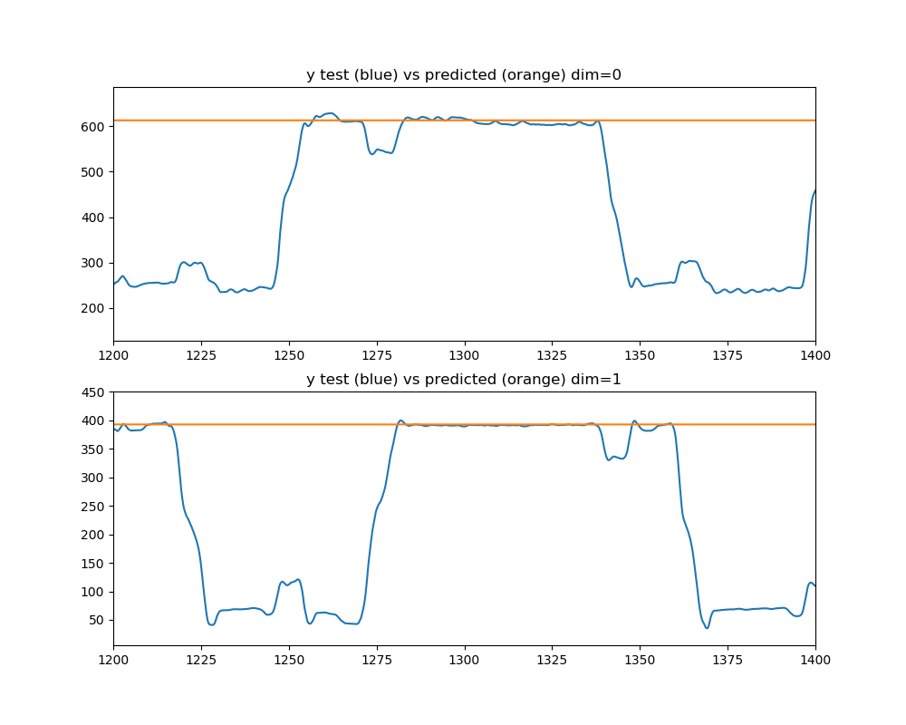
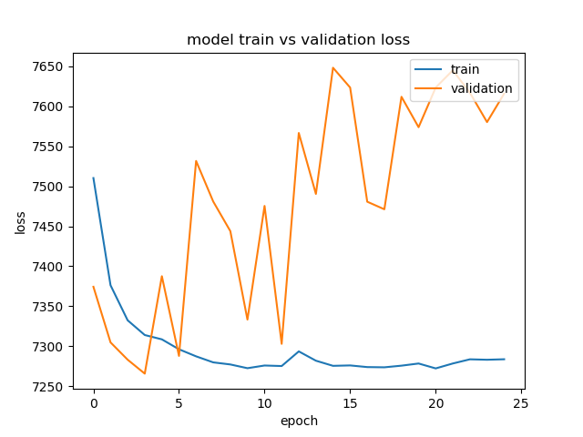
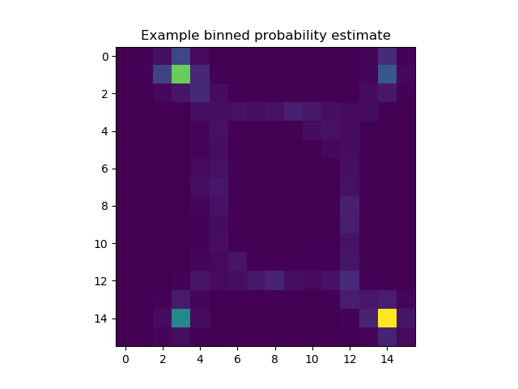

<!DOCTYPE html>
<!--[if IE 8]><html class="no-js lt-ie9" lang="en" > <![endif]-->
<!--[if gt IE 8]><!--> <html class="no-js" lang="en" > <!--<![endif]-->
<head>
  <meta charset="utf-8">
  
  <meta name="viewport" content="width=device-width, initial-scale=1.0">
  
  <title>Decoding binned position probabilities from spike features with a dense Keras neural network &mdash; mlneuro 1.0 documentation</title>
  

  
  
  
  

  

  
  
    

  

  <link rel="stylesheet" href="../../../_static/css/theme.css" type="text/css" />
  <link rel="stylesheet" href="../../../_static/pygments.css" type="text/css" />
  <link rel="stylesheet" href="../../../_static/gallery.css" type="text/css" />
    <link rel="index" title="Index" href="../../../genindex.html" />
    <link rel="search" title="Search" href="../../../search.html" />
    <link rel="next" title="Clustered spike decoding examples" href="../clustered/index.html" />
    <link rel="prev" title="Multisignal parameter grid search with a KDE pipeline" href="plot_kde_multi_bandwidth_search.html" />
    <link href="../../../_static/style.css" rel="stylesheet" type="text/css">


  
  <script src="../../../_static/js/modernizr.min.js"></script>

</head>

<body class="wy-body-for-nav">

   
  <div class="wy-grid-for-nav">

    
    <nav data-toggle="wy-nav-shift" class="wy-nav-side">
      <div class="wy-side-scroll">
        <div class="wy-side-nav-search">
          

          
            <a href="../../../index.html" class="icon icon-home"> mlneuro
          

          
          </a>

          
            
            
          

          
<div role="search">
  <form id="rtd-search-form" class="wy-form" action="../../../search.html" method="get">
    <input type="text" name="q" placeholder="Search docs" />
    <input type="hidden" name="check_keywords" value="yes" />
    <input type="hidden" name="area" value="default" />
  </form>
</div>

          
        </div>

        <div class="wy-menu wy-menu-vertical" data-spy="affix" role="navigation" aria-label="main navigation">
          
            
            
              
            
            
              <ul class="current">
<li class="toctree-l1"><a class="reference internal" href="../../../guide.html">User Guide</a></li>
<li class="toctree-l1"><a class="reference internal" href="../../../api.html">API Reference</a></li>
<li class="toctree-l1 current"><a class="reference internal" href="../../../examples_head.html">Examples</a><ul class="current">
<li class="toctree-l2 current"><a class="reference internal" href="index.html">Clusterless decoding examples</a><ul class="current">
<li class="toctree-l3"><a class="reference internal" href="plot_filter_comparison.html">A comparison of the temporal filters applied to KDE decoding</a></li>
<li class="toctree-l3"><a class="reference internal" href="plot_kde_multi_signal.html">Decoding position from spike features with a multisignal kde pipeline</a></li>
<li class="toctree-l3"><a class="reference internal" href="plot_kde_multi_as_single.html">Decoding position from spike features with a quasi-multisignal kde</a></li>
<li class="toctree-l3"><a class="reference internal" href="plot_kde_mixed_decoding.html">Decoding position from spike features and cluster information with kde</a></li>
<li class="toctree-l3"><a class="reference internal" href="plot_kde_multi_bandwidth_search.html">Multisignal parameter grid search with a KDE pipeline</a></li>
<li class="toctree-l3 current"><a class="current reference internal" href="#">Decoding binned position probabilities from spike features with a dense Keras neural network</a></li>
</ul>
</li>
<li class="toctree-l2"><a class="reference internal" href="../clustered/index.html">Clustered spike decoding examples</a></li>
</ul>
</li>
</ul>

            
          
        </div>
      </div>
    </nav>

    <section data-toggle="wy-nav-shift" class="wy-nav-content-wrap">

      
      <nav class="wy-nav-top" aria-label="top navigation">
        
          <i data-toggle="wy-nav-top" class="fa fa-bars"></i>
          <a href="../../../index.html">mlneuro</a>
        
      </nav>


      <div class="wy-nav-content">
        
        <div class="rst-content">
        
          


<div role="navigation" aria-label="breadcrumbs navigation">

  <ul class="wy-breadcrumbs">
    
      <li><a href="../../../index.html">Docs</a> &raquo;</li>
        
          <li><a href="../../../examples_head.html">Examples</a> &raquo;</li>
        
          <li><a href="index.html">Clusterless decoding examples</a> &raquo;</li>
        
      <li>Decoding binned position probabilities from spike features with a dense Keras neural network</li>
    
    
      <li class="wy-breadcrumbs-aside">
        
            
            <a href="../../../_sources/generated/examples/clusterless/plot_binned_densenn_clusterless.rst.txt" rel="nofollow"> View page source</a>
          
        
      </li>
    
  </ul>

  
  <hr/>
</div>
          <div role="main" class="document" itemscope="itemscope" itemtype="http://schema.org/Article">
           <div itemprop="articleBody">
            
  <div class="sphx-glr-download-link-note admonition note">
<p class="first admonition-title">Note</p>
<p class="last">Click <a class="reference internal" href="#sphx-glr-download-generated-examples-clusterless-plot-binned-densenn-clusterless-py"><span class="std std-ref">here</span></a> to download the full example code</p>
</div>
<div class="sphx-glr-example-title section" id="decoding-binned-position-probabilities-from-spike-features-with-a-dense-keras-neural-network">
<span id="sphx-glr-generated-examples-clusterless-plot-binned-densenn-clusterless-py"></span><h1>Decoding binned position probabilities from spike features with a dense Keras neural network<a class="headerlink" href="#decoding-binned-position-probabilities-from-spike-features-with-a-dense-keras-neural-network" title="Permalink to this headline">¶</a></h1>
<ul class="sphx-glr-horizontal">
<li>
</li>
<li>
</li>
<li>
</li>
</ul>
<p class="sphx-glr-script-out">Out:</p>
<div class="sphx-glr-script-out highlight-none notranslate"><div class="highlight"><pre><span></span>Train on 204907 samples, validate on 36161 samples
Epoch 1/25

    32/204907 [..............................] - ETA: 1892s - loss: 11350.1328 - categorical_accuracy: 0.0000e+00
   576/204907 [..............................] - ETA: 123s - loss: 10854.8765 - categorical_accuracy: 0.1476     
  1056/204907 [..............................] - ETA: 76s - loss: 10311.2438 - categorical_accuracy: 0.1610 
  1568/204907 [..............................] - ETA: 58s - loss: 9944.1995 - categorical_accuracy: 0.1633 
  2080/204907 [..............................] - ETA: 48s - loss: 9625.8971 - categorical_accuracy: 0.1663
  2592/204907 [..............................] - ETA: 43s - loss: 9332.8474 - categorical_accuracy: 0.1667
  3104/204907 [..............................] - ETA: 39s - loss: 9078.2587 - categorical_accuracy: 0.1669
  3616/204907 [..............................] - ETA: 36s - loss: 8912.3032 - categorical_accuracy: 0.1679
  4128/204907 [..............................] - ETA: 34s - loss: 8799.9698 - categorical_accuracy: 0.1681
  4608/204907 [..............................] - ETA: 33s - loss: 8703.9743 - categorical_accuracy: 0.1682
  5120/204907 [..............................] - ETA: 31s - loss: 8646.7082 - categorical_accuracy: 0.1682
  5632/204907 [..............................] - ETA: 30s - loss: 8566.5576 - categorical_accuracy: 0.1685
  6112/204907 [..............................] - ETA: 29s - loss: 8503.7719 - categorical_accuracy: 0.1685
  6560/204907 [..............................] - ETA: 29s - loss: 8450.9114 - categorical_accuracy: 0.1692
  7136/204907 [&gt;.............................] - ETA: 28s - loss: 8378.1666 - categorical_accuracy: 0.1711
  7616/204907 [&gt;.............................] - ETA: 27s - loss: 8337.2773 - categorical_accuracy: 0.1727
  8096/204907 [&gt;.............................] - ETA: 27s - loss: 8295.4265 - categorical_accuracy: 0.1753
  8576/204907 [&gt;.............................] - ETA: 26s - loss: 8252.7336 - categorical_accuracy: 0.1772
  9056/204907 [&gt;.............................] - ETA: 26s - loss: 8219.2290 - categorical_accuracy: 0.1780
  9536/204907 [&gt;.............................] - ETA: 26s - loss: 8192.3346 - categorical_accuracy: 0.1774
  9984/204907 [&gt;.............................] - ETA: 25s - loss: 8177.0644 - categorical_accuracy: 0.1759
 10496/204907 [&gt;.............................] - ETA: 25s - loss: 8152.9961 - categorical_accuracy: 0.1760
 10976/204907 [&gt;.............................] - ETA: 25s - loss: 8138.5078 - categorical_accuracy: 0.1755
 11456/204907 [&gt;.............................] - ETA: 25s - loss: 8113.4986 - categorical_accuracy: 0.1759
 11936/204907 [&gt;.............................] - ETA: 24s - loss: 8101.1431 - categorical_accuracy: 0.1762
 12416/204907 [&gt;.............................] - ETA: 24s - loss: 8081.4970 - categorical_accuracy: 0.1769
 12896/204907 [&gt;.............................] - ETA: 24s - loss: 8067.5448 - categorical_accuracy: 0.1770
 13376/204907 [&gt;.............................] - ETA: 24s - loss: 8044.7273 - categorical_accuracy: 0.1788
 13888/204907 [=&gt;............................] - ETA: 23s - loss: 8028.6967 - categorical_accuracy: 0.1799
 14368/204907 [=&gt;............................] - ETA: 23s - loss: 8010.3982 - categorical_accuracy: 0.1810
 14880/204907 [=&gt;............................] - ETA: 23s - loss: 7995.8787 - categorical_accuracy: 0.1817
 15360/204907 [=&gt;............................] - ETA: 23s - loss: 7991.7469 - categorical_accuracy: 0.1814
 15872/204907 [=&gt;............................] - ETA: 23s - loss: 7985.4161 - categorical_accuracy: 0.1813
 16352/204907 [=&gt;............................] - ETA: 23s - loss: 7974.9638 - categorical_accuracy: 0.1813
 16832/204907 [=&gt;............................] - ETA: 22s - loss: 7966.4949 - categorical_accuracy: 0.1818
 17280/204907 [=&gt;............................] - ETA: 22s - loss: 7958.8916 - categorical_accuracy: 0.1819
 17760/204907 [=&gt;............................] - ETA: 22s - loss: 7950.3000 - categorical_accuracy: 0.1823
 18272/204907 [=&gt;............................] - ETA: 22s - loss: 7930.9027 - categorical_accuracy: 0.1828
 18752/204907 [=&gt;............................] - ETA: 22s - loss: 7927.2084 - categorical_accuracy: 0.1829
 19232/204907 [=&gt;............................] - ETA: 22s - loss: 7922.4003 - categorical_accuracy: 0.1828
 19648/204907 [=&gt;............................] - ETA: 22s - loss: 7917.9587 - categorical_accuracy: 0.1831
 20160/204907 [=&gt;............................] - ETA: 22s - loss: 7909.5581 - categorical_accuracy: 0.1839
 20608/204907 [==&gt;...........................] - ETA: 22s - loss: 7901.1258 - categorical_accuracy: 0.1847
 21056/204907 [==&gt;...........................] - ETA: 21s - loss: 7894.4120 - categorical_accuracy: 0.1851
 21536/204907 [==&gt;...........................] - ETA: 21s - loss: 7886.5800 - categorical_accuracy: 0.1856
 22080/204907 [==&gt;...........................] - ETA: 21s - loss: 7877.9191 - categorical_accuracy: 0.1853
 22624/204907 [==&gt;...........................] - ETA: 21s - loss: 7869.9405 - categorical_accuracy: 0.1854
 23136/204907 [==&gt;...........................] - ETA: 21s - loss: 7860.7999 - categorical_accuracy: 0.1859
 23680/204907 [==&gt;...........................] - ETA: 21s - loss: 7854.5100 - categorical_accuracy: 0.1865
 24224/204907 [==&gt;...........................] - ETA: 21s - loss: 7850.1815 - categorical_accuracy: 0.1866
 24704/204907 [==&gt;...........................] - ETA: 20s - loss: 7843.3509 - categorical_accuracy: 0.1871
 25216/204907 [==&gt;...........................] - ETA: 20s - loss: 7841.1246 - categorical_accuracy: 0.1871
 25760/204907 [==&gt;...........................] - ETA: 20s - loss: 7836.0445 - categorical_accuracy: 0.1876
 26240/204907 [==&gt;...........................] - ETA: 20s - loss: 7834.9138 - categorical_accuracy: 0.1876
 26720/204907 [==&gt;...........................] - ETA: 20s - loss: 7831.6010 - categorical_accuracy: 0.1879
 27232/204907 [==&gt;...........................] - ETA: 20s - loss: 7827.4270 - categorical_accuracy: 0.1886
 27680/204907 [===&gt;..........................] - ETA: 20s - loss: 7823.4715 - categorical_accuracy: 0.1891
 28128/204907 [===&gt;..........................] - ETA: 20s - loss: 7821.3268 - categorical_accuracy: 0.1892
 28608/204907 [===&gt;..........................] - ETA: 20s - loss: 7814.7321 - categorical_accuracy: 0.1895
 29120/204907 [===&gt;..........................] - ETA: 20s - loss: 7810.5925 - categorical_accuracy: 0.1893
 29600/204907 [===&gt;..........................] - ETA: 20s - loss: 7806.3622 - categorical_accuracy: 0.1895
 30080/204907 [===&gt;..........................] - ETA: 19s - loss: 7805.4570 - categorical_accuracy: 0.1897
 30592/204907 [===&gt;..........................] - ETA: 19s - loss: 7802.8056 - categorical_accuracy: 0.1897
 31104/204907 [===&gt;..........................] - ETA: 19s - loss: 7796.8794 - categorical_accuracy: 0.1901
 31616/204907 [===&gt;..........................] - ETA: 19s - loss: 7793.5343 - categorical_accuracy: 0.1909
 32096/204907 [===&gt;..........................] - ETA: 19s - loss: 7792.9655 - categorical_accuracy: 0.1909
 32608/204907 [===&gt;..........................] - ETA: 19s - loss: 7789.4779 - categorical_accuracy: 0.1907
 33056/204907 [===&gt;..........................] - ETA: 19s - loss: 7785.8254 - categorical_accuracy: 0.1907
 33536/204907 [===&gt;..........................] - ETA: 19s - loss: 7783.2949 - categorical_accuracy: 0.1910
 34016/204907 [===&gt;..........................] - ETA: 19s - loss: 7781.6592 - categorical_accuracy: 0.1916
 34528/204907 [====&gt;.........................] - ETA: 19s - loss: 7777.7934 - categorical_accuracy: 0.1917
 35008/204907 [====&gt;.........................] - ETA: 19s - loss: 7775.6204 - categorical_accuracy: 0.1917
 35488/204907 [====&gt;.........................] - ETA: 19s - loss: 7771.5587 - categorical_accuracy: 0.1923
 36000/204907 [====&gt;.........................] - ETA: 19s - loss: 7768.5043 - categorical_accuracy: 0.1925
 36544/204907 [====&gt;.........................] - ETA: 18s - loss: 7762.4608 - categorical_accuracy: 0.1930
 37056/204907 [====&gt;.........................] - ETA: 18s - loss: 7760.9995 - categorical_accuracy: 0.1931
 37568/204907 [====&gt;.........................] - ETA: 18s - loss: 7755.9887 - categorical_accuracy: 0.1936
 38080/204907 [====&gt;.........................] - ETA: 18s - loss: 7754.4581 - categorical_accuracy: 0.1938
 38592/204907 [====&gt;.........................] - ETA: 18s - loss: 7750.7264 - categorical_accuracy: 0.1940
 39104/204907 [====&gt;.........................] - ETA: 18s - loss: 7749.2200 - categorical_accuracy: 0.1939
 39648/204907 [====&gt;.........................] - ETA: 18s - loss: 7748.5976 - categorical_accuracy: 0.1938
 40128/204907 [====&gt;.........................] - ETA: 18s - loss: 7744.0925 - categorical_accuracy: 0.1941
 40608/204907 [====&gt;.........................] - ETA: 18s - loss: 7742.6191 - categorical_accuracy: 0.1942
 41088/204907 [=====&gt;........................] - ETA: 18s - loss: 7739.2562 - categorical_accuracy: 0.1941
 41536/204907 [=====&gt;........................] - ETA: 18s - loss: 7734.9399 - categorical_accuracy: 0.1946
 41984/204907 [=====&gt;........................] - ETA: 18s - loss: 7732.2831 - categorical_accuracy: 0.1950
 42496/204907 [=====&gt;........................] - ETA: 18s - loss: 7729.3873 - categorical_accuracy: 0.1954
 43008/204907 [=====&gt;........................] - ETA: 17s - loss: 7727.4147 - categorical_accuracy: 0.1957
 43520/204907 [=====&gt;........................] - ETA: 17s - loss: 7725.7109 - categorical_accuracy: 0.1956
 44000/204907 [=====&gt;........................] - ETA: 17s - loss: 7724.6091 - categorical_accuracy: 0.1958
 44544/204907 [=====&gt;........................] - ETA: 17s - loss: 7723.1934 - categorical_accuracy: 0.1959
 45056/204907 [=====&gt;........................] - ETA: 17s - loss: 7719.3686 - categorical_accuracy: 0.1962
 45536/204907 [=====&gt;........................] - ETA: 17s - loss: 7715.5735 - categorical_accuracy: 0.1964
 45984/204907 [=====&gt;........................] - ETA: 17s - loss: 7713.9110 - categorical_accuracy: 0.1965
 46528/204907 [=====&gt;........................] - ETA: 17s - loss: 7709.9025 - categorical_accuracy: 0.1968
 46976/204907 [=====&gt;........................] - ETA: 17s - loss: 7706.8646 - categorical_accuracy: 0.1970
 47488/204907 [=====&gt;........................] - ETA: 17s - loss: 7706.1094 - categorical_accuracy: 0.1970
 47968/204907 [======&gt;.......................] - ETA: 17s - loss: 7704.4247 - categorical_accuracy: 0.1972
 48480/204907 [======&gt;.......................] - ETA: 17s - loss: 7700.7763 - categorical_accuracy: 0.1977
 48992/204907 [======&gt;.......................] - ETA: 17s - loss: 7701.7149 - categorical_accuracy: 0.1976
 49472/204907 [======&gt;.......................] - ETA: 17s - loss: 7698.9318 - categorical_accuracy: 0.1978
 49920/204907 [======&gt;.......................] - ETA: 17s - loss: 7698.0119 - categorical_accuracy: 0.1979
 50400/204907 [======&gt;.......................] - ETA: 17s - loss: 7698.1149 - categorical_accuracy: 0.1978
 50880/204907 [======&gt;.......................] - ETA: 16s - loss: 7697.7369 - categorical_accuracy: 0.1978
 51360/204907 [======&gt;.......................] - ETA: 16s - loss: 7695.2729 - categorical_accuracy: 0.1979
 51904/204907 [======&gt;.......................] - ETA: 16s - loss: 7695.9281 - categorical_accuracy: 0.1977
 52352/204907 [======&gt;.......................] - ETA: 16s - loss: 7693.6388 - categorical_accuracy: 0.1980
 52800/204907 [======&gt;.......................] - ETA: 16s - loss: 7693.9528 - categorical_accuracy: 0.1979
 53248/204907 [======&gt;.......................] - ETA: 16s - loss: 7692.9365 - categorical_accuracy: 0.1981
 53728/204907 [======&gt;.......................] - ETA: 16s - loss: 7690.6695 - categorical_accuracy: 0.1984
 54208/204907 [======&gt;.......................] - ETA: 16s - loss: 7687.5862 - categorical_accuracy: 0.1989
 54720/204907 [=======&gt;......................] - ETA: 16s - loss: 7685.3494 - categorical_accuracy: 0.1992
 55232/204907 [=======&gt;......................] - ETA: 16s - loss: 7685.1710 - categorical_accuracy: 0.1990
 55744/204907 [=======&gt;......................] - ETA: 16s - loss: 7682.8727 - categorical_accuracy: 0.1995
 56256/204907 [=======&gt;......................] - ETA: 16s - loss: 7683.0039 - categorical_accuracy: 0.1995
 56768/204907 [=======&gt;......................] - ETA: 16s - loss: 7682.0265 - categorical_accuracy: 0.1995
 57184/204907 [=======&gt;......................] - ETA: 16s - loss: 7680.7713 - categorical_accuracy: 0.1997
 57696/204907 [=======&gt;......................] - ETA: 16s - loss: 7679.7413 - categorical_accuracy: 0.1996
 58176/204907 [=======&gt;......................] - ETA: 16s - loss: 7676.9304 - categorical_accuracy: 0.1999
 58688/204907 [=======&gt;......................] - ETA: 16s - loss: 7675.3175 - categorical_accuracy: 0.2000
 59200/204907 [=======&gt;......................] - ETA: 15s - loss: 7672.6022 - categorical_accuracy: 0.2001
 59712/204907 [=======&gt;......................] - ETA: 15s - loss: 7672.8826 - categorical_accuracy: 0.2000
 60160/204907 [=======&gt;......................] - ETA: 15s - loss: 7672.3286 - categorical_accuracy: 0.2001
 60640/204907 [=======&gt;......................] - ETA: 15s - loss: 7669.7927 - categorical_accuracy: 0.2002
 61088/204907 [=======&gt;......................] - ETA: 15s - loss: 7670.0028 - categorical_accuracy: 0.2003
 61536/204907 [========&gt;.....................] - ETA: 15s - loss: 7669.5088 - categorical_accuracy: 0.2002
 62048/204907 [========&gt;.....................] - ETA: 15s - loss: 7668.8798 - categorical_accuracy: 0.2002
 62560/204907 [========&gt;.....................] - ETA: 15s - loss: 7666.8360 - categorical_accuracy: 0.2005
 63040/204907 [========&gt;.....................] - ETA: 15s - loss: 7665.2074 - categorical_accuracy: 0.2007
 63520/204907 [========&gt;.....................] - ETA: 15s - loss: 7663.4294 - categorical_accuracy: 0.2011
 64032/204907 [========&gt;.....................] - ETA: 15s - loss: 7664.3003 - categorical_accuracy: 0.2009
 64544/204907 [========&gt;.....................] - ETA: 15s - loss: 7660.6774 - categorical_accuracy: 0.2013
 65024/204907 [========&gt;.....................] - ETA: 15s - loss: 7658.2541 - categorical_accuracy: 0.2014
 65504/204907 [========&gt;.....................] - ETA: 15s - loss: 7657.0321 - categorical_accuracy: 0.2017
 65984/204907 [========&gt;.....................] - ETA: 15s - loss: 7653.7955 - categorical_accuracy: 0.2021
 66464/204907 [========&gt;.....................] - ETA: 15s - loss: 7653.8808 - categorical_accuracy: 0.2022
 66976/204907 [========&gt;.....................] - ETA: 15s - loss: 7654.2065 - categorical_accuracy: 0.2022
 67488/204907 [========&gt;.....................] - ETA: 15s - loss: 7652.9194 - categorical_accuracy: 0.2022
 67968/204907 [========&gt;.....................] - ETA: 14s - loss: 7651.5632 - categorical_accuracy: 0.2023
 68480/204907 [=========&gt;....................] - ETA: 14s - loss: 7649.8311 - categorical_accuracy: 0.2025
 68992/204907 [=========&gt;....................] - ETA: 14s - loss: 7647.9200 - categorical_accuracy: 0.2025
 69440/204907 [=========&gt;....................] - ETA: 14s - loss: 7647.0759 - categorical_accuracy: 0.2027
 69920/204907 [=========&gt;....................] - ETA: 14s - loss: 7647.1632 - categorical_accuracy: 0.2026
 70432/204907 [=========&gt;....................] - ETA: 14s - loss: 7646.1615 - categorical_accuracy: 0.2028
 70944/204907 [=========&gt;....................] - ETA: 14s - loss: 7645.5350 - categorical_accuracy: 0.2027
 71424/204907 [=========&gt;....................] - ETA: 14s - loss: 7643.5452 - categorical_accuracy: 0.2029
 71936/204907 [=========&gt;....................] - ETA: 14s - loss: 7642.2355 - categorical_accuracy: 0.2030
 72416/204907 [=========&gt;....................] - ETA: 14s - loss: 7641.2023 - categorical_accuracy: 0.2031
 72928/204907 [=========&gt;....................] - ETA: 14s - loss: 7639.2783 - categorical_accuracy: 0.2032
 73472/204907 [=========&gt;....................] - ETA: 14s - loss: 7637.1246 - categorical_accuracy: 0.2034
 73984/204907 [=========&gt;....................] - ETA: 14s - loss: 7635.5311 - categorical_accuracy: 0.2034
 74496/204907 [=========&gt;....................] - ETA: 14s - loss: 7633.6451 - categorical_accuracy: 0.2035
 74976/204907 [=========&gt;....................] - ETA: 14s - loss: 7631.8528 - categorical_accuracy: 0.2036
 75488/204907 [==========&gt;...................] - ETA: 14s - loss: 7630.1685 - categorical_accuracy: 0.2037
 75968/204907 [==========&gt;...................] - ETA: 14s - loss: 7629.4044 - categorical_accuracy: 0.2038
 76448/204907 [==========&gt;...................] - ETA: 13s - loss: 7628.2662 - categorical_accuracy: 0.2039
 76896/204907 [==========&gt;...................] - ETA: 13s - loss: 7627.2709 - categorical_accuracy: 0.2041
 77376/204907 [==========&gt;...................] - ETA: 13s - loss: 7625.9180 - categorical_accuracy: 0.2042
 77824/204907 [==========&gt;...................] - ETA: 13s - loss: 7624.5878 - categorical_accuracy: 0.2042
 78304/204907 [==========&gt;...................] - ETA: 13s - loss: 7623.4078 - categorical_accuracy: 0.2042
 78784/204907 [==========&gt;...................] - ETA: 13s - loss: 7622.2703 - categorical_accuracy: 0.2043
 79296/204907 [==========&gt;...................] - ETA: 13s - loss: 7620.4192 - categorical_accuracy: 0.2047
 79744/204907 [==========&gt;...................] - ETA: 13s - loss: 7620.3663 - categorical_accuracy: 0.2048
 80224/204907 [==========&gt;...................] - ETA: 13s - loss: 7620.3740 - categorical_accuracy: 0.2048
 80704/204907 [==========&gt;...................] - ETA: 13s - loss: 7619.0995 - categorical_accuracy: 0.2049
 81184/204907 [==========&gt;...................] - ETA: 13s - loss: 7618.9045 - categorical_accuracy: 0.2050
 81664/204907 [==========&gt;...................] - ETA: 13s - loss: 7618.8765 - categorical_accuracy: 0.2049
 82112/204907 [===========&gt;..................] - ETA: 13s - loss: 7617.8485 - categorical_accuracy: 0.2049
 82624/204907 [===========&gt;..................] - ETA: 13s - loss: 7617.1870 - categorical_accuracy: 0.2049
 83104/204907 [===========&gt;..................] - ETA: 13s - loss: 7615.4383 - categorical_accuracy: 0.2049
 83552/204907 [===========&gt;..................] - ETA: 13s - loss: 7615.0102 - categorical_accuracy: 0.2050
 84064/204907 [===========&gt;..................] - ETA: 13s - loss: 7614.1135 - categorical_accuracy: 0.2049
 84544/204907 [===========&gt;..................] - ETA: 13s - loss: 7612.9725 - categorical_accuracy: 0.2049
 85024/204907 [===========&gt;..................] - ETA: 13s - loss: 7613.2225 - categorical_accuracy: 0.2049
 85536/204907 [===========&gt;..................] - ETA: 12s - loss: 7613.4903 - categorical_accuracy: 0.2049
 86016/204907 [===========&gt;..................] - ETA: 12s - loss: 7612.2098 - categorical_accuracy: 0.2049
 86528/204907 [===========&gt;..................] - ETA: 12s - loss: 7611.3970 - categorical_accuracy: 0.2050
 87008/204907 [===========&gt;..................] - ETA: 12s - loss: 7610.3090 - categorical_accuracy: 0.2051
 87520/204907 [===========&gt;..................] - ETA: 12s - loss: 7608.3165 - categorical_accuracy: 0.2052
 88000/204907 [===========&gt;..................] - ETA: 12s - loss: 7606.9319 - categorical_accuracy: 0.2052
 88512/204907 [===========&gt;..................] - ETA: 12s - loss: 7606.9577 - categorical_accuracy: 0.2052
 88960/204907 [============&gt;.................] - ETA: 12s - loss: 7605.6730 - categorical_accuracy: 0.2054
 89472/204907 [============&gt;.................] - ETA: 12s - loss: 7604.8493 - categorical_accuracy: 0.2054
 89952/204907 [============&gt;.................] - ETA: 12s - loss: 7604.8502 - categorical_accuracy: 0.2054
 90368/204907 [============&gt;.................] - ETA: 12s - loss: 7604.3786 - categorical_accuracy: 0.2054
 90880/204907 [============&gt;.................] - ETA: 12s - loss: 7602.6110 - categorical_accuracy: 0.2057
 91392/204907 [============&gt;.................] - ETA: 12s - loss: 7602.3169 - categorical_accuracy: 0.2057
 91872/204907 [============&gt;.................] - ETA: 12s - loss: 7601.1679 - categorical_accuracy: 0.2057
 92320/204907 [============&gt;.................] - ETA: 12s - loss: 7599.9786 - categorical_accuracy: 0.2058
 92768/204907 [============&gt;.................] - ETA: 12s - loss: 7599.9644 - categorical_accuracy: 0.2058
 93248/204907 [============&gt;.................] - ETA: 12s - loss: 7598.9051 - categorical_accuracy: 0.2059
 93760/204907 [============&gt;.................] - ETA: 12s - loss: 7597.6116 - categorical_accuracy: 0.2058
 94240/204907 [============&gt;.................] - ETA: 11s - loss: 7596.6142 - categorical_accuracy: 0.2060
 94752/204907 [============&gt;.................] - ETA: 11s - loss: 7596.2340 - categorical_accuracy: 0.2059
 95264/204907 [============&gt;.................] - ETA: 11s - loss: 7597.4809 - categorical_accuracy: 0.2058
 95712/204907 [=============&gt;................] - ETA: 11s - loss: 7596.5140 - categorical_accuracy: 0.2058
 96192/204907 [=============&gt;................] - ETA: 11s - loss: 7595.7403 - categorical_accuracy: 0.2059
 96704/204907 [=============&gt;................] - ETA: 11s - loss: 7595.2282 - categorical_accuracy: 0.2059
 97184/204907 [=============&gt;................] - ETA: 11s - loss: 7594.3872 - categorical_accuracy: 0.2060
 97664/204907 [=============&gt;................] - ETA: 11s - loss: 7594.0925 - categorical_accuracy: 0.2060
 98208/204907 [=============&gt;................] - ETA: 11s - loss: 7594.0782 - categorical_accuracy: 0.2060
 98720/204907 [=============&gt;................] - ETA: 11s - loss: 7593.9176 - categorical_accuracy: 0.2060
 99264/204907 [=============&gt;................] - ETA: 11s - loss: 7592.0348 - categorical_accuracy: 0.2061
 99744/204907 [=============&gt;................] - ETA: 11s - loss: 7591.1489 - categorical_accuracy: 0.2062
100256/204907 [=============&gt;................] - ETA: 11s - loss: 7589.7599 - categorical_accuracy: 0.2063
100736/204907 [=============&gt;................] - ETA: 11s - loss: 7589.1042 - categorical_accuracy: 0.2065
101248/204907 [=============&gt;................] - ETA: 11s - loss: 7589.1702 - categorical_accuracy: 0.2063
101792/204907 [=============&gt;................] - ETA: 11s - loss: 7590.0809 - categorical_accuracy: 0.2063
102272/204907 [=============&gt;................] - ETA: 11s - loss: 7589.1559 - categorical_accuracy: 0.2064
102752/204907 [==============&gt;...............] - ETA: 11s - loss: 7588.0185 - categorical_accuracy: 0.2065
103200/204907 [==============&gt;...............] - ETA: 10s - loss: 7586.9538 - categorical_accuracy: 0.2065
103648/204907 [==============&gt;...............] - ETA: 10s - loss: 7587.1695 - categorical_accuracy: 0.2064
104160/204907 [==============&gt;...............] - ETA: 10s - loss: 7586.6555 - categorical_accuracy: 0.2064
104736/204907 [==============&gt;...............] - ETA: 10s - loss: 7586.5431 - categorical_accuracy: 0.2064
105216/204907 [==============&gt;...............] - ETA: 10s - loss: 7586.8918 - categorical_accuracy: 0.2063
105664/204907 [==============&gt;...............] - ETA: 10s - loss: 7585.8878 - categorical_accuracy: 0.2065
106144/204907 [==============&gt;...............] - ETA: 10s - loss: 7585.7172 - categorical_accuracy: 0.2064
106656/204907 [==============&gt;...............] - ETA: 10s - loss: 7584.0307 - categorical_accuracy: 0.2065
107168/204907 [==============&gt;...............] - ETA: 10s - loss: 7583.3153 - categorical_accuracy: 0.2066
107680/204907 [==============&gt;...............] - ETA: 10s - loss: 7582.4994 - categorical_accuracy: 0.2066
108160/204907 [==============&gt;...............] - ETA: 10s - loss: 7582.8541 - categorical_accuracy: 0.2065
108672/204907 [==============&gt;...............] - ETA: 10s - loss: 7582.5095 - categorical_accuracy: 0.2064
109184/204907 [==============&gt;...............] - ETA: 10s - loss: 7582.0743 - categorical_accuracy: 0.2064
109664/204907 [===============&gt;..............] - ETA: 10s - loss: 7582.1756 - categorical_accuracy: 0.2063
110208/204907 [===============&gt;..............] - ETA: 10s - loss: 7581.8081 - categorical_accuracy: 0.2063
110720/204907 [===============&gt;..............] - ETA: 10s - loss: 7582.5487 - categorical_accuracy: 0.2063
111232/204907 [===============&gt;..............] - ETA: 10s - loss: 7581.7320 - categorical_accuracy: 0.2065
111776/204907 [===============&gt;..............] - ETA: 10s - loss: 7580.9394 - categorical_accuracy: 0.2066
112288/204907 [===============&gt;..............] - ETA: 9s - loss: 7580.9660 - categorical_accuracy: 0.2066 
112800/204907 [===============&gt;..............] - ETA: 9s - loss: 7579.9102 - categorical_accuracy: 0.2067
113280/204907 [===============&gt;..............] - ETA: 9s - loss: 7579.2429 - categorical_accuracy: 0.2068
113760/204907 [===============&gt;..............] - ETA: 9s - loss: 7579.6823 - categorical_accuracy: 0.2067
114272/204907 [===============&gt;..............] - ETA: 9s - loss: 7579.4058 - categorical_accuracy: 0.2067
114752/204907 [===============&gt;..............] - ETA: 9s - loss: 7578.6472 - categorical_accuracy: 0.2067
115264/204907 [===============&gt;..............] - ETA: 9s - loss: 7577.6958 - categorical_accuracy: 0.2068
115744/204907 [===============&gt;..............] - ETA: 9s - loss: 7576.8997 - categorical_accuracy: 0.2067
116224/204907 [================&gt;.............] - ETA: 9s - loss: 7576.4241 - categorical_accuracy: 0.2067
116768/204907 [================&gt;.............] - ETA: 9s - loss: 7575.5991 - categorical_accuracy: 0.2067
117280/204907 [================&gt;.............] - ETA: 9s - loss: 7575.7118 - categorical_accuracy: 0.2068
117760/204907 [================&gt;.............] - ETA: 9s - loss: 7575.0406 - categorical_accuracy: 0.2068
118240/204907 [================&gt;.............] - ETA: 9s - loss: 7575.0322 - categorical_accuracy: 0.2066
118720/204907 [================&gt;.............] - ETA: 9s - loss: 7574.2254 - categorical_accuracy: 0.2067
119200/204907 [================&gt;.............] - ETA: 9s - loss: 7574.0698 - categorical_accuracy: 0.2068
119680/204907 [================&gt;.............] - ETA: 9s - loss: 7573.8304 - categorical_accuracy: 0.2068
120160/204907 [================&gt;.............] - ETA: 9s - loss: 7572.1025 - categorical_accuracy: 0.2069
120672/204907 [================&gt;.............] - ETA: 9s - loss: 7571.9775 - categorical_accuracy: 0.2069
121152/204907 [================&gt;.............] - ETA: 8s - loss: 7571.4085 - categorical_accuracy: 0.2069
121600/204907 [================&gt;.............] - ETA: 8s - loss: 7570.6237 - categorical_accuracy: 0.2069
122080/204907 [================&gt;.............] - ETA: 8s - loss: 7570.0236 - categorical_accuracy: 0.2070
122560/204907 [================&gt;.............] - ETA: 8s - loss: 7569.3143 - categorical_accuracy: 0.2071
123040/204907 [=================&gt;............] - ETA: 8s - loss: 7568.1370 - categorical_accuracy: 0.2072
123488/204907 [=================&gt;............] - ETA: 8s - loss: 7567.7500 - categorical_accuracy: 0.2073
123968/204907 [=================&gt;............] - ETA: 8s - loss: 7567.8892 - categorical_accuracy: 0.2072
124448/204907 [=================&gt;............] - ETA: 8s - loss: 7567.3317 - categorical_accuracy: 0.2073
124896/204907 [=================&gt;............] - ETA: 8s - loss: 7567.0904 - categorical_accuracy: 0.2073
125376/204907 [=================&gt;............] - ETA: 8s - loss: 7567.0046 - categorical_accuracy: 0.2072
125856/204907 [=================&gt;............] - ETA: 8s - loss: 7566.9089 - categorical_accuracy: 0.2072
126336/204907 [=================&gt;............] - ETA: 8s - loss: 7566.1446 - categorical_accuracy: 0.2073
126816/204907 [=================&gt;............] - ETA: 8s - loss: 7566.9175 - categorical_accuracy: 0.2071
127264/204907 [=================&gt;............] - ETA: 8s - loss: 7565.8559 - categorical_accuracy: 0.2072
127776/204907 [=================&gt;............] - ETA: 8s - loss: 7565.8125 - categorical_accuracy: 0.2073
128320/204907 [=================&gt;............] - ETA: 8s - loss: 7565.9617 - categorical_accuracy: 0.2072
128896/204907 [=================&gt;............] - ETA: 8s - loss: 7565.3335 - categorical_accuracy: 0.2073
129440/204907 [=================&gt;............] - ETA: 8s - loss: 7564.9350 - categorical_accuracy: 0.2073
129952/204907 [==================&gt;...........] - ETA: 8s - loss: 7565.3493 - categorical_accuracy: 0.2074
130400/204907 [==================&gt;...........] - ETA: 7s - loss: 7564.2893 - categorical_accuracy: 0.2076
130848/204907 [==================&gt;...........] - ETA: 7s - loss: 7564.5479 - categorical_accuracy: 0.2075
131296/204907 [==================&gt;...........] - ETA: 7s - loss: 7564.3479 - categorical_accuracy: 0.2075
131808/204907 [==================&gt;...........] - ETA: 7s - loss: 7564.1430 - categorical_accuracy: 0.2075
132256/204907 [==================&gt;...........] - ETA: 7s - loss: 7563.7605 - categorical_accuracy: 0.2075
132704/204907 [==================&gt;...........] - ETA: 7s - loss: 7563.2905 - categorical_accuracy: 0.2075
133184/204907 [==================&gt;...........] - ETA: 7s - loss: 7563.1030 - categorical_accuracy: 0.2075
133696/204907 [==================&gt;...........] - ETA: 7s - loss: 7562.4380 - categorical_accuracy: 0.2076
134176/204907 [==================&gt;...........] - ETA: 7s - loss: 7562.0180 - categorical_accuracy: 0.2076
134624/204907 [==================&gt;...........] - ETA: 7s - loss: 7560.7191 - categorical_accuracy: 0.2078
135136/204907 [==================&gt;...........] - ETA: 7s - loss: 7560.1116 - categorical_accuracy: 0.2078
135648/204907 [==================&gt;...........] - ETA: 7s - loss: 7558.9154 - categorical_accuracy: 0.2080
136128/204907 [==================&gt;...........] - ETA: 7s - loss: 7558.5866 - categorical_accuracy: 0.2080
136608/204907 [===================&gt;..........] - ETA: 7s - loss: 7558.1583 - categorical_accuracy: 0.2080
137088/204907 [===================&gt;..........] - ETA: 7s - loss: 7557.4602 - categorical_accuracy: 0.2081
137568/204907 [===================&gt;..........] - ETA: 7s - loss: 7556.9672 - categorical_accuracy: 0.2082
138048/204907 [===================&gt;..........] - ETA: 7s - loss: 7555.9309 - categorical_accuracy: 0.2083
138624/204907 [===================&gt;..........] - ETA: 7s - loss: 7555.7481 - categorical_accuracy: 0.2082
139136/204907 [===================&gt;..........] - ETA: 7s - loss: 7554.8395 - categorical_accuracy: 0.2083
139680/204907 [===================&gt;..........] - ETA: 6s - loss: 7554.4471 - categorical_accuracy: 0.2083
140224/204907 [===================&gt;..........] - ETA: 6s - loss: 7553.7678 - categorical_accuracy: 0.2084
140704/204907 [===================&gt;..........] - ETA: 6s - loss: 7553.1925 - categorical_accuracy: 0.2084
141184/204907 [===================&gt;..........] - ETA: 6s - loss: 7553.0034 - categorical_accuracy: 0.2084
141664/204907 [===================&gt;..........] - ETA: 6s - loss: 7553.6624 - categorical_accuracy: 0.2083
142144/204907 [===================&gt;..........] - ETA: 6s - loss: 7553.7904 - categorical_accuracy: 0.2083
142624/204907 [===================&gt;..........] - ETA: 6s - loss: 7553.4514 - categorical_accuracy: 0.2083
143072/204907 [===================&gt;..........] - ETA: 6s - loss: 7553.0616 - categorical_accuracy: 0.2083
143616/204907 [====================&gt;.........] - ETA: 6s - loss: 7553.0017 - categorical_accuracy: 0.2082
144128/204907 [====================&gt;.........] - ETA: 6s - loss: 7552.3466 - categorical_accuracy: 0.2083
144608/204907 [====================&gt;.........] - ETA: 6s - loss: 7552.4222 - categorical_accuracy: 0.2082
145056/204907 [====================&gt;.........] - ETA: 6s - loss: 7552.1791 - categorical_accuracy: 0.2082
145536/204907 [====================&gt;.........] - ETA: 6s - loss: 7551.5128 - categorical_accuracy: 0.2082
146016/204907 [====================&gt;.........] - ETA: 6s - loss: 7551.3852 - categorical_accuracy: 0.2082
146560/204907 [====================&gt;.........] - ETA: 6s - loss: 7551.0755 - categorical_accuracy: 0.2082
147008/204907 [====================&gt;.........] - ETA: 6s - loss: 7551.0331 - categorical_accuracy: 0.2082
147520/204907 [====================&gt;.........] - ETA: 6s - loss: 7550.2734 - categorical_accuracy: 0.2082
148000/204907 [====================&gt;.........] - ETA: 6s - loss: 7550.2060 - categorical_accuracy: 0.2082
148480/204907 [====================&gt;.........] - ETA: 6s - loss: 7549.6290 - categorical_accuracy: 0.2082
148960/204907 [====================&gt;.........] - ETA: 5s - loss: 7549.4507 - categorical_accuracy: 0.2082
149440/204907 [====================&gt;.........] - ETA: 5s - loss: 7549.3016 - categorical_accuracy: 0.2082
149920/204907 [====================&gt;.........] - ETA: 5s - loss: 7549.5590 - categorical_accuracy: 0.2082
150368/204907 [=====================&gt;........] - ETA: 5s - loss: 7549.3784 - categorical_accuracy: 0.2083
150848/204907 [=====================&gt;........] - ETA: 5s - loss: 7548.3021 - categorical_accuracy: 0.2083
151296/204907 [=====================&gt;........] - ETA: 5s - loss: 7547.9923 - categorical_accuracy: 0.2084
151776/204907 [=====================&gt;........] - ETA: 5s - loss: 7547.6614 - categorical_accuracy: 0.2085
152320/204907 [=====================&gt;........] - ETA: 5s - loss: 7547.2596 - categorical_accuracy: 0.2086
152800/204907 [=====================&gt;........] - ETA: 5s - loss: 7546.9323 - categorical_accuracy: 0.2086
153312/204907 [=====================&gt;........] - ETA: 5s - loss: 7546.9957 - categorical_accuracy: 0.2086
153824/204907 [=====================&gt;........] - ETA: 5s - loss: 7547.0507 - categorical_accuracy: 0.2086
154368/204907 [=====================&gt;........] - ETA: 5s - loss: 7546.1925 - categorical_accuracy: 0.2086
154848/204907 [=====================&gt;........] - ETA: 5s - loss: 7546.0430 - categorical_accuracy: 0.2086
155296/204907 [=====================&gt;........] - ETA: 5s - loss: 7546.5636 - categorical_accuracy: 0.2086
155872/204907 [=====================&gt;........] - ETA: 5s - loss: 7546.1124 - categorical_accuracy: 0.2085
156416/204907 [=====================&gt;........] - ETA: 5s - loss: 7545.3877 - categorical_accuracy: 0.2087
156928/204907 [=====================&gt;........] - ETA: 5s - loss: 7545.0200 - categorical_accuracy: 0.2087
157440/204907 [======================&gt;.......] - ETA: 5s - loss: 7544.3059 - categorical_accuracy: 0.2088
157920/204907 [======================&gt;.......] - ETA: 5s - loss: 7543.9105 - categorical_accuracy: 0.2088
158464/204907 [======================&gt;.......] - ETA: 4s - loss: 7543.1716 - categorical_accuracy: 0.2089
158976/204907 [======================&gt;.......] - ETA: 4s - loss: 7542.4699 - categorical_accuracy: 0.2089
159488/204907 [======================&gt;.......] - ETA: 4s - loss: 7542.1296 - categorical_accuracy: 0.2090
160000/204907 [======================&gt;.......] - ETA: 4s - loss: 7541.6741 - categorical_accuracy: 0.2090
160512/204907 [======================&gt;.......] - ETA: 4s - loss: 7541.2393 - categorical_accuracy: 0.2089
161024/204907 [======================&gt;.......] - ETA: 4s - loss: 7540.6852 - categorical_accuracy: 0.2089
161504/204907 [======================&gt;.......] - ETA: 4s - loss: 7540.4434 - categorical_accuracy: 0.2088
162016/204907 [======================&gt;.......] - ETA: 4s - loss: 7540.1424 - categorical_accuracy: 0.2088
162528/204907 [======================&gt;.......] - ETA: 4s - loss: 7539.5669 - categorical_accuracy: 0.2088
163008/204907 [======================&gt;.......] - ETA: 4s - loss: 7538.5386 - categorical_accuracy: 0.2089
163520/204907 [======================&gt;.......] - ETA: 4s - loss: 7538.7141 - categorical_accuracy: 0.2087
164000/204907 [=======================&gt;......] - ETA: 4s - loss: 7538.3005 - categorical_accuracy: 0.2088
164480/204907 [=======================&gt;......] - ETA: 4s - loss: 7537.2402 - categorical_accuracy: 0.2089
164992/204907 [=======================&gt;......] - ETA: 4s - loss: 7536.5109 - categorical_accuracy: 0.2089
165472/204907 [=======================&gt;......] - ETA: 4s - loss: 7536.3751 - categorical_accuracy: 0.2089
166016/204907 [=======================&gt;......] - ETA: 4s - loss: 7536.1127 - categorical_accuracy: 0.2088
166528/204907 [=======================&gt;......] - ETA: 4s - loss: 7535.4210 - categorical_accuracy: 0.2089
166976/204907 [=======================&gt;......] - ETA: 4s - loss: 7534.8570 - categorical_accuracy: 0.2090
167488/204907 [=======================&gt;......] - ETA: 3s - loss: 7533.7153 - categorical_accuracy: 0.2091
167968/204907 [=======================&gt;......] - ETA: 3s - loss: 7534.5513 - categorical_accuracy: 0.2091
168480/204907 [=======================&gt;......] - ETA: 3s - loss: 7535.0854 - categorical_accuracy: 0.2089
169024/204907 [=======================&gt;......] - ETA: 3s - loss: 7534.5224 - categorical_accuracy: 0.2089
169504/204907 [=======================&gt;......] - ETA: 3s - loss: 7534.2701 - categorical_accuracy: 0.2090
169984/204907 [=======================&gt;......] - ETA: 3s - loss: 7533.6482 - categorical_accuracy: 0.2091
170464/204907 [=======================&gt;......] - ETA: 3s - loss: 7532.9377 - categorical_accuracy: 0.2092
170912/204907 [========================&gt;.....] - ETA: 3s - loss: 7532.7126 - categorical_accuracy: 0.2093
171392/204907 [========================&gt;.....] - ETA: 3s - loss: 7532.3403 - categorical_accuracy: 0.2093
171904/204907 [========================&gt;.....] - ETA: 3s - loss: 7531.8827 - categorical_accuracy: 0.2093
172384/204907 [========================&gt;.....] - ETA: 3s - loss: 7531.5863 - categorical_accuracy: 0.2093
172864/204907 [========================&gt;.....] - ETA: 3s - loss: 7531.4764 - categorical_accuracy: 0.2094
173344/204907 [========================&gt;.....] - ETA: 3s - loss: 7530.8318 - categorical_accuracy: 0.2094
173824/204907 [========================&gt;.....] - ETA: 3s - loss: 7530.8249 - categorical_accuracy: 0.2094
174368/204907 [========================&gt;.....] - ETA: 3s - loss: 7530.4580 - categorical_accuracy: 0.2093
174880/204907 [========================&gt;.....] - ETA: 3s - loss: 7530.7461 - categorical_accuracy: 0.2092
175392/204907 [========================&gt;.....] - ETA: 3s - loss: 7530.4116 - categorical_accuracy: 0.2093
175872/204907 [========================&gt;.....] - ETA: 3s - loss: 7530.4385 - categorical_accuracy: 0.2092
176384/204907 [========================&gt;.....] - ETA: 3s - loss: 7529.5484 - categorical_accuracy: 0.2093
176896/204907 [========================&gt;.....] - ETA: 2s - loss: 7529.4454 - categorical_accuracy: 0.2093
177408/204907 [========================&gt;.....] - ETA: 2s - loss: 7529.2009 - categorical_accuracy: 0.2093
177952/204907 [=========================&gt;....] - ETA: 2s - loss: 7528.4187 - categorical_accuracy: 0.2093
178464/204907 [=========================&gt;....] - ETA: 2s - loss: 7528.4713 - categorical_accuracy: 0.2093
178976/204907 [=========================&gt;....] - ETA: 2s - loss: 7528.6160 - categorical_accuracy: 0.2093
179424/204907 [=========================&gt;....] - ETA: 2s - loss: 7528.2647 - categorical_accuracy: 0.2093
179936/204907 [=========================&gt;....] - ETA: 2s - loss: 7527.7063 - categorical_accuracy: 0.2093
180416/204907 [=========================&gt;....] - ETA: 2s - loss: 7527.1097 - categorical_accuracy: 0.2093
180896/204907 [=========================&gt;....] - ETA: 2s - loss: 7526.8379 - categorical_accuracy: 0.2094
181376/204907 [=========================&gt;....] - ETA: 2s - loss: 7526.0155 - categorical_accuracy: 0.2095
181856/204907 [=========================&gt;....] - ETA: 2s - loss: 7525.3861 - categorical_accuracy: 0.2095
182368/204907 [=========================&gt;....] - ETA: 2s - loss: 7524.8730 - categorical_accuracy: 0.2095
182880/204907 [=========================&gt;....] - ETA: 2s - loss: 7524.3178 - categorical_accuracy: 0.2096
183392/204907 [=========================&gt;....] - ETA: 2s - loss: 7523.4827 - categorical_accuracy: 0.2097
183840/204907 [=========================&gt;....] - ETA: 2s - loss: 7523.0897 - categorical_accuracy: 0.2097
184288/204907 [=========================&gt;....] - ETA: 2s - loss: 7522.4678 - categorical_accuracy: 0.2098
184768/204907 [==========================&gt;...] - ETA: 2s - loss: 7522.2479 - categorical_accuracy: 0.2098
185248/204907 [==========================&gt;...] - ETA: 2s - loss: 7522.0354 - categorical_accuracy: 0.2098
185728/204907 [==========================&gt;...] - ETA: 2s - loss: 7521.7560 - categorical_accuracy: 0.2098
186208/204907 [==========================&gt;...] - ETA: 1s - loss: 7521.7774 - categorical_accuracy: 0.2097
186688/204907 [==========================&gt;...] - ETA: 1s - loss: 7521.4810 - categorical_accuracy: 0.2098
187168/204907 [==========================&gt;...] - ETA: 1s - loss: 7521.1316 - categorical_accuracy: 0.2098
187648/204907 [==========================&gt;...] - ETA: 1s - loss: 7520.9538 - categorical_accuracy: 0.2097
188128/204907 [==========================&gt;...] - ETA: 1s - loss: 7520.4660 - categorical_accuracy: 0.2098
188640/204907 [==========================&gt;...] - ETA: 1s - loss: 7519.9146 - categorical_accuracy: 0.2098
189152/204907 [==========================&gt;...] - ETA: 1s - loss: 7519.4554 - categorical_accuracy: 0.2097
189632/204907 [==========================&gt;...] - ETA: 1s - loss: 7519.4289 - categorical_accuracy: 0.2096
190176/204907 [==========================&gt;...] - ETA: 1s - loss: 7519.0022 - categorical_accuracy: 0.2096
190624/204907 [==========================&gt;...] - ETA: 1s - loss: 7518.4079 - categorical_accuracy: 0.2096
191104/204907 [==========================&gt;...] - ETA: 1s - loss: 7517.9701 - categorical_accuracy: 0.2096
191584/204907 [===========================&gt;..] - ETA: 1s - loss: 7517.9559 - categorical_accuracy: 0.2096
192032/204907 [===========================&gt;..] - ETA: 1s - loss: 7517.4652 - categorical_accuracy: 0.2096
192512/204907 [===========================&gt;..] - ETA: 1s - loss: 7517.4376 - categorical_accuracy: 0.2096
192960/204907 [===========================&gt;..] - ETA: 1s - loss: 7516.9902 - categorical_accuracy: 0.2096
193472/204907 [===========================&gt;..] - ETA: 1s - loss: 7516.8370 - categorical_accuracy: 0.2095
193920/204907 [===========================&gt;..] - ETA: 1s - loss: 7516.6545 - categorical_accuracy: 0.2095
194432/204907 [===========================&gt;..] - ETA: 1s - loss: 7516.1449 - categorical_accuracy: 0.2095
194912/204907 [===========================&gt;..] - ETA: 1s - loss: 7515.8955 - categorical_accuracy: 0.2095
195456/204907 [===========================&gt;..] - ETA: 1s - loss: 7515.4595 - categorical_accuracy: 0.2095
195936/204907 [===========================&gt;..] - ETA: 0s - loss: 7515.3033 - categorical_accuracy: 0.2094
196448/204907 [===========================&gt;..] - ETA: 0s - loss: 7515.0943 - categorical_accuracy: 0.2095
196928/204907 [===========================&gt;..] - ETA: 0s - loss: 7515.3011 - categorical_accuracy: 0.2095
197408/204907 [===========================&gt;..] - ETA: 0s - loss: 7514.5959 - categorical_accuracy: 0.2096
197920/204907 [===========================&gt;..] - ETA: 0s - loss: 7514.3174 - categorical_accuracy: 0.2097
198432/204907 [============================&gt;.] - ETA: 0s - loss: 7514.4834 - categorical_accuracy: 0.2096
198912/204907 [============================&gt;.] - ETA: 0s - loss: 7513.7342 - categorical_accuracy: 0.2097
199456/204907 [============================&gt;.] - ETA: 0s - loss: 7513.3872 - categorical_accuracy: 0.2097
199936/204907 [============================&gt;.] - ETA: 0s - loss: 7512.8998 - categorical_accuracy: 0.2098
200384/204907 [============================&gt;.] - ETA: 0s - loss: 7512.7193 - categorical_accuracy: 0.2098
200864/204907 [============================&gt;.] - ETA: 0s - loss: 7512.1557 - categorical_accuracy: 0.2099
201344/204907 [============================&gt;.] - ETA: 0s - loss: 7512.0419 - categorical_accuracy: 0.2099
201824/204907 [============================&gt;.] - ETA: 0s - loss: 7511.5518 - categorical_accuracy: 0.2099
202304/204907 [============================&gt;.] - ETA: 0s - loss: 7511.0969 - categorical_accuracy: 0.2099
202816/204907 [============================&gt;.] - ETA: 0s - loss: 7511.0383 - categorical_accuracy: 0.2100
203328/204907 [============================&gt;.] - ETA: 0s - loss: 7510.9420 - categorical_accuracy: 0.2099
203840/204907 [============================&gt;.] - ETA: 0s - loss: 7511.2138 - categorical_accuracy: 0.2099
204352/204907 [============================&gt;.] - ETA: 0s - loss: 7510.7870 - categorical_accuracy: 0.2099
204864/204907 [============================&gt;.] - ETA: 0s - loss: 7510.3348 - categorical_accuracy: 0.2100
204907/204907 [==============================] - 23s - loss: 7510.3695 - categorical_accuracy: 0.2099 - val_loss: 7374.3733 - val_categorical_accuracy: 0.2068
Epoch 2/25

    32/204907 [..............................] - ETA: 65s - loss: 7438.2720 - categorical_accuracy: 0.1562
   544/204907 [..............................] - ETA: 22s - loss: 7335.9276 - categorical_accuracy: 0.1985
  1056/204907 [..............................] - ETA: 22s - loss: 7391.6393 - categorical_accuracy: 0.2045
  1600/204907 [..............................] - ETA: 21s - loss: 7387.8729 - categorical_accuracy: 0.2019
  2080/204907 [..............................] - ETA: 21s - loss: 7381.3761 - categorical_accuracy: 0.2072
  2528/204907 [..............................] - ETA: 21s - loss: 7386.6239 - categorical_accuracy: 0.2077
  3040/204907 [..............................] - ETA: 21s - loss: 7390.1130 - categorical_accuracy: 0.2072
  3520/204907 [..............................] - ETA: 21s - loss: 7398.4145 - categorical_accuracy: 0.2082
  4064/204907 [..............................] - ETA: 20s - loss: 7416.0463 - categorical_accuracy: 0.2119
  4544/204907 [..............................] - ETA: 20s - loss: 7394.0084 - categorical_accuracy: 0.2174
  5056/204907 [..............................] - ETA: 20s - loss: 7402.2204 - categorical_accuracy: 0.2172
  5536/204907 [..............................] - ETA: 20s - loss: 7398.2645 - categorical_accuracy: 0.2142
  6048/204907 [..............................] - ETA: 20s - loss: 7388.7488 - categorical_accuracy: 0.2140
  6528/204907 [..............................] - ETA: 20s - loss: 7388.7979 - categorical_accuracy: 0.2131
  7040/204907 [&gt;.............................] - ETA: 20s - loss: 7399.7189 - categorical_accuracy: 0.2129
  7552/204907 [&gt;.............................] - ETA: 20s - loss: 7408.9415 - categorical_accuracy: 0.2105
  8032/204907 [&gt;.............................] - ETA: 20s - loss: 7405.8943 - categorical_accuracy: 0.2117
  8512/204907 [&gt;.............................] - ETA: 20s - loss: 7410.5813 - categorical_accuracy: 0.2110
  8992/204907 [&gt;.............................] - ETA: 20s - loss: 7407.4577 - categorical_accuracy: 0.2119
  9504/204907 [&gt;.............................] - ETA: 20s - loss: 7404.2087 - categorical_accuracy: 0.2140
  9984/204907 [&gt;.............................] - ETA: 20s - loss: 7407.1892 - categorical_accuracy: 0.2147
 10464/204907 [&gt;.............................] - ETA: 20s - loss: 7404.1497 - categorical_accuracy: 0.2153
 10944/204907 [&gt;.............................] - ETA: 20s - loss: 7411.7889 - categorical_accuracy: 0.2153
 11424/204907 [&gt;.............................] - ETA: 20s - loss: 7416.4920 - categorical_accuracy: 0.2146
 11904/204907 [&gt;.............................] - ETA: 20s - loss: 7426.0531 - categorical_accuracy: 0.2147
 12384/204907 [&gt;.............................] - ETA: 20s - loss: 7424.4147 - categorical_accuracy: 0.2149
 12832/204907 [&gt;.............................] - ETA: 20s - loss: 7423.1110 - categorical_accuracy: 0.2153
 13312/204907 [&gt;.............................] - ETA: 20s - loss: 7420.9125 - categorical_accuracy: 0.2160
 13792/204907 [=&gt;............................] - ETA: 20s - loss: 7426.2862 - categorical_accuracy: 0.2150
 14304/204907 [=&gt;............................] - ETA: 20s - loss: 7426.6409 - categorical_accuracy: 0.2151
 14784/204907 [=&gt;............................] - ETA: 20s - loss: 7422.5458 - categorical_accuracy: 0.2154
 15232/204907 [=&gt;............................] - ETA: 20s - loss: 7422.6509 - categorical_accuracy: 0.2149
 15744/204907 [=&gt;............................] - ETA: 19s - loss: 7423.1699 - categorical_accuracy: 0.2145
 16256/204907 [=&gt;............................] - ETA: 19s - loss: 7423.9105 - categorical_accuracy: 0.2143
 16768/204907 [=&gt;............................] - ETA: 19s - loss: 7422.9973 - categorical_accuracy: 0.2148
 17280/204907 [=&gt;............................] - ETA: 19s - loss: 7422.0056 - categorical_accuracy: 0.2143
 17792/204907 [=&gt;............................] - ETA: 19s - loss: 7420.8215 - categorical_accuracy: 0.2147
 18304/204907 [=&gt;............................] - ETA: 19s - loss: 7419.2804 - categorical_accuracy: 0.2149
 18784/204907 [=&gt;............................] - ETA: 19s - loss: 7420.8286 - categorical_accuracy: 0.2149
 19264/204907 [=&gt;............................] - ETA: 19s - loss: 7422.3575 - categorical_accuracy: 0.2152
 19712/204907 [=&gt;............................] - ETA: 19s - loss: 7425.2022 - categorical_accuracy: 0.2148
 20160/204907 [=&gt;............................] - ETA: 19s - loss: 7423.7042 - categorical_accuracy: 0.2147
 20640/204907 [==&gt;...........................] - ETA: 19s - loss: 7422.2819 - categorical_accuracy: 0.2145
 21120/204907 [==&gt;...........................] - ETA: 19s - loss: 7418.2083 - categorical_accuracy: 0.2144
 21600/204907 [==&gt;...........................] - ETA: 19s - loss: 7422.6584 - categorical_accuracy: 0.2140
 22080/204907 [==&gt;...........................] - ETA: 19s - loss: 7427.9553 - categorical_accuracy: 0.2130
 22560/204907 [==&gt;...........................] - ETA: 19s - loss: 7431.6130 - categorical_accuracy: 0.2128
 23104/204907 [==&gt;...........................] - ETA: 19s - loss: 7431.1882 - categorical_accuracy: 0.2130
 23552/204907 [==&gt;...........................] - ETA: 19s - loss: 7429.5320 - categorical_accuracy: 0.2132
 24000/204907 [==&gt;...........................] - ETA: 19s - loss: 7431.6883 - categorical_accuracy: 0.2132
 24512/204907 [==&gt;...........................] - ETA: 19s - loss: 7430.8880 - categorical_accuracy: 0.2135
 25120/204907 [==&gt;...........................] - ETA: 18s - loss: 7429.6704 - categorical_accuracy: 0.2137
 25632/204907 [==&gt;...........................] - ETA: 18s - loss: 7426.3240 - categorical_accuracy: 0.2143
 26112/204907 [==&gt;...........................] - ETA: 18s - loss: 7427.3812 - categorical_accuracy: 0.2142
 26624/204907 [==&gt;...........................] - ETA: 18s - loss: 7428.9150 - categorical_accuracy: 0.2136
 27104/204907 [==&gt;...........................] - ETA: 18s - loss: 7429.4785 - categorical_accuracy: 0.2140
 27584/204907 [===&gt;..........................] - ETA: 18s - loss: 7428.0398 - categorical_accuracy: 0.2136
 28064/204907 [===&gt;..........................] - ETA: 18s - loss: 7427.4771 - categorical_accuracy: 0.2138
 28544/204907 [===&gt;..........................] - ETA: 18s - loss: 7424.5509 - categorical_accuracy: 0.2140
 29024/204907 [===&gt;..........................] - ETA: 18s - loss: 7425.3824 - categorical_accuracy: 0.2139
 29504/204907 [===&gt;..........................] - ETA: 18s - loss: 7422.3333 - categorical_accuracy: 0.2143
 29952/204907 [===&gt;..........................] - ETA: 18s - loss: 7425.3262 - categorical_accuracy: 0.2140
 30432/204907 [===&gt;..........................] - ETA: 18s - loss: 7425.0721 - categorical_accuracy: 0.2140
 30912/204907 [===&gt;..........................] - ETA: 18s - loss: 7424.6949 - categorical_accuracy: 0.2143
 31392/204907 [===&gt;..........................] - ETA: 18s - loss: 7426.1041 - categorical_accuracy: 0.2142
 31872/204907 [===&gt;..........................] - ETA: 18s - loss: 7427.5448 - categorical_accuracy: 0.2140
 32352/204907 [===&gt;..........................] - ETA: 18s - loss: 7429.4737 - categorical_accuracy: 0.2136
 32864/204907 [===&gt;..........................] - ETA: 18s - loss: 7425.0669 - categorical_accuracy: 0.2141
 33344/204907 [===&gt;..........................] - ETA: 18s - loss: 7423.5362 - categorical_accuracy: 0.2143
 33824/204907 [===&gt;..........................] - ETA: 18s - loss: 7423.1221 - categorical_accuracy: 0.2141
 34304/204907 [====&gt;.........................] - ETA: 18s - loss: 7421.3253 - categorical_accuracy: 0.2142
 34784/204907 [====&gt;.........................] - ETA: 17s - loss: 7421.2791 - categorical_accuracy: 0.2140
 35264/204907 [====&gt;.........................] - ETA: 17s - loss: 7419.0544 - categorical_accuracy: 0.2143
 35808/204907 [====&gt;.........................] - ETA: 17s - loss: 7417.5325 - categorical_accuracy: 0.2146
 36288/204907 [====&gt;.........................] - ETA: 17s - loss: 7414.3210 - categorical_accuracy: 0.2145
 36800/204907 [====&gt;.........................] - ETA: 17s - loss: 7411.4211 - categorical_accuracy: 0.2143
 37344/204907 [====&gt;.........................] - ETA: 17s - loss: 7410.8879 - categorical_accuracy: 0.2145
 37888/204907 [====&gt;.........................] - ETA: 17s - loss: 7409.9327 - categorical_accuracy: 0.2144
 38464/204907 [====&gt;.........................] - ETA: 17s - loss: 7411.4863 - categorical_accuracy: 0.2141
 39008/204907 [====&gt;.........................] - ETA: 17s - loss: 7410.9274 - categorical_accuracy: 0.2140
 39552/204907 [====&gt;.........................] - ETA: 17s - loss: 7411.3258 - categorical_accuracy: 0.2138
 40128/204907 [====&gt;.........................] - ETA: 17s - loss: 7412.0511 - categorical_accuracy: 0.2136
 40736/204907 [====&gt;.........................] - ETA: 17s - loss: 7411.7169 - categorical_accuracy: 0.2138
 41344/204907 [=====&gt;........................] - ETA: 16s - loss: 7412.4739 - categorical_accuracy: 0.2137
 41888/204907 [=====&gt;........................] - ETA: 16s - loss: 7412.7567 - categorical_accuracy: 0.2135
 42400/204907 [=====&gt;........................] - ETA: 16s - loss: 7411.4624 - categorical_accuracy: 0.2132
 42880/204907 [=====&gt;........................] - ETA: 16s - loss: 7410.4789 - categorical_accuracy: 0.2133
 43360/204907 [=====&gt;........................] - ETA: 16s - loss: 7412.2643 - categorical_accuracy: 0.2129
 43872/204907 [=====&gt;........................] - ETA: 16s - loss: 7412.7419 - categorical_accuracy: 0.2129
 44384/204907 [=====&gt;........................] - ETA: 16s - loss: 7410.9495 - categorical_accuracy: 0.2129
 44832/204907 [=====&gt;........................] - ETA: 16s - loss: 7410.3954 - categorical_accuracy: 0.2129
 45280/204907 [=====&gt;........................] - ETA: 16s - loss: 7410.0514 - categorical_accuracy: 0.2129
 45792/204907 [=====&gt;........................] - ETA: 16s - loss: 7409.2386 - categorical_accuracy: 0.2133
 46304/204907 [=====&gt;........................] - ETA: 16s - loss: 7410.2260 - categorical_accuracy: 0.2133
 46784/204907 [=====&gt;........................] - ETA: 16s - loss: 7410.3777 - categorical_accuracy: 0.2133
 47296/204907 [=====&gt;........................] - ETA: 16s - loss: 7411.5518 - categorical_accuracy: 0.2132
 47776/204907 [=====&gt;........................] - ETA: 16s - loss: 7413.7733 - categorical_accuracy: 0.2132
 48256/204907 [======&gt;.......................] - ETA: 16s - loss: 7413.0131 - categorical_accuracy: 0.2133
 48704/204907 [======&gt;.......................] - ETA: 16s - loss: 7412.6642 - categorical_accuracy: 0.2134
 49184/204907 [======&gt;.......................] - ETA: 16s - loss: 7411.6987 - categorical_accuracy: 0.2135
 49696/204907 [======&gt;.......................] - ETA: 16s - loss: 7412.9237 - categorical_accuracy: 0.2133
 50208/204907 [======&gt;.......................] - ETA: 16s - loss: 7411.4294 - categorical_accuracy: 0.2135
 50656/204907 [======&gt;.......................] - ETA: 16s - loss: 7410.1445 - categorical_accuracy: 0.2135
 51104/204907 [======&gt;.......................] - ETA: 16s - loss: 7410.8181 - categorical_accuracy: 0.2135
 51584/204907 [======&gt;.......................] - ETA: 15s - loss: 7412.6318 - categorical_accuracy: 0.2134
 52096/204907 [======&gt;.......................] - ETA: 15s - loss: 7413.9987 - categorical_accuracy: 0.2131
 52576/204907 [======&gt;.......................] - ETA: 15s - loss: 7413.6648 - categorical_accuracy: 0.2133
 53056/204907 [======&gt;.......................] - ETA: 15s - loss: 7413.3452 - categorical_accuracy: 0.2132
 53536/204907 [======&gt;.......................] - ETA: 15s - loss: 7412.2584 - categorical_accuracy: 0.2132
 53984/204907 [======&gt;.......................] - ETA: 15s - loss: 7413.8856 - categorical_accuracy: 0.2130
 54464/204907 [======&gt;.......................] - ETA: 15s - loss: 7413.4087 - categorical_accuracy: 0.2129
 54976/204907 [=======&gt;......................] - ETA: 15s - loss: 7412.7355 - categorical_accuracy: 0.2127
 55456/204907 [=======&gt;......................] - ETA: 15s - loss: 7411.3489 - categorical_accuracy: 0.2130
 55968/204907 [=======&gt;......................] - ETA: 15s - loss: 7412.1187 - categorical_accuracy: 0.2129
 56448/204907 [=======&gt;......................] - ETA: 15s - loss: 7413.9915 - categorical_accuracy: 0.2127
 56960/204907 [=======&gt;......................] - ETA: 15s - loss: 7414.4407 - categorical_accuracy: 0.2128
 57440/204907 [=======&gt;......................] - ETA: 15s - loss: 7415.5892 - categorical_accuracy: 0.2126
 57952/204907 [=======&gt;......................] - ETA: 15s - loss: 7415.3266 - categorical_accuracy: 0.2125
 58464/204907 [=======&gt;......................] - ETA: 15s - loss: 7415.4289 - categorical_accuracy: 0.2125
 58944/204907 [=======&gt;......................] - ETA: 15s - loss: 7414.0499 - categorical_accuracy: 0.2127
 59456/204907 [=======&gt;......................] - ETA: 15s - loss: 7412.4700 - categorical_accuracy: 0.2127
 59936/204907 [=======&gt;......................] - ETA: 15s - loss: 7411.5063 - categorical_accuracy: 0.2127
 60416/204907 [=======&gt;......................] - ETA: 15s - loss: 7410.8142 - categorical_accuracy: 0.2127
 60896/204907 [=======&gt;......................] - ETA: 15s - loss: 7410.9690 - categorical_accuracy: 0.2127
 61408/204907 [=======&gt;......................] - ETA: 14s - loss: 7411.0236 - categorical_accuracy: 0.2125
 61888/204907 [========&gt;.....................] - ETA: 14s - loss: 7411.5709 - categorical_accuracy: 0.2125
 62368/204907 [========&gt;.....................] - ETA: 14s - loss: 7409.6207 - categorical_accuracy: 0.2126
 62880/204907 [========&gt;.....................] - ETA: 14s - loss: 7410.4080 - categorical_accuracy: 0.2125
 63360/204907 [========&gt;.....................] - ETA: 14s - loss: 7410.4370 - categorical_accuracy: 0.2125
 63840/204907 [========&gt;.....................] - ETA: 14s - loss: 7410.8584 - categorical_accuracy: 0.2127
 64288/204907 [========&gt;.....................] - ETA: 14s - loss: 7410.8450 - categorical_accuracy: 0.2129
 64736/204907 [========&gt;.....................] - ETA: 14s - loss: 7410.3304 - categorical_accuracy: 0.2130
 65184/204907 [========&gt;.....................] - ETA: 14s - loss: 7409.4186 - categorical_accuracy: 0.2130
 65664/204907 [========&gt;.....................] - ETA: 14s - loss: 7406.8909 - categorical_accuracy: 0.2133
 66144/204907 [========&gt;.....................] - ETA: 14s - loss: 7405.8783 - categorical_accuracy: 0.2134
 66624/204907 [========&gt;.....................] - ETA: 14s - loss: 7404.6232 - categorical_accuracy: 0.2136
 67104/204907 [========&gt;.....................] - ETA: 14s - loss: 7403.8199 - categorical_accuracy: 0.2138
 67584/204907 [========&gt;.....................] - ETA: 14s - loss: 7403.7681 - categorical_accuracy: 0.2139
 68064/204907 [========&gt;.....................] - ETA: 14s - loss: 7403.3909 - categorical_accuracy: 0.2140
 68512/204907 [=========&gt;....................] - ETA: 14s - loss: 7402.7515 - categorical_accuracy: 0.2139
 69024/204907 [=========&gt;....................] - ETA: 14s - loss: 7401.2449 - categorical_accuracy: 0.2140
 69536/204907 [=========&gt;....................] - ETA: 14s - loss: 7400.9834 - categorical_accuracy: 0.2141
 70048/204907 [=========&gt;....................] - ETA: 14s - loss: 7400.6524 - categorical_accuracy: 0.2140
 70496/204907 [=========&gt;....................] - ETA: 14s - loss: 7401.2605 - categorical_accuracy: 0.2139
 71008/204907 [=========&gt;....................] - ETA: 14s - loss: 7402.4216 - categorical_accuracy: 0.2137
 71488/204907 [=========&gt;....................] - ETA: 13s - loss: 7402.7666 - categorical_accuracy: 0.2136
 72000/204907 [=========&gt;....................] - ETA: 13s - loss: 7401.2232 - categorical_accuracy: 0.2137
 72480/204907 [=========&gt;....................] - ETA: 13s - loss: 7401.6601 - categorical_accuracy: 0.2138
 72960/204907 [=========&gt;....................] - ETA: 13s - loss: 7402.0150 - categorical_accuracy: 0.2139
 73472/204907 [=========&gt;....................] - ETA: 13s - loss: 7402.3455 - categorical_accuracy: 0.2139
 73984/204907 [=========&gt;....................] - ETA: 13s - loss: 7401.9252 - categorical_accuracy: 0.2141
 74464/204907 [=========&gt;....................] - ETA: 13s - loss: 7402.0800 - categorical_accuracy: 0.2140
 74976/204907 [=========&gt;....................] - ETA: 13s - loss: 7402.4295 - categorical_accuracy: 0.2139
 75456/204907 [==========&gt;...................] - ETA: 13s - loss: 7400.6157 - categorical_accuracy: 0.2141
 75936/204907 [==========&gt;...................] - ETA: 13s - loss: 7399.5658 - categorical_accuracy: 0.2142
 76384/204907 [==========&gt;...................] - ETA: 13s - loss: 7400.3693 - categorical_accuracy: 0.2141
 76864/204907 [==========&gt;...................] - ETA: 13s - loss: 7400.0566 - categorical_accuracy: 0.2141
 77344/204907 [==========&gt;...................] - ETA: 13s - loss: 7399.1302 - categorical_accuracy: 0.2140
 77824/204907 [==========&gt;...................] - ETA: 13s - loss: 7399.2859 - categorical_accuracy: 0.2138
 78304/204907 [==========&gt;...................] - ETA: 13s - loss: 7398.5282 - categorical_accuracy: 0.2139
 78784/204907 [==========&gt;...................] - ETA: 13s - loss: 7398.8292 - categorical_accuracy: 0.2138
 79264/204907 [==========&gt;...................] - ETA: 13s - loss: 7399.4216 - categorical_accuracy: 0.2136
 79712/204907 [==========&gt;...................] - ETA: 13s - loss: 7399.0073 - categorical_accuracy: 0.2135
 80224/204907 [==========&gt;...................] - ETA: 13s - loss: 7397.7230 - categorical_accuracy: 0.2138
 80736/204907 [==========&gt;...................] - ETA: 13s - loss: 7397.6470 - categorical_accuracy: 0.2139
 81248/204907 [==========&gt;...................] - ETA: 12s - loss: 7396.7618 - categorical_accuracy: 0.2139
 81696/204907 [==========&gt;...................] - ETA: 12s - loss: 7397.3909 - categorical_accuracy: 0.2138
 82144/204907 [===========&gt;..................] - ETA: 12s - loss: 7396.2508 - categorical_accuracy: 0.2140
 82592/204907 [===========&gt;..................] - ETA: 12s - loss: 7396.1026 - categorical_accuracy: 0.2139
 83072/204907 [===========&gt;..................] - ETA: 12s - loss: 7395.5171 - categorical_accuracy: 0.2141
 83520/204907 [===========&gt;..................] - ETA: 12s - loss: 7394.9267 - categorical_accuracy: 0.2144
 84064/204907 [===========&gt;..................] - ETA: 12s - loss: 7393.8967 - categorical_accuracy: 0.2146
 84512/204907 [===========&gt;..................] - ETA: 12s - loss: 7393.6664 - categorical_accuracy: 0.2146
 84992/204907 [===========&gt;..................] - ETA: 12s - loss: 7394.4147 - categorical_accuracy: 0.2146
 85472/204907 [===========&gt;..................] - ETA: 12s - loss: 7394.1786 - categorical_accuracy: 0.2146
 85952/204907 [===========&gt;..................] - ETA: 12s - loss: 7393.9263 - categorical_accuracy: 0.2146
 86432/204907 [===========&gt;..................] - ETA: 12s - loss: 7393.7818 - categorical_accuracy: 0.2146
 86912/204907 [===========&gt;..................] - ETA: 12s - loss: 7393.9016 - categorical_accuracy: 0.2147
 87360/204907 [===========&gt;..................] - ETA: 12s - loss: 7392.6809 - categorical_accuracy: 0.2148
 87840/204907 [===========&gt;..................] - ETA: 12s - loss: 7392.7464 - categorical_accuracy: 0.2147
 88288/204907 [===========&gt;..................] - ETA: 12s - loss: 7392.6197 - categorical_accuracy: 0.2147
 88768/204907 [===========&gt;..................] - ETA: 12s - loss: 7392.6802 - categorical_accuracy: 0.2148
 89280/204907 [============&gt;.................] - ETA: 12s - loss: 7393.3824 - categorical_accuracy: 0.2148
 89856/204907 [============&gt;.................] - ETA: 12s - loss: 7392.3719 - categorical_accuracy: 0.2148
 90368/204907 [============&gt;.................] - ETA: 12s - loss: 7391.5239 - categorical_accuracy: 0.2147
 90880/204907 [============&gt;.................] - ETA: 11s - loss: 7390.5400 - categorical_accuracy: 0.2147
 91392/204907 [============&gt;.................] - ETA: 11s - loss: 7390.8703 - categorical_accuracy: 0.2146
 91872/204907 [============&gt;.................] - ETA: 11s - loss: 7390.1949 - categorical_accuracy: 0.2148
 92320/204907 [============&gt;.................] - ETA: 11s - loss: 7390.0416 - categorical_accuracy: 0.2148
 92832/204907 [============&gt;.................] - ETA: 11s - loss: 7390.2817 - categorical_accuracy: 0.2148
 93344/204907 [============&gt;.................] - ETA: 11s - loss: 7389.8500 - categorical_accuracy: 0.2146
 93824/204907 [============&gt;.................] - ETA: 11s - loss: 7389.7154 - categorical_accuracy: 0.2147
 94336/204907 [============&gt;.................] - ETA: 11s - loss: 7390.3616 - categorical_accuracy: 0.2147
 94848/204907 [============&gt;.................] - ETA: 11s - loss: 7389.7208 - categorical_accuracy: 0.2148
 95360/204907 [============&gt;.................] - ETA: 11s - loss: 7389.4669 - categorical_accuracy: 0.2148
 95840/204907 [=============&gt;................] - ETA: 11s - loss: 7388.8625 - categorical_accuracy: 0.2148
 96320/204907 [=============&gt;................] - ETA: 11s - loss: 7389.0349 - categorical_accuracy: 0.2149
 96800/204907 [=============&gt;................] - ETA: 11s - loss: 7388.4422 - categorical_accuracy: 0.2150
 97280/204907 [=============&gt;................] - ETA: 11s - loss: 7388.6839 - categorical_accuracy: 0.2149
 97728/204907 [=============&gt;................] - ETA: 11s - loss: 7388.4324 - categorical_accuracy: 0.2149
 98208/204907 [=============&gt;................] - ETA: 11s - loss: 7387.4287 - categorical_accuracy: 0.2150
 98720/204907 [=============&gt;................] - ETA: 11s - loss: 7386.4793 - categorical_accuracy: 0.2150
 99232/204907 [=============&gt;................] - ETA: 11s - loss: 7386.1741 - categorical_accuracy: 0.2150
 99712/204907 [=============&gt;................] - ETA: 11s - loss: 7386.4060 - categorical_accuracy: 0.2150
100192/204907 [=============&gt;................] - ETA: 11s - loss: 7386.2837 - categorical_accuracy: 0.2152
100704/204907 [=============&gt;................] - ETA: 10s - loss: 7385.4392 - categorical_accuracy: 0.2151
101184/204907 [=============&gt;................] - ETA: 10s - loss: 7385.3913 - categorical_accuracy: 0.2152
101696/204907 [=============&gt;................] - ETA: 10s - loss: 7384.9843 - categorical_accuracy: 0.2152
102176/204907 [=============&gt;................] - ETA: 10s - loss: 7384.7460 - categorical_accuracy: 0.2152
102656/204907 [==============&gt;...............] - ETA: 10s - loss: 7384.5756 - categorical_accuracy: 0.2152
103168/204907 [==============&gt;...............] - ETA: 10s - loss: 7385.3149 - categorical_accuracy: 0.2151
103680/204907 [==============&gt;...............] - ETA: 10s - loss: 7384.8325 - categorical_accuracy: 0.2152
104128/204907 [==============&gt;...............] - ETA: 10s - loss: 7385.4430 - categorical_accuracy: 0.2151
104544/204907 [==============&gt;...............] - ETA: 10s - loss: 7385.3143 - categorical_accuracy: 0.2152
105056/204907 [==============&gt;...............] - ETA: 10s - loss: 7384.6091 - categorical_accuracy: 0.2152
105504/204907 [==============&gt;...............] - ETA: 10s - loss: 7384.8317 - categorical_accuracy: 0.2152
105984/204907 [==============&gt;...............] - ETA: 10s - loss: 7384.0813 - categorical_accuracy: 0.2153
106464/204907 [==============&gt;...............] - ETA: 10s - loss: 7383.5914 - categorical_accuracy: 0.2153
106944/204907 [==============&gt;...............] - ETA: 10s - loss: 7383.6060 - categorical_accuracy: 0.2154
107424/204907 [==============&gt;...............] - ETA: 10s - loss: 7384.3198 - categorical_accuracy: 0.2152
107904/204907 [==============&gt;...............] - ETA: 10s - loss: 7384.6629 - categorical_accuracy: 0.2151
108352/204907 [==============&gt;...............] - ETA: 10s - loss: 7384.8715 - categorical_accuracy: 0.2150
108800/204907 [==============&gt;...............] - ETA: 10s - loss: 7385.1088 - categorical_accuracy: 0.2151
109312/204907 [===============&gt;..............] - ETA: 10s - loss: 7386.2233 - categorical_accuracy: 0.2150
109824/204907 [===============&gt;..............] - ETA: 10s - loss: 7386.9738 - categorical_accuracy: 0.2150
110304/204907 [===============&gt;..............] - ETA: 9s - loss: 7386.5505 - categorical_accuracy: 0.2150 
110816/204907 [===============&gt;..............] - ETA: 9s - loss: 7386.6060 - categorical_accuracy: 0.2150
111328/204907 [===============&gt;..............] - ETA: 9s - loss: 7386.8102 - categorical_accuracy: 0.2150
111808/204907 [===============&gt;..............] - ETA: 9s - loss: 7386.9014 - categorical_accuracy: 0.2149
112288/204907 [===============&gt;..............] - ETA: 9s - loss: 7386.4665 - categorical_accuracy: 0.2149
112800/204907 [===============&gt;..............] - ETA: 9s - loss: 7385.9783 - categorical_accuracy: 0.2148
113312/204907 [===============&gt;..............] - ETA: 9s - loss: 7386.9507 - categorical_accuracy: 0.2148
113824/204907 [===============&gt;..............] - ETA: 9s - loss: 7386.3810 - categorical_accuracy: 0.2149
114304/204907 [===============&gt;..............] - ETA: 9s - loss: 7385.6390 - categorical_accuracy: 0.2150
114720/204907 [===============&gt;..............] - ETA: 9s - loss: 7385.6124 - categorical_accuracy: 0.2151
115200/204907 [===============&gt;..............] - ETA: 9s - loss: 7385.3991 - categorical_accuracy: 0.2150
115744/204907 [===============&gt;..............] - ETA: 9s - loss: 7384.4440 - categorical_accuracy: 0.2151
116224/204907 [================&gt;.............] - ETA: 9s - loss: 7383.4802 - categorical_accuracy: 0.2152
116736/204907 [================&gt;.............] - ETA: 9s - loss: 7383.2300 - categorical_accuracy: 0.2152
117216/204907 [================&gt;.............] - ETA: 9s - loss: 7383.1950 - categorical_accuracy: 0.2152
117728/204907 [================&gt;.............] - ETA: 9s - loss: 7382.7192 - categorical_accuracy: 0.2153
118208/204907 [================&gt;.............] - ETA: 9s - loss: 7383.2855 - categorical_accuracy: 0.2152
118720/204907 [================&gt;.............] - ETA: 9s - loss: 7383.4327 - categorical_accuracy: 0.2151
119200/204907 [================&gt;.............] - ETA: 9s - loss: 7383.2323 - categorical_accuracy: 0.2150
119648/204907 [================&gt;.............] - ETA: 8s - loss: 7382.8109 - categorical_accuracy: 0.2151
120096/204907 [================&gt;.............] - ETA: 8s - loss: 7383.1631 - categorical_accuracy: 0.2150
120608/204907 [================&gt;.............] - ETA: 8s - loss: 7381.9515 - categorical_accuracy: 0.2151
121120/204907 [================&gt;.............] - ETA: 8s - loss: 7382.5652 - categorical_accuracy: 0.2151
121632/204907 [================&gt;.............] - ETA: 8s - loss: 7382.7605 - categorical_accuracy: 0.2150
122144/204907 [================&gt;.............] - ETA: 8s - loss: 7383.2176 - categorical_accuracy: 0.2150
122624/204907 [================&gt;.............] - ETA: 8s - loss: 7383.8594 - categorical_accuracy: 0.2148
123136/204907 [=================&gt;............] - ETA: 8s - loss: 7383.6800 - categorical_accuracy: 0.2148
123648/204907 [=================&gt;............] - ETA: 8s - loss: 7384.0176 - categorical_accuracy: 0.2148
124128/204907 [=================&gt;............] - ETA: 8s - loss: 7383.9807 - categorical_accuracy: 0.2148
124576/204907 [=================&gt;............] - ETA: 8s - loss: 7383.3892 - categorical_accuracy: 0.2148
125024/204907 [=================&gt;............] - ETA: 8s - loss: 7383.5527 - categorical_accuracy: 0.2148
125472/204907 [=================&gt;............] - ETA: 8s - loss: 7383.8039 - categorical_accuracy: 0.2147
125952/204907 [=================&gt;............] - ETA: 8s - loss: 7384.4627 - categorical_accuracy: 0.2146
126432/204907 [=================&gt;............] - ETA: 8s - loss: 7385.0679 - categorical_accuracy: 0.2145
126912/204907 [=================&gt;............] - ETA: 8s - loss: 7384.8862 - categorical_accuracy: 0.2145
127360/204907 [=================&gt;............] - ETA: 8s - loss: 7384.4389 - categorical_accuracy: 0.2144
127872/204907 [=================&gt;............] - ETA: 8s - loss: 7383.5703 - categorical_accuracy: 0.2145
128352/204907 [=================&gt;............] - ETA: 8s - loss: 7382.6376 - categorical_accuracy: 0.2146
128800/204907 [=================&gt;............] - ETA: 8s - loss: 7382.6669 - categorical_accuracy: 0.2147
129248/204907 [=================&gt;............] - ETA: 7s - loss: 7383.0280 - categorical_accuracy: 0.2147
129728/204907 [=================&gt;............] - ETA: 7s - loss: 7382.4472 - categorical_accuracy: 0.2148
130176/204907 [==================&gt;...........] - ETA: 7s - loss: 7381.5620 - categorical_accuracy: 0.2148
130688/204907 [==================&gt;...........] - ETA: 7s - loss: 7381.3045 - categorical_accuracy: 0.2148
131168/204907 [==================&gt;...........] - ETA: 7s - loss: 7381.5952 - categorical_accuracy: 0.2148
131648/204907 [==================&gt;...........] - ETA: 7s - loss: 7380.7257 - categorical_accuracy: 0.2148
132224/204907 [==================&gt;...........] - ETA: 7s - loss: 7379.3409 - categorical_accuracy: 0.2148
132736/204907 [==================&gt;...........] - ETA: 7s - loss: 7379.4716 - categorical_accuracy: 0.2148
133248/204907 [==================&gt;...........] - ETA: 7s - loss: 7380.2333 - categorical_accuracy: 0.2147
133728/204907 [==================&gt;...........] - ETA: 7s - loss: 7380.7697 - categorical_accuracy: 0.2147
134208/204907 [==================&gt;...........] - ETA: 7s - loss: 7380.7383 - categorical_accuracy: 0.2146
134688/204907 [==================&gt;...........] - ETA: 7s - loss: 7380.6626 - categorical_accuracy: 0.2146
135168/204907 [==================&gt;...........] - ETA: 7s - loss: 7380.7541 - categorical_accuracy: 0.2145
135648/204907 [==================&gt;...........] - ETA: 7s - loss: 7380.9514 - categorical_accuracy: 0.2144
136128/204907 [==================&gt;...........] - ETA: 7s - loss: 7380.4906 - categorical_accuracy: 0.2145
136640/204907 [===================&gt;..........] - ETA: 7s - loss: 7380.3511 - categorical_accuracy: 0.2146
137120/204907 [===================&gt;..........] - ETA: 7s - loss: 7380.6614 - categorical_accuracy: 0.2146
137664/204907 [===================&gt;..........] - ETA: 7s - loss: 7381.4105 - categorical_accuracy: 0.2145
138144/204907 [===================&gt;..........] - ETA: 7s - loss: 7381.5389 - categorical_accuracy: 0.2145
138656/204907 [===================&gt;..........] - ETA: 6s - loss: 7381.3989 - categorical_accuracy: 0.2145
139136/204907 [===================&gt;..........] - ETA: 6s - loss: 7381.3749 - categorical_accuracy: 0.2146
139648/204907 [===================&gt;..........] - ETA: 6s - loss: 7382.1806 - categorical_accuracy: 0.2144
140128/204907 [===================&gt;..........] - ETA: 6s - loss: 7381.7007 - categorical_accuracy: 0.2144
140608/204907 [===================&gt;..........] - ETA: 6s - loss: 7381.9335 - categorical_accuracy: 0.2145
141088/204907 [===================&gt;..........] - ETA: 6s - loss: 7382.4820 - categorical_accuracy: 0.2144
141568/204907 [===================&gt;..........] - ETA: 6s - loss: 7382.4108 - categorical_accuracy: 0.2144
142048/204907 [===================&gt;..........] - ETA: 6s - loss: 7382.0835 - categorical_accuracy: 0.2144
142528/204907 [===================&gt;..........] - ETA: 6s - loss: 7382.1206 - categorical_accuracy: 0.2143
143040/204907 [===================&gt;..........] - ETA: 6s - loss: 7381.9400 - categorical_accuracy: 0.2144
143520/204907 [====================&gt;.........] - ETA: 6s - loss: 7381.9496 - categorical_accuracy: 0.2143
144000/204907 [====================&gt;.........] - ETA: 6s - loss: 7381.4913 - categorical_accuracy: 0.2143
144480/204907 [====================&gt;.........] - ETA: 6s - loss: 7381.6647 - categorical_accuracy: 0.2143
144992/204907 [====================&gt;.........] - ETA: 6s - loss: 7382.3324 - categorical_accuracy: 0.2143
145536/204907 [====================&gt;.........] - ETA: 6s - loss: 7382.5013 - categorical_accuracy: 0.2143
146016/204907 [====================&gt;.........] - ETA: 6s - loss: 7382.4592 - categorical_accuracy: 0.2143
146496/204907 [====================&gt;.........] - ETA: 6s - loss: 7382.7560 - categorical_accuracy: 0.2142
146976/204907 [====================&gt;.........] - ETA: 6s - loss: 7382.7765 - categorical_accuracy: 0.2142
147456/204907 [====================&gt;.........] - ETA: 6s - loss: 7382.4862 - categorical_accuracy: 0.2143
147904/204907 [====================&gt;.........] - ETA: 6s - loss: 7382.5530 - categorical_accuracy: 0.2143
148384/204907 [====================&gt;.........] - ETA: 5s - loss: 7383.4539 - categorical_accuracy: 0.2142
148928/204907 [====================&gt;.........] - ETA: 5s - loss: 7383.5162 - categorical_accuracy: 0.2142
149440/204907 [====================&gt;.........] - ETA: 5s - loss: 7383.4956 - categorical_accuracy: 0.2143
149952/204907 [====================&gt;.........] - ETA: 5s - loss: 7383.0534 - categorical_accuracy: 0.2142
150464/204907 [=====================&gt;........] - ETA: 5s - loss: 7384.1937 - categorical_accuracy: 0.2141
150944/204907 [=====================&gt;........] - ETA: 5s - loss: 7384.1525 - categorical_accuracy: 0.2141
151424/204907 [=====================&gt;........] - ETA: 5s - loss: 7383.9510 - categorical_accuracy: 0.2140
151904/204907 [=====================&gt;........] - ETA: 5s - loss: 7384.1567 - categorical_accuracy: 0.2140
152416/204907 [=====================&gt;........] - ETA: 5s - loss: 7384.2250 - categorical_accuracy: 0.2140
152896/204907 [=====================&gt;........] - ETA: 5s - loss: 7383.9457 - categorical_accuracy: 0.2140
153440/204907 [=====================&gt;........] - ETA: 5s - loss: 7383.2416 - categorical_accuracy: 0.2141
153952/204907 [=====================&gt;........] - ETA: 5s - loss: 7382.7474 - categorical_accuracy: 0.2141
154432/204907 [=====================&gt;........] - ETA: 5s - loss: 7383.0673 - categorical_accuracy: 0.2141
154912/204907 [=====================&gt;........] - ETA: 5s - loss: 7382.3990 - categorical_accuracy: 0.2142
155360/204907 [=====================&gt;........] - ETA: 5s - loss: 7382.3532 - categorical_accuracy: 0.2142
155840/204907 [=====================&gt;........] - ETA: 5s - loss: 7383.2073 - categorical_accuracy: 0.2141
156352/204907 [=====================&gt;........] - ETA: 5s - loss: 7383.1650 - categorical_accuracy: 0.2141
156832/204907 [=====================&gt;........] - ETA: 5s - loss: 7382.5063 - categorical_accuracy: 0.2142
157376/204907 [======================&gt;.......] - ETA: 5s - loss: 7381.9031 - categorical_accuracy: 0.2142
157856/204907 [======================&gt;.......] - ETA: 4s - loss: 7381.5071 - categorical_accuracy: 0.2142
158336/204907 [======================&gt;.......] - ETA: 4s - loss: 7381.5974 - categorical_accuracy: 0.2143
158816/204907 [======================&gt;.......] - ETA: 4s - loss: 7381.4416 - categorical_accuracy: 0.2142
159296/204907 [======================&gt;.......] - ETA: 4s - loss: 7381.1338 - categorical_accuracy: 0.2142
159840/204907 [======================&gt;.......] - ETA: 4s - loss: 7381.5512 - categorical_accuracy: 0.2142
160352/204907 [======================&gt;.......] - ETA: 4s - loss: 7380.4857 - categorical_accuracy: 0.2143
160864/204907 [======================&gt;.......] - ETA: 4s - loss: 7380.1094 - categorical_accuracy: 0.2144
161376/204907 [======================&gt;.......] - ETA: 4s - loss: 7380.1065 - categorical_accuracy: 0.2144
161888/204907 [======================&gt;.......] - ETA: 4s - loss: 7380.5529 - categorical_accuracy: 0.2144
162400/204907 [======================&gt;.......] - ETA: 4s - loss: 7380.2136 - categorical_accuracy: 0.2144
162848/204907 [======================&gt;.......] - ETA: 4s - loss: 7380.1126 - categorical_accuracy: 0.2143
163296/204907 [======================&gt;.......] - ETA: 4s - loss: 7380.6782 - categorical_accuracy: 0.2142
163776/204907 [======================&gt;.......] - ETA: 4s - loss: 7380.7087 - categorical_accuracy: 0.2142
164288/204907 [=======================&gt;......] - ETA: 4s - loss: 7380.4346 - categorical_accuracy: 0.2141
164768/204907 [=======================&gt;......] - ETA: 4s - loss: 7380.9685 - categorical_accuracy: 0.2141
165280/204907 [=======================&gt;......] - ETA: 4s - loss: 7381.0013 - categorical_accuracy: 0.2141
165760/204907 [=======================&gt;......] - ETA: 4s - loss: 7380.9563 - categorical_accuracy: 0.2142
166304/204907 [=======================&gt;......] - ETA: 4s - loss: 7381.4223 - categorical_accuracy: 0.2142
166816/204907 [=======================&gt;......] - ETA: 4s - loss: 7381.8695 - categorical_accuracy: 0.2141
167328/204907 [=======================&gt;......] - ETA: 3s - loss: 7381.7812 - categorical_accuracy: 0.2141
167808/204907 [=======================&gt;......] - ETA: 3s - loss: 7381.6159 - categorical_accuracy: 0.2140
168288/204907 [=======================&gt;......] - ETA: 3s - loss: 7381.9334 - categorical_accuracy: 0.2140
168768/204907 [=======================&gt;......] - ETA: 3s - loss: 7381.8260 - categorical_accuracy: 0.2141
169248/204907 [=======================&gt;......] - ETA: 3s - loss: 7381.9608 - categorical_accuracy: 0.2140
169760/204907 [=======================&gt;......] - ETA: 3s - loss: 7381.9475 - categorical_accuracy: 0.2140
170240/204907 [=======================&gt;......] - ETA: 3s - loss: 7381.7384 - categorical_accuracy: 0.2139
170688/204907 [=======================&gt;......] - ETA: 3s - loss: 7381.9355 - categorical_accuracy: 0.2140
171136/204907 [========================&gt;.....] - ETA: 3s - loss: 7382.2067 - categorical_accuracy: 0.2138
171616/204907 [========================&gt;.....] - ETA: 3s - loss: 7382.4961 - categorical_accuracy: 0.2138
172064/204907 [========================&gt;.....] - ETA: 3s - loss: 7382.7827 - categorical_accuracy: 0.2138
172512/204907 [========================&gt;.....] - ETA: 3s - loss: 7382.7671 - categorical_accuracy: 0.2137
173024/204907 [========================&gt;.....] - ETA: 3s - loss: 7382.8056 - categorical_accuracy: 0.2137
173440/204907 [========================&gt;.....] - ETA: 3s - loss: 7382.4707 - categorical_accuracy: 0.2138
173920/204907 [========================&gt;.....] - ETA: 3s - loss: 7381.9224 - categorical_accuracy: 0.2138
174432/204907 [========================&gt;.....] - ETA: 3s - loss: 7381.5092 - categorical_accuracy: 0.2138
174912/204907 [========================&gt;.....] - ETA: 3s - loss: 7381.7854 - categorical_accuracy: 0.2139
175392/204907 [========================&gt;.....] - ETA: 3s - loss: 7381.1091 - categorical_accuracy: 0.2139
175872/204907 [========================&gt;.....] - ETA: 3s - loss: 7380.7095 - categorical_accuracy: 0.2140
176352/204907 [========================&gt;.....] - ETA: 3s - loss: 7380.8385 - categorical_accuracy: 0.2140
176800/204907 [========================&gt;.....] - ETA: 2s - loss: 7380.4253 - categorical_accuracy: 0.2140
177280/204907 [========================&gt;.....] - ETA: 2s - loss: 7380.7981 - categorical_accuracy: 0.2140
177792/204907 [=========================&gt;....] - ETA: 2s - loss: 7380.1912 - categorical_accuracy: 0.2140
178304/204907 [=========================&gt;....] - ETA: 2s - loss: 7380.1501 - categorical_accuracy: 0.2139
178816/204907 [=========================&gt;....] - ETA: 2s - loss: 7380.2114 - categorical_accuracy: 0.2139
179328/204907 [=========================&gt;....] - ETA: 2s - loss: 7380.3138 - categorical_accuracy: 0.2139
179808/204907 [=========================&gt;....] - ETA: 2s - loss: 7380.0180 - categorical_accuracy: 0.2139
180320/204907 [=========================&gt;....] - ETA: 2s - loss: 7380.1708 - categorical_accuracy: 0.2139
180800/204907 [=========================&gt;....] - ETA: 2s - loss: 7380.0321 - categorical_accuracy: 0.2140
181312/204907 [=========================&gt;....] - ETA: 2s - loss: 7379.9436 - categorical_accuracy: 0.2139
181824/204907 [=========================&gt;....] - ETA: 2s - loss: 7380.0073 - categorical_accuracy: 0.2139
182336/204907 [=========================&gt;....] - ETA: 2s - loss: 7379.2052 - categorical_accuracy: 0.2140
182784/204907 [=========================&gt;....] - ETA: 2s - loss: 7378.6619 - categorical_accuracy: 0.2140
183264/204907 [=========================&gt;....] - ETA: 2s - loss: 7378.6899 - categorical_accuracy: 0.2139
183776/204907 [=========================&gt;....] - ETA: 2s - loss: 7378.8254 - categorical_accuracy: 0.2140
184224/204907 [=========================&gt;....] - ETA: 2s - loss: 7378.8004 - categorical_accuracy: 0.2140
184672/204907 [==========================&gt;...] - ETA: 2s - loss: 7378.7295 - categorical_accuracy: 0.2140
185120/204907 [==========================&gt;...] - ETA: 2s - loss: 7379.1002 - categorical_accuracy: 0.2139
185568/204907 [==========================&gt;...] - ETA: 2s - loss: 7378.9450 - categorical_accuracy: 0.2139
186048/204907 [==========================&gt;...] - ETA: 1s - loss: 7378.7703 - categorical_accuracy: 0.2139
186496/204907 [==========================&gt;...] - ETA: 1s - loss: 7378.1001 - categorical_accuracy: 0.2140
186976/204907 [==========================&gt;...] - ETA: 1s - loss: 7378.1246 - categorical_accuracy: 0.2140
187456/204907 [==========================&gt;...] - ETA: 1s - loss: 7378.6700 - categorical_accuracy: 0.2140
187904/204907 [==========================&gt;...] - ETA: 1s - loss: 7378.4853 - categorical_accuracy: 0.2140
188416/204907 [==========================&gt;...] - ETA: 1s - loss: 7378.2973 - categorical_accuracy: 0.2139
188896/204907 [==========================&gt;...] - ETA: 1s - loss: 7377.9801 - categorical_accuracy: 0.2139
189408/204907 [==========================&gt;...] - ETA: 1s - loss: 7378.0081 - categorical_accuracy: 0.2140
189824/204907 [==========================&gt;...] - ETA: 1s - loss: 7378.1960 - categorical_accuracy: 0.2139
190304/204907 [==========================&gt;...] - ETA: 1s - loss: 7377.9179 - categorical_accuracy: 0.2140
190784/204907 [==========================&gt;...] - ETA: 1s - loss: 7378.0332 - categorical_accuracy: 0.2140
191264/204907 [===========================&gt;..] - ETA: 1s - loss: 7377.9712 - categorical_accuracy: 0.2140
191744/204907 [===========================&gt;..] - ETA: 1s - loss: 7377.4425 - categorical_accuracy: 0.2141
192224/204907 [===========================&gt;..] - ETA: 1s - loss: 7376.9086 - categorical_accuracy: 0.2141
192736/204907 [===========================&gt;..] - ETA: 1s - loss: 7376.9584 - categorical_accuracy: 0.2141
193248/204907 [===========================&gt;..] - ETA: 1s - loss: 7377.0253 - categorical_accuracy: 0.2141
193760/204907 [===========================&gt;..] - ETA: 1s - loss: 7376.9013 - categorical_accuracy: 0.2140
194240/204907 [===========================&gt;..] - ETA: 1s - loss: 7376.7080 - categorical_accuracy: 0.2140
194752/204907 [===========================&gt;..] - ETA: 1s - loss: 7376.4517 - categorical_accuracy: 0.2140
195264/204907 [===========================&gt;..] - ETA: 1s - loss: 7376.5094 - categorical_accuracy: 0.2139
195744/204907 [===========================&gt;..] - ETA: 0s - loss: 7376.6423 - categorical_accuracy: 0.2139
196256/204907 [===========================&gt;..] - ETA: 0s - loss: 7376.4415 - categorical_accuracy: 0.2139
196736/204907 [===========================&gt;..] - ETA: 0s - loss: 7376.1293 - categorical_accuracy: 0.2139
197184/204907 [===========================&gt;..] - ETA: 0s - loss: 7376.4348 - categorical_accuracy: 0.2138
197696/204907 [===========================&gt;..] - ETA: 0s - loss: 7376.4549 - categorical_accuracy: 0.2139
198208/204907 [============================&gt;.] - ETA: 0s - loss: 7376.4549 - categorical_accuracy: 0.2139
198720/204907 [============================&gt;.] - ETA: 0s - loss: 7376.5261 - categorical_accuracy: 0.2138
199168/204907 [============================&gt;.] - ETA: 0s - loss: 7376.5055 - categorical_accuracy: 0.2138
199712/204907 [============================&gt;.] - ETA: 0s - loss: 7376.5946 - categorical_accuracy: 0.2138
200192/204907 [============================&gt;.] - ETA: 0s - loss: 7376.0989 - categorical_accuracy: 0.2138
200672/204907 [============================&gt;.] - ETA: 0s - loss: 7376.3664 - categorical_accuracy: 0.2138
201152/204907 [============================&gt;.] - ETA: 0s - loss: 7375.8972 - categorical_accuracy: 0.2138
201728/204907 [============================&gt;.] - ETA: 0s - loss: 7375.9336 - categorical_accuracy: 0.2138
202208/204907 [============================&gt;.] - ETA: 0s - loss: 7375.8858 - categorical_accuracy: 0.2138
202720/204907 [============================&gt;.] - ETA: 0s - loss: 7376.0601 - categorical_accuracy: 0.2137
203200/204907 [============================&gt;.] - ETA: 0s - loss: 7376.0889 - categorical_accuracy: 0.2138
203680/204907 [============================&gt;.] - ETA: 0s - loss: 7375.9287 - categorical_accuracy: 0.2138
204160/204907 [============================&gt;.] - ETA: 0s - loss: 7376.2836 - categorical_accuracy: 0.2138
204608/204907 [============================&gt;.] - ETA: 0s - loss: 7376.2163 - categorical_accuracy: 0.2138
204907/204907 [==============================] - 23s - loss: 7376.3091 - categorical_accuracy: 0.2138 - val_loss: 7304.8410 - val_categorical_accuracy: 0.2150
Epoch 3/25

    32/204907 [..............................] - ETA: 69s - loss: 7663.1152 - categorical_accuracy: 0.1875
   512/204907 [..............................] - ETA: 24s - loss: 7240.8286 - categorical_accuracy: 0.2109
  1024/204907 [..............................] - ETA: 22s - loss: 7219.9659 - categorical_accuracy: 0.2188
  1536/204907 [..............................] - ETA: 22s - loss: 7285.9704 - categorical_accuracy: 0.2155
  2016/204907 [..............................] - ETA: 22s - loss: 7291.2746 - categorical_accuracy: 0.2138
  2496/204907 [..............................] - ETA: 22s - loss: 7282.3474 - categorical_accuracy: 0.2147
  2976/204907 [..............................] - ETA: 22s - loss: 7305.1160 - categorical_accuracy: 0.2140
  3456/204907 [..............................] - ETA: 22s - loss: 7299.6090 - categorical_accuracy: 0.2161
  3968/204907 [..............................] - ETA: 21s - loss: 7311.6618 - categorical_accuracy: 0.2117
  4480/204907 [..............................] - ETA: 21s - loss: 7320.6065 - categorical_accuracy: 0.2074
  4992/204907 [..............................] - ETA: 21s - loss: 7333.3817 - categorical_accuracy: 0.2083
  5472/204907 [..............................] - ETA: 21s - loss: 7325.4698 - categorical_accuracy: 0.2094
  5952/204907 [..............................] - ETA: 21s - loss: 7323.2771 - categorical_accuracy: 0.2090
  6432/204907 [..............................] - ETA: 21s - loss: 7315.5796 - categorical_accuracy: 0.2122
  6912/204907 [&gt;.............................] - ETA: 21s - loss: 7322.1273 - categorical_accuracy: 0.2131
  7424/204907 [&gt;.............................] - ETA: 21s - loss: 7326.2568 - categorical_accuracy: 0.2132
  7904/204907 [&gt;.............................] - ETA: 21s - loss: 7327.2981 - categorical_accuracy: 0.2143
  8352/204907 [&gt;.............................] - ETA: 21s - loss: 7334.1433 - categorical_accuracy: 0.2148
  8832/204907 [&gt;.............................] - ETA: 21s - loss: 7328.9028 - categorical_accuracy: 0.2154
  9312/204907 [&gt;.............................] - ETA: 21s - loss: 7330.3185 - categorical_accuracy: 0.2146
  9792/204907 [&gt;.............................] - ETA: 21s - loss: 7334.0188 - categorical_accuracy: 0.2146
 10304/204907 [&gt;.............................] - ETA: 20s - loss: 7338.1506 - categorical_accuracy: 0.2139
 10816/204907 [&gt;.............................] - ETA: 20s - loss: 7345.3454 - categorical_accuracy: 0.2137
 11296/204907 [&gt;.............................] - ETA: 20s - loss: 7346.3276 - categorical_accuracy: 0.2136
 11776/204907 [&gt;.............................] - ETA: 20s - loss: 7348.3978 - categorical_accuracy: 0.2137
 12256/204907 [&gt;.............................] - ETA: 20s - loss: 7347.8594 - categorical_accuracy: 0.2138
 12768/204907 [&gt;.............................] - ETA: 20s - loss: 7346.3502 - categorical_accuracy: 0.2144
 13248/204907 [&gt;.............................] - ETA: 20s - loss: 7348.0976 - categorical_accuracy: 0.2151
 13696/204907 [=&gt;............................] - ETA: 20s - loss: 7351.7165 - categorical_accuracy: 0.2150
 14176/204907 [=&gt;............................] - ETA: 20s - loss: 7355.0521 - categorical_accuracy: 0.2142
 14656/204907 [=&gt;............................] - ETA: 20s - loss: 7356.1113 - categorical_accuracy: 0.2145
 15104/204907 [=&gt;............................] - ETA: 20s - loss: 7352.6312 - categorical_accuracy: 0.2144
 15584/204907 [=&gt;............................] - ETA: 20s - loss: 7353.8093 - categorical_accuracy: 0.2140
 16064/204907 [=&gt;............................] - ETA: 20s - loss: 7354.9229 - categorical_accuracy: 0.2138
 16608/204907 [=&gt;............................] - ETA: 20s - loss: 7354.9039 - categorical_accuracy: 0.2132
 17120/204907 [=&gt;............................] - ETA: 20s - loss: 7361.2757 - categorical_accuracy: 0.2126
 17600/204907 [=&gt;............................] - ETA: 20s - loss: 7363.5997 - categorical_accuracy: 0.2126
 18080/204907 [=&gt;............................] - ETA: 19s - loss: 7363.8013 - categorical_accuracy: 0.2127
 18592/204907 [=&gt;............................] - ETA: 19s - loss: 7358.0127 - categorical_accuracy: 0.2130
 19136/204907 [=&gt;............................] - ETA: 19s - loss: 7359.9984 - categorical_accuracy: 0.2127
 19648/204907 [=&gt;............................] - ETA: 19s - loss: 7359.8525 - categorical_accuracy: 0.2126
 20128/204907 [=&gt;............................] - ETA: 19s - loss: 7360.5140 - categorical_accuracy: 0.2127
 20544/204907 [==&gt;...........................] - ETA: 19s - loss: 7359.5703 - categorical_accuracy: 0.2126
 20992/204907 [==&gt;...........................] - ETA: 19s - loss: 7364.5715 - categorical_accuracy: 0.2120
 21472/204907 [==&gt;...........................] - ETA: 19s - loss: 7362.8058 - categorical_accuracy: 0.2125
 21952/204907 [==&gt;...........................] - ETA: 19s - loss: 7360.3816 - categorical_accuracy: 0.2136
 22464/204907 [==&gt;...........................] - ETA: 19s - loss: 7361.6700 - categorical_accuracy: 0.2131
 22944/204907 [==&gt;...........................] - ETA: 19s - loss: 7360.4826 - categorical_accuracy: 0.2130
 23424/204907 [==&gt;...........................] - ETA: 19s - loss: 7362.8905 - categorical_accuracy: 0.2124
 23936/204907 [==&gt;...........................] - ETA: 19s - loss: 7362.0059 - categorical_accuracy: 0.2125
 24416/204907 [==&gt;...........................] - ETA: 19s - loss: 7364.0550 - categorical_accuracy: 0.2122
 24864/204907 [==&gt;...........................] - ETA: 19s - loss: 7365.3780 - categorical_accuracy: 0.2118
 25344/204907 [==&gt;...........................] - ETA: 19s - loss: 7363.8382 - categorical_accuracy: 0.2125
 25824/204907 [==&gt;...........................] - ETA: 19s - loss: 7362.3622 - categorical_accuracy: 0.2125
 26304/204907 [==&gt;...........................] - ETA: 19s - loss: 7365.6851 - categorical_accuracy: 0.2126
 26784/204907 [==&gt;...........................] - ETA: 19s - loss: 7366.6721 - categorical_accuracy: 0.2122
 27264/204907 [==&gt;...........................] - ETA: 18s - loss: 7363.8740 - categorical_accuracy: 0.2125
 27744/204907 [===&gt;..........................] - ETA: 18s - loss: 7364.3006 - categorical_accuracy: 0.2126
 28256/204907 [===&gt;..........................] - ETA: 18s - loss: 7363.4749 - categorical_accuracy: 0.2126
 28768/204907 [===&gt;..........................] - ETA: 18s - loss: 7362.6160 - categorical_accuracy: 0.2125
 29280/204907 [===&gt;..........................] - ETA: 18s - loss: 7364.7294 - categorical_accuracy: 0.2119
 29760/204907 [===&gt;..........................] - ETA: 18s - loss: 7364.9884 - categorical_accuracy: 0.2118
 30240/204907 [===&gt;..........................] - ETA: 18s - loss: 7365.2699 - categorical_accuracy: 0.2114
 30752/204907 [===&gt;..........................] - ETA: 18s - loss: 7362.3857 - categorical_accuracy: 0.2120
 31264/204907 [===&gt;..........................] - ETA: 18s - loss: 7359.4920 - categorical_accuracy: 0.2124
 31712/204907 [===&gt;..........................] - ETA: 18s - loss: 7357.8230 - categorical_accuracy: 0.2130
 32288/204907 [===&gt;..........................] - ETA: 18s - loss: 7355.6642 - categorical_accuracy: 0.2133
 32768/204907 [===&gt;..........................] - ETA: 18s - loss: 7356.5353 - categorical_accuracy: 0.2132
 33280/204907 [===&gt;..........................] - ETA: 18s - loss: 7357.5029 - categorical_accuracy: 0.2130
 33728/204907 [===&gt;..........................] - ETA: 18s - loss: 7357.9746 - categorical_accuracy: 0.2130
 34208/204907 [====&gt;.........................] - ETA: 18s - loss: 7356.7969 - categorical_accuracy: 0.2130
 34688/204907 [====&gt;.........................] - ETA: 18s - loss: 7355.1017 - categorical_accuracy: 0.2134
 35136/204907 [====&gt;.........................] - ETA: 18s - loss: 7356.0295 - categorical_accuracy: 0.2134
 35584/204907 [====&gt;.........................] - ETA: 18s - loss: 7357.4775 - categorical_accuracy: 0.2133
 36032/204907 [====&gt;.........................] - ETA: 18s - loss: 7357.0013 - categorical_accuracy: 0.2136
 36480/204907 [====&gt;.........................] - ETA: 18s - loss: 7354.8735 - categorical_accuracy: 0.2140
 36992/204907 [====&gt;.........................] - ETA: 17s - loss: 7355.5482 - categorical_accuracy: 0.2138
 37472/204907 [====&gt;.........................] - ETA: 17s - loss: 7356.5801 - categorical_accuracy: 0.2135
 37984/204907 [====&gt;.........................] - ETA: 17s - loss: 7357.9323 - categorical_accuracy: 0.2134
 38496/204907 [====&gt;.........................] - ETA: 17s - loss: 7358.6372 - categorical_accuracy: 0.2130
 39008/204907 [====&gt;.........................] - ETA: 17s - loss: 7358.9381 - categorical_accuracy: 0.2131
 39552/204907 [====&gt;.........................] - ETA: 17s - loss: 7360.7898 - categorical_accuracy: 0.2127
 40032/204907 [====&gt;.........................] - ETA: 17s - loss: 7362.7338 - categorical_accuracy: 0.2124
 40512/204907 [====&gt;.........................] - ETA: 17s - loss: 7363.3978 - categorical_accuracy: 0.2121
 40992/204907 [=====&gt;........................] - ETA: 17s - loss: 7361.9140 - categorical_accuracy: 0.2121
 41440/204907 [=====&gt;........................] - ETA: 17s - loss: 7363.6096 - categorical_accuracy: 0.2118
 41920/204907 [=====&gt;........................] - ETA: 17s - loss: 7361.9894 - categorical_accuracy: 0.2121
 42432/204907 [=====&gt;........................] - ETA: 17s - loss: 7362.4438 - categorical_accuracy: 0.2121
 42944/204907 [=====&gt;........................] - ETA: 17s - loss: 7361.8113 - categorical_accuracy: 0.2120
 43424/204907 [=====&gt;........................] - ETA: 17s - loss: 7362.5377 - categorical_accuracy: 0.2119
 43872/204907 [=====&gt;........................] - ETA: 17s - loss: 7363.3031 - categorical_accuracy: 0.2118
 44384/204907 [=====&gt;........................] - ETA: 17s - loss: 7360.9267 - categorical_accuracy: 0.2120
 44896/204907 [=====&gt;........................] - ETA: 17s - loss: 7358.8436 - categorical_accuracy: 0.2121
 45376/204907 [=====&gt;........................] - ETA: 16s - loss: 7357.4829 - categorical_accuracy: 0.2121
 45824/204907 [=====&gt;........................] - ETA: 16s - loss: 7356.6973 - categorical_accuracy: 0.2122
 46336/204907 [=====&gt;........................] - ETA: 16s - loss: 7357.2998 - categorical_accuracy: 0.2121
 46784/204907 [=====&gt;........................] - ETA: 16s - loss: 7355.4807 - categorical_accuracy: 0.2127
 47264/204907 [=====&gt;........................] - ETA: 16s - loss: 7353.1626 - categorical_accuracy: 0.2128
 47744/204907 [=====&gt;........................] - ETA: 16s - loss: 7350.4382 - categorical_accuracy: 0.2133
 48192/204907 [======&gt;.......................] - ETA: 16s - loss: 7349.5945 - categorical_accuracy: 0.2134
 48672/204907 [======&gt;.......................] - ETA: 16s - loss: 7348.9857 - categorical_accuracy: 0.2134
 49152/204907 [======&gt;.......................] - ETA: 16s - loss: 7348.7113 - categorical_accuracy: 0.2137
 49632/204907 [======&gt;.......................] - ETA: 16s - loss: 7351.8749 - categorical_accuracy: 0.2135
 50112/204907 [======&gt;.......................] - ETA: 16s - loss: 7349.1511 - categorical_accuracy: 0.2137
 50592/204907 [======&gt;.......................] - ETA: 16s - loss: 7348.4866 - categorical_accuracy: 0.2134
 51008/204907 [======&gt;.......................] - ETA: 16s - loss: 7347.9536 - categorical_accuracy: 0.2136
 51456/204907 [======&gt;.......................] - ETA: 16s - loss: 7347.9119 - categorical_accuracy: 0.2136
 51968/204907 [======&gt;.......................] - ETA: 16s - loss: 7348.7865 - categorical_accuracy: 0.2135
 52448/204907 [======&gt;.......................] - ETA: 16s - loss: 7350.9500 - categorical_accuracy: 0.2133
 52960/204907 [======&gt;.......................] - ETA: 16s - loss: 7351.4041 - categorical_accuracy: 0.2132
 53472/204907 [======&gt;.......................] - ETA: 16s - loss: 7351.6626 - categorical_accuracy: 0.2133
 53952/204907 [======&gt;.......................] - ETA: 16s - loss: 7350.3571 - categorical_accuracy: 0.2133
 54400/204907 [======&gt;.......................] - ETA: 16s - loss: 7349.6300 - categorical_accuracy: 0.2132
 54848/204907 [=======&gt;......................] - ETA: 16s - loss: 7350.8878 - categorical_accuracy: 0.2133
 55328/204907 [=======&gt;......................] - ETA: 16s - loss: 7351.2819 - categorical_accuracy: 0.2132
 55776/204907 [=======&gt;......................] - ETA: 15s - loss: 7352.2891 - categorical_accuracy: 0.2130
 56320/204907 [=======&gt;......................] - ETA: 15s - loss: 7351.2901 - categorical_accuracy: 0.2134
 56832/204907 [=======&gt;......................] - ETA: 15s - loss: 7351.1494 - categorical_accuracy: 0.2133
 57312/204907 [=======&gt;......................] - ETA: 15s - loss: 7351.7205 - categorical_accuracy: 0.2134
 57824/204907 [=======&gt;......................] - ETA: 15s - loss: 7349.5855 - categorical_accuracy: 0.2136
 58336/204907 [=======&gt;......................] - ETA: 15s - loss: 7351.4428 - categorical_accuracy: 0.2134
 58784/204907 [=======&gt;......................] - ETA: 15s - loss: 7352.3261 - categorical_accuracy: 0.2134
 59264/204907 [=======&gt;......................] - ETA: 15s - loss: 7352.0520 - categorical_accuracy: 0.2133
 59712/204907 [=======&gt;......................] - ETA: 15s - loss: 7352.4885 - categorical_accuracy: 0.2132
 60224/204907 [=======&gt;......................] - ETA: 15s - loss: 7352.7464 - categorical_accuracy: 0.2132
 60704/204907 [=======&gt;......................] - ETA: 15s - loss: 7350.1978 - categorical_accuracy: 0.2134
 61248/204907 [=======&gt;......................] - ETA: 15s - loss: 7348.6797 - categorical_accuracy: 0.2137
 61856/204907 [========&gt;.....................] - ETA: 15s - loss: 7347.2791 - categorical_accuracy: 0.2138
 62368/204907 [========&gt;.....................] - ETA: 15s - loss: 7347.8923 - categorical_accuracy: 0.2136
 62880/204907 [========&gt;.....................] - ETA: 15s - loss: 7348.2735 - categorical_accuracy: 0.2136
 63360/204907 [========&gt;.....................] - ETA: 15s - loss: 7349.8180 - categorical_accuracy: 0.2134
 63808/204907 [========&gt;.....................] - ETA: 15s - loss: 7349.7361 - categorical_accuracy: 0.2134
 64320/204907 [========&gt;.....................] - ETA: 14s - loss: 7349.6001 - categorical_accuracy: 0.2133
 64864/204907 [========&gt;.....................] - ETA: 14s - loss: 7349.0516 - categorical_accuracy: 0.2134
 65376/204907 [========&gt;.....................] - ETA: 14s - loss: 7348.2610 - categorical_accuracy: 0.2137
 65856/204907 [========&gt;.....................] - ETA: 14s - loss: 7347.8195 - categorical_accuracy: 0.2137
 66368/204907 [========&gt;.....................] - ETA: 14s - loss: 7346.8155 - categorical_accuracy: 0.2137
 66848/204907 [========&gt;.....................] - ETA: 14s - loss: 7346.2597 - categorical_accuracy: 0.2139
 67360/204907 [========&gt;.....................] - ETA: 14s - loss: 7348.1185 - categorical_accuracy: 0.2136
 67840/204907 [========&gt;.....................] - ETA: 14s - loss: 7347.4462 - categorical_accuracy: 0.2135
 68288/204907 [========&gt;.....................] - ETA: 14s - loss: 7347.3212 - categorical_accuracy: 0.2134
 68768/204907 [=========&gt;....................] - ETA: 14s - loss: 7348.1903 - categorical_accuracy: 0.2131
 69248/204907 [=========&gt;....................] - ETA: 14s - loss: 7348.8661 - categorical_accuracy: 0.2129
 69728/204907 [=========&gt;....................] - ETA: 14s - loss: 7349.7415 - categorical_accuracy: 0.2128
 70240/204907 [=========&gt;....................] - ETA: 14s - loss: 7349.5981 - categorical_accuracy: 0.2127
 70752/204907 [=========&gt;....................] - ETA: 14s - loss: 7348.0644 - categorical_accuracy: 0.2128
 71264/204907 [=========&gt;....................] - ETA: 14s - loss: 7349.2088 - categorical_accuracy: 0.2128
 71776/204907 [=========&gt;....................] - ETA: 14s - loss: 7348.0115 - categorical_accuracy: 0.2131
 72256/204907 [=========&gt;....................] - ETA: 14s - loss: 7345.6493 - categorical_accuracy: 0.2133
 72768/204907 [=========&gt;....................] - ETA: 14s - loss: 7345.2182 - categorical_accuracy: 0.2133
 73248/204907 [=========&gt;....................] - ETA: 13s - loss: 7345.1635 - categorical_accuracy: 0.2133
 73760/204907 [=========&gt;....................] - ETA: 13s - loss: 7346.8120 - categorical_accuracy: 0.2132
 74272/204907 [=========&gt;....................] - ETA: 13s - loss: 7347.2676 - categorical_accuracy: 0.2131
 74752/204907 [=========&gt;....................] - ETA: 13s - loss: 7346.5750 - categorical_accuracy: 0.2131
 75232/204907 [==========&gt;...................] - ETA: 13s - loss: 7346.6618 - categorical_accuracy: 0.2128
 75744/204907 [==========&gt;...................] - ETA: 13s - loss: 7345.9507 - categorical_accuracy: 0.2130
 76224/204907 [==========&gt;...................] - ETA: 13s - loss: 7345.9336 - categorical_accuracy: 0.2131
 76736/204907 [==========&gt;...................] - ETA: 13s - loss: 7345.5864 - categorical_accuracy: 0.2131
 77216/204907 [==========&gt;...................] - ETA: 13s - loss: 7346.4860 - categorical_accuracy: 0.2132
 77696/204907 [==========&gt;...................] - ETA: 13s - loss: 7346.8314 - categorical_accuracy: 0.2132
 78208/204907 [==========&gt;...................] - ETA: 13s - loss: 7346.2761 - categorical_accuracy: 0.2133
 78720/204907 [==========&gt;...................] - ETA: 13s - loss: 7348.1410 - categorical_accuracy: 0.2130
 79232/204907 [==========&gt;...................] - ETA: 13s - loss: 7348.1805 - categorical_accuracy: 0.2130
 79744/204907 [==========&gt;...................] - ETA: 13s - loss: 7349.6917 - categorical_accuracy: 0.2129
 80224/204907 [==========&gt;...................] - ETA: 13s - loss: 7349.1126 - categorical_accuracy: 0.2128
 80672/204907 [==========&gt;...................] - ETA: 13s - loss: 7349.7224 - categorical_accuracy: 0.2127
 81120/204907 [==========&gt;...................] - ETA: 13s - loss: 7349.7986 - categorical_accuracy: 0.2127
 81600/204907 [==========&gt;...................] - ETA: 13s - loss: 7349.3751 - categorical_accuracy: 0.2128
 82080/204907 [===========&gt;..................] - ETA: 13s - loss: 7349.9190 - categorical_accuracy: 0.2127
 82592/204907 [===========&gt;..................] - ETA: 12s - loss: 7350.5859 - categorical_accuracy: 0.2128
 83072/204907 [===========&gt;..................] - ETA: 12s - loss: 7349.7049 - categorical_accuracy: 0.2128
 83616/204907 [===========&gt;..................] - ETA: 12s - loss: 7349.7821 - categorical_accuracy: 0.2128
 84160/204907 [===========&gt;..................] - ETA: 12s - loss: 7349.7056 - categorical_accuracy: 0.2129
 84640/204907 [===========&gt;..................] - ETA: 12s - loss: 7349.2255 - categorical_accuracy: 0.2129
 85120/204907 [===========&gt;..................] - ETA: 12s - loss: 7347.2098 - categorical_accuracy: 0.2130
 85600/204907 [===========&gt;..................] - ETA: 12s - loss: 7346.3313 - categorical_accuracy: 0.2132
 86048/204907 [===========&gt;..................] - ETA: 12s - loss: 7346.4334 - categorical_accuracy: 0.2132
 86528/204907 [===========&gt;..................] - ETA: 12s - loss: 7346.0434 - categorical_accuracy: 0.2132
 87008/204907 [===========&gt;..................] - ETA: 12s - loss: 7346.5190 - categorical_accuracy: 0.2132
 87488/204907 [===========&gt;..................] - ETA: 12s - loss: 7346.5603 - categorical_accuracy: 0.2131
 87968/204907 [===========&gt;..................] - ETA: 12s - loss: 7345.8025 - categorical_accuracy: 0.2131
 88480/204907 [===========&gt;..................] - ETA: 12s - loss: 7346.3634 - categorical_accuracy: 0.2131
 88960/204907 [============&gt;.................] - ETA: 12s - loss: 7345.8267 - categorical_accuracy: 0.2131
 89440/204907 [============&gt;.................] - ETA: 12s - loss: 7344.8218 - categorical_accuracy: 0.2131
 89952/204907 [============&gt;.................] - ETA: 12s - loss: 7345.7797 - categorical_accuracy: 0.2131
 90432/204907 [============&gt;.................] - ETA: 12s - loss: 7345.3546 - categorical_accuracy: 0.2130
 90880/204907 [============&gt;.................] - ETA: 12s - loss: 7344.7102 - categorical_accuracy: 0.2130
 91328/204907 [============&gt;.................] - ETA: 12s - loss: 7345.5543 - categorical_accuracy: 0.2129
 91808/204907 [============&gt;.................] - ETA: 12s - loss: 7345.0920 - categorical_accuracy: 0.2129
 92320/204907 [============&gt;.................] - ETA: 11s - loss: 7344.3416 - categorical_accuracy: 0.2129
 92800/204907 [============&gt;.................] - ETA: 11s - loss: 7344.6107 - categorical_accuracy: 0.2128
 93312/204907 [============&gt;.................] - ETA: 11s - loss: 7345.0498 - categorical_accuracy: 0.2127
 93792/204907 [============&gt;.................] - ETA: 11s - loss: 7345.4327 - categorical_accuracy: 0.2127
 94272/204907 [============&gt;.................] - ETA: 11s - loss: 7344.2061 - categorical_accuracy: 0.2129
 94784/204907 [============&gt;.................] - ETA: 11s - loss: 7344.8685 - categorical_accuracy: 0.2128
 95232/204907 [============&gt;.................] - ETA: 11s - loss: 7345.5903 - categorical_accuracy: 0.2128
 95712/204907 [=============&gt;................] - ETA: 11s - loss: 7344.7766 - categorical_accuracy: 0.2130
 96224/204907 [=============&gt;................] - ETA: 11s - loss: 7345.6203 - categorical_accuracy: 0.2128
 96672/204907 [=============&gt;................] - ETA: 11s - loss: 7345.9976 - categorical_accuracy: 0.2128
 97152/204907 [=============&gt;................] - ETA: 11s - loss: 7345.6937 - categorical_accuracy: 0.2128
 97632/204907 [=============&gt;................] - ETA: 11s - loss: 7346.0812 - categorical_accuracy: 0.2127
 98144/204907 [=============&gt;................] - ETA: 11s - loss: 7346.6964 - categorical_accuracy: 0.2127
 98656/204907 [=============&gt;................] - ETA: 11s - loss: 7346.8939 - categorical_accuracy: 0.2128
 99136/204907 [=============&gt;................] - ETA: 11s - loss: 7346.8342 - categorical_accuracy: 0.2127
 99616/204907 [=============&gt;................] - ETA: 11s - loss: 7345.6953 - categorical_accuracy: 0.2128
100128/204907 [=============&gt;................] - ETA: 11s - loss: 7346.5026 - categorical_accuracy: 0.2127
100608/204907 [=============&gt;................] - ETA: 11s - loss: 7346.5142 - categorical_accuracy: 0.2127
101088/204907 [=============&gt;................] - ETA: 11s - loss: 7346.9422 - categorical_accuracy: 0.2126
101568/204907 [=============&gt;................] - ETA: 10s - loss: 7346.8083 - categorical_accuracy: 0.2126
102048/204907 [=============&gt;................] - ETA: 10s - loss: 7345.7837 - categorical_accuracy: 0.2128
102528/204907 [==============&gt;...............] - ETA: 10s - loss: 7345.1182 - categorical_accuracy: 0.2126
102976/204907 [==============&gt;...............] - ETA: 10s - loss: 7346.0530 - categorical_accuracy: 0.2126
103424/204907 [==============&gt;...............] - ETA: 10s - loss: 7345.1947 - categorical_accuracy: 0.2126
103872/204907 [==============&gt;...............] - ETA: 10s - loss: 7345.4430 - categorical_accuracy: 0.2126
104416/204907 [==============&gt;...............] - ETA: 10s - loss: 7345.5332 - categorical_accuracy: 0.2125
104896/204907 [==============&gt;...............] - ETA: 10s - loss: 7345.2628 - categorical_accuracy: 0.2124
105376/204907 [==============&gt;...............] - ETA: 10s - loss: 7344.0656 - categorical_accuracy: 0.2126
105824/204907 [==============&gt;...............] - ETA: 10s - loss: 7343.9415 - categorical_accuracy: 0.2127
106304/204907 [==============&gt;...............] - ETA: 10s - loss: 7344.6976 - categorical_accuracy: 0.2126
106784/204907 [==============&gt;...............] - ETA: 10s - loss: 7345.7452 - categorical_accuracy: 0.2124
107232/204907 [==============&gt;...............] - ETA: 10s - loss: 7344.9653 - categorical_accuracy: 0.2125
107712/204907 [==============&gt;...............] - ETA: 10s - loss: 7344.2969 - categorical_accuracy: 0.2125
108224/204907 [==============&gt;...............] - ETA: 10s - loss: 7344.0905 - categorical_accuracy: 0.2124
108736/204907 [==============&gt;...............] - ETA: 10s - loss: 7343.1420 - categorical_accuracy: 0.2123
109216/204907 [==============&gt;...............] - ETA: 10s - loss: 7342.9479 - categorical_accuracy: 0.2124
109696/204907 [===============&gt;..............] - ETA: 10s - loss: 7343.6950 - categorical_accuracy: 0.2124
110112/204907 [===============&gt;..............] - ETA: 10s - loss: 7343.7961 - categorical_accuracy: 0.2123
110624/204907 [===============&gt;..............] - ETA: 10s - loss: 7342.8519 - categorical_accuracy: 0.2124
111136/204907 [===============&gt;..............] - ETA: 9s - loss: 7342.9763 - categorical_accuracy: 0.2125 
111616/204907 [===============&gt;..............] - ETA: 9s - loss: 7342.1076 - categorical_accuracy: 0.2126
112096/204907 [===============&gt;..............] - ETA: 9s - loss: 7342.7892 - categorical_accuracy: 0.2126
112608/204907 [===============&gt;..............] - ETA: 9s - loss: 7342.8428 - categorical_accuracy: 0.2126
113088/204907 [===============&gt;..............] - ETA: 9s - loss: 7342.9128 - categorical_accuracy: 0.2126
113568/204907 [===============&gt;..............] - ETA: 9s - loss: 7342.0197 - categorical_accuracy: 0.2128
114016/204907 [===============&gt;..............] - ETA: 9s - loss: 7341.9794 - categorical_accuracy: 0.2128
114496/204907 [===============&gt;..............] - ETA: 9s - loss: 7341.6858 - categorical_accuracy: 0.2128
114976/204907 [===============&gt;..............] - ETA: 9s - loss: 7341.1238 - categorical_accuracy: 0.2129
115456/204907 [===============&gt;..............] - ETA: 9s - loss: 7340.0702 - categorical_accuracy: 0.2131
115936/204907 [===============&gt;..............] - ETA: 9s - loss: 7340.5520 - categorical_accuracy: 0.2130
116416/204907 [================&gt;.............] - ETA: 9s - loss: 7340.8596 - categorical_accuracy: 0.2129
116928/204907 [================&gt;.............] - ETA: 9s - loss: 7341.0415 - categorical_accuracy: 0.2128
117408/204907 [================&gt;.............] - ETA: 9s - loss: 7341.9704 - categorical_accuracy: 0.2128
117920/204907 [================&gt;.............] - ETA: 9s - loss: 7341.4673 - categorical_accuracy: 0.2128
118400/204907 [================&gt;.............] - ETA: 9s - loss: 7341.1132 - categorical_accuracy: 0.2130
118880/204907 [================&gt;.............] - ETA: 9s - loss: 7341.4012 - categorical_accuracy: 0.2129
119328/204907 [================&gt;.............] - ETA: 9s - loss: 7342.3142 - categorical_accuracy: 0.2128
119808/204907 [================&gt;.............] - ETA: 9s - loss: 7341.2262 - categorical_accuracy: 0.2129
120256/204907 [================&gt;.............] - ETA: 9s - loss: 7340.3020 - categorical_accuracy: 0.2130
120704/204907 [================&gt;.............] - ETA: 8s - loss: 7340.8233 - categorical_accuracy: 0.2130
121152/204907 [================&gt;.............] - ETA: 8s - loss: 7340.6993 - categorical_accuracy: 0.2128
121600/204907 [================&gt;.............] - ETA: 8s - loss: 7340.6045 - categorical_accuracy: 0.2129
122080/204907 [================&gt;.............] - ETA: 8s - loss: 7340.9780 - categorical_accuracy: 0.2129
122560/204907 [================&gt;.............] - ETA: 8s - loss: 7340.7884 - categorical_accuracy: 0.2129
123104/204907 [=================&gt;............] - ETA: 8s - loss: 7341.2868 - categorical_accuracy: 0.2128
123584/204907 [=================&gt;............] - ETA: 8s - loss: 7340.9382 - categorical_accuracy: 0.2129
124096/204907 [=================&gt;............] - ETA: 8s - loss: 7340.4777 - categorical_accuracy: 0.2130
124544/204907 [=================&gt;............] - ETA: 8s - loss: 7340.4166 - categorical_accuracy: 0.2130
125056/204907 [=================&gt;............] - ETA: 8s - loss: 7339.7941 - categorical_accuracy: 0.2131
125504/204907 [=================&gt;............] - ETA: 8s - loss: 7339.7754 - categorical_accuracy: 0.2130
125984/204907 [=================&gt;............] - ETA: 8s - loss: 7340.3437 - categorical_accuracy: 0.2131
126432/204907 [=================&gt;............] - ETA: 8s - loss: 7339.9397 - categorical_accuracy: 0.2131
126912/204907 [=================&gt;............] - ETA: 8s - loss: 7340.2301 - categorical_accuracy: 0.2131
127424/204907 [=================&gt;............] - ETA: 8s - loss: 7340.4603 - categorical_accuracy: 0.2131
127904/204907 [=================&gt;............] - ETA: 8s - loss: 7340.7672 - categorical_accuracy: 0.2130
128384/204907 [=================&gt;............] - ETA: 8s - loss: 7341.1142 - categorical_accuracy: 0.2131
128896/204907 [=================&gt;............] - ETA: 8s - loss: 7341.1070 - categorical_accuracy: 0.2131
129344/204907 [=================&gt;............] - ETA: 8s - loss: 7341.2411 - categorical_accuracy: 0.2130
129888/204907 [==================&gt;...........] - ETA: 8s - loss: 7341.3217 - categorical_accuracy: 0.2131
130432/204907 [==================&gt;...........] - ETA: 7s - loss: 7341.1254 - categorical_accuracy: 0.2129
130912/204907 [==================&gt;...........] - ETA: 7s - loss: 7340.8109 - categorical_accuracy: 0.2130
131456/204907 [==================&gt;...........] - ETA: 7s - loss: 7341.4580 - categorical_accuracy: 0.2129
131936/204907 [==================&gt;...........] - ETA: 7s - loss: 7341.5328 - categorical_accuracy: 0.2129
132416/204907 [==================&gt;...........] - ETA: 7s - loss: 7341.3196 - categorical_accuracy: 0.2128
132896/204907 [==================&gt;...........] - ETA: 7s - loss: 7341.6306 - categorical_accuracy: 0.2129
133408/204907 [==================&gt;...........] - ETA: 7s - loss: 7340.9659 - categorical_accuracy: 0.2129
133952/204907 [==================&gt;...........] - ETA: 7s - loss: 7340.5720 - categorical_accuracy: 0.2130
134464/204907 [==================&gt;...........] - ETA: 7s - loss: 7340.7491 - categorical_accuracy: 0.2130
134912/204907 [==================&gt;...........] - ETA: 7s - loss: 7340.5535 - categorical_accuracy: 0.2131
135424/204907 [==================&gt;...........] - ETA: 7s - loss: 7340.6504 - categorical_accuracy: 0.2130
135936/204907 [==================&gt;...........] - ETA: 7s - loss: 7341.7916 - categorical_accuracy: 0.2129
136416/204907 [==================&gt;...........] - ETA: 7s - loss: 7341.2224 - categorical_accuracy: 0.2130
136928/204907 [===================&gt;..........] - ETA: 7s - loss: 7340.8367 - categorical_accuracy: 0.2130
137408/204907 [===================&gt;..........] - ETA: 7s - loss: 7340.8693 - categorical_accuracy: 0.2130
137920/204907 [===================&gt;..........] - ETA: 7s - loss: 7340.9890 - categorical_accuracy: 0.2131
138400/204907 [===================&gt;..........] - ETA: 7s - loss: 7340.7635 - categorical_accuracy: 0.2131
138848/204907 [===================&gt;..........] - ETA: 7s - loss: 7339.6353 - categorical_accuracy: 0.2133
139328/204907 [===================&gt;..........] - ETA: 6s - loss: 7340.0901 - categorical_accuracy: 0.2132
139808/204907 [===================&gt;..........] - ETA: 6s - loss: 7340.6021 - categorical_accuracy: 0.2131
140256/204907 [===================&gt;..........] - ETA: 6s - loss: 7340.7139 - categorical_accuracy: 0.2130
140736/204907 [===================&gt;..........] - ETA: 6s - loss: 7340.7379 - categorical_accuracy: 0.2130
141248/204907 [===================&gt;..........] - ETA: 6s - loss: 7341.1351 - categorical_accuracy: 0.2129
141696/204907 [===================&gt;..........] - ETA: 6s - loss: 7340.8032 - categorical_accuracy: 0.2129
142144/204907 [===================&gt;..........] - ETA: 6s - loss: 7340.7921 - categorical_accuracy: 0.2129
142624/204907 [===================&gt;..........] - ETA: 6s - loss: 7340.8062 - categorical_accuracy: 0.2129
143072/204907 [===================&gt;..........] - ETA: 6s - loss: 7341.2569 - categorical_accuracy: 0.2128
143584/204907 [====================&gt;.........] - ETA: 6s - loss: 7341.7970 - categorical_accuracy: 0.2128
144064/204907 [====================&gt;.........] - ETA: 6s - loss: 7341.5058 - categorical_accuracy: 0.2128
144544/204907 [====================&gt;.........] - ETA: 6s - loss: 7341.8309 - categorical_accuracy: 0.2127
145056/204907 [====================&gt;.........] - ETA: 6s - loss: 7340.9991 - categorical_accuracy: 0.2128
145600/204907 [====================&gt;.........] - ETA: 6s - loss: 7340.9923 - categorical_accuracy: 0.2127
146080/204907 [====================&gt;.........] - ETA: 6s - loss: 7341.4461 - categorical_accuracy: 0.2126
146560/204907 [====================&gt;.........] - ETA: 6s - loss: 7341.3601 - categorical_accuracy: 0.2127
147040/204907 [====================&gt;.........] - ETA: 6s - loss: 7340.6586 - categorical_accuracy: 0.2127
147520/204907 [====================&gt;.........] - ETA: 6s - loss: 7340.5314 - categorical_accuracy: 0.2127
148000/204907 [====================&gt;.........] - ETA: 6s - loss: 7340.7164 - categorical_accuracy: 0.2127
148448/204907 [====================&gt;.........] - ETA: 6s - loss: 7341.0061 - categorical_accuracy: 0.2126
148960/204907 [====================&gt;.........] - ETA: 5s - loss: 7340.2150 - categorical_accuracy: 0.2126
149504/204907 [====================&gt;.........] - ETA: 5s - loss: 7340.1970 - categorical_accuracy: 0.2126
150016/204907 [====================&gt;.........] - ETA: 5s - loss: 7339.7384 - categorical_accuracy: 0.2127
150496/204907 [=====================&gt;........] - ETA: 5s - loss: 7339.8324 - categorical_accuracy: 0.2126
151008/204907 [=====================&gt;........] - ETA: 5s - loss: 7340.5904 - categorical_accuracy: 0.2126
151456/204907 [=====================&gt;........] - ETA: 5s - loss: 7339.9813 - categorical_accuracy: 0.2127
151968/204907 [=====================&gt;........] - ETA: 5s - loss: 7339.7437 - categorical_accuracy: 0.2127
152448/204907 [=====================&gt;........] - ETA: 5s - loss: 7340.2362 - categorical_accuracy: 0.2126
152960/204907 [=====================&gt;........] - ETA: 5s - loss: 7340.3912 - categorical_accuracy: 0.2126
153440/204907 [=====================&gt;........] - ETA: 5s - loss: 7340.1221 - categorical_accuracy: 0.2126
153952/204907 [=====================&gt;........] - ETA: 5s - loss: 7340.1020 - categorical_accuracy: 0.2127
154432/204907 [=====================&gt;........] - ETA: 5s - loss: 7340.2472 - categorical_accuracy: 0.2127
154912/204907 [=====================&gt;........] - ETA: 5s - loss: 7340.0467 - categorical_accuracy: 0.2127
155392/204907 [=====================&gt;........] - ETA: 5s - loss: 7340.6065 - categorical_accuracy: 0.2127
155872/204907 [=====================&gt;........] - ETA: 5s - loss: 7340.2027 - categorical_accuracy: 0.2128
156352/204907 [=====================&gt;........] - ETA: 5s - loss: 7339.3165 - categorical_accuracy: 0.2129
156832/204907 [=====================&gt;........] - ETA: 5s - loss: 7339.6326 - categorical_accuracy: 0.2129
157312/204907 [======================&gt;.......] - ETA: 5s - loss: 7339.5308 - categorical_accuracy: 0.2129
157792/204907 [======================&gt;.......] - ETA: 5s - loss: 7340.0891 - categorical_accuracy: 0.2128
158304/204907 [======================&gt;.......] - ETA: 4s - loss: 7340.0671 - categorical_accuracy: 0.2128
158752/204907 [======================&gt;.......] - ETA: 4s - loss: 7339.6775 - categorical_accuracy: 0.2128
159232/204907 [======================&gt;.......] - ETA: 4s - loss: 7339.5457 - categorical_accuracy: 0.2128
159744/204907 [======================&gt;.......] - ETA: 4s - loss: 7338.9336 - categorical_accuracy: 0.2129
160192/204907 [======================&gt;.......] - ETA: 4s - loss: 7338.8923 - categorical_accuracy: 0.2129
160608/204907 [======================&gt;.......] - ETA: 4s - loss: 7338.8718 - categorical_accuracy: 0.2129
161088/204907 [======================&gt;.......] - ETA: 4s - loss: 7338.6379 - categorical_accuracy: 0.2129
161536/204907 [======================&gt;.......] - ETA: 4s - loss: 7337.8328 - categorical_accuracy: 0.2130
162048/204907 [======================&gt;.......] - ETA: 4s - loss: 7337.6402 - categorical_accuracy: 0.2131
162560/204907 [======================&gt;.......] - ETA: 4s - loss: 7337.1795 - categorical_accuracy: 0.2131
163104/204907 [======================&gt;.......] - ETA: 4s - loss: 7336.9528 - categorical_accuracy: 0.2131
163616/204907 [======================&gt;.......] - ETA: 4s - loss: 7336.9761 - categorical_accuracy: 0.2132
164160/204907 [=======================&gt;......] - ETA: 4s - loss: 7337.2906 - categorical_accuracy: 0.2131
164640/204907 [=======================&gt;......] - ETA: 4s - loss: 7336.9672 - categorical_accuracy: 0.2131
165184/204907 [=======================&gt;......] - ETA: 4s - loss: 7336.8063 - categorical_accuracy: 0.2131
165664/204907 [=======================&gt;......] - ETA: 4s - loss: 7336.7231 - categorical_accuracy: 0.2130
166080/204907 [=======================&gt;......] - ETA: 4s - loss: 7337.5661 - categorical_accuracy: 0.2129
166592/204907 [=======================&gt;......] - ETA: 4s - loss: 7337.3142 - categorical_accuracy: 0.2130
167136/204907 [=======================&gt;......] - ETA: 4s - loss: 7337.7403 - categorical_accuracy: 0.2130
167584/204907 [=======================&gt;......] - ETA: 3s - loss: 7337.1619 - categorical_accuracy: 0.2131
168096/204907 [=======================&gt;......] - ETA: 3s - loss: 7337.1170 - categorical_accuracy: 0.2131
168576/204907 [=======================&gt;......] - ETA: 3s - loss: 7337.1204 - categorical_accuracy: 0.2131
169056/204907 [=======================&gt;......] - ETA: 3s - loss: 7337.5620 - categorical_accuracy: 0.2131
169536/204907 [=======================&gt;......] - ETA: 3s - loss: 7338.0903 - categorical_accuracy: 0.2130
170112/204907 [=======================&gt;......] - ETA: 3s - loss: 7338.4846 - categorical_accuracy: 0.2129
170592/204907 [=======================&gt;......] - ETA: 3s - loss: 7338.2614 - categorical_accuracy: 0.2129
171104/204907 [========================&gt;.....] - ETA: 3s - loss: 7338.5825 - categorical_accuracy: 0.2128
171616/204907 [========================&gt;.....] - ETA: 3s - loss: 7338.5478 - categorical_accuracy: 0.2129
172128/204907 [========================&gt;.....] - ETA: 3s - loss: 7338.4474 - categorical_accuracy: 0.2129
172608/204907 [========================&gt;.....] - ETA: 3s - loss: 7338.2360 - categorical_accuracy: 0.2129
173120/204907 [========================&gt;.....] - ETA: 3s - loss: 7337.8092 - categorical_accuracy: 0.2130
173664/204907 [========================&gt;.....] - ETA: 3s - loss: 7337.6553 - categorical_accuracy: 0.2130
174144/204907 [========================&gt;.....] - ETA: 3s - loss: 7337.1042 - categorical_accuracy: 0.2130
174592/204907 [========================&gt;.....] - ETA: 3s - loss: 7337.2540 - categorical_accuracy: 0.2130
175072/204907 [========================&gt;.....] - ETA: 3s - loss: 7337.1533 - categorical_accuracy: 0.2129
175616/204907 [========================&gt;.....] - ETA: 3s - loss: 7337.3615 - categorical_accuracy: 0.2129
176128/204907 [========================&gt;.....] - ETA: 3s - loss: 7336.7403 - categorical_accuracy: 0.2129
176640/204907 [========================&gt;.....] - ETA: 3s - loss: 7336.6251 - categorical_accuracy: 0.2130
177120/204907 [========================&gt;.....] - ETA: 2s - loss: 7336.5704 - categorical_accuracy: 0.2130
177664/204907 [=========================&gt;....] - ETA: 2s - loss: 7336.2969 - categorical_accuracy: 0.2130
178176/204907 [=========================&gt;....] - ETA: 2s - loss: 7336.2975 - categorical_accuracy: 0.2130
178720/204907 [=========================&gt;....] - ETA: 2s - loss: 7337.0169 - categorical_accuracy: 0.2130
179200/204907 [=========================&gt;....] - ETA: 2s - loss: 7337.3208 - categorical_accuracy: 0.2130
179680/204907 [=========================&gt;....] - ETA: 2s - loss: 7337.6301 - categorical_accuracy: 0.2130
180224/204907 [=========================&gt;....] - ETA: 2s - loss: 7337.9913 - categorical_accuracy: 0.2129
180704/204907 [=========================&gt;....] - ETA: 2s - loss: 7337.4777 - categorical_accuracy: 0.2130
181248/204907 [=========================&gt;....] - ETA: 2s - loss: 7337.2041 - categorical_accuracy: 0.2130
181728/204907 [=========================&gt;....] - ETA: 2s - loss: 7336.9117 - categorical_accuracy: 0.2130
182176/204907 [=========================&gt;....] - ETA: 2s - loss: 7337.1027 - categorical_accuracy: 0.2130
182656/204907 [=========================&gt;....] - ETA: 2s - loss: 7337.3672 - categorical_accuracy: 0.2130
183168/204907 [=========================&gt;....] - ETA: 2s - loss: 7336.7204 - categorical_accuracy: 0.2131
183616/204907 [=========================&gt;....] - ETA: 2s - loss: 7336.7078 - categorical_accuracy: 0.2131
184128/204907 [=========================&gt;....] - ETA: 2s - loss: 7336.5376 - categorical_accuracy: 0.2131
184576/204907 [==========================&gt;...] - ETA: 2s - loss: 7336.0450 - categorical_accuracy: 0.2131
185056/204907 [==========================&gt;...] - ETA: 2s - loss: 7336.4671 - categorical_accuracy: 0.2131
185536/204907 [==========================&gt;...] - ETA: 2s - loss: 7336.2522 - categorical_accuracy: 0.2131
186016/204907 [==========================&gt;...] - ETA: 2s - loss: 7336.2632 - categorical_accuracy: 0.2131
186464/204907 [==========================&gt;...] - ETA: 1s - loss: 7336.2573 - categorical_accuracy: 0.2130
186976/204907 [==========================&gt;...] - ETA: 1s - loss: 7335.8403 - categorical_accuracy: 0.2131
187488/204907 [==========================&gt;...] - ETA: 1s - loss: 7335.4423 - categorical_accuracy: 0.2132
187936/204907 [==========================&gt;...] - ETA: 1s - loss: 7335.7307 - categorical_accuracy: 0.2132
188416/204907 [==========================&gt;...] - ETA: 1s - loss: 7335.7633 - categorical_accuracy: 0.2132
188896/204907 [==========================&gt;...] - ETA: 1s - loss: 7335.0186 - categorical_accuracy: 0.2133
189376/204907 [==========================&gt;...] - ETA: 1s - loss: 7334.9341 - categorical_accuracy: 0.2133
189888/204907 [==========================&gt;...] - ETA: 1s - loss: 7334.9047 - categorical_accuracy: 0.2133
190400/204907 [==========================&gt;...] - ETA: 1s - loss: 7334.7706 - categorical_accuracy: 0.2133
190848/204907 [==========================&gt;...] - ETA: 1s - loss: 7334.9103 - categorical_accuracy: 0.2133
191296/204907 [===========================&gt;..] - ETA: 1s - loss: 7334.8869 - categorical_accuracy: 0.2133
191776/204907 [===========================&gt;..] - ETA: 1s - loss: 7334.7548 - categorical_accuracy: 0.2132
192288/204907 [===========================&gt;..] - ETA: 1s - loss: 7334.7695 - categorical_accuracy: 0.2132
192736/204907 [===========================&gt;..] - ETA: 1s - loss: 7334.6896 - categorical_accuracy: 0.2132
193184/204907 [===========================&gt;..] - ETA: 1s - loss: 7334.6489 - categorical_accuracy: 0.2132
193664/204907 [===========================&gt;..] - ETA: 1s - loss: 7335.1591 - categorical_accuracy: 0.2132
194176/204907 [===========================&gt;..] - ETA: 1s - loss: 7335.3024 - categorical_accuracy: 0.2132
194656/204907 [===========================&gt;..] - ETA: 1s - loss: 7335.0682 - categorical_accuracy: 0.2132
195200/204907 [===========================&gt;..] - ETA: 1s - loss: 7334.9194 - categorical_accuracy: 0.2132
195648/204907 [===========================&gt;..] - ETA: 0s - loss: 7334.9228 - categorical_accuracy: 0.2132
196096/204907 [===========================&gt;..] - ETA: 0s - loss: 7335.0337 - categorical_accuracy: 0.2132
196608/204907 [===========================&gt;..] - ETA: 0s - loss: 7334.9079 - categorical_accuracy: 0.2132
197088/204907 [===========================&gt;..] - ETA: 0s - loss: 7334.5101 - categorical_accuracy: 0.2133
197600/204907 [===========================&gt;..] - ETA: 0s - loss: 7334.3690 - categorical_accuracy: 0.2133
198080/204907 [============================&gt;.] - ETA: 0s - loss: 7334.7699 - categorical_accuracy: 0.2133
198528/204907 [============================&gt;.] - ETA: 0s - loss: 7334.5553 - categorical_accuracy: 0.2134
199008/204907 [============================&gt;.] - ETA: 0s - loss: 7334.2891 - categorical_accuracy: 0.2134
199488/204907 [============================&gt;.] - ETA: 0s - loss: 7334.2140 - categorical_accuracy: 0.2134
200000/204907 [============================&gt;.] - ETA: 0s - loss: 7334.0188 - categorical_accuracy: 0.2134
200480/204907 [============================&gt;.] - ETA: 0s - loss: 7333.9808 - categorical_accuracy: 0.2134
200960/204907 [============================&gt;.] - ETA: 0s - loss: 7333.7585 - categorical_accuracy: 0.2134
201408/204907 [============================&gt;.] - ETA: 0s - loss: 7333.9105 - categorical_accuracy: 0.2134
201920/204907 [============================&gt;.] - ETA: 0s - loss: 7333.9874 - categorical_accuracy: 0.2134
202368/204907 [============================&gt;.] - ETA: 0s - loss: 7333.9773 - categorical_accuracy: 0.2134
202880/204907 [============================&gt;.] - ETA: 0s - loss: 7333.6225 - categorical_accuracy: 0.2135
203360/204907 [============================&gt;.] - ETA: 0s - loss: 7333.7634 - categorical_accuracy: 0.2134
203872/204907 [============================&gt;.] - ETA: 0s - loss: 7333.7797 - categorical_accuracy: 0.2135
204352/204907 [============================&gt;.] - ETA: 0s - loss: 7333.0911 - categorical_accuracy: 0.2136
204800/204907 [============================&gt;.] - ETA: 0s - loss: 7332.5780 - categorical_accuracy: 0.2137
204907/204907 [==============================] - 23s - loss: 7332.4521 - categorical_accuracy: 0.2137 - val_loss: 7283.1960 - val_categorical_accuracy: 0.2150
Epoch 4/25

    32/204907 [..............................] - ETA: 69s - loss: 6953.6963 - categorical_accuracy: 0.2188
   544/204907 [..............................] - ETA: 23s - loss: 7289.7924 - categorical_accuracy: 0.2518
  1056/204907 [..............................] - ETA: 22s - loss: 7286.1775 - categorical_accuracy: 0.2292
  1568/204907 [..............................] - ETA: 21s - loss: 7255.5338 - categorical_accuracy: 0.2283
  2080/204907 [..............................] - ETA: 21s - loss: 7268.1751 - categorical_accuracy: 0.2255
  2528/204907 [..............................] - ETA: 21s - loss: 7253.7436 - categorical_accuracy: 0.2203
  3008/204907 [..............................] - ETA: 21s - loss: 7254.8405 - categorical_accuracy: 0.2201
  3520/204907 [..............................] - ETA: 21s - loss: 7271.5950 - categorical_accuracy: 0.2188
  4064/204907 [..............................] - ETA: 21s - loss: 7277.3400 - categorical_accuracy: 0.2180
  4544/204907 [..............................] - ETA: 21s - loss: 7302.5462 - categorical_accuracy: 0.2152
  5024/204907 [..............................] - ETA: 21s - loss: 7300.8586 - categorical_accuracy: 0.2156
  5536/204907 [..............................] - ETA: 21s - loss: 7312.0073 - categorical_accuracy: 0.2146
  6080/204907 [..............................] - ETA: 20s - loss: 7302.9471 - categorical_accuracy: 0.2153
  6592/204907 [..............................] - ETA: 20s - loss: 7292.7528 - categorical_accuracy: 0.2156
  7136/204907 [&gt;.............................] - ETA: 20s - loss: 7289.0345 - categorical_accuracy: 0.2158
  7680/204907 [&gt;.............................] - ETA: 20s - loss: 7296.6951 - categorical_accuracy: 0.2156
  8128/204907 [&gt;.............................] - ETA: 20s - loss: 7298.8337 - categorical_accuracy: 0.2153
  8608/204907 [&gt;.............................] - ETA: 20s - loss: 7297.6543 - categorical_accuracy: 0.2151
  9152/204907 [&gt;.............................] - ETA: 20s - loss: 7297.1681 - categorical_accuracy: 0.2146
  9600/204907 [&gt;.............................] - ETA: 20s - loss: 7298.3409 - categorical_accuracy: 0.2142
 10080/204907 [&gt;.............................] - ETA: 20s - loss: 7303.4821 - categorical_accuracy: 0.2139
 10592/204907 [&gt;.............................] - ETA: 20s - loss: 7300.8519 - categorical_accuracy: 0.2148
 11072/204907 [&gt;.............................] - ETA: 20s - loss: 7305.9168 - categorical_accuracy: 0.2141
 11584/204907 [&gt;.............................] - ETA: 20s - loss: 7309.3320 - categorical_accuracy: 0.2144
 12064/204907 [&gt;.............................] - ETA: 20s - loss: 7311.5781 - categorical_accuracy: 0.2142
 12544/204907 [&gt;.............................] - ETA: 20s - loss: 7309.7701 - categorical_accuracy: 0.2143
 13056/204907 [&gt;.............................] - ETA: 19s - loss: 7305.3046 - categorical_accuracy: 0.2155
 13568/204907 [&gt;.............................] - ETA: 19s - loss: 7312.1112 - categorical_accuracy: 0.2156
 14144/204907 [=&gt;............................] - ETA: 19s - loss: 7309.5340 - categorical_accuracy: 0.2166
 14688/204907 [=&gt;............................] - ETA: 19s - loss: 7310.4462 - categorical_accuracy: 0.2170
 15168/204907 [=&gt;............................] - ETA: 19s - loss: 7299.2253 - categorical_accuracy: 0.2193
 15712/204907 [=&gt;............................] - ETA: 19s - loss: 7299.4628 - categorical_accuracy: 0.2190
 16224/204907 [=&gt;............................] - ETA: 19s - loss: 7294.6511 - categorical_accuracy: 0.2188
 16704/204907 [=&gt;............................] - ETA: 19s - loss: 7292.2131 - categorical_accuracy: 0.2190
 17184/204907 [=&gt;............................] - ETA: 19s - loss: 7293.1506 - categorical_accuracy: 0.2185
 17728/204907 [=&gt;............................] - ETA: 19s - loss: 7292.7000 - categorical_accuracy: 0.2177
 18240/204907 [=&gt;............................] - ETA: 19s - loss: 7300.3882 - categorical_accuracy: 0.2169
 18688/204907 [=&gt;............................] - ETA: 19s - loss: 7300.5505 - categorical_accuracy: 0.2173
 19168/204907 [=&gt;............................] - ETA: 19s - loss: 7301.9742 - categorical_accuracy: 0.2171
 19712/204907 [=&gt;............................] - ETA: 19s - loss: 7302.5858 - categorical_accuracy: 0.2174
 20224/204907 [=&gt;............................] - ETA: 19s - loss: 7300.1156 - categorical_accuracy: 0.2178
 20672/204907 [==&gt;...........................] - ETA: 19s - loss: 7304.1981 - categorical_accuracy: 0.2176
 21184/204907 [==&gt;...........................] - ETA: 18s - loss: 7305.9988 - categorical_accuracy: 0.2179
 21728/204907 [==&gt;...........................] - ETA: 18s - loss: 7309.4834 - categorical_accuracy: 0.2177
 22208/204907 [==&gt;...........................] - ETA: 18s - loss: 7311.4139 - categorical_accuracy: 0.2174
 22688/204907 [==&gt;...........................] - ETA: 18s - loss: 7312.1073 - categorical_accuracy: 0.2174
 23136/204907 [==&gt;...........................] - ETA: 18s - loss: 7310.7500 - categorical_accuracy: 0.2175
 23680/204907 [==&gt;...........................] - ETA: 18s - loss: 7313.6969 - categorical_accuracy: 0.2173
 24160/204907 [==&gt;...........................] - ETA: 18s - loss: 7313.6242 - categorical_accuracy: 0.2171
 24608/204907 [==&gt;...........................] - ETA: 18s - loss: 7315.0184 - categorical_accuracy: 0.2168
 25120/204907 [==&gt;...........................] - ETA: 18s - loss: 7316.0436 - categorical_accuracy: 0.2166
 25600/204907 [==&gt;...........................] - ETA: 18s - loss: 7318.7485 - categorical_accuracy: 0.2168
 26112/204907 [==&gt;...........................] - ETA: 18s - loss: 7318.3940 - categorical_accuracy: 0.2167
 26592/204907 [==&gt;...........................] - ETA: 18s - loss: 7317.8370 - categorical_accuracy: 0.2166
 27072/204907 [==&gt;...........................] - ETA: 18s - loss: 7318.3694 - categorical_accuracy: 0.2166
 27552/204907 [===&gt;..........................] - ETA: 18s - loss: 7319.2333 - categorical_accuracy: 0.2165
 28000/204907 [===&gt;..........................] - ETA: 18s - loss: 7320.3062 - categorical_accuracy: 0.2163
 28544/204907 [===&gt;..........................] - ETA: 18s - loss: 7320.6098 - categorical_accuracy: 0.2166
 29024/204907 [===&gt;..........................] - ETA: 18s - loss: 7320.4749 - categorical_accuracy: 0.2165
 29536/204907 [===&gt;..........................] - ETA: 18s - loss: 7321.5496 - categorical_accuracy: 0.2162
 30080/204907 [===&gt;..........................] - ETA: 18s - loss: 7320.3295 - categorical_accuracy: 0.2161
 30592/204907 [===&gt;..........................] - ETA: 18s - loss: 7321.6028 - categorical_accuracy: 0.2160
 31072/204907 [===&gt;..........................] - ETA: 18s - loss: 7323.0537 - categorical_accuracy: 0.2160
 31648/204907 [===&gt;..........................] - ETA: 17s - loss: 7324.2453 - categorical_accuracy: 0.2161
 32160/204907 [===&gt;..........................] - ETA: 17s - loss: 7323.4834 - categorical_accuracy: 0.2159
 32736/204907 [===&gt;..........................] - ETA: 17s - loss: 7326.0112 - categorical_accuracy: 0.2155
 33248/204907 [===&gt;..........................] - ETA: 17s - loss: 7325.6333 - categorical_accuracy: 0.2155
 33728/204907 [===&gt;..........................] - ETA: 17s - loss: 7325.1672 - categorical_accuracy: 0.2158
 34144/204907 [===&gt;..........................] - ETA: 17s - loss: 7324.6877 - categorical_accuracy: 0.2160
 34688/204907 [====&gt;.........................] - ETA: 17s - loss: 7322.6337 - categorical_accuracy: 0.2163
 35168/204907 [====&gt;.........................] - ETA: 17s - loss: 7322.6157 - categorical_accuracy: 0.2159
 35744/204907 [====&gt;.........................] - ETA: 17s - loss: 7324.7178 - categorical_accuracy: 0.2156
 36192/204907 [====&gt;.........................] - ETA: 17s - loss: 7324.3582 - categorical_accuracy: 0.2155
 36736/204907 [====&gt;.........................] - ETA: 17s - loss: 7324.9972 - categorical_accuracy: 0.2156
 37216/204907 [====&gt;.........................] - ETA: 17s - loss: 7324.4401 - categorical_accuracy: 0.2160
 37696/204907 [====&gt;.........................] - ETA: 17s - loss: 7321.8747 - categorical_accuracy: 0.2164
 38240/204907 [====&gt;.........................] - ETA: 17s - loss: 7323.3509 - categorical_accuracy: 0.2162
 38784/204907 [====&gt;.........................] - ETA: 17s - loss: 7326.5476 - categorical_accuracy: 0.2157
 39264/204907 [====&gt;.........................] - ETA: 17s - loss: 7328.4810 - categorical_accuracy: 0.2156
 39744/204907 [====&gt;.........................] - ETA: 17s - loss: 7329.7750 - categorical_accuracy: 0.2155
 40288/204907 [====&gt;.........................] - ETA: 16s - loss: 7326.0751 - categorical_accuracy: 0.2160
 40768/204907 [====&gt;.........................] - ETA: 16s - loss: 7325.3604 - categorical_accuracy: 0.2162
 41280/204907 [=====&gt;........................] - ETA: 16s - loss: 7325.8054 - categorical_accuracy: 0.2160
 41728/204907 [=====&gt;........................] - ETA: 16s - loss: 7325.8916 - categorical_accuracy: 0.2160
 42176/204907 [=====&gt;........................] - ETA: 16s - loss: 7324.4262 - categorical_accuracy: 0.2163
 42688/204907 [=====&gt;........................] - ETA: 16s - loss: 7323.5531 - categorical_accuracy: 0.2161
 43232/204907 [=====&gt;........................] - ETA: 16s - loss: 7324.7474 - categorical_accuracy: 0.2159
 43744/204907 [=====&gt;........................] - ETA: 16s - loss: 7324.8170 - categorical_accuracy: 0.2160
 44288/204907 [=====&gt;........................] - ETA: 16s - loss: 7326.6545 - categorical_accuracy: 0.2161
 44768/204907 [=====&gt;........................] - ETA: 16s - loss: 7325.3179 - categorical_accuracy: 0.2160
 45280/204907 [=====&gt;........................] - ETA: 16s - loss: 7324.5282 - categorical_accuracy: 0.2161
 45760/204907 [=====&gt;........................] - ETA: 16s - loss: 7323.1132 - categorical_accuracy: 0.2162
 46240/204907 [=====&gt;........................] - ETA: 16s - loss: 7322.4710 - categorical_accuracy: 0.2163
 46752/204907 [=====&gt;........................] - ETA: 16s - loss: 7323.6170 - categorical_accuracy: 0.2162
 47232/204907 [=====&gt;........................] - ETA: 16s - loss: 7324.6680 - categorical_accuracy: 0.2159
 47776/204907 [=====&gt;........................] - ETA: 16s - loss: 7324.0868 - categorical_accuracy: 0.2159
 48256/204907 [======&gt;.......................] - ETA: 16s - loss: 7325.0956 - categorical_accuracy: 0.2157
 48832/204907 [======&gt;.......................] - ETA: 16s - loss: 7325.4905 - categorical_accuracy: 0.2156
 49376/204907 [======&gt;.......................] - ETA: 15s - loss: 7324.7515 - categorical_accuracy: 0.2155
 49888/204907 [======&gt;.......................] - ETA: 15s - loss: 7325.5205 - categorical_accuracy: 0.2156
 50368/204907 [======&gt;.......................] - ETA: 15s - loss: 7323.4303 - categorical_accuracy: 0.2158
 50880/204907 [======&gt;.......................] - ETA: 15s - loss: 7323.8158 - categorical_accuracy: 0.2157
 51456/204907 [======&gt;.......................] - ETA: 15s - loss: 7323.5688 - categorical_accuracy: 0.2156
 51936/204907 [======&gt;.......................] - ETA: 15s - loss: 7324.4585 - categorical_accuracy: 0.2155
 52416/204907 [======&gt;.......................] - ETA: 15s - loss: 7322.5629 - categorical_accuracy: 0.2157
 52896/204907 [======&gt;.......................] - ETA: 15s - loss: 7322.1303 - categorical_accuracy: 0.2155
 53344/204907 [======&gt;.......................] - ETA: 15s - loss: 7321.4026 - categorical_accuracy: 0.2157
 53856/204907 [======&gt;.......................] - ETA: 15s - loss: 7320.4637 - categorical_accuracy: 0.2158
 54368/204907 [======&gt;.......................] - ETA: 15s - loss: 7321.5559 - categorical_accuracy: 0.2159
 54816/204907 [=======&gt;......................] - ETA: 15s - loss: 7322.1087 - categorical_accuracy: 0.2159
 55360/204907 [=======&gt;......................] - ETA: 15s - loss: 7321.8401 - categorical_accuracy: 0.2159
 55840/204907 [=======&gt;......................] - ETA: 15s - loss: 7321.2904 - categorical_accuracy: 0.2160
 56320/204907 [=======&gt;......................] - ETA: 15s - loss: 7319.3275 - categorical_accuracy: 0.2163
 56832/204907 [=======&gt;......................] - ETA: 15s - loss: 7320.3884 - categorical_accuracy: 0.2161
 57312/204907 [=======&gt;......................] - ETA: 15s - loss: 7319.5793 - categorical_accuracy: 0.2159
 57792/204907 [=======&gt;......................] - ETA: 15s - loss: 7319.1280 - categorical_accuracy: 0.2159
 58272/204907 [=======&gt;......................] - ETA: 15s - loss: 7318.9817 - categorical_accuracy: 0.2157
 58752/204907 [=======&gt;......................] - ETA: 15s - loss: 7317.8617 - categorical_accuracy: 0.2156
 59296/204907 [=======&gt;......................] - ETA: 14s - loss: 7317.0429 - categorical_accuracy: 0.2155
 59776/204907 [=======&gt;......................] - ETA: 14s - loss: 7317.1335 - categorical_accuracy: 0.2153
 60288/204907 [=======&gt;......................] - ETA: 14s - loss: 7317.0439 - categorical_accuracy: 0.2151
 60800/204907 [=======&gt;......................] - ETA: 14s - loss: 7316.8836 - categorical_accuracy: 0.2150
 61248/204907 [=======&gt;......................] - ETA: 14s - loss: 7316.2152 - categorical_accuracy: 0.2150
 61760/204907 [========&gt;.....................] - ETA: 14s - loss: 7315.3266 - categorical_accuracy: 0.2150
 62272/204907 [========&gt;.....................] - ETA: 14s - loss: 7314.6617 - categorical_accuracy: 0.2151
 62816/204907 [========&gt;.....................] - ETA: 14s - loss: 7314.4692 - categorical_accuracy: 0.2150
 63296/204907 [========&gt;.....................] - ETA: 14s - loss: 7316.2270 - categorical_accuracy: 0.2148
 63808/204907 [========&gt;.....................] - ETA: 14s - loss: 7315.8127 - categorical_accuracy: 0.2150
 64320/204907 [========&gt;.....................] - ETA: 14s - loss: 7316.8924 - categorical_accuracy: 0.2149
 64832/204907 [========&gt;.....................] - ETA: 14s - loss: 7316.0821 - categorical_accuracy: 0.2149
 65344/204907 [========&gt;.....................] - ETA: 14s - loss: 7317.2221 - categorical_accuracy: 0.2150
 65856/204907 [========&gt;.....................] - ETA: 14s - loss: 7316.6525 - categorical_accuracy: 0.2148
 66400/204907 [========&gt;.....................] - ETA: 14s - loss: 7316.1222 - categorical_accuracy: 0.2148
 66976/204907 [========&gt;.....................] - ETA: 14s - loss: 7314.0787 - categorical_accuracy: 0.2150
 67520/204907 [========&gt;.....................] - ETA: 14s - loss: 7313.1574 - categorical_accuracy: 0.2150
 68064/204907 [========&gt;.....................] - ETA: 14s - loss: 7312.2937 - categorical_accuracy: 0.2152
 68576/204907 [=========&gt;....................] - ETA: 13s - loss: 7309.9934 - categorical_accuracy: 0.2155
 69024/204907 [=========&gt;....................] - ETA: 13s - loss: 7309.1155 - categorical_accuracy: 0.2155
 69568/204907 [=========&gt;....................] - ETA: 13s - loss: 7310.2278 - categorical_accuracy: 0.2155
 70080/204907 [=========&gt;....................] - ETA: 13s - loss: 7311.3563 - categorical_accuracy: 0.2154
 70656/204907 [=========&gt;....................] - ETA: 13s - loss: 7311.1480 - categorical_accuracy: 0.2153
 71104/204907 [=========&gt;....................] - ETA: 13s - loss: 7310.5477 - categorical_accuracy: 0.2154
 71616/204907 [=========&gt;....................] - ETA: 13s - loss: 7311.8512 - categorical_accuracy: 0.2152
 72192/204907 [=========&gt;....................] - ETA: 13s - loss: 7311.3187 - categorical_accuracy: 0.2153
 72672/204907 [=========&gt;....................] - ETA: 13s - loss: 7311.1998 - categorical_accuracy: 0.2154
 73216/204907 [=========&gt;....................] - ETA: 13s - loss: 7310.5625 - categorical_accuracy: 0.2153
 73760/204907 [=========&gt;....................] - ETA: 13s - loss: 7311.0399 - categorical_accuracy: 0.2153
 74272/204907 [=========&gt;....................] - ETA: 13s - loss: 7309.6550 - categorical_accuracy: 0.2154
 74784/204907 [=========&gt;....................] - ETA: 13s - loss: 7310.8143 - categorical_accuracy: 0.2152
 75296/204907 [==========&gt;...................] - ETA: 13s - loss: 7312.8620 - categorical_accuracy: 0.2150
 75776/204907 [==========&gt;...................] - ETA: 13s - loss: 7312.3586 - categorical_accuracy: 0.2151
 76352/204907 [==========&gt;...................] - ETA: 13s - loss: 7313.4811 - categorical_accuracy: 0.2149
 76864/204907 [==========&gt;...................] - ETA: 13s - loss: 7313.8556 - categorical_accuracy: 0.2148
 77408/204907 [==========&gt;...................] - ETA: 13s - loss: 7313.7829 - categorical_accuracy: 0.2147
 77888/204907 [==========&gt;...................] - ETA: 13s - loss: 7314.0656 - categorical_accuracy: 0.2146
 78400/204907 [==========&gt;...................] - ETA: 12s - loss: 7313.3723 - categorical_accuracy: 0.2145
 78944/204907 [==========&gt;...................] - ETA: 12s - loss: 7313.3255 - categorical_accuracy: 0.2144
 79488/204907 [==========&gt;...................] - ETA: 12s - loss: 7313.9356 - categorical_accuracy: 0.2144
 79936/204907 [==========&gt;...................] - ETA: 12s - loss: 7313.3861 - categorical_accuracy: 0.2143
 80512/204907 [==========&gt;...................] - ETA: 12s - loss: 7314.1170 - categorical_accuracy: 0.2141
 80992/204907 [==========&gt;...................] - ETA: 12s - loss: 7314.9600 - categorical_accuracy: 0.2141
 81472/204907 [==========&gt;...................] - ETA: 12s - loss: 7314.5128 - categorical_accuracy: 0.2140
 81984/204907 [===========&gt;..................] - ETA: 12s - loss: 7314.8962 - categorical_accuracy: 0.2141
 82464/204907 [===========&gt;..................] - ETA: 12s - loss: 7314.5122 - categorical_accuracy: 0.2141
 82912/204907 [===========&gt;..................] - ETA: 12s - loss: 7313.8026 - categorical_accuracy: 0.2142
 83456/204907 [===========&gt;..................] - ETA: 12s - loss: 7314.2615 - categorical_accuracy: 0.2142
 83968/204907 [===========&gt;..................] - ETA: 12s - loss: 7312.5542 - categorical_accuracy: 0.2144
 84448/204907 [===========&gt;..................] - ETA: 12s - loss: 7311.7930 - categorical_accuracy: 0.2145
 84960/204907 [===========&gt;..................] - ETA: 12s - loss: 7312.5491 - categorical_accuracy: 0.2145
 85440/204907 [===========&gt;..................] - ETA: 12s - loss: 7313.2502 - categorical_accuracy: 0.2144
 85920/204907 [===========&gt;..................] - ETA: 12s - loss: 7312.9528 - categorical_accuracy: 0.2145
 86464/204907 [===========&gt;..................] - ETA: 12s - loss: 7311.7673 - categorical_accuracy: 0.2146
 86976/204907 [===========&gt;..................] - ETA: 12s - loss: 7310.5593 - categorical_accuracy: 0.2147
 87520/204907 [===========&gt;..................] - ETA: 12s - loss: 7310.8510 - categorical_accuracy: 0.2146
 88000/204907 [===========&gt;..................] - ETA: 11s - loss: 7311.2736 - categorical_accuracy: 0.2147
 88480/204907 [===========&gt;..................] - ETA: 11s - loss: 7311.1044 - categorical_accuracy: 0.2147
 88992/204907 [============&gt;.................] - ETA: 11s - loss: 7311.5647 - categorical_accuracy: 0.2146
 89536/204907 [============&gt;.................] - ETA: 11s - loss: 7311.5914 - categorical_accuracy: 0.2145
 90048/204907 [============&gt;.................] - ETA: 11s - loss: 7310.8900 - categorical_accuracy: 0.2145
 90496/204907 [============&gt;.................] - ETA: 11s - loss: 7311.1049 - categorical_accuracy: 0.2145
 91040/204907 [============&gt;.................] - ETA: 11s - loss: 7310.9495 - categorical_accuracy: 0.2145
 91520/204907 [============&gt;.................] - ETA: 11s - loss: 7311.5573 - categorical_accuracy: 0.2144
 92064/204907 [============&gt;.................] - ETA: 11s - loss: 7311.4286 - categorical_accuracy: 0.2143
 92544/204907 [============&gt;.................] - ETA: 11s - loss: 7310.8744 - categorical_accuracy: 0.2144
 93088/204907 [============&gt;.................] - ETA: 11s - loss: 7311.0644 - categorical_accuracy: 0.2144
 93568/204907 [============&gt;.................] - ETA: 11s - loss: 7310.1212 - categorical_accuracy: 0.2144
 93984/204907 [============&gt;.................] - ETA: 11s - loss: 7310.6277 - categorical_accuracy: 0.2143
 94464/204907 [============&gt;.................] - ETA: 11s - loss: 7311.2549 - categorical_accuracy: 0.2142
 94976/204907 [============&gt;.................] - ETA: 11s - loss: 7310.7968 - categorical_accuracy: 0.2143
 95456/204907 [============&gt;.................] - ETA: 11s - loss: 7311.3369 - categorical_accuracy: 0.2143
 95968/204907 [=============&gt;................] - ETA: 11s - loss: 7312.1801 - categorical_accuracy: 0.2143
 96448/204907 [=============&gt;................] - ETA: 11s - loss: 7311.5897 - categorical_accuracy: 0.2143
 96960/204907 [=============&gt;................] - ETA: 11s - loss: 7311.4274 - categorical_accuracy: 0.2142
 97440/204907 [=============&gt;................] - ETA: 11s - loss: 7311.5888 - categorical_accuracy: 0.2140
 97952/204907 [=============&gt;................] - ETA: 10s - loss: 7310.7532 - categorical_accuracy: 0.2140
 98432/204907 [=============&gt;................] - ETA: 10s - loss: 7311.0706 - categorical_accuracy: 0.2140
 98880/204907 [=============&gt;................] - ETA: 10s - loss: 7311.6381 - categorical_accuracy: 0.2138
 99360/204907 [=============&gt;................] - ETA: 10s - loss: 7311.7088 - categorical_accuracy: 0.2138
 99840/204907 [=============&gt;................] - ETA: 10s - loss: 7312.0001 - categorical_accuracy: 0.2138
100352/204907 [=============&gt;................] - ETA: 10s - loss: 7312.2717 - categorical_accuracy: 0.2137
100896/204907 [=============&gt;................] - ETA: 10s - loss: 7311.8557 - categorical_accuracy: 0.2139
101408/204907 [=============&gt;................] - ETA: 10s - loss: 7311.0722 - categorical_accuracy: 0.2139
101888/204907 [=============&gt;................] - ETA: 10s - loss: 7311.6398 - categorical_accuracy: 0.2138
102400/204907 [=============&gt;................] - ETA: 10s - loss: 7311.8023 - categorical_accuracy: 0.2137
102912/204907 [==============&gt;...............] - ETA: 10s - loss: 7312.0677 - categorical_accuracy: 0.2137
103456/204907 [==============&gt;...............] - ETA: 10s - loss: 7313.0292 - categorical_accuracy: 0.2137
103936/204907 [==============&gt;...............] - ETA: 10s - loss: 7313.6582 - categorical_accuracy: 0.2137
104448/204907 [==============&gt;...............] - ETA: 10s - loss: 7313.8802 - categorical_accuracy: 0.2137
104992/204907 [==============&gt;...............] - ETA: 10s - loss: 7313.3904 - categorical_accuracy: 0.2138
105440/204907 [==============&gt;...............] - ETA: 10s - loss: 7312.8515 - categorical_accuracy: 0.2138
105984/204907 [==============&gt;...............] - ETA: 10s - loss: 7312.2685 - categorical_accuracy: 0.2139
106496/204907 [==============&gt;...............] - ETA: 10s - loss: 7312.3816 - categorical_accuracy: 0.2139
107040/204907 [==============&gt;...............] - ETA: 10s - loss: 7312.2997 - categorical_accuracy: 0.2138
107520/204907 [==============&gt;...............] - ETA: 9s - loss: 7311.9656 - categorical_accuracy: 0.2138 
108032/204907 [==============&gt;...............] - ETA: 9s - loss: 7311.5515 - categorical_accuracy: 0.2139
108576/204907 [==============&gt;...............] - ETA: 9s - loss: 7310.8752 - categorical_accuracy: 0.2141
109120/204907 [==============&gt;...............] - ETA: 9s - loss: 7311.5639 - categorical_accuracy: 0.2140
109600/204907 [===============&gt;..............] - ETA: 9s - loss: 7312.2859 - categorical_accuracy: 0.2140
110144/204907 [===============&gt;..............] - ETA: 9s - loss: 7313.3070 - categorical_accuracy: 0.2139
110656/204907 [===============&gt;..............] - ETA: 9s - loss: 7314.0697 - categorical_accuracy: 0.2137
111168/204907 [===============&gt;..............] - ETA: 9s - loss: 7314.0196 - categorical_accuracy: 0.2137
111712/204907 [===============&gt;..............] - ETA: 9s - loss: 7313.3010 - categorical_accuracy: 0.2137
112256/204907 [===============&gt;..............] - ETA: 9s - loss: 7313.7352 - categorical_accuracy: 0.2137
112768/204907 [===============&gt;..............] - ETA: 9s - loss: 7313.6030 - categorical_accuracy: 0.2138
113248/204907 [===============&gt;..............] - ETA: 9s - loss: 7313.8864 - categorical_accuracy: 0.2138
113728/204907 [===============&gt;..............] - ETA: 9s - loss: 7313.8239 - categorical_accuracy: 0.2137
114208/204907 [===============&gt;..............] - ETA: 9s - loss: 7313.8330 - categorical_accuracy: 0.2137
114720/204907 [===============&gt;..............] - ETA: 9s - loss: 7313.7172 - categorical_accuracy: 0.2138
115264/204907 [===============&gt;..............] - ETA: 9s - loss: 7313.7054 - categorical_accuracy: 0.2138
115776/204907 [===============&gt;..............] - ETA: 9s - loss: 7314.6048 - categorical_accuracy: 0.2138
116288/204907 [================&gt;.............] - ETA: 9s - loss: 7315.4070 - categorical_accuracy: 0.2137
116832/204907 [================&gt;.............] - ETA: 9s - loss: 7315.2074 - categorical_accuracy: 0.2137
117344/204907 [================&gt;.............] - ETA: 8s - loss: 7315.7719 - categorical_accuracy: 0.2137
117824/204907 [================&gt;.............] - ETA: 8s - loss: 7316.0475 - categorical_accuracy: 0.2136
118400/204907 [================&gt;.............] - ETA: 8s - loss: 7316.9933 - categorical_accuracy: 0.2135
118912/204907 [================&gt;.............] - ETA: 8s - loss: 7317.0913 - categorical_accuracy: 0.2135
119424/204907 [================&gt;.............] - ETA: 8s - loss: 7317.5680 - categorical_accuracy: 0.2134
119968/204907 [================&gt;.............] - ETA: 8s - loss: 7317.3865 - categorical_accuracy: 0.2133
120480/204907 [================&gt;.............] - ETA: 8s - loss: 7318.3517 - categorical_accuracy: 0.2132
120960/204907 [================&gt;.............] - ETA: 8s - loss: 7318.5638 - categorical_accuracy: 0.2132
121472/204907 [================&gt;.............] - ETA: 8s - loss: 7318.7721 - categorical_accuracy: 0.2132
122016/204907 [================&gt;.............] - ETA: 8s - loss: 7317.7393 - categorical_accuracy: 0.2132
122496/204907 [================&gt;.............] - ETA: 8s - loss: 7317.4901 - categorical_accuracy: 0.2133
123008/204907 [=================&gt;............] - ETA: 8s - loss: 7317.5104 - categorical_accuracy: 0.2134
123520/204907 [=================&gt;............] - ETA: 8s - loss: 7316.7634 - categorical_accuracy: 0.2134
124000/204907 [=================&gt;............] - ETA: 8s - loss: 7317.4720 - categorical_accuracy: 0.2134
124544/204907 [=================&gt;............] - ETA: 8s - loss: 7317.5827 - categorical_accuracy: 0.2134
125088/204907 [=================&gt;............] - ETA: 8s - loss: 7317.6408 - categorical_accuracy: 0.2134
125568/204907 [=================&gt;............] - ETA: 8s - loss: 7317.9383 - categorical_accuracy: 0.2134
126048/204907 [=================&gt;............] - ETA: 8s - loss: 7318.5452 - categorical_accuracy: 0.2132
126528/204907 [=================&gt;............] - ETA: 8s - loss: 7318.4295 - categorical_accuracy: 0.2132
126976/204907 [=================&gt;............] - ETA: 7s - loss: 7318.1775 - categorical_accuracy: 0.2131
127456/204907 [=================&gt;............] - ETA: 7s - loss: 7318.0533 - categorical_accuracy: 0.2131
127936/204907 [=================&gt;............] - ETA: 7s - loss: 7318.5001 - categorical_accuracy: 0.2131
128384/204907 [=================&gt;............] - ETA: 7s - loss: 7318.0817 - categorical_accuracy: 0.2132
128864/204907 [=================&gt;............] - ETA: 7s - loss: 7318.1402 - categorical_accuracy: 0.2132
129376/204907 [=================&gt;............] - ETA: 7s - loss: 7317.0276 - categorical_accuracy: 0.2133
129888/204907 [==================&gt;...........] - ETA: 7s - loss: 7316.5557 - categorical_accuracy: 0.2133
130336/204907 [==================&gt;...........] - ETA: 7s - loss: 7316.9874 - categorical_accuracy: 0.2134
130848/204907 [==================&gt;...........] - ETA: 7s - loss: 7316.8195 - categorical_accuracy: 0.2133
131328/204907 [==================&gt;...........] - ETA: 7s - loss: 7317.2275 - categorical_accuracy: 0.2133
131808/204907 [==================&gt;...........] - ETA: 7s - loss: 7316.7631 - categorical_accuracy: 0.2133
132288/204907 [==================&gt;...........] - ETA: 7s - loss: 7316.8270 - categorical_accuracy: 0.2134
132832/204907 [==================&gt;...........] - ETA: 7s - loss: 7316.2520 - categorical_accuracy: 0.2134
133344/204907 [==================&gt;...........] - ETA: 7s - loss: 7316.5589 - categorical_accuracy: 0.2133
133824/204907 [==================&gt;...........] - ETA: 7s - loss: 7317.3024 - categorical_accuracy: 0.2132
134336/204907 [==================&gt;...........] - ETA: 7s - loss: 7317.2405 - categorical_accuracy: 0.2132
134784/204907 [==================&gt;...........] - ETA: 7s - loss: 7317.9033 - categorical_accuracy: 0.2132
135264/204907 [==================&gt;...........] - ETA: 7s - loss: 7317.2439 - categorical_accuracy: 0.2133
135776/204907 [==================&gt;...........] - ETA: 7s - loss: 7317.6464 - categorical_accuracy: 0.2134
136224/204907 [==================&gt;...........] - ETA: 7s - loss: 7318.5778 - categorical_accuracy: 0.2133
136704/204907 [===================&gt;..........] - ETA: 7s - loss: 7318.3459 - categorical_accuracy: 0.2133
137184/204907 [===================&gt;..........] - ETA: 6s - loss: 7318.4272 - categorical_accuracy: 0.2133
137632/204907 [===================&gt;..........] - ETA: 6s - loss: 7318.1201 - categorical_accuracy: 0.2133
138112/204907 [===================&gt;..........] - ETA: 6s - loss: 7317.6128 - categorical_accuracy: 0.2134
138592/204907 [===================&gt;..........] - ETA: 6s - loss: 7317.9581 - categorical_accuracy: 0.2134
139104/204907 [===================&gt;..........] - ETA: 6s - loss: 7317.8387 - categorical_accuracy: 0.2134
139616/204907 [===================&gt;..........] - ETA: 6s - loss: 7317.4878 - categorical_accuracy: 0.2135
140096/204907 [===================&gt;..........] - ETA: 6s - loss: 7317.4243 - categorical_accuracy: 0.2135
140576/204907 [===================&gt;..........] - ETA: 6s - loss: 7317.3941 - categorical_accuracy: 0.2135
141056/204907 [===================&gt;..........] - ETA: 6s - loss: 7318.0783 - categorical_accuracy: 0.2134
141504/204907 [===================&gt;..........] - ETA: 6s - loss: 7318.1155 - categorical_accuracy: 0.2134
142016/204907 [===================&gt;..........] - ETA: 6s - loss: 7318.1375 - categorical_accuracy: 0.2135
142496/204907 [===================&gt;..........] - ETA: 6s - loss: 7318.3579 - categorical_accuracy: 0.2134
142944/204907 [===================&gt;..........] - ETA: 6s - loss: 7318.5861 - categorical_accuracy: 0.2135
143424/204907 [===================&gt;..........] - ETA: 6s - loss: 7319.0210 - categorical_accuracy: 0.2133
143872/204907 [====================&gt;.........] - ETA: 6s - loss: 7318.7940 - categorical_accuracy: 0.2134
144352/204907 [====================&gt;.........] - ETA: 6s - loss: 7319.3801 - categorical_accuracy: 0.2134
144832/204907 [====================&gt;.........] - ETA: 6s - loss: 7318.8379 - categorical_accuracy: 0.2134
145344/204907 [====================&gt;.........] - ETA: 6s - loss: 7318.9667 - categorical_accuracy: 0.2134
145824/204907 [====================&gt;.........] - ETA: 6s - loss: 7318.8359 - categorical_accuracy: 0.2134
146336/204907 [====================&gt;.........] - ETA: 6s - loss: 7319.4945 - categorical_accuracy: 0.2134
146848/204907 [====================&gt;.........] - ETA: 5s - loss: 7319.3169 - categorical_accuracy: 0.2134
147296/204907 [====================&gt;.........] - ETA: 5s - loss: 7319.2674 - categorical_accuracy: 0.2134
147808/204907 [====================&gt;.........] - ETA: 5s - loss: 7319.0076 - categorical_accuracy: 0.2134
148320/204907 [====================&gt;.........] - ETA: 5s - loss: 7318.9764 - categorical_accuracy: 0.2134
148800/204907 [====================&gt;.........] - ETA: 5s - loss: 7319.1199 - categorical_accuracy: 0.2134
149280/204907 [====================&gt;.........] - ETA: 5s - loss: 7318.4326 - categorical_accuracy: 0.2135
149760/204907 [====================&gt;.........] - ETA: 5s - loss: 7318.8296 - categorical_accuracy: 0.2134
150208/204907 [====================&gt;.........] - ETA: 5s - loss: 7318.6381 - categorical_accuracy: 0.2133
150656/204907 [=====================&gt;........] - ETA: 5s - loss: 7319.0470 - categorical_accuracy: 0.2132
151136/204907 [=====================&gt;........] - ETA: 5s - loss: 7318.7440 - categorical_accuracy: 0.2132
151648/204907 [=====================&gt;........] - ETA: 5s - loss: 7318.4293 - categorical_accuracy: 0.2132
152192/204907 [=====================&gt;........] - ETA: 5s - loss: 7318.3030 - categorical_accuracy: 0.2133
152736/204907 [=====================&gt;........] - ETA: 5s - loss: 7318.3567 - categorical_accuracy: 0.2132
153184/204907 [=====================&gt;........] - ETA: 5s - loss: 7318.1223 - categorical_accuracy: 0.2132
153696/204907 [=====================&gt;........] - ETA: 5s - loss: 7318.1123 - categorical_accuracy: 0.2132
154176/204907 [=====================&gt;........] - ETA: 5s - loss: 7318.0508 - categorical_accuracy: 0.2132
154656/204907 [=====================&gt;........] - ETA: 5s - loss: 7317.6358 - categorical_accuracy: 0.2132
155136/204907 [=====================&gt;........] - ETA: 5s - loss: 7317.7053 - categorical_accuracy: 0.2133
155648/204907 [=====================&gt;........] - ETA: 5s - loss: 7317.5782 - categorical_accuracy: 0.2133
156160/204907 [=====================&gt;........] - ETA: 5s - loss: 7318.2573 - categorical_accuracy: 0.2132
156672/204907 [=====================&gt;........] - ETA: 4s - loss: 7318.6751 - categorical_accuracy: 0.2131
157152/204907 [======================&gt;.......] - ETA: 4s - loss: 7318.3519 - categorical_accuracy: 0.2132
157664/204907 [======================&gt;.......] - ETA: 4s - loss: 7318.8565 - categorical_accuracy: 0.2132
158176/204907 [======================&gt;.......] - ETA: 4s - loss: 7318.5896 - categorical_accuracy: 0.2132
158688/204907 [======================&gt;.......] - ETA: 4s - loss: 7319.5630 - categorical_accuracy: 0.2131
159232/204907 [======================&gt;.......] - ETA: 4s - loss: 7319.5810 - categorical_accuracy: 0.2131
159712/204907 [======================&gt;.......] - ETA: 4s - loss: 7319.7721 - categorical_accuracy: 0.2131
160224/204907 [======================&gt;.......] - ETA: 4s - loss: 7319.5427 - categorical_accuracy: 0.2131
160736/204907 [======================&gt;.......] - ETA: 4s - loss: 7319.4027 - categorical_accuracy: 0.2131
161248/204907 [======================&gt;.......] - ETA: 4s - loss: 7318.4912 - categorical_accuracy: 0.2131
161728/204907 [======================&gt;.......] - ETA: 4s - loss: 7318.4268 - categorical_accuracy: 0.2131
162176/204907 [======================&gt;.......] - ETA: 4s - loss: 7317.7851 - categorical_accuracy: 0.2133
162688/204907 [======================&gt;.......] - ETA: 4s - loss: 7318.1466 - categorical_accuracy: 0.2133
163168/204907 [======================&gt;.......] - ETA: 4s - loss: 7318.4125 - categorical_accuracy: 0.2132
163648/204907 [======================&gt;.......] - ETA: 4s - loss: 7318.2517 - categorical_accuracy: 0.2133
164128/204907 [=======================&gt;......] - ETA: 4s - loss: 7318.6717 - categorical_accuracy: 0.2133
164640/204907 [=======================&gt;......] - ETA: 4s - loss: 7318.9228 - categorical_accuracy: 0.2132
165088/204907 [=======================&gt;......] - ETA: 4s - loss: 7319.5782 - categorical_accuracy: 0.2131
165536/204907 [=======================&gt;......] - ETA: 4s - loss: 7319.1743 - categorical_accuracy: 0.2131
166016/204907 [=======================&gt;......] - ETA: 4s - loss: 7318.9172 - categorical_accuracy: 0.2132
166496/204907 [=======================&gt;......] - ETA: 3s - loss: 7319.3161 - categorical_accuracy: 0.2131
166944/204907 [=======================&gt;......] - ETA: 3s - loss: 7319.3400 - categorical_accuracy: 0.2132
167424/204907 [=======================&gt;......] - ETA: 3s - loss: 7319.7808 - categorical_accuracy: 0.2132
167904/204907 [=======================&gt;......] - ETA: 3s - loss: 7320.4203 - categorical_accuracy: 0.2131
168416/204907 [=======================&gt;......] - ETA: 3s - loss: 7320.1467 - categorical_accuracy: 0.2131
168928/204907 [=======================&gt;......] - ETA: 3s - loss: 7319.9612 - categorical_accuracy: 0.2132
169376/204907 [=======================&gt;......] - ETA: 3s - loss: 7319.7007 - categorical_accuracy: 0.2132
169824/204907 [=======================&gt;......] - ETA: 3s - loss: 7319.5073 - categorical_accuracy: 0.2133
170272/204907 [=======================&gt;......] - ETA: 3s - loss: 7319.5438 - categorical_accuracy: 0.2132
170752/204907 [=======================&gt;......] - ETA: 3s - loss: 7319.6790 - categorical_accuracy: 0.2132
171264/204907 [========================&gt;.....] - ETA: 3s - loss: 7319.8413 - categorical_accuracy: 0.2132
171712/204907 [========================&gt;.....] - ETA: 3s - loss: 7319.6088 - categorical_accuracy: 0.2132
172160/204907 [========================&gt;.....] - ETA: 3s - loss: 7319.6197 - categorical_accuracy: 0.2132
172576/204907 [========================&gt;.....] - ETA: 3s - loss: 7319.5941 - categorical_accuracy: 0.2132
173120/204907 [========================&gt;.....] - ETA: 3s - loss: 7318.9746 - categorical_accuracy: 0.2133
173600/204907 [========================&gt;.....] - ETA: 3s - loss: 7318.6414 - categorical_accuracy: 0.2133
174048/204907 [========================&gt;.....] - ETA: 3s - loss: 7318.9684 - categorical_accuracy: 0.2133
174528/204907 [========================&gt;.....] - ETA: 3s - loss: 7319.0969 - categorical_accuracy: 0.2132
175008/204907 [========================&gt;.....] - ETA: 3s - loss: 7318.7849 - categorical_accuracy: 0.2133
175488/204907 [========================&gt;.....] - ETA: 3s - loss: 7318.6856 - categorical_accuracy: 0.2134
176000/204907 [========================&gt;.....] - ETA: 2s - loss: 7318.3333 - categorical_accuracy: 0.2134
176448/204907 [========================&gt;.....] - ETA: 2s - loss: 7318.4769 - categorical_accuracy: 0.2134
176896/204907 [========================&gt;.....] - ETA: 2s - loss: 7318.7075 - categorical_accuracy: 0.2134
177344/204907 [========================&gt;.....] - ETA: 2s - loss: 7318.6260 - categorical_accuracy: 0.2134
177824/204907 [=========================&gt;....] - ETA: 2s - loss: 7319.0287 - categorical_accuracy: 0.2134
178272/204907 [=========================&gt;....] - ETA: 2s - loss: 7320.0228 - categorical_accuracy: 0.2133
178752/204907 [=========================&gt;....] - ETA: 2s - loss: 7319.9570 - categorical_accuracy: 0.2133
179232/204907 [=========================&gt;....] - ETA: 2s - loss: 7319.5375 - categorical_accuracy: 0.2134
179744/204907 [=========================&gt;....] - ETA: 2s - loss: 7319.4690 - categorical_accuracy: 0.2134
180224/204907 [=========================&gt;....] - ETA: 2s - loss: 7319.1128 - categorical_accuracy: 0.2135
180704/204907 [=========================&gt;....] - ETA: 2s - loss: 7319.1005 - categorical_accuracy: 0.2134
181216/204907 [=========================&gt;....] - ETA: 2s - loss: 7319.0020 - categorical_accuracy: 0.2134
181696/204907 [=========================&gt;....] - ETA: 2s - loss: 7318.3095 - categorical_accuracy: 0.2134
182208/204907 [=========================&gt;....] - ETA: 2s - loss: 7317.6931 - categorical_accuracy: 0.2135
182688/204907 [=========================&gt;....] - ETA: 2s - loss: 7317.4932 - categorical_accuracy: 0.2135
183168/204907 [=========================&gt;....] - ETA: 2s - loss: 7317.2059 - categorical_accuracy: 0.2136
183616/204907 [=========================&gt;....] - ETA: 2s - loss: 7317.3262 - categorical_accuracy: 0.2135
184064/204907 [=========================&gt;....] - ETA: 2s - loss: 7317.0239 - categorical_accuracy: 0.2135
184544/204907 [==========================&gt;...] - ETA: 2s - loss: 7317.1557 - categorical_accuracy: 0.2135
185056/204907 [==========================&gt;...] - ETA: 2s - loss: 7317.2664 - categorical_accuracy: 0.2135
185536/204907 [==========================&gt;...] - ETA: 2s - loss: 7316.7029 - categorical_accuracy: 0.2136
185984/204907 [==========================&gt;...] - ETA: 1s - loss: 7316.7883 - categorical_accuracy: 0.2136
186464/204907 [==========================&gt;...] - ETA: 1s - loss: 7316.7306 - categorical_accuracy: 0.2137
186912/204907 [==========================&gt;...] - ETA: 1s - loss: 7316.7074 - categorical_accuracy: 0.2137
187392/204907 [==========================&gt;...] - ETA: 1s - loss: 7316.5903 - categorical_accuracy: 0.2138
187872/204907 [==========================&gt;...] - ETA: 1s - loss: 7316.0174 - categorical_accuracy: 0.2139
188384/204907 [==========================&gt;...] - ETA: 1s - loss: 7316.0427 - categorical_accuracy: 0.2139
188896/204907 [==========================&gt;...] - ETA: 1s - loss: 7316.0975 - categorical_accuracy: 0.2139
189408/204907 [==========================&gt;...] - ETA: 1s - loss: 7316.0029 - categorical_accuracy: 0.2140
189888/204907 [==========================&gt;...] - ETA: 1s - loss: 7315.9014 - categorical_accuracy: 0.2141
190336/204907 [==========================&gt;...] - ETA: 1s - loss: 7316.5776 - categorical_accuracy: 0.2140
190784/204907 [==========================&gt;...] - ETA: 1s - loss: 7316.8781 - categorical_accuracy: 0.2139
191264/204907 [===========================&gt;..] - ETA: 1s - loss: 7316.8398 - categorical_accuracy: 0.2139
191744/204907 [===========================&gt;..] - ETA: 1s - loss: 7316.4761 - categorical_accuracy: 0.2139
192224/204907 [===========================&gt;..] - ETA: 1s - loss: 7316.6480 - categorical_accuracy: 0.2139
192736/204907 [===========================&gt;..] - ETA: 1s - loss: 7316.3089 - categorical_accuracy: 0.2139
193216/204907 [===========================&gt;..] - ETA: 1s - loss: 7316.0635 - categorical_accuracy: 0.2139
193696/204907 [===========================&gt;..] - ETA: 1s - loss: 7316.0543 - categorical_accuracy: 0.2139
194208/204907 [===========================&gt;..] - ETA: 1s - loss: 7315.8531 - categorical_accuracy: 0.2139
194656/204907 [===========================&gt;..] - ETA: 1s - loss: 7315.5054 - categorical_accuracy: 0.2139
195136/204907 [===========================&gt;..] - ETA: 1s - loss: 7315.1978 - categorical_accuracy: 0.2140
195648/204907 [===========================&gt;..] - ETA: 0s - loss: 7315.3964 - categorical_accuracy: 0.2140
196160/204907 [===========================&gt;..] - ETA: 0s - loss: 7315.0259 - categorical_accuracy: 0.2140
196640/204907 [===========================&gt;..] - ETA: 0s - loss: 7314.9248 - categorical_accuracy: 0.2141
197152/204907 [===========================&gt;..] - ETA: 0s - loss: 7314.5841 - categorical_accuracy: 0.2140
197696/204907 [===========================&gt;..] - ETA: 0s - loss: 7314.5086 - categorical_accuracy: 0.2141
198176/204907 [============================&gt;.] - ETA: 0s - loss: 7314.1825 - categorical_accuracy: 0.2141
198656/204907 [============================&gt;.] - ETA: 0s - loss: 7314.0582 - categorical_accuracy: 0.2141
199168/204907 [============================&gt;.] - ETA: 0s - loss: 7313.6652 - categorical_accuracy: 0.2142
199648/204907 [============================&gt;.] - ETA: 0s - loss: 7313.5491 - categorical_accuracy: 0.2142
200064/204907 [============================&gt;.] - ETA: 0s - loss: 7313.6959 - categorical_accuracy: 0.2141
200608/204907 [============================&gt;.] - ETA: 0s - loss: 7313.4103 - categorical_accuracy: 0.2142
201120/204907 [============================&gt;.] - ETA: 0s - loss: 7313.5234 - categorical_accuracy: 0.2142
201600/204907 [============================&gt;.] - ETA: 0s - loss: 7313.6771 - categorical_accuracy: 0.2141
202112/204907 [============================&gt;.] - ETA: 0s - loss: 7313.7207 - categorical_accuracy: 0.2141
202592/204907 [============================&gt;.] - ETA: 0s - loss: 7313.8192 - categorical_accuracy: 0.2142
203072/204907 [============================&gt;.] - ETA: 0s - loss: 7314.1032 - categorical_accuracy: 0.2142
203616/204907 [============================&gt;.] - ETA: 0s - loss: 7313.9845 - categorical_accuracy: 0.2142
204128/204907 [============================&gt;.] - ETA: 0s - loss: 7313.9431 - categorical_accuracy: 0.2142
204576/204907 [============================&gt;.] - ETA: 0s - loss: 7313.7779 - categorical_accuracy: 0.2142
204907/204907 [==============================] - 22s - loss: 7314.0391 - categorical_accuracy: 0.2142 - val_loss: 7265.7479 - val_categorical_accuracy: 0.2150
Epoch 5/25

    32/204907 [..............................] - ETA: 74s - loss: 7795.4146 - categorical_accuracy: 0.1250
   576/204907 [..............................] - ETA: 22s - loss: 7308.8726 - categorical_accuracy: 0.2031
  1056/204907 [..............................] - ETA: 22s - loss: 7295.1211 - categorical_accuracy: 0.2045
  1600/204907 [..............................] - ETA: 21s - loss: 7259.9284 - categorical_accuracy: 0.2069
  2080/204907 [..............................] - ETA: 21s - loss: 7266.9140 - categorical_accuracy: 0.2087
  2560/204907 [..............................] - ETA: 21s - loss: 7272.1235 - categorical_accuracy: 0.2125
  3072/204907 [..............................] - ETA: 21s - loss: 7284.3391 - categorical_accuracy: 0.2113
  3552/204907 [..............................] - ETA: 21s - loss: 7281.0812 - categorical_accuracy: 0.2131
  4000/204907 [..............................] - ETA: 21s - loss: 7269.6141 - categorical_accuracy: 0.2125
  4480/204907 [..............................] - ETA: 21s - loss: 7262.6158 - categorical_accuracy: 0.2158
  4960/204907 [..............................] - ETA: 21s - loss: 7278.4763 - categorical_accuracy: 0.2135
  5440/204907 [..............................] - ETA: 21s - loss: 7296.6378 - categorical_accuracy: 0.2105
  5952/204907 [..............................] - ETA: 21s - loss: 7294.3438 - categorical_accuracy: 0.2135
  6464/204907 [..............................] - ETA: 20s - loss: 7281.8153 - categorical_accuracy: 0.2138
  6912/204907 [&gt;.............................] - ETA: 21s - loss: 7286.6275 - categorical_accuracy: 0.2150
  7424/204907 [&gt;.............................] - ETA: 20s - loss: 7285.5430 - categorical_accuracy: 0.2150
  7936/204907 [&gt;.............................] - ETA: 20s - loss: 7290.6754 - categorical_accuracy: 0.2136
  8416/204907 [&gt;.............................] - ETA: 20s - loss: 7286.5950 - categorical_accuracy: 0.2147
  8896/204907 [&gt;.............................] - ETA: 20s - loss: 7288.8927 - categorical_accuracy: 0.2148
  9440/204907 [&gt;.............................] - ETA: 20s - loss: 7288.8610 - categorical_accuracy: 0.2162
  9920/204907 [&gt;.............................] - ETA: 20s - loss: 7294.6679 - categorical_accuracy: 0.2153
 10368/204907 [&gt;.............................] - ETA: 20s - loss: 7289.0474 - categorical_accuracy: 0.2157
 10848/204907 [&gt;.............................] - ETA: 20s - loss: 7300.3915 - categorical_accuracy: 0.2143
 11328/204907 [&gt;.............................] - ETA: 20s - loss: 7301.3714 - categorical_accuracy: 0.2137
 11776/204907 [&gt;.............................] - ETA: 20s - loss: 7302.2088 - categorical_accuracy: 0.2134
 12320/204907 [&gt;.............................] - ETA: 20s - loss: 7302.6192 - categorical_accuracy: 0.2141
 12800/204907 [&gt;.............................] - ETA: 20s - loss: 7305.8320 - categorical_accuracy: 0.2148
 13312/204907 [&gt;.............................] - ETA: 20s - loss: 7305.2881 - categorical_accuracy: 0.2151
 13824/204907 [=&gt;............................] - ETA: 20s - loss: 7307.5923 - categorical_accuracy: 0.2151
 14368/204907 [=&gt;............................] - ETA: 20s - loss: 7302.1436 - categorical_accuracy: 0.2162
 14816/204907 [=&gt;............................] - ETA: 20s - loss: 7310.3563 - categorical_accuracy: 0.2144
 15328/204907 [=&gt;............................] - ETA: 19s - loss: 7310.5387 - categorical_accuracy: 0.2139
 15872/204907 [=&gt;............................] - ETA: 19s - loss: 7312.7567 - categorical_accuracy: 0.2135
 16352/204907 [=&gt;............................] - ETA: 19s - loss: 7306.8755 - categorical_accuracy: 0.2151
 16832/204907 [=&gt;............................] - ETA: 19s - loss: 7307.8054 - categorical_accuracy: 0.2148
 17344/204907 [=&gt;............................] - ETA: 19s - loss: 7306.9655 - categorical_accuracy: 0.2151
 17792/204907 [=&gt;............................] - ETA: 19s - loss: 7310.2317 - categorical_accuracy: 0.2147
 18272/204907 [=&gt;............................] - ETA: 19s - loss: 7312.2817 - categorical_accuracy: 0.2149
 18752/204907 [=&gt;............................] - ETA: 19s - loss: 7314.1903 - categorical_accuracy: 0.2143
 19264/204907 [=&gt;............................] - ETA: 19s - loss: 7315.0173 - categorical_accuracy: 0.2136
 19744/204907 [=&gt;............................] - ETA: 19s - loss: 7317.0837 - categorical_accuracy: 0.2130
 20256/204907 [=&gt;............................] - ETA: 19s - loss: 7317.6262 - categorical_accuracy: 0.2126
 20704/204907 [==&gt;...........................] - ETA: 19s - loss: 7318.5419 - categorical_accuracy: 0.2117
 21184/204907 [==&gt;...........................] - ETA: 19s - loss: 7318.7463 - categorical_accuracy: 0.2118
 21696/204907 [==&gt;...........................] - ETA: 19s - loss: 7318.1802 - categorical_accuracy: 0.2113
 22176/204907 [==&gt;...........................] - ETA: 19s - loss: 7318.0025 - categorical_accuracy: 0.2111
 22688/204907 [==&gt;...........................] - ETA: 19s - loss: 7315.7276 - categorical_accuracy: 0.2112
 23168/204907 [==&gt;...........................] - ETA: 19s - loss: 7311.3062 - categorical_accuracy: 0.2115
 23680/204907 [==&gt;...........................] - ETA: 19s - loss: 7310.2699 - categorical_accuracy: 0.2110
 24160/204907 [==&gt;...........................] - ETA: 19s - loss: 7312.1491 - categorical_accuracy: 0.2111
 24640/204907 [==&gt;...........................] - ETA: 18s - loss: 7310.0861 - categorical_accuracy: 0.2114
 25088/204907 [==&gt;...........................] - ETA: 18s - loss: 7313.6584 - categorical_accuracy: 0.2111
 25568/204907 [==&gt;...........................] - ETA: 18s - loss: 7314.8248 - categorical_accuracy: 0.2110
 26048/204907 [==&gt;...........................] - ETA: 18s - loss: 7314.7709 - categorical_accuracy: 0.2115
 26528/204907 [==&gt;...........................] - ETA: 18s - loss: 7314.7454 - categorical_accuracy: 0.2119
 27008/204907 [==&gt;...........................] - ETA: 18s - loss: 7312.7797 - categorical_accuracy: 0.2122
 27488/204907 [===&gt;..........................] - ETA: 18s - loss: 7313.3292 - categorical_accuracy: 0.2121
 27968/204907 [===&gt;..........................] - ETA: 18s - loss: 7311.5825 - categorical_accuracy: 0.2123
 28480/204907 [===&gt;..........................] - ETA: 18s - loss: 7309.5589 - categorical_accuracy: 0.2126
 28960/204907 [===&gt;..........................] - ETA: 18s - loss: 7308.7695 - categorical_accuracy: 0.2129
 29472/204907 [===&gt;..........................] - ETA: 18s - loss: 7309.9404 - categorical_accuracy: 0.2128
 29984/204907 [===&gt;..........................] - ETA: 18s - loss: 7308.0185 - categorical_accuracy: 0.2133
 30432/204907 [===&gt;..........................] - ETA: 18s - loss: 7306.8608 - categorical_accuracy: 0.2135
 30912/204907 [===&gt;..........................] - ETA: 18s - loss: 7307.6986 - categorical_accuracy: 0.2136
 31392/204907 [===&gt;..........................] - ETA: 18s - loss: 7307.5164 - categorical_accuracy: 0.2137
 31904/204907 [===&gt;..........................] - ETA: 18s - loss: 7305.7459 - categorical_accuracy: 0.2139
 32384/204907 [===&gt;..........................] - ETA: 18s - loss: 7305.0632 - categorical_accuracy: 0.2141
 32896/204907 [===&gt;..........................] - ETA: 18s - loss: 7305.8882 - categorical_accuracy: 0.2142
 33376/204907 [===&gt;..........................] - ETA: 18s - loss: 7307.0054 - categorical_accuracy: 0.2141
 33888/204907 [===&gt;..........................] - ETA: 18s - loss: 7307.0754 - categorical_accuracy: 0.2139
 34432/204907 [====&gt;.........................] - ETA: 17s - loss: 7308.3095 - categorical_accuracy: 0.2139
 34944/204907 [====&gt;.........................] - ETA: 17s - loss: 7306.9935 - categorical_accuracy: 0.2142
 35424/204907 [====&gt;.........................] - ETA: 17s - loss: 7306.0906 - categorical_accuracy: 0.2138
 35904/204907 [====&gt;.........................] - ETA: 17s - loss: 7304.1883 - categorical_accuracy: 0.2142
 36352/204907 [====&gt;.........................] - ETA: 17s - loss: 7305.3606 - categorical_accuracy: 0.2137
 36864/204907 [====&gt;.........................] - ETA: 17s - loss: 7304.7266 - categorical_accuracy: 0.2138
 37344/204907 [====&gt;.........................] - ETA: 17s - loss: 7307.2239 - categorical_accuracy: 0.2140
 37888/204907 [====&gt;.........................] - ETA: 17s - loss: 7304.3851 - categorical_accuracy: 0.2147
 38368/204907 [====&gt;.........................] - ETA: 17s - loss: 7301.9989 - categorical_accuracy: 0.2148
 38880/204907 [====&gt;.........................] - ETA: 17s - loss: 7300.4854 - categorical_accuracy: 0.2151
 39328/204907 [====&gt;.........................] - ETA: 17s - loss: 7299.6234 - categorical_accuracy: 0.2150
 39840/204907 [====&gt;.........................] - ETA: 17s - loss: 7297.0297 - categorical_accuracy: 0.2152
 40320/204907 [====&gt;.........................] - ETA: 17s - loss: 7297.2663 - categorical_accuracy: 0.2154
 40832/204907 [====&gt;.........................] - ETA: 17s - loss: 7296.5435 - categorical_accuracy: 0.2155
 41280/204907 [=====&gt;........................] - ETA: 17s - loss: 7298.5628 - categorical_accuracy: 0.2156
 41792/204907 [=====&gt;........................] - ETA: 17s - loss: 7298.1239 - categorical_accuracy: 0.2155
 42240/204907 [=====&gt;........................] - ETA: 17s - loss: 7299.4403 - categorical_accuracy: 0.2154
 42752/204907 [=====&gt;........................] - ETA: 17s - loss: 7301.2878 - categorical_accuracy: 0.2152
 43264/204907 [=====&gt;........................] - ETA: 17s - loss: 7302.5926 - categorical_accuracy: 0.2150
 43744/204907 [=====&gt;........................] - ETA: 16s - loss: 7304.2408 - categorical_accuracy: 0.2150
 44256/204907 [=====&gt;........................] - ETA: 16s - loss: 7304.1009 - categorical_accuracy: 0.2150
 44704/204907 [=====&gt;........................] - ETA: 16s - loss: 7302.4014 - categorical_accuracy: 0.2150
 45216/204907 [=====&gt;........................] - ETA: 16s - loss: 7302.7828 - categorical_accuracy: 0.2149
 45728/204907 [=====&gt;........................] - ETA: 16s - loss: 7303.3344 - categorical_accuracy: 0.2147
 46208/204907 [=====&gt;........................] - ETA: 16s - loss: 7302.0380 - categorical_accuracy: 0.2148
 46720/204907 [=====&gt;........................] - ETA: 16s - loss: 7302.9525 - categorical_accuracy: 0.2142
 47200/204907 [=====&gt;........................] - ETA: 16s - loss: 7301.5972 - categorical_accuracy: 0.2142
 47648/204907 [=====&gt;........................] - ETA: 16s - loss: 7300.9239 - categorical_accuracy: 0.2142
 48128/204907 [======&gt;.......................] - ETA: 16s - loss: 7300.6880 - categorical_accuracy: 0.2140
 48608/204907 [======&gt;.......................] - ETA: 16s - loss: 7300.7639 - categorical_accuracy: 0.2138
 49088/204907 [======&gt;.......................] - ETA: 16s - loss: 7299.8355 - categorical_accuracy: 0.2137
 49568/204907 [======&gt;.......................] - ETA: 16s - loss: 7300.6697 - categorical_accuracy: 0.2135
 50048/204907 [======&gt;.......................] - ETA: 16s - loss: 7298.8010 - categorical_accuracy: 0.2136
 50624/204907 [======&gt;.......................] - ETA: 16s - loss: 7299.2654 - categorical_accuracy: 0.2137
 51136/204907 [======&gt;.......................] - ETA: 16s - loss: 7298.6319 - categorical_accuracy: 0.2137
 51616/204907 [======&gt;.......................] - ETA: 16s - loss: 7298.4914 - categorical_accuracy: 0.2139
 52096/204907 [======&gt;.......................] - ETA: 16s - loss: 7299.4633 - categorical_accuracy: 0.2138
 52544/204907 [======&gt;.......................] - ETA: 16s - loss: 7299.5156 - categorical_accuracy: 0.2140
 53024/204907 [======&gt;.......................] - ETA: 16s - loss: 7301.3483 - categorical_accuracy: 0.2137
 53504/204907 [======&gt;.......................] - ETA: 15s - loss: 7301.6535 - categorical_accuracy: 0.2136
 54016/204907 [======&gt;.......................] - ETA: 15s - loss: 7301.8196 - categorical_accuracy: 0.2135
 54528/204907 [======&gt;.......................] - ETA: 15s - loss: 7300.5408 - categorical_accuracy: 0.2135
 54976/204907 [=======&gt;......................] - ETA: 15s - loss: 7300.8598 - categorical_accuracy: 0.2135
 55520/204907 [=======&gt;......................] - ETA: 15s - loss: 7300.6535 - categorical_accuracy: 0.2136
 55968/204907 [=======&gt;......................] - ETA: 15s - loss: 7299.9851 - categorical_accuracy: 0.2136
 56448/204907 [=======&gt;......................] - ETA: 15s - loss: 7299.4632 - categorical_accuracy: 0.2137
 56928/204907 [=======&gt;......................] - ETA: 15s - loss: 7300.2310 - categorical_accuracy: 0.2136
 57472/204907 [=======&gt;......................] - ETA: 15s - loss: 7299.8540 - categorical_accuracy: 0.2137
 57952/204907 [=======&gt;......................] - ETA: 15s - loss: 7299.0715 - categorical_accuracy: 0.2138
 58432/204907 [=======&gt;......................] - ETA: 15s - loss: 7299.2765 - categorical_accuracy: 0.2137
 58912/204907 [=======&gt;......................] - ETA: 15s - loss: 7299.6273 - categorical_accuracy: 0.2138
 59392/204907 [=======&gt;......................] - ETA: 15s - loss: 7300.4778 - categorical_accuracy: 0.2136
 59840/204907 [=======&gt;......................] - ETA: 15s - loss: 7300.9707 - categorical_accuracy: 0.2137
 60320/204907 [=======&gt;......................] - ETA: 15s - loss: 7302.0887 - categorical_accuracy: 0.2135
 60832/204907 [=======&gt;......................] - ETA: 15s - loss: 7303.1497 - categorical_accuracy: 0.2137
 61312/204907 [=======&gt;......................] - ETA: 15s - loss: 7302.1645 - categorical_accuracy: 0.2139
 61792/204907 [========&gt;.....................] - ETA: 15s - loss: 7302.0049 - categorical_accuracy: 0.2138
 62272/204907 [========&gt;.....................] - ETA: 15s - loss: 7301.5948 - categorical_accuracy: 0.2141
 62752/204907 [========&gt;.....................] - ETA: 15s - loss: 7301.6515 - categorical_accuracy: 0.2138
 63232/204907 [========&gt;.....................] - ETA: 14s - loss: 7299.7250 - categorical_accuracy: 0.2137
 63744/204907 [========&gt;.....................] - ETA: 14s - loss: 7300.3476 - categorical_accuracy: 0.2138
 64224/204907 [========&gt;.....................] - ETA: 14s - loss: 7300.9854 - categorical_accuracy: 0.2137
 64736/204907 [========&gt;.....................] - ETA: 14s - loss: 7299.8614 - categorical_accuracy: 0.2135
 65184/204907 [========&gt;.....................] - ETA: 14s - loss: 7300.1249 - categorical_accuracy: 0.2135
 65728/204907 [========&gt;.....................] - ETA: 14s - loss: 7300.7268 - categorical_accuracy: 0.2134
 66240/204907 [========&gt;.....................] - ETA: 14s - loss: 7300.1826 - categorical_accuracy: 0.2133
 66784/204907 [========&gt;.....................] - ETA: 14s - loss: 7300.3115 - categorical_accuracy: 0.2133
 67296/204907 [========&gt;.....................] - ETA: 14s - loss: 7300.5789 - categorical_accuracy: 0.2131
 67776/204907 [========&gt;.....................] - ETA: 14s - loss: 7300.8436 - categorical_accuracy: 0.2131
 68288/204907 [========&gt;.....................] - ETA: 14s - loss: 7299.5861 - categorical_accuracy: 0.2134
 68768/204907 [=========&gt;....................] - ETA: 14s - loss: 7299.6554 - categorical_accuracy: 0.2135
 69280/204907 [=========&gt;....................] - ETA: 14s - loss: 7299.7305 - categorical_accuracy: 0.2134
 69760/204907 [=========&gt;....................] - ETA: 14s - loss: 7299.6338 - categorical_accuracy: 0.2134
 70240/204907 [=========&gt;....................] - ETA: 14s - loss: 7300.4837 - categorical_accuracy: 0.2134
 70720/204907 [=========&gt;....................] - ETA: 14s - loss: 7301.6628 - categorical_accuracy: 0.2134
 71200/204907 [=========&gt;....................] - ETA: 14s - loss: 7302.0863 - categorical_accuracy: 0.2133
 71680/204907 [=========&gt;....................] - ETA: 14s - loss: 7301.8562 - categorical_accuracy: 0.2134
 72256/204907 [=========&gt;....................] - ETA: 13s - loss: 7301.9465 - categorical_accuracy: 0.2133
 72768/204907 [=========&gt;....................] - ETA: 13s - loss: 7302.6311 - categorical_accuracy: 0.2134
 73248/204907 [=========&gt;....................] - ETA: 13s - loss: 7302.8002 - categorical_accuracy: 0.2135
 73728/204907 [=========&gt;....................] - ETA: 13s - loss: 7303.1829 - categorical_accuracy: 0.2135
 74208/204907 [=========&gt;....................] - ETA: 13s - loss: 7304.4309 - categorical_accuracy: 0.2136
 74720/204907 [=========&gt;....................] - ETA: 13s - loss: 7303.9640 - categorical_accuracy: 0.2137
 75264/204907 [==========&gt;...................] - ETA: 13s - loss: 7303.0277 - categorical_accuracy: 0.2138
 75808/204907 [==========&gt;...................] - ETA: 13s - loss: 7304.6972 - categorical_accuracy: 0.2135
 76320/204907 [==========&gt;...................] - ETA: 13s - loss: 7305.7853 - categorical_accuracy: 0.2134
 76832/204907 [==========&gt;...................] - ETA: 13s - loss: 7305.9900 - categorical_accuracy: 0.2134
 77376/204907 [==========&gt;...................] - ETA: 13s - loss: 7305.5917 - categorical_accuracy: 0.2134
 77920/204907 [==========&gt;...................] - ETA: 13s - loss: 7305.7534 - categorical_accuracy: 0.2135
 78400/204907 [==========&gt;...................] - ETA: 13s - loss: 7305.5611 - categorical_accuracy: 0.2134
 78912/204907 [==========&gt;...................] - ETA: 13s - loss: 7305.5804 - categorical_accuracy: 0.2135
 79424/204907 [==========&gt;...................] - ETA: 13s - loss: 7306.1680 - categorical_accuracy: 0.2135
 79872/204907 [==========&gt;...................] - ETA: 13s - loss: 7305.7817 - categorical_accuracy: 0.2137
 80320/204907 [==========&gt;...................] - ETA: 13s - loss: 7305.2464 - categorical_accuracy: 0.2137
 80768/204907 [==========&gt;...................] - ETA: 13s - loss: 7306.2633 - categorical_accuracy: 0.2136
 81248/204907 [==========&gt;...................] - ETA: 13s - loss: 7305.9770 - categorical_accuracy: 0.2135
 81696/204907 [==========&gt;...................] - ETA: 12s - loss: 7305.5133 - categorical_accuracy: 0.2135
 82208/204907 [===========&gt;..................] - ETA: 12s - loss: 7305.7256 - categorical_accuracy: 0.2134
 82688/204907 [===========&gt;..................] - ETA: 12s - loss: 7307.7872 - categorical_accuracy: 0.2132
 83168/204907 [===========&gt;..................] - ETA: 12s - loss: 7307.1949 - categorical_accuracy: 0.2133
 83616/204907 [===========&gt;..................] - ETA: 12s - loss: 7307.6308 - categorical_accuracy: 0.2131
 84096/204907 [===========&gt;..................] - ETA: 12s - loss: 7306.7160 - categorical_accuracy: 0.2132
 84576/204907 [===========&gt;..................] - ETA: 12s - loss: 7306.9657 - categorical_accuracy: 0.2132
 85056/204907 [===========&gt;..................] - ETA: 12s - loss: 7307.9596 - categorical_accuracy: 0.2132
 85536/204907 [===========&gt;..................] - ETA: 12s - loss: 7308.0740 - categorical_accuracy: 0.2132
 86048/204907 [===========&gt;..................] - ETA: 12s - loss: 7307.4685 - categorical_accuracy: 0.2132
 86592/204907 [===========&gt;..................] - ETA: 12s - loss: 7307.3149 - categorical_accuracy: 0.2131
 87072/204907 [===========&gt;..................] - ETA: 12s - loss: 7307.9113 - categorical_accuracy: 0.2132
 87520/204907 [===========&gt;..................] - ETA: 12s - loss: 7307.9150 - categorical_accuracy: 0.2132
 88032/204907 [===========&gt;..................] - ETA: 12s - loss: 7308.4054 - categorical_accuracy: 0.2131
 88576/204907 [===========&gt;..................] - ETA: 12s - loss: 7308.2138 - categorical_accuracy: 0.2130
 89024/204907 [============&gt;.................] - ETA: 12s - loss: 7308.3996 - categorical_accuracy: 0.2129
 89536/204907 [============&gt;.................] - ETA: 12s - loss: 7308.0590 - categorical_accuracy: 0.2130
 90080/204907 [============&gt;.................] - ETA: 12s - loss: 7309.2248 - categorical_accuracy: 0.2129
 90656/204907 [============&gt;.................] - ETA: 12s - loss: 7308.9123 - categorical_accuracy: 0.2129
 91136/204907 [============&gt;.................] - ETA: 11s - loss: 7309.1798 - categorical_accuracy: 0.2129
 91680/204907 [============&gt;.................] - ETA: 11s - loss: 7310.0655 - categorical_accuracy: 0.2127
 92160/204907 [============&gt;.................] - ETA: 11s - loss: 7310.0378 - categorical_accuracy: 0.2128
 92640/204907 [============&gt;.................] - ETA: 11s - loss: 7309.7534 - categorical_accuracy: 0.2130
 93152/204907 [============&gt;.................] - ETA: 11s - loss: 7309.8696 - categorical_accuracy: 0.2129
 93600/204907 [============&gt;.................] - ETA: 11s - loss: 7309.9395 - categorical_accuracy: 0.2130
 94176/204907 [============&gt;.................] - ETA: 11s - loss: 7309.5721 - categorical_accuracy: 0.2130
 94688/204907 [============&gt;.................] - ETA: 11s - loss: 7310.0064 - categorical_accuracy: 0.2129
 95232/204907 [============&gt;.................] - ETA: 11s - loss: 7309.3812 - categorical_accuracy: 0.2128
 95712/204907 [=============&gt;................] - ETA: 11s - loss: 7309.2868 - categorical_accuracy: 0.2128
 96224/204907 [=============&gt;................] - ETA: 11s - loss: 7310.1704 - categorical_accuracy: 0.2127
 96768/204907 [=============&gt;................] - ETA: 11s - loss: 7309.8036 - categorical_accuracy: 0.2127
 97248/204907 [=============&gt;................] - ETA: 11s - loss: 7310.1029 - categorical_accuracy: 0.2127
 97728/204907 [=============&gt;................] - ETA: 11s - loss: 7310.1348 - categorical_accuracy: 0.2127
 98240/204907 [=============&gt;................] - ETA: 11s - loss: 7310.0050 - categorical_accuracy: 0.2128
 98752/204907 [=============&gt;................] - ETA: 11s - loss: 7310.9672 - categorical_accuracy: 0.2127
 99232/204907 [=============&gt;................] - ETA: 11s - loss: 7310.6661 - categorical_accuracy: 0.2128
 99680/204907 [=============&gt;................] - ETA: 11s - loss: 7310.5522 - categorical_accuracy: 0.2127
100192/204907 [=============&gt;................] - ETA: 10s - loss: 7310.4896 - categorical_accuracy: 0.2126
100768/204907 [=============&gt;................] - ETA: 10s - loss: 7311.1510 - categorical_accuracy: 0.2126
101280/204907 [=============&gt;................] - ETA: 10s - loss: 7310.7346 - categorical_accuracy: 0.2126
101792/204907 [=============&gt;................] - ETA: 10s - loss: 7311.1773 - categorical_accuracy: 0.2126
102304/204907 [=============&gt;................] - ETA: 10s - loss: 7311.3467 - categorical_accuracy: 0.2126
102816/204907 [==============&gt;...............] - ETA: 10s - loss: 7311.3520 - categorical_accuracy: 0.2126
103328/204907 [==============&gt;...............] - ETA: 10s - loss: 7311.9405 - categorical_accuracy: 0.2126
103808/204907 [==============&gt;...............] - ETA: 10s - loss: 7312.1576 - categorical_accuracy: 0.2126
104320/204907 [==============&gt;...............] - ETA: 10s - loss: 7312.3990 - categorical_accuracy: 0.2126
104800/204907 [==============&gt;...............] - ETA: 10s - loss: 7312.2359 - categorical_accuracy: 0.2126
105312/204907 [==============&gt;...............] - ETA: 10s - loss: 7311.7037 - categorical_accuracy: 0.2127
105856/204907 [==============&gt;...............] - ETA: 10s - loss: 7310.8134 - categorical_accuracy: 0.2129
106336/204907 [==============&gt;...............] - ETA: 10s - loss: 7310.4685 - categorical_accuracy: 0.2129
106816/204907 [==============&gt;...............] - ETA: 10s - loss: 7311.2606 - categorical_accuracy: 0.2129
107360/204907 [==============&gt;...............] - ETA: 10s - loss: 7311.7661 - categorical_accuracy: 0.2128
107872/204907 [==============&gt;...............] - ETA: 10s - loss: 7311.2054 - categorical_accuracy: 0.2129
108384/204907 [==============&gt;...............] - ETA: 10s - loss: 7311.0059 - categorical_accuracy: 0.2130
108928/204907 [==============&gt;...............] - ETA: 10s - loss: 7310.5545 - categorical_accuracy: 0.2131
109376/204907 [===============&gt;..............] - ETA: 9s - loss: 7310.8942 - categorical_accuracy: 0.2131 
109952/204907 [===============&gt;..............] - ETA: 9s - loss: 7310.0876 - categorical_accuracy: 0.2131
110464/204907 [===============&gt;..............] - ETA: 9s - loss: 7310.0451 - categorical_accuracy: 0.2132
110944/204907 [===============&gt;..............] - ETA: 9s - loss: 7309.2653 - categorical_accuracy: 0.2133
111488/204907 [===============&gt;..............] - ETA: 9s - loss: 7310.3464 - categorical_accuracy: 0.2132
112000/204907 [===============&gt;..............] - ETA: 9s - loss: 7310.6787 - categorical_accuracy: 0.2132
112480/204907 [===============&gt;..............] - ETA: 9s - loss: 7310.5400 - categorical_accuracy: 0.2133
112928/204907 [===============&gt;..............] - ETA: 9s - loss: 7310.9049 - categorical_accuracy: 0.2133
113376/204907 [===============&gt;..............] - ETA: 9s - loss: 7311.1633 - categorical_accuracy: 0.2133
113920/204907 [===============&gt;..............] - ETA: 9s - loss: 7312.2615 - categorical_accuracy: 0.2133
114464/204907 [===============&gt;..............] - ETA: 9s - loss: 7312.1016 - categorical_accuracy: 0.2134
114944/204907 [===============&gt;..............] - ETA: 9s - loss: 7312.3015 - categorical_accuracy: 0.2134
115456/204907 [===============&gt;..............] - ETA: 9s - loss: 7311.5032 - categorical_accuracy: 0.2134
115968/204907 [===============&gt;..............] - ETA: 9s - loss: 7311.0028 - categorical_accuracy: 0.2134
116416/204907 [================&gt;.............] - ETA: 9s - loss: 7311.1510 - categorical_accuracy: 0.2135
116960/204907 [================&gt;.............] - ETA: 9s - loss: 7311.2312 - categorical_accuracy: 0.2135
117504/204907 [================&gt;.............] - ETA: 9s - loss: 7311.1563 - categorical_accuracy: 0.2136
118048/204907 [================&gt;.............] - ETA: 9s - loss: 7310.4161 - categorical_accuracy: 0.2136
118624/204907 [================&gt;.............] - ETA: 8s - loss: 7309.8180 - categorical_accuracy: 0.2137
119136/204907 [================&gt;.............] - ETA: 8s - loss: 7309.9444 - categorical_accuracy: 0.2137
119648/204907 [================&gt;.............] - ETA: 8s - loss: 7310.4566 - categorical_accuracy: 0.2135
120160/204907 [================&gt;.............] - ETA: 8s - loss: 7311.1879 - categorical_accuracy: 0.2134
120672/204907 [================&gt;.............] - ETA: 8s - loss: 7310.6133 - categorical_accuracy: 0.2134
121152/204907 [================&gt;.............] - ETA: 8s - loss: 7310.9455 - categorical_accuracy: 0.2134
121632/204907 [================&gt;.............] - ETA: 8s - loss: 7310.6440 - categorical_accuracy: 0.2135
122176/204907 [================&gt;.............] - ETA: 8s - loss: 7311.0355 - categorical_accuracy: 0.2135
122624/204907 [================&gt;.............] - ETA: 8s - loss: 7310.7342 - categorical_accuracy: 0.2136
123136/204907 [=================&gt;............] - ETA: 8s - loss: 7310.7152 - categorical_accuracy: 0.2136
123680/204907 [=================&gt;............] - ETA: 8s - loss: 7310.6375 - categorical_accuracy: 0.2137
124192/204907 [=================&gt;............] - ETA: 8s - loss: 7310.8946 - categorical_accuracy: 0.2136
124736/204907 [=================&gt;............] - ETA: 8s - loss: 7310.8895 - categorical_accuracy: 0.2137
125248/204907 [=================&gt;............] - ETA: 8s - loss: 7310.2606 - categorical_accuracy: 0.2137
125792/204907 [=================&gt;............] - ETA: 8s - loss: 7310.1346 - categorical_accuracy: 0.2138
126240/204907 [=================&gt;............] - ETA: 8s - loss: 7309.7726 - categorical_accuracy: 0.2137
126752/204907 [=================&gt;............] - ETA: 8s - loss: 7310.1352 - categorical_accuracy: 0.2137
127296/204907 [=================&gt;............] - ETA: 8s - loss: 7310.2437 - categorical_accuracy: 0.2137
127808/204907 [=================&gt;............] - ETA: 8s - loss: 7310.1317 - categorical_accuracy: 0.2138
128320/204907 [=================&gt;............] - ETA: 7s - loss: 7310.4590 - categorical_accuracy: 0.2137
128800/204907 [=================&gt;............] - ETA: 7s - loss: 7311.0686 - categorical_accuracy: 0.2137
129376/204907 [=================&gt;............] - ETA: 7s - loss: 7311.4098 - categorical_accuracy: 0.2136
129888/204907 [==================&gt;...........] - ETA: 7s - loss: 7311.0085 - categorical_accuracy: 0.2137
130400/204907 [==================&gt;...........] - ETA: 7s - loss: 7310.7455 - categorical_accuracy: 0.2137
130944/204907 [==================&gt;...........] - ETA: 7s - loss: 7311.1316 - categorical_accuracy: 0.2137
131424/204907 [==================&gt;...........] - ETA: 7s - loss: 7312.0624 - categorical_accuracy: 0.2137
131904/204907 [==================&gt;...........] - ETA: 7s - loss: 7312.4842 - categorical_accuracy: 0.2137
132448/204907 [==================&gt;...........] - ETA: 7s - loss: 7312.7384 - categorical_accuracy: 0.2136
132928/204907 [==================&gt;...........] - ETA: 7s - loss: 7312.7461 - categorical_accuracy: 0.2137
133376/204907 [==================&gt;...........] - ETA: 7s - loss: 7312.8934 - categorical_accuracy: 0.2136
133856/204907 [==================&gt;...........] - ETA: 7s - loss: 7312.7115 - categorical_accuracy: 0.2136
134368/204907 [==================&gt;...........] - ETA: 7s - loss: 7312.1250 - categorical_accuracy: 0.2136
134848/204907 [==================&gt;...........] - ETA: 7s - loss: 7312.6287 - categorical_accuracy: 0.2135
135328/204907 [==================&gt;...........] - ETA: 7s - loss: 7312.9180 - categorical_accuracy: 0.2135
135808/204907 [==================&gt;...........] - ETA: 7s - loss: 7312.8682 - categorical_accuracy: 0.2134
136256/204907 [==================&gt;...........] - ETA: 7s - loss: 7313.3249 - categorical_accuracy: 0.2134
136736/204907 [===================&gt;..........] - ETA: 7s - loss: 7313.5723 - categorical_accuracy: 0.2133
137248/204907 [===================&gt;..........] - ETA: 7s - loss: 7313.5504 - categorical_accuracy: 0.2133
137728/204907 [===================&gt;..........] - ETA: 6s - loss: 7313.3599 - categorical_accuracy: 0.2133
138208/204907 [===================&gt;..........] - ETA: 6s - loss: 7312.8003 - categorical_accuracy: 0.2133
138688/204907 [===================&gt;..........] - ETA: 6s - loss: 7312.6434 - categorical_accuracy: 0.2133
139168/204907 [===================&gt;..........] - ETA: 6s - loss: 7313.1428 - categorical_accuracy: 0.2132
139648/204907 [===================&gt;..........] - ETA: 6s - loss: 7312.8791 - categorical_accuracy: 0.2132
140128/204907 [===================&gt;..........] - ETA: 6s - loss: 7313.4120 - categorical_accuracy: 0.2132
140640/204907 [===================&gt;..........] - ETA: 6s - loss: 7313.3078 - categorical_accuracy: 0.2132
141088/204907 [===================&gt;..........] - ETA: 6s - loss: 7313.1120 - categorical_accuracy: 0.2133
141536/204907 [===================&gt;..........] - ETA: 6s - loss: 7313.5802 - categorical_accuracy: 0.2132
142016/204907 [===================&gt;..........] - ETA: 6s - loss: 7313.7551 - categorical_accuracy: 0.2131
142496/204907 [===================&gt;..........] - ETA: 6s - loss: 7313.6948 - categorical_accuracy: 0.2131
142976/204907 [===================&gt;..........] - ETA: 6s - loss: 7313.5525 - categorical_accuracy: 0.2130
143456/204907 [====================&gt;.........] - ETA: 6s - loss: 7313.6320 - categorical_accuracy: 0.2130
143936/204907 [====================&gt;.........] - ETA: 6s - loss: 7313.4866 - categorical_accuracy: 0.2130
144416/204907 [====================&gt;.........] - ETA: 6s - loss: 7313.3246 - categorical_accuracy: 0.2129
144928/204907 [====================&gt;.........] - ETA: 6s - loss: 7312.8085 - categorical_accuracy: 0.2130
145408/204907 [====================&gt;.........] - ETA: 6s - loss: 7312.9450 - categorical_accuracy: 0.2131
145856/204907 [====================&gt;.........] - ETA: 6s - loss: 7313.0264 - categorical_accuracy: 0.2131
146400/204907 [====================&gt;.........] - ETA: 6s - loss: 7313.5642 - categorical_accuracy: 0.2131
146944/204907 [====================&gt;.........] - ETA: 6s - loss: 7313.3958 - categorical_accuracy: 0.2130
147424/204907 [====================&gt;.........] - ETA: 5s - loss: 7313.2048 - categorical_accuracy: 0.2130
147968/204907 [====================&gt;.........] - ETA: 5s - loss: 7312.9665 - categorical_accuracy: 0.2131
148480/204907 [====================&gt;.........] - ETA: 5s - loss: 7312.5055 - categorical_accuracy: 0.2131
148960/204907 [====================&gt;.........] - ETA: 5s - loss: 7312.7736 - categorical_accuracy: 0.2130
149408/204907 [====================&gt;.........] - ETA: 5s - loss: 7312.6986 - categorical_accuracy: 0.2131
149856/204907 [====================&gt;.........] - ETA: 5s - loss: 7312.7728 - categorical_accuracy: 0.2131
150272/204907 [=====================&gt;........] - ETA: 5s - loss: 7312.4441 - categorical_accuracy: 0.2131
150752/204907 [=====================&gt;........] - ETA: 5s - loss: 7312.0764 - categorical_accuracy: 0.2132
151232/204907 [=====================&gt;........] - ETA: 5s - loss: 7312.1455 - categorical_accuracy: 0.2131
151776/204907 [=====================&gt;........] - ETA: 5s - loss: 7311.1681 - categorical_accuracy: 0.2133
152288/204907 [=====================&gt;........] - ETA: 5s - loss: 7310.7874 - categorical_accuracy: 0.2133
152768/204907 [=====================&gt;........] - ETA: 5s - loss: 7310.7578 - categorical_accuracy: 0.2133
153280/204907 [=====================&gt;........] - ETA: 5s - loss: 7310.6187 - categorical_accuracy: 0.2134
153760/204907 [=====================&gt;........] - ETA: 5s - loss: 7310.4111 - categorical_accuracy: 0.2134
154304/204907 [=====================&gt;........] - ETA: 5s - loss: 7310.3404 - categorical_accuracy: 0.2134
154752/204907 [=====================&gt;........] - ETA: 5s - loss: 7309.8171 - categorical_accuracy: 0.2133
155328/204907 [=====================&gt;........] - ETA: 5s - loss: 7309.1379 - categorical_accuracy: 0.2134
155776/204907 [=====================&gt;........] - ETA: 5s - loss: 7309.5317 - categorical_accuracy: 0.2133
156320/204907 [=====================&gt;........] - ETA: 5s - loss: 7308.9798 - categorical_accuracy: 0.2132
156800/204907 [=====================&gt;........] - ETA: 5s - loss: 7308.7810 - categorical_accuracy: 0.2132
157312/204907 [======================&gt;.......] - ETA: 4s - loss: 7308.3189 - categorical_accuracy: 0.2133
157856/204907 [======================&gt;.......] - ETA: 4s - loss: 7307.9565 - categorical_accuracy: 0.2132
158400/204907 [======================&gt;.......] - ETA: 4s - loss: 7307.6987 - categorical_accuracy: 0.2133
158944/204907 [======================&gt;.......] - ETA: 4s - loss: 7307.7991 - categorical_accuracy: 0.2132
159424/204907 [======================&gt;.......] - ETA: 4s - loss: 7308.1701 - categorical_accuracy: 0.2132
159968/204907 [======================&gt;.......] - ETA: 4s - loss: 7308.0785 - categorical_accuracy: 0.2132
160512/204907 [======================&gt;.......] - ETA: 4s - loss: 7308.5355 - categorical_accuracy: 0.2132
161024/204907 [======================&gt;.......] - ETA: 4s - loss: 7308.9236 - categorical_accuracy: 0.2132
161504/204907 [======================&gt;.......] - ETA: 4s - loss: 7308.8898 - categorical_accuracy: 0.2132
162016/204907 [======================&gt;.......] - ETA: 4s - loss: 7308.7178 - categorical_accuracy: 0.2133
162560/204907 [======================&gt;.......] - ETA: 4s - loss: 7309.1482 - categorical_accuracy: 0.2133
163008/204907 [======================&gt;.......] - ETA: 4s - loss: 7309.3783 - categorical_accuracy: 0.2133
163552/204907 [======================&gt;.......] - ETA: 4s - loss: 7309.2573 - categorical_accuracy: 0.2133
164000/204907 [=======================&gt;......] - ETA: 4s - loss: 7309.4752 - categorical_accuracy: 0.2133
164544/204907 [=======================&gt;......] - ETA: 4s - loss: 7309.2385 - categorical_accuracy: 0.2134
165056/204907 [=======================&gt;......] - ETA: 4s - loss: 7309.5871 - categorical_accuracy: 0.2133
165536/204907 [=======================&gt;......] - ETA: 4s - loss: 7309.3876 - categorical_accuracy: 0.2133
166048/204907 [=======================&gt;......] - ETA: 4s - loss: 7309.2852 - categorical_accuracy: 0.2133
166560/204907 [=======================&gt;......] - ETA: 3s - loss: 7309.8411 - categorical_accuracy: 0.2133
167072/204907 [=======================&gt;......] - ETA: 3s - loss: 7309.7778 - categorical_accuracy: 0.2132
167584/204907 [=======================&gt;......] - ETA: 3s - loss: 7309.9860 - categorical_accuracy: 0.2131
168096/204907 [=======================&gt;......] - ETA: 3s - loss: 7310.3666 - categorical_accuracy: 0.2130
168640/204907 [=======================&gt;......] - ETA: 3s - loss: 7310.4991 - categorical_accuracy: 0.2129
169152/204907 [=======================&gt;......] - ETA: 3s - loss: 7310.3939 - categorical_accuracy: 0.2130
169632/204907 [=======================&gt;......] - ETA: 3s - loss: 7310.8095 - categorical_accuracy: 0.2130
170080/204907 [=======================&gt;......] - ETA: 3s - loss: 7311.1587 - categorical_accuracy: 0.2129
170560/204907 [=======================&gt;......] - ETA: 3s - loss: 7310.8020 - categorical_accuracy: 0.2129
171008/204907 [========================&gt;.....] - ETA: 3s - loss: 7310.4510 - categorical_accuracy: 0.2129
171456/204907 [========================&gt;.....] - ETA: 3s - loss: 7310.2704 - categorical_accuracy: 0.2129
171968/204907 [========================&gt;.....] - ETA: 3s - loss: 7309.8430 - categorical_accuracy: 0.2129
172512/204907 [========================&gt;.....] - ETA: 3s - loss: 7310.0082 - categorical_accuracy: 0.2129
172992/204907 [========================&gt;.....] - ETA: 3s - loss: 7310.6286 - categorical_accuracy: 0.2128
173472/204907 [========================&gt;.....] - ETA: 3s - loss: 7310.8537 - categorical_accuracy: 0.2128
173952/204907 [========================&gt;.....] - ETA: 3s - loss: 7310.9185 - categorical_accuracy: 0.2128
174496/204907 [========================&gt;.....] - ETA: 3s - loss: 7309.9828 - categorical_accuracy: 0.2129
175008/204907 [========================&gt;.....] - ETA: 3s - loss: 7310.2220 - categorical_accuracy: 0.2129
175520/204907 [========================&gt;.....] - ETA: 3s - loss: 7310.2587 - categorical_accuracy: 0.2128
175968/204907 [========================&gt;.....] - ETA: 3s - loss: 7310.0393 - categorical_accuracy: 0.2128
176448/204907 [========================&gt;.....] - ETA: 2s - loss: 7310.2014 - categorical_accuracy: 0.2128
176928/204907 [========================&gt;.....] - ETA: 2s - loss: 7310.2324 - categorical_accuracy: 0.2128
177408/204907 [========================&gt;.....] - ETA: 2s - loss: 7310.0632 - categorical_accuracy: 0.2128
177920/204907 [=========================&gt;....] - ETA: 2s - loss: 7310.0244 - categorical_accuracy: 0.2128
178400/204907 [=========================&gt;....] - ETA: 2s - loss: 7310.2647 - categorical_accuracy: 0.2128
178944/204907 [=========================&gt;....] - ETA: 2s - loss: 7309.4732 - categorical_accuracy: 0.2129
179456/204907 [=========================&gt;....] - ETA: 2s - loss: 7310.4251 - categorical_accuracy: 0.2129
180000/204907 [=========================&gt;....] - ETA: 2s - loss: 7310.6584 - categorical_accuracy: 0.2128
180480/204907 [=========================&gt;....] - ETA: 2s - loss: 7310.2823 - categorical_accuracy: 0.2128
180992/204907 [=========================&gt;....] - ETA: 2s - loss: 7309.6387 - categorical_accuracy: 0.2129
181568/204907 [=========================&gt;....] - ETA: 2s - loss: 7309.4836 - categorical_accuracy: 0.2130
182080/204907 [=========================&gt;....] - ETA: 2s - loss: 7309.4260 - categorical_accuracy: 0.2130
182560/204907 [=========================&gt;....] - ETA: 2s - loss: 7309.3521 - categorical_accuracy: 0.2130
183040/204907 [=========================&gt;....] - ETA: 2s - loss: 7309.1611 - categorical_accuracy: 0.2130
183552/204907 [=========================&gt;....] - ETA: 2s - loss: 7309.0965 - categorical_accuracy: 0.2131
184096/204907 [=========================&gt;....] - ETA: 2s - loss: 7309.5271 - categorical_accuracy: 0.2131
184608/204907 [==========================&gt;...] - ETA: 2s - loss: 7310.0787 - categorical_accuracy: 0.2131
185152/204907 [==========================&gt;...] - ETA: 2s - loss: 7310.0999 - categorical_accuracy: 0.2131
185664/204907 [==========================&gt;...] - ETA: 1s - loss: 7310.2861 - categorical_accuracy: 0.2130
186208/204907 [==========================&gt;...] - ETA: 1s - loss: 7310.6710 - categorical_accuracy: 0.2130
186720/204907 [==========================&gt;...] - ETA: 1s - loss: 7310.8687 - categorical_accuracy: 0.2130
187232/204907 [==========================&gt;...] - ETA: 1s - loss: 7311.1148 - categorical_accuracy: 0.2129
187712/204907 [==========================&gt;...] - ETA: 1s - loss: 7310.9290 - categorical_accuracy: 0.2130
188192/204907 [==========================&gt;...] - ETA: 1s - loss: 7310.8461 - categorical_accuracy: 0.2130
188736/204907 [==========================&gt;...] - ETA: 1s - loss: 7310.8329 - categorical_accuracy: 0.2131
189280/204907 [==========================&gt;...] - ETA: 1s - loss: 7310.9454 - categorical_accuracy: 0.2131
189760/204907 [==========================&gt;...] - ETA: 1s - loss: 7310.3600 - categorical_accuracy: 0.2132
190208/204907 [==========================&gt;...] - ETA: 1s - loss: 7309.9535 - categorical_accuracy: 0.2132
190688/204907 [==========================&gt;...] - ETA: 1s - loss: 7310.4630 - categorical_accuracy: 0.2132
191136/204907 [==========================&gt;...] - ETA: 1s - loss: 7310.3874 - categorical_accuracy: 0.2132
191648/204907 [===========================&gt;..] - ETA: 1s - loss: 7310.3470 - categorical_accuracy: 0.2133
192128/204907 [===========================&gt;..] - ETA: 1s - loss: 7309.9729 - categorical_accuracy: 0.2133
192640/204907 [===========================&gt;..] - ETA: 1s - loss: 7310.3877 - categorical_accuracy: 0.2133
193120/204907 [===========================&gt;..] - ETA: 1s - loss: 7310.8733 - categorical_accuracy: 0.2132
193664/204907 [===========================&gt;..] - ETA: 1s - loss: 7310.7861 - categorical_accuracy: 0.2132
194144/204907 [===========================&gt;..] - ETA: 1s - loss: 7310.4015 - categorical_accuracy: 0.2133
194656/204907 [===========================&gt;..] - ETA: 1s - loss: 7310.5405 - categorical_accuracy: 0.2132
195104/204907 [===========================&gt;..] - ETA: 1s - loss: 7310.1992 - categorical_accuracy: 0.2133
195584/204907 [===========================&gt;..] - ETA: 0s - loss: 7310.0475 - categorical_accuracy: 0.2132
196096/204907 [===========================&gt;..] - ETA: 0s - loss: 7309.9109 - categorical_accuracy: 0.2131
196576/204907 [===========================&gt;..] - ETA: 0s - loss: 7309.8380 - categorical_accuracy: 0.2131
197024/204907 [===========================&gt;..] - ETA: 0s - loss: 7309.7483 - categorical_accuracy: 0.2131
197536/204907 [===========================&gt;..] - ETA: 0s - loss: 7309.4815 - categorical_accuracy: 0.2131
197984/204907 [===========================&gt;..] - ETA: 0s - loss: 7309.0592 - categorical_accuracy: 0.2132
198432/204907 [============================&gt;.] - ETA: 0s - loss: 7308.8804 - categorical_accuracy: 0.2132
198912/204907 [============================&gt;.] - ETA: 0s - loss: 7308.6080 - categorical_accuracy: 0.2133
199424/204907 [============================&gt;.] - ETA: 0s - loss: 7308.4479 - categorical_accuracy: 0.2133
199904/204907 [============================&gt;.] - ETA: 0s - loss: 7308.8695 - categorical_accuracy: 0.2132
200384/204907 [============================&gt;.] - ETA: 0s - loss: 7308.6172 - categorical_accuracy: 0.2133
200864/204907 [============================&gt;.] - ETA: 0s - loss: 7308.9333 - categorical_accuracy: 0.2132
201344/204907 [============================&gt;.] - ETA: 0s - loss: 7309.2340 - categorical_accuracy: 0.2132
201856/204907 [============================&gt;.] - ETA: 0s - loss: 7308.7126 - categorical_accuracy: 0.2133
202336/204907 [============================&gt;.] - ETA: 0s - loss: 7308.6832 - categorical_accuracy: 0.2133
202816/204907 [============================&gt;.] - ETA: 0s - loss: 7308.8533 - categorical_accuracy: 0.2133
203392/204907 [============================&gt;.] - ETA: 0s - loss: 7308.8770 - categorical_accuracy: 0.2133
203872/204907 [============================&gt;.] - ETA: 0s - loss: 7308.7120 - categorical_accuracy: 0.2133
204352/204907 [============================&gt;.] - ETA: 0s - loss: 7308.7933 - categorical_accuracy: 0.2133
204832/204907 [============================&gt;.] - ETA: 0s - loss: 7308.6351 - categorical_accuracy: 0.2133
204907/204907 [==============================] - 22s - loss: 7308.6266 - categorical_accuracy: 0.2133 - val_loss: 7387.6162 - val_categorical_accuracy: 0.2150
Epoch 6/25

    32/204907 [..............................] - ETA: 51s - loss: 6914.8364 - categorical_accuracy: 0.2188
   576/204907 [..............................] - ETA: 21s - loss: 7467.5634 - categorical_accuracy: 0.2292
  1056/204907 [..............................] - ETA: 21s - loss: 7359.7805 - categorical_accuracy: 0.2263
  1536/204907 [..............................] - ETA: 21s - loss: 7336.1847 - categorical_accuracy: 0.2227
  2016/204907 [..............................] - ETA: 21s - loss: 7348.2250 - categorical_accuracy: 0.2232
  2432/204907 [..............................] - ETA: 22s - loss: 7305.8180 - categorical_accuracy: 0.2245
  2944/204907 [..............................] - ETA: 21s - loss: 7279.8779 - categorical_accuracy: 0.2242
  3424/204907 [..............................] - ETA: 21s - loss: 7302.5511 - categorical_accuracy: 0.2190
  3904/204907 [..............................] - ETA: 21s - loss: 7316.7169 - categorical_accuracy: 0.2162
  4384/204907 [..............................] - ETA: 21s - loss: 7308.6470 - categorical_accuracy: 0.2160
  4896/204907 [..............................] - ETA: 21s - loss: 7313.0944 - categorical_accuracy: 0.2188
  5344/204907 [..............................] - ETA: 21s - loss: 7306.0084 - categorical_accuracy: 0.2188
  5824/204907 [..............................] - ETA: 21s - loss: 7299.1720 - categorical_accuracy: 0.2200
  6272/204907 [..............................] - ETA: 21s - loss: 7295.5996 - categorical_accuracy: 0.2207
  6784/204907 [..............................] - ETA: 21s - loss: 7298.0360 - categorical_accuracy: 0.2195
  7296/204907 [&gt;.............................] - ETA: 21s - loss: 7309.1373 - categorical_accuracy: 0.2183
  7808/204907 [&gt;.............................] - ETA: 21s - loss: 7312.7586 - categorical_accuracy: 0.2166
  8320/204907 [&gt;.............................] - ETA: 21s - loss: 7302.3060 - categorical_accuracy: 0.2162
  8800/204907 [&gt;.............................] - ETA: 20s - loss: 7308.3862 - categorical_accuracy: 0.2151
  9312/204907 [&gt;.............................] - ETA: 20s - loss: 7304.0766 - categorical_accuracy: 0.2145
  9792/204907 [&gt;.............................] - ETA: 20s - loss: 7318.6856 - categorical_accuracy: 0.2135
 10272/204907 [&gt;.............................] - ETA: 20s - loss: 7312.6728 - categorical_accuracy: 0.2141
 10752/204907 [&gt;.............................] - ETA: 20s - loss: 7309.8444 - categorical_accuracy: 0.2146
 11296/204907 [&gt;.............................] - ETA: 20s - loss: 7305.8073 - categorical_accuracy: 0.2149
 11872/204907 [&gt;.............................] - ETA: 20s - loss: 7315.5395 - categorical_accuracy: 0.2127
 12448/204907 [&gt;.............................] - ETA: 20s - loss: 7321.4218 - categorical_accuracy: 0.2114
 13024/204907 [&gt;.............................] - ETA: 19s - loss: 7326.5452 - categorical_accuracy: 0.2106
 13600/204907 [&gt;.............................] - ETA: 19s - loss: 7323.2538 - categorical_accuracy: 0.2107
 14112/204907 [=&gt;............................] - ETA: 19s - loss: 7321.2779 - categorical_accuracy: 0.2115
 14656/204907 [=&gt;............................] - ETA: 19s - loss: 7314.3361 - categorical_accuracy: 0.2119
 15200/204907 [=&gt;............................] - ETA: 19s - loss: 7318.8591 - categorical_accuracy: 0.2124
 15744/204907 [=&gt;............................] - ETA: 19s - loss: 7320.6654 - categorical_accuracy: 0.2121
 16256/204907 [=&gt;............................] - ETA: 19s - loss: 7313.8661 - categorical_accuracy: 0.2132
 16800/204907 [=&gt;............................] - ETA: 19s - loss: 7313.9198 - categorical_accuracy: 0.2122
 17376/204907 [=&gt;............................] - ETA: 19s - loss: 7308.2379 - categorical_accuracy: 0.2121
 17888/204907 [=&gt;............................] - ETA: 18s - loss: 7310.3026 - categorical_accuracy: 0.2120
 18368/204907 [=&gt;............................] - ETA: 18s - loss: 7315.5927 - categorical_accuracy: 0.2117
 18880/204907 [=&gt;............................] - ETA: 18s - loss: 7310.6002 - categorical_accuracy: 0.2132
 19360/204907 [=&gt;............................] - ETA: 18s - loss: 7311.7679 - categorical_accuracy: 0.2129
 19840/204907 [=&gt;............................] - ETA: 18s - loss: 7314.4889 - categorical_accuracy: 0.2120
 20320/204907 [=&gt;............................] - ETA: 18s - loss: 7311.9635 - categorical_accuracy: 0.2126
 20800/204907 [==&gt;...........................] - ETA: 18s - loss: 7309.9014 - categorical_accuracy: 0.2127
 21248/204907 [==&gt;...........................] - ETA: 18s - loss: 7307.0795 - categorical_accuracy: 0.2131
 21728/204907 [==&gt;...........................] - ETA: 18s - loss: 7311.3944 - categorical_accuracy: 0.2129
 22208/204907 [==&gt;...........................] - ETA: 18s - loss: 7306.3333 - categorical_accuracy: 0.2134
 22784/204907 [==&gt;...........................] - ETA: 18s - loss: 7304.0725 - categorical_accuracy: 0.2137
 23296/204907 [==&gt;...........................] - ETA: 18s - loss: 7305.5581 - categorical_accuracy: 0.2139
 23776/204907 [==&gt;...........................] - ETA: 18s - loss: 7307.4886 - categorical_accuracy: 0.2142
 24224/204907 [==&gt;...........................] - ETA: 18s - loss: 7303.8024 - categorical_accuracy: 0.2143
 24704/204907 [==&gt;...........................] - ETA: 18s - loss: 7301.2503 - categorical_accuracy: 0.2146
 25216/204907 [==&gt;...........................] - ETA: 18s - loss: 7302.9237 - categorical_accuracy: 0.2142
 25760/204907 [==&gt;...........................] - ETA: 18s - loss: 7306.3697 - categorical_accuracy: 0.2141
 26240/204907 [==&gt;...........................] - ETA: 18s - loss: 7304.7767 - categorical_accuracy: 0.2139
 26752/204907 [==&gt;...........................] - ETA: 18s - loss: 7303.0180 - categorical_accuracy: 0.2142
 27232/204907 [==&gt;...........................] - ETA: 18s - loss: 7303.1587 - categorical_accuracy: 0.2147
 27744/204907 [===&gt;..........................] - ETA: 18s - loss: 7302.4510 - categorical_accuracy: 0.2146
 28224/204907 [===&gt;..........................] - ETA: 18s - loss: 7300.0327 - categorical_accuracy: 0.2153
 28704/204907 [===&gt;..........................] - ETA: 18s - loss: 7298.4118 - categorical_accuracy: 0.2154
 29248/204907 [===&gt;..........................] - ETA: 18s - loss: 7297.0449 - categorical_accuracy: 0.2153
 29696/204907 [===&gt;..........................] - ETA: 18s - loss: 7297.8297 - categorical_accuracy: 0.2152
 30176/204907 [===&gt;..........................] - ETA: 18s - loss: 7298.3975 - categorical_accuracy: 0.2151
 30656/204907 [===&gt;..........................] - ETA: 17s - loss: 7297.2926 - categorical_accuracy: 0.2152
 31136/204907 [===&gt;..........................] - ETA: 17s - loss: 7296.0249 - categorical_accuracy: 0.2151
 31648/204907 [===&gt;..........................] - ETA: 17s - loss: 7296.4386 - categorical_accuracy: 0.2156
 32128/204907 [===&gt;..........................] - ETA: 17s - loss: 7295.9195 - categorical_accuracy: 0.2154
 32640/204907 [===&gt;..........................] - ETA: 17s - loss: 7294.4755 - categorical_accuracy: 0.2156
 33120/204907 [===&gt;..........................] - ETA: 17s - loss: 7296.0703 - categorical_accuracy: 0.2154
 33600/204907 [===&gt;..........................] - ETA: 17s - loss: 7297.2186 - categorical_accuracy: 0.2153
 34048/204907 [===&gt;..........................] - ETA: 17s - loss: 7299.9868 - categorical_accuracy: 0.2153
 34496/204907 [====&gt;.........................] - ETA: 17s - loss: 7300.7663 - categorical_accuracy: 0.2155
 35008/204907 [====&gt;.........................] - ETA: 17s - loss: 7300.8824 - categorical_accuracy: 0.2155
 35456/204907 [====&gt;.........................] - ETA: 17s - loss: 7303.5631 - categorical_accuracy: 0.2153
 35904/204907 [====&gt;.........................] - ETA: 17s - loss: 7303.4137 - categorical_accuracy: 0.2155
 36384/204907 [====&gt;.........................] - ETA: 17s - loss: 7306.1236 - categorical_accuracy: 0.2152
 36864/204907 [====&gt;.........................] - ETA: 17s - loss: 7304.4152 - categorical_accuracy: 0.2154
 37312/204907 [====&gt;.........................] - ETA: 17s - loss: 7306.6630 - categorical_accuracy: 0.2152
 37792/204907 [====&gt;.........................] - ETA: 17s - loss: 7306.3104 - categorical_accuracy: 0.2155
 38240/204907 [====&gt;.........................] - ETA: 17s - loss: 7307.3474 - categorical_accuracy: 0.2158
 38752/204907 [====&gt;.........................] - ETA: 17s - loss: 7305.0189 - categorical_accuracy: 0.2160
 39296/204907 [====&gt;.........................] - ETA: 17s - loss: 7303.1120 - categorical_accuracy: 0.2165
 39776/204907 [====&gt;.........................] - ETA: 17s - loss: 7303.9243 - categorical_accuracy: 0.2163
 40256/204907 [====&gt;.........................] - ETA: 17s - loss: 7303.0206 - categorical_accuracy: 0.2166
 40800/204907 [====&gt;.........................] - ETA: 17s - loss: 7302.6346 - categorical_accuracy: 0.2168
 41248/204907 [=====&gt;........................] - ETA: 17s - loss: 7303.9829 - categorical_accuracy: 0.2166
 41728/204907 [=====&gt;........................] - ETA: 17s - loss: 7306.1580 - categorical_accuracy: 0.2165
 42176/204907 [=====&gt;........................] - ETA: 16s - loss: 7303.6585 - categorical_accuracy: 0.2171
 42624/204907 [=====&gt;........................] - ETA: 16s - loss: 7301.8134 - categorical_accuracy: 0.2174
 43136/204907 [=====&gt;........................] - ETA: 16s - loss: 7303.4577 - categorical_accuracy: 0.2168
 43648/204907 [=====&gt;........................] - ETA: 16s - loss: 7302.1537 - categorical_accuracy: 0.2169
 44128/204907 [=====&gt;........................] - ETA: 16s - loss: 7302.0815 - categorical_accuracy: 0.2166
 44608/204907 [=====&gt;........................] - ETA: 16s - loss: 7302.9967 - categorical_accuracy: 0.2162
 45120/204907 [=====&gt;........................] - ETA: 16s - loss: 7299.7318 - categorical_accuracy: 0.2166
 45600/204907 [=====&gt;........................] - ETA: 16s - loss: 7298.8283 - categorical_accuracy: 0.2167
 46112/204907 [=====&gt;........................] - ETA: 16s - loss: 7299.4001 - categorical_accuracy: 0.2166
 46624/204907 [=====&gt;........................] - ETA: 16s - loss: 7297.1761 - categorical_accuracy: 0.2168
 47104/204907 [=====&gt;........................] - ETA: 16s - loss: 7296.7682 - categorical_accuracy: 0.2169
 47584/204907 [=====&gt;........................] - ETA: 16s - loss: 7295.2485 - categorical_accuracy: 0.2169
 48032/204907 [======&gt;.......................] - ETA: 16s - loss: 7295.1307 - categorical_accuracy: 0.2167
 48512/204907 [======&gt;.......................] - ETA: 16s - loss: 7294.3455 - categorical_accuracy: 0.2165
 48992/204907 [======&gt;.......................] - ETA: 16s - loss: 7294.7586 - categorical_accuracy: 0.2164
 49536/204907 [======&gt;.......................] - ETA: 16s - loss: 7291.3142 - categorical_accuracy: 0.2167
 50048/204907 [======&gt;.......................] - ETA: 16s - loss: 7288.9458 - categorical_accuracy: 0.2168
 50528/204907 [======&gt;.......................] - ETA: 16s - loss: 7289.4175 - categorical_accuracy: 0.2167
 51008/204907 [======&gt;.......................] - ETA: 16s - loss: 7288.0415 - categorical_accuracy: 0.2167
 51488/204907 [======&gt;.......................] - ETA: 16s - loss: 7288.7707 - categorical_accuracy: 0.2167
 51968/204907 [======&gt;.......................] - ETA: 16s - loss: 7289.8378 - categorical_accuracy: 0.2167
 52416/204907 [======&gt;.......................] - ETA: 15s - loss: 7287.8229 - categorical_accuracy: 0.2172
 52896/204907 [======&gt;.......................] - ETA: 15s - loss: 7288.3931 - categorical_accuracy: 0.2171
 53408/204907 [======&gt;.......................] - ETA: 15s - loss: 7289.0414 - categorical_accuracy: 0.2170
 53920/204907 [======&gt;.......................] - ETA: 15s - loss: 7288.5508 - categorical_accuracy: 0.2171
 54432/204907 [======&gt;.......................] - ETA: 15s - loss: 7289.4583 - categorical_accuracy: 0.2171
 54912/204907 [=======&gt;......................] - ETA: 15s - loss: 7289.7443 - categorical_accuracy: 0.2171
 55424/204907 [=======&gt;......................] - ETA: 15s - loss: 7290.4719 - categorical_accuracy: 0.2170
 55904/204907 [=======&gt;......................] - ETA: 15s - loss: 7291.0289 - categorical_accuracy: 0.2171
 56320/204907 [=======&gt;......................] - ETA: 15s - loss: 7291.5274 - categorical_accuracy: 0.2170
 56768/204907 [=======&gt;......................] - ETA: 15s - loss: 7291.8753 - categorical_accuracy: 0.2170
 57280/204907 [=======&gt;......................] - ETA: 15s - loss: 7290.3570 - categorical_accuracy: 0.2171
 57728/204907 [=======&gt;......................] - ETA: 15s - loss: 7290.2541 - categorical_accuracy: 0.2169
 58208/204907 [=======&gt;......................] - ETA: 15s - loss: 7288.4353 - categorical_accuracy: 0.2169
 58720/204907 [=======&gt;......................] - ETA: 15s - loss: 7290.1763 - categorical_accuracy: 0.2167
 59200/204907 [=======&gt;......................] - ETA: 15s - loss: 7291.0490 - categorical_accuracy: 0.2166
 59680/204907 [=======&gt;......................] - ETA: 15s - loss: 7291.1394 - categorical_accuracy: 0.2166
 60128/204907 [=======&gt;......................] - ETA: 15s - loss: 7291.8721 - categorical_accuracy: 0.2166
 60608/204907 [=======&gt;......................] - ETA: 15s - loss: 7292.0289 - categorical_accuracy: 0.2166
 61088/204907 [=======&gt;......................] - ETA: 15s - loss: 7290.4694 - categorical_accuracy: 0.2167
 61600/204907 [========&gt;.....................] - ETA: 15s - loss: 7291.0531 - categorical_accuracy: 0.2168
 62048/204907 [========&gt;.....................] - ETA: 15s - loss: 7291.3665 - categorical_accuracy: 0.2167
 62528/204907 [========&gt;.....................] - ETA: 14s - loss: 7291.0097 - categorical_accuracy: 0.2167
 63040/204907 [========&gt;.....................] - ETA: 14s - loss: 7288.9879 - categorical_accuracy: 0.2170
 63520/204907 [========&gt;.....................] - ETA: 14s - loss: 7287.4509 - categorical_accuracy: 0.2170
 63968/204907 [========&gt;.....................] - ETA: 14s - loss: 7286.8984 - categorical_accuracy: 0.2171
 64480/204907 [========&gt;.....................] - ETA: 14s - loss: 7287.2848 - categorical_accuracy: 0.2171
 64960/204907 [========&gt;.....................] - ETA: 14s - loss: 7288.4563 - categorical_accuracy: 0.2168
 65472/204907 [========&gt;.....................] - ETA: 14s - loss: 7289.7750 - categorical_accuracy: 0.2168
 65984/204907 [========&gt;.....................] - ETA: 14s - loss: 7288.8114 - categorical_accuracy: 0.2167
 66464/204907 [========&gt;.....................] - ETA: 14s - loss: 7289.1802 - categorical_accuracy: 0.2166
 66976/204907 [========&gt;.....................] - ETA: 14s - loss: 7290.0215 - categorical_accuracy: 0.2164
 67424/204907 [========&gt;.....................] - ETA: 14s - loss: 7290.2561 - categorical_accuracy: 0.2164
 67904/204907 [========&gt;.....................] - ETA: 14s - loss: 7290.4952 - categorical_accuracy: 0.2162
 68352/204907 [=========&gt;....................] - ETA: 14s - loss: 7289.6750 - categorical_accuracy: 0.2163
 68832/204907 [=========&gt;....................] - ETA: 14s - loss: 7288.5254 - categorical_accuracy: 0.2164
 69280/204907 [=========&gt;....................] - ETA: 14s - loss: 7287.8061 - categorical_accuracy: 0.2164
 69760/204907 [=========&gt;....................] - ETA: 14s - loss: 7288.0469 - categorical_accuracy: 0.2163
 70240/204907 [=========&gt;....................] - ETA: 14s - loss: 7288.8425 - categorical_accuracy: 0.2163
 70720/204907 [=========&gt;....................] - ETA: 14s - loss: 7289.4693 - categorical_accuracy: 0.2159
 71232/204907 [=========&gt;....................] - ETA: 14s - loss: 7289.0011 - categorical_accuracy: 0.2161
 71712/204907 [=========&gt;....................] - ETA: 14s - loss: 7288.6549 - categorical_accuracy: 0.2160
 72224/204907 [=========&gt;....................] - ETA: 13s - loss: 7287.6155 - categorical_accuracy: 0.2163
 72704/204907 [=========&gt;....................] - ETA: 13s - loss: 7287.3471 - categorical_accuracy: 0.2162
 73184/204907 [=========&gt;....................] - ETA: 13s - loss: 7288.6511 - categorical_accuracy: 0.2161
 73664/204907 [=========&gt;....................] - ETA: 13s - loss: 7288.9971 - categorical_accuracy: 0.2162
 74144/204907 [=========&gt;....................] - ETA: 13s - loss: 7288.7262 - categorical_accuracy: 0.2164
 74656/204907 [=========&gt;....................] - ETA: 13s - loss: 7288.8976 - categorical_accuracy: 0.2163
 75168/204907 [==========&gt;...................] - ETA: 13s - loss: 7289.4130 - categorical_accuracy: 0.2161
 75648/204907 [==========&gt;...................] - ETA: 13s - loss: 7290.3107 - categorical_accuracy: 0.2159
 76128/204907 [==========&gt;...................] - ETA: 13s - loss: 7289.9608 - categorical_accuracy: 0.2159
 76576/204907 [==========&gt;...................] - ETA: 13s - loss: 7290.3460 - categorical_accuracy: 0.2158
 77024/204907 [==========&gt;...................] - ETA: 13s - loss: 7290.6809 - categorical_accuracy: 0.2159
 77504/204907 [==========&gt;...................] - ETA: 13s - loss: 7290.2630 - categorical_accuracy: 0.2158
 77984/204907 [==========&gt;...................] - ETA: 13s - loss: 7290.7272 - categorical_accuracy: 0.2158
 78464/204907 [==========&gt;...................] - ETA: 13s - loss: 7291.3903 - categorical_accuracy: 0.2158
 78944/204907 [==========&gt;...................] - ETA: 13s - loss: 7292.6575 - categorical_accuracy: 0.2158
 79424/204907 [==========&gt;...................] - ETA: 13s - loss: 7293.5048 - categorical_accuracy: 0.2157
 79904/204907 [==========&gt;...................] - ETA: 13s - loss: 7294.3352 - categorical_accuracy: 0.2157
 80384/204907 [==========&gt;...................] - ETA: 13s - loss: 7294.1488 - categorical_accuracy: 0.2156
 80864/204907 [==========&gt;...................] - ETA: 13s - loss: 7295.4036 - categorical_accuracy: 0.2154
 81312/204907 [==========&gt;...................] - ETA: 13s - loss: 7295.8939 - categorical_accuracy: 0.2153
 81760/204907 [==========&gt;...................] - ETA: 13s - loss: 7296.4341 - categorical_accuracy: 0.2151
 82240/204907 [===========&gt;..................] - ETA: 12s - loss: 7297.8575 - categorical_accuracy: 0.2148
 82688/204907 [===========&gt;..................] - ETA: 12s - loss: 7297.8875 - categorical_accuracy: 0.2149
 83200/204907 [===========&gt;..................] - ETA: 12s - loss: 7297.0732 - categorical_accuracy: 0.2150
 83712/204907 [===========&gt;..................] - ETA: 12s - loss: 7297.7268 - categorical_accuracy: 0.2148
 84192/204907 [===========&gt;..................] - ETA: 12s - loss: 7297.8148 - categorical_accuracy: 0.2146
 84704/204907 [===========&gt;..................] - ETA: 12s - loss: 7299.7243 - categorical_accuracy: 0.2146
 85248/204907 [===========&gt;..................] - ETA: 12s - loss: 7300.1766 - categorical_accuracy: 0.2146
 85792/204907 [===========&gt;..................] - ETA: 12s - loss: 7302.1866 - categorical_accuracy: 0.2144
 86240/204907 [===========&gt;..................] - ETA: 12s - loss: 7301.9975 - categorical_accuracy: 0.2145
 86720/204907 [===========&gt;..................] - ETA: 12s - loss: 7303.5097 - categorical_accuracy: 0.2144
 87168/204907 [===========&gt;..................] - ETA: 12s - loss: 7303.6394 - categorical_accuracy: 0.2144
 87680/204907 [===========&gt;..................] - ETA: 12s - loss: 7302.8431 - categorical_accuracy: 0.2145
 88192/204907 [===========&gt;..................] - ETA: 12s - loss: 7303.5941 - categorical_accuracy: 0.2145
 88704/204907 [===========&gt;..................] - ETA: 12s - loss: 7304.0803 - categorical_accuracy: 0.2144
 89216/204907 [============&gt;.................] - ETA: 12s - loss: 7303.2656 - categorical_accuracy: 0.2145
 89664/204907 [============&gt;.................] - ETA: 12s - loss: 7303.5858 - categorical_accuracy: 0.2144
 90144/204907 [============&gt;.................] - ETA: 12s - loss: 7303.0098 - categorical_accuracy: 0.2144
 90624/204907 [============&gt;.................] - ETA: 12s - loss: 7302.9742 - categorical_accuracy: 0.2144
 91072/204907 [============&gt;.................] - ETA: 12s - loss: 7301.3936 - categorical_accuracy: 0.2146
 91520/204907 [============&gt;.................] - ETA: 12s - loss: 7301.3874 - categorical_accuracy: 0.2145
 91968/204907 [============&gt;.................] - ETA: 11s - loss: 7301.3062 - categorical_accuracy: 0.2145
 92448/204907 [============&gt;.................] - ETA: 11s - loss: 7301.5477 - categorical_accuracy: 0.2145
 92960/204907 [============&gt;.................] - ETA: 11s - loss: 7302.2413 - categorical_accuracy: 0.2144
 93472/204907 [============&gt;.................] - ETA: 11s - loss: 7301.6530 - categorical_accuracy: 0.2145
 93920/204907 [============&gt;.................] - ETA: 11s - loss: 7302.0572 - categorical_accuracy: 0.2143
 94432/204907 [============&gt;.................] - ETA: 11s - loss: 7301.9402 - categorical_accuracy: 0.2143
 94912/204907 [============&gt;.................] - ETA: 11s - loss: 7301.9113 - categorical_accuracy: 0.2144
 95392/204907 [============&gt;.................] - ETA: 11s - loss: 7301.5717 - categorical_accuracy: 0.2144
 95840/204907 [=============&gt;................] - ETA: 11s - loss: 7300.7016 - categorical_accuracy: 0.2145
 96352/204907 [=============&gt;................] - ETA: 11s - loss: 7300.6322 - categorical_accuracy: 0.2144
 96832/204907 [=============&gt;................] - ETA: 11s - loss: 7301.0543 - categorical_accuracy: 0.2145
 97312/204907 [=============&gt;................] - ETA: 11s - loss: 7301.7906 - categorical_accuracy: 0.2144
 97792/204907 [=============&gt;................] - ETA: 11s - loss: 7302.1937 - categorical_accuracy: 0.2142
 98368/204907 [=============&gt;................] - ETA: 11s - loss: 7302.5797 - categorical_accuracy: 0.2142
 98880/204907 [=============&gt;................] - ETA: 11s - loss: 7302.6375 - categorical_accuracy: 0.2142
 99360/204907 [=============&gt;................] - ETA: 11s - loss: 7302.7877 - categorical_accuracy: 0.2143
 99840/204907 [=============&gt;................] - ETA: 11s - loss: 7301.7457 - categorical_accuracy: 0.2145
100320/204907 [=============&gt;................] - ETA: 11s - loss: 7301.7765 - categorical_accuracy: 0.2145
100832/204907 [=============&gt;................] - ETA: 11s - loss: 7301.5315 - categorical_accuracy: 0.2144
101280/204907 [=============&gt;................] - ETA: 10s - loss: 7301.5635 - categorical_accuracy: 0.2144
101728/204907 [=============&gt;................] - ETA: 10s - loss: 7300.4208 - categorical_accuracy: 0.2145
102208/204907 [=============&gt;................] - ETA: 10s - loss: 7300.2512 - categorical_accuracy: 0.2146
102720/204907 [==============&gt;...............] - ETA: 10s - loss: 7300.3138 - categorical_accuracy: 0.2147
103168/204907 [==============&gt;...............] - ETA: 10s - loss: 7300.6203 - categorical_accuracy: 0.2146
103680/204907 [==============&gt;...............] - ETA: 10s - loss: 7301.5390 - categorical_accuracy: 0.2144
104160/204907 [==============&gt;...............] - ETA: 10s - loss: 7302.2596 - categorical_accuracy: 0.2142
104608/204907 [==============&gt;...............] - ETA: 10s - loss: 7301.7702 - categorical_accuracy: 0.2143
105088/204907 [==============&gt;...............] - ETA: 10s - loss: 7301.6152 - categorical_accuracy: 0.2143
105568/204907 [==============&gt;...............] - ETA: 10s - loss: 7301.4009 - categorical_accuracy: 0.2143
106080/204907 [==============&gt;...............] - ETA: 10s - loss: 7302.0854 - categorical_accuracy: 0.2142
106592/204907 [==============&gt;...............] - ETA: 10s - loss: 7302.1234 - categorical_accuracy: 0.2143
107072/204907 [==============&gt;...............] - ETA: 10s - loss: 7302.3725 - categorical_accuracy: 0.2143
107552/204907 [==============&gt;...............] - ETA: 10s - loss: 7302.6218 - categorical_accuracy: 0.2144
108000/204907 [==============&gt;...............] - ETA: 10s - loss: 7302.6506 - categorical_accuracy: 0.2143
108448/204907 [==============&gt;...............] - ETA: 10s - loss: 7302.7052 - categorical_accuracy: 0.2143
108928/204907 [==============&gt;...............] - ETA: 10s - loss: 7302.4669 - categorical_accuracy: 0.2143
109408/204907 [===============&gt;..............] - ETA: 10s - loss: 7302.4603 - categorical_accuracy: 0.2143
109888/204907 [===============&gt;..............] - ETA: 10s - loss: 7302.9549 - categorical_accuracy: 0.2143
110336/204907 [===============&gt;..............] - ETA: 10s - loss: 7303.0995 - categorical_accuracy: 0.2143
110784/204907 [===============&gt;..............] - ETA: 9s - loss: 7302.6093 - categorical_accuracy: 0.2143 
111264/204907 [===============&gt;..............] - ETA: 9s - loss: 7301.9771 - categorical_accuracy: 0.2143
111712/204907 [===============&gt;..............] - ETA: 9s - loss: 7301.6994 - categorical_accuracy: 0.2142
112224/204907 [===============&gt;..............] - ETA: 9s - loss: 7301.5942 - categorical_accuracy: 0.2143
112672/204907 [===============&gt;..............] - ETA: 9s - loss: 7301.3752 - categorical_accuracy: 0.2144
113120/204907 [===============&gt;..............] - ETA: 9s - loss: 7301.1869 - categorical_accuracy: 0.2144
113664/204907 [===============&gt;..............] - ETA: 9s - loss: 7299.9871 - categorical_accuracy: 0.2146
114112/204907 [===============&gt;..............] - ETA: 9s - loss: 7301.2060 - categorical_accuracy: 0.2143
114560/204907 [===============&gt;..............] - ETA: 9s - loss: 7300.5623 - categorical_accuracy: 0.2143
115008/204907 [===============&gt;..............] - ETA: 9s - loss: 7300.3470 - categorical_accuracy: 0.2143
115488/204907 [===============&gt;..............] - ETA: 9s - loss: 7300.8512 - categorical_accuracy: 0.2143
116000/204907 [===============&gt;..............] - ETA: 9s - loss: 7301.3276 - categorical_accuracy: 0.2143
116480/204907 [================&gt;.............] - ETA: 9s - loss: 7301.3690 - categorical_accuracy: 0.2143
116928/204907 [================&gt;.............] - ETA: 9s - loss: 7301.2978 - categorical_accuracy: 0.2144
117408/204907 [================&gt;.............] - ETA: 9s - loss: 7300.7170 - categorical_accuracy: 0.2145
117888/204907 [================&gt;.............] - ETA: 9s - loss: 7300.6756 - categorical_accuracy: 0.2144
118368/204907 [================&gt;.............] - ETA: 9s - loss: 7300.7108 - categorical_accuracy: 0.2143
118848/204907 [================&gt;.............] - ETA: 9s - loss: 7301.3104 - categorical_accuracy: 0.2143
119360/204907 [================&gt;.............] - ETA: 9s - loss: 7300.8343 - categorical_accuracy: 0.2143
119872/204907 [================&gt;.............] - ETA: 9s - loss: 7299.9306 - categorical_accuracy: 0.2143
120384/204907 [================&gt;.............] - ETA: 8s - loss: 7299.9985 - categorical_accuracy: 0.2144
120896/204907 [================&gt;.............] - ETA: 8s - loss: 7299.4392 - categorical_accuracy: 0.2144
121408/204907 [================&gt;.............] - ETA: 8s - loss: 7300.2569 - categorical_accuracy: 0.2143
121856/204907 [================&gt;.............] - ETA: 8s - loss: 7300.1017 - categorical_accuracy: 0.2143
122400/204907 [================&gt;.............] - ETA: 8s - loss: 7300.5159 - categorical_accuracy: 0.2144
122944/204907 [================&gt;.............] - ETA: 8s - loss: 7301.2865 - categorical_accuracy: 0.2143
123424/204907 [=================&gt;............] - ETA: 8s - loss: 7301.0375 - categorical_accuracy: 0.2144
123936/204907 [=================&gt;............] - ETA: 8s - loss: 7300.5950 - categorical_accuracy: 0.2144
124448/204907 [=================&gt;............] - ETA: 8s - loss: 7300.7591 - categorical_accuracy: 0.2145
124960/204907 [=================&gt;............] - ETA: 8s - loss: 7301.6890 - categorical_accuracy: 0.2144
125440/204907 [=================&gt;............] - ETA: 8s - loss: 7301.4550 - categorical_accuracy: 0.2144
125952/204907 [=================&gt;............] - ETA: 8s - loss: 7300.8926 - categorical_accuracy: 0.2145
126400/204907 [=================&gt;............] - ETA: 8s - loss: 7300.8586 - categorical_accuracy: 0.2145
126848/204907 [=================&gt;............] - ETA: 8s - loss: 7301.0551 - categorical_accuracy: 0.2144
127328/204907 [=================&gt;............] - ETA: 8s - loss: 7300.8514 - categorical_accuracy: 0.2144
127808/204907 [=================&gt;............] - ETA: 8s - loss: 7300.2181 - categorical_accuracy: 0.2145
128288/204907 [=================&gt;............] - ETA: 8s - loss: 7300.0594 - categorical_accuracy: 0.2145
128768/204907 [=================&gt;............] - ETA: 8s - loss: 7300.8201 - categorical_accuracy: 0.2145
129248/204907 [=================&gt;............] - ETA: 8s - loss: 7301.1440 - categorical_accuracy: 0.2145
129728/204907 [=================&gt;............] - ETA: 7s - loss: 7301.1467 - categorical_accuracy: 0.2144
130208/204907 [==================&gt;...........] - ETA: 7s - loss: 7300.2596 - categorical_accuracy: 0.2145
130720/204907 [==================&gt;...........] - ETA: 7s - loss: 7299.8995 - categorical_accuracy: 0.2145
131200/204907 [==================&gt;...........] - ETA: 7s - loss: 7300.2506 - categorical_accuracy: 0.2145
131712/204907 [==================&gt;...........] - ETA: 7s - loss: 7299.8011 - categorical_accuracy: 0.2145
132160/204907 [==================&gt;...........] - ETA: 7s - loss: 7299.3642 - categorical_accuracy: 0.2146
132608/204907 [==================&gt;...........] - ETA: 7s - loss: 7300.0482 - categorical_accuracy: 0.2144
133120/204907 [==================&gt;...........] - ETA: 7s - loss: 7299.8546 - categorical_accuracy: 0.2145
133632/204907 [==================&gt;...........] - ETA: 7s - loss: 7298.5880 - categorical_accuracy: 0.2146
134112/204907 [==================&gt;...........] - ETA: 7s - loss: 7298.8829 - categorical_accuracy: 0.2145
134624/204907 [==================&gt;...........] - ETA: 7s - loss: 7299.2379 - categorical_accuracy: 0.2145
135104/204907 [==================&gt;...........] - ETA: 7s - loss: 7299.1332 - categorical_accuracy: 0.2145
135584/204907 [==================&gt;...........] - ETA: 7s - loss: 7299.6701 - categorical_accuracy: 0.2145
136064/204907 [==================&gt;...........] - ETA: 7s - loss: 7299.9832 - categorical_accuracy: 0.2144
136576/204907 [==================&gt;...........] - ETA: 7s - loss: 7300.5111 - categorical_accuracy: 0.2142
137056/204907 [===================&gt;..........] - ETA: 7s - loss: 7300.6481 - categorical_accuracy: 0.2141
137536/204907 [===================&gt;..........] - ETA: 7s - loss: 7300.8172 - categorical_accuracy: 0.2139
138016/204907 [===================&gt;..........] - ETA: 7s - loss: 7299.9766 - categorical_accuracy: 0.2140
138528/204907 [===================&gt;..........] - ETA: 7s - loss: 7300.1074 - categorical_accuracy: 0.2139
139072/204907 [===================&gt;..........] - ETA: 6s - loss: 7299.6884 - categorical_accuracy: 0.2140
139552/204907 [===================&gt;..........] - ETA: 6s - loss: 7299.8318 - categorical_accuracy: 0.2140
140032/204907 [===================&gt;..........] - ETA: 6s - loss: 7299.9418 - categorical_accuracy: 0.2140
140512/204907 [===================&gt;..........] - ETA: 6s - loss: 7300.1239 - categorical_accuracy: 0.2140
140992/204907 [===================&gt;..........] - ETA: 6s - loss: 7300.0437 - categorical_accuracy: 0.2140
141504/204907 [===================&gt;..........] - ETA: 6s - loss: 7300.1805 - categorical_accuracy: 0.2139
142016/204907 [===================&gt;..........] - ETA: 6s - loss: 7300.1484 - categorical_accuracy: 0.2139
142528/204907 [===================&gt;..........] - ETA: 6s - loss: 7299.9023 - categorical_accuracy: 0.2139
143008/204907 [===================&gt;..........] - ETA: 6s - loss: 7299.7922 - categorical_accuracy: 0.2139
143488/204907 [====================&gt;.........] - ETA: 6s - loss: 7300.7962 - categorical_accuracy: 0.2138
144000/204907 [====================&gt;.........] - ETA: 6s - loss: 7300.9982 - categorical_accuracy: 0.2138
144480/204907 [====================&gt;.........] - ETA: 6s - loss: 7301.9784 - categorical_accuracy: 0.2137
144992/204907 [====================&gt;.........] - ETA: 6s - loss: 7301.8350 - categorical_accuracy: 0.2137
145472/204907 [====================&gt;.........] - ETA: 6s - loss: 7302.1209 - categorical_accuracy: 0.2136
146016/204907 [====================&gt;.........] - ETA: 6s - loss: 7302.1029 - categorical_accuracy: 0.2137
146560/204907 [====================&gt;.........] - ETA: 6s - loss: 7301.1560 - categorical_accuracy: 0.2137
147040/204907 [====================&gt;.........] - ETA: 6s - loss: 7301.1920 - categorical_accuracy: 0.2137
147552/204907 [====================&gt;.........] - ETA: 6s - loss: 7300.7383 - categorical_accuracy: 0.2137
148064/204907 [====================&gt;.........] - ETA: 6s - loss: 7300.2314 - categorical_accuracy: 0.2138
148576/204907 [====================&gt;.........] - ETA: 5s - loss: 7300.3489 - categorical_accuracy: 0.2138
149056/204907 [====================&gt;.........] - ETA: 5s - loss: 7300.0241 - categorical_accuracy: 0.2139
149504/204907 [====================&gt;.........] - ETA: 5s - loss: 7300.6039 - categorical_accuracy: 0.2139
150016/204907 [====================&gt;.........] - ETA: 5s - loss: 7300.5049 - categorical_accuracy: 0.2139
150496/204907 [=====================&gt;........] - ETA: 5s - loss: 7300.7431 - categorical_accuracy: 0.2138
151008/204907 [=====================&gt;........] - ETA: 5s - loss: 7301.2224 - categorical_accuracy: 0.2139
151520/204907 [=====================&gt;........] - ETA: 5s - loss: 7301.1791 - categorical_accuracy: 0.2138
152032/204907 [=====================&gt;........] - ETA: 5s - loss: 7300.9545 - categorical_accuracy: 0.2138
152512/204907 [=====================&gt;........] - ETA: 5s - loss: 7301.1121 - categorical_accuracy: 0.2138
152960/204907 [=====================&gt;........] - ETA: 5s - loss: 7300.6862 - categorical_accuracy: 0.2138
153472/204907 [=====================&gt;........] - ETA: 5s - loss: 7301.0361 - categorical_accuracy: 0.2138
153920/204907 [=====================&gt;........] - ETA: 5s - loss: 7300.7598 - categorical_accuracy: 0.2137
154432/204907 [=====================&gt;........] - ETA: 5s - loss: 7300.4953 - categorical_accuracy: 0.2138
154912/204907 [=====================&gt;........] - ETA: 5s - loss: 7300.8585 - categorical_accuracy: 0.2138
155424/204907 [=====================&gt;........] - ETA: 5s - loss: 7300.4309 - categorical_accuracy: 0.2137
155904/204907 [=====================&gt;........] - ETA: 5s - loss: 7300.4976 - categorical_accuracy: 0.2137
156416/204907 [=====================&gt;........] - ETA: 5s - loss: 7300.3050 - categorical_accuracy: 0.2137
156896/204907 [=====================&gt;........] - ETA: 5s - loss: 7300.7862 - categorical_accuracy: 0.2136
157408/204907 [======================&gt;.......] - ETA: 5s - loss: 7300.7111 - categorical_accuracy: 0.2136
157920/204907 [======================&gt;.......] - ETA: 4s - loss: 7300.7907 - categorical_accuracy: 0.2136
158400/204907 [======================&gt;.......] - ETA: 4s - loss: 7301.0822 - categorical_accuracy: 0.2135
158880/204907 [======================&gt;.......] - ETA: 4s - loss: 7300.8096 - categorical_accuracy: 0.2135
159392/204907 [======================&gt;.......] - ETA: 4s - loss: 7301.1605 - categorical_accuracy: 0.2135
159872/204907 [======================&gt;.......] - ETA: 4s - loss: 7301.4286 - categorical_accuracy: 0.2134
160384/204907 [======================&gt;.......] - ETA: 4s - loss: 7301.2898 - categorical_accuracy: 0.2134
160864/204907 [======================&gt;.......] - ETA: 4s - loss: 7301.3384 - categorical_accuracy: 0.2134
161408/204907 [======================&gt;.......] - ETA: 4s - loss: 7301.0668 - categorical_accuracy: 0.2134
161856/204907 [======================&gt;.......] - ETA: 4s - loss: 7301.4446 - categorical_accuracy: 0.2132
162368/204907 [======================&gt;.......] - ETA: 4s - loss: 7301.7803 - categorical_accuracy: 0.2132
162848/204907 [======================&gt;.......] - ETA: 4s - loss: 7302.0127 - categorical_accuracy: 0.2132
163328/204907 [======================&gt;.......] - ETA: 4s - loss: 7301.8276 - categorical_accuracy: 0.2132
163808/204907 [======================&gt;.......] - ETA: 4s - loss: 7301.7201 - categorical_accuracy: 0.2133
164256/204907 [=======================&gt;......] - ETA: 4s - loss: 7301.6226 - categorical_accuracy: 0.2132
164768/204907 [=======================&gt;......] - ETA: 4s - loss: 7301.5482 - categorical_accuracy: 0.2133
165248/204907 [=======================&gt;......] - ETA: 4s - loss: 7301.3638 - categorical_accuracy: 0.2132
165728/204907 [=======================&gt;......] - ETA: 4s - loss: 7301.9755 - categorical_accuracy: 0.2132
166240/204907 [=======================&gt;......] - ETA: 4s - loss: 7302.0782 - categorical_accuracy: 0.2132
166720/204907 [=======================&gt;......] - ETA: 4s - loss: 7301.9065 - categorical_accuracy: 0.2132
167168/204907 [=======================&gt;......] - ETA: 4s - loss: 7301.3761 - categorical_accuracy: 0.2133
167648/204907 [=======================&gt;......] - ETA: 3s - loss: 7301.6147 - categorical_accuracy: 0.2132
168096/204907 [=======================&gt;......] - ETA: 3s - loss: 7301.4982 - categorical_accuracy: 0.2132
168576/204907 [=======================&gt;......] - ETA: 3s - loss: 7302.2727 - categorical_accuracy: 0.2131
169088/204907 [=======================&gt;......] - ETA: 3s - loss: 7302.3340 - categorical_accuracy: 0.2131
169568/204907 [=======================&gt;......] - ETA: 3s - loss: 7301.7815 - categorical_accuracy: 0.2132
170048/204907 [=======================&gt;......] - ETA: 3s - loss: 7302.1333 - categorical_accuracy: 0.2132
170560/204907 [=======================&gt;......] - ETA: 3s - loss: 7302.4661 - categorical_accuracy: 0.2131
171072/204907 [========================&gt;.....] - ETA: 3s - loss: 7302.4164 - categorical_accuracy: 0.2132
171552/204907 [========================&gt;.....] - ETA: 3s - loss: 7302.3081 - categorical_accuracy: 0.2131
172000/204907 [========================&gt;.....] - ETA: 3s - loss: 7302.5127 - categorical_accuracy: 0.2132
172512/204907 [========================&gt;.....] - ETA: 3s - loss: 7302.8610 - categorical_accuracy: 0.2131
172992/204907 [========================&gt;.....] - ETA: 3s - loss: 7303.1693 - categorical_accuracy: 0.2132
173472/204907 [========================&gt;.....] - ETA: 3s - loss: 7303.1897 - categorical_accuracy: 0.2131
173952/204907 [========================&gt;.....] - ETA: 3s - loss: 7303.3385 - categorical_accuracy: 0.2131
174432/204907 [========================&gt;.....] - ETA: 3s - loss: 7303.3355 - categorical_accuracy: 0.2131
174944/204907 [========================&gt;.....] - ETA: 3s - loss: 7303.6011 - categorical_accuracy: 0.2131
175424/204907 [========================&gt;.....] - ETA: 3s - loss: 7303.0703 - categorical_accuracy: 0.2132
175872/204907 [========================&gt;.....] - ETA: 3s - loss: 7302.4338 - categorical_accuracy: 0.2132
176352/204907 [========================&gt;.....] - ETA: 3s - loss: 7302.1937 - categorical_accuracy: 0.2132
176832/204907 [========================&gt;.....] - ETA: 2s - loss: 7302.8171 - categorical_accuracy: 0.2132
177280/204907 [========================&gt;.....] - ETA: 2s - loss: 7302.2273 - categorical_accuracy: 0.2132
177760/204907 [=========================&gt;....] - ETA: 2s - loss: 7302.4268 - categorical_accuracy: 0.2132
178272/204907 [=========================&gt;....] - ETA: 2s - loss: 7302.3641 - categorical_accuracy: 0.2132
178720/204907 [=========================&gt;....] - ETA: 2s - loss: 7301.7669 - categorical_accuracy: 0.2133
179200/204907 [=========================&gt;....] - ETA: 2s - loss: 7301.4001 - categorical_accuracy: 0.2132
179712/204907 [=========================&gt;....] - ETA: 2s - loss: 7300.7804 - categorical_accuracy: 0.2133
180224/204907 [=========================&gt;....] - ETA: 2s - loss: 7300.8611 - categorical_accuracy: 0.2133
180736/204907 [=========================&gt;....] - ETA: 2s - loss: 7300.9066 - categorical_accuracy: 0.2133
181216/204907 [=========================&gt;....] - ETA: 2s - loss: 7300.4226 - categorical_accuracy: 0.2134
181696/204907 [=========================&gt;....] - ETA: 2s - loss: 7299.9396 - categorical_accuracy: 0.2135
182144/204907 [=========================&gt;....] - ETA: 2s - loss: 7299.9182 - categorical_accuracy: 0.2135
182656/204907 [=========================&gt;....] - ETA: 2s - loss: 7299.6206 - categorical_accuracy: 0.2135
183136/204907 [=========================&gt;....] - ETA: 2s - loss: 7299.2807 - categorical_accuracy: 0.2136
183616/204907 [=========================&gt;....] - ETA: 2s - loss: 7299.1359 - categorical_accuracy: 0.2136
184128/204907 [=========================&gt;....] - ETA: 2s - loss: 7298.3740 - categorical_accuracy: 0.2136
184608/204907 [==========================&gt;...] - ETA: 2s - loss: 7297.9898 - categorical_accuracy: 0.2136
185088/204907 [==========================&gt;...] - ETA: 2s - loss: 7297.9579 - categorical_accuracy: 0.2135
185600/204907 [==========================&gt;...] - ETA: 2s - loss: 7297.6611 - categorical_accuracy: 0.2136
186144/204907 [==========================&gt;...] - ETA: 1s - loss: 7297.7604 - categorical_accuracy: 0.2136
186656/204907 [==========================&gt;...] - ETA: 1s - loss: 7298.0055 - categorical_accuracy: 0.2135
187136/204907 [==========================&gt;...] - ETA: 1s - loss: 7298.1361 - categorical_accuracy: 0.2135
187648/204907 [==========================&gt;...] - ETA: 1s - loss: 7298.6103 - categorical_accuracy: 0.2135
188096/204907 [==========================&gt;...] - ETA: 1s - loss: 7298.6935 - categorical_accuracy: 0.2134
188608/204907 [==========================&gt;...] - ETA: 1s - loss: 7298.4356 - categorical_accuracy: 0.2135
189088/204907 [==========================&gt;...] - ETA: 1s - loss: 7298.3340 - categorical_accuracy: 0.2135
189568/204907 [==========================&gt;...] - ETA: 1s - loss: 7298.5841 - categorical_accuracy: 0.2135
190048/204907 [==========================&gt;...] - ETA: 1s - loss: 7298.9639 - categorical_accuracy: 0.2135
190560/204907 [==========================&gt;...] - ETA: 1s - loss: 7298.9170 - categorical_accuracy: 0.2134
191008/204907 [==========================&gt;...] - ETA: 1s - loss: 7298.7768 - categorical_accuracy: 0.2135
191488/204907 [===========================&gt;..] - ETA: 1s - loss: 7298.6521 - categorical_accuracy: 0.2134
192000/204907 [===========================&gt;..] - ETA: 1s - loss: 7298.3894 - categorical_accuracy: 0.2134
192480/204907 [===========================&gt;..] - ETA: 1s - loss: 7298.3299 - categorical_accuracy: 0.2133
192960/204907 [===========================&gt;..] - ETA: 1s - loss: 7298.3999 - categorical_accuracy: 0.2133
193440/204907 [===========================&gt;..] - ETA: 1s - loss: 7298.2818 - categorical_accuracy: 0.2133
193920/204907 [===========================&gt;..] - ETA: 1s - loss: 7298.1784 - categorical_accuracy: 0.2132
194400/204907 [===========================&gt;..] - ETA: 1s - loss: 7298.6948 - categorical_accuracy: 0.2131
194912/204907 [===========================&gt;..] - ETA: 1s - loss: 7298.7759 - categorical_accuracy: 0.2131
195392/204907 [===========================&gt;..] - ETA: 1s - loss: 7298.8733 - categorical_accuracy: 0.2131
195840/204907 [===========================&gt;..] - ETA: 0s - loss: 7298.9591 - categorical_accuracy: 0.2131
196352/204907 [===========================&gt;..] - ETA: 0s - loss: 7298.7643 - categorical_accuracy: 0.2131
196800/204907 [===========================&gt;..] - ETA: 0s - loss: 7298.5055 - categorical_accuracy: 0.2131
197280/204907 [===========================&gt;..] - ETA: 0s - loss: 7298.4555 - categorical_accuracy: 0.2131
197760/204907 [===========================&gt;..] - ETA: 0s - loss: 7297.9269 - categorical_accuracy: 0.2131
198208/204907 [============================&gt;.] - ETA: 0s - loss: 7298.2171 - categorical_accuracy: 0.2130
198688/204907 [============================&gt;.] - ETA: 0s - loss: 7297.7779 - categorical_accuracy: 0.2131
199200/204907 [============================&gt;.] - ETA: 0s - loss: 7297.9734 - categorical_accuracy: 0.2131
199712/204907 [============================&gt;.] - ETA: 0s - loss: 7297.5535 - categorical_accuracy: 0.2132
200192/204907 [============================&gt;.] - ETA: 0s - loss: 7297.7469 - categorical_accuracy: 0.2133
200704/204907 [============================&gt;.] - ETA: 0s - loss: 7297.5812 - categorical_accuracy: 0.2132
201184/204907 [============================&gt;.] - ETA: 0s - loss: 7297.5662 - categorical_accuracy: 0.2132
201600/204907 [============================&gt;.] - ETA: 0s - loss: 7297.5834 - categorical_accuracy: 0.2132
202080/204907 [============================&gt;.] - ETA: 0s - loss: 7297.4434 - categorical_accuracy: 0.2132
202560/204907 [============================&gt;.] - ETA: 0s - loss: 7297.1291 - categorical_accuracy: 0.2132
203040/204907 [============================&gt;.] - ETA: 0s - loss: 7296.5873 - categorical_accuracy: 0.2132
203520/204907 [============================&gt;.] - ETA: 0s - loss: 7296.6212 - categorical_accuracy: 0.2131
204000/204907 [============================&gt;.] - ETA: 0s - loss: 7296.3973 - categorical_accuracy: 0.2131
204448/204907 [============================&gt;.] - ETA: 0s - loss: 7296.0644 - categorical_accuracy: 0.2132
204896/204907 [============================&gt;.] - ETA: 0s - loss: 7296.2425 - categorical_accuracy: 0.2132
204907/204907 [==============================] - 23s - loss: 7296.2161 - categorical_accuracy: 0.2131 - val_loss: 7287.9334 - val_categorical_accuracy: 0.2161
Epoch 7/25

    32/204907 [..............................] - ETA: 59s - loss: 6465.8457 - categorical_accuracy: 0.3125
   576/204907 [..............................] - ETA: 21s - loss: 7277.7352 - categorical_accuracy: 0.1910
  1024/204907 [..............................] - ETA: 22s - loss: 7294.9286 - categorical_accuracy: 0.1934
  1504/204907 [..............................] - ETA: 22s - loss: 7259.1838 - categorical_accuracy: 0.2008
  2048/204907 [..............................] - ETA: 21s - loss: 7245.3440 - categorical_accuracy: 0.2021
  2528/204907 [..............................] - ETA: 21s - loss: 7245.6390 - categorical_accuracy: 0.2033
  2976/204907 [..............................] - ETA: 21s - loss: 7218.0456 - categorical_accuracy: 0.2046
  3456/204907 [..............................] - ETA: 21s - loss: 7194.2274 - categorical_accuracy: 0.2060
  3936/204907 [..............................] - ETA: 21s - loss: 7206.1341 - categorical_accuracy: 0.2035
  4416/204907 [..............................] - ETA: 21s - loss: 7203.0886 - categorical_accuracy: 0.2034
  4896/204907 [..............................] - ETA: 21s - loss: 7213.3560 - categorical_accuracy: 0.2024
  5344/204907 [..............................] - ETA: 21s - loss: 7215.8807 - categorical_accuracy: 0.2023
  5824/204907 [..............................] - ETA: 21s - loss: 7229.2612 - categorical_accuracy: 0.2024
  6304/204907 [..............................] - ETA: 21s - loss: 7241.4319 - categorical_accuracy: 0.2029
  6784/204907 [..............................] - ETA: 21s - loss: 7232.3129 - categorical_accuracy: 0.2039
  7296/204907 [&gt;.............................] - ETA: 21s - loss: 7234.1110 - categorical_accuracy: 0.2048
  7776/204907 [&gt;.............................] - ETA: 21s - loss: 7237.8116 - categorical_accuracy: 0.2046
  8256/204907 [&gt;.............................] - ETA: 21s - loss: 7228.7782 - categorical_accuracy: 0.2064
  8736/204907 [&gt;.............................] - ETA: 21s - loss: 7226.7686 - categorical_accuracy: 0.2071
  9216/204907 [&gt;.............................] - ETA: 21s - loss: 7229.2676 - categorical_accuracy: 0.2077
  9760/204907 [&gt;.............................] - ETA: 20s - loss: 7224.3468 - categorical_accuracy: 0.2089
 10240/204907 [&gt;.............................] - ETA: 20s - loss: 7224.8139 - categorical_accuracy: 0.2103
 10720/204907 [&gt;.............................] - ETA: 20s - loss: 7225.7990 - categorical_accuracy: 0.2107
 11200/204907 [&gt;.............................] - ETA: 20s - loss: 7219.5931 - categorical_accuracy: 0.2124
 11616/204907 [&gt;.............................] - ETA: 20s - loss: 7218.4687 - categorical_accuracy: 0.2134
 12096/204907 [&gt;.............................] - ETA: 20s - loss: 7220.1136 - categorical_accuracy: 0.2131
 12576/204907 [&gt;.............................] - ETA: 20s - loss: 7231.0756 - categorical_accuracy: 0.2121
 13088/204907 [&gt;.............................] - ETA: 20s - loss: 7241.0393 - categorical_accuracy: 0.2115
 13600/204907 [&gt;.............................] - ETA: 20s - loss: 7244.3314 - categorical_accuracy: 0.2107
 14080/204907 [=&gt;............................] - ETA: 20s - loss: 7246.0742 - categorical_accuracy: 0.2104
 14560/204907 [=&gt;............................] - ETA: 20s - loss: 7251.0245 - categorical_accuracy: 0.2095
 15040/204907 [=&gt;............................] - ETA: 20s - loss: 7253.2746 - categorical_accuracy: 0.2094
 15520/204907 [=&gt;............................] - ETA: 20s - loss: 7251.9544 - categorical_accuracy: 0.2104
 16000/204907 [=&gt;............................] - ETA: 20s - loss: 7248.3839 - categorical_accuracy: 0.2107
 16512/204907 [=&gt;............................] - ETA: 20s - loss: 7251.6547 - categorical_accuracy: 0.2102
 16992/204907 [=&gt;............................] - ETA: 20s - loss: 7250.1752 - categorical_accuracy: 0.2112
 17472/204907 [=&gt;............................] - ETA: 20s - loss: 7253.6268 - categorical_accuracy: 0.2115
 17952/204907 [=&gt;............................] - ETA: 20s - loss: 7250.3749 - categorical_accuracy: 0.2120
 18432/204907 [=&gt;............................] - ETA: 20s - loss: 7252.4866 - categorical_accuracy: 0.2120
 18880/204907 [=&gt;............................] - ETA: 20s - loss: 7254.8891 - categorical_accuracy: 0.2121
 19360/204907 [=&gt;............................] - ETA: 20s - loss: 7258.1845 - categorical_accuracy: 0.2120
 19808/204907 [=&gt;............................] - ETA: 20s - loss: 7263.8154 - categorical_accuracy: 0.2113
 20288/204907 [=&gt;............................] - ETA: 19s - loss: 7262.3900 - categorical_accuracy: 0.2117
 20736/204907 [==&gt;...........................] - ETA: 19s - loss: 7261.3135 - categorical_accuracy: 0.2119
 21216/204907 [==&gt;...........................] - ETA: 19s - loss: 7262.4212 - categorical_accuracy: 0.2123
 21696/204907 [==&gt;...........................] - ETA: 19s - loss: 7260.8289 - categorical_accuracy: 0.2123
 22176/204907 [==&gt;...........................] - ETA: 19s - loss: 7261.6217 - categorical_accuracy: 0.2124
 22656/204907 [==&gt;...........................] - ETA: 19s - loss: 7266.2610 - categorical_accuracy: 0.2122
 23136/204907 [==&gt;...........................] - ETA: 19s - loss: 7268.6912 - categorical_accuracy: 0.2121
 23648/204907 [==&gt;...........................] - ETA: 19s - loss: 7266.4044 - categorical_accuracy: 0.2122
 24096/204907 [==&gt;...........................] - ETA: 19s - loss: 7267.3985 - categorical_accuracy: 0.2121
 24544/204907 [==&gt;...........................] - ETA: 19s - loss: 7267.9079 - categorical_accuracy: 0.2122
 24992/204907 [==&gt;...........................] - ETA: 19s - loss: 7267.1147 - categorical_accuracy: 0.2128
 25472/204907 [==&gt;...........................] - ETA: 19s - loss: 7264.9699 - categorical_accuracy: 0.2133
 25920/204907 [==&gt;...........................] - ETA: 19s - loss: 7260.5235 - categorical_accuracy: 0.2139
 26368/204907 [==&gt;...........................] - ETA: 19s - loss: 7257.8432 - categorical_accuracy: 0.2145
 26848/204907 [==&gt;...........................] - ETA: 19s - loss: 7257.5479 - categorical_accuracy: 0.2147
 27328/204907 [===&gt;..........................] - ETA: 19s - loss: 7255.8848 - categorical_accuracy: 0.2144
 27808/204907 [===&gt;..........................] - ETA: 19s - loss: 7254.5255 - categorical_accuracy: 0.2142
 28320/204907 [===&gt;..........................] - ETA: 19s - loss: 7255.9859 - categorical_accuracy: 0.2141
 28864/204907 [===&gt;..........................] - ETA: 19s - loss: 7255.3614 - categorical_accuracy: 0.2137
 29344/204907 [===&gt;..........................] - ETA: 18s - loss: 7259.0981 - categorical_accuracy: 0.2137
 29856/204907 [===&gt;..........................] - ETA: 18s - loss: 7259.2227 - categorical_accuracy: 0.2136
 30368/204907 [===&gt;..........................] - ETA: 18s - loss: 7263.1409 - categorical_accuracy: 0.2130
 30816/204907 [===&gt;..........................] - ETA: 18s - loss: 7262.6549 - categorical_accuracy: 0.2127
 31296/204907 [===&gt;..........................] - ETA: 18s - loss: 7261.8242 - categorical_accuracy: 0.2130
 31776/204907 [===&gt;..........................] - ETA: 18s - loss: 7263.0267 - categorical_accuracy: 0.2128
 32288/204907 [===&gt;..........................] - ETA: 18s - loss: 7261.9750 - categorical_accuracy: 0.2129
 32768/204907 [===&gt;..........................] - ETA: 18s - loss: 7264.1300 - categorical_accuracy: 0.2130
 33248/204907 [===&gt;..........................] - ETA: 18s - loss: 7264.1362 - categorical_accuracy: 0.2127
 33760/204907 [===&gt;..........................] - ETA: 18s - loss: 7266.7261 - categorical_accuracy: 0.2127
 34240/204907 [====&gt;.........................] - ETA: 18s - loss: 7265.6790 - categorical_accuracy: 0.2129
 34688/204907 [====&gt;.........................] - ETA: 18s - loss: 7265.9813 - categorical_accuracy: 0.2128
 35200/204907 [====&gt;.........................] - ETA: 18s - loss: 7264.0712 - categorical_accuracy: 0.2132
 35648/204907 [====&gt;.........................] - ETA: 18s - loss: 7265.6526 - categorical_accuracy: 0.2128
 36096/204907 [====&gt;.........................] - ETA: 18s - loss: 7267.2956 - categorical_accuracy: 0.2126
 36608/204907 [====&gt;.........................] - ETA: 18s - loss: 7267.6752 - categorical_accuracy: 0.2126
 37088/204907 [====&gt;.........................] - ETA: 18s - loss: 7268.2409 - categorical_accuracy: 0.2127
 37632/204907 [====&gt;.........................] - ETA: 17s - loss: 7267.3443 - categorical_accuracy: 0.2130
 38112/204907 [====&gt;.........................] - ETA: 17s - loss: 7267.7694 - categorical_accuracy: 0.2131
 38656/204907 [====&gt;.........................] - ETA: 17s - loss: 7267.1927 - categorical_accuracy: 0.2132
 39136/204907 [====&gt;.........................] - ETA: 17s - loss: 7268.5016 - categorical_accuracy: 0.2128
 39616/204907 [====&gt;.........................] - ETA: 17s - loss: 7268.8597 - categorical_accuracy: 0.2126
 40128/204907 [====&gt;.........................] - ETA: 17s - loss: 7269.4961 - categorical_accuracy: 0.2125
 40608/204907 [====&gt;.........................] - ETA: 17s - loss: 7269.8540 - categorical_accuracy: 0.2124
 41056/204907 [=====&gt;........................] - ETA: 17s - loss: 7268.7974 - categorical_accuracy: 0.2125
 41600/204907 [=====&gt;........................] - ETA: 17s - loss: 7266.5085 - categorical_accuracy: 0.2130
 42080/204907 [=====&gt;........................] - ETA: 17s - loss: 7266.6628 - categorical_accuracy: 0.2133
 42592/204907 [=====&gt;........................] - ETA: 17s - loss: 7267.7264 - categorical_accuracy: 0.2133
 43072/204907 [=====&gt;........................] - ETA: 17s - loss: 7267.6483 - categorical_accuracy: 0.2135
 43552/204907 [=====&gt;........................] - ETA: 17s - loss: 7268.2898 - categorical_accuracy: 0.2137
 44000/204907 [=====&gt;........................] - ETA: 17s - loss: 7269.3901 - categorical_accuracy: 0.2134
 44480/204907 [=====&gt;........................] - ETA: 17s - loss: 7269.2863 - categorical_accuracy: 0.2134
 44992/204907 [=====&gt;........................] - ETA: 17s - loss: 7269.3444 - categorical_accuracy: 0.2131
 45440/204907 [=====&gt;........................] - ETA: 17s - loss: 7269.3982 - categorical_accuracy: 0.2133
 45888/204907 [=====&gt;........................] - ETA: 17s - loss: 7267.9801 - categorical_accuracy: 0.2131
 46400/204907 [=====&gt;........................] - ETA: 17s - loss: 7267.9048 - categorical_accuracy: 0.2133
 46880/204907 [=====&gt;........................] - ETA: 16s - loss: 7269.0318 - categorical_accuracy: 0.2129
 47360/204907 [=====&gt;........................] - ETA: 16s - loss: 7268.1415 - categorical_accuracy: 0.2132
 47840/204907 [======&gt;.......................] - ETA: 16s - loss: 7268.5450 - categorical_accuracy: 0.2129
 48320/204907 [======&gt;.......................] - ETA: 16s - loss: 7267.3157 - categorical_accuracy: 0.2130
 48768/204907 [======&gt;.......................] - ETA: 16s - loss: 7266.5082 - categorical_accuracy: 0.2129
 49216/204907 [======&gt;.......................] - ETA: 16s - loss: 7266.6071 - categorical_accuracy: 0.2128
 49696/204907 [======&gt;.......................] - ETA: 16s - loss: 7267.0927 - categorical_accuracy: 0.2129
 50144/204907 [======&gt;.......................] - ETA: 16s - loss: 7267.5982 - categorical_accuracy: 0.2128
 50656/204907 [======&gt;.......................] - ETA: 16s - loss: 7267.9667 - categorical_accuracy: 0.2129
 51168/204907 [======&gt;.......................] - ETA: 16s - loss: 7268.9238 - categorical_accuracy: 0.2128
 51680/204907 [======&gt;.......................] - ETA: 16s - loss: 7269.2752 - categorical_accuracy: 0.2128
 52160/204907 [======&gt;.......................] - ETA: 16s - loss: 7270.4663 - categorical_accuracy: 0.2126
 52640/204907 [======&gt;.......................] - ETA: 16s - loss: 7270.5414 - categorical_accuracy: 0.2126
 53152/204907 [======&gt;.......................] - ETA: 16s - loss: 7270.9143 - categorical_accuracy: 0.2127
 53600/204907 [======&gt;.......................] - ETA: 16s - loss: 7270.2670 - categorical_accuracy: 0.2127
 54112/204907 [======&gt;.......................] - ETA: 16s - loss: 7270.9625 - categorical_accuracy: 0.2127
 54560/204907 [======&gt;.......................] - ETA: 16s - loss: 7271.9967 - categorical_accuracy: 0.2127
 55008/204907 [=======&gt;......................] - ETA: 16s - loss: 7271.1545 - categorical_accuracy: 0.2127
 55488/204907 [=======&gt;......................] - ETA: 16s - loss: 7268.5679 - categorical_accuracy: 0.2131
 55968/204907 [=======&gt;......................] - ETA: 16s - loss: 7269.2450 - categorical_accuracy: 0.2131
 56448/204907 [=======&gt;......................] - ETA: 15s - loss: 7267.8974 - categorical_accuracy: 0.2131
 56960/204907 [=======&gt;......................] - ETA: 15s - loss: 7268.2675 - categorical_accuracy: 0.2133
 57440/204907 [=======&gt;......................] - ETA: 15s - loss: 7268.1986 - categorical_accuracy: 0.2134
 57952/204907 [=======&gt;......................] - ETA: 15s - loss: 7267.0679 - categorical_accuracy: 0.2135
 58400/204907 [=======&gt;......................] - ETA: 15s - loss: 7267.2085 - categorical_accuracy: 0.2136
 58912/204907 [=======&gt;......................] - ETA: 15s - loss: 7269.0661 - categorical_accuracy: 0.2134
 59392/204907 [=======&gt;......................] - ETA: 15s - loss: 7269.4618 - categorical_accuracy: 0.2133
 59872/204907 [=======&gt;......................] - ETA: 15s - loss: 7269.1791 - categorical_accuracy: 0.2133
 60384/204907 [=======&gt;......................] - ETA: 15s - loss: 7269.3662 - categorical_accuracy: 0.2131
 60832/204907 [=======&gt;......................] - ETA: 15s - loss: 7270.8335 - categorical_accuracy: 0.2129
 61280/204907 [=======&gt;......................] - ETA: 15s - loss: 7270.4310 - categorical_accuracy: 0.2132
 61824/204907 [========&gt;.....................] - ETA: 15s - loss: 7271.1471 - categorical_accuracy: 0.2132
 62304/204907 [========&gt;.....................] - ETA: 15s - loss: 7271.8055 - categorical_accuracy: 0.2131
 62752/204907 [========&gt;.....................] - ETA: 15s - loss: 7272.2315 - categorical_accuracy: 0.2128
 63232/204907 [========&gt;.....................] - ETA: 15s - loss: 7273.8553 - categorical_accuracy: 0.2125
 63744/204907 [========&gt;.....................] - ETA: 15s - loss: 7274.5676 - categorical_accuracy: 0.2125
 64224/204907 [========&gt;.....................] - ETA: 15s - loss: 7274.6792 - categorical_accuracy: 0.2125
 64736/204907 [========&gt;.....................] - ETA: 15s - loss: 7274.3148 - categorical_accuracy: 0.2127
 65248/204907 [========&gt;.....................] - ETA: 14s - loss: 7276.1196 - categorical_accuracy: 0.2124
 65760/204907 [========&gt;.....................] - ETA: 14s - loss: 7277.1610 - categorical_accuracy: 0.2124
 66272/204907 [========&gt;.....................] - ETA: 14s - loss: 7276.8888 - categorical_accuracy: 0.2125
 66752/204907 [========&gt;.....................] - ETA: 14s - loss: 7277.1670 - categorical_accuracy: 0.2123
 67264/204907 [========&gt;.....................] - ETA: 14s - loss: 7276.5119 - categorical_accuracy: 0.2124
 67744/204907 [========&gt;.....................] - ETA: 14s - loss: 7276.4997 - categorical_accuracy: 0.2126
 68256/204907 [========&gt;.....................] - ETA: 14s - loss: 7276.7721 - categorical_accuracy: 0.2125
 68736/204907 [=========&gt;....................] - ETA: 14s - loss: 7275.7772 - categorical_accuracy: 0.2125
 69184/204907 [=========&gt;....................] - ETA: 14s - loss: 7277.1137 - categorical_accuracy: 0.2125
 69696/204907 [=========&gt;....................] - ETA: 14s - loss: 7277.3697 - categorical_accuracy: 0.2126
 70144/204907 [=========&gt;....................] - ETA: 14s - loss: 7277.9593 - categorical_accuracy: 0.2126
 70624/204907 [=========&gt;....................] - ETA: 14s - loss: 7278.0338 - categorical_accuracy: 0.2125
 71104/204907 [=========&gt;....................] - ETA: 14s - loss: 7278.5754 - categorical_accuracy: 0.2126
 71616/204907 [=========&gt;....................] - ETA: 14s - loss: 7278.0395 - categorical_accuracy: 0.2127
 72096/204907 [=========&gt;....................] - ETA: 14s - loss: 7278.5939 - categorical_accuracy: 0.2126
 72544/204907 [=========&gt;....................] - ETA: 14s - loss: 7277.7918 - categorical_accuracy: 0.2126
 73024/204907 [=========&gt;....................] - ETA: 14s - loss: 7278.8603 - categorical_accuracy: 0.2126
 73472/204907 [=========&gt;....................] - ETA: 14s - loss: 7280.4487 - categorical_accuracy: 0.2126
 73952/204907 [=========&gt;....................] - ETA: 14s - loss: 7280.7520 - categorical_accuracy: 0.2127
 74432/204907 [=========&gt;....................] - ETA: 13s - loss: 7280.1570 - categorical_accuracy: 0.2128
 74912/204907 [=========&gt;....................] - ETA: 13s - loss: 7280.1791 - categorical_accuracy: 0.2128
 75424/204907 [==========&gt;...................] - ETA: 13s - loss: 7281.0987 - categorical_accuracy: 0.2126
 75872/204907 [==========&gt;...................] - ETA: 13s - loss: 7281.6110 - categorical_accuracy: 0.2126
 76352/204907 [==========&gt;...................] - ETA: 13s - loss: 7280.8402 - categorical_accuracy: 0.2128
 76832/204907 [==========&gt;...................] - ETA: 13s - loss: 7281.1060 - categorical_accuracy: 0.2126
 77344/204907 [==========&gt;...................] - ETA: 13s - loss: 7281.2238 - categorical_accuracy: 0.2125
 77856/204907 [==========&gt;...................] - ETA: 13s - loss: 7280.6356 - categorical_accuracy: 0.2126
 78336/204907 [==========&gt;...................] - ETA: 13s - loss: 7280.9856 - categorical_accuracy: 0.2126
 78848/204907 [==========&gt;...................] - ETA: 13s - loss: 7279.8525 - categorical_accuracy: 0.2128
 79328/204907 [==========&gt;...................] - ETA: 13s - loss: 7280.7217 - categorical_accuracy: 0.2128
 79808/204907 [==========&gt;...................] - ETA: 13s - loss: 7281.4929 - categorical_accuracy: 0.2128
 80320/204907 [==========&gt;...................] - ETA: 13s - loss: 7281.1596 - categorical_accuracy: 0.2128
 80768/204907 [==========&gt;...................] - ETA: 13s - loss: 7282.4916 - categorical_accuracy: 0.2127
 81216/204907 [==========&gt;...................] - ETA: 13s - loss: 7281.3706 - categorical_accuracy: 0.2128
 81728/204907 [==========&gt;...................] - ETA: 13s - loss: 7281.2617 - categorical_accuracy: 0.2130
 82208/204907 [===========&gt;..................] - ETA: 13s - loss: 7281.9510 - categorical_accuracy: 0.2129
 82720/204907 [===========&gt;..................] - ETA: 13s - loss: 7282.5119 - categorical_accuracy: 0.2127
 83200/204907 [===========&gt;..................] - ETA: 13s - loss: 7282.2328 - categorical_accuracy: 0.2128
 83680/204907 [===========&gt;..................] - ETA: 12s - loss: 7281.8299 - categorical_accuracy: 0.2129
 84128/204907 [===========&gt;..................] - ETA: 12s - loss: 7280.7852 - categorical_accuracy: 0.2128
 84640/204907 [===========&gt;..................] - ETA: 12s - loss: 7280.6156 - categorical_accuracy: 0.2129
 85088/204907 [===========&gt;..................] - ETA: 12s - loss: 7280.4586 - categorical_accuracy: 0.2129
 85568/204907 [===========&gt;..................] - ETA: 12s - loss: 7280.2035 - categorical_accuracy: 0.2129
 86080/204907 [===========&gt;..................] - ETA: 12s - loss: 7280.4859 - categorical_accuracy: 0.2129
 86560/204907 [===========&gt;..................] - ETA: 12s - loss: 7281.5951 - categorical_accuracy: 0.2129
 87040/204907 [===========&gt;..................] - ETA: 12s - loss: 7281.5491 - categorical_accuracy: 0.2128
 87552/204907 [===========&gt;..................] - ETA: 12s - loss: 7281.9614 - categorical_accuracy: 0.2127
 88096/204907 [===========&gt;..................] - ETA: 12s - loss: 7280.5129 - categorical_accuracy: 0.2128
 88576/204907 [===========&gt;..................] - ETA: 12s - loss: 7281.6803 - categorical_accuracy: 0.2126
 89056/204907 [============&gt;.................] - ETA: 12s - loss: 7281.7592 - categorical_accuracy: 0.2125
 89536/204907 [============&gt;.................] - ETA: 12s - loss: 7282.3811 - categorical_accuracy: 0.2124
 90016/204907 [============&gt;.................] - ETA: 12s - loss: 7283.4188 - categorical_accuracy: 0.2123
 90464/204907 [============&gt;.................] - ETA: 12s - loss: 7282.7151 - categorical_accuracy: 0.2124
 91008/204907 [============&gt;.................] - ETA: 12s - loss: 7283.0333 - categorical_accuracy: 0.2124
 91488/204907 [============&gt;.................] - ETA: 12s - loss: 7283.8110 - categorical_accuracy: 0.2123
 92032/204907 [============&gt;.................] - ETA: 12s - loss: 7283.1796 - categorical_accuracy: 0.2123
 92480/204907 [============&gt;.................] - ETA: 12s - loss: 7282.1396 - categorical_accuracy: 0.2124
 92960/204907 [============&gt;.................] - ETA: 11s - loss: 7282.0821 - categorical_accuracy: 0.2125
 93472/204907 [============&gt;.................] - ETA: 11s - loss: 7281.7325 - categorical_accuracy: 0.2125
 93952/204907 [============&gt;.................] - ETA: 11s - loss: 7280.8067 - categorical_accuracy: 0.2126
 94432/204907 [============&gt;.................] - ETA: 11s - loss: 7279.5131 - categorical_accuracy: 0.2127
 94944/204907 [============&gt;.................] - ETA: 11s - loss: 7279.4269 - categorical_accuracy: 0.2126
 95488/204907 [============&gt;.................] - ETA: 11s - loss: 7279.9478 - categorical_accuracy: 0.2126
 95968/204907 [=============&gt;................] - ETA: 11s - loss: 7280.0930 - categorical_accuracy: 0.2126
 96480/204907 [=============&gt;................] - ETA: 11s - loss: 7280.9667 - categorical_accuracy: 0.2125
 96960/204907 [=============&gt;................] - ETA: 11s - loss: 7281.8921 - categorical_accuracy: 0.2125
 97472/204907 [=============&gt;................] - ETA: 11s - loss: 7281.5413 - categorical_accuracy: 0.2126
 97984/204907 [=============&gt;................] - ETA: 11s - loss: 7281.5256 - categorical_accuracy: 0.2126
 98464/204907 [=============&gt;................] - ETA: 11s - loss: 7281.3724 - categorical_accuracy: 0.2127
 98944/204907 [=============&gt;................] - ETA: 11s - loss: 7280.9795 - categorical_accuracy: 0.2128
 99392/204907 [=============&gt;................] - ETA: 11s - loss: 7281.6942 - categorical_accuracy: 0.2129
 99808/204907 [=============&gt;................] - ETA: 11s - loss: 7282.5923 - categorical_accuracy: 0.2129
100352/204907 [=============&gt;................] - ETA: 11s - loss: 7281.8765 - categorical_accuracy: 0.2130
100832/204907 [=============&gt;................] - ETA: 11s - loss: 7282.5871 - categorical_accuracy: 0.2128
101344/204907 [=============&gt;................] - ETA: 11s - loss: 7283.2286 - categorical_accuracy: 0.2127
101856/204907 [=============&gt;................] - ETA: 11s - loss: 7283.9570 - categorical_accuracy: 0.2128
102368/204907 [=============&gt;................] - ETA: 10s - loss: 7284.2154 - categorical_accuracy: 0.2127
102880/204907 [==============&gt;...............] - ETA: 10s - loss: 7283.9899 - categorical_accuracy: 0.2127
103328/204907 [==============&gt;...............] - ETA: 10s - loss: 7284.2672 - categorical_accuracy: 0.2127
103808/204907 [==============&gt;...............] - ETA: 10s - loss: 7284.3075 - categorical_accuracy: 0.2127
104320/204907 [==============&gt;...............] - ETA: 10s - loss: 7283.8397 - categorical_accuracy: 0.2128
104800/204907 [==============&gt;...............] - ETA: 10s - loss: 7284.2019 - categorical_accuracy: 0.2129
105280/204907 [==============&gt;...............] - ETA: 10s - loss: 7284.1597 - categorical_accuracy: 0.2129
105792/204907 [==============&gt;...............] - ETA: 10s - loss: 7283.3327 - categorical_accuracy: 0.2130
106240/204907 [==============&gt;...............] - ETA: 10s - loss: 7282.9871 - categorical_accuracy: 0.2131
106752/204907 [==============&gt;...............] - ETA: 10s - loss: 7282.7541 - categorical_accuracy: 0.2130
107296/204907 [==============&gt;...............] - ETA: 10s - loss: 7281.5516 - categorical_accuracy: 0.2132
107744/204907 [==============&gt;...............] - ETA: 10s - loss: 7280.9950 - categorical_accuracy: 0.2132
108192/204907 [==============&gt;...............] - ETA: 10s - loss: 7281.1471 - categorical_accuracy: 0.2132
108736/204907 [==============&gt;...............] - ETA: 10s - loss: 7281.6232 - categorical_accuracy: 0.2131
109216/204907 [==============&gt;...............] - ETA: 10s - loss: 7282.2934 - categorical_accuracy: 0.2130
109696/204907 [===============&gt;..............] - ETA: 10s - loss: 7282.3987 - categorical_accuracy: 0.2131
110176/204907 [===============&gt;..............] - ETA: 10s - loss: 7283.0823 - categorical_accuracy: 0.2130
110688/204907 [===============&gt;..............] - ETA: 10s - loss: 7283.4360 - categorical_accuracy: 0.2131
111168/204907 [===============&gt;..............] - ETA: 10s - loss: 7283.9257 - categorical_accuracy: 0.2131
111648/204907 [===============&gt;..............] - ETA: 9s - loss: 7283.7078 - categorical_accuracy: 0.2131 
112160/204907 [===============&gt;..............] - ETA: 9s - loss: 7283.5367 - categorical_accuracy: 0.2132
112608/204907 [===============&gt;..............] - ETA: 9s - loss: 7284.3452 - categorical_accuracy: 0.2132
113120/204907 [===============&gt;..............] - ETA: 9s - loss: 7284.2523 - categorical_accuracy: 0.2131
113664/204907 [===============&gt;..............] - ETA: 9s - loss: 7284.1115 - categorical_accuracy: 0.2131
114144/204907 [===============&gt;..............] - ETA: 9s - loss: 7284.3708 - categorical_accuracy: 0.2131
114656/204907 [===============&gt;..............] - ETA: 9s - loss: 7283.8091 - categorical_accuracy: 0.2132
115136/204907 [===============&gt;..............] - ETA: 9s - loss: 7283.5004 - categorical_accuracy: 0.2133
115584/204907 [===============&gt;..............] - ETA: 9s - loss: 7283.3652 - categorical_accuracy: 0.2132
116128/204907 [================&gt;.............] - ETA: 9s - loss: 7283.3497 - categorical_accuracy: 0.2133
116576/204907 [================&gt;.............] - ETA: 9s - loss: 7282.9460 - categorical_accuracy: 0.2133
117056/204907 [================&gt;.............] - ETA: 9s - loss: 7283.4632 - categorical_accuracy: 0.2132
117504/204907 [================&gt;.............] - ETA: 9s - loss: 7284.4074 - categorical_accuracy: 0.2131
117984/204907 [================&gt;.............] - ETA: 9s - loss: 7284.2365 - categorical_accuracy: 0.2132
118464/204907 [================&gt;.............] - ETA: 9s - loss: 7284.9252 - categorical_accuracy: 0.2132
118944/204907 [================&gt;.............] - ETA: 9s - loss: 7285.2027 - categorical_accuracy: 0.2131
119424/204907 [================&gt;.............] - ETA: 9s - loss: 7285.8508 - categorical_accuracy: 0.2130
119872/204907 [================&gt;.............] - ETA: 9s - loss: 7285.9365 - categorical_accuracy: 0.2129
120320/204907 [================&gt;.............] - ETA: 9s - loss: 7285.6178 - categorical_accuracy: 0.2130
120832/204907 [================&gt;.............] - ETA: 8s - loss: 7286.2487 - categorical_accuracy: 0.2130
121312/204907 [================&gt;.............] - ETA: 8s - loss: 7285.9698 - categorical_accuracy: 0.2130
121760/204907 [================&gt;.............] - ETA: 8s - loss: 7285.7934 - categorical_accuracy: 0.2131
122240/204907 [================&gt;.............] - ETA: 8s - loss: 7285.7259 - categorical_accuracy: 0.2132
122752/204907 [================&gt;.............] - ETA: 8s - loss: 7285.8715 - categorical_accuracy: 0.2132
123232/204907 [=================&gt;............] - ETA: 8s - loss: 7286.3073 - categorical_accuracy: 0.2132
123744/204907 [=================&gt;............] - ETA: 8s - loss: 7286.2149 - categorical_accuracy: 0.2133
124256/204907 [=================&gt;............] - ETA: 8s - loss: 7286.5513 - categorical_accuracy: 0.2133
124736/204907 [=================&gt;............] - ETA: 8s - loss: 7287.2751 - categorical_accuracy: 0.2132
125184/204907 [=================&gt;............] - ETA: 8s - loss: 7287.5390 - categorical_accuracy: 0.2132
125664/204907 [=================&gt;............] - ETA: 8s - loss: 7287.8356 - categorical_accuracy: 0.2132
126112/204907 [=================&gt;............] - ETA: 8s - loss: 7287.7183 - categorical_accuracy: 0.2132
126592/204907 [=================&gt;............] - ETA: 8s - loss: 7287.2571 - categorical_accuracy: 0.2133
127072/204907 [=================&gt;............] - ETA: 8s - loss: 7287.7357 - categorical_accuracy: 0.2132
127520/204907 [=================&gt;............] - ETA: 8s - loss: 7287.4420 - categorical_accuracy: 0.2133
128000/204907 [=================&gt;............] - ETA: 8s - loss: 7287.7576 - categorical_accuracy: 0.2133
128448/204907 [=================&gt;............] - ETA: 8s - loss: 7287.2904 - categorical_accuracy: 0.2133
128960/204907 [=================&gt;............] - ETA: 8s - loss: 7287.2378 - categorical_accuracy: 0.2133
129408/204907 [=================&gt;............] - ETA: 8s - loss: 7286.9497 - categorical_accuracy: 0.2134
129888/204907 [==================&gt;...........] - ETA: 8s - loss: 7286.7433 - categorical_accuracy: 0.2133
130400/204907 [==================&gt;...........] - ETA: 7s - loss: 7286.4372 - categorical_accuracy: 0.2133
130880/204907 [==================&gt;...........] - ETA: 7s - loss: 7286.1498 - categorical_accuracy: 0.2133
131392/204907 [==================&gt;...........] - ETA: 7s - loss: 7285.8352 - categorical_accuracy: 0.2133
131872/204907 [==================&gt;...........] - ETA: 7s - loss: 7285.9230 - categorical_accuracy: 0.2134
132352/204907 [==================&gt;...........] - ETA: 7s - loss: 7285.7643 - categorical_accuracy: 0.2134
132832/204907 [==================&gt;...........] - ETA: 7s - loss: 7286.0837 - categorical_accuracy: 0.2133
133312/204907 [==================&gt;...........] - ETA: 7s - loss: 7286.4579 - categorical_accuracy: 0.2133
133824/204907 [==================&gt;...........] - ETA: 7s - loss: 7286.1781 - categorical_accuracy: 0.2135
134304/204907 [==================&gt;...........] - ETA: 7s - loss: 7286.8318 - categorical_accuracy: 0.2134
134848/204907 [==================&gt;...........] - ETA: 7s - loss: 7287.1071 - categorical_accuracy: 0.2135
135296/204907 [==================&gt;...........] - ETA: 7s - loss: 7287.1186 - categorical_accuracy: 0.2135
135808/204907 [==================&gt;...........] - ETA: 7s - loss: 7286.8764 - categorical_accuracy: 0.2136
136288/204907 [==================&gt;...........] - ETA: 7s - loss: 7286.7779 - categorical_accuracy: 0.2136
136800/204907 [===================&gt;..........] - ETA: 7s - loss: 7286.6012 - categorical_accuracy: 0.2136
137280/204907 [===================&gt;..........] - ETA: 7s - loss: 7286.6909 - categorical_accuracy: 0.2136
137760/204907 [===================&gt;..........] - ETA: 7s - loss: 7286.4322 - categorical_accuracy: 0.2136
138240/204907 [===================&gt;..........] - ETA: 7s - loss: 7286.4217 - categorical_accuracy: 0.2136
138720/204907 [===================&gt;..........] - ETA: 7s - loss: 7286.3431 - categorical_accuracy: 0.2135
139168/204907 [===================&gt;..........] - ETA: 7s - loss: 7286.5319 - categorical_accuracy: 0.2136
139648/204907 [===================&gt;..........] - ETA: 6s - loss: 7287.4221 - categorical_accuracy: 0.2136
140096/204907 [===================&gt;..........] - ETA: 6s - loss: 7286.9588 - categorical_accuracy: 0.2137
140576/204907 [===================&gt;..........] - ETA: 6s - loss: 7287.0264 - categorical_accuracy: 0.2136
141056/204907 [===================&gt;..........] - ETA: 6s - loss: 7285.9840 - categorical_accuracy: 0.2137
141536/204907 [===================&gt;..........] - ETA: 6s - loss: 7286.3639 - categorical_accuracy: 0.2137
141984/204907 [===================&gt;..........] - ETA: 6s - loss: 7285.9389 - categorical_accuracy: 0.2137
142432/204907 [===================&gt;..........] - ETA: 6s - loss: 7285.7973 - categorical_accuracy: 0.2137
142944/204907 [===================&gt;..........] - ETA: 6s - loss: 7285.8899 - categorical_accuracy: 0.2136
143392/204907 [===================&gt;..........] - ETA: 6s - loss: 7285.2145 - categorical_accuracy: 0.2137
143872/204907 [====================&gt;.........] - ETA: 6s - loss: 7285.8779 - categorical_accuracy: 0.2136
144384/204907 [====================&gt;.........] - ETA: 6s - loss: 7285.5033 - categorical_accuracy: 0.2136
144864/204907 [====================&gt;.........] - ETA: 6s - loss: 7285.7664 - categorical_accuracy: 0.2136
145376/204907 [====================&gt;.........] - ETA: 6s - loss: 7285.7557 - categorical_accuracy: 0.2135
145888/204907 [====================&gt;.........] - ETA: 6s - loss: 7285.4082 - categorical_accuracy: 0.2135
146368/204907 [====================&gt;.........] - ETA: 6s - loss: 7285.1044 - categorical_accuracy: 0.2135
146880/204907 [====================&gt;.........] - ETA: 6s - loss: 7285.3938 - categorical_accuracy: 0.2134
147392/204907 [====================&gt;.........] - ETA: 6s - loss: 7286.0562 - categorical_accuracy: 0.2133
147904/204907 [====================&gt;.........] - ETA: 6s - loss: 7286.0493 - categorical_accuracy: 0.2132
148384/204907 [====================&gt;.........] - ETA: 6s - loss: 7285.9357 - categorical_accuracy: 0.2133
148864/204907 [====================&gt;.........] - ETA: 5s - loss: 7285.6198 - categorical_accuracy: 0.2133
149344/204907 [====================&gt;.........] - ETA: 5s - loss: 7285.4578 - categorical_accuracy: 0.2134
149824/204907 [====================&gt;.........] - ETA: 5s - loss: 7286.1341 - categorical_accuracy: 0.2135
150304/204907 [=====================&gt;........] - ETA: 5s - loss: 7286.5794 - categorical_accuracy: 0.2135
150752/204907 [=====================&gt;........] - ETA: 5s - loss: 7286.6591 - categorical_accuracy: 0.2134
151264/204907 [=====================&gt;........] - ETA: 5s - loss: 7286.6745 - categorical_accuracy: 0.2134
151744/204907 [=====================&gt;........] - ETA: 5s - loss: 7285.7270 - categorical_accuracy: 0.2135
152192/204907 [=====================&gt;........] - ETA: 5s - loss: 7285.5171 - categorical_accuracy: 0.2135
152640/204907 [=====================&gt;........] - ETA: 5s - loss: 7285.3944 - categorical_accuracy: 0.2136
153088/204907 [=====================&gt;........] - ETA: 5s - loss: 7285.3000 - categorical_accuracy: 0.2136
153568/204907 [=====================&gt;........] - ETA: 5s - loss: 7285.1011 - categorical_accuracy: 0.2136
154048/204907 [=====================&gt;........] - ETA: 5s - loss: 7285.4531 - categorical_accuracy: 0.2136
154528/204907 [=====================&gt;........] - ETA: 5s - loss: 7285.1828 - categorical_accuracy: 0.2137
155040/204907 [=====================&gt;........] - ETA: 5s - loss: 7286.0178 - categorical_accuracy: 0.2136
155520/204907 [=====================&gt;........] - ETA: 5s - loss: 7286.2601 - categorical_accuracy: 0.2136
156000/204907 [=====================&gt;........] - ETA: 5s - loss: 7286.1576 - categorical_accuracy: 0.2136
156480/204907 [=====================&gt;........] - ETA: 5s - loss: 7285.7893 - categorical_accuracy: 0.2136
156960/204907 [=====================&gt;........] - ETA: 5s - loss: 7285.8996 - categorical_accuracy: 0.2136
157440/204907 [======================&gt;.......] - ETA: 5s - loss: 7285.4450 - categorical_accuracy: 0.2137
157888/204907 [======================&gt;.......] - ETA: 5s - loss: 7285.4276 - categorical_accuracy: 0.2136
158400/204907 [======================&gt;.......] - ETA: 4s - loss: 7285.4775 - categorical_accuracy: 0.2136
158880/204907 [======================&gt;.......] - ETA: 4s - loss: 7285.4634 - categorical_accuracy: 0.2135
159360/204907 [======================&gt;.......] - ETA: 4s - loss: 7285.5898 - categorical_accuracy: 0.2135
159840/204907 [======================&gt;.......] - ETA: 4s - loss: 7285.4403 - categorical_accuracy: 0.2135
160384/204907 [======================&gt;.......] - ETA: 4s - loss: 7286.1842 - categorical_accuracy: 0.2134
160864/204907 [======================&gt;.......] - ETA: 4s - loss: 7286.5420 - categorical_accuracy: 0.2133
161344/204907 [======================&gt;.......] - ETA: 4s - loss: 7286.9244 - categorical_accuracy: 0.2133
161856/204907 [======================&gt;.......] - ETA: 4s - loss: 7286.9772 - categorical_accuracy: 0.2133
162336/204907 [======================&gt;.......] - ETA: 4s - loss: 7286.8037 - categorical_accuracy: 0.2133
162848/204907 [======================&gt;.......] - ETA: 4s - loss: 7286.6798 - categorical_accuracy: 0.2134
163328/204907 [======================&gt;.......] - ETA: 4s - loss: 7286.6709 - categorical_accuracy: 0.2133
163808/204907 [======================&gt;.......] - ETA: 4s - loss: 7286.4129 - categorical_accuracy: 0.2133
164288/204907 [=======================&gt;......] - ETA: 4s - loss: 7285.7358 - categorical_accuracy: 0.2133
164768/204907 [=======================&gt;......] - ETA: 4s - loss: 7284.9882 - categorical_accuracy: 0.2133
165248/204907 [=======================&gt;......] - ETA: 4s - loss: 7284.9199 - categorical_accuracy: 0.2133
165728/204907 [=======================&gt;......] - ETA: 4s - loss: 7285.0125 - categorical_accuracy: 0.2133
166176/204907 [=======================&gt;......] - ETA: 4s - loss: 7285.0185 - categorical_accuracy: 0.2133
166656/204907 [=======================&gt;......] - ETA: 4s - loss: 7285.1357 - categorical_accuracy: 0.2133
167136/204907 [=======================&gt;......] - ETA: 4s - loss: 7284.6056 - categorical_accuracy: 0.2134
167648/204907 [=======================&gt;......] - ETA: 3s - loss: 7284.8811 - categorical_accuracy: 0.2133
168160/204907 [=======================&gt;......] - ETA: 3s - loss: 7285.2331 - categorical_accuracy: 0.2134
168640/204907 [=======================&gt;......] - ETA: 3s - loss: 7284.6492 - categorical_accuracy: 0.2134
169152/204907 [=======================&gt;......] - ETA: 3s - loss: 7284.5350 - categorical_accuracy: 0.2135
169632/204907 [=======================&gt;......] - ETA: 3s - loss: 7284.3485 - categorical_accuracy: 0.2135
170112/204907 [=======================&gt;......] - ETA: 3s - loss: 7284.1266 - categorical_accuracy: 0.2136
170592/204907 [=======================&gt;......] - ETA: 3s - loss: 7284.4519 - categorical_accuracy: 0.2136
171072/204907 [========================&gt;.....] - ETA: 3s - loss: 7284.2775 - categorical_accuracy: 0.2136
171552/204907 [========================&gt;.....] - ETA: 3s - loss: 7285.0757 - categorical_accuracy: 0.2135
172064/204907 [========================&gt;.....] - ETA: 3s - loss: 7285.3277 - categorical_accuracy: 0.2136
172512/204907 [========================&gt;.....] - ETA: 3s - loss: 7285.9499 - categorical_accuracy: 0.2135
172992/204907 [========================&gt;.....] - ETA: 3s - loss: 7286.2313 - categorical_accuracy: 0.2136
173472/204907 [========================&gt;.....] - ETA: 3s - loss: 7286.2693 - categorical_accuracy: 0.2135
173952/204907 [========================&gt;.....] - ETA: 3s - loss: 7285.8971 - categorical_accuracy: 0.2135
174464/204907 [========================&gt;.....] - ETA: 3s - loss: 7286.1296 - categorical_accuracy: 0.2135
174944/204907 [========================&gt;.....] - ETA: 3s - loss: 7286.2158 - categorical_accuracy: 0.2135
175424/204907 [========================&gt;.....] - ETA: 3s - loss: 7285.8527 - categorical_accuracy: 0.2136
175904/204907 [========================&gt;.....] - ETA: 3s - loss: 7286.0928 - categorical_accuracy: 0.2136
176352/204907 [========================&gt;.....] - ETA: 3s - loss: 7286.7465 - categorical_accuracy: 0.2135
176832/204907 [========================&gt;.....] - ETA: 3s - loss: 7286.9151 - categorical_accuracy: 0.2135
177312/204907 [========================&gt;.....] - ETA: 2s - loss: 7287.3829 - categorical_accuracy: 0.2134
177760/204907 [=========================&gt;....] - ETA: 2s - loss: 7287.9034 - categorical_accuracy: 0.2133
178240/204907 [=========================&gt;....] - ETA: 2s - loss: 7287.6051 - categorical_accuracy: 0.2133
178752/204907 [=========================&gt;....] - ETA: 2s - loss: 7287.6003 - categorical_accuracy: 0.2134
179264/204907 [=========================&gt;....] - ETA: 2s - loss: 7287.5948 - categorical_accuracy: 0.2133
179744/204907 [=========================&gt;....] - ETA: 2s - loss: 7286.9792 - categorical_accuracy: 0.2134
180224/204907 [=========================&gt;....] - ETA: 2s - loss: 7286.7427 - categorical_accuracy: 0.2135
180736/204907 [=========================&gt;....] - ETA: 2s - loss: 7286.7375 - categorical_accuracy: 0.2135
181216/204907 [=========================&gt;....] - ETA: 2s - loss: 7286.7571 - categorical_accuracy: 0.2135
181696/204907 [=========================&gt;....] - ETA: 2s - loss: 7286.6034 - categorical_accuracy: 0.2135
182208/204907 [=========================&gt;....] - ETA: 2s - loss: 7286.5433 - categorical_accuracy: 0.2135
182688/204907 [=========================&gt;....] - ETA: 2s - loss: 7286.4985 - categorical_accuracy: 0.2134
183168/204907 [=========================&gt;....] - ETA: 2s - loss: 7286.3386 - categorical_accuracy: 0.2134
183680/204907 [=========================&gt;....] - ETA: 2s - loss: 7286.9194 - categorical_accuracy: 0.2134
184160/204907 [=========================&gt;....] - ETA: 2s - loss: 7287.1122 - categorical_accuracy: 0.2134
184640/204907 [==========================&gt;...] - ETA: 2s - loss: 7287.4458 - categorical_accuracy: 0.2133
185152/204907 [==========================&gt;...] - ETA: 2s - loss: 7287.5029 - categorical_accuracy: 0.2133
185728/204907 [==========================&gt;...] - ETA: 2s - loss: 7287.7432 - categorical_accuracy: 0.2133
186208/204907 [==========================&gt;...] - ETA: 1s - loss: 7287.8753 - categorical_accuracy: 0.2133
186688/204907 [==========================&gt;...] - ETA: 1s - loss: 7288.3479 - categorical_accuracy: 0.2132
187200/204907 [==========================&gt;...] - ETA: 1s - loss: 7288.1687 - categorical_accuracy: 0.2132
187712/204907 [==========================&gt;...] - ETA: 1s - loss: 7288.5497 - categorical_accuracy: 0.2132
188192/204907 [==========================&gt;...] - ETA: 1s - loss: 7288.6753 - categorical_accuracy: 0.2132
188640/204907 [==========================&gt;...] - ETA: 1s - loss: 7288.8139 - categorical_accuracy: 0.2132
189120/204907 [==========================&gt;...] - ETA: 1s - loss: 7288.9909 - categorical_accuracy: 0.2131
189568/204907 [==========================&gt;...] - ETA: 1s - loss: 7288.6403 - categorical_accuracy: 0.2132
190016/204907 [==========================&gt;...] - ETA: 1s - loss: 7288.7646 - categorical_accuracy: 0.2132
190496/204907 [==========================&gt;...] - ETA: 1s - loss: 7288.9725 - categorical_accuracy: 0.2132
190944/204907 [==========================&gt;...] - ETA: 1s - loss: 7288.9094 - categorical_accuracy: 0.2132
191424/204907 [===========================&gt;..] - ETA: 1s - loss: 7288.7104 - categorical_accuracy: 0.2133
191904/204907 [===========================&gt;..] - ETA: 1s - loss: 7288.7005 - categorical_accuracy: 0.2133
192352/204907 [===========================&gt;..] - ETA: 1s - loss: 7288.8674 - categorical_accuracy: 0.2133
192832/204907 [===========================&gt;..] - ETA: 1s - loss: 7288.5974 - categorical_accuracy: 0.2133
193376/204907 [===========================&gt;..] - ETA: 1s - loss: 7288.5490 - categorical_accuracy: 0.2133
193888/204907 [===========================&gt;..] - ETA: 1s - loss: 7288.6905 - categorical_accuracy: 0.2133
194336/204907 [===========================&gt;..] - ETA: 1s - loss: 7288.2617 - categorical_accuracy: 0.2134
194816/204907 [===========================&gt;..] - ETA: 1s - loss: 7288.6246 - categorical_accuracy: 0.2133
195264/204907 [===========================&gt;..] - ETA: 1s - loss: 7288.6225 - categorical_accuracy: 0.2134
195712/204907 [===========================&gt;..] - ETA: 0s - loss: 7288.7400 - categorical_accuracy: 0.2134
196192/204907 [===========================&gt;..] - ETA: 0s - loss: 7288.7657 - categorical_accuracy: 0.2134
196672/204907 [===========================&gt;..] - ETA: 0s - loss: 7288.6855 - categorical_accuracy: 0.2134
197152/204907 [===========================&gt;..] - ETA: 0s - loss: 7288.5810 - categorical_accuracy: 0.2135
197632/204907 [===========================&gt;..] - ETA: 0s - loss: 7289.1449 - categorical_accuracy: 0.2134
198080/204907 [============================&gt;.] - ETA: 0s - loss: 7288.2778 - categorical_accuracy: 0.2135
198592/204907 [============================&gt;.] - ETA: 0s - loss: 7288.4587 - categorical_accuracy: 0.2135
199072/204907 [============================&gt;.] - ETA: 0s - loss: 7288.5022 - categorical_accuracy: 0.2135
199552/204907 [============================&gt;.] - ETA: 0s - loss: 7288.2773 - categorical_accuracy: 0.2135
200032/204907 [============================&gt;.] - ETA: 0s - loss: 7288.5901 - categorical_accuracy: 0.2134
200512/204907 [============================&gt;.] - ETA: 0s - loss: 7288.3901 - categorical_accuracy: 0.2135
200992/204907 [============================&gt;.] - ETA: 0s - loss: 7288.3184 - categorical_accuracy: 0.2135
201472/204907 [============================&gt;.] - ETA: 0s - loss: 7288.4095 - categorical_accuracy: 0.2135
201952/204907 [============================&gt;.] - ETA: 0s - loss: 7288.6827 - categorical_accuracy: 0.2135
202432/204907 [============================&gt;.] - ETA: 0s - loss: 7288.1467 - categorical_accuracy: 0.2135
202912/204907 [============================&gt;.] - ETA: 0s - loss: 7287.5047 - categorical_accuracy: 0.2135
203392/204907 [============================&gt;.] - ETA: 0s - loss: 7287.2998 - categorical_accuracy: 0.2135
203840/204907 [============================&gt;.] - ETA: 0s - loss: 7287.0650 - categorical_accuracy: 0.2135
204288/204907 [============================&gt;.] - ETA: 0s - loss: 7287.0865 - categorical_accuracy: 0.2135
204800/204907 [============================&gt;.] - ETA: 0s - loss: 7287.5525 - categorical_accuracy: 0.2135
204907/204907 [==============================] - 23s - loss: 7287.3769 - categorical_accuracy: 0.2135 - val_loss: 7531.7654 - val_categorical_accuracy: 0.2161
Epoch 8/25

    32/204907 [..............................] - ETA: 83s - loss: 6266.3696 - categorical_accuracy: 0.2500
   544/204907 [..............................] - ETA: 24s - loss: 7282.0270 - categorical_accuracy: 0.2059
   992/204907 [..............................] - ETA: 23s - loss: 7292.1964 - categorical_accuracy: 0.2157
  1504/204907 [..............................] - ETA: 22s - loss: 7331.5449 - categorical_accuracy: 0.2101
  1952/204907 [..............................] - ETA: 22s - loss: 7334.8624 - categorical_accuracy: 0.2131
  2432/204907 [..............................] - ETA: 22s - loss: 7331.6608 - categorical_accuracy: 0.2146
  2912/204907 [..............................] - ETA: 22s - loss: 7302.9532 - categorical_accuracy: 0.2184
  3456/204907 [..............................] - ETA: 21s - loss: 7292.6578 - categorical_accuracy: 0.2153
  3904/204907 [..............................] - ETA: 21s - loss: 7299.9837 - categorical_accuracy: 0.2147
  4416/204907 [..............................] - ETA: 21s - loss: 7288.6370 - categorical_accuracy: 0.2142
  4896/204907 [..............................] - ETA: 21s - loss: 7304.6828 - categorical_accuracy: 0.2136
  5376/204907 [..............................] - ETA: 21s - loss: 7295.4594 - categorical_accuracy: 0.2158
  5824/204907 [..............................] - ETA: 21s - loss: 7306.2068 - categorical_accuracy: 0.2129
  6304/204907 [..............................] - ETA: 21s - loss: 7301.5084 - categorical_accuracy: 0.2113
  6752/204907 [..............................] - ETA: 21s - loss: 7296.2199 - categorical_accuracy: 0.2110
  7264/204907 [&gt;.............................] - ETA: 21s - loss: 7292.7958 - categorical_accuracy: 0.2112
  7776/204907 [&gt;.............................] - ETA: 21s - loss: 7286.0153 - categorical_accuracy: 0.2126
  8224/204907 [&gt;.............................] - ETA: 21s - loss: 7278.6412 - categorical_accuracy: 0.2147
  8704/204907 [&gt;.............................] - ETA: 21s - loss: 7275.9145 - categorical_accuracy: 0.2144
  9216/204907 [&gt;.............................] - ETA: 21s - loss: 7270.6233 - categorical_accuracy: 0.2145
  9664/204907 [&gt;.............................] - ETA: 21s - loss: 7268.3036 - categorical_accuracy: 0.2153
 10144/204907 [&gt;.............................] - ETA: 21s - loss: 7272.5895 - categorical_accuracy: 0.2150
 10592/204907 [&gt;.............................] - ETA: 21s - loss: 7276.1838 - categorical_accuracy: 0.2160
 11136/204907 [&gt;.............................] - ETA: 20s - loss: 7281.9288 - categorical_accuracy: 0.2154
 11648/204907 [&gt;.............................] - ETA: 20s - loss: 7279.9461 - categorical_accuracy: 0.2145
 12128/204907 [&gt;.............................] - ETA: 20s - loss: 7279.1800 - categorical_accuracy: 0.2149
 12608/204907 [&gt;.............................] - ETA: 20s - loss: 7275.2398 - categorical_accuracy: 0.2155
 13088/204907 [&gt;.............................] - ETA: 20s - loss: 7271.1878 - categorical_accuracy: 0.2159
 13568/204907 [&gt;.............................] - ETA: 20s - loss: 7271.3459 - categorical_accuracy: 0.2159
 14112/204907 [=&gt;............................] - ETA: 20s - loss: 7262.7469 - categorical_accuracy: 0.2163
 14656/204907 [=&gt;............................] - ETA: 20s - loss: 7256.5437 - categorical_accuracy: 0.2169
 15104/204907 [=&gt;............................] - ETA: 20s - loss: 7257.8396 - categorical_accuracy: 0.2170
 15520/204907 [=&gt;............................] - ETA: 20s - loss: 7257.2336 - categorical_accuracy: 0.2169
 16000/204907 [=&gt;............................] - ETA: 20s - loss: 7257.7468 - categorical_accuracy: 0.2162
 16512/204907 [=&gt;............................] - ETA: 20s - loss: 7258.0395 - categorical_accuracy: 0.2162
 17024/204907 [=&gt;............................] - ETA: 20s - loss: 7259.5258 - categorical_accuracy: 0.2161
 17536/204907 [=&gt;............................] - ETA: 20s - loss: 7258.8236 - categorical_accuracy: 0.2157
 18016/204907 [=&gt;............................] - ETA: 20s - loss: 7262.4267 - categorical_accuracy: 0.2158
 18528/204907 [=&gt;............................] - ETA: 19s - loss: 7262.7353 - categorical_accuracy: 0.2161
 19040/204907 [=&gt;............................] - ETA: 19s - loss: 7261.5046 - categorical_accuracy: 0.2164
 19520/204907 [=&gt;............................] - ETA: 19s - loss: 7265.3691 - categorical_accuracy: 0.2160
 20000/204907 [=&gt;............................] - ETA: 19s - loss: 7266.2903 - categorical_accuracy: 0.2154
 20512/204907 [==&gt;...........................] - ETA: 19s - loss: 7263.3769 - categorical_accuracy: 0.2153
 20960/204907 [==&gt;...........................] - ETA: 19s - loss: 7269.0991 - categorical_accuracy: 0.2145
 21440/204907 [==&gt;...........................] - ETA: 19s - loss: 7273.8217 - categorical_accuracy: 0.2141
 21920/204907 [==&gt;...........................] - ETA: 19s - loss: 7267.8520 - categorical_accuracy: 0.2151
 22400/204907 [==&gt;...........................] - ETA: 19s - loss: 7271.8964 - categorical_accuracy: 0.2146
 22912/204907 [==&gt;...........................] - ETA: 19s - loss: 7271.9738 - categorical_accuracy: 0.2146
 23392/204907 [==&gt;...........................] - ETA: 19s - loss: 7271.8474 - categorical_accuracy: 0.2146
 23872/204907 [==&gt;...........................] - ETA: 19s - loss: 7269.5103 - categorical_accuracy: 0.2151
 24352/204907 [==&gt;...........................] - ETA: 19s - loss: 7269.8833 - categorical_accuracy: 0.2148
 24800/204907 [==&gt;...........................] - ETA: 19s - loss: 7270.2532 - categorical_accuracy: 0.2151
 25280/204907 [==&gt;...........................] - ETA: 19s - loss: 7270.7543 - categorical_accuracy: 0.2146
 25760/204907 [==&gt;...........................] - ETA: 19s - loss: 7275.7238 - categorical_accuracy: 0.2140
 26208/204907 [==&gt;...........................] - ETA: 19s - loss: 7273.2113 - categorical_accuracy: 0.2137
 26656/204907 [==&gt;...........................] - ETA: 19s - loss: 7273.3513 - categorical_accuracy: 0.2136
 27136/204907 [==&gt;...........................] - ETA: 19s - loss: 7273.8999 - categorical_accuracy: 0.2136
 27616/204907 [===&gt;..........................] - ETA: 19s - loss: 7272.9875 - categorical_accuracy: 0.2142
 28096/204907 [===&gt;..........................] - ETA: 19s - loss: 7271.5525 - categorical_accuracy: 0.2148
 28576/204907 [===&gt;..........................] - ETA: 18s - loss: 7271.6664 - categorical_accuracy: 0.2146
 29056/204907 [===&gt;..........................] - ETA: 18s - loss: 7267.8109 - categorical_accuracy: 0.2153
 29536/204907 [===&gt;..........................] - ETA: 18s - loss: 7268.6276 - categorical_accuracy: 0.2157
 29984/204907 [===&gt;..........................] - ETA: 18s - loss: 7270.4873 - categorical_accuracy: 0.2156
 30432/204907 [===&gt;..........................] - ETA: 18s - loss: 7270.7627 - categorical_accuracy: 0.2154
 30912/204907 [===&gt;..........................] - ETA: 18s - loss: 7270.6594 - categorical_accuracy: 0.2157
 31424/204907 [===&gt;..........................] - ETA: 18s - loss: 7273.2225 - categorical_accuracy: 0.2155
 31904/204907 [===&gt;..........................] - ETA: 18s - loss: 7272.0488 - categorical_accuracy: 0.2156
 32384/204907 [===&gt;..........................] - ETA: 18s - loss: 7273.4915 - categorical_accuracy: 0.2154
 32896/204907 [===&gt;..........................] - ETA: 18s - loss: 7275.3739 - categorical_accuracy: 0.2151
 33344/204907 [===&gt;..........................] - ETA: 18s - loss: 7276.1616 - categorical_accuracy: 0.2152
 33824/204907 [===&gt;..........................] - ETA: 18s - loss: 7276.1275 - categorical_accuracy: 0.2153
 34304/204907 [====&gt;.........................] - ETA: 18s - loss: 7277.7169 - categorical_accuracy: 0.2151
 34752/204907 [====&gt;.........................] - ETA: 18s - loss: 7276.4968 - categorical_accuracy: 0.2150
 35296/204907 [====&gt;.........................] - ETA: 18s - loss: 7275.6465 - categorical_accuracy: 0.2149
 35776/204907 [====&gt;.........................] - ETA: 18s - loss: 7274.9883 - categorical_accuracy: 0.2148
 36256/204907 [====&gt;.........................] - ETA: 18s - loss: 7273.4302 - categorical_accuracy: 0.2146
 36736/204907 [====&gt;.........................] - ETA: 18s - loss: 7270.3430 - categorical_accuracy: 0.2149
 37216/204907 [====&gt;.........................] - ETA: 18s - loss: 7269.6270 - categorical_accuracy: 0.2151
 37664/204907 [====&gt;.........................] - ETA: 17s - loss: 7270.3132 - categorical_accuracy: 0.2152
 38176/204907 [====&gt;.........................] - ETA: 17s - loss: 7271.3032 - categorical_accuracy: 0.2148
 38688/204907 [====&gt;.........................] - ETA: 17s - loss: 7267.5882 - categorical_accuracy: 0.2154
 39200/204907 [====&gt;.........................] - ETA: 17s - loss: 7268.0824 - categorical_accuracy: 0.2156
 39712/204907 [====&gt;.........................] - ETA: 17s - loss: 7267.1096 - categorical_accuracy: 0.2159
 40192/204907 [====&gt;.........................] - ETA: 17s - loss: 7267.7155 - categorical_accuracy: 0.2159
 40704/204907 [====&gt;.........................] - ETA: 17s - loss: 7269.3387 - categorical_accuracy: 0.2158
 41184/204907 [=====&gt;........................] - ETA: 17s - loss: 7269.9072 - categorical_accuracy: 0.2156
 41664/204907 [=====&gt;........................] - ETA: 17s - loss: 7269.2778 - categorical_accuracy: 0.2155
 42144/204907 [=====&gt;........................] - ETA: 17s - loss: 7270.3609 - categorical_accuracy: 0.2155
 42624/204907 [=====&gt;........................] - ETA: 17s - loss: 7269.2833 - categorical_accuracy: 0.2158
 43104/204907 [=====&gt;........................] - ETA: 17s - loss: 7269.1837 - categorical_accuracy: 0.2161
 43584/204907 [=====&gt;........................] - ETA: 17s - loss: 7270.5730 - categorical_accuracy: 0.2160
 44096/204907 [=====&gt;........................] - ETA: 17s - loss: 7270.1943 - categorical_accuracy: 0.2158
 44544/204907 [=====&gt;........................] - ETA: 17s - loss: 7271.5538 - categorical_accuracy: 0.2157
 45024/204907 [=====&gt;........................] - ETA: 17s - loss: 7270.2445 - categorical_accuracy: 0.2158
 45504/204907 [=====&gt;........................] - ETA: 17s - loss: 7268.5690 - categorical_accuracy: 0.2158
 46048/204907 [=====&gt;........................] - ETA: 17s - loss: 7268.3032 - categorical_accuracy: 0.2158
 46560/204907 [=====&gt;........................] - ETA: 16s - loss: 7269.1951 - categorical_accuracy: 0.2155
 47040/204907 [=====&gt;........................] - ETA: 16s - loss: 7267.1537 - categorical_accuracy: 0.2154
 47488/204907 [=====&gt;........................] - ETA: 16s - loss: 7266.5554 - categorical_accuracy: 0.2153
 47968/204907 [======&gt;.......................] - ETA: 16s - loss: 7269.6209 - categorical_accuracy: 0.2150
 48544/204907 [======&gt;.......................] - ETA: 16s - loss: 7269.5129 - categorical_accuracy: 0.2150
 48992/204907 [======&gt;.......................] - ETA: 16s - loss: 7271.0699 - categorical_accuracy: 0.2148
 49504/204907 [======&gt;.......................] - ETA: 16s - loss: 7271.3784 - categorical_accuracy: 0.2148
 49984/204907 [======&gt;.......................] - ETA: 16s - loss: 7270.6784 - categorical_accuracy: 0.2150
 50464/204907 [======&gt;.......................] - ETA: 16s - loss: 7270.2277 - categorical_accuracy: 0.2150
 50944/204907 [======&gt;.......................] - ETA: 16s - loss: 7270.0953 - categorical_accuracy: 0.2151
 51392/204907 [======&gt;.......................] - ETA: 16s - loss: 7269.9159 - categorical_accuracy: 0.2152
 51872/204907 [======&gt;.......................] - ETA: 16s - loss: 7272.3402 - categorical_accuracy: 0.2150
 52352/204907 [======&gt;.......................] - ETA: 16s - loss: 7273.0300 - categorical_accuracy: 0.2149
 52832/204907 [======&gt;.......................] - ETA: 16s - loss: 7271.3129 - categorical_accuracy: 0.2152
 53312/204907 [======&gt;.......................] - ETA: 16s - loss: 7272.0397 - categorical_accuracy: 0.2151
 53792/204907 [======&gt;.......................] - ETA: 16s - loss: 7271.9843 - categorical_accuracy: 0.2150
 54272/204907 [======&gt;.......................] - ETA: 16s - loss: 7272.3378 - categorical_accuracy: 0.2150
 54752/204907 [=======&gt;......................] - ETA: 16s - loss: 7273.0765 - categorical_accuracy: 0.2150
 55264/204907 [=======&gt;......................] - ETA: 16s - loss: 7272.5082 - categorical_accuracy: 0.2150
 55744/204907 [=======&gt;......................] - ETA: 15s - loss: 7272.9791 - categorical_accuracy: 0.2151
 56192/204907 [=======&gt;......................] - ETA: 15s - loss: 7272.8263 - categorical_accuracy: 0.2152
 56672/204907 [=======&gt;......................] - ETA: 15s - loss: 7272.0912 - categorical_accuracy: 0.2155
 57152/204907 [=======&gt;......................] - ETA: 15s - loss: 7272.8068 - categorical_accuracy: 0.2155
 57568/204907 [=======&gt;......................] - ETA: 15s - loss: 7271.1618 - categorical_accuracy: 0.2156
 58080/204907 [=======&gt;......................] - ETA: 15s - loss: 7269.6786 - categorical_accuracy: 0.2157
 58528/204907 [=======&gt;......................] - ETA: 15s - loss: 7270.4187 - categorical_accuracy: 0.2156
 59008/204907 [=======&gt;......................] - ETA: 15s - loss: 7270.8412 - categorical_accuracy: 0.2156
 59456/204907 [=======&gt;......................] - ETA: 15s - loss: 7270.5303 - categorical_accuracy: 0.2157
 59968/204907 [=======&gt;......................] - ETA: 15s - loss: 7271.3328 - categorical_accuracy: 0.2157
 60448/204907 [=======&gt;......................] - ETA: 15s - loss: 7271.0050 - categorical_accuracy: 0.2160
 60928/204907 [=======&gt;......................] - ETA: 15s - loss: 7270.5870 - categorical_accuracy: 0.2162
 61408/204907 [=======&gt;......................] - ETA: 15s - loss: 7270.5656 - categorical_accuracy: 0.2162
 61888/204907 [========&gt;.....................] - ETA: 15s - loss: 7270.2612 - categorical_accuracy: 0.2163
 62368/204907 [========&gt;.....................] - ETA: 15s - loss: 7270.4553 - categorical_accuracy: 0.2164
 62880/204907 [========&gt;.....................] - ETA: 15s - loss: 7271.5376 - categorical_accuracy: 0.2165
 63360/204907 [========&gt;.....................] - ETA: 15s - loss: 7271.5760 - categorical_accuracy: 0.2166
 63840/204907 [========&gt;.....................] - ETA: 15s - loss: 7271.4703 - categorical_accuracy: 0.2169
 64320/204907 [========&gt;.....................] - ETA: 15s - loss: 7271.1376 - categorical_accuracy: 0.2169
 64832/204907 [========&gt;.....................] - ETA: 15s - loss: 7272.3910 - categorical_accuracy: 0.2167
 65312/204907 [========&gt;.....................] - ETA: 14s - loss: 7273.9966 - categorical_accuracy: 0.2163
 65856/204907 [========&gt;.....................] - ETA: 14s - loss: 7275.4120 - categorical_accuracy: 0.2160
 66304/204907 [========&gt;.....................] - ETA: 14s - loss: 7276.2449 - categorical_accuracy: 0.2158
 66816/204907 [========&gt;.....................] - ETA: 14s - loss: 7277.0919 - categorical_accuracy: 0.2157
 67296/204907 [========&gt;.....................] - ETA: 14s - loss: 7277.3229 - categorical_accuracy: 0.2158
 67808/204907 [========&gt;.....................] - ETA: 14s - loss: 7278.1968 - categorical_accuracy: 0.2158
 68288/204907 [========&gt;.....................] - ETA: 14s - loss: 7277.9171 - categorical_accuracy: 0.2158
 68736/204907 [=========&gt;....................] - ETA: 14s - loss: 7278.5289 - categorical_accuracy: 0.2158
 69248/204907 [=========&gt;....................] - ETA: 14s - loss: 7279.0829 - categorical_accuracy: 0.2158
 69760/204907 [=========&gt;....................] - ETA: 14s - loss: 7279.2323 - categorical_accuracy: 0.2158
 70240/204907 [=========&gt;....................] - ETA: 14s - loss: 7279.6485 - categorical_accuracy: 0.2156
 70720/204907 [=========&gt;....................] - ETA: 14s - loss: 7279.2083 - categorical_accuracy: 0.2157
 71200/204907 [=========&gt;....................] - ETA: 14s - loss: 7278.5845 - categorical_accuracy: 0.2157
 71680/204907 [=========&gt;....................] - ETA: 14s - loss: 7277.5475 - categorical_accuracy: 0.2159
 72192/204907 [=========&gt;....................] - ETA: 14s - loss: 7277.1502 - categorical_accuracy: 0.2159
 72704/204907 [=========&gt;....................] - ETA: 14s - loss: 7276.9380 - categorical_accuracy: 0.2160
 73184/204907 [=========&gt;....................] - ETA: 14s - loss: 7276.9322 - categorical_accuracy: 0.2157
 73664/204907 [=========&gt;....................] - ETA: 14s - loss: 7277.9650 - categorical_accuracy: 0.2157
 74176/204907 [=========&gt;....................] - ETA: 13s - loss: 7279.6206 - categorical_accuracy: 0.2156
 74656/204907 [=========&gt;....................] - ETA: 13s - loss: 7280.4946 - categorical_accuracy: 0.2154
 75104/204907 [=========&gt;....................] - ETA: 13s - loss: 7281.1346 - categorical_accuracy: 0.2152
 75520/204907 [==========&gt;...................] - ETA: 13s - loss: 7281.5826 - categorical_accuracy: 0.2151
 76032/204907 [==========&gt;...................] - ETA: 13s - loss: 7280.9028 - categorical_accuracy: 0.2151
 76512/204907 [==========&gt;...................] - ETA: 13s - loss: 7281.7917 - categorical_accuracy: 0.2151
 77024/204907 [==========&gt;...................] - ETA: 13s - loss: 7281.4303 - categorical_accuracy: 0.2152
 77504/204907 [==========&gt;...................] - ETA: 13s - loss: 7282.6044 - categorical_accuracy: 0.2150
 77952/204907 [==========&gt;...................] - ETA: 13s - loss: 7283.5500 - categorical_accuracy: 0.2147
 78432/204907 [==========&gt;...................] - ETA: 13s - loss: 7282.5485 - categorical_accuracy: 0.2149
 78912/204907 [==========&gt;...................] - ETA: 13s - loss: 7282.5484 - categorical_accuracy: 0.2147
 79424/204907 [==========&gt;...................] - ETA: 13s - loss: 7281.7382 - categorical_accuracy: 0.2147
 79904/204907 [==========&gt;...................] - ETA: 13s - loss: 7280.5639 - categorical_accuracy: 0.2148
 80352/204907 [==========&gt;...................] - ETA: 13s - loss: 7279.6881 - categorical_accuracy: 0.2149
 80864/204907 [==========&gt;...................] - ETA: 13s - loss: 7280.1940 - categorical_accuracy: 0.2148
 81344/204907 [==========&gt;...................] - ETA: 13s - loss: 7279.6211 - categorical_accuracy: 0.2149
 81824/204907 [==========&gt;...................] - ETA: 13s - loss: 7279.2425 - categorical_accuracy: 0.2149
 82304/204907 [===========&gt;..................] - ETA: 13s - loss: 7277.6651 - categorical_accuracy: 0.2150
 82752/204907 [===========&gt;..................] - ETA: 13s - loss: 7277.8259 - categorical_accuracy: 0.2149
 83200/204907 [===========&gt;..................] - ETA: 13s - loss: 7277.3889 - categorical_accuracy: 0.2151
 83712/204907 [===========&gt;..................] - ETA: 12s - loss: 7277.2006 - categorical_accuracy: 0.2151
 84192/204907 [===========&gt;..................] - ETA: 12s - loss: 7276.8544 - categorical_accuracy: 0.2151
 84640/204907 [===========&gt;..................] - ETA: 12s - loss: 7277.5028 - categorical_accuracy: 0.2151
 85120/204907 [===========&gt;..................] - ETA: 12s - loss: 7277.9636 - categorical_accuracy: 0.2151
 85600/204907 [===========&gt;..................] - ETA: 12s - loss: 7277.4070 - categorical_accuracy: 0.2152
 86080/204907 [===========&gt;..................] - ETA: 12s - loss: 7276.7247 - categorical_accuracy: 0.2153
 86560/204907 [===========&gt;..................] - ETA: 12s - loss: 7277.1312 - categorical_accuracy: 0.2151
 87008/204907 [===========&gt;..................] - ETA: 12s - loss: 7276.3586 - categorical_accuracy: 0.2150
 87488/204907 [===========&gt;..................] - ETA: 12s - loss: 7276.4492 - categorical_accuracy: 0.2151
 87968/204907 [===========&gt;..................] - ETA: 12s - loss: 7276.5245 - categorical_accuracy: 0.2151
 88416/204907 [===========&gt;..................] - ETA: 12s - loss: 7276.5792 - categorical_accuracy: 0.2150
 88864/204907 [============&gt;.................] - ETA: 12s - loss: 7277.4258 - categorical_accuracy: 0.2149
 89312/204907 [============&gt;.................] - ETA: 12s - loss: 7277.4216 - categorical_accuracy: 0.2148
 89792/204907 [============&gt;.................] - ETA: 12s - loss: 7276.7001 - categorical_accuracy: 0.2148
 90304/204907 [============&gt;.................] - ETA: 12s - loss: 7276.7350 - categorical_accuracy: 0.2148
 90752/204907 [============&gt;.................] - ETA: 12s - loss: 7277.1215 - categorical_accuracy: 0.2148
 91232/204907 [============&gt;.................] - ETA: 12s - loss: 7276.9584 - categorical_accuracy: 0.2149
 91680/204907 [============&gt;.................] - ETA: 12s - loss: 7276.4663 - categorical_accuracy: 0.2150
 92192/204907 [============&gt;.................] - ETA: 12s - loss: 7275.7823 - categorical_accuracy: 0.2150
 92672/204907 [============&gt;.................] - ETA: 12s - loss: 7276.8946 - categorical_accuracy: 0.2149
 93152/204907 [============&gt;.................] - ETA: 11s - loss: 7277.3957 - categorical_accuracy: 0.2147
 93632/204907 [============&gt;.................] - ETA: 11s - loss: 7277.3380 - categorical_accuracy: 0.2148
 94112/204907 [============&gt;.................] - ETA: 11s - loss: 7277.1068 - categorical_accuracy: 0.2148
 94592/204907 [============&gt;.................] - ETA: 11s - loss: 7277.8392 - categorical_accuracy: 0.2146
 95104/204907 [============&gt;.................] - ETA: 11s - loss: 7279.4959 - categorical_accuracy: 0.2144
 95584/204907 [============&gt;.................] - ETA: 11s - loss: 7280.0480 - categorical_accuracy: 0.2143
 96064/204907 [=============&gt;................] - ETA: 11s - loss: 7280.7120 - categorical_accuracy: 0.2143
 96544/204907 [=============&gt;................] - ETA: 11s - loss: 7280.8683 - categorical_accuracy: 0.2143
 97024/204907 [=============&gt;................] - ETA: 11s - loss: 7280.6942 - categorical_accuracy: 0.2144
 97472/204907 [=============&gt;................] - ETA: 11s - loss: 7280.5800 - categorical_accuracy: 0.2143
 98016/204907 [=============&gt;................] - ETA: 11s - loss: 7280.5188 - categorical_accuracy: 0.2143
 98528/204907 [=============&gt;................] - ETA: 11s - loss: 7279.9269 - categorical_accuracy: 0.2144
 99040/204907 [=============&gt;................] - ETA: 11s - loss: 7280.0936 - categorical_accuracy: 0.2145
 99520/204907 [=============&gt;................] - ETA: 11s - loss: 7280.2906 - categorical_accuracy: 0.2144
 99968/204907 [=============&gt;................] - ETA: 11s - loss: 7280.4247 - categorical_accuracy: 0.2144
100448/204907 [=============&gt;................] - ETA: 11s - loss: 7280.0315 - categorical_accuracy: 0.2143
100896/204907 [=============&gt;................] - ETA: 11s - loss: 7279.7387 - categorical_accuracy: 0.2144
101408/204907 [=============&gt;................] - ETA: 11s - loss: 7279.9807 - categorical_accuracy: 0.2144
101920/204907 [=============&gt;................] - ETA: 11s - loss: 7279.0598 - categorical_accuracy: 0.2143
102432/204907 [=============&gt;................] - ETA: 10s - loss: 7278.9098 - categorical_accuracy: 0.2143
102912/204907 [==============&gt;...............] - ETA: 10s - loss: 7279.8817 - categorical_accuracy: 0.2144
103424/204907 [==============&gt;...............] - ETA: 10s - loss: 7279.4241 - categorical_accuracy: 0.2145
103904/204907 [==============&gt;...............] - ETA: 10s - loss: 7279.0563 - categorical_accuracy: 0.2144
104384/204907 [==============&gt;...............] - ETA: 10s - loss: 7278.8517 - categorical_accuracy: 0.2143
104864/204907 [==============&gt;...............] - ETA: 10s - loss: 7278.1187 - categorical_accuracy: 0.2144
105344/204907 [==============&gt;...............] - ETA: 10s - loss: 7277.5178 - categorical_accuracy: 0.2144
105856/204907 [==============&gt;...............] - ETA: 10s - loss: 7277.2378 - categorical_accuracy: 0.2144
106368/204907 [==============&gt;...............] - ETA: 10s - loss: 7277.0367 - categorical_accuracy: 0.2145
106848/204907 [==============&gt;...............] - ETA: 10s - loss: 7277.1996 - categorical_accuracy: 0.2145
107328/204907 [==============&gt;...............] - ETA: 10s - loss: 7276.6493 - categorical_accuracy: 0.2145
107840/204907 [==============&gt;...............] - ETA: 10s - loss: 7277.0257 - categorical_accuracy: 0.2144
108352/204907 [==============&gt;...............] - ETA: 10s - loss: 7276.2585 - categorical_accuracy: 0.2146
108864/204907 [==============&gt;...............] - ETA: 10s - loss: 7277.0430 - categorical_accuracy: 0.2145
109312/204907 [===============&gt;..............] - ETA: 10s - loss: 7276.0439 - categorical_accuracy: 0.2146
109760/204907 [===============&gt;..............] - ETA: 10s - loss: 7276.6075 - categorical_accuracy: 0.2146
110272/204907 [===============&gt;..............] - ETA: 10s - loss: 7276.8810 - categorical_accuracy: 0.2146
110752/204907 [===============&gt;..............] - ETA: 10s - loss: 7276.0189 - categorical_accuracy: 0.2147
111232/204907 [===============&gt;..............] - ETA: 10s - loss: 7277.2220 - categorical_accuracy: 0.2147
111712/204907 [===============&gt;..............] - ETA: 9s - loss: 7277.6868 - categorical_accuracy: 0.2147 
112288/204907 [===============&gt;..............] - ETA: 9s - loss: 7277.7603 - categorical_accuracy: 0.2147
112800/204907 [===============&gt;..............] - ETA: 9s - loss: 7277.6247 - categorical_accuracy: 0.2146
113312/204907 [===============&gt;..............] - ETA: 9s - loss: 7278.3654 - categorical_accuracy: 0.2145
113792/204907 [===============&gt;..............] - ETA: 9s - loss: 7278.4581 - categorical_accuracy: 0.2145
114240/204907 [===============&gt;..............] - ETA: 9s - loss: 7278.0698 - categorical_accuracy: 0.2145
114720/204907 [===============&gt;..............] - ETA: 9s - loss: 7278.4854 - categorical_accuracy: 0.2145
115168/204907 [===============&gt;..............] - ETA: 9s - loss: 7278.2533 - categorical_accuracy: 0.2145
115616/204907 [===============&gt;..............] - ETA: 9s - loss: 7278.8253 - categorical_accuracy: 0.2145
116128/204907 [================&gt;.............] - ETA: 9s - loss: 7278.3918 - categorical_accuracy: 0.2146
116640/204907 [================&gt;.............] - ETA: 9s - loss: 7278.3557 - categorical_accuracy: 0.2145
117152/204907 [================&gt;.............] - ETA: 9s - loss: 7278.7530 - categorical_accuracy: 0.2145
117696/204907 [================&gt;.............] - ETA: 9s - loss: 7279.2734 - categorical_accuracy: 0.2146
118208/204907 [================&gt;.............] - ETA: 9s - loss: 7279.4514 - categorical_accuracy: 0.2146
118688/204907 [================&gt;.............] - ETA: 9s - loss: 7279.2833 - categorical_accuracy: 0.2147
119136/204907 [================&gt;.............] - ETA: 9s - loss: 7279.1971 - categorical_accuracy: 0.2148
119616/204907 [================&gt;.............] - ETA: 9s - loss: 7280.1438 - categorical_accuracy: 0.2147
120064/204907 [================&gt;.............] - ETA: 9s - loss: 7279.9375 - categorical_accuracy: 0.2147
120512/204907 [================&gt;.............] - ETA: 9s - loss: 7279.2636 - categorical_accuracy: 0.2148
120960/204907 [================&gt;.............] - ETA: 8s - loss: 7279.0124 - categorical_accuracy: 0.2148
121440/204907 [================&gt;.............] - ETA: 8s - loss: 7279.4298 - categorical_accuracy: 0.2148
121920/204907 [================&gt;.............] - ETA: 8s - loss: 7279.2677 - categorical_accuracy: 0.2147
122400/204907 [================&gt;.............] - ETA: 8s - loss: 7278.5105 - categorical_accuracy: 0.2149
122848/204907 [================&gt;.............] - ETA: 8s - loss: 7278.8077 - categorical_accuracy: 0.2148
123328/204907 [=================&gt;............] - ETA: 8s - loss: 7278.6299 - categorical_accuracy: 0.2148
123840/204907 [=================&gt;............] - ETA: 8s - loss: 7278.2748 - categorical_accuracy: 0.2149
124320/204907 [=================&gt;............] - ETA: 8s - loss: 7278.0472 - categorical_accuracy: 0.2149
124800/204907 [=================&gt;............] - ETA: 8s - loss: 7277.9962 - categorical_accuracy: 0.2149
125280/204907 [=================&gt;............] - ETA: 8s - loss: 7278.5952 - categorical_accuracy: 0.2149
125824/204907 [=================&gt;............] - ETA: 8s - loss: 7278.2945 - categorical_accuracy: 0.2148
126272/204907 [=================&gt;............] - ETA: 8s - loss: 7278.2316 - categorical_accuracy: 0.2148
126752/204907 [=================&gt;............] - ETA: 8s - loss: 7279.1126 - categorical_accuracy: 0.2147
127264/204907 [=================&gt;............] - ETA: 8s - loss: 7278.4375 - categorical_accuracy: 0.2147
127744/204907 [=================&gt;............] - ETA: 8s - loss: 7277.9380 - categorical_accuracy: 0.2149
128160/204907 [=================&gt;............] - ETA: 8s - loss: 7277.8009 - categorical_accuracy: 0.2148
128640/204907 [=================&gt;............] - ETA: 8s - loss: 7277.1811 - categorical_accuracy: 0.2148
129120/204907 [=================&gt;............] - ETA: 8s - loss: 7277.2210 - categorical_accuracy: 0.2148
129632/204907 [=================&gt;............] - ETA: 8s - loss: 7276.9081 - categorical_accuracy: 0.2148
130080/204907 [==================&gt;...........] - ETA: 8s - loss: 7276.5719 - categorical_accuracy: 0.2148
130592/204907 [==================&gt;...........] - ETA: 7s - loss: 7276.6319 - categorical_accuracy: 0.2148
131104/204907 [==================&gt;...........] - ETA: 7s - loss: 7276.5637 - categorical_accuracy: 0.2147
131552/204907 [==================&gt;...........] - ETA: 7s - loss: 7276.8800 - categorical_accuracy: 0.2147
132032/204907 [==================&gt;...........] - ETA: 7s - loss: 7277.1626 - categorical_accuracy: 0.2147
132480/204907 [==================&gt;...........] - ETA: 7s - loss: 7277.3076 - categorical_accuracy: 0.2148
132992/204907 [==================&gt;...........] - ETA: 7s - loss: 7278.0795 - categorical_accuracy: 0.2147
133472/204907 [==================&gt;...........] - ETA: 7s - loss: 7278.3846 - categorical_accuracy: 0.2147
134016/204907 [==================&gt;...........] - ETA: 7s - loss: 7278.9297 - categorical_accuracy: 0.2146
134496/204907 [==================&gt;...........] - ETA: 7s - loss: 7278.6228 - categorical_accuracy: 0.2145
135008/204907 [==================&gt;...........] - ETA: 7s - loss: 7277.6643 - categorical_accuracy: 0.2145
135488/204907 [==================&gt;...........] - ETA: 7s - loss: 7277.6009 - categorical_accuracy: 0.2145
135936/204907 [==================&gt;...........] - ETA: 7s - loss: 7277.8287 - categorical_accuracy: 0.2144
136416/204907 [==================&gt;...........] - ETA: 7s - loss: 7277.4797 - categorical_accuracy: 0.2145
136928/204907 [===================&gt;..........] - ETA: 7s - loss: 7277.2993 - categorical_accuracy: 0.2145
137440/204907 [===================&gt;..........] - ETA: 7s - loss: 7277.2101 - categorical_accuracy: 0.2145
137920/204907 [===================&gt;..........] - ETA: 7s - loss: 7277.0583 - categorical_accuracy: 0.2145
138400/204907 [===================&gt;..........] - ETA: 7s - loss: 7276.9024 - categorical_accuracy: 0.2145
138880/204907 [===================&gt;..........] - ETA: 7s - loss: 7276.6368 - categorical_accuracy: 0.2145
139360/204907 [===================&gt;..........] - ETA: 7s - loss: 7277.0352 - categorical_accuracy: 0.2144
139808/204907 [===================&gt;..........] - ETA: 6s - loss: 7277.5548 - categorical_accuracy: 0.2144
140288/204907 [===================&gt;..........] - ETA: 6s - loss: 7277.7289 - categorical_accuracy: 0.2144
140768/204907 [===================&gt;..........] - ETA: 6s - loss: 7276.6885 - categorical_accuracy: 0.2145
141248/204907 [===================&gt;..........] - ETA: 6s - loss: 7276.2972 - categorical_accuracy: 0.2145
141760/204907 [===================&gt;..........] - ETA: 6s - loss: 7276.2609 - categorical_accuracy: 0.2145
142208/204907 [===================&gt;..........] - ETA: 6s - loss: 7276.6038 - categorical_accuracy: 0.2145
142720/204907 [===================&gt;..........] - ETA: 6s - loss: 7276.2067 - categorical_accuracy: 0.2145
143200/204907 [===================&gt;..........] - ETA: 6s - loss: 7275.7449 - categorical_accuracy: 0.2146
143680/204907 [====================&gt;.........] - ETA: 6s - loss: 7276.3159 - categorical_accuracy: 0.2146
144192/204907 [====================&gt;.........] - ETA: 6s - loss: 7276.3057 - categorical_accuracy: 0.2145
144672/204907 [====================&gt;.........] - ETA: 6s - loss: 7276.5813 - categorical_accuracy: 0.2146
145120/204907 [====================&gt;.........] - ETA: 6s - loss: 7276.8357 - categorical_accuracy: 0.2146
145568/204907 [====================&gt;.........] - ETA: 6s - loss: 7276.8455 - categorical_accuracy: 0.2145
146048/204907 [====================&gt;.........] - ETA: 6s - loss: 7276.6418 - categorical_accuracy: 0.2146
146560/204907 [====================&gt;.........] - ETA: 6s - loss: 7277.3612 - categorical_accuracy: 0.2145
147040/204907 [====================&gt;.........] - ETA: 6s - loss: 7277.4833 - categorical_accuracy: 0.2145
147552/204907 [====================&gt;.........] - ETA: 6s - loss: 7278.0513 - categorical_accuracy: 0.2145
148032/204907 [====================&gt;.........] - ETA: 6s - loss: 7278.5121 - categorical_accuracy: 0.2144
148544/204907 [====================&gt;.........] - ETA: 6s - loss: 7278.5850 - categorical_accuracy: 0.2145
149024/204907 [====================&gt;.........] - ETA: 5s - loss: 7278.3114 - categorical_accuracy: 0.2145
149536/204907 [====================&gt;.........] - ETA: 5s - loss: 7278.7154 - categorical_accuracy: 0.2144
150016/204907 [====================&gt;.........] - ETA: 5s - loss: 7278.8108 - categorical_accuracy: 0.2145
150496/204907 [=====================&gt;........] - ETA: 5s - loss: 7279.1099 - categorical_accuracy: 0.2144
150976/204907 [=====================&gt;........] - ETA: 5s - loss: 7279.0004 - categorical_accuracy: 0.2144
151488/204907 [=====================&gt;........] - ETA: 5s - loss: 7279.1902 - categorical_accuracy: 0.2144
151936/204907 [=====================&gt;........] - ETA: 5s - loss: 7278.5125 - categorical_accuracy: 0.2145
152448/204907 [=====================&gt;........] - ETA: 5s - loss: 7278.3558 - categorical_accuracy: 0.2145
152928/204907 [=====================&gt;........] - ETA: 5s - loss: 7278.9357 - categorical_accuracy: 0.2144
153408/204907 [=====================&gt;........] - ETA: 5s - loss: 7279.1356 - categorical_accuracy: 0.2144
153888/204907 [=====================&gt;........] - ETA: 5s - loss: 7278.8014 - categorical_accuracy: 0.2144
154368/204907 [=====================&gt;........] - ETA: 5s - loss: 7278.4558 - categorical_accuracy: 0.2145
154880/204907 [=====================&gt;........] - ETA: 5s - loss: 7278.2454 - categorical_accuracy: 0.2145
155328/204907 [=====================&gt;........] - ETA: 5s - loss: 7278.9484 - categorical_accuracy: 0.2143
155840/204907 [=====================&gt;........] - ETA: 5s - loss: 7278.8755 - categorical_accuracy: 0.2144
156288/204907 [=====================&gt;........] - ETA: 5s - loss: 7278.0701 - categorical_accuracy: 0.2144
156736/204907 [=====================&gt;........] - ETA: 5s - loss: 7278.1178 - categorical_accuracy: 0.2144
157248/204907 [======================&gt;.......] - ETA: 5s - loss: 7278.1212 - categorical_accuracy: 0.2145
157728/204907 [======================&gt;.......] - ETA: 5s - loss: 7278.3446 - categorical_accuracy: 0.2144
158208/204907 [======================&gt;.......] - ETA: 4s - loss: 7278.4326 - categorical_accuracy: 0.2144
158720/204907 [======================&gt;.......] - ETA: 4s - loss: 7278.5272 - categorical_accuracy: 0.2143
159232/204907 [======================&gt;.......] - ETA: 4s - loss: 7278.6690 - categorical_accuracy: 0.2143
159712/204907 [======================&gt;.......] - ETA: 4s - loss: 7278.2815 - categorical_accuracy: 0.2144
160224/204907 [======================&gt;.......] - ETA: 4s - loss: 7278.4666 - categorical_accuracy: 0.2143
160704/204907 [======================&gt;.......] - ETA: 4s - loss: 7278.6278 - categorical_accuracy: 0.2143
161152/204907 [======================&gt;.......] - ETA: 4s - loss: 7279.1088 - categorical_accuracy: 0.2144
161632/204907 [======================&gt;.......] - ETA: 4s - loss: 7279.5636 - categorical_accuracy: 0.2142
162112/204907 [======================&gt;.......] - ETA: 4s - loss: 7279.5268 - categorical_accuracy: 0.2142
162624/204907 [======================&gt;.......] - ETA: 4s - loss: 7279.3527 - categorical_accuracy: 0.2142
163104/204907 [======================&gt;.......] - ETA: 4s - loss: 7279.2892 - categorical_accuracy: 0.2142
163616/204907 [======================&gt;.......] - ETA: 4s - loss: 7279.1877 - categorical_accuracy: 0.2142
164128/204907 [=======================&gt;......] - ETA: 4s - loss: 7278.7493 - categorical_accuracy: 0.2143
164640/204907 [=======================&gt;......] - ETA: 4s - loss: 7278.5477 - categorical_accuracy: 0.2143
165152/204907 [=======================&gt;......] - ETA: 4s - loss: 7278.6902 - categorical_accuracy: 0.2143
165664/204907 [=======================&gt;......] - ETA: 4s - loss: 7278.8598 - categorical_accuracy: 0.2143
166176/204907 [=======================&gt;......] - ETA: 4s - loss: 7278.7518 - categorical_accuracy: 0.2143
166656/204907 [=======================&gt;......] - ETA: 4s - loss: 7278.7715 - categorical_accuracy: 0.2142
167168/204907 [=======================&gt;......] - ETA: 4s - loss: 7278.5181 - categorical_accuracy: 0.2142
167648/204907 [=======================&gt;......] - ETA: 3s - loss: 7278.7072 - categorical_accuracy: 0.2143
168160/204907 [=======================&gt;......] - ETA: 3s - loss: 7278.5145 - categorical_accuracy: 0.2143
168672/204907 [=======================&gt;......] - ETA: 3s - loss: 7278.2253 - categorical_accuracy: 0.2143
169184/204907 [=======================&gt;......] - ETA: 3s - loss: 7278.1365 - categorical_accuracy: 0.2144
169696/204907 [=======================&gt;......] - ETA: 3s - loss: 7278.1993 - categorical_accuracy: 0.2144
170176/204907 [=======================&gt;......] - ETA: 3s - loss: 7278.8147 - categorical_accuracy: 0.2143
170688/204907 [=======================&gt;......] - ETA: 3s - loss: 7278.5067 - categorical_accuracy: 0.2144
171200/204907 [========================&gt;.....] - ETA: 3s - loss: 7279.0796 - categorical_accuracy: 0.2143
171712/204907 [========================&gt;.....] - ETA: 3s - loss: 7279.4277 - categorical_accuracy: 0.2143
172224/204907 [========================&gt;.....] - ETA: 3s - loss: 7279.1819 - categorical_accuracy: 0.2143
172768/204907 [========================&gt;.....] - ETA: 3s - loss: 7278.7039 - categorical_accuracy: 0.2143
173280/204907 [========================&gt;.....] - ETA: 3s - loss: 7278.7568 - categorical_accuracy: 0.2143
173792/204907 [========================&gt;.....] - ETA: 3s - loss: 7279.1239 - categorical_accuracy: 0.2143
174272/204907 [========================&gt;.....] - ETA: 3s - loss: 7279.1401 - categorical_accuracy: 0.2143
174720/204907 [========================&gt;.....] - ETA: 3s - loss: 7278.9065 - categorical_accuracy: 0.2143
175200/204907 [========================&gt;.....] - ETA: 3s - loss: 7278.1215 - categorical_accuracy: 0.2144
175680/204907 [========================&gt;.....] - ETA: 3s - loss: 7278.6133 - categorical_accuracy: 0.2143
176192/204907 [========================&gt;.....] - ETA: 3s - loss: 7279.2352 - categorical_accuracy: 0.2142
176640/204907 [========================&gt;.....] - ETA: 3s - loss: 7279.4117 - categorical_accuracy: 0.2142
177120/204907 [========================&gt;.....] - ETA: 2s - loss: 7279.8779 - categorical_accuracy: 0.2142
177568/204907 [========================&gt;.....] - ETA: 2s - loss: 7279.5067 - categorical_accuracy: 0.2142
178048/204907 [=========================&gt;....] - ETA: 2s - loss: 7279.4426 - categorical_accuracy: 0.2142
178528/204907 [=========================&gt;....] - ETA: 2s - loss: 7278.9658 - categorical_accuracy: 0.2142
179008/204907 [=========================&gt;....] - ETA: 2s - loss: 7278.9080 - categorical_accuracy: 0.2143
179488/204907 [=========================&gt;....] - ETA: 2s - loss: 7278.4441 - categorical_accuracy: 0.2144
180000/204907 [=========================&gt;....] - ETA: 2s - loss: 7278.8943 - categorical_accuracy: 0.2143
180480/204907 [=========================&gt;....] - ETA: 2s - loss: 7278.8799 - categorical_accuracy: 0.2142
181024/204907 [=========================&gt;....] - ETA: 2s - loss: 7278.8557 - categorical_accuracy: 0.2143
181472/204907 [=========================&gt;....] - ETA: 2s - loss: 7278.8604 - categorical_accuracy: 0.2143
181920/204907 [=========================&gt;....] - ETA: 2s - loss: 7278.7166 - categorical_accuracy: 0.2143
182464/204907 [=========================&gt;....] - ETA: 2s - loss: 7278.8287 - categorical_accuracy: 0.2142
182976/204907 [=========================&gt;....] - ETA: 2s - loss: 7279.1409 - categorical_accuracy: 0.2142
183424/204907 [=========================&gt;....] - ETA: 2s - loss: 7279.6928 - categorical_accuracy: 0.2142
183936/204907 [=========================&gt;....] - ETA: 2s - loss: 7279.2533 - categorical_accuracy: 0.2142
184352/204907 [=========================&gt;....] - ETA: 2s - loss: 7279.0903 - categorical_accuracy: 0.2142
184800/204907 [==========================&gt;...] - ETA: 2s - loss: 7278.6275 - categorical_accuracy: 0.2143
185280/204907 [==========================&gt;...] - ETA: 2s - loss: 7279.0248 - categorical_accuracy: 0.2142
185760/204907 [==========================&gt;...] - ETA: 2s - loss: 7278.7335 - categorical_accuracy: 0.2142
186304/204907 [==========================&gt;...] - ETA: 1s - loss: 7278.6089 - categorical_accuracy: 0.2142
186848/204907 [==========================&gt;...] - ETA: 1s - loss: 7278.6843 - categorical_accuracy: 0.2142
187264/204907 [==========================&gt;...] - ETA: 1s - loss: 7278.4162 - categorical_accuracy: 0.2141
187680/204907 [==========================&gt;...] - ETA: 1s - loss: 7278.1660 - categorical_accuracy: 0.2142
188128/204907 [==========================&gt;...] - ETA: 1s - loss: 7278.2221 - categorical_accuracy: 0.2142
188608/204907 [==========================&gt;...] - ETA: 1s - loss: 7278.9920 - categorical_accuracy: 0.2140
189120/204907 [==========================&gt;...] - ETA: 1s - loss: 7278.8908 - categorical_accuracy: 0.2141
189536/204907 [==========================&gt;...] - ETA: 1s - loss: 7278.7764 - categorical_accuracy: 0.2141
190048/204907 [==========================&gt;...] - ETA: 1s - loss: 7279.2273 - categorical_accuracy: 0.2140
190528/204907 [==========================&gt;...] - ETA: 1s - loss: 7279.0200 - categorical_accuracy: 0.2140
191040/204907 [==========================&gt;...] - ETA: 1s - loss: 7278.5735 - categorical_accuracy: 0.2141
191552/204907 [===========================&gt;..] - ETA: 1s - loss: 7278.5168 - categorical_accuracy: 0.2141
192064/204907 [===========================&gt;..] - ETA: 1s - loss: 7278.4673 - categorical_accuracy: 0.2141
192576/204907 [===========================&gt;..] - ETA: 1s - loss: 7278.2838 - categorical_accuracy: 0.2141
193024/204907 [===========================&gt;..] - ETA: 1s - loss: 7278.1472 - categorical_accuracy: 0.2142
193472/204907 [===========================&gt;..] - ETA: 1s - loss: 7278.4310 - categorical_accuracy: 0.2142
193920/204907 [===========================&gt;..] - ETA: 1s - loss: 7278.0371 - categorical_accuracy: 0.2142
194400/204907 [===========================&gt;..] - ETA: 1s - loss: 7277.9572 - categorical_accuracy: 0.2143
194880/204907 [===========================&gt;..] - ETA: 1s - loss: 7278.0193 - categorical_accuracy: 0.2142
195360/204907 [===========================&gt;..] - ETA: 1s - loss: 7278.3057 - categorical_accuracy: 0.2142
195840/204907 [===========================&gt;..] - ETA: 0s - loss: 7278.3542 - categorical_accuracy: 0.2143
196320/204907 [===========================&gt;..] - ETA: 0s - loss: 7278.8777 - categorical_accuracy: 0.2142
196800/204907 [===========================&gt;..] - ETA: 0s - loss: 7279.3196 - categorical_accuracy: 0.2142
197280/204907 [===========================&gt;..] - ETA: 0s - loss: 7279.1665 - categorical_accuracy: 0.2142
197760/204907 [===========================&gt;..] - ETA: 0s - loss: 7279.0462 - categorical_accuracy: 0.2143
198240/204907 [============================&gt;.] - ETA: 0s - loss: 7278.9522 - categorical_accuracy: 0.2143
198752/204907 [============================&gt;.] - ETA: 0s - loss: 7278.6598 - categorical_accuracy: 0.2143
199232/204907 [============================&gt;.] - ETA: 0s - loss: 7278.4428 - categorical_accuracy: 0.2144
199680/204907 [============================&gt;.] - ETA: 0s - loss: 7278.3365 - categorical_accuracy: 0.2144
200160/204907 [============================&gt;.] - ETA: 0s - loss: 7278.7054 - categorical_accuracy: 0.2143
200640/204907 [============================&gt;.] - ETA: 0s - loss: 7278.8310 - categorical_accuracy: 0.2143
201120/204907 [============================&gt;.] - ETA: 0s - loss: 7279.3418 - categorical_accuracy: 0.2143
201632/204907 [============================&gt;.] - ETA: 0s - loss: 7280.1862 - categorical_accuracy: 0.2142
202144/204907 [============================&gt;.] - ETA: 0s - loss: 7279.9009 - categorical_accuracy: 0.2142
202624/204907 [============================&gt;.] - ETA: 0s - loss: 7279.9850 - categorical_accuracy: 0.2142
203072/204907 [============================&gt;.] - ETA: 0s - loss: 7279.9185 - categorical_accuracy: 0.2142
203584/204907 [============================&gt;.] - ETA: 0s - loss: 7279.8243 - categorical_accuracy: 0.2142
204096/204907 [============================&gt;.] - ETA: 0s - loss: 7279.8969 - categorical_accuracy: 0.2141
204544/204907 [============================&gt;.] - ETA: 0s - loss: 7279.8674 - categorical_accuracy: 0.2142
204907/204907 [==============================] - 23s - loss: 7279.8414 - categorical_accuracy: 0.2143 - val_loss: 7481.0372 - val_categorical_accuracy: 0.2161
Epoch 9/25

    32/204907 [..............................] - ETA: 86s - loss: 7777.0156 - categorical_accuracy: 0.1562
   576/204907 [..............................] - ETA: 23s - loss: 7444.1027 - categorical_accuracy: 0.1823
  1056/204907 [..............................] - ETA: 22s - loss: 7402.3619 - categorical_accuracy: 0.1998
  1536/204907 [..............................] - ETA: 22s - loss: 7299.6902 - categorical_accuracy: 0.2135
  2016/204907 [..............................] - ETA: 22s - loss: 7239.3727 - categorical_accuracy: 0.2202
  2464/204907 [..............................] - ETA: 22s - loss: 7238.2819 - categorical_accuracy: 0.2196
  2912/204907 [..............................] - ETA: 22s - loss: 7270.9017 - categorical_accuracy: 0.2136
  3392/204907 [..............................] - ETA: 22s - loss: 7251.8527 - categorical_accuracy: 0.2202
  3904/204907 [..............................] - ETA: 21s - loss: 7258.7673 - categorical_accuracy: 0.2193
  4416/204907 [..............................] - ETA: 21s - loss: 7267.2931 - categorical_accuracy: 0.2167
  4992/204907 [..............................] - ETA: 21s - loss: 7279.3806 - categorical_accuracy: 0.2173
  5472/204907 [..............................] - ETA: 21s - loss: 7266.0628 - categorical_accuracy: 0.2158
  5952/204907 [..............................] - ETA: 21s - loss: 7252.3289 - categorical_accuracy: 0.2179
  6464/204907 [..............................] - ETA: 21s - loss: 7256.2922 - categorical_accuracy: 0.2178
  6976/204907 [&gt;.............................] - ETA: 20s - loss: 7269.3832 - categorical_accuracy: 0.2163
  7456/204907 [&gt;.............................] - ETA: 20s - loss: 7286.6642 - categorical_accuracy: 0.2147
  7936/204907 [&gt;.............................] - ETA: 20s - loss: 7289.1832 - categorical_accuracy: 0.2141
  8448/204907 [&gt;.............................] - ETA: 20s - loss: 7291.9007 - categorical_accuracy: 0.2125
  8928/204907 [&gt;.............................] - ETA: 20s - loss: 7286.3685 - categorical_accuracy: 0.2134
  9408/204907 [&gt;.............................] - ETA: 20s - loss: 7291.2288 - categorical_accuracy: 0.2132
  9888/204907 [&gt;.............................] - ETA: 20s - loss: 7299.1713 - categorical_accuracy: 0.2130
 10336/204907 [&gt;.............................] - ETA: 20s - loss: 7288.8612 - categorical_accuracy: 0.2147
 10816/204907 [&gt;.............................] - ETA: 20s - loss: 7284.7777 - categorical_accuracy: 0.2147
 11296/204907 [&gt;.............................] - ETA: 20s - loss: 7282.4115 - categorical_accuracy: 0.2151
 11808/204907 [&gt;.............................] - ETA: 20s - loss: 7287.8514 - categorical_accuracy: 0.2151
 12288/204907 [&gt;.............................] - ETA: 20s - loss: 7286.9581 - categorical_accuracy: 0.2149
 12736/204907 [&gt;.............................] - ETA: 20s - loss: 7282.1397 - categorical_accuracy: 0.2152
 13216/204907 [&gt;.............................] - ETA: 20s - loss: 7278.1464 - categorical_accuracy: 0.2163
 13664/204907 [=&gt;............................] - ETA: 20s - loss: 7278.8255 - categorical_accuracy: 0.2163
 14144/204907 [=&gt;............................] - ETA: 20s - loss: 7281.2674 - categorical_accuracy: 0.2158
 14624/204907 [=&gt;............................] - ETA: 20s - loss: 7284.7284 - categorical_accuracy: 0.2150
 15072/204907 [=&gt;............................] - ETA: 20s - loss: 7283.4927 - categorical_accuracy: 0.2153
 15584/204907 [=&gt;............................] - ETA: 20s - loss: 7282.7818 - categorical_accuracy: 0.2154
 16096/204907 [=&gt;............................] - ETA: 20s - loss: 7279.1856 - categorical_accuracy: 0.2165
 16576/204907 [=&gt;............................] - ETA: 20s - loss: 7285.7894 - categorical_accuracy: 0.2168
 17056/204907 [=&gt;............................] - ETA: 20s - loss: 7292.1375 - categorical_accuracy: 0.2166
 17504/204907 [=&gt;............................] - ETA: 20s - loss: 7292.3663 - categorical_accuracy: 0.2166
 18016/204907 [=&gt;............................] - ETA: 19s - loss: 7296.2990 - categorical_accuracy: 0.2163
 18464/204907 [=&gt;............................] - ETA: 19s - loss: 7293.2380 - categorical_accuracy: 0.2168
 18944/204907 [=&gt;............................] - ETA: 19s - loss: 7294.3832 - categorical_accuracy: 0.2166
 19424/204907 [=&gt;............................] - ETA: 19s - loss: 7294.1215 - categorical_accuracy: 0.2163
 19936/204907 [=&gt;............................] - ETA: 19s - loss: 7293.9242 - categorical_accuracy: 0.2159
 20448/204907 [=&gt;............................] - ETA: 19s - loss: 7292.7543 - categorical_accuracy: 0.2157
 20960/204907 [==&gt;...........................] - ETA: 19s - loss: 7297.4085 - categorical_accuracy: 0.2157
 21440/204907 [==&gt;...........................] - ETA: 19s - loss: 7289.7241 - categorical_accuracy: 0.2160
 21920/204907 [==&gt;...........................] - ETA: 19s - loss: 7283.4026 - categorical_accuracy: 0.2169
 22432/204907 [==&gt;...........................] - ETA: 19s - loss: 7288.4643 - categorical_accuracy: 0.2166
 22912/204907 [==&gt;...........................] - ETA: 19s - loss: 7285.2385 - categorical_accuracy: 0.2169
 23424/204907 [==&gt;...........................] - ETA: 19s - loss: 7283.8998 - categorical_accuracy: 0.2167
 23904/204907 [==&gt;...........................] - ETA: 19s - loss: 7286.2443 - categorical_accuracy: 0.2169
 24384/204907 [==&gt;...........................] - ETA: 19s - loss: 7288.2185 - categorical_accuracy: 0.2167
 24832/204907 [==&gt;...........................] - ETA: 19s - loss: 7288.9908 - categorical_accuracy: 0.2164
 25344/204907 [==&gt;...........................] - ETA: 19s - loss: 7287.7309 - categorical_accuracy: 0.2170
 25792/204907 [==&gt;...........................] - ETA: 19s - loss: 7286.8328 - categorical_accuracy: 0.2170
 26304/204907 [==&gt;...........................] - ETA: 18s - loss: 7284.8418 - categorical_accuracy: 0.2173
 26784/204907 [==&gt;...........................] - ETA: 18s - loss: 7281.0933 - categorical_accuracy: 0.2177
 27264/204907 [==&gt;...........................] - ETA: 18s - loss: 7284.0938 - categorical_accuracy: 0.2171
 27744/204907 [===&gt;..........................] - ETA: 18s - loss: 7286.2709 - categorical_accuracy: 0.2166
 28192/204907 [===&gt;..........................] - ETA: 18s - loss: 7287.4216 - categorical_accuracy: 0.2167
 28672/204907 [===&gt;..........................] - ETA: 18s - loss: 7288.6300 - categorical_accuracy: 0.2162
 29152/204907 [===&gt;..........................] - ETA: 18s - loss: 7287.9890 - categorical_accuracy: 0.2161
 29632/204907 [===&gt;..........................] - ETA: 18s - loss: 7288.7402 - categorical_accuracy: 0.2160
 30080/204907 [===&gt;..........................] - ETA: 18s - loss: 7286.5094 - categorical_accuracy: 0.2164
 30560/204907 [===&gt;..........................] - ETA: 18s - loss: 7286.3381 - categorical_accuracy: 0.2165
 31040/204907 [===&gt;..........................] - ETA: 18s - loss: 7286.1715 - categorical_accuracy: 0.2163
 31520/204907 [===&gt;..........................] - ETA: 18s - loss: 7287.5963 - categorical_accuracy: 0.2161
 32000/204907 [===&gt;..........................] - ETA: 18s - loss: 7287.2002 - categorical_accuracy: 0.2162
 32512/204907 [===&gt;..........................] - ETA: 18s - loss: 7285.7710 - categorical_accuracy: 0.2161
 33024/204907 [===&gt;..........................] - ETA: 18s - loss: 7285.9671 - categorical_accuracy: 0.2161
 33472/204907 [===&gt;..........................] - ETA: 18s - loss: 7286.0377 - categorical_accuracy: 0.2158
 33952/204907 [===&gt;..........................] - ETA: 18s - loss: 7287.3325 - categorical_accuracy: 0.2157
 34432/204907 [====&gt;.........................] - ETA: 18s - loss: 7287.0757 - categorical_accuracy: 0.2156
 34880/204907 [====&gt;.........................] - ETA: 18s - loss: 7285.1224 - categorical_accuracy: 0.2158
 35328/204907 [====&gt;.........................] - ETA: 18s - loss: 7284.6202 - categorical_accuracy: 0.2159
 35808/204907 [====&gt;.........................] - ETA: 18s - loss: 7285.8622 - categorical_accuracy: 0.2160
 36288/204907 [====&gt;.........................] - ETA: 18s - loss: 7280.7643 - categorical_accuracy: 0.2166
 36800/204907 [====&gt;.........................] - ETA: 17s - loss: 7284.6474 - categorical_accuracy: 0.2161
 37280/204907 [====&gt;.........................] - ETA: 17s - loss: 7286.6933 - categorical_accuracy: 0.2160
 37824/204907 [====&gt;.........................] - ETA: 17s - loss: 7288.3366 - categorical_accuracy: 0.2156
 38400/204907 [====&gt;.........................] - ETA: 17s - loss: 7289.0518 - categorical_accuracy: 0.2153
 38880/204907 [====&gt;.........................] - ETA: 17s - loss: 7289.8013 - categorical_accuracy: 0.2154
 39360/204907 [====&gt;.........................] - ETA: 17s - loss: 7287.7675 - categorical_accuracy: 0.2152
 39840/204907 [====&gt;.........................] - ETA: 17s - loss: 7286.4161 - categorical_accuracy: 0.2154
 40352/204907 [====&gt;.........................] - ETA: 17s - loss: 7286.5815 - categorical_accuracy: 0.2155
 40832/204907 [====&gt;.........................] - ETA: 17s - loss: 7285.1721 - categorical_accuracy: 0.2158
 41280/204907 [=====&gt;........................] - ETA: 17s - loss: 7285.8638 - categorical_accuracy: 0.2156
 41760/204907 [=====&gt;........................] - ETA: 17s - loss: 7285.5454 - categorical_accuracy: 0.2157
 42240/204907 [=====&gt;........................] - ETA: 17s - loss: 7284.9243 - categorical_accuracy: 0.2157
 42720/204907 [=====&gt;........................] - ETA: 17s - loss: 7283.9688 - categorical_accuracy: 0.2159
 43200/204907 [=====&gt;........................] - ETA: 17s - loss: 7285.4348 - categorical_accuracy: 0.2157
 43680/204907 [=====&gt;........................] - ETA: 17s - loss: 7286.3824 - categorical_accuracy: 0.2157
 44128/204907 [=====&gt;........................] - ETA: 17s - loss: 7285.4154 - categorical_accuracy: 0.2156
 44608/204907 [=====&gt;........................] - ETA: 17s - loss: 7285.8670 - categorical_accuracy: 0.2156
 45088/204907 [=====&gt;........................] - ETA: 17s - loss: 7286.0989 - categorical_accuracy: 0.2156
 45600/204907 [=====&gt;........................] - ETA: 16s - loss: 7286.9969 - categorical_accuracy: 0.2155
 46112/204907 [=====&gt;........................] - ETA: 16s - loss: 7286.7225 - categorical_accuracy: 0.2156
 46624/204907 [=====&gt;........................] - ETA: 16s - loss: 7286.4197 - categorical_accuracy: 0.2159
 47104/204907 [=====&gt;........................] - ETA: 16s - loss: 7285.2721 - categorical_accuracy: 0.2160
 47584/204907 [=====&gt;........................] - ETA: 16s - loss: 7284.9743 - categorical_accuracy: 0.2160
 48064/204907 [======&gt;.......................] - ETA: 16s - loss: 7288.0326 - categorical_accuracy: 0.2157
 48608/204907 [======&gt;.......................] - ETA: 16s - loss: 7286.6273 - categorical_accuracy: 0.2158
 49120/204907 [======&gt;.......................] - ETA: 16s - loss: 7286.3453 - categorical_accuracy: 0.2160
 49664/204907 [======&gt;.......................] - ETA: 16s - loss: 7286.5055 - categorical_accuracy: 0.2159
 50144/204907 [======&gt;.......................] - ETA: 16s - loss: 7286.5632 - categorical_accuracy: 0.2159
 50624/204907 [======&gt;.......................] - ETA: 16s - loss: 7286.3133 - categorical_accuracy: 0.2158
 51136/204907 [======&gt;.......................] - ETA: 16s - loss: 7286.6636 - categorical_accuracy: 0.2156
 51648/204907 [======&gt;.......................] - ETA: 16s - loss: 7286.0374 - categorical_accuracy: 0.2158
 52128/204907 [======&gt;.......................] - ETA: 16s - loss: 7285.6713 - categorical_accuracy: 0.2159
 52576/204907 [======&gt;.......................] - ETA: 16s - loss: 7285.7118 - categorical_accuracy: 0.2158
 53088/204907 [======&gt;.......................] - ETA: 16s - loss: 7283.8633 - categorical_accuracy: 0.2156
 53568/204907 [======&gt;.......................] - ETA: 16s - loss: 7281.4797 - categorical_accuracy: 0.2158
 54048/204907 [======&gt;.......................] - ETA: 16s - loss: 7282.2291 - categorical_accuracy: 0.2160
 54560/204907 [======&gt;.......................] - ETA: 15s - loss: 7281.6029 - categorical_accuracy: 0.2161
 55040/204907 [=======&gt;......................] - ETA: 15s - loss: 7280.5464 - categorical_accuracy: 0.2161
 55616/204907 [=======&gt;......................] - ETA: 15s - loss: 7279.3566 - categorical_accuracy: 0.2161
 56160/204907 [=======&gt;......................] - ETA: 15s - loss: 7278.5229 - categorical_accuracy: 0.2163
 56672/204907 [=======&gt;......................] - ETA: 15s - loss: 7279.3387 - categorical_accuracy: 0.2161
 57120/204907 [=======&gt;......................] - ETA: 15s - loss: 7279.8246 - categorical_accuracy: 0.2158
 57664/204907 [=======&gt;......................] - ETA: 15s - loss: 7278.2996 - categorical_accuracy: 0.2160
 58144/204907 [=======&gt;......................] - ETA: 15s - loss: 7277.8333 - categorical_accuracy: 0.2160
 58624/204907 [=======&gt;......................] - ETA: 15s - loss: 7275.5494 - categorical_accuracy: 0.2160
 59136/204907 [=======&gt;......................] - ETA: 15s - loss: 7275.7928 - categorical_accuracy: 0.2158
 59616/204907 [=======&gt;......................] - ETA: 15s - loss: 7275.7900 - categorical_accuracy: 0.2158
 60096/204907 [=======&gt;......................] - ETA: 15s - loss: 7275.2990 - categorical_accuracy: 0.2158
 60576/204907 [=======&gt;......................] - ETA: 15s - loss: 7273.9328 - categorical_accuracy: 0.2161
 61088/204907 [=======&gt;......................] - ETA: 15s - loss: 7273.2393 - categorical_accuracy: 0.2160
 61568/204907 [========&gt;.....................] - ETA: 15s - loss: 7272.2301 - categorical_accuracy: 0.2162
 62016/204907 [========&gt;.....................] - ETA: 15s - loss: 7272.2424 - categorical_accuracy: 0.2161
 62496/204907 [========&gt;.....................] - ETA: 15s - loss: 7271.6019 - categorical_accuracy: 0.2161
 63072/204907 [========&gt;.....................] - ETA: 15s - loss: 7272.5790 - categorical_accuracy: 0.2159
 63520/204907 [========&gt;.....................] - ETA: 14s - loss: 7273.3500 - categorical_accuracy: 0.2158
 64032/204907 [========&gt;.....................] - ETA: 14s - loss: 7274.8769 - categorical_accuracy: 0.2155
 64512/204907 [========&gt;.....................] - ETA: 14s - loss: 7275.4422 - categorical_accuracy: 0.2156
 64960/204907 [========&gt;.....................] - ETA: 14s - loss: 7275.9463 - categorical_accuracy: 0.2153
 65440/204907 [========&gt;.....................] - ETA: 14s - loss: 7276.7014 - categorical_accuracy: 0.2153
 65920/204907 [========&gt;.....................] - ETA: 14s - loss: 7276.7890 - categorical_accuracy: 0.2153
 66400/204907 [========&gt;.....................] - ETA: 14s - loss: 7276.8385 - categorical_accuracy: 0.2153
 66912/204907 [========&gt;.....................] - ETA: 14s - loss: 7276.2233 - categorical_accuracy: 0.2152
 67424/204907 [========&gt;.....................] - ETA: 14s - loss: 7275.5831 - categorical_accuracy: 0.2153
 67936/204907 [========&gt;.....................] - ETA: 14s - loss: 7277.4418 - categorical_accuracy: 0.2152
 68416/204907 [=========&gt;....................] - ETA: 14s - loss: 7276.6208 - categorical_accuracy: 0.2153
 68896/204907 [=========&gt;....................] - ETA: 14s - loss: 7277.4671 - categorical_accuracy: 0.2152
 69440/204907 [=========&gt;....................] - ETA: 14s - loss: 7276.7271 - categorical_accuracy: 0.2153
 69888/204907 [=========&gt;....................] - ETA: 14s - loss: 7276.4167 - categorical_accuracy: 0.2153
 70368/204907 [=========&gt;....................] - ETA: 14s - loss: 7276.3533 - categorical_accuracy: 0.2153
 70880/204907 [=========&gt;....................] - ETA: 14s - loss: 7275.8496 - categorical_accuracy: 0.2152
 71360/204907 [=========&gt;....................] - ETA: 14s - loss: 7275.6727 - categorical_accuracy: 0.2150
 71840/204907 [=========&gt;....................] - ETA: 14s - loss: 7275.9896 - categorical_accuracy: 0.2151
 72352/204907 [=========&gt;....................] - ETA: 14s - loss: 7276.4569 - categorical_accuracy: 0.2151
 72832/204907 [=========&gt;....................] - ETA: 13s - loss: 7275.3278 - categorical_accuracy: 0.2153
 73344/204907 [=========&gt;....................] - ETA: 13s - loss: 7275.3082 - categorical_accuracy: 0.2152
 73856/204907 [=========&gt;....................] - ETA: 13s - loss: 7276.1042 - categorical_accuracy: 0.2152
 74304/204907 [=========&gt;....................] - ETA: 13s - loss: 7277.9986 - categorical_accuracy: 0.2150
 74816/204907 [=========&gt;....................] - ETA: 13s - loss: 7277.2706 - categorical_accuracy: 0.2151
 75328/204907 [==========&gt;...................] - ETA: 13s - loss: 7277.8732 - categorical_accuracy: 0.2150
 75840/204907 [==========&gt;...................] - ETA: 13s - loss: 7278.1967 - categorical_accuracy: 0.2151
 76320/204907 [==========&gt;...................] - ETA: 13s - loss: 7278.2268 - categorical_accuracy: 0.2151
 76800/204907 [==========&gt;...................] - ETA: 13s - loss: 7278.2928 - categorical_accuracy: 0.2150
 77248/204907 [==========&gt;...................] - ETA: 13s - loss: 7277.2006 - categorical_accuracy: 0.2150
 77728/204907 [==========&gt;...................] - ETA: 13s - loss: 7277.8873 - categorical_accuracy: 0.2150
 78176/204907 [==========&gt;...................] - ETA: 13s - loss: 7277.7658 - categorical_accuracy: 0.2149
 78688/204907 [==========&gt;...................] - ETA: 13s - loss: 7278.4698 - categorical_accuracy: 0.2148
 79168/204907 [==========&gt;...................] - ETA: 13s - loss: 7278.6946 - categorical_accuracy: 0.2148
 79616/204907 [==========&gt;...................] - ETA: 13s - loss: 7279.1117 - categorical_accuracy: 0.2147
 80128/204907 [==========&gt;...................] - ETA: 13s - loss: 7278.5051 - categorical_accuracy: 0.2147
 80640/204907 [==========&gt;...................] - ETA: 13s - loss: 7279.4930 - categorical_accuracy: 0.2146
 81120/204907 [==========&gt;...................] - ETA: 13s - loss: 7279.2777 - categorical_accuracy: 0.2145
 81632/204907 [==========&gt;...................] - ETA: 13s - loss: 7279.4570 - categorical_accuracy: 0.2145
 82112/204907 [===========&gt;..................] - ETA: 12s - loss: 7279.6007 - categorical_accuracy: 0.2145
 82560/204907 [===========&gt;..................] - ETA: 12s - loss: 7279.3807 - categorical_accuracy: 0.2145
 83040/204907 [===========&gt;..................] - ETA: 12s - loss: 7279.5524 - categorical_accuracy: 0.2146
 83520/204907 [===========&gt;..................] - ETA: 12s - loss: 7279.5268 - categorical_accuracy: 0.2146
 84032/204907 [===========&gt;..................] - ETA: 12s - loss: 7279.3876 - categorical_accuracy: 0.2146
 84480/204907 [===========&gt;..................] - ETA: 12s - loss: 7278.4758 - categorical_accuracy: 0.2147
 84928/204907 [===========&gt;..................] - ETA: 12s - loss: 7278.0884 - categorical_accuracy: 0.2146
 85408/204907 [===========&gt;..................] - ETA: 12s - loss: 7279.5761 - categorical_accuracy: 0.2145
 85920/204907 [===========&gt;..................] - ETA: 12s - loss: 7279.6815 - categorical_accuracy: 0.2145
 86432/204907 [===========&gt;..................] - ETA: 12s - loss: 7279.8209 - categorical_accuracy: 0.2145
 86912/204907 [===========&gt;..................] - ETA: 12s - loss: 7280.5286 - categorical_accuracy: 0.2144
 87424/204907 [===========&gt;..................] - ETA: 12s - loss: 7280.2464 - categorical_accuracy: 0.2143
 87968/204907 [===========&gt;..................] - ETA: 12s - loss: 7279.8433 - categorical_accuracy: 0.2143
 88416/204907 [===========&gt;..................] - ETA: 12s - loss: 7279.6304 - categorical_accuracy: 0.2144
 88896/204907 [============&gt;.................] - ETA: 12s - loss: 7278.6303 - categorical_accuracy: 0.2146
 89376/204907 [============&gt;.................] - ETA: 12s - loss: 7279.4462 - categorical_accuracy: 0.2144
 89856/204907 [============&gt;.................] - ETA: 12s - loss: 7278.3730 - categorical_accuracy: 0.2144
 90336/204907 [============&gt;.................] - ETA: 12s - loss: 7277.9297 - categorical_accuracy: 0.2146
 90816/204907 [============&gt;.................] - ETA: 12s - loss: 7278.2279 - categorical_accuracy: 0.2145
 91328/204907 [============&gt;.................] - ETA: 12s - loss: 7278.3027 - categorical_accuracy: 0.2144
 91808/204907 [============&gt;.................] - ETA: 11s - loss: 7279.5311 - categorical_accuracy: 0.2143
 92288/204907 [============&gt;.................] - ETA: 11s - loss: 7279.5785 - categorical_accuracy: 0.2142
 92768/204907 [============&gt;.................] - ETA: 11s - loss: 7280.2742 - categorical_accuracy: 0.2143
 93248/204907 [============&gt;.................] - ETA: 11s - loss: 7279.3253 - categorical_accuracy: 0.2144
 93728/204907 [============&gt;.................] - ETA: 11s - loss: 7279.7814 - categorical_accuracy: 0.2143
 94208/204907 [============&gt;.................] - ETA: 11s - loss: 7279.6998 - categorical_accuracy: 0.2145
 94656/204907 [============&gt;.................] - ETA: 11s - loss: 7280.1520 - categorical_accuracy: 0.2143
 95136/204907 [============&gt;.................] - ETA: 11s - loss: 7279.9712 - categorical_accuracy: 0.2142
 95616/204907 [============&gt;.................] - ETA: 11s - loss: 7280.1390 - categorical_accuracy: 0.2142
 96096/204907 [=============&gt;................] - ETA: 11s - loss: 7280.7048 - categorical_accuracy: 0.2143
 96576/204907 [=============&gt;................] - ETA: 11s - loss: 7281.7481 - categorical_accuracy: 0.2140
 97056/204907 [=============&gt;................] - ETA: 11s - loss: 7281.7282 - categorical_accuracy: 0.2140
 97568/204907 [=============&gt;................] - ETA: 11s - loss: 7281.9797 - categorical_accuracy: 0.2139
 98080/204907 [=============&gt;................] - ETA: 11s - loss: 7281.4436 - categorical_accuracy: 0.2138
 98560/204907 [=============&gt;................] - ETA: 11s - loss: 7281.8645 - categorical_accuracy: 0.2138
 99136/204907 [=============&gt;................] - ETA: 11s - loss: 7281.8235 - categorical_accuracy: 0.2137
 99648/204907 [=============&gt;................] - ETA: 11s - loss: 7282.4001 - categorical_accuracy: 0.2138
100160/204907 [=============&gt;................] - ETA: 11s - loss: 7282.4056 - categorical_accuracy: 0.2138
100640/204907 [=============&gt;................] - ETA: 11s - loss: 7282.8127 - categorical_accuracy: 0.2138
101088/204907 [=============&gt;................] - ETA: 10s - loss: 7282.6752 - categorical_accuracy: 0.2138
101600/204907 [=============&gt;................] - ETA: 10s - loss: 7282.3510 - categorical_accuracy: 0.2138
102080/204907 [=============&gt;................] - ETA: 10s - loss: 7282.2259 - categorical_accuracy: 0.2139
102592/204907 [==============&gt;...............] - ETA: 10s - loss: 7282.7950 - categorical_accuracy: 0.2138
103072/204907 [==============&gt;...............] - ETA: 10s - loss: 7283.0613 - categorical_accuracy: 0.2138
103552/204907 [==============&gt;...............] - ETA: 10s - loss: 7282.5554 - categorical_accuracy: 0.2138
104032/204907 [==============&gt;...............] - ETA: 10s - loss: 7282.3531 - categorical_accuracy: 0.2139
104512/204907 [==============&gt;...............] - ETA: 10s - loss: 7282.6193 - categorical_accuracy: 0.2140
105024/204907 [==============&gt;...............] - ETA: 10s - loss: 7283.8231 - categorical_accuracy: 0.2139
105472/204907 [==============&gt;...............] - ETA: 10s - loss: 7284.4509 - categorical_accuracy: 0.2138
105984/204907 [==============&gt;...............] - ETA: 10s - loss: 7285.3697 - categorical_accuracy: 0.2137
106432/204907 [==============&gt;...............] - ETA: 10s - loss: 7285.5141 - categorical_accuracy: 0.2138
106912/204907 [==============&gt;...............] - ETA: 10s - loss: 7285.7320 - categorical_accuracy: 0.2137
107392/204907 [==============&gt;...............] - ETA: 10s - loss: 7286.0313 - categorical_accuracy: 0.2135
107872/204907 [==============&gt;...............] - ETA: 10s - loss: 7285.5001 - categorical_accuracy: 0.2136
108352/204907 [==============&gt;...............] - ETA: 10s - loss: 7286.0102 - categorical_accuracy: 0.2136
108864/204907 [==============&gt;...............] - ETA: 10s - loss: 7285.3863 - categorical_accuracy: 0.2136
109312/204907 [===============&gt;..............] - ETA: 10s - loss: 7285.3381 - categorical_accuracy: 0.2136
109760/204907 [===============&gt;..............] - ETA: 10s - loss: 7285.3430 - categorical_accuracy: 0.2137
110240/204907 [===============&gt;..............] - ETA: 10s - loss: 7284.9710 - categorical_accuracy: 0.2138
110752/204907 [===============&gt;..............] - ETA: 9s - loss: 7284.0009 - categorical_accuracy: 0.2139 
111264/204907 [===============&gt;..............] - ETA: 9s - loss: 7284.6604 - categorical_accuracy: 0.2140
111776/204907 [===============&gt;..............] - ETA: 9s - loss: 7284.3050 - categorical_accuracy: 0.2140
112256/204907 [===============&gt;..............] - ETA: 9s - loss: 7283.7369 - categorical_accuracy: 0.2140
112704/204907 [===============&gt;..............] - ETA: 9s - loss: 7283.8642 - categorical_accuracy: 0.2139
113152/204907 [===============&gt;..............] - ETA: 9s - loss: 7283.6722 - categorical_accuracy: 0.2140
113600/204907 [===============&gt;..............] - ETA: 9s - loss: 7284.0469 - categorical_accuracy: 0.2140
114080/204907 [===============&gt;..............] - ETA: 9s - loss: 7283.1000 - categorical_accuracy: 0.2140
114560/204907 [===============&gt;..............] - ETA: 9s - loss: 7283.3209 - categorical_accuracy: 0.2139
115040/204907 [===============&gt;..............] - ETA: 9s - loss: 7282.8596 - categorical_accuracy: 0.2140
115552/204907 [===============&gt;..............] - ETA: 9s - loss: 7282.1651 - categorical_accuracy: 0.2141
116032/204907 [===============&gt;..............] - ETA: 9s - loss: 7281.4311 - categorical_accuracy: 0.2142
116480/204907 [================&gt;.............] - ETA: 9s - loss: 7280.4169 - categorical_accuracy: 0.2142
116960/204907 [================&gt;.............] - ETA: 9s - loss: 7280.2202 - categorical_accuracy: 0.2142
117408/204907 [================&gt;.............] - ETA: 9s - loss: 7278.9548 - categorical_accuracy: 0.2143
117888/204907 [================&gt;.............] - ETA: 9s - loss: 7278.9196 - categorical_accuracy: 0.2143
118336/204907 [================&gt;.............] - ETA: 9s - loss: 7279.4032 - categorical_accuracy: 0.2142
118848/204907 [================&gt;.............] - ETA: 9s - loss: 7278.5093 - categorical_accuracy: 0.2142
119360/204907 [================&gt;.............] - ETA: 9s - loss: 7278.4245 - categorical_accuracy: 0.2143
119808/204907 [================&gt;.............] - ETA: 9s - loss: 7278.1473 - categorical_accuracy: 0.2144
120288/204907 [================&gt;.............] - ETA: 8s - loss: 7278.4611 - categorical_accuracy: 0.2144
120832/204907 [================&gt;.............] - ETA: 8s - loss: 7278.5326 - categorical_accuracy: 0.2144
121312/204907 [================&gt;.............] - ETA: 8s - loss: 7278.5856 - categorical_accuracy: 0.2144
121792/204907 [================&gt;.............] - ETA: 8s - loss: 7278.5990 - categorical_accuracy: 0.2144
122304/204907 [================&gt;.............] - ETA: 8s - loss: 7278.6034 - categorical_accuracy: 0.2143
122784/204907 [================&gt;.............] - ETA: 8s - loss: 7278.6877 - categorical_accuracy: 0.2144
123264/204907 [=================&gt;............] - ETA: 8s - loss: 7278.3166 - categorical_accuracy: 0.2144
123776/204907 [=================&gt;............] - ETA: 8s - loss: 7279.0320 - categorical_accuracy: 0.2144
124224/204907 [=================&gt;............] - ETA: 8s - loss: 7278.7956 - categorical_accuracy: 0.2144
124704/204907 [=================&gt;............] - ETA: 8s - loss: 7278.5239 - categorical_accuracy: 0.2146
125184/204907 [=================&gt;............] - ETA: 8s - loss: 7278.5434 - categorical_accuracy: 0.2146
125696/204907 [=================&gt;............] - ETA: 8s - loss: 7278.6948 - categorical_accuracy: 0.2147
126208/204907 [=================&gt;............] - ETA: 8s - loss: 7278.3960 - categorical_accuracy: 0.2148
126720/204907 [=================&gt;............] - ETA: 8s - loss: 7278.5920 - categorical_accuracy: 0.2148
127200/204907 [=================&gt;............] - ETA: 8s - loss: 7279.2829 - categorical_accuracy: 0.2146
127648/204907 [=================&gt;............] - ETA: 8s - loss: 7278.4271 - categorical_accuracy: 0.2148
128128/204907 [=================&gt;............] - ETA: 8s - loss: 7278.8788 - categorical_accuracy: 0.2148
128608/204907 [=================&gt;............] - ETA: 8s - loss: 7278.7094 - categorical_accuracy: 0.2147
129088/204907 [=================&gt;............] - ETA: 8s - loss: 7278.2987 - categorical_accuracy: 0.2147
129536/204907 [=================&gt;............] - ETA: 8s - loss: 7277.8586 - categorical_accuracy: 0.2148
130016/204907 [==================&gt;...........] - ETA: 7s - loss: 7277.5520 - categorical_accuracy: 0.2148
130464/204907 [==================&gt;...........] - ETA: 7s - loss: 7277.0844 - categorical_accuracy: 0.2149
130976/204907 [==================&gt;...........] - ETA: 7s - loss: 7276.6334 - categorical_accuracy: 0.2149
131456/204907 [==================&gt;...........] - ETA: 7s - loss: 7277.0537 - categorical_accuracy: 0.2150
131968/204907 [==================&gt;...........] - ETA: 7s - loss: 7277.0207 - categorical_accuracy: 0.2150
132448/204907 [==================&gt;...........] - ETA: 7s - loss: 7277.5916 - categorical_accuracy: 0.2150
132928/204907 [==================&gt;...........] - ETA: 7s - loss: 7277.1192 - categorical_accuracy: 0.2151
133440/204907 [==================&gt;...........] - ETA: 7s - loss: 7278.3085 - categorical_accuracy: 0.2150
133920/204907 [==================&gt;...........] - ETA: 7s - loss: 7278.1953 - categorical_accuracy: 0.2150
134400/204907 [==================&gt;...........] - ETA: 7s - loss: 7278.8385 - categorical_accuracy: 0.2150
134912/204907 [==================&gt;...........] - ETA: 7s - loss: 7278.8214 - categorical_accuracy: 0.2150
135456/204907 [==================&gt;...........] - ETA: 7s - loss: 7279.1520 - categorical_accuracy: 0.2149
135936/204907 [==================&gt;...........] - ETA: 7s - loss: 7279.1426 - categorical_accuracy: 0.2149
136448/204907 [==================&gt;...........] - ETA: 7s - loss: 7278.7817 - categorical_accuracy: 0.2150
136928/204907 [===================&gt;..........] - ETA: 7s - loss: 7279.0479 - categorical_accuracy: 0.2149
137440/204907 [===================&gt;..........] - ETA: 7s - loss: 7279.2684 - categorical_accuracy: 0.2149
137952/204907 [===================&gt;..........] - ETA: 7s - loss: 7278.2671 - categorical_accuracy: 0.2150
138432/204907 [===================&gt;..........] - ETA: 7s - loss: 7277.9190 - categorical_accuracy: 0.2150
138880/204907 [===================&gt;..........] - ETA: 7s - loss: 7278.5287 - categorical_accuracy: 0.2149
139328/204907 [===================&gt;..........] - ETA: 6s - loss: 7278.2989 - categorical_accuracy: 0.2149
139808/204907 [===================&gt;..........] - ETA: 6s - loss: 7277.9372 - categorical_accuracy: 0.2150
140320/204907 [===================&gt;..........] - ETA: 6s - loss: 7277.9682 - categorical_accuracy: 0.2151
140800/204907 [===================&gt;..........] - ETA: 6s - loss: 7278.4313 - categorical_accuracy: 0.2151
141280/204907 [===================&gt;..........] - ETA: 6s - loss: 7277.2825 - categorical_accuracy: 0.2152
141792/204907 [===================&gt;..........] - ETA: 6s - loss: 7277.0001 - categorical_accuracy: 0.2152
142272/204907 [===================&gt;..........] - ETA: 6s - loss: 7275.7733 - categorical_accuracy: 0.2153
142752/204907 [===================&gt;..........] - ETA: 6s - loss: 7275.8894 - categorical_accuracy: 0.2153
143200/204907 [===================&gt;..........] - ETA: 6s - loss: 7275.7213 - categorical_accuracy: 0.2153
143712/204907 [====================&gt;.........] - ETA: 6s - loss: 7276.0446 - categorical_accuracy: 0.2152
144160/204907 [====================&gt;.........] - ETA: 6s - loss: 7276.0986 - categorical_accuracy: 0.2153
144672/204907 [====================&gt;.........] - ETA: 6s - loss: 7276.4895 - categorical_accuracy: 0.2153
145120/204907 [====================&gt;.........] - ETA: 6s - loss: 7276.4030 - categorical_accuracy: 0.2153
145632/204907 [====================&gt;.........] - ETA: 6s - loss: 7276.2410 - categorical_accuracy: 0.2153
146144/204907 [====================&gt;.........] - ETA: 6s - loss: 7276.2137 - categorical_accuracy: 0.2153
146624/204907 [====================&gt;.........] - ETA: 6s - loss: 7276.9827 - categorical_accuracy: 0.2152
147104/204907 [====================&gt;.........] - ETA: 6s - loss: 7277.3103 - categorical_accuracy: 0.2152
147584/204907 [====================&gt;.........] - ETA: 6s - loss: 7277.1180 - categorical_accuracy: 0.2152
148032/204907 [====================&gt;.........] - ETA: 6s - loss: 7277.1055 - categorical_accuracy: 0.2152
148544/204907 [====================&gt;.........] - ETA: 5s - loss: 7277.2145 - categorical_accuracy: 0.2152
149024/204907 [====================&gt;.........] - ETA: 5s - loss: 7277.0150 - categorical_accuracy: 0.2152
149504/204907 [====================&gt;.........] - ETA: 5s - loss: 7276.6603 - categorical_accuracy: 0.2152
149952/204907 [====================&gt;.........] - ETA: 5s - loss: 7276.8547 - categorical_accuracy: 0.2151
150464/204907 [=====================&gt;........] - ETA: 5s - loss: 7277.6777 - categorical_accuracy: 0.2150
150912/204907 [=====================&gt;........] - ETA: 5s - loss: 7276.9347 - categorical_accuracy: 0.2151
151392/204907 [=====================&gt;........] - ETA: 5s - loss: 7276.8252 - categorical_accuracy: 0.2151
151840/204907 [=====================&gt;........] - ETA: 5s - loss: 7276.2648 - categorical_accuracy: 0.2151
152320/204907 [=====================&gt;........] - ETA: 5s - loss: 7275.9178 - categorical_accuracy: 0.2152
152800/204907 [=====================&gt;........] - ETA: 5s - loss: 7275.1749 - categorical_accuracy: 0.2153
153280/204907 [=====================&gt;........] - ETA: 5s - loss: 7275.7448 - categorical_accuracy: 0.2152
153728/204907 [=====================&gt;........] - ETA: 5s - loss: 7275.9592 - categorical_accuracy: 0.2153
154240/204907 [=====================&gt;........] - ETA: 5s - loss: 7275.7058 - categorical_accuracy: 0.2153
154720/204907 [=====================&gt;........] - ETA: 5s - loss: 7276.2267 - categorical_accuracy: 0.2152
155168/204907 [=====================&gt;........] - ETA: 5s - loss: 7276.4204 - categorical_accuracy: 0.2152
155648/204907 [=====================&gt;........] - ETA: 5s - loss: 7277.1199 - categorical_accuracy: 0.2152
156128/204907 [=====================&gt;........] - ETA: 5s - loss: 7276.8193 - categorical_accuracy: 0.2153
156640/204907 [=====================&gt;........] - ETA: 5s - loss: 7276.8442 - categorical_accuracy: 0.2152
157120/204907 [======================&gt;.......] - ETA: 5s - loss: 7277.1555 - categorical_accuracy: 0.2152
157600/204907 [======================&gt;.......] - ETA: 5s - loss: 7276.2128 - categorical_accuracy: 0.2152
158080/204907 [======================&gt;.......] - ETA: 4s - loss: 7276.4378 - categorical_accuracy: 0.2151
158560/204907 [======================&gt;.......] - ETA: 4s - loss: 7276.3211 - categorical_accuracy: 0.2152
159008/204907 [======================&gt;.......] - ETA: 4s - loss: 7275.4594 - categorical_accuracy: 0.2153
159520/204907 [======================&gt;.......] - ETA: 4s - loss: 7275.9195 - categorical_accuracy: 0.2153
160000/204907 [======================&gt;.......] - ETA: 4s - loss: 7275.8464 - categorical_accuracy: 0.2152
160480/204907 [======================&gt;.......] - ETA: 4s - loss: 7276.4230 - categorical_accuracy: 0.2152
161024/204907 [======================&gt;.......] - ETA: 4s - loss: 7276.5198 - categorical_accuracy: 0.2152
161536/204907 [======================&gt;.......] - ETA: 4s - loss: 7276.7150 - categorical_accuracy: 0.2152
161984/204907 [======================&gt;.......] - ETA: 4s - loss: 7276.0754 - categorical_accuracy: 0.2153
162432/204907 [======================&gt;.......] - ETA: 4s - loss: 7276.1397 - categorical_accuracy: 0.2153
162880/204907 [======================&gt;.......] - ETA: 4s - loss: 7275.9946 - categorical_accuracy: 0.2152
163360/204907 [======================&gt;.......] - ETA: 4s - loss: 7276.6290 - categorical_accuracy: 0.2152
163840/204907 [======================&gt;.......] - ETA: 4s - loss: 7276.4859 - categorical_accuracy: 0.2151
164320/204907 [=======================&gt;......] - ETA: 4s - loss: 7276.0872 - categorical_accuracy: 0.2151
164800/204907 [=======================&gt;......] - ETA: 4s - loss: 7276.0701 - categorical_accuracy: 0.2151
165248/204907 [=======================&gt;......] - ETA: 4s - loss: 7276.0250 - categorical_accuracy: 0.2151
165760/204907 [=======================&gt;......] - ETA: 4s - loss: 7275.9840 - categorical_accuracy: 0.2151
166272/204907 [=======================&gt;......] - ETA: 4s - loss: 7276.5350 - categorical_accuracy: 0.2151
166752/204907 [=======================&gt;......] - ETA: 4s - loss: 7276.1986 - categorical_accuracy: 0.2152
167200/204907 [=======================&gt;......] - ETA: 4s - loss: 7276.0122 - categorical_accuracy: 0.2152
167712/204907 [=======================&gt;......] - ETA: 3s - loss: 7276.1302 - categorical_accuracy: 0.2152
168224/204907 [=======================&gt;......] - ETA: 3s - loss: 7276.1398 - categorical_accuracy: 0.2151
168704/204907 [=======================&gt;......] - ETA: 3s - loss: 7276.0457 - categorical_accuracy: 0.2151
169152/204907 [=======================&gt;......] - ETA: 3s - loss: 7275.9455 - categorical_accuracy: 0.2152
169632/204907 [=======================&gt;......] - ETA: 3s - loss: 7275.4184 - categorical_accuracy: 0.2152
170112/204907 [=======================&gt;......] - ETA: 3s - loss: 7275.0850 - categorical_accuracy: 0.2152
170592/204907 [=======================&gt;......] - ETA: 3s - loss: 7275.4407 - categorical_accuracy: 0.2152
171040/204907 [========================&gt;.....] - ETA: 3s - loss: 7275.8146 - categorical_accuracy: 0.2152
171552/204907 [========================&gt;.....] - ETA: 3s - loss: 7276.5677 - categorical_accuracy: 0.2151
172000/204907 [========================&gt;.....] - ETA: 3s - loss: 7276.6641 - categorical_accuracy: 0.2151
172512/204907 [========================&gt;.....] - ETA: 3s - loss: 7276.9576 - categorical_accuracy: 0.2151
172992/204907 [========================&gt;.....] - ETA: 3s - loss: 7276.9611 - categorical_accuracy: 0.2150
173440/204907 [========================&gt;.....] - ETA: 3s - loss: 7277.3700 - categorical_accuracy: 0.2150
173888/204907 [========================&gt;.....] - ETA: 3s - loss: 7277.6501 - categorical_accuracy: 0.2149
174400/204907 [========================&gt;.....] - ETA: 3s - loss: 7277.4028 - categorical_accuracy: 0.2150
174880/204907 [========================&gt;.....] - ETA: 3s - loss: 7277.4026 - categorical_accuracy: 0.2150
175360/204907 [========================&gt;.....] - ETA: 3s - loss: 7276.9615 - categorical_accuracy: 0.2150
175872/204907 [========================&gt;.....] - ETA: 3s - loss: 7277.2970 - categorical_accuracy: 0.2150
176384/204907 [========================&gt;.....] - ETA: 3s - loss: 7277.6314 - categorical_accuracy: 0.2149
176896/204907 [========================&gt;.....] - ETA: 2s - loss: 7277.2057 - categorical_accuracy: 0.2149
177344/204907 [========================&gt;.....] - ETA: 2s - loss: 7277.4643 - categorical_accuracy: 0.2148
177856/204907 [=========================&gt;....] - ETA: 2s - loss: 7276.7047 - categorical_accuracy: 0.2150
178336/204907 [=========================&gt;....] - ETA: 2s - loss: 7277.2181 - categorical_accuracy: 0.2149
178848/204907 [=========================&gt;....] - ETA: 2s - loss: 7276.8180 - categorical_accuracy: 0.2149
179360/204907 [=========================&gt;....] - ETA: 2s - loss: 7276.4484 - categorical_accuracy: 0.2149
179840/204907 [=========================&gt;....] - ETA: 2s - loss: 7276.2422 - categorical_accuracy: 0.2149
180320/204907 [=========================&gt;....] - ETA: 2s - loss: 7275.7053 - categorical_accuracy: 0.2150
180800/204907 [=========================&gt;....] - ETA: 2s - loss: 7276.0138 - categorical_accuracy: 0.2149
181280/204907 [=========================&gt;....] - ETA: 2s - loss: 7275.9119 - categorical_accuracy: 0.2149
181760/204907 [=========================&gt;....] - ETA: 2s - loss: 7275.9859 - categorical_accuracy: 0.2148
182208/204907 [=========================&gt;....] - ETA: 2s - loss: 7275.8579 - categorical_accuracy: 0.2149
182688/204907 [=========================&gt;....] - ETA: 2s - loss: 7276.1169 - categorical_accuracy: 0.2148
183168/204907 [=========================&gt;....] - ETA: 2s - loss: 7276.3384 - categorical_accuracy: 0.2147
183648/204907 [=========================&gt;....] - ETA: 2s - loss: 7276.1304 - categorical_accuracy: 0.2147
184160/204907 [=========================&gt;....] - ETA: 2s - loss: 7275.8671 - categorical_accuracy: 0.2147
184640/204907 [==========================&gt;...] - ETA: 2s - loss: 7276.0446 - categorical_accuracy: 0.2146
185152/204907 [==========================&gt;...] - ETA: 2s - loss: 7276.3329 - categorical_accuracy: 0.2146
185664/204907 [==========================&gt;...] - ETA: 2s - loss: 7276.2598 - categorical_accuracy: 0.2146
186144/204907 [==========================&gt;...] - ETA: 1s - loss: 7276.6197 - categorical_accuracy: 0.2146
186592/204907 [==========================&gt;...] - ETA: 1s - loss: 7276.2159 - categorical_accuracy: 0.2147
187104/204907 [==========================&gt;...] - ETA: 1s - loss: 7276.5141 - categorical_accuracy: 0.2146
187616/204907 [==========================&gt;...] - ETA: 1s - loss: 7276.3409 - categorical_accuracy: 0.2146
188128/204907 [==========================&gt;...] - ETA: 1s - loss: 7276.1991 - categorical_accuracy: 0.2147
188640/204907 [==========================&gt;...] - ETA: 1s - loss: 7276.3291 - categorical_accuracy: 0.2147
189120/204907 [==========================&gt;...] - ETA: 1s - loss: 7276.8697 - categorical_accuracy: 0.2146
189600/204907 [==========================&gt;...] - ETA: 1s - loss: 7276.3342 - categorical_accuracy: 0.2147
190112/204907 [==========================&gt;...] - ETA: 1s - loss: 7276.9099 - categorical_accuracy: 0.2146
190624/204907 [==========================&gt;...] - ETA: 1s - loss: 7277.5069 - categorical_accuracy: 0.2146
191136/204907 [==========================&gt;...] - ETA: 1s - loss: 7276.8947 - categorical_accuracy: 0.2146
191584/204907 [===========================&gt;..] - ETA: 1s - loss: 7277.3792 - categorical_accuracy: 0.2146
192096/204907 [===========================&gt;..] - ETA: 1s - loss: 7276.9885 - categorical_accuracy: 0.2146
192608/204907 [===========================&gt;..] - ETA: 1s - loss: 7276.7131 - categorical_accuracy: 0.2147
193088/204907 [===========================&gt;..] - ETA: 1s - loss: 7276.4694 - categorical_accuracy: 0.2148
193600/204907 [===========================&gt;..] - ETA: 1s - loss: 7276.4369 - categorical_accuracy: 0.2147
194112/204907 [===========================&gt;..] - ETA: 1s - loss: 7276.7130 - categorical_accuracy: 0.2147
194624/204907 [===========================&gt;..] - ETA: 1s - loss: 7276.3766 - categorical_accuracy: 0.2148
195136/204907 [===========================&gt;..] - ETA: 1s - loss: 7276.6000 - categorical_accuracy: 0.2148
195648/204907 [===========================&gt;..] - ETA: 0s - loss: 7276.2598 - categorical_accuracy: 0.2148
196160/204907 [===========================&gt;..] - ETA: 0s - loss: 7276.6262 - categorical_accuracy: 0.2147
196640/204907 [===========================&gt;..] - ETA: 0s - loss: 7276.2511 - categorical_accuracy: 0.2147
197152/204907 [===========================&gt;..] - ETA: 0s - loss: 7276.2037 - categorical_accuracy: 0.2147
197632/204907 [===========================&gt;..] - ETA: 0s - loss: 7276.2161 - categorical_accuracy: 0.2146
198080/204907 [============================&gt;.] - ETA: 0s - loss: 7276.0716 - categorical_accuracy: 0.2146
198560/204907 [============================&gt;.] - ETA: 0s - loss: 7276.0198 - categorical_accuracy: 0.2146
199040/204907 [============================&gt;.] - ETA: 0s - loss: 7276.0707 - categorical_accuracy: 0.2146
199552/204907 [============================&gt;.] - ETA: 0s - loss: 7276.1497 - categorical_accuracy: 0.2147
200032/204907 [============================&gt;.] - ETA: 0s - loss: 7275.9146 - categorical_accuracy: 0.2147
200512/204907 [============================&gt;.] - ETA: 0s - loss: 7275.7720 - categorical_accuracy: 0.2147
201024/204907 [============================&gt;.] - ETA: 0s - loss: 7275.9696 - categorical_accuracy: 0.2147
201536/204907 [============================&gt;.] - ETA: 0s - loss: 7276.0195 - categorical_accuracy: 0.2147
201984/204907 [============================&gt;.] - ETA: 0s - loss: 7276.3849 - categorical_accuracy: 0.2147
202528/204907 [============================&gt;.] - ETA: 0s - loss: 7276.8602 - categorical_accuracy: 0.2146
202976/204907 [============================&gt;.] - ETA: 0s - loss: 7276.7809 - categorical_accuracy: 0.2146
203456/204907 [============================&gt;.] - ETA: 0s - loss: 7277.2514 - categorical_accuracy: 0.2146
203968/204907 [============================&gt;.] - ETA: 0s - loss: 7277.1620 - categorical_accuracy: 0.2146
204416/204907 [============================&gt;.] - ETA: 0s - loss: 7277.1690 - categorical_accuracy: 0.2146
204896/204907 [============================&gt;.] - ETA: 0s - loss: 7277.2608 - categorical_accuracy: 0.2146
204907/204907 [==============================] - 23s - loss: 7277.2348 - categorical_accuracy: 0.2146 - val_loss: 7443.9751 - val_categorical_accuracy: 0.2161
Epoch 10/25

    32/204907 [..............................] - ETA: 78s - loss: 6859.7671 - categorical_accuracy: 0.2500
   544/204907 [..............................] - ETA: 23s - loss: 6959.6405 - categorical_accuracy: 0.2574
  1056/204907 [..............................] - ETA: 22s - loss: 7157.7327 - categorical_accuracy: 0.2386
  1568/204907 [..............................] - ETA: 21s - loss: 7169.1587 - categorical_accuracy: 0.2385
  2080/204907 [..............................] - ETA: 21s - loss: 7185.9375 - categorical_accuracy: 0.2346
  2592/204907 [..............................] - ETA: 21s - loss: 7171.5260 - categorical_accuracy: 0.2330
  3104/204907 [..............................] - ETA: 21s - loss: 7213.2808 - categorical_accuracy: 0.2236
  3616/204907 [..............................] - ETA: 21s - loss: 7226.5723 - categorical_accuracy: 0.2221
  4096/204907 [..............................] - ETA: 21s - loss: 7246.1002 - categorical_accuracy: 0.2236
  4544/204907 [..............................] - ETA: 21s - loss: 7234.3587 - categorical_accuracy: 0.2276
  5024/204907 [..............................] - ETA: 21s - loss: 7253.6327 - categorical_accuracy: 0.2237
  5536/204907 [..............................] - ETA: 20s - loss: 7244.9646 - categorical_accuracy: 0.2225
  6016/204907 [..............................] - ETA: 20s - loss: 7251.6270 - categorical_accuracy: 0.2214
  6496/204907 [..............................] - ETA: 20s - loss: 7255.0555 - categorical_accuracy: 0.2211
  6976/204907 [&gt;.............................] - ETA: 20s - loss: 7256.2772 - categorical_accuracy: 0.2203
  7424/204907 [&gt;.............................] - ETA: 20s - loss: 7244.4887 - categorical_accuracy: 0.2217
  7904/204907 [&gt;.............................] - ETA: 21s - loss: 7245.5200 - categorical_accuracy: 0.2208
  8448/204907 [&gt;.............................] - ETA: 20s - loss: 7247.7629 - categorical_accuracy: 0.2208
  8896/204907 [&gt;.............................] - ETA: 20s - loss: 7250.7742 - categorical_accuracy: 0.2200
  9344/204907 [&gt;.............................] - ETA: 20s - loss: 7253.4229 - categorical_accuracy: 0.2191
  9824/204907 [&gt;.............................] - ETA: 20s - loss: 7264.9187 - categorical_accuracy: 0.2177
 10304/204907 [&gt;.............................] - ETA: 20s - loss: 7259.5726 - categorical_accuracy: 0.2180
 10816/204907 [&gt;.............................] - ETA: 20s - loss: 7266.3217 - categorical_accuracy: 0.2185
 11264/204907 [&gt;.............................] - ETA: 20s - loss: 7268.0970 - categorical_accuracy: 0.2188
 11744/204907 [&gt;.............................] - ETA: 20s - loss: 7266.5856 - categorical_accuracy: 0.2190
 12224/204907 [&gt;.............................] - ETA: 20s - loss: 7257.9593 - categorical_accuracy: 0.2200
 12704/204907 [&gt;.............................] - ETA: 20s - loss: 7259.5343 - categorical_accuracy: 0.2202
 13248/204907 [&gt;.............................] - ETA: 20s - loss: 7258.3239 - categorical_accuracy: 0.2197
 13728/204907 [=&gt;............................] - ETA: 20s - loss: 7257.3216 - categorical_accuracy: 0.2185
 14208/204907 [=&gt;............................] - ETA: 20s - loss: 7254.8682 - categorical_accuracy: 0.2187
 14688/204907 [=&gt;............................] - ETA: 20s - loss: 7252.9523 - categorical_accuracy: 0.2198
 15168/204907 [=&gt;............................] - ETA: 20s - loss: 7256.7695 - categorical_accuracy: 0.2193
 15648/204907 [=&gt;............................] - ETA: 20s - loss: 7257.8991 - categorical_accuracy: 0.2182
 16128/204907 [=&gt;............................] - ETA: 20s - loss: 7259.4282 - categorical_accuracy: 0.2182
 16608/204907 [=&gt;............................] - ETA: 20s - loss: 7257.0715 - categorical_accuracy: 0.2184
 17120/204907 [=&gt;............................] - ETA: 20s - loss: 7259.2225 - categorical_accuracy: 0.2186
 17600/204907 [=&gt;............................] - ETA: 19s - loss: 7263.6677 - categorical_accuracy: 0.2176
 18080/204907 [=&gt;............................] - ETA: 19s - loss: 7263.8655 - categorical_accuracy: 0.2175
 18560/204907 [=&gt;............................] - ETA: 19s - loss: 7262.4545 - categorical_accuracy: 0.2177
 19072/204907 [=&gt;............................] - ETA: 19s - loss: 7260.7470 - categorical_accuracy: 0.2176
 19552/204907 [=&gt;............................] - ETA: 19s - loss: 7264.1895 - categorical_accuracy: 0.2175
 20032/204907 [=&gt;............................] - ETA: 19s - loss: 7263.9441 - categorical_accuracy: 0.2174
 20512/204907 [==&gt;...........................] - ETA: 19s - loss: 7274.2020 - categorical_accuracy: 0.2168
 21024/204907 [==&gt;...........................] - ETA: 19s - loss: 7273.9840 - categorical_accuracy: 0.2163
 21504/204907 [==&gt;...........................] - ETA: 19s - loss: 7272.7958 - categorical_accuracy: 0.2165
 21952/204907 [==&gt;...........................] - ETA: 19s - loss: 7276.1573 - categorical_accuracy: 0.2157
 22496/204907 [==&gt;...........................] - ETA: 19s - loss: 7274.8659 - categorical_accuracy: 0.2158
 22976/204907 [==&gt;...........................] - ETA: 19s - loss: 7277.8637 - categorical_accuracy: 0.2154
 23488/204907 [==&gt;...........................] - ETA: 19s - loss: 7273.9660 - categorical_accuracy: 0.2153
 23968/204907 [==&gt;...........................] - ETA: 19s - loss: 7272.5219 - categorical_accuracy: 0.2158
 24480/204907 [==&gt;...........................] - ETA: 19s - loss: 7276.6994 - categorical_accuracy: 0.2152
 24960/204907 [==&gt;...........................] - ETA: 19s - loss: 7278.7151 - categorical_accuracy: 0.2147
 25472/204907 [==&gt;...........................] - ETA: 19s - loss: 7276.9438 - categorical_accuracy: 0.2152
 25952/204907 [==&gt;...........................] - ETA: 18s - loss: 7275.8936 - categorical_accuracy: 0.2152
 26464/204907 [==&gt;...........................] - ETA: 18s - loss: 7275.2339 - categorical_accuracy: 0.2159
 26944/204907 [==&gt;...........................] - ETA: 18s - loss: 7274.3272 - categorical_accuracy: 0.2163
 27424/204907 [===&gt;..........................] - ETA: 18s - loss: 7272.3907 - categorical_accuracy: 0.2164
 27904/204907 [===&gt;..........................] - ETA: 18s - loss: 7272.3440 - categorical_accuracy: 0.2163
 28352/204907 [===&gt;..........................] - ETA: 18s - loss: 7273.5669 - categorical_accuracy: 0.2160
 28864/204907 [===&gt;..........................] - ETA: 18s - loss: 7272.6702 - categorical_accuracy: 0.2166
 29312/204907 [===&gt;..........................] - ETA: 18s - loss: 7273.9983 - categorical_accuracy: 0.2169
 29760/204907 [===&gt;..........................] - ETA: 18s - loss: 7278.1110 - categorical_accuracy: 0.2161
 30240/204907 [===&gt;..........................] - ETA: 18s - loss: 7277.5196 - categorical_accuracy: 0.2156
 30720/204907 [===&gt;..........................] - ETA: 18s - loss: 7276.6044 - categorical_accuracy: 0.2155
 31168/204907 [===&gt;..........................] - ETA: 18s - loss: 7275.6889 - categorical_accuracy: 0.2156
 31680/204907 [===&gt;..........................] - ETA: 18s - loss: 7276.7478 - categorical_accuracy: 0.2155
 32160/204907 [===&gt;..........................] - ETA: 18s - loss: 7278.3164 - categorical_accuracy: 0.2152
 32640/204907 [===&gt;..........................] - ETA: 18s - loss: 7279.2135 - categorical_accuracy: 0.2150
 33088/204907 [===&gt;..........................] - ETA: 18s - loss: 7279.1805 - categorical_accuracy: 0.2146
 33568/204907 [===&gt;..........................] - ETA: 18s - loss: 7282.4083 - categorical_accuracy: 0.2145
 34080/204907 [===&gt;..........................] - ETA: 18s - loss: 7283.2822 - categorical_accuracy: 0.2144
 34560/204907 [====&gt;.........................] - ETA: 18s - loss: 7282.8932 - categorical_accuracy: 0.2149
 35072/204907 [====&gt;.........................] - ETA: 18s - loss: 7284.7066 - categorical_accuracy: 0.2144
 35520/204907 [====&gt;.........................] - ETA: 18s - loss: 7287.3559 - categorical_accuracy: 0.2140
 36064/204907 [====&gt;.........................] - ETA: 17s - loss: 7288.2425 - categorical_accuracy: 0.2140
 36576/204907 [====&gt;.........................] - ETA: 17s - loss: 7285.2428 - categorical_accuracy: 0.2145
 37024/204907 [====&gt;.........................] - ETA: 17s - loss: 7286.7178 - categorical_accuracy: 0.2142
 37536/204907 [====&gt;.........................] - ETA: 17s - loss: 7288.4824 - categorical_accuracy: 0.2143
 38016/204907 [====&gt;.........................] - ETA: 17s - loss: 7290.3588 - categorical_accuracy: 0.2141
 38528/204907 [====&gt;.........................] - ETA: 17s - loss: 7289.6428 - categorical_accuracy: 0.2140
 39040/204907 [====&gt;.........................] - ETA: 17s - loss: 7290.3996 - categorical_accuracy: 0.2138
 39584/204907 [====&gt;.........................] - ETA: 17s - loss: 7287.7692 - categorical_accuracy: 0.2145
 40128/204907 [====&gt;.........................] - ETA: 17s - loss: 7288.3796 - categorical_accuracy: 0.2144
 40640/204907 [====&gt;.........................] - ETA: 17s - loss: 7289.4007 - categorical_accuracy: 0.2142
 41152/204907 [=====&gt;........................] - ETA: 17s - loss: 7286.9108 - categorical_accuracy: 0.2145
 41632/204907 [=====&gt;........................] - ETA: 17s - loss: 7285.2076 - categorical_accuracy: 0.2148
 42176/204907 [=====&gt;........................] - ETA: 17s - loss: 7281.9441 - categorical_accuracy: 0.2151
 42688/204907 [=====&gt;........................] - ETA: 17s - loss: 7281.5986 - categorical_accuracy: 0.2150
 43136/204907 [=====&gt;........................] - ETA: 17s - loss: 7279.9879 - categorical_accuracy: 0.2149
 43648/204907 [=====&gt;........................] - ETA: 17s - loss: 7279.3938 - categorical_accuracy: 0.2149
 44096/204907 [=====&gt;........................] - ETA: 17s - loss: 7280.7390 - categorical_accuracy: 0.2146
 44544/204907 [=====&gt;........................] - ETA: 16s - loss: 7281.4056 - categorical_accuracy: 0.2148
 45056/204907 [=====&gt;........................] - ETA: 16s - loss: 7281.0773 - categorical_accuracy: 0.2146
 45504/204907 [=====&gt;........................] - ETA: 16s - loss: 7282.4140 - categorical_accuracy: 0.2145
 46016/204907 [=====&gt;........................] - ETA: 16s - loss: 7279.8447 - categorical_accuracy: 0.2151
 46528/204907 [=====&gt;........................] - ETA: 16s - loss: 7278.2841 - categorical_accuracy: 0.2153
 46976/204907 [=====&gt;........................] - ETA: 16s - loss: 7278.3883 - categorical_accuracy: 0.2153
 47456/204907 [=====&gt;........................] - ETA: 16s - loss: 7275.1708 - categorical_accuracy: 0.2157
 47904/204907 [======&gt;.......................] - ETA: 16s - loss: 7276.3201 - categorical_accuracy: 0.2156
 48384/204907 [======&gt;.......................] - ETA: 16s - loss: 7277.1884 - categorical_accuracy: 0.2152
 48864/204907 [======&gt;.......................] - ETA: 16s - loss: 7279.2174 - categorical_accuracy: 0.2152
 49312/204907 [======&gt;.......................] - ETA: 16s - loss: 7277.4002 - categorical_accuracy: 0.2155
 49792/204907 [======&gt;.......................] - ETA: 16s - loss: 7277.3502 - categorical_accuracy: 0.2156
 50272/204907 [======&gt;.......................] - ETA: 16s - loss: 7276.6562 - categorical_accuracy: 0.2157
 50720/204907 [======&gt;.......................] - ETA: 16s - loss: 7276.1074 - categorical_accuracy: 0.2158
 51232/204907 [======&gt;.......................] - ETA: 16s - loss: 7275.2106 - categorical_accuracy: 0.2158
 51776/204907 [======&gt;.......................] - ETA: 16s - loss: 7275.5303 - categorical_accuracy: 0.2157
 52288/204907 [======&gt;.......................] - ETA: 16s - loss: 7274.4574 - categorical_accuracy: 0.2156
 52736/204907 [======&gt;.......................] - ETA: 16s - loss: 7274.1826 - categorical_accuracy: 0.2157
 53216/204907 [======&gt;.......................] - ETA: 16s - loss: 7274.3811 - categorical_accuracy: 0.2157
 53664/204907 [======&gt;.......................] - ETA: 16s - loss: 7274.4395 - categorical_accuracy: 0.2156
 54144/204907 [======&gt;.......................] - ETA: 16s - loss: 7275.0323 - categorical_accuracy: 0.2155
 54656/204907 [=======&gt;......................] - ETA: 15s - loss: 7275.2190 - categorical_accuracy: 0.2153
 55136/204907 [=======&gt;......................] - ETA: 15s - loss: 7274.1890 - categorical_accuracy: 0.2154
 55584/204907 [=======&gt;......................] - ETA: 15s - loss: 7272.3244 - categorical_accuracy: 0.2158
 56096/204907 [=======&gt;......................] - ETA: 15s - loss: 7273.1214 - categorical_accuracy: 0.2156
 56576/204907 [=======&gt;......................] - ETA: 15s - loss: 7273.5237 - categorical_accuracy: 0.2156
 57024/204907 [=======&gt;......................] - ETA: 15s - loss: 7274.2767 - categorical_accuracy: 0.2155
 57536/204907 [=======&gt;......................] - ETA: 15s - loss: 7274.8205 - categorical_accuracy: 0.2155
 58048/204907 [=======&gt;......................] - ETA: 15s - loss: 7276.4187 - categorical_accuracy: 0.2152
 58528/204907 [=======&gt;......................] - ETA: 15s - loss: 7276.3820 - categorical_accuracy: 0.2153
 59008/204907 [=======&gt;......................] - ETA: 15s - loss: 7277.5592 - categorical_accuracy: 0.2151
 59488/204907 [=======&gt;......................] - ETA: 15s - loss: 7277.3977 - categorical_accuracy: 0.2152
 59968/204907 [=======&gt;......................] - ETA: 15s - loss: 7275.6384 - categorical_accuracy: 0.2152
 60448/204907 [=======&gt;......................] - ETA: 15s - loss: 7274.9594 - categorical_accuracy: 0.2151
 60960/204907 [=======&gt;......................] - ETA: 15s - loss: 7275.1646 - categorical_accuracy: 0.2148
 61408/204907 [=======&gt;......................] - ETA: 15s - loss: 7275.4848 - categorical_accuracy: 0.2147
 61856/204907 [========&gt;.....................] - ETA: 15s - loss: 7275.7741 - categorical_accuracy: 0.2145
 62304/204907 [========&gt;.....................] - ETA: 15s - loss: 7277.0768 - categorical_accuracy: 0.2144
 62784/204907 [========&gt;.....................] - ETA: 15s - loss: 7276.3630 - categorical_accuracy: 0.2143
 63264/204907 [========&gt;.....................] - ETA: 15s - loss: 7277.4070 - categorical_accuracy: 0.2145
 63776/204907 [========&gt;.....................] - ETA: 15s - loss: 7277.3057 - categorical_accuracy: 0.2146
 64288/204907 [========&gt;.....................] - ETA: 14s - loss: 7278.4033 - categorical_accuracy: 0.2144
 64704/204907 [========&gt;.....................] - ETA: 14s - loss: 7278.7415 - categorical_accuracy: 0.2143
 65216/204907 [========&gt;.....................] - ETA: 14s - loss: 7279.6717 - categorical_accuracy: 0.2143
 65728/204907 [========&gt;.....................] - ETA: 14s - loss: 7280.6230 - categorical_accuracy: 0.2143
 66240/204907 [========&gt;.....................] - ETA: 14s - loss: 7280.5719 - categorical_accuracy: 0.2143
 66720/204907 [========&gt;.....................] - ETA: 14s - loss: 7280.7428 - categorical_accuracy: 0.2145
 67232/204907 [========&gt;.....................] - ETA: 14s - loss: 7281.6839 - categorical_accuracy: 0.2146
 67744/204907 [========&gt;.....................] - ETA: 14s - loss: 7280.4131 - categorical_accuracy: 0.2149
 68256/204907 [========&gt;.....................] - ETA: 14s - loss: 7280.5866 - categorical_accuracy: 0.2149
 68736/204907 [=========&gt;....................] - ETA: 14s - loss: 7281.3056 - categorical_accuracy: 0.2148
 69184/204907 [=========&gt;....................] - ETA: 14s - loss: 7281.5643 - categorical_accuracy: 0.2148
 69696/204907 [=========&gt;....................] - ETA: 14s - loss: 7282.6008 - categorical_accuracy: 0.2144
 70240/204907 [=========&gt;....................] - ETA: 14s - loss: 7281.0774 - categorical_accuracy: 0.2146
 70752/204907 [=========&gt;....................] - ETA: 14s - loss: 7281.0859 - categorical_accuracy: 0.2146
 71328/204907 [=========&gt;....................] - ETA: 14s - loss: 7282.7214 - categorical_accuracy: 0.2144
 71872/204907 [=========&gt;....................] - ETA: 14s - loss: 7281.9825 - categorical_accuracy: 0.2145
 72352/204907 [=========&gt;....................] - ETA: 14s - loss: 7282.2337 - categorical_accuracy: 0.2145
 72800/204907 [=========&gt;....................] - ETA: 14s - loss: 7281.7354 - categorical_accuracy: 0.2146
 73312/204907 [=========&gt;....................] - ETA: 13s - loss: 7281.3911 - categorical_accuracy: 0.2145
 73792/204907 [=========&gt;....................] - ETA: 13s - loss: 7281.6572 - categorical_accuracy: 0.2144
 74304/204907 [=========&gt;....................] - ETA: 13s - loss: 7281.1881 - categorical_accuracy: 0.2144
 74848/204907 [=========&gt;....................] - ETA: 13s - loss: 7281.3673 - categorical_accuracy: 0.2143
 75328/204907 [==========&gt;...................] - ETA: 13s - loss: 7280.3411 - categorical_accuracy: 0.2144
 75808/204907 [==========&gt;...................] - ETA: 13s - loss: 7279.4092 - categorical_accuracy: 0.2144
 76320/204907 [==========&gt;...................] - ETA: 13s - loss: 7278.8922 - categorical_accuracy: 0.2144
 76832/204907 [==========&gt;...................] - ETA: 13s - loss: 7277.5583 - categorical_accuracy: 0.2145
 77312/204907 [==========&gt;...................] - ETA: 13s - loss: 7277.2557 - categorical_accuracy: 0.2145
 77824/204907 [==========&gt;...................] - ETA: 13s - loss: 7277.7447 - categorical_accuracy: 0.2147
 78368/204907 [==========&gt;...................] - ETA: 13s - loss: 7278.9475 - categorical_accuracy: 0.2146
 78880/204907 [==========&gt;...................] - ETA: 13s - loss: 7278.6619 - categorical_accuracy: 0.2146
 79328/204907 [==========&gt;...................] - ETA: 13s - loss: 7278.3283 - categorical_accuracy: 0.2146
 79840/204907 [==========&gt;...................] - ETA: 13s - loss: 7279.2969 - categorical_accuracy: 0.2144
 80352/204907 [==========&gt;...................] - ETA: 13s - loss: 7279.3112 - categorical_accuracy: 0.2145
 80864/204907 [==========&gt;...................] - ETA: 13s - loss: 7278.4767 - categorical_accuracy: 0.2146
 81312/204907 [==========&gt;...................] - ETA: 13s - loss: 7279.1440 - categorical_accuracy: 0.2142
 81792/204907 [==========&gt;...................] - ETA: 13s - loss: 7279.4569 - categorical_accuracy: 0.2143
 82272/204907 [===========&gt;..................] - ETA: 12s - loss: 7279.0699 - categorical_accuracy: 0.2142
 82784/204907 [===========&gt;..................] - ETA: 12s - loss: 7280.5443 - categorical_accuracy: 0.2141
 83264/204907 [===========&gt;..................] - ETA: 12s - loss: 7280.9673 - categorical_accuracy: 0.2140
 83776/204907 [===========&gt;..................] - ETA: 12s - loss: 7281.5376 - categorical_accuracy: 0.2139
 84192/204907 [===========&gt;..................] - ETA: 12s - loss: 7281.0651 - categorical_accuracy: 0.2139
 84704/204907 [===========&gt;..................] - ETA: 12s - loss: 7281.1254 - categorical_accuracy: 0.2138
 85184/204907 [===========&gt;..................] - ETA: 12s - loss: 7280.7142 - categorical_accuracy: 0.2140
 85664/204907 [===========&gt;..................] - ETA: 12s - loss: 7280.5425 - categorical_accuracy: 0.2140
 86144/204907 [===========&gt;..................] - ETA: 12s - loss: 7279.8664 - categorical_accuracy: 0.2140
 86624/204907 [===========&gt;..................] - ETA: 12s - loss: 7279.2257 - categorical_accuracy: 0.2141
 87104/204907 [===========&gt;..................] - ETA: 12s - loss: 7278.2706 - categorical_accuracy: 0.2142
 87552/204907 [===========&gt;..................] - ETA: 12s - loss: 7278.2052 - categorical_accuracy: 0.2142
 88032/204907 [===========&gt;..................] - ETA: 12s - loss: 7278.0360 - categorical_accuracy: 0.2143
 88512/204907 [===========&gt;..................] - ETA: 12s - loss: 7278.5423 - categorical_accuracy: 0.2141
 88960/204907 [============&gt;.................] - ETA: 12s - loss: 7277.9300 - categorical_accuracy: 0.2141
 89504/204907 [============&gt;.................] - ETA: 12s - loss: 7277.4311 - categorical_accuracy: 0.2142
 90016/204907 [============&gt;.................] - ETA: 12s - loss: 7276.9891 - categorical_accuracy: 0.2142
 90528/204907 [============&gt;.................] - ETA: 12s - loss: 7276.8656 - categorical_accuracy: 0.2144
 91040/204907 [============&gt;.................] - ETA: 12s - loss: 7276.1515 - categorical_accuracy: 0.2145
 91520/204907 [============&gt;.................] - ETA: 11s - loss: 7276.8355 - categorical_accuracy: 0.2145
 92032/204907 [============&gt;.................] - ETA: 11s - loss: 7276.6205 - categorical_accuracy: 0.2144
 92544/204907 [============&gt;.................] - ETA: 11s - loss: 7276.9096 - categorical_accuracy: 0.2144
 92992/204907 [============&gt;.................] - ETA: 11s - loss: 7276.0772 - categorical_accuracy: 0.2146
 93472/204907 [============&gt;.................] - ETA: 11s - loss: 7275.6826 - categorical_accuracy: 0.2147
 93952/204907 [============&gt;.................] - ETA: 11s - loss: 7275.7820 - categorical_accuracy: 0.2145
 94432/204907 [============&gt;.................] - ETA: 11s - loss: 7276.0783 - categorical_accuracy: 0.2145
 94912/204907 [============&gt;.................] - ETA: 11s - loss: 7275.8953 - categorical_accuracy: 0.2146
 95424/204907 [============&gt;.................] - ETA: 11s - loss: 7275.4325 - categorical_accuracy: 0.2147
 95904/204907 [=============&gt;................] - ETA: 11s - loss: 7274.4662 - categorical_accuracy: 0.2148
 96352/204907 [=============&gt;................] - ETA: 11s - loss: 7274.9178 - categorical_accuracy: 0.2147
 96832/204907 [=============&gt;................] - ETA: 11s - loss: 7275.9252 - categorical_accuracy: 0.2147
 97312/204907 [=============&gt;................] - ETA: 11s - loss: 7276.4429 - categorical_accuracy: 0.2146
 97792/204907 [=============&gt;................] - ETA: 11s - loss: 7276.2786 - categorical_accuracy: 0.2146
 98272/204907 [=============&gt;................] - ETA: 11s - loss: 7277.3508 - categorical_accuracy: 0.2146
 98784/204907 [=============&gt;................] - ETA: 11s - loss: 7277.6011 - categorical_accuracy: 0.2147
 99296/204907 [=============&gt;................] - ETA: 11s - loss: 7278.3156 - categorical_accuracy: 0.2145
 99776/204907 [=============&gt;................] - ETA: 11s - loss: 7278.0265 - categorical_accuracy: 0.2146
100320/204907 [=============&gt;................] - ETA: 11s - loss: 7276.6566 - categorical_accuracy: 0.2147
100800/204907 [=============&gt;................] - ETA: 11s - loss: 7276.5903 - categorical_accuracy: 0.2148
101280/204907 [=============&gt;................] - ETA: 10s - loss: 7277.1425 - categorical_accuracy: 0.2147
101760/204907 [=============&gt;................] - ETA: 10s - loss: 7278.0389 - categorical_accuracy: 0.2146
102208/204907 [=============&gt;................] - ETA: 10s - loss: 7277.8775 - categorical_accuracy: 0.2147
102688/204907 [==============&gt;...............] - ETA: 10s - loss: 7277.9720 - categorical_accuracy: 0.2147
103168/204907 [==============&gt;...............] - ETA: 10s - loss: 7278.1647 - categorical_accuracy: 0.2146
103648/204907 [==============&gt;...............] - ETA: 10s - loss: 7279.1526 - categorical_accuracy: 0.2146
104128/204907 [==============&gt;...............] - ETA: 10s - loss: 7279.0798 - categorical_accuracy: 0.2145
104608/204907 [==============&gt;...............] - ETA: 10s - loss: 7279.0557 - categorical_accuracy: 0.2146
105088/204907 [==============&gt;...............] - ETA: 10s - loss: 7277.9379 - categorical_accuracy: 0.2147
105568/204907 [==============&gt;...............] - ETA: 10s - loss: 7277.7868 - categorical_accuracy: 0.2148
106048/204907 [==============&gt;...............] - ETA: 10s - loss: 7277.9092 - categorical_accuracy: 0.2147
106496/204907 [==============&gt;...............] - ETA: 10s - loss: 7278.4033 - categorical_accuracy: 0.2147
107008/204907 [==============&gt;...............] - ETA: 10s - loss: 7278.4417 - categorical_accuracy: 0.2148
107488/204907 [==============&gt;...............] - ETA: 10s - loss: 7278.8822 - categorical_accuracy: 0.2146
107936/204907 [==============&gt;...............] - ETA: 10s - loss: 7278.8191 - categorical_accuracy: 0.2146
108448/204907 [==============&gt;...............] - ETA: 10s - loss: 7279.6476 - categorical_accuracy: 0.2145
108928/204907 [==============&gt;...............] - ETA: 10s - loss: 7279.6042 - categorical_accuracy: 0.2144
109376/204907 [===============&gt;..............] - ETA: 10s - loss: 7278.9706 - categorical_accuracy: 0.2145
109824/204907 [===============&gt;..............] - ETA: 10s - loss: 7278.0967 - categorical_accuracy: 0.2146
110336/204907 [===============&gt;..............] - ETA: 10s - loss: 7278.0583 - categorical_accuracy: 0.2147
110816/204907 [===============&gt;..............] - ETA: 9s - loss: 7278.4845 - categorical_accuracy: 0.2147 
111296/204907 [===============&gt;..............] - ETA: 9s - loss: 7278.1320 - categorical_accuracy: 0.2146
111744/204907 [===============&gt;..............] - ETA: 9s - loss: 7277.8296 - categorical_accuracy: 0.2146
112192/204907 [===============&gt;..............] - ETA: 9s - loss: 7277.3177 - categorical_accuracy: 0.2147
112704/204907 [===============&gt;..............] - ETA: 9s - loss: 7277.3515 - categorical_accuracy: 0.2146
113152/204907 [===============&gt;..............] - ETA: 9s - loss: 7277.5388 - categorical_accuracy: 0.2146
113664/204907 [===============&gt;..............] - ETA: 9s - loss: 7277.9574 - categorical_accuracy: 0.2145
114144/204907 [===============&gt;..............] - ETA: 9s - loss: 7278.1051 - categorical_accuracy: 0.2145
114592/204907 [===============&gt;..............] - ETA: 9s - loss: 7278.7677 - categorical_accuracy: 0.2144
115072/204907 [===============&gt;..............] - ETA: 9s - loss: 7278.8922 - categorical_accuracy: 0.2143
115552/204907 [===============&gt;..............] - ETA: 9s - loss: 7278.7887 - categorical_accuracy: 0.2142
116032/204907 [===============&gt;..............] - ETA: 9s - loss: 7278.5681 - categorical_accuracy: 0.2143
116480/204907 [================&gt;.............] - ETA: 9s - loss: 7277.8204 - categorical_accuracy: 0.2144
116960/204907 [================&gt;.............] - ETA: 9s - loss: 7277.5966 - categorical_accuracy: 0.2143
117440/204907 [================&gt;.............] - ETA: 9s - loss: 7276.8603 - categorical_accuracy: 0.2144
117920/204907 [================&gt;.............] - ETA: 9s - loss: 7277.6048 - categorical_accuracy: 0.2144
118400/204907 [================&gt;.............] - ETA: 9s - loss: 7277.3399 - categorical_accuracy: 0.2143
118880/204907 [================&gt;.............] - ETA: 9s - loss: 7277.0489 - categorical_accuracy: 0.2143
119328/204907 [================&gt;.............] - ETA: 9s - loss: 7276.4425 - categorical_accuracy: 0.2143
119808/204907 [================&gt;.............] - ETA: 9s - loss: 7277.0951 - categorical_accuracy: 0.2143
120288/204907 [================&gt;.............] - ETA: 8s - loss: 7276.3561 - categorical_accuracy: 0.2144
120800/204907 [================&gt;.............] - ETA: 8s - loss: 7277.6257 - categorical_accuracy: 0.2142
121248/204907 [================&gt;.............] - ETA: 8s - loss: 7277.4477 - categorical_accuracy: 0.2143
121696/204907 [================&gt;.............] - ETA: 8s - loss: 7277.0318 - categorical_accuracy: 0.2143
122208/204907 [================&gt;.............] - ETA: 8s - loss: 7277.2342 - categorical_accuracy: 0.2143
122720/204907 [================&gt;.............] - ETA: 8s - loss: 7277.1192 - categorical_accuracy: 0.2143
123232/204907 [=================&gt;............] - ETA: 8s - loss: 7277.4135 - categorical_accuracy: 0.2143
123744/204907 [=================&gt;............] - ETA: 8s - loss: 7276.9418 - categorical_accuracy: 0.2143
124224/204907 [=================&gt;............] - ETA: 8s - loss: 7275.9204 - categorical_accuracy: 0.2144
124768/204907 [=================&gt;............] - ETA: 8s - loss: 7276.1797 - categorical_accuracy: 0.2144
125216/204907 [=================&gt;............] - ETA: 8s - loss: 7275.7494 - categorical_accuracy: 0.2144
125696/204907 [=================&gt;............] - ETA: 8s - loss: 7275.6795 - categorical_accuracy: 0.2144
126176/204907 [=================&gt;............] - ETA: 8s - loss: 7275.9532 - categorical_accuracy: 0.2144
126656/204907 [=================&gt;............] - ETA: 8s - loss: 7275.6800 - categorical_accuracy: 0.2144
127136/204907 [=================&gt;............] - ETA: 8s - loss: 7275.6232 - categorical_accuracy: 0.2145
127584/204907 [=================&gt;............] - ETA: 8s - loss: 7275.4020 - categorical_accuracy: 0.2145
128032/204907 [=================&gt;............] - ETA: 8s - loss: 7274.8893 - categorical_accuracy: 0.2145
128544/204907 [=================&gt;............] - ETA: 8s - loss: 7274.8172 - categorical_accuracy: 0.2146
128992/204907 [=================&gt;............] - ETA: 8s - loss: 7274.2315 - categorical_accuracy: 0.2148
129472/204907 [=================&gt;............] - ETA: 8s - loss: 7274.6319 - categorical_accuracy: 0.2148
129984/204907 [==================&gt;...........] - ETA: 7s - loss: 7274.6574 - categorical_accuracy: 0.2149
130496/204907 [==================&gt;...........] - ETA: 7s - loss: 7274.3479 - categorical_accuracy: 0.2149
131008/204907 [==================&gt;...........] - ETA: 7s - loss: 7274.4485 - categorical_accuracy: 0.2149
131456/204907 [==================&gt;...........] - ETA: 7s - loss: 7274.9620 - categorical_accuracy: 0.2149
132000/204907 [==================&gt;...........] - ETA: 7s - loss: 7274.4161 - categorical_accuracy: 0.2149
132480/204907 [==================&gt;...........] - ETA: 7s - loss: 7274.4011 - categorical_accuracy: 0.2149
132992/204907 [==================&gt;...........] - ETA: 7s - loss: 7273.8330 - categorical_accuracy: 0.2150
133472/204907 [==================&gt;...........] - ETA: 7s - loss: 7274.0854 - categorical_accuracy: 0.2149
133920/204907 [==================&gt;...........] - ETA: 7s - loss: 7273.4094 - categorical_accuracy: 0.2150
134368/204907 [==================&gt;...........] - ETA: 7s - loss: 7273.1255 - categorical_accuracy: 0.2150
134848/204907 [==================&gt;...........] - ETA: 7s - loss: 7273.2744 - categorical_accuracy: 0.2150
135328/204907 [==================&gt;...........] - ETA: 7s - loss: 7273.6577 - categorical_accuracy: 0.2150
135872/204907 [==================&gt;...........] - ETA: 7s - loss: 7273.6602 - categorical_accuracy: 0.2149
136352/204907 [==================&gt;...........] - ETA: 7s - loss: 7273.6236 - categorical_accuracy: 0.2150
136864/204907 [===================&gt;..........] - ETA: 7s - loss: 7273.0836 - categorical_accuracy: 0.2150
137344/204907 [===================&gt;..........] - ETA: 7s - loss: 7272.6462 - categorical_accuracy: 0.2152
137856/204907 [===================&gt;..........] - ETA: 7s - loss: 7272.9639 - categorical_accuracy: 0.2152
138336/204907 [===================&gt;..........] - ETA: 7s - loss: 7272.6051 - categorical_accuracy: 0.2152
138816/204907 [===================&gt;..........] - ETA: 7s - loss: 7273.3520 - categorical_accuracy: 0.2152
139296/204907 [===================&gt;..........] - ETA: 6s - loss: 7273.7512 - categorical_accuracy: 0.2152
139776/204907 [===================&gt;..........] - ETA: 6s - loss: 7274.2056 - categorical_accuracy: 0.2152
140288/204907 [===================&gt;..........] - ETA: 6s - loss: 7273.7188 - categorical_accuracy: 0.2152
140800/204907 [===================&gt;..........] - ETA: 6s - loss: 7272.7502 - categorical_accuracy: 0.2153
141280/204907 [===================&gt;..........] - ETA: 6s - loss: 7271.9863 - categorical_accuracy: 0.2153
141792/204907 [===================&gt;..........] - ETA: 6s - loss: 7272.0683 - categorical_accuracy: 0.2153
142272/204907 [===================&gt;..........] - ETA: 6s - loss: 7273.1233 - categorical_accuracy: 0.2152
142720/204907 [===================&gt;..........] - ETA: 6s - loss: 7272.7507 - categorical_accuracy: 0.2152
143200/204907 [===================&gt;..........] - ETA: 6s - loss: 7273.0434 - categorical_accuracy: 0.2152
143680/204907 [====================&gt;.........] - ETA: 6s - loss: 7273.6254 - categorical_accuracy: 0.2152
144160/204907 [====================&gt;.........] - ETA: 6s - loss: 7273.4276 - categorical_accuracy: 0.2153
144640/204907 [====================&gt;.........] - ETA: 6s - loss: 7273.0893 - categorical_accuracy: 0.2153
145120/204907 [====================&gt;.........] - ETA: 6s - loss: 7272.1102 - categorical_accuracy: 0.2153
145600/204907 [====================&gt;.........] - ETA: 6s - loss: 7272.0696 - categorical_accuracy: 0.2154
146048/204907 [====================&gt;.........] - ETA: 6s - loss: 7272.1880 - categorical_accuracy: 0.2153
146496/204907 [====================&gt;.........] - ETA: 6s - loss: 7272.4047 - categorical_accuracy: 0.2153
146976/204907 [====================&gt;.........] - ETA: 6s - loss: 7272.6120 - categorical_accuracy: 0.2153
147488/204907 [====================&gt;.........] - ETA: 6s - loss: 7272.8004 - categorical_accuracy: 0.2153
147968/204907 [====================&gt;.........] - ETA: 6s - loss: 7272.3941 - categorical_accuracy: 0.2153
148416/204907 [====================&gt;.........] - ETA: 6s - loss: 7272.0906 - categorical_accuracy: 0.2153
148928/204907 [====================&gt;.........] - ETA: 5s - loss: 7271.9560 - categorical_accuracy: 0.2154
149440/204907 [====================&gt;.........] - ETA: 5s - loss: 7272.6108 - categorical_accuracy: 0.2153
149920/204907 [====================&gt;.........] - ETA: 5s - loss: 7272.4510 - categorical_accuracy: 0.2153
150464/204907 [=====================&gt;........] - ETA: 5s - loss: 7272.6937 - categorical_accuracy: 0.2152
150976/204907 [=====================&gt;........] - ETA: 5s - loss: 7272.5045 - categorical_accuracy: 0.2152
151488/204907 [=====================&gt;........] - ETA: 5s - loss: 7271.8985 - categorical_accuracy: 0.2153
151936/204907 [=====================&gt;........] - ETA: 5s - loss: 7272.3222 - categorical_accuracy: 0.2151
152416/204907 [=====================&gt;........] - ETA: 5s - loss: 7272.3643 - categorical_accuracy: 0.2151
152864/204907 [=====================&gt;........] - ETA: 5s - loss: 7272.1595 - categorical_accuracy: 0.2152
153344/204907 [=====================&gt;........] - ETA: 5s - loss: 7272.5274 - categorical_accuracy: 0.2152
153824/204907 [=====================&gt;........] - ETA: 5s - loss: 7272.8538 - categorical_accuracy: 0.2152
154336/204907 [=====================&gt;........] - ETA: 5s - loss: 7273.1301 - categorical_accuracy: 0.2152
154816/204907 [=====================&gt;........] - ETA: 5s - loss: 7272.8878 - categorical_accuracy: 0.2152
155360/204907 [=====================&gt;........] - ETA: 5s - loss: 7272.2849 - categorical_accuracy: 0.2153
155808/204907 [=====================&gt;........] - ETA: 5s - loss: 7272.8310 - categorical_accuracy: 0.2153
156288/204907 [=====================&gt;........] - ETA: 5s - loss: 7272.3404 - categorical_accuracy: 0.2152
156768/204907 [=====================&gt;........] - ETA: 5s - loss: 7272.5645 - categorical_accuracy: 0.2152
157216/204907 [======================&gt;.......] - ETA: 5s - loss: 7272.7021 - categorical_accuracy: 0.2152
157696/204907 [======================&gt;.......] - ETA: 5s - loss: 7272.9041 - categorical_accuracy: 0.2152
158176/204907 [======================&gt;.......] - ETA: 4s - loss: 7272.7413 - categorical_accuracy: 0.2152
158656/204907 [======================&gt;.......] - ETA: 4s - loss: 7272.4880 - categorical_accuracy: 0.2152
159168/204907 [======================&gt;.......] - ETA: 4s - loss: 7272.5669 - categorical_accuracy: 0.2152
159680/204907 [======================&gt;.......] - ETA: 4s - loss: 7272.3145 - categorical_accuracy: 0.2152
160160/204907 [======================&gt;.......] - ETA: 4s - loss: 7272.4344 - categorical_accuracy: 0.2152
160640/204907 [======================&gt;.......] - ETA: 4s - loss: 7272.5952 - categorical_accuracy: 0.2152
161152/204907 [======================&gt;.......] - ETA: 4s - loss: 7271.9413 - categorical_accuracy: 0.2153
161664/204907 [======================&gt;.......] - ETA: 4s - loss: 7272.3900 - categorical_accuracy: 0.2152
162176/204907 [======================&gt;.......] - ETA: 4s - loss: 7271.9818 - categorical_accuracy: 0.2152
162688/204907 [======================&gt;.......] - ETA: 4s - loss: 7271.9156 - categorical_accuracy: 0.2151
163200/204907 [======================&gt;.......] - ETA: 4s - loss: 7272.3851 - categorical_accuracy: 0.2151
163744/204907 [======================&gt;.......] - ETA: 4s - loss: 7272.2091 - categorical_accuracy: 0.2151
164288/204907 [=======================&gt;......] - ETA: 4s - loss: 7272.5762 - categorical_accuracy: 0.2150
164768/204907 [=======================&gt;......] - ETA: 4s - loss: 7271.8559 - categorical_accuracy: 0.2151
165312/204907 [=======================&gt;......] - ETA: 4s - loss: 7272.3582 - categorical_accuracy: 0.2150
165824/204907 [=======================&gt;......] - ETA: 4s - loss: 7271.6978 - categorical_accuracy: 0.2150
166304/204907 [=======================&gt;......] - ETA: 4s - loss: 7271.9345 - categorical_accuracy: 0.2150
166784/204907 [=======================&gt;......] - ETA: 4s - loss: 7271.7895 - categorical_accuracy: 0.2149
167264/204907 [=======================&gt;......] - ETA: 3s - loss: 7271.4327 - categorical_accuracy: 0.2150
167776/204907 [=======================&gt;......] - ETA: 3s - loss: 7271.6334 - categorical_accuracy: 0.2149
168224/204907 [=======================&gt;......] - ETA: 3s - loss: 7272.0038 - categorical_accuracy: 0.2148
168736/204907 [=======================&gt;......] - ETA: 3s - loss: 7271.2984 - categorical_accuracy: 0.2149
169184/204907 [=======================&gt;......] - ETA: 3s - loss: 7271.3813 - categorical_accuracy: 0.2148
169664/204907 [=======================&gt;......] - ETA: 3s - loss: 7271.0111 - categorical_accuracy: 0.2149
170144/204907 [=======================&gt;......] - ETA: 3s - loss: 7271.3191 - categorical_accuracy: 0.2149
170656/204907 [=======================&gt;......] - ETA: 3s - loss: 7271.4794 - categorical_accuracy: 0.2149
171136/204907 [========================&gt;.....] - ETA: 3s - loss: 7271.5562 - categorical_accuracy: 0.2148
171616/204907 [========================&gt;.....] - ETA: 3s - loss: 7271.9226 - categorical_accuracy: 0.2148
172096/204907 [========================&gt;.....] - ETA: 3s - loss: 7270.9081 - categorical_accuracy: 0.2149
172544/204907 [========================&gt;.....] - ETA: 3s - loss: 7270.8855 - categorical_accuracy: 0.2149
173024/204907 [========================&gt;.....] - ETA: 3s - loss: 7270.5113 - categorical_accuracy: 0.2150
173536/204907 [========================&gt;.....] - ETA: 3s - loss: 7271.3014 - categorical_accuracy: 0.2149
174016/204907 [========================&gt;.....] - ETA: 3s - loss: 7271.2416 - categorical_accuracy: 0.2149
174464/204907 [========================&gt;.....] - ETA: 3s - loss: 7271.2539 - categorical_accuracy: 0.2148
174944/204907 [========================&gt;.....] - ETA: 3s - loss: 7271.3607 - categorical_accuracy: 0.2149
175456/204907 [========================&gt;.....] - ETA: 3s - loss: 7271.5851 - categorical_accuracy: 0.2149
175936/204907 [========================&gt;.....] - ETA: 3s - loss: 7271.7189 - categorical_accuracy: 0.2149
176448/204907 [========================&gt;.....] - ETA: 3s - loss: 7271.7409 - categorical_accuracy: 0.2149
176928/204907 [========================&gt;.....] - ETA: 2s - loss: 7271.3406 - categorical_accuracy: 0.2149
177408/204907 [========================&gt;.....] - ETA: 2s - loss: 7270.9709 - categorical_accuracy: 0.2149
177888/204907 [=========================&gt;....] - ETA: 2s - loss: 7270.7921 - categorical_accuracy: 0.2149
178368/204907 [=========================&gt;....] - ETA: 2s - loss: 7270.9431 - categorical_accuracy: 0.2149
178784/204907 [=========================&gt;....] - ETA: 2s - loss: 7270.7955 - categorical_accuracy: 0.2149
179296/204907 [=========================&gt;....] - ETA: 2s - loss: 7270.6134 - categorical_accuracy: 0.2150
179776/204907 [=========================&gt;....] - ETA: 2s - loss: 7271.0312 - categorical_accuracy: 0.2150
180224/204907 [=========================&gt;....] - ETA: 2s - loss: 7271.2509 - categorical_accuracy: 0.2149
180672/204907 [=========================&gt;....] - ETA: 2s - loss: 7271.0481 - categorical_accuracy: 0.2149
181184/204907 [=========================&gt;....] - ETA: 2s - loss: 7271.3304 - categorical_accuracy: 0.2148
181632/204907 [=========================&gt;....] - ETA: 2s - loss: 7271.3011 - categorical_accuracy: 0.2148
182144/204907 [=========================&gt;....] - ETA: 2s - loss: 7271.6314 - categorical_accuracy: 0.2148
182624/204907 [=========================&gt;....] - ETA: 2s - loss: 7271.3400 - categorical_accuracy: 0.2148
183072/204907 [=========================&gt;....] - ETA: 2s - loss: 7271.2541 - categorical_accuracy: 0.2147
183552/204907 [=========================&gt;....] - ETA: 2s - loss: 7271.4083 - categorical_accuracy: 0.2147
184032/204907 [=========================&gt;....] - ETA: 2s - loss: 7270.9357 - categorical_accuracy: 0.2148
184512/204907 [==========================&gt;...] - ETA: 2s - loss: 7271.1898 - categorical_accuracy: 0.2147
184992/204907 [==========================&gt;...] - ETA: 2s - loss: 7271.2464 - categorical_accuracy: 0.2147
185504/204907 [==========================&gt;...] - ETA: 2s - loss: 7271.3068 - categorical_accuracy: 0.2147
186016/204907 [==========================&gt;...] - ETA: 2s - loss: 7271.1576 - categorical_accuracy: 0.2147
186464/204907 [==========================&gt;...] - ETA: 1s - loss: 7271.2627 - categorical_accuracy: 0.2147
186912/204907 [==========================&gt;...] - ETA: 1s - loss: 7271.2065 - categorical_accuracy: 0.2147
187392/204907 [==========================&gt;...] - ETA: 1s - loss: 7271.1738 - categorical_accuracy: 0.2146
187872/204907 [==========================&gt;...] - ETA: 1s - loss: 7271.7651 - categorical_accuracy: 0.2146
188320/204907 [==========================&gt;...] - ETA: 1s - loss: 7271.5940 - categorical_accuracy: 0.2146
188800/204907 [==========================&gt;...] - ETA: 1s - loss: 7271.8706 - categorical_accuracy: 0.2146
189280/204907 [==========================&gt;...] - ETA: 1s - loss: 7271.5989 - categorical_accuracy: 0.2146
189760/204907 [==========================&gt;...] - ETA: 1s - loss: 7271.6542 - categorical_accuracy: 0.2145
190240/204907 [==========================&gt;...] - ETA: 1s - loss: 7271.8818 - categorical_accuracy: 0.2145
190720/204907 [==========================&gt;...] - ETA: 1s - loss: 7271.7317 - categorical_accuracy: 0.2146
191168/204907 [==========================&gt;...] - ETA: 1s - loss: 7271.7934 - categorical_accuracy: 0.2145
191648/204907 [===========================&gt;..] - ETA: 1s - loss: 7272.0681 - categorical_accuracy: 0.2145
192096/204907 [===========================&gt;..] - ETA: 1s - loss: 7271.8868 - categorical_accuracy: 0.2145
192576/204907 [===========================&gt;..] - ETA: 1s - loss: 7271.8394 - categorical_accuracy: 0.2145
193024/204907 [===========================&gt;..] - ETA: 1s - loss: 7271.9674 - categorical_accuracy: 0.2144
193504/204907 [===========================&gt;..] - ETA: 1s - loss: 7271.8465 - categorical_accuracy: 0.2144
193984/204907 [===========================&gt;..] - ETA: 1s - loss: 7272.4050 - categorical_accuracy: 0.2143
194432/204907 [===========================&gt;..] - ETA: 1s - loss: 7272.4675 - categorical_accuracy: 0.2143
194912/204907 [===========================&gt;..] - ETA: 1s - loss: 7272.3233 - categorical_accuracy: 0.2142
195456/204907 [===========================&gt;..] - ETA: 1s - loss: 7271.6834 - categorical_accuracy: 0.2143
195936/204907 [===========================&gt;..] - ETA: 0s - loss: 7271.6503 - categorical_accuracy: 0.2143
196448/204907 [===========================&gt;..] - ETA: 0s - loss: 7272.0080 - categorical_accuracy: 0.2142
196928/204907 [===========================&gt;..] - ETA: 0s - loss: 7272.0132 - categorical_accuracy: 0.2141
197376/204907 [===========================&gt;..] - ETA: 0s - loss: 7272.1704 - categorical_accuracy: 0.2141
197856/204907 [===========================&gt;..] - ETA: 0s - loss: 7272.0365 - categorical_accuracy: 0.2142
198304/204907 [============================&gt;.] - ETA: 0s - loss: 7272.5136 - categorical_accuracy: 0.2142
198816/204907 [============================&gt;.] - ETA: 0s - loss: 7272.4145 - categorical_accuracy: 0.2142
199296/204907 [============================&gt;.] - ETA: 0s - loss: 7272.2113 - categorical_accuracy: 0.2142
199776/204907 [============================&gt;.] - ETA: 0s - loss: 7272.4757 - categorical_accuracy: 0.2142
200224/204907 [============================&gt;.] - ETA: 0s - loss: 7272.4028 - categorical_accuracy: 0.2141
200672/204907 [============================&gt;.] - ETA: 0s - loss: 7272.4359 - categorical_accuracy: 0.2142
201184/204907 [============================&gt;.] - ETA: 0s - loss: 7273.2035 - categorical_accuracy: 0.2141
201632/204907 [============================&gt;.] - ETA: 0s - loss: 7273.3247 - categorical_accuracy: 0.2141
202112/204907 [============================&gt;.] - ETA: 0s - loss: 7273.1607 - categorical_accuracy: 0.2141
202592/204907 [============================&gt;.] - ETA: 0s - loss: 7273.1528 - categorical_accuracy: 0.2141
203072/204907 [============================&gt;.] - ETA: 0s - loss: 7272.6413 - categorical_accuracy: 0.2142
203552/204907 [============================&gt;.] - ETA: 0s - loss: 7272.6238 - categorical_accuracy: 0.2142
204032/204907 [============================&gt;.] - ETA: 0s - loss: 7272.9616 - categorical_accuracy: 0.2141
204480/204907 [============================&gt;.] - ETA: 0s - loss: 7272.8038 - categorical_accuracy: 0.2141
204907/204907 [==============================] - 23s - loss: 7272.5524 - categorical_accuracy: 0.2141 - val_loss: 7333.3306 - val_categorical_accuracy: 0.2161
Epoch 11/25

    32/204907 [..............................] - ETA: 67s - loss: 6825.7148 - categorical_accuracy: 0.2812
   544/204907 [..............................] - ETA: 23s - loss: 7375.8690 - categorical_accuracy: 0.2371
  1024/204907 [..............................] - ETA: 23s - loss: 7381.0763 - categorical_accuracy: 0.2197
  1504/204907 [..............................] - ETA: 22s - loss: 7334.9225 - categorical_accuracy: 0.2148
  1984/204907 [..............................] - ETA: 22s - loss: 7359.0575 - categorical_accuracy: 0.2117
  2464/204907 [..............................] - ETA: 22s - loss: 7320.3188 - categorical_accuracy: 0.2143
  2912/204907 [..............................] - ETA: 22s - loss: 7346.9553 - categorical_accuracy: 0.2115
  3424/204907 [..............................] - ETA: 21s - loss: 7325.6661 - categorical_accuracy: 0.2120
  3904/204907 [..............................] - ETA: 21s - loss: 7325.1078 - categorical_accuracy: 0.2154
  4384/204907 [..............................] - ETA: 21s - loss: 7334.2994 - categorical_accuracy: 0.2133
  4832/204907 [..............................] - ETA: 21s - loss: 7306.3885 - categorical_accuracy: 0.2148
  5248/204907 [..............................] - ETA: 22s - loss: 7303.7662 - categorical_accuracy: 0.2167
  5696/204907 [..............................] - ETA: 22s - loss: 7320.2918 - categorical_accuracy: 0.2159
  6144/204907 [..............................] - ETA: 22s - loss: 7320.9561 - categorical_accuracy: 0.2150
  6624/204907 [..............................] - ETA: 21s - loss: 7312.8199 - categorical_accuracy: 0.2150
  7104/204907 [&gt;.............................] - ETA: 21s - loss: 7298.7492 - categorical_accuracy: 0.2172
  7584/204907 [&gt;.............................] - ETA: 21s - loss: 7307.1067 - categorical_accuracy: 0.2170
  8064/204907 [&gt;.............................] - ETA: 21s - loss: 7302.4694 - categorical_accuracy: 0.2170
  8512/204907 [&gt;.............................] - ETA: 21s - loss: 7297.1757 - categorical_accuracy: 0.2185
  8992/204907 [&gt;.............................] - ETA: 21s - loss: 7293.3907 - categorical_accuracy: 0.2169
  9472/204907 [&gt;.............................] - ETA: 21s - loss: 7293.1734 - categorical_accuracy: 0.2170
  9952/204907 [&gt;.............................] - ETA: 21s - loss: 7284.9855 - categorical_accuracy: 0.2177
 10464/204907 [&gt;.............................] - ETA: 21s - loss: 7283.2373 - categorical_accuracy: 0.2188
 10944/204907 [&gt;.............................] - ETA: 21s - loss: 7283.8299 - categorical_accuracy: 0.2170
 11424/204907 [&gt;.............................] - ETA: 21s - loss: 7285.0853 - categorical_accuracy: 0.2166
 11904/204907 [&gt;.............................] - ETA: 20s - loss: 7289.1167 - categorical_accuracy: 0.2155
 12416/204907 [&gt;.............................] - ETA: 20s - loss: 7293.3873 - categorical_accuracy: 0.2138
 12896/204907 [&gt;.............................] - ETA: 20s - loss: 7286.6816 - categorical_accuracy: 0.2143
 13408/204907 [&gt;.............................] - ETA: 20s - loss: 7285.9045 - categorical_accuracy: 0.2139
 13952/204907 [=&gt;............................] - ETA: 20s - loss: 7284.6762 - categorical_accuracy: 0.2139
 14432/204907 [=&gt;............................] - ETA: 20s - loss: 7290.0858 - categorical_accuracy: 0.2132
 14944/204907 [=&gt;............................] - ETA: 20s - loss: 7287.5927 - categorical_accuracy: 0.2133
 15424/204907 [=&gt;............................] - ETA: 20s - loss: 7282.6746 - categorical_accuracy: 0.2141
 15936/204907 [=&gt;............................] - ETA: 20s - loss: 7288.7870 - categorical_accuracy: 0.2140
 16480/204907 [=&gt;............................] - ETA: 20s - loss: 7298.0319 - categorical_accuracy: 0.2137
 16960/204907 [=&gt;............................] - ETA: 20s - loss: 7297.3273 - categorical_accuracy: 0.2146
 17472/204907 [=&gt;............................] - ETA: 20s - loss: 7301.7628 - categorical_accuracy: 0.2150
 17984/204907 [=&gt;............................] - ETA: 19s - loss: 7303.0730 - categorical_accuracy: 0.2153
 18464/204907 [=&gt;............................] - ETA: 19s - loss: 7295.7325 - categorical_accuracy: 0.2163
 18976/204907 [=&gt;............................] - ETA: 19s - loss: 7294.6286 - categorical_accuracy: 0.2156
 19424/204907 [=&gt;............................] - ETA: 19s - loss: 7294.2054 - categorical_accuracy: 0.2160
 19936/204907 [=&gt;............................] - ETA: 19s - loss: 7293.9364 - categorical_accuracy: 0.2159
 20448/204907 [=&gt;............................] - ETA: 19s - loss: 7297.3374 - categorical_accuracy: 0.2151
 20896/204907 [==&gt;...........................] - ETA: 19s - loss: 7290.8666 - categorical_accuracy: 0.2158
 21376/204907 [==&gt;...........................] - ETA: 19s - loss: 7293.4421 - categorical_accuracy: 0.2158
 21856/204907 [==&gt;...........................] - ETA: 19s - loss: 7291.3032 - categorical_accuracy: 0.2158
 22368/204907 [==&gt;...........................] - ETA: 19s - loss: 7293.4954 - categorical_accuracy: 0.2151
 22848/204907 [==&gt;...........................] - ETA: 19s - loss: 7290.7020 - categorical_accuracy: 0.2158
 23296/204907 [==&gt;...........................] - ETA: 19s - loss: 7290.7142 - categorical_accuracy: 0.2159
 23808/204907 [==&gt;...........................] - ETA: 19s - loss: 7291.7160 - categorical_accuracy: 0.2156
 24288/204907 [==&gt;...........................] - ETA: 19s - loss: 7288.0973 - categorical_accuracy: 0.2160
 24800/204907 [==&gt;...........................] - ETA: 19s - loss: 7286.4368 - categorical_accuracy: 0.2158
 25312/204907 [==&gt;...........................] - ETA: 19s - loss: 7286.7377 - categorical_accuracy: 0.2158
 25792/204907 [==&gt;...........................] - ETA: 19s - loss: 7285.2476 - categorical_accuracy: 0.2155
 26304/204907 [==&gt;...........................] - ETA: 18s - loss: 7286.6832 - categorical_accuracy: 0.2157
 26816/204907 [==&gt;...........................] - ETA: 18s - loss: 7290.0234 - categorical_accuracy: 0.2156
 27296/204907 [==&gt;...........................] - ETA: 18s - loss: 7288.9315 - categorical_accuracy: 0.2155
 27744/204907 [===&gt;..........................] - ETA: 18s - loss: 7294.1506 - categorical_accuracy: 0.2151
 28256/204907 [===&gt;..........................] - ETA: 18s - loss: 7295.3345 - categorical_accuracy: 0.2150
 28736/204907 [===&gt;..........................] - ETA: 18s - loss: 7292.0994 - categorical_accuracy: 0.2155
 29216/204907 [===&gt;..........................] - ETA: 18s - loss: 7287.3714 - categorical_accuracy: 0.2160
 29728/204907 [===&gt;..........................] - ETA: 18s - loss: 7287.2867 - categorical_accuracy: 0.2161
 30240/204907 [===&gt;..........................] - ETA: 18s - loss: 7286.1608 - categorical_accuracy: 0.2163
 30752/204907 [===&gt;..........................] - ETA: 18s - loss: 7284.1264 - categorical_accuracy: 0.2165
 31264/204907 [===&gt;..........................] - ETA: 18s - loss: 7283.1661 - categorical_accuracy: 0.2164
 31776/204907 [===&gt;..........................] - ETA: 18s - loss: 7281.0983 - categorical_accuracy: 0.2167
 32288/204907 [===&gt;..........................] - ETA: 18s - loss: 7280.7022 - categorical_accuracy: 0.2163
 32800/204907 [===&gt;..........................] - ETA: 18s - loss: 7283.0656 - categorical_accuracy: 0.2158
 33312/204907 [===&gt;..........................] - ETA: 18s - loss: 7282.6128 - categorical_accuracy: 0.2158
 33824/204907 [===&gt;..........................] - ETA: 18s - loss: 7287.2713 - categorical_accuracy: 0.2154
 34272/204907 [====&gt;.........................] - ETA: 18s - loss: 7287.7530 - categorical_accuracy: 0.2151
 34784/204907 [====&gt;.........................] - ETA: 17s - loss: 7288.3307 - categorical_accuracy: 0.2150
 35264/204907 [====&gt;.........................] - ETA: 17s - loss: 7285.5281 - categorical_accuracy: 0.2154
 35776/204907 [====&gt;.........................] - ETA: 17s - loss: 7284.0296 - categorical_accuracy: 0.2151
 36256/204907 [====&gt;.........................] - ETA: 17s - loss: 7282.5490 - categorical_accuracy: 0.2149
 36736/204907 [====&gt;.........................] - ETA: 17s - loss: 7280.5055 - categorical_accuracy: 0.2149
 37184/204907 [====&gt;.........................] - ETA: 17s - loss: 7280.8350 - categorical_accuracy: 0.2149
 37696/204907 [====&gt;.........................] - ETA: 17s - loss: 7279.1778 - categorical_accuracy: 0.2150
 38208/204907 [====&gt;.........................] - ETA: 17s - loss: 7278.4502 - categorical_accuracy: 0.2150
 38688/204907 [====&gt;.........................] - ETA: 17s - loss: 7276.8462 - categorical_accuracy: 0.2152
 39232/204907 [====&gt;.........................] - ETA: 17s - loss: 7277.7432 - categorical_accuracy: 0.2148
 39712/204907 [====&gt;.........................] - ETA: 17s - loss: 7277.6471 - categorical_accuracy: 0.2148
 40192/204907 [====&gt;.........................] - ETA: 17s - loss: 7280.7171 - categorical_accuracy: 0.2141
 40704/204907 [====&gt;.........................] - ETA: 17s - loss: 7281.6672 - categorical_accuracy: 0.2137
 41216/204907 [=====&gt;........................] - ETA: 17s - loss: 7281.9699 - categorical_accuracy: 0.2138
 41664/204907 [=====&gt;........................] - ETA: 17s - loss: 7280.2476 - categorical_accuracy: 0.2138
 42176/204907 [=====&gt;........................] - ETA: 17s - loss: 7280.8566 - categorical_accuracy: 0.2140
 42688/204907 [=====&gt;........................] - ETA: 17s - loss: 7282.6330 - categorical_accuracy: 0.2135
 43200/204907 [=====&gt;........................] - ETA: 17s - loss: 7281.0638 - categorical_accuracy: 0.2135
 43648/204907 [=====&gt;........................] - ETA: 17s - loss: 7278.5630 - categorical_accuracy: 0.2138
 44128/204907 [=====&gt;........................] - ETA: 16s - loss: 7279.4809 - categorical_accuracy: 0.2138
 44576/204907 [=====&gt;........................] - ETA: 16s - loss: 7280.1848 - categorical_accuracy: 0.2135
 45120/204907 [=====&gt;........................] - ETA: 16s - loss: 7279.6696 - categorical_accuracy: 0.2135
 45632/204907 [=====&gt;........................] - ETA: 16s - loss: 7282.1527 - categorical_accuracy: 0.2133
 46112/204907 [=====&gt;........................] - ETA: 16s - loss: 7282.6490 - categorical_accuracy: 0.2134
 46656/204907 [=====&gt;........................] - ETA: 16s - loss: 7281.2609 - categorical_accuracy: 0.2132
 47168/204907 [=====&gt;........................] - ETA: 16s - loss: 7279.1024 - categorical_accuracy: 0.2135
 47648/204907 [=====&gt;........................] - ETA: 16s - loss: 7278.9319 - categorical_accuracy: 0.2138
 48128/204907 [======&gt;.......................] - ETA: 16s - loss: 7280.1132 - categorical_accuracy: 0.2136
 48608/204907 [======&gt;.......................] - ETA: 16s - loss: 7279.9938 - categorical_accuracy: 0.2139
 49088/204907 [======&gt;.......................] - ETA: 16s - loss: 7281.5592 - categorical_accuracy: 0.2137
 49536/204907 [======&gt;.......................] - ETA: 16s - loss: 7281.3955 - categorical_accuracy: 0.2137
 50048/204907 [======&gt;.......................] - ETA: 16s - loss: 7280.2180 - categorical_accuracy: 0.2138
 50528/204907 [======&gt;.......................] - ETA: 16s - loss: 7280.0692 - categorical_accuracy: 0.2137
 51040/204907 [======&gt;.......................] - ETA: 16s - loss: 7278.0181 - categorical_accuracy: 0.2140
 51520/204907 [======&gt;.......................] - ETA: 16s - loss: 7277.5576 - categorical_accuracy: 0.2141
 51968/204907 [======&gt;.......................] - ETA: 16s - loss: 7277.0214 - categorical_accuracy: 0.2141
 52448/204907 [======&gt;.......................] - ETA: 16s - loss: 7276.2914 - categorical_accuracy: 0.2139
 52960/204907 [======&gt;.......................] - ETA: 16s - loss: 7277.5736 - categorical_accuracy: 0.2138
 53440/204907 [======&gt;.......................] - ETA: 15s - loss: 7276.6102 - categorical_accuracy: 0.2139
 53952/204907 [======&gt;.......................] - ETA: 15s - loss: 7275.3398 - categorical_accuracy: 0.2140
 54432/204907 [======&gt;.......................] - ETA: 15s - loss: 7275.5066 - categorical_accuracy: 0.2142
 54912/204907 [=======&gt;......................] - ETA: 15s - loss: 7275.4021 - categorical_accuracy: 0.2142
 55424/204907 [=======&gt;......................] - ETA: 15s - loss: 7275.7999 - categorical_accuracy: 0.2142
 55968/204907 [=======&gt;......................] - ETA: 15s - loss: 7275.9521 - categorical_accuracy: 0.2140
 56448/204907 [=======&gt;......................] - ETA: 15s - loss: 7276.9654 - categorical_accuracy: 0.2139
 56928/204907 [=======&gt;......................] - ETA: 15s - loss: 7275.7669 - categorical_accuracy: 0.2140
 57376/204907 [=======&gt;......................] - ETA: 15s - loss: 7275.5868 - categorical_accuracy: 0.2140
 57888/204907 [=======&gt;......................] - ETA: 15s - loss: 7276.2601 - categorical_accuracy: 0.2138
 58368/204907 [=======&gt;......................] - ETA: 15s - loss: 7276.1640 - categorical_accuracy: 0.2138
 58848/204907 [=======&gt;......................] - ETA: 15s - loss: 7276.3656 - categorical_accuracy: 0.2138
 59264/204907 [=======&gt;......................] - ETA: 15s - loss: 7277.3145 - categorical_accuracy: 0.2137
 59712/204907 [=======&gt;......................] - ETA: 15s - loss: 7277.5681 - categorical_accuracy: 0.2136
 60192/204907 [=======&gt;......................] - ETA: 15s - loss: 7277.3982 - categorical_accuracy: 0.2135
 60672/204907 [=======&gt;......................] - ETA: 15s - loss: 7278.0175 - categorical_accuracy: 0.2135
 61184/204907 [=======&gt;......................] - ETA: 15s - loss: 7277.7266 - categorical_accuracy: 0.2137
 61632/204907 [========&gt;.....................] - ETA: 15s - loss: 7279.5234 - categorical_accuracy: 0.2135
 62112/204907 [========&gt;.....................] - ETA: 15s - loss: 7279.1836 - categorical_accuracy: 0.2138
 62624/204907 [========&gt;.....................] - ETA: 15s - loss: 7279.5001 - categorical_accuracy: 0.2138
 63104/204907 [========&gt;.....................] - ETA: 14s - loss: 7278.5224 - categorical_accuracy: 0.2136
 63552/204907 [========&gt;.....................] - ETA: 14s - loss: 7278.6119 - categorical_accuracy: 0.2136
 64032/204907 [========&gt;.....................] - ETA: 14s - loss: 7279.1394 - categorical_accuracy: 0.2135
 64480/204907 [========&gt;.....................] - ETA: 14s - loss: 7279.3523 - categorical_accuracy: 0.2134
 64928/204907 [========&gt;.....................] - ETA: 14s - loss: 7279.0518 - categorical_accuracy: 0.2132
 65440/204907 [========&gt;.....................] - ETA: 14s - loss: 7277.4094 - categorical_accuracy: 0.2136
 65888/204907 [========&gt;.....................] - ETA: 14s - loss: 7275.9351 - categorical_accuracy: 0.2137
 66368/204907 [========&gt;.....................] - ETA: 14s - loss: 7273.8527 - categorical_accuracy: 0.2137
 66816/204907 [========&gt;.....................] - ETA: 14s - loss: 7274.2679 - categorical_accuracy: 0.2136
 67296/204907 [========&gt;.....................] - ETA: 14s - loss: 7272.6818 - categorical_accuracy: 0.2139
 67776/204907 [========&gt;.....................] - ETA: 14s - loss: 7272.9752 - categorical_accuracy: 0.2138
 68256/204907 [========&gt;.....................] - ETA: 14s - loss: 7273.0847 - categorical_accuracy: 0.2139
 68736/204907 [=========&gt;....................] - ETA: 14s - loss: 7272.2412 - categorical_accuracy: 0.2141
 69216/204907 [=========&gt;....................] - ETA: 14s - loss: 7271.2910 - categorical_accuracy: 0.2140
 69728/204907 [=========&gt;....................] - ETA: 14s - loss: 7270.0793 - categorical_accuracy: 0.2142
 70240/204907 [=========&gt;....................] - ETA: 14s - loss: 7269.3606 - categorical_accuracy: 0.2143
 70688/204907 [=========&gt;....................] - ETA: 14s - loss: 7269.4761 - categorical_accuracy: 0.2142
 71200/204907 [=========&gt;....................] - ETA: 14s - loss: 7268.6717 - categorical_accuracy: 0.2143
 71648/204907 [=========&gt;....................] - ETA: 14s - loss: 7267.8377 - categorical_accuracy: 0.2144
 72064/204907 [=========&gt;....................] - ETA: 14s - loss: 7266.5983 - categorical_accuracy: 0.2145
 72544/204907 [=========&gt;....................] - ETA: 14s - loss: 7266.3347 - categorical_accuracy: 0.2148
 73088/204907 [=========&gt;....................] - ETA: 13s - loss: 7267.4913 - categorical_accuracy: 0.2146
 73568/204907 [=========&gt;....................] - ETA: 13s - loss: 7267.8006 - categorical_accuracy: 0.2147
 74048/204907 [=========&gt;....................] - ETA: 13s - loss: 7268.6557 - categorical_accuracy: 0.2146
 74560/204907 [=========&gt;....................] - ETA: 13s - loss: 7267.7881 - categorical_accuracy: 0.2146
 75072/204907 [=========&gt;....................] - ETA: 13s - loss: 7268.4965 - categorical_accuracy: 0.2143
 75552/204907 [==========&gt;...................] - ETA: 13s - loss: 7267.4875 - categorical_accuracy: 0.2144
 76128/204907 [==========&gt;...................] - ETA: 13s - loss: 7266.5873 - categorical_accuracy: 0.2144
 76640/204907 [==========&gt;...................] - ETA: 13s - loss: 7266.4731 - categorical_accuracy: 0.2144
 77120/204907 [==========&gt;...................] - ETA: 13s - loss: 7267.1098 - categorical_accuracy: 0.2144
 77600/204907 [==========&gt;...................] - ETA: 13s - loss: 7267.4303 - categorical_accuracy: 0.2146
 78080/204907 [==========&gt;...................] - ETA: 13s - loss: 7266.4783 - categorical_accuracy: 0.2147
 78592/204907 [==========&gt;...................] - ETA: 13s - loss: 7266.9147 - categorical_accuracy: 0.2146
 79072/204907 [==========&gt;...................] - ETA: 13s - loss: 7267.3024 - categorical_accuracy: 0.2145
 79552/204907 [==========&gt;...................] - ETA: 13s - loss: 7266.6366 - categorical_accuracy: 0.2144
 80064/204907 [==========&gt;...................] - ETA: 13s - loss: 7266.4109 - categorical_accuracy: 0.2145
 80544/204907 [==========&gt;...................] - ETA: 13s - loss: 7265.6528 - categorical_accuracy: 0.2146
 80992/204907 [==========&gt;...................] - ETA: 13s - loss: 7266.0683 - categorical_accuracy: 0.2147
 81472/204907 [==========&gt;...................] - ETA: 13s - loss: 7266.8684 - categorical_accuracy: 0.2147
 81920/204907 [==========&gt;...................] - ETA: 13s - loss: 7266.4932 - categorical_accuracy: 0.2147
 82432/204907 [===========&gt;..................] - ETA: 12s - loss: 7266.6779 - categorical_accuracy: 0.2146
 82912/204907 [===========&gt;..................] - ETA: 12s - loss: 7267.4112 - categorical_accuracy: 0.2146
 83424/204907 [===========&gt;..................] - ETA: 12s - loss: 7267.7351 - categorical_accuracy: 0.2146
 83872/204907 [===========&gt;..................] - ETA: 12s - loss: 7267.1112 - categorical_accuracy: 0.2146
 84352/204907 [===========&gt;..................] - ETA: 12s - loss: 7267.5822 - categorical_accuracy: 0.2146
 84832/204907 [===========&gt;..................] - ETA: 12s - loss: 7265.7903 - categorical_accuracy: 0.2148
 85344/204907 [===========&gt;..................] - ETA: 12s - loss: 7264.1958 - categorical_accuracy: 0.2150
 85856/204907 [===========&gt;..................] - ETA: 12s - loss: 7264.5531 - categorical_accuracy: 0.2148
 86336/204907 [===========&gt;..................] - ETA: 12s - loss: 7265.4356 - categorical_accuracy: 0.2149
 86816/204907 [===========&gt;..................] - ETA: 12s - loss: 7265.0309 - categorical_accuracy: 0.2149
 87328/204907 [===========&gt;..................] - ETA: 12s - loss: 7264.2590 - categorical_accuracy: 0.2151
 87808/204907 [===========&gt;..................] - ETA: 12s - loss: 7264.9847 - categorical_accuracy: 0.2149
 88288/204907 [===========&gt;..................] - ETA: 12s - loss: 7265.0849 - categorical_accuracy: 0.2148
 88768/204907 [===========&gt;..................] - ETA: 12s - loss: 7265.0568 - categorical_accuracy: 0.2148
 89280/204907 [============&gt;.................] - ETA: 12s - loss: 7266.0622 - categorical_accuracy: 0.2147
 89760/204907 [============&gt;.................] - ETA: 12s - loss: 7266.7190 - categorical_accuracy: 0.2145
 90240/204907 [============&gt;.................] - ETA: 12s - loss: 7266.6445 - categorical_accuracy: 0.2145
 90752/204907 [============&gt;.................] - ETA: 12s - loss: 7266.8305 - categorical_accuracy: 0.2145
 91264/204907 [============&gt;.................] - ETA: 12s - loss: 7265.3586 - categorical_accuracy: 0.2146
 91776/204907 [============&gt;.................] - ETA: 11s - loss: 7266.0920 - categorical_accuracy: 0.2146
 92320/204907 [============&gt;.................] - ETA: 11s - loss: 7266.7827 - categorical_accuracy: 0.2146
 92832/204907 [============&gt;.................] - ETA: 11s - loss: 7266.0246 - categorical_accuracy: 0.2147
 93344/204907 [============&gt;.................] - ETA: 11s - loss: 7266.7063 - categorical_accuracy: 0.2147
 93824/204907 [============&gt;.................] - ETA: 11s - loss: 7267.5478 - categorical_accuracy: 0.2147
 94304/204907 [============&gt;.................] - ETA: 11s - loss: 7266.6225 - categorical_accuracy: 0.2148
 94816/204907 [============&gt;.................] - ETA: 11s - loss: 7267.7472 - categorical_accuracy: 0.2147
 95296/204907 [============&gt;.................] - ETA: 11s - loss: 7268.1047 - categorical_accuracy: 0.2148
 95808/204907 [=============&gt;................] - ETA: 11s - loss: 7268.7104 - categorical_accuracy: 0.2147
 96256/204907 [=============&gt;................] - ETA: 11s - loss: 7268.3635 - categorical_accuracy: 0.2148
 96768/204907 [=============&gt;................] - ETA: 11s - loss: 7269.0213 - categorical_accuracy: 0.2146
 97280/204907 [=============&gt;................] - ETA: 11s - loss: 7269.0978 - categorical_accuracy: 0.2146
 97728/204907 [=============&gt;................] - ETA: 11s - loss: 7268.8978 - categorical_accuracy: 0.2146
 98208/204907 [=============&gt;................] - ETA: 11s - loss: 7268.7537 - categorical_accuracy: 0.2147
 98720/204907 [=============&gt;................] - ETA: 11s - loss: 7267.9743 - categorical_accuracy: 0.2149
 99200/204907 [=============&gt;................] - ETA: 11s - loss: 7267.8058 - categorical_accuracy: 0.2149
 99712/204907 [=============&gt;................] - ETA: 11s - loss: 7268.4992 - categorical_accuracy: 0.2148
100192/204907 [=============&gt;................] - ETA: 11s - loss: 7268.5668 - categorical_accuracy: 0.2147
100704/204907 [=============&gt;................] - ETA: 11s - loss: 7269.1843 - categorical_accuracy: 0.2146
101184/204907 [=============&gt;................] - ETA: 10s - loss: 7269.5824 - categorical_accuracy: 0.2145
101632/204907 [=============&gt;................] - ETA: 10s - loss: 7268.8173 - categorical_accuracy: 0.2145
102112/204907 [=============&gt;................] - ETA: 10s - loss: 7268.7983 - categorical_accuracy: 0.2145
102592/204907 [==============&gt;...............] - ETA: 10s - loss: 7268.5949 - categorical_accuracy: 0.2145
103072/204907 [==============&gt;...............] - ETA: 10s - loss: 7268.6579 - categorical_accuracy: 0.2145
103552/204907 [==============&gt;...............] - ETA: 10s - loss: 7269.9616 - categorical_accuracy: 0.2143
104064/204907 [==============&gt;...............] - ETA: 10s - loss: 7270.6842 - categorical_accuracy: 0.2143
104544/204907 [==============&gt;...............] - ETA: 10s - loss: 7270.7140 - categorical_accuracy: 0.2143
105024/204907 [==============&gt;...............] - ETA: 10s - loss: 7270.2351 - categorical_accuracy: 0.2145
105504/204907 [==============&gt;...............] - ETA: 10s - loss: 7271.4150 - categorical_accuracy: 0.2144
106016/204907 [==============&gt;...............] - ETA: 10s - loss: 7271.2110 - categorical_accuracy: 0.2145
106496/204907 [==============&gt;...............] - ETA: 10s - loss: 7271.4540 - categorical_accuracy: 0.2144
106944/204907 [==============&gt;...............] - ETA: 10s - loss: 7271.2870 - categorical_accuracy: 0.2145
107424/204907 [==============&gt;...............] - ETA: 10s - loss: 7272.5613 - categorical_accuracy: 0.2144
107904/204907 [==============&gt;...............] - ETA: 10s - loss: 7272.4286 - categorical_accuracy: 0.2142
108416/204907 [==============&gt;...............] - ETA: 10s - loss: 7271.3202 - categorical_accuracy: 0.2144
108928/204907 [==============&gt;...............] - ETA: 10s - loss: 7272.5079 - categorical_accuracy: 0.2143
109408/204907 [===============&gt;..............] - ETA: 10s - loss: 7273.8348 - categorical_accuracy: 0.2141
109888/204907 [===============&gt;..............] - ETA: 10s - loss: 7273.6522 - categorical_accuracy: 0.2141
110336/204907 [===============&gt;..............] - ETA: 10s - loss: 7272.6609 - categorical_accuracy: 0.2143
110784/204907 [===============&gt;..............] - ETA: 9s - loss: 7272.4951 - categorical_accuracy: 0.2143 
111232/204907 [===============&gt;..............] - ETA: 9s - loss: 7272.5798 - categorical_accuracy: 0.2143
111712/204907 [===============&gt;..............] - ETA: 9s - loss: 7272.9857 - categorical_accuracy: 0.2142
112192/204907 [===============&gt;..............] - ETA: 9s - loss: 7273.1498 - categorical_accuracy: 0.2142
112704/204907 [===============&gt;..............] - ETA: 9s - loss: 7273.7787 - categorical_accuracy: 0.2141
113216/204907 [===============&gt;..............] - ETA: 9s - loss: 7273.6576 - categorical_accuracy: 0.2142
113696/204907 [===============&gt;..............] - ETA: 9s - loss: 7273.6466 - categorical_accuracy: 0.2142
114176/204907 [===============&gt;..............] - ETA: 9s - loss: 7273.7201 - categorical_accuracy: 0.2142
114624/204907 [===============&gt;..............] - ETA: 9s - loss: 7273.3575 - categorical_accuracy: 0.2143
115136/204907 [===============&gt;..............] - ETA: 9s - loss: 7273.8781 - categorical_accuracy: 0.2142
115584/204907 [===============&gt;..............] - ETA: 9s - loss: 7274.6203 - categorical_accuracy: 0.2142
116064/204907 [===============&gt;..............] - ETA: 9s - loss: 7275.0058 - categorical_accuracy: 0.2141
116544/204907 [================&gt;.............] - ETA: 9s - loss: 7275.3172 - categorical_accuracy: 0.2141
116992/204907 [================&gt;.............] - ETA: 9s - loss: 7275.0788 - categorical_accuracy: 0.2142
117472/204907 [================&gt;.............] - ETA: 9s - loss: 7274.4406 - categorical_accuracy: 0.2144
117984/204907 [================&gt;.............] - ETA: 9s - loss: 7274.4361 - categorical_accuracy: 0.2144
118496/204907 [================&gt;.............] - ETA: 9s - loss: 7274.5073 - categorical_accuracy: 0.2144
118976/204907 [================&gt;.............] - ETA: 9s - loss: 7274.7124 - categorical_accuracy: 0.2144
119456/204907 [================&gt;.............] - ETA: 9s - loss: 7274.1832 - categorical_accuracy: 0.2144
119936/204907 [================&gt;.............] - ETA: 9s - loss: 7274.8354 - categorical_accuracy: 0.2142
120448/204907 [================&gt;.............] - ETA: 8s - loss: 7274.8043 - categorical_accuracy: 0.2142
120928/204907 [================&gt;.............] - ETA: 8s - loss: 7275.3217 - categorical_accuracy: 0.2141
121408/204907 [================&gt;.............] - ETA: 8s - loss: 7275.5260 - categorical_accuracy: 0.2141
121920/204907 [================&gt;.............] - ETA: 8s - loss: 7275.1530 - categorical_accuracy: 0.2141
122368/204907 [================&gt;.............] - ETA: 8s - loss: 7274.9967 - categorical_accuracy: 0.2141
122816/204907 [================&gt;.............] - ETA: 8s - loss: 7274.7155 - categorical_accuracy: 0.2142
123296/204907 [=================&gt;............] - ETA: 8s - loss: 7274.7735 - categorical_accuracy: 0.2142
123776/204907 [=================&gt;............] - ETA: 8s - loss: 7275.1389 - categorical_accuracy: 0.2141
124288/204907 [=================&gt;............] - ETA: 8s - loss: 7275.6002 - categorical_accuracy: 0.2141
124768/204907 [=================&gt;............] - ETA: 8s - loss: 7275.9232 - categorical_accuracy: 0.2140
125248/204907 [=================&gt;............] - ETA: 8s - loss: 7275.6016 - categorical_accuracy: 0.2140
125760/204907 [=================&gt;............] - ETA: 8s - loss: 7275.5692 - categorical_accuracy: 0.2140
126240/204907 [=================&gt;............] - ETA: 8s - loss: 7275.4104 - categorical_accuracy: 0.2141
126720/204907 [=================&gt;............] - ETA: 8s - loss: 7275.1412 - categorical_accuracy: 0.2140
127200/204907 [=================&gt;............] - ETA: 8s - loss: 7275.3922 - categorical_accuracy: 0.2140
127680/204907 [=================&gt;............] - ETA: 8s - loss: 7274.9457 - categorical_accuracy: 0.2140
128160/204907 [=================&gt;............] - ETA: 8s - loss: 7274.9722 - categorical_accuracy: 0.2140
128672/204907 [=================&gt;............] - ETA: 8s - loss: 7275.2130 - categorical_accuracy: 0.2139
129152/204907 [=================&gt;............] - ETA: 8s - loss: 7274.4781 - categorical_accuracy: 0.2139
129632/204907 [=================&gt;............] - ETA: 7s - loss: 7274.2315 - categorical_accuracy: 0.2139
130080/204907 [==================&gt;...........] - ETA: 7s - loss: 7274.5757 - categorical_accuracy: 0.2138
130560/204907 [==================&gt;...........] - ETA: 7s - loss: 7274.4921 - categorical_accuracy: 0.2138
131008/204907 [==================&gt;...........] - ETA: 7s - loss: 7273.5400 - categorical_accuracy: 0.2139
131488/204907 [==================&gt;...........] - ETA: 7s - loss: 7272.5532 - categorical_accuracy: 0.2141
131968/204907 [==================&gt;...........] - ETA: 7s - loss: 7272.8519 - categorical_accuracy: 0.2141
132416/204907 [==================&gt;...........] - ETA: 7s - loss: 7272.8326 - categorical_accuracy: 0.2141
132928/204907 [==================&gt;...........] - ETA: 7s - loss: 7272.8313 - categorical_accuracy: 0.2141
133408/204907 [==================&gt;...........] - ETA: 7s - loss: 7272.4692 - categorical_accuracy: 0.2141
133952/204907 [==================&gt;...........] - ETA: 7s - loss: 7272.6557 - categorical_accuracy: 0.2141
134432/204907 [==================&gt;...........] - ETA: 7s - loss: 7273.0968 - categorical_accuracy: 0.2141
134880/204907 [==================&gt;...........] - ETA: 7s - loss: 7273.8339 - categorical_accuracy: 0.2140
135392/204907 [==================&gt;...........] - ETA: 7s - loss: 7273.9015 - categorical_accuracy: 0.2140
135904/204907 [==================&gt;...........] - ETA: 7s - loss: 7273.9462 - categorical_accuracy: 0.2141
136352/204907 [==================&gt;...........] - ETA: 7s - loss: 7273.6847 - categorical_accuracy: 0.2142
136800/204907 [===================&gt;..........] - ETA: 7s - loss: 7273.4162 - categorical_accuracy: 0.2142
137312/204907 [===================&gt;..........] - ETA: 7s - loss: 7273.7359 - categorical_accuracy: 0.2142
137792/204907 [===================&gt;..........] - ETA: 7s - loss: 7274.4818 - categorical_accuracy: 0.2141
138240/204907 [===================&gt;..........] - ETA: 7s - loss: 7273.5873 - categorical_accuracy: 0.2141
138720/204907 [===================&gt;..........] - ETA: 7s - loss: 7273.5741 - categorical_accuracy: 0.2141
139136/204907 [===================&gt;..........] - ETA: 6s - loss: 7273.8226 - categorical_accuracy: 0.2141
139616/204907 [===================&gt;..........] - ETA: 6s - loss: 7274.5453 - categorical_accuracy: 0.2140
140160/204907 [===================&gt;..........] - ETA: 6s - loss: 7274.7052 - categorical_accuracy: 0.2140
140736/204907 [===================&gt;..........] - ETA: 6s - loss: 7273.5429 - categorical_accuracy: 0.2142
141248/204907 [===================&gt;..........] - ETA: 6s - loss: 7273.7533 - categorical_accuracy: 0.2142
141728/204907 [===================&gt;..........] - ETA: 6s - loss: 7273.6832 - categorical_accuracy: 0.2141
142208/204907 [===================&gt;..........] - ETA: 6s - loss: 7273.8691 - categorical_accuracy: 0.2143
142688/204907 [===================&gt;..........] - ETA: 6s - loss: 7274.6037 - categorical_accuracy: 0.2142
143136/204907 [===================&gt;..........] - ETA: 6s - loss: 7274.8855 - categorical_accuracy: 0.2141
143584/204907 [====================&gt;.........] - ETA: 6s - loss: 7275.3511 - categorical_accuracy: 0.2140
144064/204907 [====================&gt;.........] - ETA: 6s - loss: 7275.7204 - categorical_accuracy: 0.2140
144544/204907 [====================&gt;.........] - ETA: 6s - loss: 7275.8455 - categorical_accuracy: 0.2140
145024/204907 [====================&gt;.........] - ETA: 6s - loss: 7276.1167 - categorical_accuracy: 0.2140
145472/204907 [====================&gt;.........] - ETA: 6s - loss: 7276.3242 - categorical_accuracy: 0.2140
145952/204907 [====================&gt;.........] - ETA: 6s - loss: 7276.6504 - categorical_accuracy: 0.2140
146464/204907 [====================&gt;.........] - ETA: 6s - loss: 7276.2484 - categorical_accuracy: 0.2140
146944/204907 [====================&gt;.........] - ETA: 6s - loss: 7276.3627 - categorical_accuracy: 0.2140
147424/204907 [====================&gt;.........] - ETA: 6s - loss: 7276.4409 - categorical_accuracy: 0.2139
147872/204907 [====================&gt;.........] - ETA: 6s - loss: 7276.6045 - categorical_accuracy: 0.2138
148352/204907 [====================&gt;.........] - ETA: 6s - loss: 7275.8201 - categorical_accuracy: 0.2138
148832/204907 [====================&gt;.........] - ETA: 5s - loss: 7275.2919 - categorical_accuracy: 0.2139
149344/204907 [====================&gt;.........] - ETA: 5s - loss: 7274.9788 - categorical_accuracy: 0.2140
149792/204907 [====================&gt;.........] - ETA: 5s - loss: 7274.3308 - categorical_accuracy: 0.2141
150240/204907 [====================&gt;.........] - ETA: 5s - loss: 7273.7311 - categorical_accuracy: 0.2141
150720/204907 [=====================&gt;........] - ETA: 5s - loss: 7274.1743 - categorical_accuracy: 0.2140
151232/204907 [=====================&gt;........] - ETA: 5s - loss: 7274.2336 - categorical_accuracy: 0.2140
151744/204907 [=====================&gt;........] - ETA: 5s - loss: 7274.3659 - categorical_accuracy: 0.2139
152224/204907 [=====================&gt;........] - ETA: 5s - loss: 7274.7277 - categorical_accuracy: 0.2139
152672/204907 [=====================&gt;........] - ETA: 5s - loss: 7274.8693 - categorical_accuracy: 0.2138
153152/204907 [=====================&gt;........] - ETA: 5s - loss: 7274.3417 - categorical_accuracy: 0.2138
153664/204907 [=====================&gt;........] - ETA: 5s - loss: 7273.9604 - categorical_accuracy: 0.2138
154144/204907 [=====================&gt;........] - ETA: 5s - loss: 7273.9816 - categorical_accuracy: 0.2138
154592/204907 [=====================&gt;........] - ETA: 5s - loss: 7273.9821 - categorical_accuracy: 0.2139
155072/204907 [=====================&gt;........] - ETA: 5s - loss: 7274.0875 - categorical_accuracy: 0.2138
155520/204907 [=====================&gt;........] - ETA: 5s - loss: 7273.9060 - categorical_accuracy: 0.2137
155968/204907 [=====================&gt;........] - ETA: 5s - loss: 7273.5642 - categorical_accuracy: 0.2138
156416/204907 [=====================&gt;........] - ETA: 5s - loss: 7273.5246 - categorical_accuracy: 0.2138
156896/204907 [=====================&gt;........] - ETA: 5s - loss: 7273.6478 - categorical_accuracy: 0.2137
157376/204907 [======================&gt;.......] - ETA: 5s - loss: 7273.5714 - categorical_accuracy: 0.2138
157856/204907 [======================&gt;.......] - ETA: 5s - loss: 7273.3493 - categorical_accuracy: 0.2138
158304/204907 [======================&gt;.......] - ETA: 4s - loss: 7272.3488 - categorical_accuracy: 0.2139
158816/204907 [======================&gt;.......] - ETA: 4s - loss: 7272.2048 - categorical_accuracy: 0.2140
159296/204907 [======================&gt;.......] - ETA: 4s - loss: 7272.1828 - categorical_accuracy: 0.2140
159744/204907 [======================&gt;.......] - ETA: 4s - loss: 7272.3087 - categorical_accuracy: 0.2140
160224/204907 [======================&gt;.......] - ETA: 4s - loss: 7272.4803 - categorical_accuracy: 0.2139
160704/204907 [======================&gt;.......] - ETA: 4s - loss: 7272.4642 - categorical_accuracy: 0.2140
161120/204907 [======================&gt;.......] - ETA: 4s - loss: 7272.8805 - categorical_accuracy: 0.2140
161600/204907 [======================&gt;.......] - ETA: 4s - loss: 7273.4059 - categorical_accuracy: 0.2139
162080/204907 [======================&gt;.......] - ETA: 4s - loss: 7273.2281 - categorical_accuracy: 0.2139
162560/204907 [======================&gt;.......] - ETA: 4s - loss: 7273.1372 - categorical_accuracy: 0.2139
163040/204907 [======================&gt;.......] - ETA: 4s - loss: 7272.8476 - categorical_accuracy: 0.2139
163552/204907 [======================&gt;.......] - ETA: 4s - loss: 7273.2793 - categorical_accuracy: 0.2138
164032/204907 [=======================&gt;......] - ETA: 4s - loss: 7273.0433 - categorical_accuracy: 0.2138
164512/204907 [=======================&gt;......] - ETA: 4s - loss: 7272.6954 - categorical_accuracy: 0.2138
164992/204907 [=======================&gt;......] - ETA: 4s - loss: 7273.1008 - categorical_accuracy: 0.2137
165472/204907 [=======================&gt;......] - ETA: 4s - loss: 7273.0626 - categorical_accuracy: 0.2138
165952/204907 [=======================&gt;......] - ETA: 4s - loss: 7272.6212 - categorical_accuracy: 0.2139
166432/204907 [=======================&gt;......] - ETA: 4s - loss: 7272.6140 - categorical_accuracy: 0.2138
166912/204907 [=======================&gt;......] - ETA: 4s - loss: 7272.2765 - categorical_accuracy: 0.2139
167392/204907 [=======================&gt;......] - ETA: 3s - loss: 7272.0352 - categorical_accuracy: 0.2139
167904/204907 [=======================&gt;......] - ETA: 3s - loss: 7272.0193 - categorical_accuracy: 0.2138
168384/204907 [=======================&gt;......] - ETA: 3s - loss: 7272.0742 - categorical_accuracy: 0.2138
168896/204907 [=======================&gt;......] - ETA: 3s - loss: 7271.9013 - categorical_accuracy: 0.2138
169408/204907 [=======================&gt;......] - ETA: 3s - loss: 7271.8005 - categorical_accuracy: 0.2138
169920/204907 [=======================&gt;......] - ETA: 3s - loss: 7271.8821 - categorical_accuracy: 0.2138
170400/204907 [=======================&gt;......] - ETA: 3s - loss: 7271.7794 - categorical_accuracy: 0.2138
170880/204907 [========================&gt;.....] - ETA: 3s - loss: 7272.2329 - categorical_accuracy: 0.2138
171392/204907 [========================&gt;.....] - ETA: 3s - loss: 7272.1731 - categorical_accuracy: 0.2139
171872/204907 [========================&gt;.....] - ETA: 3s - loss: 7272.0596 - categorical_accuracy: 0.2139
172352/204907 [========================&gt;.....] - ETA: 3s - loss: 7272.4416 - categorical_accuracy: 0.2138
172896/204907 [========================&gt;.....] - ETA: 3s - loss: 7272.6304 - categorical_accuracy: 0.2139
173408/204907 [========================&gt;.....] - ETA: 3s - loss: 7272.3041 - categorical_accuracy: 0.2139
173856/204907 [========================&gt;.....] - ETA: 3s - loss: 7272.5915 - categorical_accuracy: 0.2139
174368/204907 [========================&gt;.....] - ETA: 3s - loss: 7272.3305 - categorical_accuracy: 0.2139
174880/204907 [========================&gt;.....] - ETA: 3s - loss: 7272.8591 - categorical_accuracy: 0.2139
175392/204907 [========================&gt;.....] - ETA: 3s - loss: 7273.7543 - categorical_accuracy: 0.2139
175872/204907 [========================&gt;.....] - ETA: 3s - loss: 7273.6289 - categorical_accuracy: 0.2139
176352/204907 [========================&gt;.....] - ETA: 3s - loss: 7273.5590 - categorical_accuracy: 0.2139
176864/204907 [========================&gt;.....] - ETA: 2s - loss: 7273.9217 - categorical_accuracy: 0.2139
177376/204907 [========================&gt;.....] - ETA: 2s - loss: 7274.1966 - categorical_accuracy: 0.2138
177856/204907 [=========================&gt;....] - ETA: 2s - loss: 7274.3955 - categorical_accuracy: 0.2137
178368/204907 [=========================&gt;....] - ETA: 2s - loss: 7274.9217 - categorical_accuracy: 0.2137
178816/204907 [=========================&gt;....] - ETA: 2s - loss: 7274.4001 - categorical_accuracy: 0.2138
179296/204907 [=========================&gt;....] - ETA: 2s - loss: 7274.7409 - categorical_accuracy: 0.2138
179808/204907 [=========================&gt;....] - ETA: 2s - loss: 7274.9418 - categorical_accuracy: 0.2138
180320/204907 [=========================&gt;....] - ETA: 2s - loss: 7274.4358 - categorical_accuracy: 0.2138
180800/204907 [=========================&gt;....] - ETA: 2s - loss: 7273.7390 - categorical_accuracy: 0.2139
181280/204907 [=========================&gt;....] - ETA: 2s - loss: 7273.0999 - categorical_accuracy: 0.2140
181824/204907 [=========================&gt;....] - ETA: 2s - loss: 7273.5378 - categorical_accuracy: 0.2139
182304/204907 [=========================&gt;....] - ETA: 2s - loss: 7273.5764 - categorical_accuracy: 0.2138
182816/204907 [=========================&gt;....] - ETA: 2s - loss: 7273.8142 - categorical_accuracy: 0.2138
183296/204907 [=========================&gt;....] - ETA: 2s - loss: 7274.0673 - categorical_accuracy: 0.2139
183776/204907 [=========================&gt;....] - ETA: 2s - loss: 7274.3139 - categorical_accuracy: 0.2138
184224/204907 [=========================&gt;....] - ETA: 2s - loss: 7274.8882 - categorical_accuracy: 0.2138
184704/204907 [==========================&gt;...] - ETA: 2s - loss: 7275.2526 - categorical_accuracy: 0.2137
185152/204907 [==========================&gt;...] - ETA: 2s - loss: 7275.6448 - categorical_accuracy: 0.2137
185600/204907 [==========================&gt;...] - ETA: 2s - loss: 7275.3807 - categorical_accuracy: 0.2137
186048/204907 [==========================&gt;...] - ETA: 2s - loss: 7275.2290 - categorical_accuracy: 0.2137
186560/204907 [==========================&gt;...] - ETA: 1s - loss: 7275.3292 - categorical_accuracy: 0.2137
187040/204907 [==========================&gt;...] - ETA: 1s - loss: 7275.5528 - categorical_accuracy: 0.2136
187520/204907 [==========================&gt;...] - ETA: 1s - loss: 7276.3851 - categorical_accuracy: 0.2136
188064/204907 [==========================&gt;...] - ETA: 1s - loss: 7276.9365 - categorical_accuracy: 0.2135
188576/204907 [==========================&gt;...] - ETA: 1s - loss: 7276.6332 - categorical_accuracy: 0.2135
189056/204907 [==========================&gt;...] - ETA: 1s - loss: 7276.5531 - categorical_accuracy: 0.2134
189568/204907 [==========================&gt;...] - ETA: 1s - loss: 7276.4190 - categorical_accuracy: 0.2135
190048/204907 [==========================&gt;...] - ETA: 1s - loss: 7276.5397 - categorical_accuracy: 0.2135
190496/204907 [==========================&gt;...] - ETA: 1s - loss: 7276.7551 - categorical_accuracy: 0.2135
190976/204907 [==========================&gt;...] - ETA: 1s - loss: 7276.9140 - categorical_accuracy: 0.2135
191488/204907 [===========================&gt;..] - ETA: 1s - loss: 7276.1187 - categorical_accuracy: 0.2136
192000/204907 [===========================&gt;..] - ETA: 1s - loss: 7276.0341 - categorical_accuracy: 0.2136
192544/204907 [===========================&gt;..] - ETA: 1s - loss: 7276.2293 - categorical_accuracy: 0.2136
193024/204907 [===========================&gt;..] - ETA: 1s - loss: 7276.1900 - categorical_accuracy: 0.2136
193504/204907 [===========================&gt;..] - ETA: 1s - loss: 7275.8932 - categorical_accuracy: 0.2136
193984/204907 [===========================&gt;..] - ETA: 1s - loss: 7275.9515 - categorical_accuracy: 0.2136
194432/204907 [===========================&gt;..] - ETA: 1s - loss: 7275.9752 - categorical_accuracy: 0.2135
194912/204907 [===========================&gt;..] - ETA: 1s - loss: 7275.8322 - categorical_accuracy: 0.2135
195392/204907 [===========================&gt;..] - ETA: 1s - loss: 7276.1453 - categorical_accuracy: 0.2136
195872/204907 [===========================&gt;..] - ETA: 0s - loss: 7276.2906 - categorical_accuracy: 0.2135
196320/204907 [===========================&gt;..] - ETA: 0s - loss: 7276.4221 - categorical_accuracy: 0.2135
196864/204907 [===========================&gt;..] - ETA: 0s - loss: 7276.4935 - categorical_accuracy: 0.2135
197344/204907 [===========================&gt;..] - ETA: 0s - loss: 7276.4425 - categorical_accuracy: 0.2135
197792/204907 [===========================&gt;..] - ETA: 0s - loss: 7276.3429 - categorical_accuracy: 0.2135
198272/204907 [============================&gt;.] - ETA: 0s - loss: 7276.7322 - categorical_accuracy: 0.2135
198720/204907 [============================&gt;.] - ETA: 0s - loss: 7276.4650 - categorical_accuracy: 0.2136
199168/204907 [============================&gt;.] - ETA: 0s - loss: 7276.2239 - categorical_accuracy: 0.2136
199648/204907 [============================&gt;.] - ETA: 0s - loss: 7276.0671 - categorical_accuracy: 0.2136
200128/204907 [============================&gt;.] - ETA: 0s - loss: 7276.4592 - categorical_accuracy: 0.2136
200608/204907 [============================&gt;.] - ETA: 0s - loss: 7276.6071 - categorical_accuracy: 0.2136
201056/204907 [============================&gt;.] - ETA: 0s - loss: 7276.2812 - categorical_accuracy: 0.2136
201536/204907 [============================&gt;.] - ETA: 0s - loss: 7276.4428 - categorical_accuracy: 0.2136
202016/204907 [============================&gt;.] - ETA: 0s - loss: 7276.6296 - categorical_accuracy: 0.2135
202528/204907 [============================&gt;.] - ETA: 0s - loss: 7276.4845 - categorical_accuracy: 0.2135
203040/204907 [============================&gt;.] - ETA: 0s - loss: 7276.5444 - categorical_accuracy: 0.2135
203584/204907 [============================&gt;.] - ETA: 0s - loss: 7276.4755 - categorical_accuracy: 0.2135
204096/204907 [============================&gt;.] - ETA: 0s - loss: 7276.0764 - categorical_accuracy: 0.2134
204576/204907 [============================&gt;.] - ETA: 0s - loss: 7276.0320 - categorical_accuracy: 0.2134
204907/204907 [==============================] - 23s - loss: 7275.9208 - categorical_accuracy: 0.2135 - val_loss: 7475.4960 - val_categorical_accuracy: 0.2078
Epoch 12/25

    32/204907 [..............................] - ETA: 57s - loss: 7007.2173 - categorical_accuracy: 0.1562
   576/204907 [..............................] - ETA: 22s - loss: 7405.9479 - categorical_accuracy: 0.1910
  1056/204907 [..............................] - ETA: 22s - loss: 7313.9403 - categorical_accuracy: 0.1932
  1632/204907 [..............................] - ETA: 20s - loss: 7322.3682 - categorical_accuracy: 0.1985
  2144/204907 [..............................] - ETA: 20s - loss: 7302.8665 - categorical_accuracy: 0.2034
  2592/204907 [..............................] - ETA: 20s - loss: 7312.0677 - categorical_accuracy: 0.2033
  3136/204907 [..............................] - ETA: 20s - loss: 7309.0586 - categorical_accuracy: 0.2073
  3616/204907 [..............................] - ETA: 20s - loss: 7281.6777 - categorical_accuracy: 0.2077
  4064/204907 [..............................] - ETA: 20s - loss: 7274.0861 - categorical_accuracy: 0.2087
  4544/204907 [..............................] - ETA: 20s - loss: 7273.0914 - categorical_accuracy: 0.2102
  5088/204907 [..............................] - ETA: 20s - loss: 7284.3368 - categorical_accuracy: 0.2083
  5568/204907 [..............................] - ETA: 20s - loss: 7284.9957 - categorical_accuracy: 0.2071
  6048/204907 [..............................] - ETA: 20s - loss: 7293.2872 - categorical_accuracy: 0.2068
  6528/204907 [..............................] - ETA: 20s - loss: 7284.9726 - categorical_accuracy: 0.2080
  7008/204907 [&gt;.............................] - ETA: 20s - loss: 7284.7552 - categorical_accuracy: 0.2083
  7456/204907 [&gt;.............................] - ETA: 20s - loss: 7278.0956 - categorical_accuracy: 0.2096
  7936/204907 [&gt;.............................] - ETA: 20s - loss: 7283.5520 - categorical_accuracy: 0.2085
  8416/204907 [&gt;.............................] - ETA: 20s - loss: 7276.9209 - categorical_accuracy: 0.2094
  8928/204907 [&gt;.............................] - ETA: 20s - loss: 7254.8165 - categorical_accuracy: 0.2130
  9440/204907 [&gt;.............................] - ETA: 20s - loss: 7260.9395 - categorical_accuracy: 0.2135
  9984/204907 [&gt;.............................] - ETA: 20s - loss: 7261.0096 - categorical_accuracy: 0.2129
 10464/204907 [&gt;.............................] - ETA: 20s - loss: 7266.1570 - categorical_accuracy: 0.2124
 10912/204907 [&gt;.............................] - ETA: 20s - loss: 7258.5403 - categorical_accuracy: 0.2137
 11392/204907 [&gt;.............................] - ETA: 20s - loss: 7254.9381 - categorical_accuracy: 0.2144
 11904/204907 [&gt;.............................] - ETA: 20s - loss: 7264.6232 - categorical_accuracy: 0.2144
 12320/204907 [&gt;.............................] - ETA: 20s - loss: 7267.5782 - categorical_accuracy: 0.2133
 12768/204907 [&gt;.............................] - ETA: 20s - loss: 7267.3998 - categorical_accuracy: 0.2133
 13312/204907 [&gt;.............................] - ETA: 20s - loss: 7267.8956 - categorical_accuracy: 0.2138
 13792/204907 [=&gt;............................] - ETA: 20s - loss: 7260.6153 - categorical_accuracy: 0.2137
 14304/204907 [=&gt;............................] - ETA: 20s - loss: 7263.8258 - categorical_accuracy: 0.2139
 14752/204907 [=&gt;............................] - ETA: 20s - loss: 7266.6474 - categorical_accuracy: 0.2139
 15232/204907 [=&gt;............................] - ETA: 20s - loss: 7268.2178 - categorical_accuracy: 0.2139
 15712/204907 [=&gt;............................] - ETA: 19s - loss: 7266.1022 - categorical_accuracy: 0.2134
 16192/204907 [=&gt;............................] - ETA: 19s - loss: 7265.4650 - categorical_accuracy: 0.2133
 16640/204907 [=&gt;............................] - ETA: 19s - loss: 7261.9072 - categorical_accuracy: 0.2143
 17120/204907 [=&gt;............................] - ETA: 19s - loss: 7263.5790 - categorical_accuracy: 0.2138
 17632/204907 [=&gt;............................] - ETA: 19s - loss: 7265.5771 - categorical_accuracy: 0.2138
 18112/204907 [=&gt;............................] - ETA: 19s - loss: 7266.1315 - categorical_accuracy: 0.2131
 18528/204907 [=&gt;............................] - ETA: 19s - loss: 7270.7335 - categorical_accuracy: 0.2126
 19040/204907 [=&gt;............................] - ETA: 19s - loss: 7272.2322 - categorical_accuracy: 0.2126
 19520/204907 [=&gt;............................] - ETA: 19s - loss: 7278.3332 - categorical_accuracy: 0.2118
 19968/204907 [=&gt;............................] - ETA: 19s - loss: 7275.6903 - categorical_accuracy: 0.2121
 20480/204907 [=&gt;............................] - ETA: 19s - loss: 7268.1974 - categorical_accuracy: 0.2130
 20960/204907 [==&gt;...........................] - ETA: 19s - loss: 7271.4432 - categorical_accuracy: 0.2125
 21440/204907 [==&gt;...........................] - ETA: 19s - loss: 7272.0622 - categorical_accuracy: 0.2119
 21952/204907 [==&gt;...........................] - ETA: 19s - loss: 7271.4406 - categorical_accuracy: 0.2117
 22432/204907 [==&gt;...........................] - ETA: 19s - loss: 7270.5872 - categorical_accuracy: 0.2117
 22912/204907 [==&gt;...........................] - ETA: 19s - loss: 7267.9916 - categorical_accuracy: 0.2116
 23424/204907 [==&gt;...........................] - ETA: 19s - loss: 7265.2095 - categorical_accuracy: 0.2118
 23936/204907 [==&gt;...........................] - ETA: 19s - loss: 7263.0034 - categorical_accuracy: 0.2114
 24448/204907 [==&gt;...........................] - ETA: 19s - loss: 7264.4498 - categorical_accuracy: 0.2112
 24960/204907 [==&gt;...........................] - ETA: 19s - loss: 7264.1779 - categorical_accuracy: 0.2109
 25440/204907 [==&gt;...........................] - ETA: 19s - loss: 7260.7639 - categorical_accuracy: 0.2117
 25952/204907 [==&gt;...........................] - ETA: 18s - loss: 7257.0002 - categorical_accuracy: 0.2117
 26464/204907 [==&gt;...........................] - ETA: 18s - loss: 7255.1911 - categorical_accuracy: 0.2119
 26912/204907 [==&gt;...........................] - ETA: 18s - loss: 7253.6593 - categorical_accuracy: 0.2124
 27424/204907 [===&gt;..........................] - ETA: 18s - loss: 7255.7846 - categorical_accuracy: 0.2121
 27904/204907 [===&gt;..........................] - ETA: 18s - loss: 7259.3394 - categorical_accuracy: 0.2116
 28416/204907 [===&gt;..........................] - ETA: 18s - loss: 7258.3582 - categorical_accuracy: 0.2116
 28896/204907 [===&gt;..........................] - ETA: 18s - loss: 7262.7058 - categorical_accuracy: 0.2110
 29408/204907 [===&gt;..........................] - ETA: 18s - loss: 7264.9649 - categorical_accuracy: 0.2109
 29888/204907 [===&gt;..........................] - ETA: 18s - loss: 7263.7043 - categorical_accuracy: 0.2109
 30368/204907 [===&gt;..........................] - ETA: 18s - loss: 7264.6346 - categorical_accuracy: 0.2112
 30816/204907 [===&gt;..........................] - ETA: 18s - loss: 7267.5055 - categorical_accuracy: 0.2110
 31264/204907 [===&gt;..........................] - ETA: 18s - loss: 7268.0904 - categorical_accuracy: 0.2108
 31712/204907 [===&gt;..........................] - ETA: 18s - loss: 7269.6747 - categorical_accuracy: 0.2106
 32160/204907 [===&gt;..........................] - ETA: 18s - loss: 7269.3088 - categorical_accuracy: 0.2104
 32672/204907 [===&gt;..........................] - ETA: 18s - loss: 7270.0600 - categorical_accuracy: 0.2108
 33152/204907 [===&gt;..........................] - ETA: 18s - loss: 7271.9847 - categorical_accuracy: 0.2106
 33632/204907 [===&gt;..........................] - ETA: 18s - loss: 7272.1573 - categorical_accuracy: 0.2108
 34080/204907 [===&gt;..........................] - ETA: 18s - loss: 7272.3325 - categorical_accuracy: 0.2113
 34624/204907 [====&gt;.........................] - ETA: 18s - loss: 7270.3571 - categorical_accuracy: 0.2116
 35104/204907 [====&gt;.........................] - ETA: 18s - loss: 7268.9110 - categorical_accuracy: 0.2117
 35616/204907 [====&gt;.........................] - ETA: 17s - loss: 7268.7104 - categorical_accuracy: 0.2116
 36128/204907 [====&gt;.........................] - ETA: 17s - loss: 7269.8261 - categorical_accuracy: 0.2113
 36640/204907 [====&gt;.........................] - ETA: 17s - loss: 7271.2330 - categorical_accuracy: 0.2112
 37088/204907 [====&gt;.........................] - ETA: 17s - loss: 7272.3092 - categorical_accuracy: 0.2113
 37568/204907 [====&gt;.........................] - ETA: 17s - loss: 7272.2034 - categorical_accuracy: 0.2109
 38080/204907 [====&gt;.........................] - ETA: 17s - loss: 7271.7902 - categorical_accuracy: 0.2108
 38560/204907 [====&gt;.........................] - ETA: 17s - loss: 7272.6916 - categorical_accuracy: 0.2106
 39008/204907 [====&gt;.........................] - ETA: 17s - loss: 7273.8031 - categorical_accuracy: 0.2106
 39488/204907 [====&gt;.........................] - ETA: 17s - loss: 7273.3295 - categorical_accuracy: 0.2106
 40000/204907 [====&gt;.........................] - ETA: 17s - loss: 7275.6613 - categorical_accuracy: 0.2103
 40448/204907 [====&gt;.........................] - ETA: 17s - loss: 7275.4486 - categorical_accuracy: 0.2100
 40928/204907 [====&gt;.........................] - ETA: 17s - loss: 7276.2195 - categorical_accuracy: 0.2100
 41472/204907 [=====&gt;........................] - ETA: 17s - loss: 7276.7444 - categorical_accuracy: 0.2102
 42016/204907 [=====&gt;........................] - ETA: 17s - loss: 7274.3358 - categorical_accuracy: 0.2103
 42496/204907 [=====&gt;........................] - ETA: 17s - loss: 7273.7945 - categorical_accuracy: 0.2103
 42976/204907 [=====&gt;........................] - ETA: 17s - loss: 7273.5744 - categorical_accuracy: 0.2102
 43424/204907 [=====&gt;........................] - ETA: 17s - loss: 7272.9719 - categorical_accuracy: 0.2102
 43936/204907 [=====&gt;........................] - ETA: 17s - loss: 7271.2197 - categorical_accuracy: 0.2105
 44416/204907 [=====&gt;........................] - ETA: 17s - loss: 7271.6130 - categorical_accuracy: 0.2103
 44928/204907 [=====&gt;........................] - ETA: 16s - loss: 7275.1555 - categorical_accuracy: 0.2100
 45440/204907 [=====&gt;........................] - ETA: 16s - loss: 7275.7445 - categorical_accuracy: 0.2101
 45888/204907 [=====&gt;........................] - ETA: 16s - loss: 7274.4431 - categorical_accuracy: 0.2103
 46400/204907 [=====&gt;........................] - ETA: 16s - loss: 7276.5915 - categorical_accuracy: 0.2101
 46880/204907 [=====&gt;........................] - ETA: 16s - loss: 7276.0224 - categorical_accuracy: 0.2104
 47328/204907 [=====&gt;........................] - ETA: 16s - loss: 7275.5063 - categorical_accuracy: 0.2104
 47808/204907 [=====&gt;........................] - ETA: 16s - loss: 7275.0344 - categorical_accuracy: 0.2108
 48256/204907 [======&gt;.......................] - ETA: 16s - loss: 7274.1033 - categorical_accuracy: 0.2110
 48736/204907 [======&gt;.......................] - ETA: 16s - loss: 7275.0425 - categorical_accuracy: 0.2109
 49248/204907 [======&gt;.......................] - ETA: 16s - loss: 7275.0442 - categorical_accuracy: 0.2107
 49760/204907 [======&gt;.......................] - ETA: 16s - loss: 7272.9048 - categorical_accuracy: 0.2111
 50208/204907 [======&gt;.......................] - ETA: 16s - loss: 7272.5831 - categorical_accuracy: 0.2112
 50688/204907 [======&gt;.......................] - ETA: 16s - loss: 7271.3236 - categorical_accuracy: 0.2116
 51200/204907 [======&gt;.......................] - ETA: 16s - loss: 7271.1152 - categorical_accuracy: 0.2116
 51712/204907 [======&gt;.......................] - ETA: 16s - loss: 7271.8393 - categorical_accuracy: 0.2117
 52192/204907 [======&gt;.......................] - ETA: 16s - loss: 7269.8682 - categorical_accuracy: 0.2119
 52672/204907 [======&gt;.......................] - ETA: 16s - loss: 7271.0851 - categorical_accuracy: 0.2114
 53184/204907 [======&gt;.......................] - ETA: 16s - loss: 7270.5745 - categorical_accuracy: 0.2114
 53632/204907 [======&gt;.......................] - ETA: 16s - loss: 7270.5756 - categorical_accuracy: 0.2113
 54112/204907 [======&gt;.......................] - ETA: 15s - loss: 7271.5453 - categorical_accuracy: 0.2112
 54592/204907 [======&gt;.......................] - ETA: 15s - loss: 7273.1015 - categorical_accuracy: 0.2109
 55040/204907 [=======&gt;......................] - ETA: 15s - loss: 7273.9420 - categorical_accuracy: 0.2108
 55552/204907 [=======&gt;......................] - ETA: 15s - loss: 7272.2818 - categorical_accuracy: 0.2110
 56096/204907 [=======&gt;......................] - ETA: 15s - loss: 7271.1983 - categorical_accuracy: 0.2113
 56576/204907 [=======&gt;......................] - ETA: 15s - loss: 7271.0305 - categorical_accuracy: 0.2115
 57120/204907 [=======&gt;......................] - ETA: 15s - loss: 7271.7261 - categorical_accuracy: 0.2114
 57600/204907 [=======&gt;......................] - ETA: 15s - loss: 7270.5115 - categorical_accuracy: 0.2117
 58048/204907 [=======&gt;......................] - ETA: 15s - loss: 7271.2146 - categorical_accuracy: 0.2117
 58592/204907 [=======&gt;......................] - ETA: 15s - loss: 7271.9663 - categorical_accuracy: 0.2115
 59072/204907 [=======&gt;......................] - ETA: 15s - loss: 7273.1180 - categorical_accuracy: 0.2115
 59584/204907 [=======&gt;......................] - ETA: 15s - loss: 7272.2827 - categorical_accuracy: 0.2116
 60064/204907 [=======&gt;......................] - ETA: 15s - loss: 7273.2138 - categorical_accuracy: 0.2116
 60544/204907 [=======&gt;......................] - ETA: 15s - loss: 7273.6892 - categorical_accuracy: 0.2118
 61024/204907 [=======&gt;......................] - ETA: 15s - loss: 7274.3586 - categorical_accuracy: 0.2116
 61504/204907 [========&gt;.....................] - ETA: 15s - loss: 7273.5264 - categorical_accuracy: 0.2117
 61952/204907 [========&gt;.....................] - ETA: 15s - loss: 7276.4684 - categorical_accuracy: 0.2115
 62432/204907 [========&gt;.....................] - ETA: 15s - loss: 7275.4355 - categorical_accuracy: 0.2117
 62944/204907 [========&gt;.....................] - ETA: 15s - loss: 7274.7083 - categorical_accuracy: 0.2119
 63456/204907 [========&gt;.....................] - ETA: 14s - loss: 7274.9415 - categorical_accuracy: 0.2120
 63936/204907 [========&gt;.....................] - ETA: 14s - loss: 7273.6385 - categorical_accuracy: 0.2121
 64480/204907 [========&gt;.....................] - ETA: 14s - loss: 7273.4646 - categorical_accuracy: 0.2123
 64928/204907 [========&gt;.....................] - ETA: 14s - loss: 7273.0628 - categorical_accuracy: 0.2125
 65440/204907 [========&gt;.....................] - ETA: 14s - loss: 7270.8898 - categorical_accuracy: 0.2127
 65920/204907 [========&gt;.....................] - ETA: 14s - loss: 7271.0467 - categorical_accuracy: 0.2128
 66400/204907 [========&gt;.....................] - ETA: 14s - loss: 7270.5230 - categorical_accuracy: 0.2130
 66912/204907 [========&gt;.....................] - ETA: 14s - loss: 7270.7424 - categorical_accuracy: 0.2130
 67424/204907 [========&gt;.....................] - ETA: 14s - loss: 7271.6531 - categorical_accuracy: 0.2129
 67872/204907 [========&gt;.....................] - ETA: 14s - loss: 7272.2890 - categorical_accuracy: 0.2126
 68352/204907 [=========&gt;....................] - ETA: 14s - loss: 7270.9618 - categorical_accuracy: 0.2126
 68832/204907 [=========&gt;....................] - ETA: 14s - loss: 7270.5656 - categorical_accuracy: 0.2127
 69376/204907 [=========&gt;....................] - ETA: 14s - loss: 7271.7666 - categorical_accuracy: 0.2128
 69856/204907 [=========&gt;....................] - ETA: 14s - loss: 7271.4278 - categorical_accuracy: 0.2126
 70336/204907 [=========&gt;....................] - ETA: 14s - loss: 7271.8932 - categorical_accuracy: 0.2126
 70848/204907 [=========&gt;....................] - ETA: 14s - loss: 7272.4000 - categorical_accuracy: 0.2127
 71328/204907 [=========&gt;....................] - ETA: 14s - loss: 7272.2425 - categorical_accuracy: 0.2125
 71840/204907 [=========&gt;....................] - ETA: 14s - loss: 7272.0707 - categorical_accuracy: 0.2126
 72352/204907 [=========&gt;....................] - ETA: 14s - loss: 7271.9088 - categorical_accuracy: 0.2125
 72832/204907 [=========&gt;....................] - ETA: 13s - loss: 7272.2545 - categorical_accuracy: 0.2126
 73312/204907 [=========&gt;....................] - ETA: 13s - loss: 7272.4639 - categorical_accuracy: 0.2128
 73824/204907 [=========&gt;....................] - ETA: 13s - loss: 7274.4673 - categorical_accuracy: 0.2125
 74272/204907 [=========&gt;....................] - ETA: 13s - loss: 7274.2814 - categorical_accuracy: 0.2125
 74720/204907 [=========&gt;....................] - ETA: 13s - loss: 7274.2917 - categorical_accuracy: 0.2126
 75168/204907 [==========&gt;...................] - ETA: 13s - loss: 7273.8594 - categorical_accuracy: 0.2126
 75648/204907 [==========&gt;...................] - ETA: 13s - loss: 7273.3144 - categorical_accuracy: 0.2128
 76160/204907 [==========&gt;...................] - ETA: 13s - loss: 7273.0129 - categorical_accuracy: 0.2127
 76672/204907 [==========&gt;...................] - ETA: 13s - loss: 7271.2830 - categorical_accuracy: 0.2130
 77184/204907 [==========&gt;...................] - ETA: 13s - loss: 7270.6723 - categorical_accuracy: 0.2131
 77664/204907 [==========&gt;...................] - ETA: 13s - loss: 7271.3801 - categorical_accuracy: 0.2130
 78144/204907 [==========&gt;...................] - ETA: 13s - loss: 7271.9211 - categorical_accuracy: 0.2130
 78624/204907 [==========&gt;...................] - ETA: 13s - loss: 7271.4564 - categorical_accuracy: 0.2131
 79104/204907 [==========&gt;...................] - ETA: 13s - loss: 7270.6970 - categorical_accuracy: 0.2130
 79616/204907 [==========&gt;...................] - ETA: 13s - loss: 7271.6163 - categorical_accuracy: 0.2130
 80064/204907 [==========&gt;...................] - ETA: 13s - loss: 7271.9761 - categorical_accuracy: 0.2131
 80544/204907 [==========&gt;...................] - ETA: 13s - loss: 7273.1129 - categorical_accuracy: 0.2128
 81024/204907 [==========&gt;...................] - ETA: 13s - loss: 7272.5492 - categorical_accuracy: 0.2128
 81504/204907 [==========&gt;...................] - ETA: 13s - loss: 7272.1142 - categorical_accuracy: 0.2128
 81952/204907 [==========&gt;...................] - ETA: 13s - loss: 7272.6212 - categorical_accuracy: 0.2126
 82464/204907 [===========&gt;..................] - ETA: 12s - loss: 7272.8210 - categorical_accuracy: 0.2127
 82944/204907 [===========&gt;..................] - ETA: 12s - loss: 7272.8698 - categorical_accuracy: 0.2126
 83424/204907 [===========&gt;..................] - ETA: 12s - loss: 7273.3033 - categorical_accuracy: 0.2126
 83904/204907 [===========&gt;..................] - ETA: 12s - loss: 7273.2284 - categorical_accuracy: 0.2127
 84384/204907 [===========&gt;..................] - ETA: 12s - loss: 7273.2704 - categorical_accuracy: 0.2126
 84896/204907 [===========&gt;..................] - ETA: 12s - loss: 7272.9406 - categorical_accuracy: 0.2126
 85376/204907 [===========&gt;..................] - ETA: 12s - loss: 7272.6631 - categorical_accuracy: 0.2125
 85856/204907 [===========&gt;..................] - ETA: 12s - loss: 7271.4033 - categorical_accuracy: 0.2127
 86336/204907 [===========&gt;..................] - ETA: 12s - loss: 7270.8206 - categorical_accuracy: 0.2129
 86816/204907 [===========&gt;..................] - ETA: 12s - loss: 7270.6634 - categorical_accuracy: 0.2130
 87328/204907 [===========&gt;..................] - ETA: 12s - loss: 7270.6171 - categorical_accuracy: 0.2130
 87808/204907 [===========&gt;..................] - ETA: 12s - loss: 7269.4166 - categorical_accuracy: 0.2131
 88320/204907 [===========&gt;..................] - ETA: 12s - loss: 7269.0231 - categorical_accuracy: 0.2131
 88800/204907 [============&gt;.................] - ETA: 12s - loss: 7268.9181 - categorical_accuracy: 0.2130
 89248/204907 [============&gt;.................] - ETA: 12s - loss: 7269.1930 - categorical_accuracy: 0.2130
 89728/204907 [============&gt;.................] - ETA: 12s - loss: 7270.5047 - categorical_accuracy: 0.2130
 90208/204907 [============&gt;.................] - ETA: 12s - loss: 7271.0355 - categorical_accuracy: 0.2129
 90688/204907 [============&gt;.................] - ETA: 12s - loss: 7270.8692 - categorical_accuracy: 0.2129
 91200/204907 [============&gt;.................] - ETA: 12s - loss: 7270.7367 - categorical_accuracy: 0.2128
 91648/204907 [============&gt;.................] - ETA: 12s - loss: 7270.5612 - categorical_accuracy: 0.2127
 92160/204907 [============&gt;.................] - ETA: 11s - loss: 7270.9754 - categorical_accuracy: 0.2126
 92672/204907 [============&gt;.................] - ETA: 11s - loss: 7271.6234 - categorical_accuracy: 0.2124
 93184/204907 [============&gt;.................] - ETA: 11s - loss: 7271.7757 - categorical_accuracy: 0.2124
 93664/204907 [============&gt;.................] - ETA: 11s - loss: 7272.4070 - categorical_accuracy: 0.2122
 94144/204907 [============&gt;.................] - ETA: 11s - loss: 7273.6929 - categorical_accuracy: 0.2120
 94624/204907 [============&gt;.................] - ETA: 11s - loss: 7273.4247 - categorical_accuracy: 0.2120
 95104/204907 [============&gt;.................] - ETA: 11s - loss: 7273.1915 - categorical_accuracy: 0.2122
 95552/204907 [============&gt;.................] - ETA: 11s - loss: 7272.2796 - categorical_accuracy: 0.2123
 96032/204907 [=============&gt;................] - ETA: 11s - loss: 7272.5830 - categorical_accuracy: 0.2123
 96480/204907 [=============&gt;................] - ETA: 11s - loss: 7272.6588 - categorical_accuracy: 0.2123
 96960/204907 [=============&gt;................] - ETA: 11s - loss: 7272.9776 - categorical_accuracy: 0.2122
 97440/204907 [=============&gt;................] - ETA: 11s - loss: 7272.4095 - categorical_accuracy: 0.2123
 97920/204907 [=============&gt;................] - ETA: 11s - loss: 7272.5677 - categorical_accuracy: 0.2122
 98400/204907 [=============&gt;................] - ETA: 11s - loss: 7272.2626 - categorical_accuracy: 0.2122
 98880/204907 [=============&gt;................] - ETA: 11s - loss: 7272.5067 - categorical_accuracy: 0.2121
 99360/204907 [=============&gt;................] - ETA: 11s - loss: 7272.9549 - categorical_accuracy: 0.2120
 99840/204907 [=============&gt;................] - ETA: 11s - loss: 7272.6974 - categorical_accuracy: 0.2120
100320/204907 [=============&gt;................] - ETA: 11s - loss: 7272.4883 - categorical_accuracy: 0.2121
100800/204907 [=============&gt;................] - ETA: 11s - loss: 7272.5974 - categorical_accuracy: 0.2121
101280/204907 [=============&gt;................] - ETA: 11s - loss: 7272.8359 - categorical_accuracy: 0.2121
101792/204907 [=============&gt;................] - ETA: 10s - loss: 7272.7507 - categorical_accuracy: 0.2123
102272/204907 [=============&gt;................] - ETA: 10s - loss: 7272.1157 - categorical_accuracy: 0.2123
102752/204907 [==============&gt;...............] - ETA: 10s - loss: 7271.3879 - categorical_accuracy: 0.2124
103264/204907 [==============&gt;...............] - ETA: 10s - loss: 7270.7907 - categorical_accuracy: 0.2124
103776/204907 [==============&gt;...............] - ETA: 10s - loss: 7271.2385 - categorical_accuracy: 0.2125
104352/204907 [==============&gt;...............] - ETA: 10s - loss: 7270.9249 - categorical_accuracy: 0.2126
104832/204907 [==============&gt;...............] - ETA: 10s - loss: 7270.7515 - categorical_accuracy: 0.2127
105312/204907 [==============&gt;...............] - ETA: 10s - loss: 7269.6170 - categorical_accuracy: 0.2128
105856/204907 [==============&gt;...............] - ETA: 10s - loss: 7269.0655 - categorical_accuracy: 0.2128
106336/204907 [==============&gt;...............] - ETA: 10s - loss: 7267.8800 - categorical_accuracy: 0.2130
106816/204907 [==============&gt;...............] - ETA: 10s - loss: 7268.3180 - categorical_accuracy: 0.2130
107264/204907 [==============&gt;...............] - ETA: 10s - loss: 7268.2425 - categorical_accuracy: 0.2130
107744/204907 [==============&gt;...............] - ETA: 10s - loss: 7268.1795 - categorical_accuracy: 0.2131
108224/204907 [==============&gt;...............] - ETA: 10s - loss: 7267.5603 - categorical_accuracy: 0.2132
108704/204907 [==============&gt;...............] - ETA: 10s - loss: 7267.4884 - categorical_accuracy: 0.2132
109184/204907 [==============&gt;...............] - ETA: 10s - loss: 7267.4561 - categorical_accuracy: 0.2133
109696/204907 [===============&gt;..............] - ETA: 10s - loss: 7267.5048 - categorical_accuracy: 0.2133
110208/204907 [===============&gt;..............] - ETA: 10s - loss: 7266.6463 - categorical_accuracy: 0.2134
110688/204907 [===============&gt;..............] - ETA: 10s - loss: 7266.4426 - categorical_accuracy: 0.2135
111168/204907 [===============&gt;..............] - ETA: 9s - loss: 7265.8256 - categorical_accuracy: 0.2135 
111648/204907 [===============&gt;..............] - ETA: 9s - loss: 7265.9618 - categorical_accuracy: 0.2135
112032/204907 [===============&gt;..............] - ETA: 9s - loss: 7266.1227 - categorical_accuracy: 0.2136
112512/204907 [===============&gt;..............] - ETA: 9s - loss: 7265.2534 - categorical_accuracy: 0.2137
113024/204907 [===============&gt;..............] - ETA: 9s - loss: 7265.8697 - categorical_accuracy: 0.2137
113504/204907 [===============&gt;..............] - ETA: 9s - loss: 7266.4838 - categorical_accuracy: 0.2136
113984/204907 [===============&gt;..............] - ETA: 9s - loss: 7265.7383 - categorical_accuracy: 0.2137
114496/204907 [===============&gt;..............] - ETA: 9s - loss: 7266.2748 - categorical_accuracy: 0.2136
114976/204907 [===============&gt;..............] - ETA: 9s - loss: 7266.3317 - categorical_accuracy: 0.2137
115456/204907 [===============&gt;..............] - ETA: 9s - loss: 7265.7284 - categorical_accuracy: 0.2139
115936/204907 [===============&gt;..............] - ETA: 9s - loss: 7265.3371 - categorical_accuracy: 0.2139
116416/204907 [================&gt;.............] - ETA: 9s - loss: 7265.4855 - categorical_accuracy: 0.2139
116896/204907 [================&gt;.............] - ETA: 9s - loss: 7265.7499 - categorical_accuracy: 0.2138
117344/204907 [================&gt;.............] - ETA: 9s - loss: 7265.6893 - categorical_accuracy: 0.2138
117824/204907 [================&gt;.............] - ETA: 9s - loss: 7264.5399 - categorical_accuracy: 0.2141
118304/204907 [================&gt;.............] - ETA: 9s - loss: 7264.9446 - categorical_accuracy: 0.2142
118752/204907 [================&gt;.............] - ETA: 9s - loss: 7265.1113 - categorical_accuracy: 0.2142
119232/204907 [================&gt;.............] - ETA: 9s - loss: 7265.2287 - categorical_accuracy: 0.2141
119712/204907 [================&gt;.............] - ETA: 9s - loss: 7265.6136 - categorical_accuracy: 0.2140
120224/204907 [================&gt;.............] - ETA: 9s - loss: 7265.5917 - categorical_accuracy: 0.2139
120704/204907 [================&gt;.............] - ETA: 8s - loss: 7265.6517 - categorical_accuracy: 0.2139
121152/204907 [================&gt;.............] - ETA: 8s - loss: 7265.3414 - categorical_accuracy: 0.2140
121632/204907 [================&gt;.............] - ETA: 8s - loss: 7265.7187 - categorical_accuracy: 0.2140
122112/204907 [================&gt;.............] - ETA: 8s - loss: 7265.8013 - categorical_accuracy: 0.2140
122592/204907 [================&gt;.............] - ETA: 8s - loss: 7266.2142 - categorical_accuracy: 0.2140
123104/204907 [=================&gt;............] - ETA: 8s - loss: 7265.5533 - categorical_accuracy: 0.2140
123552/204907 [=================&gt;............] - ETA: 8s - loss: 7264.4403 - categorical_accuracy: 0.2141
124096/204907 [=================&gt;............] - ETA: 8s - loss: 7265.2003 - categorical_accuracy: 0.2141
124576/204907 [=================&gt;............] - ETA: 8s - loss: 7264.6954 - categorical_accuracy: 0.2141
125088/204907 [=================&gt;............] - ETA: 8s - loss: 7265.1891 - categorical_accuracy: 0.2141
125600/204907 [=================&gt;............] - ETA: 8s - loss: 7265.4158 - categorical_accuracy: 0.2140
126048/204907 [=================&gt;............] - ETA: 8s - loss: 7265.5362 - categorical_accuracy: 0.2140
126496/204907 [=================&gt;............] - ETA: 8s - loss: 7265.2803 - categorical_accuracy: 0.2138
127008/204907 [=================&gt;............] - ETA: 8s - loss: 7265.2602 - categorical_accuracy: 0.2138
127520/204907 [=================&gt;............] - ETA: 8s - loss: 7265.1987 - categorical_accuracy: 0.2138
128000/204907 [=================&gt;............] - ETA: 8s - loss: 7265.7911 - categorical_accuracy: 0.2138
128480/204907 [=================&gt;............] - ETA: 8s - loss: 7265.4562 - categorical_accuracy: 0.2139
128928/204907 [=================&gt;............] - ETA: 8s - loss: 7265.7820 - categorical_accuracy: 0.2139
129440/204907 [=================&gt;............] - ETA: 8s - loss: 7265.8187 - categorical_accuracy: 0.2139
129920/204907 [==================&gt;...........] - ETA: 7s - loss: 7265.9074 - categorical_accuracy: 0.2139
130432/204907 [==================&gt;...........] - ETA: 7s - loss: 7266.9560 - categorical_accuracy: 0.2138
130912/204907 [==================&gt;...........] - ETA: 7s - loss: 7267.1068 - categorical_accuracy: 0.2137
131360/204907 [==================&gt;...........] - ETA: 7s - loss: 7267.3074 - categorical_accuracy: 0.2137
131808/204907 [==================&gt;...........] - ETA: 7s - loss: 7266.3379 - categorical_accuracy: 0.2138
132288/204907 [==================&gt;...........] - ETA: 7s - loss: 7266.4572 - categorical_accuracy: 0.2137
132736/204907 [==================&gt;...........] - ETA: 7s - loss: 7266.5159 - categorical_accuracy: 0.2137
133216/204907 [==================&gt;...........] - ETA: 7s - loss: 7266.7759 - categorical_accuracy: 0.2138
133728/204907 [==================&gt;...........] - ETA: 7s - loss: 7267.1415 - categorical_accuracy: 0.2138
134240/204907 [==================&gt;...........] - ETA: 7s - loss: 7266.6514 - categorical_accuracy: 0.2138
134688/204907 [==================&gt;...........] - ETA: 7s - loss: 7267.2926 - categorical_accuracy: 0.2138
135168/204907 [==================&gt;...........] - ETA: 7s - loss: 7267.8426 - categorical_accuracy: 0.2137
135648/204907 [==================&gt;...........] - ETA: 7s - loss: 7267.7213 - categorical_accuracy: 0.2138
136160/204907 [==================&gt;...........] - ETA: 7s - loss: 7267.8078 - categorical_accuracy: 0.2138
136640/204907 [===================&gt;..........] - ETA: 7s - loss: 7268.1050 - categorical_accuracy: 0.2137
137120/204907 [===================&gt;..........] - ETA: 7s - loss: 7267.7752 - categorical_accuracy: 0.2137
137600/204907 [===================&gt;..........] - ETA: 7s - loss: 7268.2633 - categorical_accuracy: 0.2137
138080/204907 [===================&gt;..........] - ETA: 7s - loss: 7268.3805 - categorical_accuracy: 0.2136
138560/204907 [===================&gt;..........] - ETA: 7s - loss: 7268.4524 - categorical_accuracy: 0.2135
139040/204907 [===================&gt;..........] - ETA: 7s - loss: 7268.3307 - categorical_accuracy: 0.2134
139520/204907 [===================&gt;..........] - ETA: 6s - loss: 7268.5403 - categorical_accuracy: 0.2134
139968/204907 [===================&gt;..........] - ETA: 6s - loss: 7268.5644 - categorical_accuracy: 0.2134
140448/204907 [===================&gt;..........] - ETA: 6s - loss: 7268.0845 - categorical_accuracy: 0.2135
140928/204907 [===================&gt;..........] - ETA: 6s - loss: 7268.5076 - categorical_accuracy: 0.2135
141440/204907 [===================&gt;..........] - ETA: 6s - loss: 7268.8539 - categorical_accuracy: 0.2135
141920/204907 [===================&gt;..........] - ETA: 6s - loss: 7268.0621 - categorical_accuracy: 0.2136
142432/204907 [===================&gt;..........] - ETA: 6s - loss: 7267.5925 - categorical_accuracy: 0.2136
142912/204907 [===================&gt;..........] - ETA: 6s - loss: 7268.0323 - categorical_accuracy: 0.2136
143424/204907 [===================&gt;..........] - ETA: 6s - loss: 7268.0382 - categorical_accuracy: 0.2136
143872/204907 [====================&gt;.........] - ETA: 6s - loss: 7268.0882 - categorical_accuracy: 0.2137
144320/204907 [====================&gt;.........] - ETA: 6s - loss: 7267.9523 - categorical_accuracy: 0.2136
144800/204907 [====================&gt;.........] - ETA: 6s - loss: 7268.3263 - categorical_accuracy: 0.2136
145280/204907 [====================&gt;.........] - ETA: 6s - loss: 7268.1664 - categorical_accuracy: 0.2137
145760/204907 [====================&gt;.........] - ETA: 6s - loss: 7267.7779 - categorical_accuracy: 0.2138
146240/204907 [====================&gt;.........] - ETA: 6s - loss: 7267.4915 - categorical_accuracy: 0.2138
146752/204907 [====================&gt;.........] - ETA: 6s - loss: 7267.0189 - categorical_accuracy: 0.2139
147264/204907 [====================&gt;.........] - ETA: 6s - loss: 7267.2304 - categorical_accuracy: 0.2139
147744/204907 [====================&gt;.........] - ETA: 6s - loss: 7266.6205 - categorical_accuracy: 0.2139
148224/204907 [====================&gt;.........] - ETA: 6s - loss: 7266.3429 - categorical_accuracy: 0.2139
148704/204907 [====================&gt;.........] - ETA: 5s - loss: 7267.0781 - categorical_accuracy: 0.2138
149184/204907 [====================&gt;.........] - ETA: 5s - loss: 7266.3630 - categorical_accuracy: 0.2139
149664/204907 [====================&gt;.........] - ETA: 5s - loss: 7266.2182 - categorical_accuracy: 0.2139
150176/204907 [====================&gt;.........] - ETA: 5s - loss: 7266.6608 - categorical_accuracy: 0.2138
150688/204907 [=====================&gt;........] - ETA: 5s - loss: 7266.2283 - categorical_accuracy: 0.2139
151168/204907 [=====================&gt;........] - ETA: 5s - loss: 7266.3305 - categorical_accuracy: 0.2138
151680/204907 [=====================&gt;........] - ETA: 5s - loss: 7266.3798 - categorical_accuracy: 0.2138
152160/204907 [=====================&gt;........] - ETA: 5s - loss: 7266.4675 - categorical_accuracy: 0.2137
152640/204907 [=====================&gt;........] - ETA: 5s - loss: 7266.4783 - categorical_accuracy: 0.2137
153120/204907 [=====================&gt;........] - ETA: 5s - loss: 7266.9474 - categorical_accuracy: 0.2137
153600/204907 [=====================&gt;........] - ETA: 5s - loss: 7266.9886 - categorical_accuracy: 0.2137
154048/204907 [=====================&gt;........] - ETA: 5s - loss: 7267.7726 - categorical_accuracy: 0.2136
154560/204907 [=====================&gt;........] - ETA: 5s - loss: 7266.6067 - categorical_accuracy: 0.2138
155072/204907 [=====================&gt;........] - ETA: 5s - loss: 7267.1520 - categorical_accuracy: 0.2136
155584/204907 [=====================&gt;........] - ETA: 5s - loss: 7266.7789 - categorical_accuracy: 0.2137
156064/204907 [=====================&gt;........] - ETA: 5s - loss: 7267.1816 - categorical_accuracy: 0.2137
156512/204907 [=====================&gt;........] - ETA: 5s - loss: 7267.4301 - categorical_accuracy: 0.2137
156960/204907 [=====================&gt;........] - ETA: 5s - loss: 7267.7112 - categorical_accuracy: 0.2137
157472/204907 [======================&gt;.......] - ETA: 5s - loss: 7268.5342 - categorical_accuracy: 0.2136
157952/204907 [======================&gt;.......] - ETA: 4s - loss: 7268.2707 - categorical_accuracy: 0.2137
158432/204907 [======================&gt;.......] - ETA: 4s - loss: 7267.8566 - categorical_accuracy: 0.2136
158880/204907 [======================&gt;.......] - ETA: 4s - loss: 7267.9308 - categorical_accuracy: 0.2137
159360/204907 [======================&gt;.......] - ETA: 4s - loss: 7268.1183 - categorical_accuracy: 0.2136
159872/204907 [======================&gt;.......] - ETA: 4s - loss: 7268.5018 - categorical_accuracy: 0.2135
160352/204907 [======================&gt;.......] - ETA: 4s - loss: 7268.2427 - categorical_accuracy: 0.2137
160832/204907 [======================&gt;.......] - ETA: 4s - loss: 7268.7523 - categorical_accuracy: 0.2136
161312/204907 [======================&gt;.......] - ETA: 4s - loss: 7268.5859 - categorical_accuracy: 0.2136
161792/204907 [======================&gt;.......] - ETA: 4s - loss: 7268.5390 - categorical_accuracy: 0.2137
162240/204907 [======================&gt;.......] - ETA: 4s - loss: 7269.0459 - categorical_accuracy: 0.2136
162688/204907 [======================&gt;.......] - ETA: 4s - loss: 7268.9997 - categorical_accuracy: 0.2137
163168/204907 [======================&gt;.......] - ETA: 4s - loss: 7268.7954 - categorical_accuracy: 0.2137
163648/204907 [======================&gt;.......] - ETA: 4s - loss: 7268.5883 - categorical_accuracy: 0.2137
164160/204907 [=======================&gt;......] - ETA: 4s - loss: 7268.4547 - categorical_accuracy: 0.2137
164640/204907 [=======================&gt;......] - ETA: 4s - loss: 7268.8650 - categorical_accuracy: 0.2136
165184/204907 [=======================&gt;......] - ETA: 4s - loss: 7269.2408 - categorical_accuracy: 0.2137
165664/204907 [=======================&gt;......] - ETA: 4s - loss: 7270.1727 - categorical_accuracy: 0.2136
166176/204907 [=======================&gt;......] - ETA: 4s - loss: 7270.2957 - categorical_accuracy: 0.2136
166656/204907 [=======================&gt;......] - ETA: 4s - loss: 7270.2878 - categorical_accuracy: 0.2135
167168/204907 [=======================&gt;......] - ETA: 4s - loss: 7270.4291 - categorical_accuracy: 0.2136
167680/204907 [=======================&gt;......] - ETA: 3s - loss: 7270.2551 - categorical_accuracy: 0.2135
168128/204907 [=======================&gt;......] - ETA: 3s - loss: 7269.7364 - categorical_accuracy: 0.2136
168640/204907 [=======================&gt;......] - ETA: 3s - loss: 7268.8411 - categorical_accuracy: 0.2137
169152/204907 [=======================&gt;......] - ETA: 3s - loss: 7268.7575 - categorical_accuracy: 0.2136
169600/204907 [=======================&gt;......] - ETA: 3s - loss: 7268.9993 - categorical_accuracy: 0.2137
170080/204907 [=======================&gt;......] - ETA: 3s - loss: 7269.3675 - categorical_accuracy: 0.2136
170592/204907 [=======================&gt;......] - ETA: 3s - loss: 7269.4893 - categorical_accuracy: 0.2137
171072/204907 [========================&gt;.....] - ETA: 3s - loss: 7269.1811 - categorical_accuracy: 0.2137
171552/204907 [========================&gt;.....] - ETA: 3s - loss: 7269.5590 - categorical_accuracy: 0.2136
172064/204907 [========================&gt;.....] - ETA: 3s - loss: 7269.5045 - categorical_accuracy: 0.2136
172544/204907 [========================&gt;.....] - ETA: 3s - loss: 7269.4225 - categorical_accuracy: 0.2137
172992/204907 [========================&gt;.....] - ETA: 3s - loss: 7269.8834 - categorical_accuracy: 0.2136
173472/204907 [========================&gt;.....] - ETA: 3s - loss: 7270.0857 - categorical_accuracy: 0.2136
173920/204907 [========================&gt;.....] - ETA: 3s - loss: 7270.3334 - categorical_accuracy: 0.2135
174400/204907 [========================&gt;.....] - ETA: 3s - loss: 7269.9375 - categorical_accuracy: 0.2135
174880/204907 [========================&gt;.....] - ETA: 3s - loss: 7270.0371 - categorical_accuracy: 0.2136
175360/204907 [========================&gt;.....] - ETA: 3s - loss: 7269.9969 - categorical_accuracy: 0.2135
175840/204907 [========================&gt;.....] - ETA: 3s - loss: 7270.3178 - categorical_accuracy: 0.2134
176320/204907 [========================&gt;.....] - ETA: 3s - loss: 7270.2086 - categorical_accuracy: 0.2134
176800/204907 [========================&gt;.....] - ETA: 2s - loss: 7270.1192 - categorical_accuracy: 0.2134
177248/204907 [========================&gt;.....] - ETA: 2s - loss: 7270.6081 - categorical_accuracy: 0.2133
177728/204907 [=========================&gt;....] - ETA: 2s - loss: 7270.2999 - categorical_accuracy: 0.2134
178176/204907 [=========================&gt;....] - ETA: 2s - loss: 7271.1732 - categorical_accuracy: 0.2133
178592/204907 [=========================&gt;....] - ETA: 2s - loss: 7271.6528 - categorical_accuracy: 0.2133
179072/204907 [=========================&gt;....] - ETA: 2s - loss: 7271.8022 - categorical_accuracy: 0.2132
179520/204907 [=========================&gt;....] - ETA: 2s - loss: 7271.9766 - categorical_accuracy: 0.2132
180000/204907 [=========================&gt;....] - ETA: 2s - loss: 7271.5916 - categorical_accuracy: 0.2133
180512/204907 [=========================&gt;....] - ETA: 2s - loss: 7271.6861 - categorical_accuracy: 0.2133
180992/204907 [=========================&gt;....] - ETA: 2s - loss: 7271.4851 - categorical_accuracy: 0.2134
181408/204907 [=========================&gt;....] - ETA: 2s - loss: 7271.3172 - categorical_accuracy: 0.2134
181920/204907 [=========================&gt;....] - ETA: 2s - loss: 7271.7660 - categorical_accuracy: 0.2133
182400/204907 [=========================&gt;....] - ETA: 2s - loss: 7271.8295 - categorical_accuracy: 0.2133
182880/204907 [=========================&gt;....] - ETA: 2s - loss: 7271.4030 - categorical_accuracy: 0.2134
183392/204907 [=========================&gt;....] - ETA: 2s - loss: 7271.4760 - categorical_accuracy: 0.2134
183872/204907 [=========================&gt;....] - ETA: 2s - loss: 7271.4602 - categorical_accuracy: 0.2134
184352/204907 [=========================&gt;....] - ETA: 2s - loss: 7271.6052 - categorical_accuracy: 0.2134
184832/204907 [==========================&gt;...] - ETA: 2s - loss: 7270.9587 - categorical_accuracy: 0.2135
185280/204907 [==========================&gt;...] - ETA: 2s - loss: 7271.3741 - categorical_accuracy: 0.2134
185760/204907 [==========================&gt;...] - ETA: 2s - loss: 7271.4993 - categorical_accuracy: 0.2134
186240/204907 [==========================&gt;...] - ETA: 1s - loss: 7271.6919 - categorical_accuracy: 0.2134
186720/204907 [==========================&gt;...] - ETA: 1s - loss: 7272.0961 - categorical_accuracy: 0.2133
187200/204907 [==========================&gt;...] - ETA: 1s - loss: 7272.4544 - categorical_accuracy: 0.2133
187680/204907 [==========================&gt;...] - ETA: 1s - loss: 7272.2805 - categorical_accuracy: 0.2133
188160/204907 [==========================&gt;...] - ETA: 1s - loss: 7272.0162 - categorical_accuracy: 0.2134
188672/204907 [==========================&gt;...] - ETA: 1s - loss: 7272.3731 - categorical_accuracy: 0.2134
189120/204907 [==========================&gt;...] - ETA: 1s - loss: 7272.5876 - categorical_accuracy: 0.2133
189632/204907 [==========================&gt;...] - ETA: 1s - loss: 7272.1956 - categorical_accuracy: 0.2134
190112/204907 [==========================&gt;...] - ETA: 1s - loss: 7272.6302 - categorical_accuracy: 0.2133
190592/204907 [==========================&gt;...] - ETA: 1s - loss: 7272.7694 - categorical_accuracy: 0.2133
191072/204907 [==========================&gt;...] - ETA: 1s - loss: 7272.8450 - categorical_accuracy: 0.2133
191552/204907 [===========================&gt;..] - ETA: 1s - loss: 7272.2704 - categorical_accuracy: 0.2133
192000/204907 [===========================&gt;..] - ETA: 1s - loss: 7273.1929 - categorical_accuracy: 0.2133
192448/204907 [===========================&gt;..] - ETA: 1s - loss: 7273.3472 - categorical_accuracy: 0.2133
192928/204907 [===========================&gt;..] - ETA: 1s - loss: 7273.1875 - categorical_accuracy: 0.2133
193408/204907 [===========================&gt;..] - ETA: 1s - loss: 7273.4519 - categorical_accuracy: 0.2133
193856/204907 [===========================&gt;..] - ETA: 1s - loss: 7273.4557 - categorical_accuracy: 0.2133
194336/204907 [===========================&gt;..] - ETA: 1s - loss: 7273.4404 - categorical_accuracy: 0.2133
194816/204907 [===========================&gt;..] - ETA: 1s - loss: 7273.4666 - categorical_accuracy: 0.2133
195296/204907 [===========================&gt;..] - ETA: 1s - loss: 7273.5162 - categorical_accuracy: 0.2133
195808/204907 [===========================&gt;..] - ETA: 0s - loss: 7273.7805 - categorical_accuracy: 0.2132
196320/204907 [===========================&gt;..] - ETA: 0s - loss: 7273.7635 - categorical_accuracy: 0.2133
196800/204907 [===========================&gt;..] - ETA: 0s - loss: 7273.7105 - categorical_accuracy: 0.2133
197312/204907 [===========================&gt;..] - ETA: 0s - loss: 7273.9543 - categorical_accuracy: 0.2133
197856/204907 [===========================&gt;..] - ETA: 0s - loss: 7273.8875 - categorical_accuracy: 0.2133
198336/204907 [============================&gt;.] - ETA: 0s - loss: 7274.0498 - categorical_accuracy: 0.2132
198880/204907 [============================&gt;.] - ETA: 0s - loss: 7274.1023 - categorical_accuracy: 0.2132
199360/204907 [============================&gt;.] - ETA: 0s - loss: 7274.2948 - categorical_accuracy: 0.2132
199872/204907 [============================&gt;.] - ETA: 0s - loss: 7274.3162 - categorical_accuracy: 0.2132
200352/204907 [============================&gt;.] - ETA: 0s - loss: 7274.6233 - categorical_accuracy: 0.2132
200832/204907 [============================&gt;.] - ETA: 0s - loss: 7274.8796 - categorical_accuracy: 0.2132
201312/204907 [============================&gt;.] - ETA: 0s - loss: 7275.3236 - categorical_accuracy: 0.2131
201824/204907 [============================&gt;.] - ETA: 0s - loss: 7275.2693 - categorical_accuracy: 0.2131
202272/204907 [============================&gt;.] - ETA: 0s - loss: 7275.4620 - categorical_accuracy: 0.2131
202784/204907 [============================&gt;.] - ETA: 0s - loss: 7275.1167 - categorical_accuracy: 0.2130
203264/204907 [============================&gt;.] - ETA: 0s - loss: 7274.8344 - categorical_accuracy: 0.2131
203712/204907 [============================&gt;.] - ETA: 0s - loss: 7274.9206 - categorical_accuracy: 0.2131
204192/204907 [============================&gt;.] - ETA: 0s - loss: 7275.0791 - categorical_accuracy: 0.2131
204704/204907 [============================&gt;.] - ETA: 0s - loss: 7275.1687 - categorical_accuracy: 0.2131
204907/204907 [==============================] - 23s - loss: 7275.2551 - categorical_accuracy: 0.2131 - val_loss: 7302.9983 - val_categorical_accuracy: 0.2161
Epoch 13/25

    32/204907 [..............................] - ETA: 75s - loss: 6938.8506 - categorical_accuracy: 0.2812
   544/204907 [..............................] - ETA: 23s - loss: 7189.6527 - categorical_accuracy: 0.2279
  1024/204907 [..............................] - ETA: 22s - loss: 7266.5210 - categorical_accuracy: 0.2139
  1536/204907 [..............................] - ETA: 22s - loss: 7232.1921 - categorical_accuracy: 0.2155
  2016/204907 [..............................] - ETA: 21s - loss: 7225.9045 - categorical_accuracy: 0.2138
  2528/204907 [..............................] - ETA: 21s - loss: 7235.9046 - categorical_accuracy: 0.2085
  3008/204907 [..............................] - ETA: 21s - loss: 7260.0410 - categorical_accuracy: 0.2091
  3456/204907 [..............................] - ETA: 21s - loss: 7256.2965 - categorical_accuracy: 0.2072
  3968/204907 [..............................] - ETA: 21s - loss: 7277.5059 - categorical_accuracy: 0.2067
  4448/204907 [..............................] - ETA: 21s - loss: 7288.8640 - categorical_accuracy: 0.2062
  4896/204907 [..............................] - ETA: 21s - loss: 7295.7789 - categorical_accuracy: 0.2038
  5344/204907 [..............................] - ETA: 21s - loss: 7292.5076 - categorical_accuracy: 0.2038
  5920/204907 [..............................] - ETA: 21s - loss: 7274.2841 - categorical_accuracy: 0.2074
  6400/204907 [..............................] - ETA: 21s - loss: 7277.3838 - categorical_accuracy: 0.2097
  6912/204907 [&gt;.............................] - ETA: 20s - loss: 7282.9891 - categorical_accuracy: 0.2080
  7424/204907 [&gt;.............................] - ETA: 20s - loss: 7275.9539 - categorical_accuracy: 0.2076
  7904/204907 [&gt;.............................] - ETA: 20s - loss: 7266.7520 - categorical_accuracy: 0.2089
  8384/204907 [&gt;.............................] - ETA: 20s - loss: 7265.4981 - categorical_accuracy: 0.2099
  8864/204907 [&gt;.............................] - ETA: 20s - loss: 7265.1055 - categorical_accuracy: 0.2096
  9376/204907 [&gt;.............................] - ETA: 20s - loss: 7271.8398 - categorical_accuracy: 0.2092
  9856/204907 [&gt;.............................] - ETA: 20s - loss: 7279.3238 - categorical_accuracy: 0.2085
 10336/204907 [&gt;.............................] - ETA: 20s - loss: 7283.9912 - categorical_accuracy: 0.2070
 10784/204907 [&gt;.............................] - ETA: 20s - loss: 7283.8518 - categorical_accuracy: 0.2061
 11232/204907 [&gt;.............................] - ETA: 20s - loss: 7283.4417 - categorical_accuracy: 0.2064
 11712/204907 [&gt;.............................] - ETA: 20s - loss: 7271.9487 - categorical_accuracy: 0.2063
 12192/204907 [&gt;.............................] - ETA: 20s - loss: 7274.6280 - categorical_accuracy: 0.2059
 12672/204907 [&gt;.............................] - ETA: 20s - loss: 7276.2675 - categorical_accuracy: 0.2058
 13120/204907 [&gt;.............................] - ETA: 20s - loss: 7273.4975 - categorical_accuracy: 0.2063
 13568/204907 [&gt;.............................] - ETA: 20s - loss: 7276.1130 - categorical_accuracy: 0.2064
 14048/204907 [=&gt;............................] - ETA: 20s - loss: 7277.6462 - categorical_accuracy: 0.2071
 14560/204907 [=&gt;............................] - ETA: 20s - loss: 7278.9114 - categorical_accuracy: 0.2066
 15072/204907 [=&gt;............................] - ETA: 20s - loss: 7280.2954 - categorical_accuracy: 0.2055
 15552/204907 [=&gt;............................] - ETA: 20s - loss: 7280.8959 - categorical_accuracy: 0.2061
 16000/204907 [=&gt;............................] - ETA: 20s - loss: 7281.4401 - categorical_accuracy: 0.2059
 16448/204907 [=&gt;............................] - ETA: 20s - loss: 7275.8698 - categorical_accuracy: 0.2068
 16960/204907 [=&gt;............................] - ETA: 20s - loss: 7278.6676 - categorical_accuracy: 0.2071
 17472/204907 [=&gt;............................] - ETA: 20s - loss: 7278.4183 - categorical_accuracy: 0.2078
 17984/204907 [=&gt;............................] - ETA: 19s - loss: 7274.0662 - categorical_accuracy: 0.2081
 18464/204907 [=&gt;............................] - ETA: 19s - loss: 7275.6395 - categorical_accuracy: 0.2080
 18944/204907 [=&gt;............................] - ETA: 19s - loss: 7276.0029 - categorical_accuracy: 0.2080
 19424/204907 [=&gt;............................] - ETA: 19s - loss: 7280.7732 - categorical_accuracy: 0.2073
 19936/204907 [=&gt;............................] - ETA: 19s - loss: 7277.7690 - categorical_accuracy: 0.2073
 20384/204907 [=&gt;............................] - ETA: 19s - loss: 7274.6835 - categorical_accuracy: 0.2082
 20864/204907 [==&gt;...........................] - ETA: 19s - loss: 7275.1677 - categorical_accuracy: 0.2085
 21376/204907 [==&gt;...........................] - ETA: 19s - loss: 7273.5398 - categorical_accuracy: 0.2085
 21856/204907 [==&gt;...........................] - ETA: 19s - loss: 7273.4897 - categorical_accuracy: 0.2087
 22368/204907 [==&gt;...........................] - ETA: 19s - loss: 7274.7059 - categorical_accuracy: 0.2087
 22816/204907 [==&gt;...........................] - ETA: 19s - loss: 7274.8754 - categorical_accuracy: 0.2084
 23264/204907 [==&gt;...........................] - ETA: 19s - loss: 7274.1662 - categorical_accuracy: 0.2089
 23776/204907 [==&gt;...........................] - ETA: 19s - loss: 7277.3841 - categorical_accuracy: 0.2090
 24256/204907 [==&gt;...........................] - ETA: 19s - loss: 7276.0330 - categorical_accuracy: 0.2090
 24768/204907 [==&gt;...........................] - ETA: 19s - loss: 7281.7136 - categorical_accuracy: 0.2085
 25216/204907 [==&gt;...........................] - ETA: 19s - loss: 7280.7479 - categorical_accuracy: 0.2084
 25696/204907 [==&gt;...........................] - ETA: 19s - loss: 7280.3555 - categorical_accuracy: 0.2087
 26208/204907 [==&gt;...........................] - ETA: 19s - loss: 7280.4273 - categorical_accuracy: 0.2083
 26688/204907 [==&gt;...........................] - ETA: 19s - loss: 7277.7870 - categorical_accuracy: 0.2084
 27168/204907 [==&gt;...........................] - ETA: 18s - loss: 7274.5465 - categorical_accuracy: 0.2087
 27616/204907 [===&gt;..........................] - ETA: 18s - loss: 7273.6267 - categorical_accuracy: 0.2087
 28064/204907 [===&gt;..........................] - ETA: 18s - loss: 7274.8489 - categorical_accuracy: 0.2086
 28576/204907 [===&gt;..........................] - ETA: 18s - loss: 7275.2608 - categorical_accuracy: 0.2089
 29056/204907 [===&gt;..........................] - ETA: 18s - loss: 7277.3951 - categorical_accuracy: 0.2089
 29536/204907 [===&gt;..........................] - ETA: 18s - loss: 7276.9168 - categorical_accuracy: 0.2094
 29984/204907 [===&gt;..........................] - ETA: 18s - loss: 7276.7118 - categorical_accuracy: 0.2095
 30560/204907 [===&gt;..........................] - ETA: 18s - loss: 7280.4659 - categorical_accuracy: 0.2091
 31072/204907 [===&gt;..........................] - ETA: 18s - loss: 7282.3931 - categorical_accuracy: 0.2092
 31584/204907 [===&gt;..........................] - ETA: 18s - loss: 7281.9334 - categorical_accuracy: 0.2093
 32096/204907 [===&gt;..........................] - ETA: 18s - loss: 7281.0297 - categorical_accuracy: 0.2093
 32576/204907 [===&gt;..........................] - ETA: 18s - loss: 7282.1799 - categorical_accuracy: 0.2091
 33056/204907 [===&gt;..........................] - ETA: 18s - loss: 7283.8579 - categorical_accuracy: 0.2089
 33536/204907 [===&gt;..........................] - ETA: 18s - loss: 7281.2673 - categorical_accuracy: 0.2092
 34048/204907 [===&gt;..........................] - ETA: 18s - loss: 7281.8587 - categorical_accuracy: 0.2094
 34528/204907 [====&gt;.........................] - ETA: 18s - loss: 7282.9452 - categorical_accuracy: 0.2088
 34976/204907 [====&gt;.........................] - ETA: 18s - loss: 7282.9595 - categorical_accuracy: 0.2088
 35456/204907 [====&gt;.........................] - ETA: 18s - loss: 7285.7395 - categorical_accuracy: 0.2085
 35904/204907 [====&gt;.........................] - ETA: 18s - loss: 7286.2823 - categorical_accuracy: 0.2086
 36320/204907 [====&gt;.........................] - ETA: 18s - loss: 7287.5823 - categorical_accuracy: 0.2087
 36832/204907 [====&gt;.........................] - ETA: 17s - loss: 7285.9620 - categorical_accuracy: 0.2089
 37280/204907 [====&gt;.........................] - ETA: 17s - loss: 7285.4972 - categorical_accuracy: 0.2090
 37792/204907 [====&gt;.........................] - ETA: 17s - loss: 7283.9823 - categorical_accuracy: 0.2090
 38240/204907 [====&gt;.........................] - ETA: 17s - loss: 7284.6050 - categorical_accuracy: 0.2089
 38784/204907 [====&gt;.........................] - ETA: 17s - loss: 7282.9275 - categorical_accuracy: 0.2089
 39296/204907 [====&gt;.........................] - ETA: 17s - loss: 7281.5027 - categorical_accuracy: 0.2088
 39776/204907 [====&gt;.........................] - ETA: 17s - loss: 7280.9051 - categorical_accuracy: 0.2091
 40288/204907 [====&gt;.........................] - ETA: 17s - loss: 7278.4614 - categorical_accuracy: 0.2094
 40768/204907 [====&gt;.........................] - ETA: 17s - loss: 7277.7298 - categorical_accuracy: 0.2095
 41248/204907 [=====&gt;........................] - ETA: 17s - loss: 7276.8534 - categorical_accuracy: 0.2098
 41760/204907 [=====&gt;........................] - ETA: 17s - loss: 7276.9312 - categorical_accuracy: 0.2098
 42240/204907 [=====&gt;........................] - ETA: 17s - loss: 7275.7269 - categorical_accuracy: 0.2101
 42720/204907 [=====&gt;........................] - ETA: 17s - loss: 7276.2482 - categorical_accuracy: 0.2100
 43232/204907 [=====&gt;........................] - ETA: 17s - loss: 7276.8239 - categorical_accuracy: 0.2099
 43712/204907 [=====&gt;........................] - ETA: 17s - loss: 7277.9937 - categorical_accuracy: 0.2097
 44224/204907 [=====&gt;........................] - ETA: 17s - loss: 7280.2262 - categorical_accuracy: 0.2091
 44768/204907 [=====&gt;........................] - ETA: 17s - loss: 7280.5762 - categorical_accuracy: 0.2091
 45280/204907 [=====&gt;........................] - ETA: 16s - loss: 7279.9714 - categorical_accuracy: 0.2094
 45792/204907 [=====&gt;........................] - ETA: 16s - loss: 7280.3598 - categorical_accuracy: 0.2095
 46208/204907 [=====&gt;........................] - ETA: 16s - loss: 7281.7023 - categorical_accuracy: 0.2099
 46720/204907 [=====&gt;........................] - ETA: 16s - loss: 7281.8131 - categorical_accuracy: 0.2101
 47168/204907 [=====&gt;........................] - ETA: 16s - loss: 7280.5127 - categorical_accuracy: 0.2103
 47648/204907 [=====&gt;........................] - ETA: 16s - loss: 7278.0096 - categorical_accuracy: 0.2104
 48128/204907 [======&gt;.......................] - ETA: 16s - loss: 7278.3159 - categorical_accuracy: 0.2103
 48640/204907 [======&gt;.......................] - ETA: 16s - loss: 7278.4500 - categorical_accuracy: 0.2105
 49152/204907 [======&gt;.......................] - ETA: 16s - loss: 7280.2311 - categorical_accuracy: 0.2103
 49632/204907 [======&gt;.......................] - ETA: 16s - loss: 7281.1153 - categorical_accuracy: 0.2099
 50144/204907 [======&gt;.......................] - ETA: 16s - loss: 7280.8958 - categorical_accuracy: 0.2100
 50624/204907 [======&gt;.......................] - ETA: 16s - loss: 7280.0974 - categorical_accuracy: 0.2100
 51136/204907 [======&gt;.......................] - ETA: 16s - loss: 7280.3996 - categorical_accuracy: 0.2100
 51648/204907 [======&gt;.......................] - ETA: 16s - loss: 7278.8181 - categorical_accuracy: 0.2102
 52192/204907 [======&gt;.......................] - ETA: 16s - loss: 7278.9910 - categorical_accuracy: 0.2103
 52640/204907 [======&gt;.......................] - ETA: 16s - loss: 7279.3563 - categorical_accuracy: 0.2103
 53152/204907 [======&gt;.......................] - ETA: 16s - loss: 7278.9171 - categorical_accuracy: 0.2105
 53632/204907 [======&gt;.......................] - ETA: 16s - loss: 7279.4098 - categorical_accuracy: 0.2103
 54144/204907 [======&gt;.......................] - ETA: 15s - loss: 7278.4810 - categorical_accuracy: 0.2102
 54592/204907 [======&gt;.......................] - ETA: 15s - loss: 7277.0644 - categorical_accuracy: 0.2104
 55040/204907 [=======&gt;......................] - ETA: 15s - loss: 7276.4434 - categorical_accuracy: 0.2105
 55456/204907 [=======&gt;......................] - ETA: 15s - loss: 7276.0087 - categorical_accuracy: 0.2106
 55936/204907 [=======&gt;......................] - ETA: 15s - loss: 7275.9144 - categorical_accuracy: 0.2108
 56448/204907 [=======&gt;......................] - ETA: 15s - loss: 7275.6952 - categorical_accuracy: 0.2108
 56960/204907 [=======&gt;......................] - ETA: 15s - loss: 7276.3756 - categorical_accuracy: 0.2108
 57472/204907 [=======&gt;......................] - ETA: 15s - loss: 7276.0456 - categorical_accuracy: 0.2108
 57920/204907 [=======&gt;......................] - ETA: 15s - loss: 7276.0301 - categorical_accuracy: 0.2109
 58400/204907 [=======&gt;......................] - ETA: 15s - loss: 7275.2579 - categorical_accuracy: 0.2109
 58848/204907 [=======&gt;......................] - ETA: 15s - loss: 7275.0463 - categorical_accuracy: 0.2109
 59360/204907 [=======&gt;......................] - ETA: 15s - loss: 7274.4633 - categorical_accuracy: 0.2110
 59840/204907 [=======&gt;......................] - ETA: 15s - loss: 7273.8655 - categorical_accuracy: 0.2110
 60288/204907 [=======&gt;......................] - ETA: 15s - loss: 7272.3233 - categorical_accuracy: 0.2111
 60800/204907 [=======&gt;......................] - ETA: 15s - loss: 7272.5059 - categorical_accuracy: 0.2113
 61312/204907 [=======&gt;......................] - ETA: 15s - loss: 7271.7800 - categorical_accuracy: 0.2113
 61760/204907 [========&gt;.....................] - ETA: 15s - loss: 7271.8387 - categorical_accuracy: 0.2112
 62272/204907 [========&gt;.....................] - ETA: 15s - loss: 7273.4766 - categorical_accuracy: 0.2111
 62720/204907 [========&gt;.....................] - ETA: 15s - loss: 7273.5245 - categorical_accuracy: 0.2111
 63232/204907 [========&gt;.....................] - ETA: 15s - loss: 7273.9503 - categorical_accuracy: 0.2112
 63744/204907 [========&gt;.....................] - ETA: 15s - loss: 7273.5936 - categorical_accuracy: 0.2113
 64256/204907 [========&gt;.....................] - ETA: 14s - loss: 7275.4812 - categorical_accuracy: 0.2110
 64736/204907 [========&gt;.....................] - ETA: 14s - loss: 7275.5553 - categorical_accuracy: 0.2109
 65248/204907 [========&gt;.....................] - ETA: 14s - loss: 7275.5013 - categorical_accuracy: 0.2109
 65728/204907 [========&gt;.....................] - ETA: 14s - loss: 7276.6118 - categorical_accuracy: 0.2105
 66208/204907 [========&gt;.....................] - ETA: 14s - loss: 7276.4965 - categorical_accuracy: 0.2107
 66720/204907 [========&gt;.....................] - ETA: 14s - loss: 7278.1950 - categorical_accuracy: 0.2105
 67232/204907 [========&gt;.....................] - ETA: 14s - loss: 7278.5142 - categorical_accuracy: 0.2106
 67680/204907 [========&gt;.....................] - ETA: 14s - loss: 7279.3039 - categorical_accuracy: 0.2106
 68160/204907 [========&gt;.....................] - ETA: 14s - loss: 7279.5909 - categorical_accuracy: 0.2106
 68672/204907 [=========&gt;....................] - ETA: 14s - loss: 7278.9739 - categorical_accuracy: 0.2107
 69152/204907 [=========&gt;....................] - ETA: 14s - loss: 7279.2502 - categorical_accuracy: 0.2108
 69632/204907 [=========&gt;....................] - ETA: 14s - loss: 7277.8680 - categorical_accuracy: 0.2110
 70144/204907 [=========&gt;....................] - ETA: 14s - loss: 7278.4104 - categorical_accuracy: 0.2109
 70624/204907 [=========&gt;....................] - ETA: 14s - loss: 7280.5970 - categorical_accuracy: 0.2107
 71136/204907 [=========&gt;....................] - ETA: 14s - loss: 7280.3389 - categorical_accuracy: 0.2108
 71648/204907 [=========&gt;....................] - ETA: 14s - loss: 7282.2004 - categorical_accuracy: 0.2106
 72160/204907 [=========&gt;....................] - ETA: 14s - loss: 7282.8570 - categorical_accuracy: 0.2105
 72640/204907 [=========&gt;....................] - ETA: 14s - loss: 7283.4313 - categorical_accuracy: 0.2105
 73184/204907 [=========&gt;....................] - ETA: 13s - loss: 7283.2009 - categorical_accuracy: 0.2103
 73728/204907 [=========&gt;....................] - ETA: 13s - loss: 7282.8656 - categorical_accuracy: 0.2104
 74240/204907 [=========&gt;....................] - ETA: 13s - loss: 7283.1544 - categorical_accuracy: 0.2103
 74720/204907 [=========&gt;....................] - ETA: 13s - loss: 7282.8861 - categorical_accuracy: 0.2103
 75200/204907 [==========&gt;...................] - ETA: 13s - loss: 7282.8419 - categorical_accuracy: 0.2104
 75680/204907 [==========&gt;...................] - ETA: 13s - loss: 7283.3008 - categorical_accuracy: 0.2106
 76160/204907 [==========&gt;...................] - ETA: 13s - loss: 7283.3360 - categorical_accuracy: 0.2106
 76640/204907 [==========&gt;...................] - ETA: 13s - loss: 7283.7726 - categorical_accuracy: 0.2106
 77120/204907 [==========&gt;...................] - ETA: 13s - loss: 7283.4154 - categorical_accuracy: 0.2107
 77632/204907 [==========&gt;...................] - ETA: 13s - loss: 7282.1067 - categorical_accuracy: 0.2109
 78112/204907 [==========&gt;...................] - ETA: 13s - loss: 7282.0182 - categorical_accuracy: 0.2110
 78592/204907 [==========&gt;...................] - ETA: 13s - loss: 7282.1368 - categorical_accuracy: 0.2109
 79104/204907 [==========&gt;...................] - ETA: 13s - loss: 7281.8594 - categorical_accuracy: 0.2109
 79616/204907 [==========&gt;...................] - ETA: 13s - loss: 7281.7767 - categorical_accuracy: 0.2108
 80096/204907 [==========&gt;...................] - ETA: 13s - loss: 7282.0326 - categorical_accuracy: 0.2108
 80576/204907 [==========&gt;...................] - ETA: 13s - loss: 7282.4158 - categorical_accuracy: 0.2108
 81120/204907 [==========&gt;...................] - ETA: 13s - loss: 7281.8414 - categorical_accuracy: 0.2110
 81568/204907 [==========&gt;...................] - ETA: 13s - loss: 7281.1382 - categorical_accuracy: 0.2109
 82080/204907 [===========&gt;..................] - ETA: 13s - loss: 7279.8550 - categorical_accuracy: 0.2110
 82592/204907 [===========&gt;..................] - ETA: 12s - loss: 7280.3208 - categorical_accuracy: 0.2108
 83104/204907 [===========&gt;..................] - ETA: 12s - loss: 7280.2148 - categorical_accuracy: 0.2110
 83552/204907 [===========&gt;..................] - ETA: 12s - loss: 7279.8102 - categorical_accuracy: 0.2111
 84064/204907 [===========&gt;..................] - ETA: 12s - loss: 7279.7001 - categorical_accuracy: 0.2111
 84576/204907 [===========&gt;..................] - ETA: 12s - loss: 7280.9424 - categorical_accuracy: 0.2110
 85088/204907 [===========&gt;..................] - ETA: 12s - loss: 7281.5405 - categorical_accuracy: 0.2109
 85536/204907 [===========&gt;..................] - ETA: 12s - loss: 7281.1397 - categorical_accuracy: 0.2109
 85984/204907 [===========&gt;..................] - ETA: 12s - loss: 7280.4410 - categorical_accuracy: 0.2110
 86496/204907 [===========&gt;..................] - ETA: 12s - loss: 7280.4560 - categorical_accuracy: 0.2110
 86944/204907 [===========&gt;..................] - ETA: 12s - loss: 7281.1536 - categorical_accuracy: 0.2110
 87424/204907 [===========&gt;..................] - ETA: 12s - loss: 7281.5769 - categorical_accuracy: 0.2109
 87904/204907 [===========&gt;..................] - ETA: 12s - loss: 7280.8510 - categorical_accuracy: 0.2109
 88384/204907 [===========&gt;..................] - ETA: 12s - loss: 7280.5867 - categorical_accuracy: 0.2109
 88864/204907 [============&gt;.................] - ETA: 12s - loss: 7280.8148 - categorical_accuracy: 0.2109
 89376/204907 [============&gt;.................] - ETA: 12s - loss: 7281.3886 - categorical_accuracy: 0.2108
 89888/204907 [============&gt;.................] - ETA: 12s - loss: 7280.4170 - categorical_accuracy: 0.2109
 90368/204907 [============&gt;.................] - ETA: 12s - loss: 7280.1760 - categorical_accuracy: 0.2109
 90880/204907 [============&gt;.................] - ETA: 12s - loss: 7279.3219 - categorical_accuracy: 0.2111
 91424/204907 [============&gt;.................] - ETA: 12s - loss: 7279.3634 - categorical_accuracy: 0.2112
 91904/204907 [============&gt;.................] - ETA: 11s - loss: 7279.0090 - categorical_accuracy: 0.2111
 92384/204907 [============&gt;.................] - ETA: 11s - loss: 7279.2656 - categorical_accuracy: 0.2109
 92896/204907 [============&gt;.................] - ETA: 11s - loss: 7278.7494 - categorical_accuracy: 0.2109
 93376/204907 [============&gt;.................] - ETA: 11s - loss: 7278.5263 - categorical_accuracy: 0.2110
 93888/204907 [============&gt;.................] - ETA: 11s - loss: 7277.8446 - categorical_accuracy: 0.2111
 94368/204907 [============&gt;.................] - ETA: 11s - loss: 7278.0112 - categorical_accuracy: 0.2111
 94880/204907 [============&gt;.................] - ETA: 11s - loss: 7278.7453 - categorical_accuracy: 0.2111
 95360/204907 [============&gt;.................] - ETA: 11s - loss: 7279.4300 - categorical_accuracy: 0.2109
 95872/204907 [=============&gt;................] - ETA: 11s - loss: 7278.0703 - categorical_accuracy: 0.2111
 96352/204907 [=============&gt;................] - ETA: 11s - loss: 7277.8168 - categorical_accuracy: 0.2110
 96832/204907 [=============&gt;................] - ETA: 11s - loss: 7277.2056 - categorical_accuracy: 0.2111
 97312/204907 [=============&gt;................] - ETA: 11s - loss: 7276.8987 - categorical_accuracy: 0.2112
 97792/204907 [=============&gt;................] - ETA: 11s - loss: 7277.4191 - categorical_accuracy: 0.2112
 98304/204907 [=============&gt;................] - ETA: 11s - loss: 7277.8388 - categorical_accuracy: 0.2112
 98752/204907 [=============&gt;................] - ETA: 11s - loss: 7277.2855 - categorical_accuracy: 0.2112
 99296/204907 [=============&gt;................] - ETA: 11s - loss: 7277.3447 - categorical_accuracy: 0.2112
 99840/204907 [=============&gt;................] - ETA: 11s - loss: 7277.5295 - categorical_accuracy: 0.2111
100352/204907 [=============&gt;................] - ETA: 11s - loss: 7276.6790 - categorical_accuracy: 0.2112
100832/204907 [=============&gt;................] - ETA: 11s - loss: 7277.6056 - categorical_accuracy: 0.2110
101312/204907 [=============&gt;................] - ETA: 10s - loss: 7277.8915 - categorical_accuracy: 0.2110
101792/204907 [=============&gt;................] - ETA: 10s - loss: 7277.3832 - categorical_accuracy: 0.2110
102272/204907 [=============&gt;................] - ETA: 10s - loss: 7277.6259 - categorical_accuracy: 0.2109
102784/204907 [==============&gt;...............] - ETA: 10s - loss: 7278.2452 - categorical_accuracy: 0.2108
103264/204907 [==============&gt;...............] - ETA: 10s - loss: 7278.8275 - categorical_accuracy: 0.2107
103712/204907 [==============&gt;...............] - ETA: 10s - loss: 7278.6294 - categorical_accuracy: 0.2106
104224/204907 [==============&gt;...............] - ETA: 10s - loss: 7278.4924 - categorical_accuracy: 0.2107
104768/204907 [==============&gt;...............] - ETA: 10s - loss: 7279.0315 - categorical_accuracy: 0.2107
105248/204907 [==============&gt;...............] - ETA: 10s - loss: 7279.0129 - categorical_accuracy: 0.2108
105696/204907 [==============&gt;...............] - ETA: 10s - loss: 7279.8103 - categorical_accuracy: 0.2107
106240/204907 [==============&gt;...............] - ETA: 10s - loss: 7279.6019 - categorical_accuracy: 0.2106
106752/204907 [==============&gt;...............] - ETA: 10s - loss: 7280.0306 - categorical_accuracy: 0.2105
107232/204907 [==============&gt;...............] - ETA: 10s - loss: 7279.4932 - categorical_accuracy: 0.2106
107744/204907 [==============&gt;...............] - ETA: 10s - loss: 7280.2769 - categorical_accuracy: 0.2105
108256/204907 [==============&gt;...............] - ETA: 10s - loss: 7280.5618 - categorical_accuracy: 0.2104
108768/204907 [==============&gt;...............] - ETA: 10s - loss: 7280.8101 - categorical_accuracy: 0.2103
109280/204907 [==============&gt;...............] - ETA: 10s - loss: 7281.0241 - categorical_accuracy: 0.2103
109760/204907 [===============&gt;..............] - ETA: 10s - loss: 7280.4012 - categorical_accuracy: 0.2104
110304/204907 [===============&gt;..............] - ETA: 10s - loss: 7280.3594 - categorical_accuracy: 0.2104
110784/204907 [===============&gt;..............] - ETA: 9s - loss: 7280.5421 - categorical_accuracy: 0.2104 
111296/204907 [===============&gt;..............] - ETA: 9s - loss: 7280.9403 - categorical_accuracy: 0.2103
111776/204907 [===============&gt;..............] - ETA: 9s - loss: 7281.2649 - categorical_accuracy: 0.2102
112224/204907 [===============&gt;..............] - ETA: 9s - loss: 7282.0740 - categorical_accuracy: 0.2100
112672/204907 [===============&gt;..............] - ETA: 9s - loss: 7281.8219 - categorical_accuracy: 0.2101
113152/204907 [===============&gt;..............] - ETA: 9s - loss: 7282.3673 - categorical_accuracy: 0.2100
113664/204907 [===============&gt;..............] - ETA: 9s - loss: 7281.5587 - categorical_accuracy: 0.2100
114208/204907 [===============&gt;..............] - ETA: 9s - loss: 7281.8246 - categorical_accuracy: 0.2100
114720/204907 [===============&gt;..............] - ETA: 9s - loss: 7282.1238 - categorical_accuracy: 0.2100
115200/204907 [===============&gt;..............] - ETA: 9s - loss: 7282.7234 - categorical_accuracy: 0.2099
115712/204907 [===============&gt;..............] - ETA: 9s - loss: 7283.3453 - categorical_accuracy: 0.2099
116192/204907 [================&gt;.............] - ETA: 9s - loss: 7283.3534 - categorical_accuracy: 0.2098
116640/204907 [================&gt;.............] - ETA: 9s - loss: 7283.5655 - categorical_accuracy: 0.2097
117120/204907 [================&gt;.............] - ETA: 9s - loss: 7283.5396 - categorical_accuracy: 0.2098
117568/204907 [================&gt;.............] - ETA: 9s - loss: 7283.4940 - categorical_accuracy: 0.2096
118080/204907 [================&gt;.............] - ETA: 9s - loss: 7284.7060 - categorical_accuracy: 0.2095
118560/204907 [================&gt;.............] - ETA: 9s - loss: 7285.0210 - categorical_accuracy: 0.2095
119072/204907 [================&gt;.............] - ETA: 9s - loss: 7284.8492 - categorical_accuracy: 0.2095
119552/204907 [================&gt;.............] - ETA: 9s - loss: 7284.5542 - categorical_accuracy: 0.2094
120064/204907 [================&gt;.............] - ETA: 8s - loss: 7284.9307 - categorical_accuracy: 0.2093
120576/204907 [================&gt;.............] - ETA: 8s - loss: 7284.7842 - categorical_accuracy: 0.2093
121056/204907 [================&gt;.............] - ETA: 8s - loss: 7285.4882 - categorical_accuracy: 0.2092
121568/204907 [================&gt;.............] - ETA: 8s - loss: 7285.0647 - categorical_accuracy: 0.2091
122080/204907 [================&gt;.............] - ETA: 8s - loss: 7285.2999 - categorical_accuracy: 0.2090
122528/204907 [================&gt;.............] - ETA: 8s - loss: 7286.0120 - categorical_accuracy: 0.2090
123008/204907 [=================&gt;............] - ETA: 8s - loss: 7286.4538 - categorical_accuracy: 0.2090
123488/204907 [=================&gt;............] - ETA: 8s - loss: 7287.4312 - categorical_accuracy: 0.2088
123968/204907 [=================&gt;............] - ETA: 8s - loss: 7287.0055 - categorical_accuracy: 0.2089
124416/204907 [=================&gt;............] - ETA: 8s - loss: 7286.9252 - categorical_accuracy: 0.2089
124896/204907 [=================&gt;............] - ETA: 8s - loss: 7286.7414 - categorical_accuracy: 0.2090
125344/204907 [=================&gt;............] - ETA: 8s - loss: 7287.4843 - categorical_accuracy: 0.2090
125824/204907 [=================&gt;............] - ETA: 8s - loss: 7287.6578 - categorical_accuracy: 0.2090
126304/204907 [=================&gt;............] - ETA: 8s - loss: 7287.4144 - categorical_accuracy: 0.2091
126816/204907 [=================&gt;............] - ETA: 8s - loss: 7287.5254 - categorical_accuracy: 0.2091
127296/204907 [=================&gt;............] - ETA: 8s - loss: 7287.8923 - categorical_accuracy: 0.2090
127808/204907 [=================&gt;............] - ETA: 8s - loss: 7288.0581 - categorical_accuracy: 0.2090
128288/204907 [=================&gt;............] - ETA: 8s - loss: 7288.3939 - categorical_accuracy: 0.2090
128768/204907 [=================&gt;............] - ETA: 8s - loss: 7288.2321 - categorical_accuracy: 0.2090
129248/204907 [=================&gt;............] - ETA: 8s - loss: 7288.3100 - categorical_accuracy: 0.2091
129760/204907 [=================&gt;............] - ETA: 7s - loss: 7288.2479 - categorical_accuracy: 0.2091
130208/204907 [==================&gt;...........] - ETA: 7s - loss: 7288.5920 - categorical_accuracy: 0.2091
130656/204907 [==================&gt;...........] - ETA: 7s - loss: 7288.7572 - categorical_accuracy: 0.2091
131136/204907 [==================&gt;...........] - ETA: 7s - loss: 7289.8787 - categorical_accuracy: 0.2091
131584/204907 [==================&gt;...........] - ETA: 7s - loss: 7289.7419 - categorical_accuracy: 0.2091
132064/204907 [==================&gt;...........] - ETA: 7s - loss: 7289.6320 - categorical_accuracy: 0.2092
132576/204907 [==================&gt;...........] - ETA: 7s - loss: 7289.4633 - categorical_accuracy: 0.2092
133056/204907 [==================&gt;...........] - ETA: 7s - loss: 7289.2568 - categorical_accuracy: 0.2092
133504/204907 [==================&gt;...........] - ETA: 7s - loss: 7289.4918 - categorical_accuracy: 0.2092
133984/204907 [==================&gt;...........] - ETA: 7s - loss: 7289.5386 - categorical_accuracy: 0.2092
134464/204907 [==================&gt;...........] - ETA: 7s - loss: 7289.4817 - categorical_accuracy: 0.2091
134976/204907 [==================&gt;...........] - ETA: 7s - loss: 7289.5619 - categorical_accuracy: 0.2092
135456/204907 [==================&gt;...........] - ETA: 7s - loss: 7289.7394 - categorical_accuracy: 0.2092
135968/204907 [==================&gt;...........] - ETA: 7s - loss: 7289.7226 - categorical_accuracy: 0.2093
136448/204907 [==================&gt;...........] - ETA: 7s - loss: 7289.1698 - categorical_accuracy: 0.2094
136960/204907 [===================&gt;..........] - ETA: 7s - loss: 7288.5226 - categorical_accuracy: 0.2094
137440/204907 [===================&gt;..........] - ETA: 7s - loss: 7288.6247 - categorical_accuracy: 0.2094
137920/204907 [===================&gt;..........] - ETA: 7s - loss: 7288.6168 - categorical_accuracy: 0.2094
138368/204907 [===================&gt;..........] - ETA: 7s - loss: 7288.8782 - categorical_accuracy: 0.2093
138848/204907 [===================&gt;..........] - ETA: 6s - loss: 7289.6897 - categorical_accuracy: 0.2093
139328/204907 [===================&gt;..........] - ETA: 6s - loss: 7289.5159 - categorical_accuracy: 0.2093
139840/204907 [===================&gt;..........] - ETA: 6s - loss: 7289.1483 - categorical_accuracy: 0.2094
140320/204907 [===================&gt;..........] - ETA: 6s - loss: 7289.2775 - categorical_accuracy: 0.2094
140768/204907 [===================&gt;..........] - ETA: 6s - loss: 7288.9597 - categorical_accuracy: 0.2094
141216/204907 [===================&gt;..........] - ETA: 6s - loss: 7288.8079 - categorical_accuracy: 0.2094
141696/204907 [===================&gt;..........] - ETA: 6s - loss: 7288.5693 - categorical_accuracy: 0.2095
142176/204907 [===================&gt;..........] - ETA: 6s - loss: 7289.1127 - categorical_accuracy: 0.2096
142624/204907 [===================&gt;..........] - ETA: 6s - loss: 7289.1929 - categorical_accuracy: 0.2095
143104/204907 [===================&gt;..........] - ETA: 6s - loss: 7289.7124 - categorical_accuracy: 0.2094
143584/204907 [====================&gt;.........] - ETA: 6s - loss: 7290.2161 - categorical_accuracy: 0.2093
144064/204907 [====================&gt;.........] - ETA: 6s - loss: 7290.3876 - categorical_accuracy: 0.2092
144544/204907 [====================&gt;.........] - ETA: 6s - loss: 7290.8955 - categorical_accuracy: 0.2092
145056/204907 [====================&gt;.........] - ETA: 6s - loss: 7291.1146 - categorical_accuracy: 0.2092
145536/204907 [====================&gt;.........] - ETA: 6s - loss: 7290.7935 - categorical_accuracy: 0.2092
146016/204907 [====================&gt;.........] - ETA: 6s - loss: 7290.4265 - categorical_accuracy: 0.2091
146528/204907 [====================&gt;.........] - ETA: 6s - loss: 7290.4886 - categorical_accuracy: 0.2091
147008/204907 [====================&gt;.........] - ETA: 6s - loss: 7290.8273 - categorical_accuracy: 0.2089
147488/204907 [====================&gt;.........] - ETA: 6s - loss: 7290.6644 - categorical_accuracy: 0.2090
148000/204907 [====================&gt;.........] - ETA: 6s - loss: 7290.8957 - categorical_accuracy: 0.2090
148480/204907 [====================&gt;.........] - ETA: 5s - loss: 7291.4425 - categorical_accuracy: 0.2089
148960/204907 [====================&gt;.........] - ETA: 5s - loss: 7291.6257 - categorical_accuracy: 0.2088
149472/204907 [====================&gt;.........] - ETA: 5s - loss: 7291.8501 - categorical_accuracy: 0.2088
149952/204907 [====================&gt;.........] - ETA: 5s - loss: 7291.8458 - categorical_accuracy: 0.2087
150400/204907 [=====================&gt;........] - ETA: 5s - loss: 7291.2716 - categorical_accuracy: 0.2087
150912/204907 [=====================&gt;........] - ETA: 5s - loss: 7291.6423 - categorical_accuracy: 0.2087
151360/204907 [=====================&gt;........] - ETA: 5s - loss: 7291.2220 - categorical_accuracy: 0.2087
151840/204907 [=====================&gt;........] - ETA: 5s - loss: 7291.6134 - categorical_accuracy: 0.2087
152320/204907 [=====================&gt;........] - ETA: 5s - loss: 7290.9294 - categorical_accuracy: 0.2087
152800/204907 [=====================&gt;........] - ETA: 5s - loss: 7290.9153 - categorical_accuracy: 0.2087
153280/204907 [=====================&gt;........] - ETA: 5s - loss: 7291.2780 - categorical_accuracy: 0.2087
153760/204907 [=====================&gt;........] - ETA: 5s - loss: 7291.9775 - categorical_accuracy: 0.2086
154240/204907 [=====================&gt;........] - ETA: 5s - loss: 7292.0399 - categorical_accuracy: 0.2086
154752/204907 [=====================&gt;........] - ETA: 5s - loss: 7291.7306 - categorical_accuracy: 0.2086
155232/204907 [=====================&gt;........] - ETA: 5s - loss: 7291.3367 - categorical_accuracy: 0.2086
155744/204907 [=====================&gt;........] - ETA: 5s - loss: 7291.5549 - categorical_accuracy: 0.2086
156224/204907 [=====================&gt;........] - ETA: 5s - loss: 7291.7372 - categorical_accuracy: 0.2085
156672/204907 [=====================&gt;........] - ETA: 5s - loss: 7292.1391 - categorical_accuracy: 0.2084
157184/204907 [======================&gt;.......] - ETA: 5s - loss: 7292.0423 - categorical_accuracy: 0.2085
157632/204907 [======================&gt;.......] - ETA: 5s - loss: 7292.4101 - categorical_accuracy: 0.2085
158112/204907 [======================&gt;.......] - ETA: 4s - loss: 7292.2624 - categorical_accuracy: 0.2085
158592/204907 [======================&gt;.......] - ETA: 4s - loss: 7292.1130 - categorical_accuracy: 0.2085
159072/204907 [======================&gt;.......] - ETA: 4s - loss: 7292.4279 - categorical_accuracy: 0.2084
159552/204907 [======================&gt;.......] - ETA: 4s - loss: 7293.0857 - categorical_accuracy: 0.2084
160064/204907 [======================&gt;.......] - ETA: 4s - loss: 7294.1742 - categorical_accuracy: 0.2083
160576/204907 [======================&gt;.......] - ETA: 4s - loss: 7294.2164 - categorical_accuracy: 0.2083
161120/204907 [======================&gt;.......] - ETA: 4s - loss: 7294.2448 - categorical_accuracy: 0.2083
161600/204907 [======================&gt;.......] - ETA: 4s - loss: 7293.9156 - categorical_accuracy: 0.2084
162080/204907 [======================&gt;.......] - ETA: 4s - loss: 7293.7545 - categorical_accuracy: 0.2084
162528/204907 [======================&gt;.......] - ETA: 4s - loss: 7293.2022 - categorical_accuracy: 0.2084
163040/204907 [======================&gt;.......] - ETA: 4s - loss: 7292.7014 - categorical_accuracy: 0.2084
163520/204907 [======================&gt;.......] - ETA: 4s - loss: 7292.5051 - categorical_accuracy: 0.2083
164000/204907 [=======================&gt;......] - ETA: 4s - loss: 7292.3903 - categorical_accuracy: 0.2083
164480/204907 [=======================&gt;......] - ETA: 4s - loss: 7292.5003 - categorical_accuracy: 0.2083
164992/204907 [=======================&gt;......] - ETA: 4s - loss: 7292.2599 - categorical_accuracy: 0.2083
165472/204907 [=======================&gt;......] - ETA: 4s - loss: 7292.2331 - categorical_accuracy: 0.2084
166016/204907 [=======================&gt;......] - ETA: 4s - loss: 7292.7062 - categorical_accuracy: 0.2084
166528/204907 [=======================&gt;......] - ETA: 4s - loss: 7292.8022 - categorical_accuracy: 0.2084
167008/204907 [=======================&gt;......] - ETA: 4s - loss: 7293.1773 - categorical_accuracy: 0.2084
167520/204907 [=======================&gt;......] - ETA: 3s - loss: 7293.1713 - categorical_accuracy: 0.2085
168032/204907 [=======================&gt;......] - ETA: 3s - loss: 7293.4342 - categorical_accuracy: 0.2085
168544/204907 [=======================&gt;......] - ETA: 3s - loss: 7293.8151 - categorical_accuracy: 0.2084
168992/204907 [=======================&gt;......] - ETA: 3s - loss: 7293.2938 - categorical_accuracy: 0.2084
169440/204907 [=======================&gt;......] - ETA: 3s - loss: 7293.3500 - categorical_accuracy: 0.2084
169920/204907 [=======================&gt;......] - ETA: 3s - loss: 7293.7764 - categorical_accuracy: 0.2084
170368/204907 [=======================&gt;......] - ETA: 3s - loss: 7293.9594 - categorical_accuracy: 0.2084
170816/204907 [========================&gt;.....] - ETA: 3s - loss: 7294.3055 - categorical_accuracy: 0.2084
171264/204907 [========================&gt;.....] - ETA: 3s - loss: 7294.5037 - categorical_accuracy: 0.2083
171744/204907 [========================&gt;.....] - ETA: 3s - loss: 7294.0403 - categorical_accuracy: 0.2084
172192/204907 [========================&gt;.....] - ETA: 3s - loss: 7294.1981 - categorical_accuracy: 0.2083
172672/204907 [========================&gt;.....] - ETA: 3s - loss: 7294.5450 - categorical_accuracy: 0.2083
173184/204907 [========================&gt;.....] - ETA: 3s - loss: 7294.3001 - categorical_accuracy: 0.2083
173664/204907 [========================&gt;.....] - ETA: 3s - loss: 7294.6278 - categorical_accuracy: 0.2083
174112/204907 [========================&gt;.....] - ETA: 3s - loss: 7295.2267 - categorical_accuracy: 0.2083
174624/204907 [========================&gt;.....] - ETA: 3s - loss: 7294.8752 - categorical_accuracy: 0.2083
175072/204907 [========================&gt;.....] - ETA: 3s - loss: 7294.8663 - categorical_accuracy: 0.2083
175584/204907 [========================&gt;.....] - ETA: 3s - loss: 7295.3383 - categorical_accuracy: 0.2083
176064/204907 [========================&gt;.....] - ETA: 3s - loss: 7294.8473 - categorical_accuracy: 0.2084
176544/204907 [========================&gt;.....] - ETA: 3s - loss: 7295.0283 - categorical_accuracy: 0.2083
177024/204907 [========================&gt;.....] - ETA: 2s - loss: 7295.2481 - categorical_accuracy: 0.2084
177504/204907 [========================&gt;.....] - ETA: 2s - loss: 7295.5062 - categorical_accuracy: 0.2083
177984/204907 [=========================&gt;....] - ETA: 2s - loss: 7295.3359 - categorical_accuracy: 0.2084
178464/204907 [=========================&gt;....] - ETA: 2s - loss: 7294.8586 - categorical_accuracy: 0.2085
178944/204907 [=========================&gt;....] - ETA: 2s - loss: 7294.4837 - categorical_accuracy: 0.2085
179456/204907 [=========================&gt;....] - ETA: 2s - loss: 7294.6626 - categorical_accuracy: 0.2085
179936/204907 [=========================&gt;....] - ETA: 2s - loss: 7294.6787 - categorical_accuracy: 0.2084
180416/204907 [=========================&gt;....] - ETA: 2s - loss: 7294.8187 - categorical_accuracy: 0.2085
180928/204907 [=========================&gt;....] - ETA: 2s - loss: 7294.0075 - categorical_accuracy: 0.2085
181408/204907 [=========================&gt;....] - ETA: 2s - loss: 7293.8204 - categorical_accuracy: 0.2085
181856/204907 [=========================&gt;....] - ETA: 2s - loss: 7294.2312 - categorical_accuracy: 0.2085
182336/204907 [=========================&gt;....] - ETA: 2s - loss: 7294.6075 - categorical_accuracy: 0.2084
182816/204907 [=========================&gt;....] - ETA: 2s - loss: 7294.4205 - categorical_accuracy: 0.2084
183264/204907 [=========================&gt;....] - ETA: 2s - loss: 7294.1656 - categorical_accuracy: 0.2085
183776/204907 [=========================&gt;....] - ETA: 2s - loss: 7294.4367 - categorical_accuracy: 0.2084
184288/204907 [=========================&gt;....] - ETA: 2s - loss: 7294.2410 - categorical_accuracy: 0.2085
184768/204907 [==========================&gt;...] - ETA: 2s - loss: 7294.1365 - categorical_accuracy: 0.2084
185216/204907 [==========================&gt;...] - ETA: 2s - loss: 7294.2681 - categorical_accuracy: 0.2084
185696/204907 [==========================&gt;...] - ETA: 2s - loss: 7294.2772 - categorical_accuracy: 0.2084
186144/204907 [==========================&gt;...] - ETA: 1s - loss: 7294.3375 - categorical_accuracy: 0.2084
186656/204907 [==========================&gt;...] - ETA: 1s - loss: 7294.4559 - categorical_accuracy: 0.2084
187072/204907 [==========================&gt;...] - ETA: 1s - loss: 7294.6046 - categorical_accuracy: 0.2084
187552/204907 [==========================&gt;...] - ETA: 1s - loss: 7294.4703 - categorical_accuracy: 0.2084
188000/204907 [==========================&gt;...] - ETA: 1s - loss: 7294.5484 - categorical_accuracy: 0.2084
188480/204907 [==========================&gt;...] - ETA: 1s - loss: 7294.0196 - categorical_accuracy: 0.2085
188960/204907 [==========================&gt;...] - ETA: 1s - loss: 7293.8856 - categorical_accuracy: 0.2085
189440/204907 [==========================&gt;...] - ETA: 1s - loss: 7293.8950 - categorical_accuracy: 0.2085
189952/204907 [==========================&gt;...] - ETA: 1s - loss: 7294.4658 - categorical_accuracy: 0.2085
190464/204907 [==========================&gt;...] - ETA: 1s - loss: 7294.4424 - categorical_accuracy: 0.2086
190976/204907 [==========================&gt;...] - ETA: 1s - loss: 7294.1987 - categorical_accuracy: 0.2087
191456/204907 [===========================&gt;..] - ETA: 1s - loss: 7294.3364 - categorical_accuracy: 0.2087
191936/204907 [===========================&gt;..] - ETA: 1s - loss: 7294.3037 - categorical_accuracy: 0.2087
192384/204907 [===========================&gt;..] - ETA: 1s - loss: 7294.4514 - categorical_accuracy: 0.2088
192832/204907 [===========================&gt;..] - ETA: 1s - loss: 7294.2283 - categorical_accuracy: 0.2088
193344/204907 [===========================&gt;..] - ETA: 1s - loss: 7294.2300 - categorical_accuracy: 0.2089
193792/204907 [===========================&gt;..] - ETA: 1s - loss: 7294.0746 - categorical_accuracy: 0.2089
194272/204907 [===========================&gt;..] - ETA: 1s - loss: 7294.5281 - categorical_accuracy: 0.2088
194752/204907 [===========================&gt;..] - ETA: 1s - loss: 7294.5417 - categorical_accuracy: 0.2089
195200/204907 [===========================&gt;..] - ETA: 1s - loss: 7294.1256 - categorical_accuracy: 0.2089
195712/204907 [===========================&gt;..] - ETA: 0s - loss: 7294.2989 - categorical_accuracy: 0.2090
196160/204907 [===========================&gt;..] - ETA: 0s - loss: 7294.4541 - categorical_accuracy: 0.2090
196640/204907 [===========================&gt;..] - ETA: 0s - loss: 7294.1547 - categorical_accuracy: 0.2090
197152/204907 [===========================&gt;..] - ETA: 0s - loss: 7293.5685 - categorical_accuracy: 0.2091
197600/204907 [===========================&gt;..] - ETA: 0s - loss: 7293.6031 - categorical_accuracy: 0.2091
198080/204907 [============================&gt;.] - ETA: 0s - loss: 7293.2284 - categorical_accuracy: 0.2092
198592/204907 [============================&gt;.] - ETA: 0s - loss: 7293.3287 - categorical_accuracy: 0.2091
199104/204907 [============================&gt;.] - ETA: 0s - loss: 7293.1818 - categorical_accuracy: 0.2092
199616/204907 [============================&gt;.] - ETA: 0s - loss: 7293.8844 - categorical_accuracy: 0.2092
200064/204907 [============================&gt;.] - ETA: 0s - loss: 7294.0117 - categorical_accuracy: 0.2092
200512/204907 [============================&gt;.] - ETA: 0s - loss: 7294.2947 - categorical_accuracy: 0.2091
200992/204907 [============================&gt;.] - ETA: 0s - loss: 7294.0242 - categorical_accuracy: 0.2092
201472/204907 [============================&gt;.] - ETA: 0s - loss: 7293.4975 - categorical_accuracy: 0.2092
202016/204907 [============================&gt;.] - ETA: 0s - loss: 7293.3588 - categorical_accuracy: 0.2093
202464/204907 [============================&gt;.] - ETA: 0s - loss: 7293.4776 - categorical_accuracy: 0.2092
203008/204907 [============================&gt;.] - ETA: 0s - loss: 7293.6154 - categorical_accuracy: 0.2092
203520/204907 [============================&gt;.] - ETA: 0s - loss: 7293.9558 - categorical_accuracy: 0.2092
204000/204907 [============================&gt;.] - ETA: 0s - loss: 7293.7251 - categorical_accuracy: 0.2093
204512/204907 [============================&gt;.] - ETA: 0s - loss: 7293.3430 - categorical_accuracy: 0.2094
204907/204907 [==============================] - 23s - loss: 7293.5652 - categorical_accuracy: 0.2094 - val_loss: 7566.7602 - val_categorical_accuracy: 0.2161
Epoch 14/25

    32/204907 [..............................] - ETA: 69s - loss: 7795.8115 - categorical_accuracy: 0.2188
   544/204907 [..............................] - ETA: 23s - loss: 7416.5180 - categorical_accuracy: 0.2188
  1056/204907 [..............................] - ETA: 21s - loss: 7371.1399 - categorical_accuracy: 0.2178
  1536/204907 [..............................] - ETA: 21s - loss: 7357.2184 - categorical_accuracy: 0.2194
  2016/204907 [..............................] - ETA: 21s - loss: 7334.0847 - categorical_accuracy: 0.2188
  2496/204907 [..............................] - ETA: 21s - loss: 7317.0656 - categorical_accuracy: 0.2216
  2912/204907 [..............................] - ETA: 22s - loss: 7326.5677 - categorical_accuracy: 0.2177
  3360/204907 [..............................] - ETA: 22s - loss: 7329.7208 - categorical_accuracy: 0.2152
  3904/204907 [..............................] - ETA: 21s - loss: 7338.1896 - categorical_accuracy: 0.2131
  4416/204907 [..............................] - ETA: 21s - loss: 7339.8404 - categorical_accuracy: 0.2126
  4928/204907 [..............................] - ETA: 21s - loss: 7296.9733 - categorical_accuracy: 0.2163
  5376/204907 [..............................] - ETA: 21s - loss: 7285.4252 - categorical_accuracy: 0.2180
  5824/204907 [..............................] - ETA: 21s - loss: 7291.0687 - categorical_accuracy: 0.2165
  6304/204907 [..............................] - ETA: 21s - loss: 7289.9416 - categorical_accuracy: 0.2165
  6752/204907 [..............................] - ETA: 21s - loss: 7286.9899 - categorical_accuracy: 0.2176
  7232/204907 [&gt;.............................] - ETA: 21s - loss: 7287.7541 - categorical_accuracy: 0.2164
  7680/204907 [&gt;.............................] - ETA: 21s - loss: 7300.4877 - categorical_accuracy: 0.2146
  8160/204907 [&gt;.............................] - ETA: 21s - loss: 7288.5659 - categorical_accuracy: 0.2164
  8640/204907 [&gt;.............................] - ETA: 21s - loss: 7287.3513 - categorical_accuracy: 0.2159
  9120/204907 [&gt;.............................] - ETA: 21s - loss: 7293.5895 - categorical_accuracy: 0.2161
  9600/204907 [&gt;.............................] - ETA: 21s - loss: 7298.3976 - categorical_accuracy: 0.2147
 10112/204907 [&gt;.............................] - ETA: 21s - loss: 7293.8104 - categorical_accuracy: 0.2144
 10624/204907 [&gt;.............................] - ETA: 21s - loss: 7296.4940 - categorical_accuracy: 0.2145
 11072/204907 [&gt;.............................] - ETA: 21s - loss: 7307.1522 - categorical_accuracy: 0.2125
 11520/204907 [&gt;.............................] - ETA: 21s - loss: 7301.9760 - categorical_accuracy: 0.2122
 12000/204907 [&gt;.............................] - ETA: 21s - loss: 7305.3691 - categorical_accuracy: 0.2112
 12448/204907 [&gt;.............................] - ETA: 20s - loss: 7303.6943 - categorical_accuracy: 0.2114
 12960/204907 [&gt;.............................] - ETA: 20s - loss: 7297.0115 - categorical_accuracy: 0.2121
 13408/204907 [&gt;.............................] - ETA: 20s - loss: 7297.4841 - categorical_accuracy: 0.2122
 13920/204907 [=&gt;............................] - ETA: 20s - loss: 7305.6493 - categorical_accuracy: 0.2122
 14400/204907 [=&gt;............................] - ETA: 20s - loss: 7302.9003 - categorical_accuracy: 0.2131
 14880/204907 [=&gt;............................] - ETA: 20s - loss: 7306.2174 - categorical_accuracy: 0.2122
 15392/204907 [=&gt;............................] - ETA: 20s - loss: 7313.2077 - categorical_accuracy: 0.2108
 15872/204907 [=&gt;............................] - ETA: 20s - loss: 7315.5930 - categorical_accuracy: 0.2103
 16384/204907 [=&gt;............................] - ETA: 20s - loss: 7315.1062 - categorical_accuracy: 0.2099
 16864/204907 [=&gt;............................] - ETA: 20s - loss: 7317.1922 - categorical_accuracy: 0.2096
 17344/204907 [=&gt;............................] - ETA: 20s - loss: 7310.2833 - categorical_accuracy: 0.2092
 17856/204907 [=&gt;............................] - ETA: 20s - loss: 7309.5300 - categorical_accuracy: 0.2096
 18336/204907 [=&gt;............................] - ETA: 20s - loss: 7305.7329 - categorical_accuracy: 0.2100
 18880/204907 [=&gt;............................] - ETA: 20s - loss: 7304.7675 - categorical_accuracy: 0.2095
 19392/204907 [=&gt;............................] - ETA: 20s - loss: 7301.6563 - categorical_accuracy: 0.2095
 19904/204907 [=&gt;............................] - ETA: 19s - loss: 7305.3721 - categorical_accuracy: 0.2090
 20384/204907 [=&gt;............................] - ETA: 19s - loss: 7306.3284 - categorical_accuracy: 0.2080
 20896/204907 [==&gt;...........................] - ETA: 19s - loss: 7304.9816 - categorical_accuracy: 0.2084
 21408/204907 [==&gt;...........................] - ETA: 19s - loss: 7302.9777 - categorical_accuracy: 0.2088
 21856/204907 [==&gt;...........................] - ETA: 19s - loss: 7299.5962 - categorical_accuracy: 0.2090
 22368/204907 [==&gt;...........................] - ETA: 19s - loss: 7298.1209 - categorical_accuracy: 0.2092
 22880/204907 [==&gt;...........................] - ETA: 19s - loss: 7294.9529 - categorical_accuracy: 0.2095
 23360/204907 [==&gt;...........................] - ETA: 19s - loss: 7294.1463 - categorical_accuracy: 0.2098
 23872/204907 [==&gt;...........................] - ETA: 19s - loss: 7295.5688 - categorical_accuracy: 0.2099
 24352/204907 [==&gt;...........................] - ETA: 19s - loss: 7292.1897 - categorical_accuracy: 0.2102
 24800/204907 [==&gt;...........................] - ETA: 19s - loss: 7291.8190 - categorical_accuracy: 0.2101
 25280/204907 [==&gt;...........................] - ETA: 19s - loss: 7291.1910 - categorical_accuracy: 0.2100
 25792/204907 [==&gt;...........................] - ETA: 19s - loss: 7289.4857 - categorical_accuracy: 0.2097
 26304/204907 [==&gt;...........................] - ETA: 19s - loss: 7286.3528 - categorical_accuracy: 0.2098
 26784/204907 [==&gt;...........................] - ETA: 19s - loss: 7286.5714 - categorical_accuracy: 0.2097
 27264/204907 [==&gt;...........................] - ETA: 19s - loss: 7287.2037 - categorical_accuracy: 0.2094
 27712/204907 [===&gt;..........................] - ETA: 19s - loss: 7286.0907 - categorical_accuracy: 0.2097
 28160/204907 [===&gt;..........................] - ETA: 18s - loss: 7286.5474 - categorical_accuracy: 0.2093
 28640/204907 [===&gt;..........................] - ETA: 18s - loss: 7288.1419 - categorical_accuracy: 0.2095
 29120/204907 [===&gt;..........................] - ETA: 18s - loss: 7291.6753 - categorical_accuracy: 0.2088
 29568/204907 [===&gt;..........................] - ETA: 18s - loss: 7291.2279 - categorical_accuracy: 0.2091
 30016/204907 [===&gt;..........................] - ETA: 18s - loss: 7290.2175 - categorical_accuracy: 0.2094
 30496/204907 [===&gt;..........................] - ETA: 18s - loss: 7285.7639 - categorical_accuracy: 0.2098
 31008/204907 [===&gt;..........................] - ETA: 18s - loss: 7282.6641 - categorical_accuracy: 0.2103
 31488/204907 [===&gt;..........................] - ETA: 18s - loss: 7283.4640 - categorical_accuracy: 0.2099
 32032/204907 [===&gt;..........................] - ETA: 18s - loss: 7283.5924 - categorical_accuracy: 0.2102
 32512/204907 [===&gt;..........................] - ETA: 18s - loss: 7281.8778 - categorical_accuracy: 0.2107
 33024/204907 [===&gt;..........................] - ETA: 18s - loss: 7280.2468 - categorical_accuracy: 0.2108
 33504/204907 [===&gt;..........................] - ETA: 18s - loss: 7280.3132 - categorical_accuracy: 0.2108
 34016/204907 [===&gt;..........................] - ETA: 18s - loss: 7278.0119 - categorical_accuracy: 0.2108
 34496/204907 [====&gt;.........................] - ETA: 18s - loss: 7282.0992 - categorical_accuracy: 0.2102
 34976/204907 [====&gt;.........................] - ETA: 18s - loss: 7282.8166 - categorical_accuracy: 0.2101
 35488/204907 [====&gt;.........................] - ETA: 18s - loss: 7283.7453 - categorical_accuracy: 0.2099
 35968/204907 [====&gt;.........................] - ETA: 18s - loss: 7284.9093 - categorical_accuracy: 0.2097
 36480/204907 [====&gt;.........................] - ETA: 18s - loss: 7281.7200 - categorical_accuracy: 0.2100
 36992/204907 [====&gt;.........................] - ETA: 17s - loss: 7280.7950 - categorical_accuracy: 0.2101
 37472/204907 [====&gt;.........................] - ETA: 17s - loss: 7281.4814 - categorical_accuracy: 0.2102
 37952/204907 [====&gt;.........................] - ETA: 17s - loss: 7280.9651 - categorical_accuracy: 0.2101
 38432/204907 [====&gt;.........................] - ETA: 17s - loss: 7280.4228 - categorical_accuracy: 0.2102
 38944/204907 [====&gt;.........................] - ETA: 17s - loss: 7280.9413 - categorical_accuracy: 0.2103
 39424/204907 [====&gt;.........................] - ETA: 17s - loss: 7280.2121 - categorical_accuracy: 0.2104
 39904/204907 [====&gt;.........................] - ETA: 17s - loss: 7279.7043 - categorical_accuracy: 0.2107
 40384/204907 [====&gt;.........................] - ETA: 17s - loss: 7277.9038 - categorical_accuracy: 0.2111
 40864/204907 [====&gt;.........................] - ETA: 17s - loss: 7276.3034 - categorical_accuracy: 0.2110
 41312/204907 [=====&gt;........................] - ETA: 17s - loss: 7278.4004 - categorical_accuracy: 0.2109
 41792/204907 [=====&gt;........................] - ETA: 17s - loss: 7278.6997 - categorical_accuracy: 0.2109
 42272/204907 [=====&gt;........................] - ETA: 17s - loss: 7279.1426 - categorical_accuracy: 0.2110
 42784/204907 [=====&gt;........................] - ETA: 17s - loss: 7279.5911 - categorical_accuracy: 0.2108
 43264/204907 [=====&gt;........................] - ETA: 17s - loss: 7279.1674 - categorical_accuracy: 0.2111
 43712/204907 [=====&gt;........................] - ETA: 17s - loss: 7279.8221 - categorical_accuracy: 0.2112
 44224/204907 [=====&gt;........................] - ETA: 17s - loss: 7279.4609 - categorical_accuracy: 0.2113
 44672/204907 [=====&gt;........................] - ETA: 17s - loss: 7278.7640 - categorical_accuracy: 0.2115
 45152/204907 [=====&gt;........................] - ETA: 17s - loss: 7279.6709 - categorical_accuracy: 0.2117
 45664/204907 [=====&gt;........................] - ETA: 17s - loss: 7279.9826 - categorical_accuracy: 0.2115
 46176/204907 [=====&gt;........................] - ETA: 16s - loss: 7279.9970 - categorical_accuracy: 0.2117
 46656/204907 [=====&gt;........................] - ETA: 16s - loss: 7280.1609 - categorical_accuracy: 0.2116
 47136/204907 [=====&gt;........................] - ETA: 16s - loss: 7281.4324 - categorical_accuracy: 0.2115
 47648/204907 [=====&gt;........................] - ETA: 16s - loss: 7280.4780 - categorical_accuracy: 0.2117
 48160/204907 [======&gt;.......................] - ETA: 16s - loss: 7278.9402 - categorical_accuracy: 0.2118
 48704/204907 [======&gt;.......................] - ETA: 16s - loss: 7279.4650 - categorical_accuracy: 0.2119
 49184/204907 [======&gt;.......................] - ETA: 16s - loss: 7280.3925 - categorical_accuracy: 0.2120
 49664/204907 [======&gt;.......................] - ETA: 16s - loss: 7278.6457 - categorical_accuracy: 0.2123
 50144/204907 [======&gt;.......................] - ETA: 16s - loss: 7278.8344 - categorical_accuracy: 0.2124
 50624/204907 [======&gt;.......................] - ETA: 16s - loss: 7279.0586 - categorical_accuracy: 0.2122
 51136/204907 [======&gt;.......................] - ETA: 16s - loss: 7278.5079 - categorical_accuracy: 0.2120
 51616/204907 [======&gt;.......................] - ETA: 16s - loss: 7277.2618 - categorical_accuracy: 0.2121
 52096/204907 [======&gt;.......................] - ETA: 16s - loss: 7277.5310 - categorical_accuracy: 0.2121
 52640/204907 [======&gt;.......................] - ETA: 16s - loss: 7278.2946 - categorical_accuracy: 0.2119
 53120/204907 [======&gt;.......................] - ETA: 16s - loss: 7279.2028 - categorical_accuracy: 0.2117
 53568/204907 [======&gt;.......................] - ETA: 16s - loss: 7279.4687 - categorical_accuracy: 0.2117
 54080/204907 [======&gt;.......................] - ETA: 16s - loss: 7279.3351 - categorical_accuracy: 0.2118
 54560/204907 [======&gt;.......................] - ETA: 16s - loss: 7278.7903 - categorical_accuracy: 0.2118
 55072/204907 [=======&gt;......................] - ETA: 15s - loss: 7278.5457 - categorical_accuracy: 0.2118
 55552/204907 [=======&gt;......................] - ETA: 15s - loss: 7277.8790 - categorical_accuracy: 0.2116
 56032/204907 [=======&gt;......................] - ETA: 15s - loss: 7277.5559 - categorical_accuracy: 0.2117
 56576/204907 [=======&gt;......................] - ETA: 15s - loss: 7276.9212 - categorical_accuracy: 0.2117
 57024/204907 [=======&gt;......................] - ETA: 15s - loss: 7277.0222 - categorical_accuracy: 0.2117
 57536/204907 [=======&gt;......................] - ETA: 15s - loss: 7275.9675 - categorical_accuracy: 0.2118
 58048/204907 [=======&gt;......................] - ETA: 15s - loss: 7274.5909 - categorical_accuracy: 0.2120
 58528/204907 [=======&gt;......................] - ETA: 15s - loss: 7274.2259 - categorical_accuracy: 0.2119
 59008/204907 [=======&gt;......................] - ETA: 15s - loss: 7274.7658 - categorical_accuracy: 0.2120
 59520/204907 [=======&gt;......................] - ETA: 15s - loss: 7273.9671 - categorical_accuracy: 0.2120
 60000/204907 [=======&gt;......................] - ETA: 15s - loss: 7273.6352 - categorical_accuracy: 0.2119
 60512/204907 [=======&gt;......................] - ETA: 15s - loss: 7274.5073 - categorical_accuracy: 0.2118
 61024/204907 [=======&gt;......................] - ETA: 15s - loss: 7275.3156 - categorical_accuracy: 0.2119
 61504/204907 [========&gt;.....................] - ETA: 15s - loss: 7274.9522 - categorical_accuracy: 0.2119
 62048/204907 [========&gt;.....................] - ETA: 15s - loss: 7275.3192 - categorical_accuracy: 0.2119
 62528/204907 [========&gt;.....................] - ETA: 15s - loss: 7276.9191 - categorical_accuracy: 0.2118
 63040/204907 [========&gt;.....................] - ETA: 15s - loss: 7275.1231 - categorical_accuracy: 0.2122
 63552/204907 [========&gt;.....................] - ETA: 15s - loss: 7274.9732 - categorical_accuracy: 0.2122
 64000/204907 [========&gt;.....................] - ETA: 14s - loss: 7273.4483 - categorical_accuracy: 0.2124
 64512/204907 [========&gt;.....................] - ETA: 14s - loss: 7273.1935 - categorical_accuracy: 0.2124
 65024/204907 [========&gt;.....................] - ETA: 14s - loss: 7273.4416 - categorical_accuracy: 0.2125
 65472/204907 [========&gt;.....................] - ETA: 14s - loss: 7273.6551 - categorical_accuracy: 0.2126
 65952/204907 [========&gt;.....................] - ETA: 14s - loss: 7273.6103 - categorical_accuracy: 0.2126
 66464/204907 [========&gt;.....................] - ETA: 14s - loss: 7273.3749 - categorical_accuracy: 0.2126
 66976/204907 [========&gt;.....................] - ETA: 14s - loss: 7272.2550 - categorical_accuracy: 0.2126
 67456/204907 [========&gt;.....................] - ETA: 14s - loss: 7271.2842 - categorical_accuracy: 0.2129
 67968/204907 [========&gt;.....................] - ETA: 14s - loss: 7270.9286 - categorical_accuracy: 0.2130
 68480/204907 [=========&gt;....................] - ETA: 14s - loss: 7270.7618 - categorical_accuracy: 0.2132
 68928/204907 [=========&gt;....................] - ETA: 14s - loss: 7269.9495 - categorical_accuracy: 0.2133
 69440/204907 [=========&gt;....................] - ETA: 14s - loss: 7270.5990 - categorical_accuracy: 0.2136
 69920/204907 [=========&gt;....................] - ETA: 14s - loss: 7269.2744 - categorical_accuracy: 0.2137
 70464/204907 [=========&gt;....................] - ETA: 14s - loss: 7268.1691 - categorical_accuracy: 0.2140
 70944/204907 [=========&gt;....................] - ETA: 14s - loss: 7267.3447 - categorical_accuracy: 0.2140
 71456/204907 [=========&gt;....................] - ETA: 14s - loss: 7269.7581 - categorical_accuracy: 0.2136
 71968/204907 [=========&gt;....................] - ETA: 14s - loss: 7269.7733 - categorical_accuracy: 0.2136
 72448/204907 [=========&gt;....................] - ETA: 14s - loss: 7270.0072 - categorical_accuracy: 0.2135
 72992/204907 [=========&gt;....................] - ETA: 14s - loss: 7270.9804 - categorical_accuracy: 0.2135
 73472/204907 [=========&gt;....................] - ETA: 13s - loss: 7271.7178 - categorical_accuracy: 0.2133
 73952/204907 [=========&gt;....................] - ETA: 13s - loss: 7271.4601 - categorical_accuracy: 0.2133
 74432/204907 [=========&gt;....................] - ETA: 13s - loss: 7271.6189 - categorical_accuracy: 0.2133
 74944/204907 [=========&gt;....................] - ETA: 13s - loss: 7272.1462 - categorical_accuracy: 0.2131
 75456/204907 [==========&gt;...................] - ETA: 13s - loss: 7270.9988 - categorical_accuracy: 0.2134
 75936/204907 [==========&gt;...................] - ETA: 13s - loss: 7271.8344 - categorical_accuracy: 0.2132
 76448/204907 [==========&gt;...................] - ETA: 13s - loss: 7270.8555 - categorical_accuracy: 0.2134
 76928/204907 [==========&gt;...................] - ETA: 13s - loss: 7271.8289 - categorical_accuracy: 0.2133
 77440/204907 [==========&gt;...................] - ETA: 13s - loss: 7273.8336 - categorical_accuracy: 0.2132
 77920/204907 [==========&gt;...................] - ETA: 13s - loss: 7274.3501 - categorical_accuracy: 0.2132
 78432/204907 [==========&gt;...................] - ETA: 13s - loss: 7273.3072 - categorical_accuracy: 0.2134
 78912/204907 [==========&gt;...................] - ETA: 13s - loss: 7273.6942 - categorical_accuracy: 0.2133
 79424/204907 [==========&gt;...................] - ETA: 13s - loss: 7273.5261 - categorical_accuracy: 0.2134
 79904/204907 [==========&gt;...................] - ETA: 13s - loss: 7273.2627 - categorical_accuracy: 0.2136
 80384/204907 [==========&gt;...................] - ETA: 13s - loss: 7273.2554 - categorical_accuracy: 0.2136
 80864/204907 [==========&gt;...................] - ETA: 13s - loss: 7272.6072 - categorical_accuracy: 0.2138
 81344/204907 [==========&gt;...................] - ETA: 13s - loss: 7272.8149 - categorical_accuracy: 0.2137
 81792/204907 [==========&gt;...................] - ETA: 13s - loss: 7272.4691 - categorical_accuracy: 0.2139
 82304/204907 [===========&gt;..................] - ETA: 13s - loss: 7272.7904 - categorical_accuracy: 0.2138
 82784/204907 [===========&gt;..................] - ETA: 12s - loss: 7270.7890 - categorical_accuracy: 0.2140
 83264/204907 [===========&gt;..................] - ETA: 12s - loss: 7271.0736 - categorical_accuracy: 0.2140
 83808/204907 [===========&gt;..................] - ETA: 12s - loss: 7272.0429 - categorical_accuracy: 0.2138
 84288/204907 [===========&gt;..................] - ETA: 12s - loss: 7272.9151 - categorical_accuracy: 0.2137
 84800/204907 [===========&gt;..................] - ETA: 12s - loss: 7274.1423 - categorical_accuracy: 0.2136
 85280/204907 [===========&gt;..................] - ETA: 12s - loss: 7272.3348 - categorical_accuracy: 0.2138
 85824/204907 [===========&gt;..................] - ETA: 12s - loss: 7270.8671 - categorical_accuracy: 0.2140
 86272/204907 [===========&gt;..................] - ETA: 12s - loss: 7270.8461 - categorical_accuracy: 0.2139
 86784/204907 [===========&gt;..................] - ETA: 12s - loss: 7270.2286 - categorical_accuracy: 0.2140
 87232/204907 [===========&gt;..................] - ETA: 12s - loss: 7269.9274 - categorical_accuracy: 0.2140
 87712/204907 [===========&gt;..................] - ETA: 12s - loss: 7271.0173 - categorical_accuracy: 0.2138
 88160/204907 [===========&gt;..................] - ETA: 12s - loss: 7271.2855 - categorical_accuracy: 0.2138
 88608/204907 [===========&gt;..................] - ETA: 12s - loss: 7271.3341 - categorical_accuracy: 0.2137
 89088/204907 [============&gt;.................] - ETA: 12s - loss: 7271.8657 - categorical_accuracy: 0.2136
 89536/204907 [============&gt;.................] - ETA: 12s - loss: 7272.2017 - categorical_accuracy: 0.2136
 90080/204907 [============&gt;.................] - ETA: 12s - loss: 7272.3925 - categorical_accuracy: 0.2136
 90560/204907 [============&gt;.................] - ETA: 12s - loss: 7272.4001 - categorical_accuracy: 0.2137
 91008/204907 [============&gt;.................] - ETA: 12s - loss: 7272.9203 - categorical_accuracy: 0.2137
 91520/204907 [============&gt;.................] - ETA: 12s - loss: 7271.5857 - categorical_accuracy: 0.2138
 92000/204907 [============&gt;.................] - ETA: 11s - loss: 7272.4716 - categorical_accuracy: 0.2137
 92448/204907 [============&gt;.................] - ETA: 11s - loss: 7273.1529 - categorical_accuracy: 0.2137
 92960/204907 [============&gt;.................] - ETA: 11s - loss: 7273.5107 - categorical_accuracy: 0.2138
 93440/204907 [============&gt;.................] - ETA: 11s - loss: 7274.2479 - categorical_accuracy: 0.2138
 93952/204907 [============&gt;.................] - ETA: 11s - loss: 7275.5702 - categorical_accuracy: 0.2137
 94464/204907 [============&gt;.................] - ETA: 11s - loss: 7276.9388 - categorical_accuracy: 0.2136
 94976/204907 [============&gt;.................] - ETA: 11s - loss: 7277.1695 - categorical_accuracy: 0.2134
 95488/204907 [============&gt;.................] - ETA: 11s - loss: 7276.4076 - categorical_accuracy: 0.2134
 95968/204907 [=============&gt;................] - ETA: 11s - loss: 7276.9366 - categorical_accuracy: 0.2133
 96512/204907 [=============&gt;................] - ETA: 11s - loss: 7277.4909 - categorical_accuracy: 0.2132
 96992/204907 [=============&gt;................] - ETA: 11s - loss: 7277.1166 - categorical_accuracy: 0.2132
 97472/204907 [=============&gt;................] - ETA: 11s - loss: 7277.8431 - categorical_accuracy: 0.2131
 97952/204907 [=============&gt;................] - ETA: 11s - loss: 7277.0320 - categorical_accuracy: 0.2131
 98464/204907 [=============&gt;................] - ETA: 11s - loss: 7277.6232 - categorical_accuracy: 0.2130
 98912/204907 [=============&gt;................] - ETA: 11s - loss: 7277.9769 - categorical_accuracy: 0.2130
 99424/204907 [=============&gt;................] - ETA: 11s - loss: 7277.6514 - categorical_accuracy: 0.2131
 99872/204907 [=============&gt;................] - ETA: 11s - loss: 7277.6310 - categorical_accuracy: 0.2132
100384/204907 [=============&gt;................] - ETA: 11s - loss: 7277.5655 - categorical_accuracy: 0.2131
100832/204907 [=============&gt;................] - ETA: 11s - loss: 7277.0842 - categorical_accuracy: 0.2132
101312/204907 [=============&gt;................] - ETA: 10s - loss: 7277.5719 - categorical_accuracy: 0.2131
101792/204907 [=============&gt;................] - ETA: 10s - loss: 7278.1581 - categorical_accuracy: 0.2131
102272/204907 [=============&gt;................] - ETA: 10s - loss: 7278.1736 - categorical_accuracy: 0.2130
102752/204907 [==============&gt;...............] - ETA: 10s - loss: 7278.0702 - categorical_accuracy: 0.2130
103200/204907 [==============&gt;...............] - ETA: 10s - loss: 7278.5463 - categorical_accuracy: 0.2130
103712/204907 [==============&gt;...............] - ETA: 10s - loss: 7277.8532 - categorical_accuracy: 0.2131
104224/204907 [==============&gt;...............] - ETA: 10s - loss: 7277.7485 - categorical_accuracy: 0.2131
104704/204907 [==============&gt;...............] - ETA: 10s - loss: 7277.8160 - categorical_accuracy: 0.2131
105184/204907 [==============&gt;...............] - ETA: 10s - loss: 7278.1019 - categorical_accuracy: 0.2130
105696/204907 [==============&gt;...............] - ETA: 10s - loss: 7278.1146 - categorical_accuracy: 0.2130
106176/204907 [==============&gt;...............] - ETA: 10s - loss: 7278.8284 - categorical_accuracy: 0.2130
106688/204907 [==============&gt;...............] - ETA: 10s - loss: 7278.9051 - categorical_accuracy: 0.2130
107136/204907 [==============&gt;...............] - ETA: 10s - loss: 7278.3845 - categorical_accuracy: 0.2129
107616/204907 [==============&gt;...............] - ETA: 10s - loss: 7277.9022 - categorical_accuracy: 0.2130
108064/204907 [==============&gt;...............] - ETA: 10s - loss: 7277.8151 - categorical_accuracy: 0.2129
108544/204907 [==============&gt;...............] - ETA: 10s - loss: 7277.2313 - categorical_accuracy: 0.2129
109024/204907 [==============&gt;...............] - ETA: 10s - loss: 7277.3311 - categorical_accuracy: 0.2128
109472/204907 [===============&gt;..............] - ETA: 10s - loss: 7276.6614 - categorical_accuracy: 0.2128
109952/204907 [===============&gt;..............] - ETA: 10s - loss: 7275.9974 - categorical_accuracy: 0.2129
110432/204907 [===============&gt;..............] - ETA: 10s - loss: 7275.3745 - categorical_accuracy: 0.2130
110944/204907 [===============&gt;..............] - ETA: 9s - loss: 7274.4376 - categorical_accuracy: 0.2131 
111456/204907 [===============&gt;..............] - ETA: 9s - loss: 7275.1092 - categorical_accuracy: 0.2131
111936/204907 [===============&gt;..............] - ETA: 9s - loss: 7275.1316 - categorical_accuracy: 0.2130
112448/204907 [===============&gt;..............] - ETA: 9s - loss: 7275.3291 - categorical_accuracy: 0.2130
112928/204907 [===============&gt;..............] - ETA: 9s - loss: 7274.9094 - categorical_accuracy: 0.2129
113440/204907 [===============&gt;..............] - ETA: 9s - loss: 7275.6442 - categorical_accuracy: 0.2128
113920/204907 [===============&gt;..............] - ETA: 9s - loss: 7275.0481 - categorical_accuracy: 0.2129
114432/204907 [===============&gt;..............] - ETA: 9s - loss: 7273.8877 - categorical_accuracy: 0.2131
114880/204907 [===============&gt;..............] - ETA: 9s - loss: 7273.9004 - categorical_accuracy: 0.2130
115360/204907 [===============&gt;..............] - ETA: 9s - loss: 7274.2856 - categorical_accuracy: 0.2129
115840/204907 [===============&gt;..............] - ETA: 9s - loss: 7274.8949 - categorical_accuracy: 0.2129
116352/204907 [================&gt;.............] - ETA: 9s - loss: 7274.6252 - categorical_accuracy: 0.2130
116800/204907 [================&gt;.............] - ETA: 9s - loss: 7274.8379 - categorical_accuracy: 0.2131
117280/204907 [================&gt;.............] - ETA: 9s - loss: 7274.4584 - categorical_accuracy: 0.2131
117792/204907 [================&gt;.............] - ETA: 9s - loss: 7274.2391 - categorical_accuracy: 0.2132
118240/204907 [================&gt;.............] - ETA: 9s - loss: 7273.6470 - categorical_accuracy: 0.2132
118720/204907 [================&gt;.............] - ETA: 9s - loss: 7272.6288 - categorical_accuracy: 0.2133
119232/204907 [================&gt;.............] - ETA: 9s - loss: 7272.3038 - categorical_accuracy: 0.2135
119712/204907 [================&gt;.............] - ETA: 9s - loss: 7272.5798 - categorical_accuracy: 0.2135
120224/204907 [================&gt;.............] - ETA: 8s - loss: 7272.5678 - categorical_accuracy: 0.2135
120704/204907 [================&gt;.............] - ETA: 8s - loss: 7272.6080 - categorical_accuracy: 0.2135
121184/204907 [================&gt;.............] - ETA: 8s - loss: 7272.6542 - categorical_accuracy: 0.2135
121664/204907 [================&gt;.............] - ETA: 8s - loss: 7271.9856 - categorical_accuracy: 0.2135
122208/204907 [================&gt;.............] - ETA: 8s - loss: 7271.4181 - categorical_accuracy: 0.2136
122720/204907 [================&gt;.............] - ETA: 8s - loss: 7271.3890 - categorical_accuracy: 0.2137
123200/204907 [=================&gt;............] - ETA: 8s - loss: 7271.5049 - categorical_accuracy: 0.2137
123712/204907 [=================&gt;............] - ETA: 8s - loss: 7272.0238 - categorical_accuracy: 0.2138
124224/204907 [=================&gt;............] - ETA: 8s - loss: 7271.0976 - categorical_accuracy: 0.2137
124736/204907 [=================&gt;............] - ETA: 8s - loss: 7271.1698 - categorical_accuracy: 0.2137
125216/204907 [=================&gt;............] - ETA: 8s - loss: 7271.1139 - categorical_accuracy: 0.2138
125696/204907 [=================&gt;............] - ETA: 8s - loss: 7271.1797 - categorical_accuracy: 0.2138
126208/204907 [=================&gt;............] - ETA: 8s - loss: 7271.0169 - categorical_accuracy: 0.2138
126720/204907 [=================&gt;............] - ETA: 8s - loss: 7270.8808 - categorical_accuracy: 0.2137
127200/204907 [=================&gt;............] - ETA: 8s - loss: 7270.7396 - categorical_accuracy: 0.2138
127712/204907 [=================&gt;............] - ETA: 8s - loss: 7270.1616 - categorical_accuracy: 0.2139
128160/204907 [=================&gt;............] - ETA: 8s - loss: 7269.5224 - categorical_accuracy: 0.2139
128640/204907 [=================&gt;............] - ETA: 8s - loss: 7269.5314 - categorical_accuracy: 0.2139
129120/204907 [=================&gt;............] - ETA: 8s - loss: 7270.2007 - categorical_accuracy: 0.2138
129632/204907 [=================&gt;............] - ETA: 7s - loss: 7270.4989 - categorical_accuracy: 0.2138
130112/204907 [==================&gt;...........] - ETA: 7s - loss: 7270.5746 - categorical_accuracy: 0.2137
130560/204907 [==================&gt;...........] - ETA: 7s - loss: 7270.8941 - categorical_accuracy: 0.2137
131040/204907 [==================&gt;...........] - ETA: 7s - loss: 7270.7090 - categorical_accuracy: 0.2138
131552/204907 [==================&gt;...........] - ETA: 7s - loss: 7270.9419 - categorical_accuracy: 0.2138
132096/204907 [==================&gt;...........] - ETA: 7s - loss: 7270.2458 - categorical_accuracy: 0.2139
132576/204907 [==================&gt;...........] - ETA: 7s - loss: 7270.1233 - categorical_accuracy: 0.2140
133120/204907 [==================&gt;...........] - ETA: 7s - loss: 7269.8560 - categorical_accuracy: 0.2140
133568/204907 [==================&gt;...........] - ETA: 7s - loss: 7270.4788 - categorical_accuracy: 0.2140
134016/204907 [==================&gt;...........] - ETA: 7s - loss: 7270.9926 - categorical_accuracy: 0.2139
134496/204907 [==================&gt;...........] - ETA: 7s - loss: 7270.9625 - categorical_accuracy: 0.2139
134944/204907 [==================&gt;...........] - ETA: 7s - loss: 7271.4192 - categorical_accuracy: 0.2140
135456/204907 [==================&gt;...........] - ETA: 7s - loss: 7271.5258 - categorical_accuracy: 0.2140
135936/204907 [==================&gt;...........] - ETA: 7s - loss: 7271.1276 - categorical_accuracy: 0.2140
136480/204907 [==================&gt;...........] - ETA: 7s - loss: 7271.5272 - categorical_accuracy: 0.2140
136960/204907 [===================&gt;..........] - ETA: 7s - loss: 7271.0714 - categorical_accuracy: 0.2139
137440/204907 [===================&gt;..........] - ETA: 7s - loss: 7270.9304 - categorical_accuracy: 0.2140
137952/204907 [===================&gt;..........] - ETA: 7s - loss: 7270.9515 - categorical_accuracy: 0.2141
138464/204907 [===================&gt;..........] - ETA: 7s - loss: 7271.2267 - categorical_accuracy: 0.2141
138912/204907 [===================&gt;..........] - ETA: 6s - loss: 7271.5384 - categorical_accuracy: 0.2141
139424/204907 [===================&gt;..........] - ETA: 6s - loss: 7271.8240 - categorical_accuracy: 0.2141
139904/204907 [===================&gt;..........] - ETA: 6s - loss: 7272.4400 - categorical_accuracy: 0.2141
140416/204907 [===================&gt;..........] - ETA: 6s - loss: 7271.7717 - categorical_accuracy: 0.2142
140896/204907 [===================&gt;..........] - ETA: 6s - loss: 7271.9135 - categorical_accuracy: 0.2142
141376/204907 [===================&gt;..........] - ETA: 6s - loss: 7272.0523 - categorical_accuracy: 0.2142
141856/204907 [===================&gt;..........] - ETA: 6s - loss: 7271.8227 - categorical_accuracy: 0.2142
142336/204907 [===================&gt;..........] - ETA: 6s - loss: 7271.6987 - categorical_accuracy: 0.2141
142848/204907 [===================&gt;..........] - ETA: 6s - loss: 7271.3636 - categorical_accuracy: 0.2142
143360/204907 [===================&gt;..........] - ETA: 6s - loss: 7271.5004 - categorical_accuracy: 0.2142
143840/204907 [====================&gt;.........] - ETA: 6s - loss: 7271.4022 - categorical_accuracy: 0.2141
144320/204907 [====================&gt;.........] - ETA: 6s - loss: 7271.8435 - categorical_accuracy: 0.2141
144800/204907 [====================&gt;.........] - ETA: 6s - loss: 7271.8454 - categorical_accuracy: 0.2141
145312/204907 [====================&gt;.........] - ETA: 6s - loss: 7271.3959 - categorical_accuracy: 0.2142
145792/204907 [====================&gt;.........] - ETA: 6s - loss: 7271.9934 - categorical_accuracy: 0.2142
146240/204907 [====================&gt;.........] - ETA: 6s - loss: 7272.9110 - categorical_accuracy: 0.2141
146720/204907 [====================&gt;.........] - ETA: 6s - loss: 7272.8998 - categorical_accuracy: 0.2141
147168/204907 [====================&gt;.........] - ETA: 6s - loss: 7273.0209 - categorical_accuracy: 0.2141
147648/204907 [====================&gt;.........] - ETA: 6s - loss: 7273.2652 - categorical_accuracy: 0.2141
148096/204907 [====================&gt;.........] - ETA: 6s - loss: 7273.6361 - categorical_accuracy: 0.2140
148544/204907 [====================&gt;.........] - ETA: 5s - loss: 7273.5511 - categorical_accuracy: 0.2141
148992/204907 [====================&gt;.........] - ETA: 5s - loss: 7273.3387 - categorical_accuracy: 0.2142
149440/204907 [====================&gt;.........] - ETA: 5s - loss: 7273.7400 - categorical_accuracy: 0.2142
149920/204907 [====================&gt;.........] - ETA: 5s - loss: 7273.2440 - categorical_accuracy: 0.2143
150432/204907 [=====================&gt;........] - ETA: 5s - loss: 7273.4837 - categorical_accuracy: 0.2142
150944/204907 [=====================&gt;........] - ETA: 5s - loss: 7274.0959 - categorical_accuracy: 0.2142
151488/204907 [=====================&gt;........] - ETA: 5s - loss: 7275.0169 - categorical_accuracy: 0.2142
151936/204907 [=====================&gt;........] - ETA: 5s - loss: 7274.0395 - categorical_accuracy: 0.2143
152384/204907 [=====================&gt;........] - ETA: 5s - loss: 7274.2091 - categorical_accuracy: 0.2142
152896/204907 [=====================&gt;........] - ETA: 5s - loss: 7274.1337 - categorical_accuracy: 0.2142
153408/204907 [=====================&gt;........] - ETA: 5s - loss: 7274.3311 - categorical_accuracy: 0.2142
153920/204907 [=====================&gt;........] - ETA: 5s - loss: 7274.6036 - categorical_accuracy: 0.2141
154432/204907 [=====================&gt;........] - ETA: 5s - loss: 7274.8736 - categorical_accuracy: 0.2140
154880/204907 [=====================&gt;........] - ETA: 5s - loss: 7275.6049 - categorical_accuracy: 0.2140
155392/204907 [=====================&gt;........] - ETA: 5s - loss: 7275.3413 - categorical_accuracy: 0.2140
155872/204907 [=====================&gt;........] - ETA: 5s - loss: 7275.4654 - categorical_accuracy: 0.2139
156352/204907 [=====================&gt;........] - ETA: 5s - loss: 7275.7239 - categorical_accuracy: 0.2138
156832/204907 [=====================&gt;........] - ETA: 5s - loss: 7275.7606 - categorical_accuracy: 0.2138
157312/204907 [======================&gt;.......] - ETA: 5s - loss: 7276.0938 - categorical_accuracy: 0.2138
157792/204907 [======================&gt;.......] - ETA: 5s - loss: 7276.3211 - categorical_accuracy: 0.2137
158304/204907 [======================&gt;.......] - ETA: 4s - loss: 7276.4046 - categorical_accuracy: 0.2137
158784/204907 [======================&gt;.......] - ETA: 4s - loss: 7276.8517 - categorical_accuracy: 0.2136
159232/204907 [======================&gt;.......] - ETA: 4s - loss: 7277.1657 - categorical_accuracy: 0.2136
159744/204907 [======================&gt;.......] - ETA: 4s - loss: 7277.0678 - categorical_accuracy: 0.2136
160224/204907 [======================&gt;.......] - ETA: 4s - loss: 7277.5610 - categorical_accuracy: 0.2135
160704/204907 [======================&gt;.......] - ETA: 4s - loss: 7277.7302 - categorical_accuracy: 0.2134
161152/204907 [======================&gt;.......] - ETA: 4s - loss: 7277.8121 - categorical_accuracy: 0.2134
161696/204907 [======================&gt;.......] - ETA: 4s - loss: 7277.9160 - categorical_accuracy: 0.2134
162176/204907 [======================&gt;.......] - ETA: 4s - loss: 7277.5109 - categorical_accuracy: 0.2134
162656/204907 [======================&gt;.......] - ETA: 4s - loss: 7278.2305 - categorical_accuracy: 0.2133
163136/204907 [======================&gt;.......] - ETA: 4s - loss: 7278.8778 - categorical_accuracy: 0.2133
163616/204907 [======================&gt;.......] - ETA: 4s - loss: 7278.7743 - categorical_accuracy: 0.2133
164064/204907 [=======================&gt;......] - ETA: 4s - loss: 7278.9912 - categorical_accuracy: 0.2133
164544/204907 [=======================&gt;......] - ETA: 4s - loss: 7278.9021 - categorical_accuracy: 0.2133
165024/204907 [=======================&gt;......] - ETA: 4s - loss: 7279.3982 - categorical_accuracy: 0.2133
165504/204907 [=======================&gt;......] - ETA: 4s - loss: 7279.2175 - categorical_accuracy: 0.2133
165952/204907 [=======================&gt;......] - ETA: 4s - loss: 7279.4001 - categorical_accuracy: 0.2134
166432/204907 [=======================&gt;......] - ETA: 4s - loss: 7279.9281 - categorical_accuracy: 0.2134
166976/204907 [=======================&gt;......] - ETA: 4s - loss: 7279.4425 - categorical_accuracy: 0.2133
167424/204907 [=======================&gt;......] - ETA: 3s - loss: 7279.7514 - categorical_accuracy: 0.2133
167904/204907 [=======================&gt;......] - ETA: 3s - loss: 7279.3114 - categorical_accuracy: 0.2133
168352/204907 [=======================&gt;......] - ETA: 3s - loss: 7279.4074 - categorical_accuracy: 0.2133
168832/204907 [=======================&gt;......] - ETA: 3s - loss: 7279.2722 - categorical_accuracy: 0.2132
169312/204907 [=======================&gt;......] - ETA: 3s - loss: 7279.1276 - categorical_accuracy: 0.2132
169792/204907 [=======================&gt;......] - ETA: 3s - loss: 7279.3337 - categorical_accuracy: 0.2131
170240/204907 [=======================&gt;......] - ETA: 3s - loss: 7279.5291 - categorical_accuracy: 0.2131
170752/204907 [=======================&gt;......] - ETA: 3s - loss: 7279.8709 - categorical_accuracy: 0.2130
171264/204907 [========================&gt;.....] - ETA: 3s - loss: 7279.4841 - categorical_accuracy: 0.2131
171776/204907 [========================&gt;.....] - ETA: 3s - loss: 7279.5550 - categorical_accuracy: 0.2129
172256/204907 [========================&gt;.....] - ETA: 3s - loss: 7279.5779 - categorical_accuracy: 0.2130
172768/204907 [========================&gt;.....] - ETA: 3s - loss: 7279.1578 - categorical_accuracy: 0.2130
173216/204907 [========================&gt;.....] - ETA: 3s - loss: 7278.8670 - categorical_accuracy: 0.2131
173664/204907 [========================&gt;.....] - ETA: 3s - loss: 7279.0397 - categorical_accuracy: 0.2130
174144/204907 [========================&gt;.....] - ETA: 3s - loss: 7279.5133 - categorical_accuracy: 0.2129
174624/204907 [========================&gt;.....] - ETA: 3s - loss: 7279.1840 - categorical_accuracy: 0.2129
175104/204907 [========================&gt;.....] - ETA: 3s - loss: 7279.4468 - categorical_accuracy: 0.2129
175584/204907 [========================&gt;.....] - ETA: 3s - loss: 7279.4619 - categorical_accuracy: 0.2129
176064/204907 [========================&gt;.....] - ETA: 3s - loss: 7279.3647 - categorical_accuracy: 0.2129
176512/204907 [========================&gt;.....] - ETA: 3s - loss: 7279.0922 - categorical_accuracy: 0.2129
177056/204907 [========================&gt;.....] - ETA: 2s - loss: 7279.3684 - categorical_accuracy: 0.2129
177504/204907 [========================&gt;.....] - ETA: 2s - loss: 7279.5188 - categorical_accuracy: 0.2129
178016/204907 [=========================&gt;....] - ETA: 2s - loss: 7279.6952 - categorical_accuracy: 0.2128
178464/204907 [=========================&gt;....] - ETA: 2s - loss: 7280.1181 - categorical_accuracy: 0.2128
178944/204907 [=========================&gt;....] - ETA: 2s - loss: 7280.2048 - categorical_accuracy: 0.2128
179456/204907 [=========================&gt;....] - ETA: 2s - loss: 7280.0101 - categorical_accuracy: 0.2128
180000/204907 [=========================&gt;....] - ETA: 2s - loss: 7279.8770 - categorical_accuracy: 0.2127
180448/204907 [=========================&gt;....] - ETA: 2s - loss: 7280.0553 - categorical_accuracy: 0.2127
180928/204907 [=========================&gt;....] - ETA: 2s - loss: 7280.6270 - categorical_accuracy: 0.2127
181408/204907 [=========================&gt;....] - ETA: 2s - loss: 7280.7232 - categorical_accuracy: 0.2127
181952/204907 [=========================&gt;....] - ETA: 2s - loss: 7281.1556 - categorical_accuracy: 0.2127
182496/204907 [=========================&gt;....] - ETA: 2s - loss: 7281.4677 - categorical_accuracy: 0.2127
182944/204907 [=========================&gt;....] - ETA: 2s - loss: 7281.8401 - categorical_accuracy: 0.2126
183424/204907 [=========================&gt;....] - ETA: 2s - loss: 7282.3121 - categorical_accuracy: 0.2126
183904/204907 [=========================&gt;....] - ETA: 2s - loss: 7282.2717 - categorical_accuracy: 0.2126
184416/204907 [=========================&gt;....] - ETA: 2s - loss: 7282.2736 - categorical_accuracy: 0.2126
184896/204907 [==========================&gt;...] - ETA: 2s - loss: 7282.1483 - categorical_accuracy: 0.2126
185376/204907 [==========================&gt;...] - ETA: 2s - loss: 7282.0037 - categorical_accuracy: 0.2127
185856/204907 [==========================&gt;...] - ETA: 2s - loss: 7282.3484 - categorical_accuracy: 0.2126
186368/204907 [==========================&gt;...] - ETA: 1s - loss: 7282.8630 - categorical_accuracy: 0.2126
186816/204907 [==========================&gt;...] - ETA: 1s - loss: 7282.8385 - categorical_accuracy: 0.2126
187296/204907 [==========================&gt;...] - ETA: 1s - loss: 7282.4443 - categorical_accuracy: 0.2126
187776/204907 [==========================&gt;...] - ETA: 1s - loss: 7282.3584 - categorical_accuracy: 0.2127
188288/204907 [==========================&gt;...] - ETA: 1s - loss: 7282.6695 - categorical_accuracy: 0.2126
188800/204907 [==========================&gt;...] - ETA: 1s - loss: 7282.8171 - categorical_accuracy: 0.2126
189280/204907 [==========================&gt;...] - ETA: 1s - loss: 7282.5502 - categorical_accuracy: 0.2125
189824/204907 [==========================&gt;...] - ETA: 1s - loss: 7282.4225 - categorical_accuracy: 0.2126
190304/204907 [==========================&gt;...] - ETA: 1s - loss: 7282.6603 - categorical_accuracy: 0.2126
190784/204907 [==========================&gt;...] - ETA: 1s - loss: 7282.7434 - categorical_accuracy: 0.2126
191264/204907 [===========================&gt;..] - ETA: 1s - loss: 7282.9577 - categorical_accuracy: 0.2126
191744/204907 [===========================&gt;..] - ETA: 1s - loss: 7282.6958 - categorical_accuracy: 0.2125
192256/204907 [===========================&gt;..] - ETA: 1s - loss: 7282.7338 - categorical_accuracy: 0.2125
192736/204907 [===========================&gt;..] - ETA: 1s - loss: 7282.6759 - categorical_accuracy: 0.2124
193184/204907 [===========================&gt;..] - ETA: 1s - loss: 7282.6312 - categorical_accuracy: 0.2124
193664/204907 [===========================&gt;..] - ETA: 1s - loss: 7282.8762 - categorical_accuracy: 0.2124
194176/204907 [===========================&gt;..] - ETA: 1s - loss: 7283.2169 - categorical_accuracy: 0.2123
194656/204907 [===========================&gt;..] - ETA: 1s - loss: 7283.0403 - categorical_accuracy: 0.2124
195168/204907 [===========================&gt;..] - ETA: 1s - loss: 7282.6710 - categorical_accuracy: 0.2125
195648/204907 [===========================&gt;..] - ETA: 0s - loss: 7282.1515 - categorical_accuracy: 0.2125
196128/204907 [===========================&gt;..] - ETA: 0s - loss: 7282.3455 - categorical_accuracy: 0.2124
196576/204907 [===========================&gt;..] - ETA: 0s - loss: 7282.3254 - categorical_accuracy: 0.2124
197056/204907 [===========================&gt;..] - ETA: 0s - loss: 7282.9833 - categorical_accuracy: 0.2124
197536/204907 [===========================&gt;..] - ETA: 0s - loss: 7282.6170 - categorical_accuracy: 0.2124
198048/204907 [===========================&gt;..] - ETA: 0s - loss: 7282.2894 - categorical_accuracy: 0.2124
198592/204907 [============================&gt;.] - ETA: 0s - loss: 7282.7049 - categorical_accuracy: 0.2124
199072/204907 [============================&gt;.] - ETA: 0s - loss: 7282.6444 - categorical_accuracy: 0.2124
199552/204907 [============================&gt;.] - ETA: 0s - loss: 7282.7959 - categorical_accuracy: 0.2124
200032/204907 [============================&gt;.] - ETA: 0s - loss: 7282.4699 - categorical_accuracy: 0.2124
200480/204907 [============================&gt;.] - ETA: 0s - loss: 7282.4560 - categorical_accuracy: 0.2123
200960/204907 [============================&gt;.] - ETA: 0s - loss: 7282.4928 - categorical_accuracy: 0.2123
201440/204907 [============================&gt;.] - ETA: 0s - loss: 7282.3988 - categorical_accuracy: 0.2123
201920/204907 [============================&gt;.] - ETA: 0s - loss: 7282.3208 - categorical_accuracy: 0.2124
202432/204907 [============================&gt;.] - ETA: 0s - loss: 7282.3753 - categorical_accuracy: 0.2124
202912/204907 [============================&gt;.] - ETA: 0s - loss: 7282.1980 - categorical_accuracy: 0.2124
203424/204907 [============================&gt;.] - ETA: 0s - loss: 7281.8658 - categorical_accuracy: 0.2124
203904/204907 [============================&gt;.] - ETA: 0s - loss: 7281.9784 - categorical_accuracy: 0.2124
204384/204907 [============================&gt;.] - ETA: 0s - loss: 7281.7986 - categorical_accuracy: 0.2125
204864/204907 [============================&gt;.] - ETA: 0s - loss: 7281.9452 - categorical_accuracy: 0.2124
204907/204907 [==============================] - 23s - loss: 7281.9332 - categorical_accuracy: 0.2124 - val_loss: 7490.5008 - val_categorical_accuracy: 0.2161
Epoch 15/25

    32/204907 [..............................] - ETA: 74s - loss: 7339.9238 - categorical_accuracy: 0.1250
   512/204907 [..............................] - ETA: 24s - loss: 7409.9427 - categorical_accuracy: 0.1680
  1024/204907 [..............................] - ETA: 23s - loss: 7362.9917 - categorical_accuracy: 0.1807
  1472/204907 [..............................] - ETA: 23s - loss: 7387.6334 - categorical_accuracy: 0.1855
  1984/204907 [..............................] - ETA: 22s - loss: 7375.9545 - categorical_accuracy: 0.1880
  2528/204907 [..............................] - ETA: 21s - loss: 7353.3445 - categorical_accuracy: 0.1903
  3040/204907 [..............................] - ETA: 21s - loss: 7345.5391 - categorical_accuracy: 0.1924
  3552/204907 [..............................] - ETA: 21s - loss: 7334.4107 - categorical_accuracy: 0.1974
  4000/204907 [..............................] - ETA: 21s - loss: 7334.9244 - categorical_accuracy: 0.1990
  4512/204907 [..............................] - ETA: 21s - loss: 7310.0857 - categorical_accuracy: 0.1997
  4992/204907 [..............................] - ETA: 21s - loss: 7306.6908 - categorical_accuracy: 0.2017
  5472/204907 [..............................] - ETA: 21s - loss: 7321.2436 - categorical_accuracy: 0.1996
  5952/204907 [..............................] - ETA: 21s - loss: 7323.1490 - categorical_accuracy: 0.2011
  6432/204907 [..............................] - ETA: 21s - loss: 7324.8389 - categorical_accuracy: 0.2027
  6944/204907 [&gt;.............................] - ETA: 21s - loss: 7311.3312 - categorical_accuracy: 0.2045
  7424/204907 [&gt;.............................] - ETA: 21s - loss: 7311.7894 - categorical_accuracy: 0.2058
  7936/204907 [&gt;.............................] - ETA: 20s - loss: 7302.1741 - categorical_accuracy: 0.2072
  8416/204907 [&gt;.............................] - ETA: 20s - loss: 7304.0170 - categorical_accuracy: 0.2072
  8928/204907 [&gt;.............................] - ETA: 20s - loss: 7309.3162 - categorical_accuracy: 0.2082
  9408/204907 [&gt;.............................] - ETA: 20s - loss: 7297.3121 - categorical_accuracy: 0.2100
  9888/204907 [&gt;.............................] - ETA: 20s - loss: 7291.9807 - categorical_accuracy: 0.2108
 10400/204907 [&gt;.............................] - ETA: 20s - loss: 7285.8889 - categorical_accuracy: 0.2118
 10912/204907 [&gt;.............................] - ETA: 20s - loss: 7290.6597 - categorical_accuracy: 0.2114
 11360/204907 [&gt;.............................] - ETA: 20s - loss: 7280.8298 - categorical_accuracy: 0.2125
 11808/204907 [&gt;.............................] - ETA: 20s - loss: 7279.6690 - categorical_accuracy: 0.2127
 12320/204907 [&gt;.............................] - ETA: 20s - loss: 7278.3339 - categorical_accuracy: 0.2130
 12768/204907 [&gt;.............................] - ETA: 20s - loss: 7279.4136 - categorical_accuracy: 0.2133
 13216/204907 [&gt;.............................] - ETA: 20s - loss: 7280.1215 - categorical_accuracy: 0.2134
 13664/204907 [=&gt;............................] - ETA: 20s - loss: 7281.4661 - categorical_accuracy: 0.2136
 14112/204907 [=&gt;............................] - ETA: 20s - loss: 7277.2576 - categorical_accuracy: 0.2136
 14592/204907 [=&gt;............................] - ETA: 20s - loss: 7275.5183 - categorical_accuracy: 0.2143
 15104/204907 [=&gt;............................] - ETA: 20s - loss: 7285.2735 - categorical_accuracy: 0.2142
 15552/204907 [=&gt;............................] - ETA: 20s - loss: 7278.5125 - categorical_accuracy: 0.2141
 16000/204907 [=&gt;............................] - ETA: 20s - loss: 7280.9593 - categorical_accuracy: 0.2140
 16576/204907 [=&gt;............................] - ETA: 20s - loss: 7281.4651 - categorical_accuracy: 0.2143
 17056/204907 [=&gt;............................] - ETA: 20s - loss: 7283.8669 - categorical_accuracy: 0.2141
 17568/204907 [=&gt;............................] - ETA: 20s - loss: 7286.2618 - categorical_accuracy: 0.2141
 18016/204907 [=&gt;............................] - ETA: 20s - loss: 7279.6769 - categorical_accuracy: 0.2149
 18560/204907 [=&gt;............................] - ETA: 19s - loss: 7279.3246 - categorical_accuracy: 0.2150
 19008/204907 [=&gt;............................] - ETA: 19s - loss: 7281.1082 - categorical_accuracy: 0.2148
 19488/204907 [=&gt;............................] - ETA: 19s - loss: 7281.9996 - categorical_accuracy: 0.2145
 19968/204907 [=&gt;............................] - ETA: 19s - loss: 7280.8630 - categorical_accuracy: 0.2145
 20480/204907 [=&gt;............................] - ETA: 19s - loss: 7280.9205 - categorical_accuracy: 0.2152
 20960/204907 [==&gt;...........................] - ETA: 19s - loss: 7280.5790 - categorical_accuracy: 0.2155
 21440/204907 [==&gt;...........................] - ETA: 19s - loss: 7283.3920 - categorical_accuracy: 0.2155
 21888/204907 [==&gt;...........................] - ETA: 19s - loss: 7282.0020 - categorical_accuracy: 0.2156
 22368/204907 [==&gt;...........................] - ETA: 19s - loss: 7281.7907 - categorical_accuracy: 0.2158
 22848/204907 [==&gt;...........................] - ETA: 19s - loss: 7280.2689 - categorical_accuracy: 0.2163
 23296/204907 [==&gt;...........................] - ETA: 19s - loss: 7281.7488 - categorical_accuracy: 0.2158
 23808/204907 [==&gt;...........................] - ETA: 19s - loss: 7277.6932 - categorical_accuracy: 0.2156
 24288/204907 [==&gt;...........................] - ETA: 19s - loss: 7278.6102 - categorical_accuracy: 0.2157
 24736/204907 [==&gt;...........................] - ETA: 19s - loss: 7277.8870 - categorical_accuracy: 0.2163
 25216/204907 [==&gt;...........................] - ETA: 19s - loss: 7283.0305 - categorical_accuracy: 0.2156
 25696/204907 [==&gt;...........................] - ETA: 19s - loss: 7289.9632 - categorical_accuracy: 0.2151
 26176/204907 [==&gt;...........................] - ETA: 19s - loss: 7287.1492 - categorical_accuracy: 0.2149
 26688/204907 [==&gt;...........................] - ETA: 19s - loss: 7286.7450 - categorical_accuracy: 0.2149
 27200/204907 [==&gt;...........................] - ETA: 19s - loss: 7284.7101 - categorical_accuracy: 0.2154
 27680/204907 [===&gt;..........................] - ETA: 18s - loss: 7281.1932 - categorical_accuracy: 0.2155
 28128/204907 [===&gt;..........................] - ETA: 18s - loss: 7284.5413 - categorical_accuracy: 0.2152
 28608/204907 [===&gt;..........................] - ETA: 18s - loss: 7283.9168 - categorical_accuracy: 0.2155
 29088/204907 [===&gt;..........................] - ETA: 18s - loss: 7284.3354 - categorical_accuracy: 0.2156
 29568/204907 [===&gt;..........................] - ETA: 18s - loss: 7284.9123 - categorical_accuracy: 0.2155
 30016/204907 [===&gt;..........................] - ETA: 18s - loss: 7288.6640 - categorical_accuracy: 0.2152
 30496/204907 [===&gt;..........................] - ETA: 18s - loss: 7290.0049 - categorical_accuracy: 0.2152
 31008/204907 [===&gt;..........................] - ETA: 18s - loss: 7289.0444 - categorical_accuracy: 0.2148
 31488/204907 [===&gt;..........................] - ETA: 18s - loss: 7288.4025 - categorical_accuracy: 0.2147
 31936/204907 [===&gt;..........................] - ETA: 18s - loss: 7287.0000 - categorical_accuracy: 0.2145
 32416/204907 [===&gt;..........................] - ETA: 18s - loss: 7286.6238 - categorical_accuracy: 0.2146
 32928/204907 [===&gt;..........................] - ETA: 18s - loss: 7288.4900 - categorical_accuracy: 0.2144
 33440/204907 [===&gt;..........................] - ETA: 18s - loss: 7287.0058 - categorical_accuracy: 0.2143
 33920/204907 [===&gt;..........................] - ETA: 18s - loss: 7282.4213 - categorical_accuracy: 0.2141
 34400/204907 [====&gt;.........................] - ETA: 18s - loss: 7285.2981 - categorical_accuracy: 0.2136
 34912/204907 [====&gt;.........................] - ETA: 18s - loss: 7285.7990 - categorical_accuracy: 0.2133
 35360/204907 [====&gt;.........................] - ETA: 18s - loss: 7284.6794 - categorical_accuracy: 0.2131
 35872/204907 [====&gt;.........................] - ETA: 18s - loss: 7283.4279 - categorical_accuracy: 0.2130
 36384/204907 [====&gt;.........................] - ETA: 18s - loss: 7283.0064 - categorical_accuracy: 0.2130
 36864/204907 [====&gt;.........................] - ETA: 17s - loss: 7285.0267 - categorical_accuracy: 0.2126
 37344/204907 [====&gt;.........................] - ETA: 17s - loss: 7281.7798 - categorical_accuracy: 0.2131
 37792/204907 [====&gt;.........................] - ETA: 17s - loss: 7280.7531 - categorical_accuracy: 0.2132
 38304/204907 [====&gt;.........................] - ETA: 17s - loss: 7281.7301 - categorical_accuracy: 0.2128
 38784/204907 [====&gt;.........................] - ETA: 17s - loss: 7282.2483 - categorical_accuracy: 0.2128
 39264/204907 [====&gt;.........................] - ETA: 17s - loss: 7281.5965 - categorical_accuracy: 0.2127
 39776/204907 [====&gt;.........................] - ETA: 17s - loss: 7280.7896 - categorical_accuracy: 0.2132
 40288/204907 [====&gt;.........................] - ETA: 17s - loss: 7280.3386 - categorical_accuracy: 0.2133
 40800/204907 [====&gt;.........................] - ETA: 17s - loss: 7281.4783 - categorical_accuracy: 0.2133
 41312/204907 [=====&gt;........................] - ETA: 17s - loss: 7282.3479 - categorical_accuracy: 0.2133
 41792/204907 [=====&gt;........................] - ETA: 17s - loss: 7282.2717 - categorical_accuracy: 0.2131
 42272/204907 [=====&gt;........................] - ETA: 17s - loss: 7281.1849 - categorical_accuracy: 0.2133
 42816/204907 [=====&gt;........................] - ETA: 17s - loss: 7279.5471 - categorical_accuracy: 0.2134
 43328/204907 [=====&gt;........................] - ETA: 17s - loss: 7279.0724 - categorical_accuracy: 0.2134
 43808/204907 [=====&gt;........................] - ETA: 17s - loss: 7276.6362 - categorical_accuracy: 0.2132
 44256/204907 [=====&gt;........................] - ETA: 17s - loss: 7275.8463 - categorical_accuracy: 0.2133
 44800/204907 [=====&gt;........................] - ETA: 17s - loss: 7272.1632 - categorical_accuracy: 0.2138
 45280/204907 [=====&gt;........................] - ETA: 17s - loss: 7272.1385 - categorical_accuracy: 0.2139
 45792/204907 [=====&gt;........................] - ETA: 16s - loss: 7271.2661 - categorical_accuracy: 0.2141
 46272/204907 [=====&gt;........................] - ETA: 16s - loss: 7271.7459 - categorical_accuracy: 0.2142
 46784/204907 [=====&gt;........................] - ETA: 16s - loss: 7272.3877 - categorical_accuracy: 0.2144
 47264/204907 [=====&gt;........................] - ETA: 16s - loss: 7273.1349 - categorical_accuracy: 0.2140
 47744/204907 [=====&gt;........................] - ETA: 16s - loss: 7275.0907 - categorical_accuracy: 0.2137
 48192/204907 [======&gt;.......................] - ETA: 16s - loss: 7277.0582 - categorical_accuracy: 0.2138
 48672/204907 [======&gt;.......................] - ETA: 16s - loss: 7276.1199 - categorical_accuracy: 0.2138
 49120/204907 [======&gt;.......................] - ETA: 16s - loss: 7276.7388 - categorical_accuracy: 0.2136
 49600/204907 [======&gt;.......................] - ETA: 16s - loss: 7277.0431 - categorical_accuracy: 0.2136
 50080/204907 [======&gt;.......................] - ETA: 16s - loss: 7277.4541 - categorical_accuracy: 0.2135
 50560/204907 [======&gt;.......................] - ETA: 16s - loss: 7276.3334 - categorical_accuracy: 0.2136
 51040/204907 [======&gt;.......................] - ETA: 16s - loss: 7274.6736 - categorical_accuracy: 0.2137
 51552/204907 [======&gt;.......................] - ETA: 16s - loss: 7274.6310 - categorical_accuracy: 0.2138
 52000/204907 [======&gt;.......................] - ETA: 16s - loss: 7273.8300 - categorical_accuracy: 0.2137
 52544/204907 [======&gt;.......................] - ETA: 16s - loss: 7274.6431 - categorical_accuracy: 0.2137
 53056/204907 [======&gt;.......................] - ETA: 16s - loss: 7273.9704 - categorical_accuracy: 0.2134
 53536/204907 [======&gt;.......................] - ETA: 16s - loss: 7273.6344 - categorical_accuracy: 0.2132
 54048/204907 [======&gt;.......................] - ETA: 16s - loss: 7272.4904 - categorical_accuracy: 0.2133
 54560/204907 [======&gt;.......................] - ETA: 16s - loss: 7274.6114 - categorical_accuracy: 0.2133
 55008/204907 [=======&gt;......................] - ETA: 15s - loss: 7275.6798 - categorical_accuracy: 0.2130
 55520/204907 [=======&gt;......................] - ETA: 15s - loss: 7277.6011 - categorical_accuracy: 0.2128
 56000/204907 [=======&gt;......................] - ETA: 15s - loss: 7276.3330 - categorical_accuracy: 0.2127
 56448/204907 [=======&gt;......................] - ETA: 15s - loss: 7275.7431 - categorical_accuracy: 0.2130
 56896/204907 [=======&gt;......................] - ETA: 15s - loss: 7275.1693 - categorical_accuracy: 0.2131
 57376/204907 [=======&gt;......................] - ETA: 15s - loss: 7274.9516 - categorical_accuracy: 0.2133
 57888/204907 [=======&gt;......................] - ETA: 15s - loss: 7274.4320 - categorical_accuracy: 0.2133
 58368/204907 [=======&gt;......................] - ETA: 15s - loss: 7274.2309 - categorical_accuracy: 0.2135
 58848/204907 [=======&gt;......................] - ETA: 15s - loss: 7274.9277 - categorical_accuracy: 0.2133
 59328/204907 [=======&gt;......................] - ETA: 15s - loss: 7274.3617 - categorical_accuracy: 0.2134
 59776/204907 [=======&gt;......................] - ETA: 15s - loss: 7273.1445 - categorical_accuracy: 0.2135
 60224/204907 [=======&gt;......................] - ETA: 15s - loss: 7272.2123 - categorical_accuracy: 0.2134
 60736/204907 [=======&gt;......................] - ETA: 15s - loss: 7273.0397 - categorical_accuracy: 0.2131
 61248/204907 [=======&gt;......................] - ETA: 15s - loss: 7274.2549 - categorical_accuracy: 0.2130
 61696/204907 [========&gt;.....................] - ETA: 15s - loss: 7274.5804 - categorical_accuracy: 0.2128
 62176/204907 [========&gt;.....................] - ETA: 15s - loss: 7273.0203 - categorical_accuracy: 0.2129
 62656/204907 [========&gt;.....................] - ETA: 15s - loss: 7272.1239 - categorical_accuracy: 0.2129
 63136/204907 [========&gt;.....................] - ETA: 15s - loss: 7272.6255 - categorical_accuracy: 0.2130
 63616/204907 [========&gt;.....................] - ETA: 15s - loss: 7273.1465 - categorical_accuracy: 0.2130
 64096/204907 [========&gt;.....................] - ETA: 15s - loss: 7272.1250 - categorical_accuracy: 0.2132
 64576/204907 [========&gt;.....................] - ETA: 14s - loss: 7270.5331 - categorical_accuracy: 0.2133
 65024/204907 [========&gt;.....................] - ETA: 14s - loss: 7270.1366 - categorical_accuracy: 0.2131
 65472/204907 [========&gt;.....................] - ETA: 14s - loss: 7271.6703 - categorical_accuracy: 0.2129
 65984/204907 [========&gt;.....................] - ETA: 14s - loss: 7271.6570 - categorical_accuracy: 0.2130
 66496/204907 [========&gt;.....................] - ETA: 14s - loss: 7272.0277 - categorical_accuracy: 0.2128
 67008/204907 [========&gt;.....................] - ETA: 14s - loss: 7271.6031 - categorical_accuracy: 0.2128
 67520/204907 [========&gt;.....................] - ETA: 14s - loss: 7271.1060 - categorical_accuracy: 0.2128
 67968/204907 [========&gt;.....................] - ETA: 14s - loss: 7271.6196 - categorical_accuracy: 0.2126
 68448/204907 [=========&gt;....................] - ETA: 14s - loss: 7272.7803 - categorical_accuracy: 0.2126
 68960/204907 [=========&gt;....................] - ETA: 14s - loss: 7272.5772 - categorical_accuracy: 0.2127
 69440/204907 [=========&gt;....................] - ETA: 14s - loss: 7274.0927 - categorical_accuracy: 0.2127
 69920/204907 [=========&gt;....................] - ETA: 14s - loss: 7275.4712 - categorical_accuracy: 0.2126
 70432/204907 [=========&gt;....................] - ETA: 14s - loss: 7276.6736 - categorical_accuracy: 0.2123
 70944/204907 [=========&gt;....................] - ETA: 14s - loss: 7276.2528 - categorical_accuracy: 0.2124
 71456/204907 [=========&gt;....................] - ETA: 14s - loss: 7276.4149 - categorical_accuracy: 0.2124
 71968/204907 [=========&gt;....................] - ETA: 14s - loss: 7277.1814 - categorical_accuracy: 0.2122
 72480/204907 [=========&gt;....................] - ETA: 14s - loss: 7277.0006 - categorical_accuracy: 0.2121
 72960/204907 [=========&gt;....................] - ETA: 14s - loss: 7277.8268 - categorical_accuracy: 0.2120
 73408/204907 [=========&gt;....................] - ETA: 13s - loss: 7277.5713 - categorical_accuracy: 0.2121
 73888/204907 [=========&gt;....................] - ETA: 13s - loss: 7278.0048 - categorical_accuracy: 0.2121
 74400/204907 [=========&gt;....................] - ETA: 13s - loss: 7276.6561 - categorical_accuracy: 0.2123
 74944/204907 [=========&gt;....................] - ETA: 13s - loss: 7276.4463 - categorical_accuracy: 0.2124
 75424/204907 [==========&gt;...................] - ETA: 13s - loss: 7276.5596 - categorical_accuracy: 0.2123
 75872/204907 [==========&gt;...................] - ETA: 13s - loss: 7276.3342 - categorical_accuracy: 0.2124
 76352/204907 [==========&gt;...................] - ETA: 13s - loss: 7276.4605 - categorical_accuracy: 0.2123
 76832/204907 [==========&gt;...................] - ETA: 13s - loss: 7276.8305 - categorical_accuracy: 0.2122
 77344/204907 [==========&gt;...................] - ETA: 13s - loss: 7277.3578 - categorical_accuracy: 0.2122
 77824/204907 [==========&gt;...................] - ETA: 13s - loss: 7276.6443 - categorical_accuracy: 0.2123
 78336/204907 [==========&gt;...................] - ETA: 13s - loss: 7276.1609 - categorical_accuracy: 0.2124
 78784/204907 [==========&gt;...................] - ETA: 13s - loss: 7275.8068 - categorical_accuracy: 0.2124
 79296/204907 [==========&gt;...................] - ETA: 13s - loss: 7275.4609 - categorical_accuracy: 0.2126
 79808/204907 [==========&gt;...................] - ETA: 13s - loss: 7276.0950 - categorical_accuracy: 0.2126
 80320/204907 [==========&gt;...................] - ETA: 13s - loss: 7276.1786 - categorical_accuracy: 0.2127
 80768/204907 [==========&gt;...................] - ETA: 13s - loss: 7276.4330 - categorical_accuracy: 0.2126
 81216/204907 [==========&gt;...................] - ETA: 13s - loss: 7277.1016 - categorical_accuracy: 0.2126
 81696/204907 [==========&gt;...................] - ETA: 13s - loss: 7276.3961 - categorical_accuracy: 0.2126
 82144/204907 [===========&gt;..................] - ETA: 13s - loss: 7275.8379 - categorical_accuracy: 0.2125
 82624/204907 [===========&gt;..................] - ETA: 13s - loss: 7276.3812 - categorical_accuracy: 0.2126
 83104/204907 [===========&gt;..................] - ETA: 12s - loss: 7274.6886 - categorical_accuracy: 0.2127
 83616/204907 [===========&gt;..................] - ETA: 12s - loss: 7274.4935 - categorical_accuracy: 0.2129
 84128/204907 [===========&gt;..................] - ETA: 12s - loss: 7274.4045 - categorical_accuracy: 0.2127
 84640/204907 [===========&gt;..................] - ETA: 12s - loss: 7274.1049 - categorical_accuracy: 0.2128
 85120/204907 [===========&gt;..................] - ETA: 12s - loss: 7273.9212 - categorical_accuracy: 0.2128
 85600/204907 [===========&gt;..................] - ETA: 12s - loss: 7274.0173 - categorical_accuracy: 0.2128
 86080/204907 [===========&gt;..................] - ETA: 12s - loss: 7273.7901 - categorical_accuracy: 0.2128
 86624/204907 [===========&gt;..................] - ETA: 12s - loss: 7273.6358 - categorical_accuracy: 0.2129
 87104/204907 [===========&gt;..................] - ETA: 12s - loss: 7272.5590 - categorical_accuracy: 0.2129
 87552/204907 [===========&gt;..................] - ETA: 12s - loss: 7272.6745 - categorical_accuracy: 0.2129
 88032/204907 [===========&gt;..................] - ETA: 12s - loss: 7273.0739 - categorical_accuracy: 0.2130
 88544/204907 [===========&gt;..................] - ETA: 12s - loss: 7272.4530 - categorical_accuracy: 0.2129
 89056/204907 [============&gt;.................] - ETA: 12s - loss: 7272.2651 - categorical_accuracy: 0.2129
 89504/204907 [============&gt;.................] - ETA: 12s - loss: 7272.2046 - categorical_accuracy: 0.2129
 89952/204907 [============&gt;.................] - ETA: 12s - loss: 7272.2838 - categorical_accuracy: 0.2128
 90496/204907 [============&gt;.................] - ETA: 12s - loss: 7271.3744 - categorical_accuracy: 0.2129
 90944/204907 [============&gt;.................] - ETA: 12s - loss: 7271.1999 - categorical_accuracy: 0.2130
 91424/204907 [============&gt;.................] - ETA: 12s - loss: 7269.9793 - categorical_accuracy: 0.2130
 91904/204907 [============&gt;.................] - ETA: 12s - loss: 7269.7843 - categorical_accuracy: 0.2131
 92384/204907 [============&gt;.................] - ETA: 11s - loss: 7271.1387 - categorical_accuracy: 0.2130
 92832/204907 [============&gt;.................] - ETA: 11s - loss: 7271.4369 - categorical_accuracy: 0.2129
 93312/204907 [============&gt;.................] - ETA: 11s - loss: 7271.3786 - categorical_accuracy: 0.2130
 93856/204907 [============&gt;.................] - ETA: 11s - loss: 7270.6495 - categorical_accuracy: 0.2132
 94336/204907 [============&gt;.................] - ETA: 11s - loss: 7269.9454 - categorical_accuracy: 0.2132
 94848/204907 [============&gt;.................] - ETA: 11s - loss: 7270.7035 - categorical_accuracy: 0.2131
 95296/204907 [============&gt;.................] - ETA: 11s - loss: 7270.5584 - categorical_accuracy: 0.2132
 95808/204907 [=============&gt;................] - ETA: 11s - loss: 7270.3466 - categorical_accuracy: 0.2133
 96288/204907 [=============&gt;................] - ETA: 11s - loss: 7270.4639 - categorical_accuracy: 0.2132
 96768/204907 [=============&gt;................] - ETA: 11s - loss: 7270.2599 - categorical_accuracy: 0.2135
 97280/204907 [=============&gt;................] - ETA: 11s - loss: 7269.4818 - categorical_accuracy: 0.2136
 97760/204907 [=============&gt;................] - ETA: 11s - loss: 7269.6447 - categorical_accuracy: 0.2138
 98272/204907 [=============&gt;................] - ETA: 11s - loss: 7269.3388 - categorical_accuracy: 0.2138
 98752/204907 [=============&gt;................] - ETA: 11s - loss: 7268.2576 - categorical_accuracy: 0.2139
 99264/204907 [=============&gt;................] - ETA: 11s - loss: 7268.6887 - categorical_accuracy: 0.2139
 99776/204907 [=============&gt;................] - ETA: 11s - loss: 7268.7555 - categorical_accuracy: 0.2139
100288/204907 [=============&gt;................] - ETA: 11s - loss: 7268.5633 - categorical_accuracy: 0.2139
100832/204907 [=============&gt;................] - ETA: 11s - loss: 7268.4837 - categorical_accuracy: 0.2138
101344/204907 [=============&gt;................] - ETA: 10s - loss: 7268.0678 - categorical_accuracy: 0.2138
101856/204907 [=============&gt;................] - ETA: 10s - loss: 7267.7002 - categorical_accuracy: 0.2138
102368/204907 [=============&gt;................] - ETA: 10s - loss: 7267.4377 - categorical_accuracy: 0.2138
102848/204907 [==============&gt;...............] - ETA: 10s - loss: 7268.0025 - categorical_accuracy: 0.2138
103328/204907 [==============&gt;...............] - ETA: 10s - loss: 7267.4893 - categorical_accuracy: 0.2137
103776/204907 [==============&gt;...............] - ETA: 10s - loss: 7267.6373 - categorical_accuracy: 0.2137
104224/204907 [==============&gt;...............] - ETA: 10s - loss: 7267.8947 - categorical_accuracy: 0.2137
104736/204907 [==============&gt;...............] - ETA: 10s - loss: 7266.9989 - categorical_accuracy: 0.2138
105184/204907 [==============&gt;...............] - ETA: 10s - loss: 7267.5665 - categorical_accuracy: 0.2138
105696/204907 [==============&gt;...............] - ETA: 10s - loss: 7266.5764 - categorical_accuracy: 0.2138
106176/204907 [==============&gt;...............] - ETA: 10s - loss: 7267.0655 - categorical_accuracy: 0.2139
106624/204907 [==============&gt;...............] - ETA: 10s - loss: 7266.2770 - categorical_accuracy: 0.2141
107136/204907 [==============&gt;...............] - ETA: 10s - loss: 7266.8332 - categorical_accuracy: 0.2138
107680/204907 [==============&gt;...............] - ETA: 10s - loss: 7267.8877 - categorical_accuracy: 0.2138
108160/204907 [==============&gt;...............] - ETA: 10s - loss: 7266.9841 - categorical_accuracy: 0.2138
108672/204907 [==============&gt;...............] - ETA: 10s - loss: 7266.7195 - categorical_accuracy: 0.2139
109184/204907 [==============&gt;...............] - ETA: 10s - loss: 7266.6548 - categorical_accuracy: 0.2138
109664/204907 [===============&gt;..............] - ETA: 10s - loss: 7266.4530 - categorical_accuracy: 0.2138
110144/204907 [===============&gt;..............] - ETA: 10s - loss: 7266.8300 - categorical_accuracy: 0.2137
110624/204907 [===============&gt;..............] - ETA: 10s - loss: 7266.3882 - categorical_accuracy: 0.2138
111136/204907 [===============&gt;..............] - ETA: 9s - loss: 7267.1777 - categorical_accuracy: 0.2137 
111616/204907 [===============&gt;..............] - ETA: 9s - loss: 7267.4743 - categorical_accuracy: 0.2138
112064/204907 [===============&gt;..............] - ETA: 9s - loss: 7266.9679 - categorical_accuracy: 0.2138
112544/204907 [===============&gt;..............] - ETA: 9s - loss: 7266.9321 - categorical_accuracy: 0.2137
113056/204907 [===============&gt;..............] - ETA: 9s - loss: 7267.5500 - categorical_accuracy: 0.2135
113536/204907 [===============&gt;..............] - ETA: 9s - loss: 7268.0342 - categorical_accuracy: 0.2135
114016/204907 [===============&gt;..............] - ETA: 9s - loss: 7267.7753 - categorical_accuracy: 0.2135
114496/204907 [===============&gt;..............] - ETA: 9s - loss: 7268.2461 - categorical_accuracy: 0.2135
115040/204907 [===============&gt;..............] - ETA: 9s - loss: 7269.0203 - categorical_accuracy: 0.2135
115520/204907 [===============&gt;..............] - ETA: 9s - loss: 7268.0935 - categorical_accuracy: 0.2135
116000/204907 [===============&gt;..............] - ETA: 9s - loss: 7267.8058 - categorical_accuracy: 0.2136
116480/204907 [================&gt;.............] - ETA: 9s - loss: 7267.8325 - categorical_accuracy: 0.2136
116960/204907 [================&gt;.............] - ETA: 9s - loss: 7268.8764 - categorical_accuracy: 0.2136
117440/204907 [================&gt;.............] - ETA: 9s - loss: 7268.7559 - categorical_accuracy: 0.2135
117984/204907 [================&gt;.............] - ETA: 9s - loss: 7269.5560 - categorical_accuracy: 0.2134
118464/204907 [================&gt;.............] - ETA: 9s - loss: 7270.5237 - categorical_accuracy: 0.2134
118944/204907 [================&gt;.............] - ETA: 9s - loss: 7270.5748 - categorical_accuracy: 0.2134
119424/204907 [================&gt;.............] - ETA: 9s - loss: 7271.6640 - categorical_accuracy: 0.2134
119936/204907 [================&gt;.............] - ETA: 9s - loss: 7271.0059 - categorical_accuracy: 0.2134
120416/204907 [================&gt;.............] - ETA: 8s - loss: 7270.7416 - categorical_accuracy: 0.2134
120896/204907 [================&gt;.............] - ETA: 8s - loss: 7271.1649 - categorical_accuracy: 0.2133
121376/204907 [================&gt;.............] - ETA: 8s - loss: 7270.5806 - categorical_accuracy: 0.2134
121824/204907 [================&gt;.............] - ETA: 8s - loss: 7270.7216 - categorical_accuracy: 0.2133
122304/204907 [================&gt;.............] - ETA: 8s - loss: 7270.1465 - categorical_accuracy: 0.2134
122752/204907 [================&gt;.............] - ETA: 8s - loss: 7270.7498 - categorical_accuracy: 0.2134
123264/204907 [=================&gt;............] - ETA: 8s - loss: 7270.8870 - categorical_accuracy: 0.2133
123744/204907 [=================&gt;............] - ETA: 8s - loss: 7270.5962 - categorical_accuracy: 0.2134
124224/204907 [=================&gt;............] - ETA: 8s - loss: 7271.2032 - categorical_accuracy: 0.2133
124672/204907 [=================&gt;............] - ETA: 8s - loss: 7271.9059 - categorical_accuracy: 0.2131
125184/204907 [=================&gt;............] - ETA: 8s - loss: 7272.3312 - categorical_accuracy: 0.2131
125664/204907 [=================&gt;............] - ETA: 8s - loss: 7272.7794 - categorical_accuracy: 0.2131
126144/204907 [=================&gt;............] - ETA: 8s - loss: 7274.0377 - categorical_accuracy: 0.2130
126656/204907 [=================&gt;............] - ETA: 8s - loss: 7273.2305 - categorical_accuracy: 0.2130
127104/204907 [=================&gt;............] - ETA: 8s - loss: 7273.4813 - categorical_accuracy: 0.2130
127584/204907 [=================&gt;............] - ETA: 8s - loss: 7273.1466 - categorical_accuracy: 0.2131
128064/204907 [=================&gt;............] - ETA: 8s - loss: 7273.9377 - categorical_accuracy: 0.2131
128544/204907 [=================&gt;............] - ETA: 8s - loss: 7274.1325 - categorical_accuracy: 0.2130
129088/204907 [=================&gt;............] - ETA: 8s - loss: 7273.3523 - categorical_accuracy: 0.2132
129600/204907 [=================&gt;............] - ETA: 7s - loss: 7273.2360 - categorical_accuracy: 0.2131
130080/204907 [==================&gt;...........] - ETA: 7s - loss: 7272.5733 - categorical_accuracy: 0.2132
130528/204907 [==================&gt;...........] - ETA: 7s - loss: 7273.1204 - categorical_accuracy: 0.2132
130976/204907 [==================&gt;...........] - ETA: 7s - loss: 7272.5824 - categorical_accuracy: 0.2132
131424/204907 [==================&gt;...........] - ETA: 7s - loss: 7272.6815 - categorical_accuracy: 0.2133
131904/204907 [==================&gt;...........] - ETA: 7s - loss: 7273.0334 - categorical_accuracy: 0.2133
132384/204907 [==================&gt;...........] - ETA: 7s - loss: 7272.8374 - categorical_accuracy: 0.2133
132896/204907 [==================&gt;...........] - ETA: 7s - loss: 7273.2650 - categorical_accuracy: 0.2132
133376/204907 [==================&gt;...........] - ETA: 7s - loss: 7273.5805 - categorical_accuracy: 0.2133
133856/204907 [==================&gt;...........] - ETA: 7s - loss: 7273.5921 - categorical_accuracy: 0.2133
134336/204907 [==================&gt;...........] - ETA: 7s - loss: 7273.6650 - categorical_accuracy: 0.2134
134816/204907 [==================&gt;...........] - ETA: 7s - loss: 7273.3031 - categorical_accuracy: 0.2133
135328/204907 [==================&gt;...........] - ETA: 7s - loss: 7273.4876 - categorical_accuracy: 0.2133
135776/204907 [==================&gt;...........] - ETA: 7s - loss: 7273.7221 - categorical_accuracy: 0.2133
136288/204907 [==================&gt;...........] - ETA: 7s - loss: 7273.2398 - categorical_accuracy: 0.2134
136800/204907 [===================&gt;..........] - ETA: 7s - loss: 7273.2604 - categorical_accuracy: 0.2134
137248/204907 [===================&gt;..........] - ETA: 7s - loss: 7273.3158 - categorical_accuracy: 0.2135
137728/204907 [===================&gt;..........] - ETA: 7s - loss: 7273.7498 - categorical_accuracy: 0.2134
138208/204907 [===================&gt;..........] - ETA: 7s - loss: 7273.9351 - categorical_accuracy: 0.2133
138688/204907 [===================&gt;..........] - ETA: 7s - loss: 7274.3331 - categorical_accuracy: 0.2133
139168/204907 [===================&gt;..........] - ETA: 6s - loss: 7274.1669 - categorical_accuracy: 0.2134
139680/204907 [===================&gt;..........] - ETA: 6s - loss: 7274.9368 - categorical_accuracy: 0.2133
140224/204907 [===================&gt;..........] - ETA: 6s - loss: 7275.1145 - categorical_accuracy: 0.2133
140704/204907 [===================&gt;..........] - ETA: 6s - loss: 7275.5086 - categorical_accuracy: 0.2132
141216/204907 [===================&gt;..........] - ETA: 6s - loss: 7274.7701 - categorical_accuracy: 0.2132
141728/204907 [===================&gt;..........] - ETA: 6s - loss: 7275.0072 - categorical_accuracy: 0.2132
142240/204907 [===================&gt;..........] - ETA: 6s - loss: 7275.3512 - categorical_accuracy: 0.2131
142720/204907 [===================&gt;..........] - ETA: 6s - loss: 7274.8995 - categorical_accuracy: 0.2131
143232/204907 [===================&gt;..........] - ETA: 6s - loss: 7274.9611 - categorical_accuracy: 0.2131
143744/204907 [====================&gt;.........] - ETA: 6s - loss: 7274.4170 - categorical_accuracy: 0.2131
144192/204907 [====================&gt;.........] - ETA: 6s - loss: 7274.3062 - categorical_accuracy: 0.2131
144672/204907 [====================&gt;.........] - ETA: 6s - loss: 7274.6946 - categorical_accuracy: 0.2131
145152/204907 [====================&gt;.........] - ETA: 6s - loss: 7274.6470 - categorical_accuracy: 0.2131
145664/204907 [====================&gt;.........] - ETA: 6s - loss: 7274.9896 - categorical_accuracy: 0.2132
146144/204907 [====================&gt;.........] - ETA: 6s - loss: 7274.9094 - categorical_accuracy: 0.2133
146624/204907 [====================&gt;.........] - ETA: 6s - loss: 7275.0569 - categorical_accuracy: 0.2133
147104/204907 [====================&gt;.........] - ETA: 6s - loss: 7275.1914 - categorical_accuracy: 0.2132
147616/204907 [====================&gt;.........] - ETA: 6s - loss: 7274.9138 - categorical_accuracy: 0.2133
148096/204907 [====================&gt;.........] - ETA: 6s - loss: 7274.6599 - categorical_accuracy: 0.2134
148544/204907 [====================&gt;.........] - ETA: 5s - loss: 7274.3795 - categorical_accuracy: 0.2134
149024/204907 [====================&gt;.........] - ETA: 5s - loss: 7274.2176 - categorical_accuracy: 0.2134
149504/204907 [====================&gt;.........] - ETA: 5s - loss: 7274.0482 - categorical_accuracy: 0.2135
150016/204907 [====================&gt;.........] - ETA: 5s - loss: 7273.6224 - categorical_accuracy: 0.2136
150528/204907 [=====================&gt;........] - ETA: 5s - loss: 7273.9058 - categorical_accuracy: 0.2135
151040/204907 [=====================&gt;........] - ETA: 5s - loss: 7273.7440 - categorical_accuracy: 0.2136
151552/204907 [=====================&gt;........] - ETA: 5s - loss: 7274.3302 - categorical_accuracy: 0.2135
152000/204907 [=====================&gt;........] - ETA: 5s - loss: 7273.6563 - categorical_accuracy: 0.2135
152512/204907 [=====================&gt;........] - ETA: 5s - loss: 7274.3378 - categorical_accuracy: 0.2134
152928/204907 [=====================&gt;........] - ETA: 5s - loss: 7274.1777 - categorical_accuracy: 0.2133
153440/204907 [=====================&gt;........] - ETA: 5s - loss: 7273.9742 - categorical_accuracy: 0.2134
153952/204907 [=====================&gt;........] - ETA: 5s - loss: 7274.4293 - categorical_accuracy: 0.2134
154400/204907 [=====================&gt;........] - ETA: 5s - loss: 7274.0527 - categorical_accuracy: 0.2135
154912/204907 [=====================&gt;........] - ETA: 5s - loss: 7274.9358 - categorical_accuracy: 0.2134
155360/204907 [=====================&gt;........] - ETA: 5s - loss: 7273.9577 - categorical_accuracy: 0.2135
155808/204907 [=====================&gt;........] - ETA: 5s - loss: 7274.3150 - categorical_accuracy: 0.2136
156256/204907 [=====================&gt;........] - ETA: 5s - loss: 7274.5193 - categorical_accuracy: 0.2137
156736/204907 [=====================&gt;........] - ETA: 5s - loss: 7274.5815 - categorical_accuracy: 0.2138
157248/204907 [======================&gt;.......] - ETA: 5s - loss: 7274.8192 - categorical_accuracy: 0.2137
157696/204907 [======================&gt;.......] - ETA: 5s - loss: 7274.6436 - categorical_accuracy: 0.2138
158176/204907 [======================&gt;.......] - ETA: 4s - loss: 7274.6502 - categorical_accuracy: 0.2138
158656/204907 [======================&gt;.......] - ETA: 4s - loss: 7275.1473 - categorical_accuracy: 0.2138
159136/204907 [======================&gt;.......] - ETA: 4s - loss: 7275.3296 - categorical_accuracy: 0.2138
159584/204907 [======================&gt;.......] - ETA: 4s - loss: 7274.5058 - categorical_accuracy: 0.2139
160032/204907 [======================&gt;.......] - ETA: 4s - loss: 7274.4816 - categorical_accuracy: 0.2138
160512/204907 [======================&gt;.......] - ETA: 4s - loss: 7274.9886 - categorical_accuracy: 0.2138
160992/204907 [======================&gt;.......] - ETA: 4s - loss: 7275.1363 - categorical_accuracy: 0.2137
161472/204907 [======================&gt;.......] - ETA: 4s - loss: 7275.2364 - categorical_accuracy: 0.2136
161920/204907 [======================&gt;.......] - ETA: 4s - loss: 7275.3082 - categorical_accuracy: 0.2137
162400/204907 [======================&gt;.......] - ETA: 4s - loss: 7275.3220 - categorical_accuracy: 0.2137
162880/204907 [======================&gt;.......] - ETA: 4s - loss: 7275.2341 - categorical_accuracy: 0.2138
163360/204907 [======================&gt;.......] - ETA: 4s - loss: 7275.3266 - categorical_accuracy: 0.2137
163872/204907 [======================&gt;.......] - ETA: 4s - loss: 7275.6480 - categorical_accuracy: 0.2136
164320/204907 [=======================&gt;......] - ETA: 4s - loss: 7276.1596 - categorical_accuracy: 0.2136
164800/204907 [=======================&gt;......] - ETA: 4s - loss: 7275.3705 - categorical_accuracy: 0.2137
165248/204907 [=======================&gt;......] - ETA: 4s - loss: 7276.2041 - categorical_accuracy: 0.2136
165696/204907 [=======================&gt;......] - ETA: 4s - loss: 7276.4120 - categorical_accuracy: 0.2135
166208/204907 [=======================&gt;......] - ETA: 4s - loss: 7276.6013 - categorical_accuracy: 0.2135
166720/204907 [=======================&gt;......] - ETA: 4s - loss: 7276.7036 - categorical_accuracy: 0.2135
167200/204907 [=======================&gt;......] - ETA: 4s - loss: 7275.8990 - categorical_accuracy: 0.2135
167648/204907 [=======================&gt;......] - ETA: 3s - loss: 7275.9751 - categorical_accuracy: 0.2135
168096/204907 [=======================&gt;......] - ETA: 3s - loss: 7275.9732 - categorical_accuracy: 0.2136
168576/204907 [=======================&gt;......] - ETA: 3s - loss: 7275.5394 - categorical_accuracy: 0.2136
169024/204907 [=======================&gt;......] - ETA: 3s - loss: 7275.1047 - categorical_accuracy: 0.2136
169504/204907 [=======================&gt;......] - ETA: 3s - loss: 7275.4178 - categorical_accuracy: 0.2137
169984/204907 [=======================&gt;......] - ETA: 3s - loss: 7275.2972 - categorical_accuracy: 0.2138
170496/204907 [=======================&gt;......] - ETA: 3s - loss: 7275.2690 - categorical_accuracy: 0.2138
170944/204907 [========================&gt;.....] - ETA: 3s - loss: 7275.7444 - categorical_accuracy: 0.2138
171488/204907 [========================&gt;.....] - ETA: 3s - loss: 7275.8210 - categorical_accuracy: 0.2137
171936/204907 [========================&gt;.....] - ETA: 3s - loss: 7275.9678 - categorical_accuracy: 0.2137
172448/204907 [========================&gt;.....] - ETA: 3s - loss: 7275.6562 - categorical_accuracy: 0.2137
172928/204907 [========================&gt;.....] - ETA: 3s - loss: 7275.9284 - categorical_accuracy: 0.2136
173472/204907 [========================&gt;.....] - ETA: 3s - loss: 7275.5168 - categorical_accuracy: 0.2136
173952/204907 [========================&gt;.....] - ETA: 3s - loss: 7275.6641 - categorical_accuracy: 0.2136
174400/204907 [========================&gt;.....] - ETA: 3s - loss: 7275.6006 - categorical_accuracy: 0.2137
174912/204907 [========================&gt;.....] - ETA: 3s - loss: 7275.5216 - categorical_accuracy: 0.2137
175360/204907 [========================&gt;.....] - ETA: 3s - loss: 7275.2422 - categorical_accuracy: 0.2137
175808/204907 [========================&gt;.....] - ETA: 3s - loss: 7274.8541 - categorical_accuracy: 0.2137
176256/204907 [========================&gt;.....] - ETA: 3s - loss: 7274.8067 - categorical_accuracy: 0.2137
176736/204907 [========================&gt;.....] - ETA: 3s - loss: 7274.4415 - categorical_accuracy: 0.2139
177184/204907 [========================&gt;.....] - ETA: 2s - loss: 7274.5963 - categorical_accuracy: 0.2139
177696/204907 [=========================&gt;....] - ETA: 2s - loss: 7275.1836 - categorical_accuracy: 0.2138
178240/204907 [=========================&gt;....] - ETA: 2s - loss: 7274.6358 - categorical_accuracy: 0.2140
178688/204907 [=========================&gt;....] - ETA: 2s - loss: 7274.8766 - categorical_accuracy: 0.2139
179168/204907 [=========================&gt;....] - ETA: 2s - loss: 7274.4852 - categorical_accuracy: 0.2139
179680/204907 [=========================&gt;....] - ETA: 2s - loss: 7274.8458 - categorical_accuracy: 0.2138
180192/204907 [=========================&gt;....] - ETA: 2s - loss: 7275.4221 - categorical_accuracy: 0.2138
180640/204907 [=========================&gt;....] - ETA: 2s - loss: 7275.2255 - categorical_accuracy: 0.2138
181152/204907 [=========================&gt;....] - ETA: 2s - loss: 7275.4579 - categorical_accuracy: 0.2138
181632/204907 [=========================&gt;....] - ETA: 2s - loss: 7275.5435 - categorical_accuracy: 0.2138
182112/204907 [=========================&gt;....] - ETA: 2s - loss: 7275.4945 - categorical_accuracy: 0.2137
182624/204907 [=========================&gt;....] - ETA: 2s - loss: 7275.3111 - categorical_accuracy: 0.2137
183136/204907 [=========================&gt;....] - ETA: 2s - loss: 7275.2630 - categorical_accuracy: 0.2137
183648/204907 [=========================&gt;....] - ETA: 2s - loss: 7275.4159 - categorical_accuracy: 0.2137
184160/204907 [=========================&gt;....] - ETA: 2s - loss: 7275.2547 - categorical_accuracy: 0.2137
184608/204907 [==========================&gt;...] - ETA: 2s - loss: 7274.8251 - categorical_accuracy: 0.2137
185088/204907 [==========================&gt;...] - ETA: 2s - loss: 7275.1044 - categorical_accuracy: 0.2137
185600/204907 [==========================&gt;...] - ETA: 2s - loss: 7275.4902 - categorical_accuracy: 0.2136
186080/204907 [==========================&gt;...] - ETA: 2s - loss: 7275.8065 - categorical_accuracy: 0.2135
186560/204907 [==========================&gt;...] - ETA: 1s - loss: 7275.8243 - categorical_accuracy: 0.2135
187072/204907 [==========================&gt;...] - ETA: 1s - loss: 7275.6282 - categorical_accuracy: 0.2135
187520/204907 [==========================&gt;...] - ETA: 1s - loss: 7275.6708 - categorical_accuracy: 0.2135
188032/204907 [==========================&gt;...] - ETA: 1s - loss: 7275.6292 - categorical_accuracy: 0.2135
188512/204907 [==========================&gt;...] - ETA: 1s - loss: 7276.3333 - categorical_accuracy: 0.2134
188992/204907 [==========================&gt;...] - ETA: 1s - loss: 7276.3320 - categorical_accuracy: 0.2134
189472/204907 [==========================&gt;...] - ETA: 1s - loss: 7276.2772 - categorical_accuracy: 0.2134
189952/204907 [==========================&gt;...] - ETA: 1s - loss: 7275.8700 - categorical_accuracy: 0.2135
190464/204907 [==========================&gt;...] - ETA: 1s - loss: 7276.0833 - categorical_accuracy: 0.2134
190976/204907 [==========================&gt;...] - ETA: 1s - loss: 7275.9248 - categorical_accuracy: 0.2134
191488/204907 [===========================&gt;..] - ETA: 1s - loss: 7275.4721 - categorical_accuracy: 0.2135
191968/204907 [===========================&gt;..] - ETA: 1s - loss: 7275.4605 - categorical_accuracy: 0.2135
192480/204907 [===========================&gt;..] - ETA: 1s - loss: 7275.2526 - categorical_accuracy: 0.2135
192960/204907 [===========================&gt;..] - ETA: 1s - loss: 7275.2858 - categorical_accuracy: 0.2135
193440/204907 [===========================&gt;..] - ETA: 1s - loss: 7275.0972 - categorical_accuracy: 0.2135
193920/204907 [===========================&gt;..] - ETA: 1s - loss: 7274.8877 - categorical_accuracy: 0.2135
194432/204907 [===========================&gt;..] - ETA: 1s - loss: 7274.7217 - categorical_accuracy: 0.2136
194912/204907 [===========================&gt;..] - ETA: 1s - loss: 7275.0236 - categorical_accuracy: 0.2135
195424/204907 [===========================&gt;..] - ETA: 1s - loss: 7275.0011 - categorical_accuracy: 0.2135
195872/204907 [===========================&gt;..] - ETA: 0s - loss: 7274.9124 - categorical_accuracy: 0.2135
196416/204907 [===========================&gt;..] - ETA: 0s - loss: 7274.6603 - categorical_accuracy: 0.2135
196896/204907 [===========================&gt;..] - ETA: 0s - loss: 7274.3916 - categorical_accuracy: 0.2135
197440/204907 [===========================&gt;..] - ETA: 0s - loss: 7274.6711 - categorical_accuracy: 0.2135
197952/204907 [===========================&gt;..] - ETA: 0s - loss: 7274.6103 - categorical_accuracy: 0.2136
198464/204907 [============================&gt;.] - ETA: 0s - loss: 7274.5404 - categorical_accuracy: 0.2135
198944/204907 [============================&gt;.] - ETA: 0s - loss: 7273.8671 - categorical_accuracy: 0.2136
199392/204907 [============================&gt;.] - ETA: 0s - loss: 7274.0716 - categorical_accuracy: 0.2135
199872/204907 [============================&gt;.] - ETA: 0s - loss: 7274.3491 - categorical_accuracy: 0.2135
200384/204907 [============================&gt;.] - ETA: 0s - loss: 7274.2333 - categorical_accuracy: 0.2135
200864/204907 [============================&gt;.] - ETA: 0s - loss: 7274.3190 - categorical_accuracy: 0.2135
201376/204907 [============================&gt;.] - ETA: 0s - loss: 7274.6988 - categorical_accuracy: 0.2135
201888/204907 [============================&gt;.] - ETA: 0s - loss: 7274.8426 - categorical_accuracy: 0.2134
202400/204907 [============================&gt;.] - ETA: 0s - loss: 7275.0131 - categorical_accuracy: 0.2134
202912/204907 [============================&gt;.] - ETA: 0s - loss: 7275.1152 - categorical_accuracy: 0.2134
203360/204907 [============================&gt;.] - ETA: 0s - loss: 7275.4407 - categorical_accuracy: 0.2134
203808/204907 [============================&gt;.] - ETA: 0s - loss: 7275.4233 - categorical_accuracy: 0.2134
204256/204907 [============================&gt;.] - ETA: 0s - loss: 7275.5783 - categorical_accuracy: 0.2134
204768/204907 [============================&gt;.] - ETA: 0s - loss: 7275.4480 - categorical_accuracy: 0.2134
204907/204907 [==============================] - 23s - loss: 7275.5060 - categorical_accuracy: 0.2134 - val_loss: 7648.3375 - val_categorical_accuracy: 0.2161
Epoch 16/25

    32/204907 [..............................] - ETA: 72s - loss: 7537.7549 - categorical_accuracy: 0.2812
   544/204907 [..............................] - ETA: 23s - loss: 7307.7170 - categorical_accuracy: 0.2132
  1024/204907 [..............................] - ETA: 22s - loss: 7203.0344 - categorical_accuracy: 0.2256
  1504/204907 [..............................] - ETA: 22s - loss: 7282.2792 - categorical_accuracy: 0.2028
  1984/204907 [..............................] - ETA: 22s - loss: 7240.3797 - categorical_accuracy: 0.2112
  2432/204907 [..............................] - ETA: 22s - loss: 7182.3212 - categorical_accuracy: 0.2105
  2912/204907 [..............................] - ETA: 22s - loss: 7217.9267 - categorical_accuracy: 0.2095
  3424/204907 [..............................] - ETA: 21s - loss: 7231.3851 - categorical_accuracy: 0.2106
  3904/204907 [..............................] - ETA: 21s - loss: 7245.2136 - categorical_accuracy: 0.2121
  4384/204907 [..............................] - ETA: 21s - loss: 7259.2127 - categorical_accuracy: 0.2083
  4864/204907 [..............................] - ETA: 21s - loss: 7245.2377 - categorical_accuracy: 0.2109
  5440/204907 [..............................] - ETA: 21s - loss: 7232.4729 - categorical_accuracy: 0.2125
  5952/204907 [..............................] - ETA: 20s - loss: 7243.6294 - categorical_accuracy: 0.2088
  6464/204907 [..............................] - ETA: 20s - loss: 7257.0046 - categorical_accuracy: 0.2096
  6976/204907 [&gt;.............................] - ETA: 20s - loss: 7260.2701 - categorical_accuracy: 0.2084
  7424/204907 [&gt;.............................] - ETA: 20s - loss: 7260.1888 - categorical_accuracy: 0.2096
  7904/204907 [&gt;.............................] - ETA: 20s - loss: 7259.7563 - categorical_accuracy: 0.2104
  8352/204907 [&gt;.............................] - ETA: 20s - loss: 7249.5549 - categorical_accuracy: 0.2120
  8864/204907 [&gt;.............................] - ETA: 20s - loss: 7252.8726 - categorical_accuracy: 0.2116
  9312/204907 [&gt;.............................] - ETA: 20s - loss: 7256.0403 - categorical_accuracy: 0.2113
  9760/204907 [&gt;.............................] - ETA: 20s - loss: 7263.1387 - categorical_accuracy: 0.2105
 10208/204907 [&gt;.............................] - ETA: 20s - loss: 7262.8553 - categorical_accuracy: 0.2112
 10688/204907 [&gt;.............................] - ETA: 20s - loss: 7274.9427 - categorical_accuracy: 0.2098
 11232/204907 [&gt;.............................] - ETA: 20s - loss: 7276.0908 - categorical_accuracy: 0.2098
 11680/204907 [&gt;.............................] - ETA: 20s - loss: 7273.3478 - categorical_accuracy: 0.2101
 12096/204907 [&gt;.............................] - ETA: 20s - loss: 7269.2189 - categorical_accuracy: 0.2106
 12576/204907 [&gt;.............................] - ETA: 20s - loss: 7272.1410 - categorical_accuracy: 0.2106
 13056/204907 [&gt;.............................] - ETA: 20s - loss: 7270.1115 - categorical_accuracy: 0.2117
 13536/204907 [&gt;.............................] - ETA: 20s - loss: 7270.8357 - categorical_accuracy: 0.2112
 14016/204907 [=&gt;............................] - ETA: 20s - loss: 7276.1342 - categorical_accuracy: 0.2114
 14496/204907 [=&gt;............................] - ETA: 20s - loss: 7274.7753 - categorical_accuracy: 0.2116
 15040/204907 [=&gt;............................] - ETA: 20s - loss: 7278.5314 - categorical_accuracy: 0.2112
 15520/204907 [=&gt;............................] - ETA: 20s - loss: 7276.7457 - categorical_accuracy: 0.2122
 16000/204907 [=&gt;............................] - ETA: 20s - loss: 7275.3038 - categorical_accuracy: 0.2126
 16512/204907 [=&gt;............................] - ETA: 20s - loss: 7276.6694 - categorical_accuracy: 0.2125
 16960/204907 [=&gt;............................] - ETA: 20s - loss: 7275.4076 - categorical_accuracy: 0.2133
 17472/204907 [=&gt;............................] - ETA: 20s - loss: 7275.9522 - categorical_accuracy: 0.2134
 17952/204907 [=&gt;............................] - ETA: 19s - loss: 7274.5487 - categorical_accuracy: 0.2131
 18432/204907 [=&gt;............................] - ETA: 19s - loss: 7278.0277 - categorical_accuracy: 0.2128
 18880/204907 [=&gt;............................] - ETA: 19s - loss: 7276.0507 - categorical_accuracy: 0.2126
 19360/204907 [=&gt;............................] - ETA: 19s - loss: 7275.4056 - categorical_accuracy: 0.2126
 19840/204907 [=&gt;............................] - ETA: 19s - loss: 7272.2831 - categorical_accuracy: 0.2129
 20320/204907 [=&gt;............................] - ETA: 19s - loss: 7269.5821 - categorical_accuracy: 0.2140
 20832/204907 [==&gt;...........................] - ETA: 19s - loss: 7266.1288 - categorical_accuracy: 0.2135
 21312/204907 [==&gt;...........................] - ETA: 19s - loss: 7268.5042 - categorical_accuracy: 0.2138
 21824/204907 [==&gt;...........................] - ETA: 19s - loss: 7266.9193 - categorical_accuracy: 0.2140
 22272/204907 [==&gt;...........................] - ETA: 19s - loss: 7270.0275 - categorical_accuracy: 0.2136
 22752/204907 [==&gt;...........................] - ETA: 19s - loss: 7270.2293 - categorical_accuracy: 0.2137
 23200/204907 [==&gt;...........................] - ETA: 19s - loss: 7267.3845 - categorical_accuracy: 0.2136
 23680/204907 [==&gt;...........................] - ETA: 19s - loss: 7264.3955 - categorical_accuracy: 0.2139
 24160/204907 [==&gt;...........................] - ETA: 19s - loss: 7261.7469 - categorical_accuracy: 0.2136
 24608/204907 [==&gt;...........................] - ETA: 19s - loss: 7261.5761 - categorical_accuracy: 0.2128
 25152/204907 [==&gt;...........................] - ETA: 19s - loss: 7262.6463 - categorical_accuracy: 0.2129
 25632/204907 [==&gt;...........................] - ETA: 19s - loss: 7263.4405 - categorical_accuracy: 0.2128
 26080/204907 [==&gt;...........................] - ETA: 19s - loss: 7262.9385 - categorical_accuracy: 0.2124
 26592/204907 [==&gt;...........................] - ETA: 19s - loss: 7266.8342 - categorical_accuracy: 0.2118
 27072/204907 [==&gt;...........................] - ETA: 19s - loss: 7267.2835 - categorical_accuracy: 0.2118
 27520/204907 [===&gt;..........................] - ETA: 19s - loss: 7267.4955 - categorical_accuracy: 0.2117
 28000/204907 [===&gt;..........................] - ETA: 18s - loss: 7266.8733 - categorical_accuracy: 0.2117
 28480/204907 [===&gt;..........................] - ETA: 18s - loss: 7265.1903 - categorical_accuracy: 0.2121
 28960/204907 [===&gt;..........................] - ETA: 18s - loss: 7267.4602 - categorical_accuracy: 0.2120
 29536/204907 [===&gt;..........................] - ETA: 18s - loss: 7266.1014 - categorical_accuracy: 0.2122
 30016/204907 [===&gt;..........................] - ETA: 18s - loss: 7263.4740 - categorical_accuracy: 0.2126
 30496/204907 [===&gt;..........................] - ETA: 18s - loss: 7263.0191 - categorical_accuracy: 0.2127
 30976/204907 [===&gt;..........................] - ETA: 18s - loss: 7265.0379 - categorical_accuracy: 0.2127
 31456/204907 [===&gt;..........................] - ETA: 18s - loss: 7266.4234 - categorical_accuracy: 0.2124
 31904/204907 [===&gt;..........................] - ETA: 18s - loss: 7269.8950 - categorical_accuracy: 0.2120
 32416/204907 [===&gt;..........................] - ETA: 18s - loss: 7269.7507 - categorical_accuracy: 0.2122
 32896/204907 [===&gt;..........................] - ETA: 18s - loss: 7271.2606 - categorical_accuracy: 0.2119
 33376/204907 [===&gt;..........................] - ETA: 18s - loss: 7271.8549 - categorical_accuracy: 0.2117
 33856/204907 [===&gt;..........................] - ETA: 18s - loss: 7274.9494 - categorical_accuracy: 0.2113
 34304/204907 [====&gt;.........................] - ETA: 18s - loss: 7276.1204 - categorical_accuracy: 0.2106
 34784/204907 [====&gt;.........................] - ETA: 18s - loss: 7274.9957 - categorical_accuracy: 0.2106
 35264/204907 [====&gt;.........................] - ETA: 18s - loss: 7273.5479 - categorical_accuracy: 0.2106
 35712/204907 [====&gt;.........................] - ETA: 18s - loss: 7274.8119 - categorical_accuracy: 0.2103
 36224/204907 [====&gt;.........................] - ETA: 18s - loss: 7277.0251 - categorical_accuracy: 0.2101
 36736/204907 [====&gt;.........................] - ETA: 18s - loss: 7276.9616 - categorical_accuracy: 0.2097
 37216/204907 [====&gt;.........................] - ETA: 17s - loss: 7274.4442 - categorical_accuracy: 0.2097
 37696/204907 [====&gt;.........................] - ETA: 17s - loss: 7274.8717 - categorical_accuracy: 0.2100
 38208/204907 [====&gt;.........................] - ETA: 17s - loss: 7275.9373 - categorical_accuracy: 0.2100
 38688/204907 [====&gt;.........................] - ETA: 17s - loss: 7277.2910 - categorical_accuracy: 0.2097
 39200/204907 [====&gt;.........................] - ETA: 17s - loss: 7275.4055 - categorical_accuracy: 0.2103
 39712/204907 [====&gt;.........................] - ETA: 17s - loss: 7274.1849 - categorical_accuracy: 0.2103
 40192/204907 [====&gt;.........................] - ETA: 17s - loss: 7277.0717 - categorical_accuracy: 0.2099
 40672/204907 [====&gt;.........................] - ETA: 17s - loss: 7276.9157 - categorical_accuracy: 0.2099
 41120/204907 [=====&gt;........................] - ETA: 17s - loss: 7275.6350 - categorical_accuracy: 0.2099
 41600/204907 [=====&gt;........................] - ETA: 17s - loss: 7275.1360 - categorical_accuracy: 0.2097
 42112/204907 [=====&gt;........................] - ETA: 17s - loss: 7273.6853 - categorical_accuracy: 0.2099
 42592/204907 [=====&gt;........................] - ETA: 17s - loss: 7274.5170 - categorical_accuracy: 0.2099
 43040/204907 [=====&gt;........................] - ETA: 17s - loss: 7273.3746 - categorical_accuracy: 0.2101
 43488/204907 [=====&gt;........................] - ETA: 17s - loss: 7274.0568 - categorical_accuracy: 0.2098
 43936/204907 [=====&gt;........................] - ETA: 17s - loss: 7273.6792 - categorical_accuracy: 0.2098
 44448/204907 [=====&gt;........................] - ETA: 17s - loss: 7272.1529 - categorical_accuracy: 0.2100
 44960/204907 [=====&gt;........................] - ETA: 17s - loss: 7271.4795 - categorical_accuracy: 0.2101
 45472/204907 [=====&gt;........................] - ETA: 17s - loss: 7272.4837 - categorical_accuracy: 0.2097
 45920/204907 [=====&gt;........................] - ETA: 17s - loss: 7272.8494 - categorical_accuracy: 0.2099
 46368/204907 [=====&gt;........................] - ETA: 17s - loss: 7272.1990 - categorical_accuracy: 0.2099
 46816/204907 [=====&gt;........................] - ETA: 16s - loss: 7273.9896 - categorical_accuracy: 0.2098
 47296/204907 [=====&gt;........................] - ETA: 16s - loss: 7274.2337 - categorical_accuracy: 0.2097
 47808/204907 [=====&gt;........................] - ETA: 16s - loss: 7275.4323 - categorical_accuracy: 0.2097
 48320/204907 [======&gt;.......................] - ETA: 16s - loss: 7275.7505 - categorical_accuracy: 0.2099
 48864/204907 [======&gt;.......................] - ETA: 16s - loss: 7275.7649 - categorical_accuracy: 0.2097
 49344/204907 [======&gt;.......................] - ETA: 16s - loss: 7275.1346 - categorical_accuracy: 0.2096
 49760/204907 [======&gt;.......................] - ETA: 16s - loss: 7274.7215 - categorical_accuracy: 0.2096
 50336/204907 [======&gt;.......................] - ETA: 16s - loss: 7274.4580 - categorical_accuracy: 0.2099
 50816/204907 [======&gt;.......................] - ETA: 16s - loss: 7274.1768 - categorical_accuracy: 0.2097
 51264/204907 [======&gt;.......................] - ETA: 16s - loss: 7273.7477 - categorical_accuracy: 0.2098
 51744/204907 [======&gt;.......................] - ETA: 16s - loss: 7274.4053 - categorical_accuracy: 0.2097
 52256/204907 [======&gt;.......................] - ETA: 16s - loss: 7276.0348 - categorical_accuracy: 0.2097
 52768/204907 [======&gt;.......................] - ETA: 16s - loss: 7274.6879 - categorical_accuracy: 0.2098
 53248/204907 [======&gt;.......................] - ETA: 16s - loss: 7275.4664 - categorical_accuracy: 0.2097
 53760/204907 [======&gt;.......................] - ETA: 16s - loss: 7275.2198 - categorical_accuracy: 0.2097
 54240/204907 [======&gt;.......................] - ETA: 16s - loss: 7275.9446 - categorical_accuracy: 0.2097
 54752/204907 [=======&gt;......................] - ETA: 16s - loss: 7277.0719 - categorical_accuracy: 0.2096
 55264/204907 [=======&gt;......................] - ETA: 15s - loss: 7277.5208 - categorical_accuracy: 0.2096
 55776/204907 [=======&gt;......................] - ETA: 15s - loss: 7278.5624 - categorical_accuracy: 0.2095
 56224/204907 [=======&gt;......................] - ETA: 15s - loss: 7278.3110 - categorical_accuracy: 0.2097
 56704/204907 [=======&gt;......................] - ETA: 15s - loss: 7279.1661 - categorical_accuracy: 0.2098
 57184/204907 [=======&gt;......................] - ETA: 15s - loss: 7281.1818 - categorical_accuracy: 0.2097
 57632/204907 [=======&gt;......................] - ETA: 15s - loss: 7280.6963 - categorical_accuracy: 0.2100
 58144/204907 [=======&gt;......................] - ETA: 15s - loss: 7281.7889 - categorical_accuracy: 0.2097
 58656/204907 [=======&gt;......................] - ETA: 15s - loss: 7279.7143 - categorical_accuracy: 0.2100
 59136/204907 [=======&gt;......................] - ETA: 15s - loss: 7279.9130 - categorical_accuracy: 0.2099
 59680/204907 [=======&gt;......................] - ETA: 15s - loss: 7278.1908 - categorical_accuracy: 0.2103
 60160/204907 [=======&gt;......................] - ETA: 15s - loss: 7278.4647 - categorical_accuracy: 0.2103
 60640/204907 [=======&gt;......................] - ETA: 15s - loss: 7276.5394 - categorical_accuracy: 0.2104
 61088/204907 [=======&gt;......................] - ETA: 15s - loss: 7275.9415 - categorical_accuracy: 0.2106
 61600/204907 [========&gt;.....................] - ETA: 15s - loss: 7276.8742 - categorical_accuracy: 0.2108
 62080/204907 [========&gt;.....................] - ETA: 15s - loss: 7276.5492 - categorical_accuracy: 0.2107
 62528/204907 [========&gt;.....................] - ETA: 15s - loss: 7276.4998 - categorical_accuracy: 0.2110
 63040/204907 [========&gt;.....................] - ETA: 15s - loss: 7275.5455 - categorical_accuracy: 0.2112
 63520/204907 [========&gt;.....................] - ETA: 15s - loss: 7275.4796 - categorical_accuracy: 0.2112
 64000/204907 [========&gt;.....................] - ETA: 15s - loss: 7275.0837 - categorical_accuracy: 0.2111
 64512/204907 [========&gt;.....................] - ETA: 14s - loss: 7275.3953 - categorical_accuracy: 0.2111
 64960/204907 [========&gt;.....................] - ETA: 14s - loss: 7274.9398 - categorical_accuracy: 0.2110
 65472/204907 [========&gt;.....................] - ETA: 14s - loss: 7275.9870 - categorical_accuracy: 0.2109
 65952/204907 [========&gt;.....................] - ETA: 14s - loss: 7276.7113 - categorical_accuracy: 0.2110
 66432/204907 [========&gt;.....................] - ETA: 14s - loss: 7276.6130 - categorical_accuracy: 0.2110
 66912/204907 [========&gt;.....................] - ETA: 14s - loss: 7277.2379 - categorical_accuracy: 0.2112
 67360/204907 [========&gt;.....................] - ETA: 14s - loss: 7276.3999 - categorical_accuracy: 0.2113
 67872/204907 [========&gt;.....................] - ETA: 14s - loss: 7274.8546 - categorical_accuracy: 0.2116
 68352/204907 [=========&gt;....................] - ETA: 14s - loss: 7275.9262 - categorical_accuracy: 0.2115
 68864/204907 [=========&gt;....................] - ETA: 14s - loss: 7276.0455 - categorical_accuracy: 0.2114
 69376/204907 [=========&gt;....................] - ETA: 14s - loss: 7275.3497 - categorical_accuracy: 0.2113
 69856/204907 [=========&gt;....................] - ETA: 14s - loss: 7276.5038 - categorical_accuracy: 0.2112
 70336/204907 [=========&gt;....................] - ETA: 14s - loss: 7275.0915 - categorical_accuracy: 0.2114
 70816/204907 [=========&gt;....................] - ETA: 14s - loss: 7275.9416 - categorical_accuracy: 0.2112
 71296/204907 [=========&gt;....................] - ETA: 14s - loss: 7276.5878 - categorical_accuracy: 0.2111
 71808/204907 [=========&gt;....................] - ETA: 14s - loss: 7277.7928 - categorical_accuracy: 0.2107
 72288/204907 [=========&gt;....................] - ETA: 14s - loss: 7278.0710 - categorical_accuracy: 0.2108
 72736/204907 [=========&gt;....................] - ETA: 14s - loss: 7277.3723 - categorical_accuracy: 0.2109
 73184/204907 [=========&gt;....................] - ETA: 14s - loss: 7276.6852 - categorical_accuracy: 0.2110
 73632/204907 [=========&gt;....................] - ETA: 14s - loss: 7277.5611 - categorical_accuracy: 0.2111
 74080/204907 [=========&gt;....................] - ETA: 13s - loss: 7277.0089 - categorical_accuracy: 0.2111
 74560/204907 [=========&gt;....................] - ETA: 13s - loss: 7277.1490 - categorical_accuracy: 0.2110
 75040/204907 [=========&gt;....................] - ETA: 13s - loss: 7274.8778 - categorical_accuracy: 0.2114
 75520/204907 [==========&gt;...................] - ETA: 13s - loss: 7274.4861 - categorical_accuracy: 0.2117
 76064/204907 [==========&gt;...................] - ETA: 13s - loss: 7275.2863 - categorical_accuracy: 0.2117
 76576/204907 [==========&gt;...................] - ETA: 13s - loss: 7275.5381 - categorical_accuracy: 0.2115
 77088/204907 [==========&gt;...................] - ETA: 13s - loss: 7274.9165 - categorical_accuracy: 0.2115
 77600/204907 [==========&gt;...................] - ETA: 13s - loss: 7275.6608 - categorical_accuracy: 0.2115
 78112/204907 [==========&gt;...................] - ETA: 13s - loss: 7275.8872 - categorical_accuracy: 0.2115
 78624/204907 [==========&gt;...................] - ETA: 13s - loss: 7274.5575 - categorical_accuracy: 0.2117
 79104/204907 [==========&gt;...................] - ETA: 13s - loss: 7275.7106 - categorical_accuracy: 0.2116
 79584/204907 [==========&gt;...................] - ETA: 13s - loss: 7274.4214 - categorical_accuracy: 0.2117
 80064/204907 [==========&gt;...................] - ETA: 13s - loss: 7274.5701 - categorical_accuracy: 0.2116
 80512/204907 [==========&gt;...................] - ETA: 13s - loss: 7274.5795 - categorical_accuracy: 0.2115
 80992/204907 [==========&gt;...................] - ETA: 13s - loss: 7273.4229 - categorical_accuracy: 0.2117
 81472/204907 [==========&gt;...................] - ETA: 13s - loss: 7274.6013 - categorical_accuracy: 0.2117
 81952/204907 [==========&gt;...................] - ETA: 13s - loss: 7275.0357 - categorical_accuracy: 0.2118
 82432/204907 [===========&gt;..................] - ETA: 13s - loss: 7274.4186 - categorical_accuracy: 0.2120
 82976/204907 [===========&gt;..................] - ETA: 13s - loss: 7273.9878 - categorical_accuracy: 0.2120
 83456/204907 [===========&gt;..................] - ETA: 12s - loss: 7273.0572 - categorical_accuracy: 0.2121
 83936/204907 [===========&gt;..................] - ETA: 12s - loss: 7273.5009 - categorical_accuracy: 0.2121
 84448/204907 [===========&gt;..................] - ETA: 12s - loss: 7273.2580 - categorical_accuracy: 0.2119
 84928/204907 [===========&gt;..................] - ETA: 12s - loss: 7272.7023 - categorical_accuracy: 0.2120
 85408/204907 [===========&gt;..................] - ETA: 12s - loss: 7272.4025 - categorical_accuracy: 0.2120
 85888/204907 [===========&gt;..................] - ETA: 12s - loss: 7273.1067 - categorical_accuracy: 0.2119
 86400/204907 [===========&gt;..................] - ETA: 12s - loss: 7273.2764 - categorical_accuracy: 0.2120
 86912/204907 [===========&gt;..................] - ETA: 12s - loss: 7272.9745 - categorical_accuracy: 0.2121
 87392/204907 [===========&gt;..................] - ETA: 12s - loss: 7272.2164 - categorical_accuracy: 0.2120
 87872/204907 [===========&gt;..................] - ETA: 12s - loss: 7270.7299 - categorical_accuracy: 0.2120
 88352/204907 [===========&gt;..................] - ETA: 12s - loss: 7270.5313 - categorical_accuracy: 0.2120
 88832/204907 [============&gt;.................] - ETA: 12s - loss: 7270.1574 - categorical_accuracy: 0.2121
 89344/204907 [============&gt;.................] - ETA: 12s - loss: 7270.2232 - categorical_accuracy: 0.2121
 89856/204907 [============&gt;.................] - ETA: 12s - loss: 7270.8797 - categorical_accuracy: 0.2121
 90336/204907 [============&gt;.................] - ETA: 12s - loss: 7270.9843 - categorical_accuracy: 0.2122
 90848/204907 [============&gt;.................] - ETA: 12s - loss: 7271.5019 - categorical_accuracy: 0.2122
 91296/204907 [============&gt;.................] - ETA: 12s - loss: 7271.2794 - categorical_accuracy: 0.2121
 91776/204907 [============&gt;.................] - ETA: 12s - loss: 7272.3438 - categorical_accuracy: 0.2120
 92256/204907 [============&gt;.................] - ETA: 12s - loss: 7273.1246 - categorical_accuracy: 0.2119
 92736/204907 [============&gt;.................] - ETA: 11s - loss: 7273.4862 - categorical_accuracy: 0.2119
 93216/204907 [============&gt;.................] - ETA: 11s - loss: 7274.0723 - categorical_accuracy: 0.2119
 93728/204907 [============&gt;.................] - ETA: 11s - loss: 7274.1064 - categorical_accuracy: 0.2119
 94176/204907 [============&gt;.................] - ETA: 11s - loss: 7273.5233 - categorical_accuracy: 0.2120
 94656/204907 [============&gt;.................] - ETA: 11s - loss: 7273.3825 - categorical_accuracy: 0.2122
 95136/204907 [============&gt;.................] - ETA: 11s - loss: 7272.9179 - categorical_accuracy: 0.2123
 95616/204907 [============&gt;.................] - ETA: 11s - loss: 7272.4484 - categorical_accuracy: 0.2124
 96096/204907 [=============&gt;................] - ETA: 11s - loss: 7272.3580 - categorical_accuracy: 0.2123
 96576/204907 [=============&gt;................] - ETA: 11s - loss: 7273.1148 - categorical_accuracy: 0.2123
 97056/204907 [=============&gt;................] - ETA: 11s - loss: 7272.9752 - categorical_accuracy: 0.2123
 97536/204907 [=============&gt;................] - ETA: 11s - loss: 7272.5039 - categorical_accuracy: 0.2123
 98016/204907 [=============&gt;................] - ETA: 11s - loss: 7272.1079 - categorical_accuracy: 0.2123
 98496/204907 [=============&gt;................] - ETA: 11s - loss: 7270.6821 - categorical_accuracy: 0.2124
 98976/204907 [=============&gt;................] - ETA: 11s - loss: 7271.2566 - categorical_accuracy: 0.2123
 99456/204907 [=============&gt;................] - ETA: 11s - loss: 7271.4982 - categorical_accuracy: 0.2123
 99936/204907 [=============&gt;................] - ETA: 11s - loss: 7271.0631 - categorical_accuracy: 0.2124
100416/204907 [=============&gt;................] - ETA: 11s - loss: 7272.4552 - categorical_accuracy: 0.2123
100864/204907 [=============&gt;................] - ETA: 11s - loss: 7272.9240 - categorical_accuracy: 0.2123
101344/204907 [=============&gt;................] - ETA: 11s - loss: 7273.0193 - categorical_accuracy: 0.2122
101856/204907 [=============&gt;................] - ETA: 11s - loss: 7273.7604 - categorical_accuracy: 0.2121
102304/204907 [=============&gt;................] - ETA: 10s - loss: 7274.2104 - categorical_accuracy: 0.2122
102816/204907 [==============&gt;...............] - ETA: 10s - loss: 7274.1671 - categorical_accuracy: 0.2123
103328/204907 [==============&gt;...............] - ETA: 10s - loss: 7273.3057 - categorical_accuracy: 0.2124
103808/204907 [==============&gt;...............] - ETA: 10s - loss: 7272.9012 - categorical_accuracy: 0.2126
104288/204907 [==============&gt;...............] - ETA: 10s - loss: 7272.4922 - categorical_accuracy: 0.2125
104832/204907 [==============&gt;...............] - ETA: 10s - loss: 7272.4946 - categorical_accuracy: 0.2124
105344/204907 [==============&gt;...............] - ETA: 10s - loss: 7272.4056 - categorical_accuracy: 0.2124
105824/204907 [==============&gt;...............] - ETA: 10s - loss: 7272.3523 - categorical_accuracy: 0.2125
106304/204907 [==============&gt;...............] - ETA: 10s - loss: 7272.6842 - categorical_accuracy: 0.2125
106784/204907 [==============&gt;...............] - ETA: 10s - loss: 7273.1395 - categorical_accuracy: 0.2124
107296/204907 [==============&gt;...............] - ETA: 10s - loss: 7273.2257 - categorical_accuracy: 0.2125
107808/204907 [==============&gt;...............] - ETA: 10s - loss: 7272.8769 - categorical_accuracy: 0.2125
108352/204907 [==============&gt;...............] - ETA: 10s - loss: 7272.0940 - categorical_accuracy: 0.2126
108864/204907 [==============&gt;...............] - ETA: 10s - loss: 7271.3248 - categorical_accuracy: 0.2128
109344/204907 [===============&gt;..............] - ETA: 10s - loss: 7270.5754 - categorical_accuracy: 0.2128
109856/204907 [===============&gt;..............] - ETA: 10s - loss: 7270.5511 - categorical_accuracy: 0.2128
110336/204907 [===============&gt;..............] - ETA: 10s - loss: 7270.5863 - categorical_accuracy: 0.2127
110848/204907 [===============&gt;..............] - ETA: 10s - loss: 7271.5067 - categorical_accuracy: 0.2127
111360/204907 [===============&gt;..............] - ETA: 9s - loss: 7271.8740 - categorical_accuracy: 0.2125 
111840/204907 [===============&gt;..............] - ETA: 9s - loss: 7271.4077 - categorical_accuracy: 0.2126
112320/204907 [===============&gt;..............] - ETA: 9s - loss: 7270.5970 - categorical_accuracy: 0.2127
112864/204907 [===============&gt;..............] - ETA: 9s - loss: 7270.9225 - categorical_accuracy: 0.2126
113344/204907 [===============&gt;..............] - ETA: 9s - loss: 7270.7211 - categorical_accuracy: 0.2127
113760/204907 [===============&gt;..............] - ETA: 9s - loss: 7270.9383 - categorical_accuracy: 0.2127
114304/204907 [===============&gt;..............] - ETA: 9s - loss: 7270.7117 - categorical_accuracy: 0.2127
114816/204907 [===============&gt;..............] - ETA: 9s - loss: 7270.6049 - categorical_accuracy: 0.2127
115296/204907 [===============&gt;..............] - ETA: 9s - loss: 7270.9622 - categorical_accuracy: 0.2125
115744/204907 [===============&gt;..............] - ETA: 9s - loss: 7270.5116 - categorical_accuracy: 0.2125
116256/204907 [================&gt;.............] - ETA: 9s - loss: 7270.9110 - categorical_accuracy: 0.2126
116768/204907 [================&gt;.............] - ETA: 9s - loss: 7271.1695 - categorical_accuracy: 0.2126
117248/204907 [================&gt;.............] - ETA: 9s - loss: 7271.0516 - categorical_accuracy: 0.2126
117728/204907 [================&gt;.............] - ETA: 9s - loss: 7271.5926 - categorical_accuracy: 0.2126
118208/204907 [================&gt;.............] - ETA: 9s - loss: 7271.6342 - categorical_accuracy: 0.2126
118688/204907 [================&gt;.............] - ETA: 9s - loss: 7271.4378 - categorical_accuracy: 0.2126
119168/204907 [================&gt;.............] - ETA: 9s - loss: 7272.0081 - categorical_accuracy: 0.2126
119680/204907 [================&gt;.............] - ETA: 9s - loss: 7272.1022 - categorical_accuracy: 0.2127
120160/204907 [================&gt;.............] - ETA: 9s - loss: 7271.4661 - categorical_accuracy: 0.2129
120608/204907 [================&gt;.............] - ETA: 8s - loss: 7271.2780 - categorical_accuracy: 0.2128
121088/204907 [================&gt;.............] - ETA: 8s - loss: 7271.9859 - categorical_accuracy: 0.2128
121536/204907 [================&gt;.............] - ETA: 8s - loss: 7271.6291 - categorical_accuracy: 0.2129
122080/204907 [================&gt;.............] - ETA: 8s - loss: 7271.0249 - categorical_accuracy: 0.2129
122592/204907 [================&gt;.............] - ETA: 8s - loss: 7271.4481 - categorical_accuracy: 0.2128
123040/204907 [=================&gt;............] - ETA: 8s - loss: 7272.3866 - categorical_accuracy: 0.2127
123520/204907 [=================&gt;............] - ETA: 8s - loss: 7272.9856 - categorical_accuracy: 0.2128
124032/204907 [=================&gt;............] - ETA: 8s - loss: 7272.4771 - categorical_accuracy: 0.2128
124480/204907 [=================&gt;............] - ETA: 8s - loss: 7272.9403 - categorical_accuracy: 0.2128
124992/204907 [=================&gt;............] - ETA: 8s - loss: 7273.0772 - categorical_accuracy: 0.2127
125472/204907 [=================&gt;............] - ETA: 8s - loss: 7272.9246 - categorical_accuracy: 0.2128
125984/204907 [=================&gt;............] - ETA: 8s - loss: 7272.6021 - categorical_accuracy: 0.2128
126496/204907 [=================&gt;............] - ETA: 8s - loss: 7272.5978 - categorical_accuracy: 0.2129
126976/204907 [=================&gt;............] - ETA: 8s - loss: 7273.2354 - categorical_accuracy: 0.2128
127424/204907 [=================&gt;............] - ETA: 8s - loss: 7273.2754 - categorical_accuracy: 0.2127
127968/204907 [=================&gt;............] - ETA: 8s - loss: 7272.4910 - categorical_accuracy: 0.2127
128448/204907 [=================&gt;............] - ETA: 8s - loss: 7272.7019 - categorical_accuracy: 0.2127
128928/204907 [=================&gt;............] - ETA: 8s - loss: 7273.6760 - categorical_accuracy: 0.2126
129376/204907 [=================&gt;............] - ETA: 8s - loss: 7274.2907 - categorical_accuracy: 0.2125
129920/204907 [==================&gt;...........] - ETA: 7s - loss: 7274.4561 - categorical_accuracy: 0.2124
130400/204907 [==================&gt;...........] - ETA: 7s - loss: 7273.3729 - categorical_accuracy: 0.2127
130880/204907 [==================&gt;...........] - ETA: 7s - loss: 7273.9840 - categorical_accuracy: 0.2127
131360/204907 [==================&gt;...........] - ETA: 7s - loss: 7273.7217 - categorical_accuracy: 0.2127
131840/204907 [==================&gt;...........] - ETA: 7s - loss: 7273.5694 - categorical_accuracy: 0.2128
132320/204907 [==================&gt;...........] - ETA: 7s - loss: 7274.1497 - categorical_accuracy: 0.2128
132800/204907 [==================&gt;...........] - ETA: 7s - loss: 7273.6460 - categorical_accuracy: 0.2128
133280/204907 [==================&gt;...........] - ETA: 7s - loss: 7273.2982 - categorical_accuracy: 0.2129
133760/204907 [==================&gt;...........] - ETA: 7s - loss: 7273.3048 - categorical_accuracy: 0.2128
134304/204907 [==================&gt;...........] - ETA: 7s - loss: 7273.1649 - categorical_accuracy: 0.2129
134752/204907 [==================&gt;...........] - ETA: 7s - loss: 7273.0937 - categorical_accuracy: 0.2128
135264/204907 [==================&gt;...........] - ETA: 7s - loss: 7272.5388 - categorical_accuracy: 0.2129
135744/204907 [==================&gt;...........] - ETA: 7s - loss: 7272.8212 - categorical_accuracy: 0.2128
136256/204907 [==================&gt;...........] - ETA: 7s - loss: 7272.6779 - categorical_accuracy: 0.2128
136704/204907 [===================&gt;..........] - ETA: 7s - loss: 7272.7320 - categorical_accuracy: 0.2129
137152/204907 [===================&gt;..........] - ETA: 7s - loss: 7272.8813 - categorical_accuracy: 0.2129
137632/204907 [===================&gt;..........] - ETA: 7s - loss: 7272.7552 - categorical_accuracy: 0.2129
138144/204907 [===================&gt;..........] - ETA: 7s - loss: 7272.7416 - categorical_accuracy: 0.2130
138624/204907 [===================&gt;..........] - ETA: 7s - loss: 7273.0132 - categorical_accuracy: 0.2132
139104/204907 [===================&gt;..........] - ETA: 7s - loss: 7273.4832 - categorical_accuracy: 0.2131
139648/204907 [===================&gt;..........] - ETA: 6s - loss: 7273.7136 - categorical_accuracy: 0.2131
140096/204907 [===================&gt;..........] - ETA: 6s - loss: 7273.7970 - categorical_accuracy: 0.2131
140576/204907 [===================&gt;..........] - ETA: 6s - loss: 7273.6788 - categorical_accuracy: 0.2131
141024/204907 [===================&gt;..........] - ETA: 6s - loss: 7273.0247 - categorical_accuracy: 0.2131
141504/204907 [===================&gt;..........] - ETA: 6s - loss: 7273.1984 - categorical_accuracy: 0.2131
142016/204907 [===================&gt;..........] - ETA: 6s - loss: 7273.2660 - categorical_accuracy: 0.2130
142464/204907 [===================&gt;..........] - ETA: 6s - loss: 7272.4694 - categorical_accuracy: 0.2130
142944/204907 [===================&gt;..........] - ETA: 6s - loss: 7271.7453 - categorical_accuracy: 0.2130
143456/204907 [====================&gt;.........] - ETA: 6s - loss: 7272.0651 - categorical_accuracy: 0.2130
143968/204907 [====================&gt;.........] - ETA: 6s - loss: 7271.9717 - categorical_accuracy: 0.2131
144448/204907 [====================&gt;.........] - ETA: 6s - loss: 7271.7591 - categorical_accuracy: 0.2132
144896/204907 [====================&gt;.........] - ETA: 6s - loss: 7271.4796 - categorical_accuracy: 0.2132
145408/204907 [====================&gt;.........] - ETA: 6s - loss: 7271.2016 - categorical_accuracy: 0.2133
145856/204907 [====================&gt;.........] - ETA: 6s - loss: 7270.8225 - categorical_accuracy: 0.2133
146304/204907 [====================&gt;.........] - ETA: 6s - loss: 7270.4236 - categorical_accuracy: 0.2134
146752/204907 [====================&gt;.........] - ETA: 6s - loss: 7270.1380 - categorical_accuracy: 0.2133
147264/204907 [====================&gt;.........] - ETA: 6s - loss: 7269.6431 - categorical_accuracy: 0.2134
147808/204907 [====================&gt;.........] - ETA: 6s - loss: 7270.1109 - categorical_accuracy: 0.2134
148288/204907 [====================&gt;.........] - ETA: 6s - loss: 7270.4474 - categorical_accuracy: 0.2134
148736/204907 [====================&gt;.........] - ETA: 5s - loss: 7269.8511 - categorical_accuracy: 0.2134
149248/204907 [====================&gt;.........] - ETA: 5s - loss: 7269.9205 - categorical_accuracy: 0.2134
149728/204907 [====================&gt;.........] - ETA: 5s - loss: 7270.8144 - categorical_accuracy: 0.2134
150176/204907 [====================&gt;.........] - ETA: 5s - loss: 7271.3162 - categorical_accuracy: 0.2133
150592/204907 [=====================&gt;........] - ETA: 5s - loss: 7271.5216 - categorical_accuracy: 0.2132
151072/204907 [=====================&gt;........] - ETA: 5s - loss: 7270.9348 - categorical_accuracy: 0.2133
151520/204907 [=====================&gt;........] - ETA: 5s - loss: 7270.0212 - categorical_accuracy: 0.2134
152000/204907 [=====================&gt;........] - ETA: 5s - loss: 7270.6808 - categorical_accuracy: 0.2133
152448/204907 [=====================&gt;........] - ETA: 5s - loss: 7271.2453 - categorical_accuracy: 0.2133
152960/204907 [=====================&gt;........] - ETA: 5s - loss: 7271.2888 - categorical_accuracy: 0.2133
153440/204907 [=====================&gt;........] - ETA: 5s - loss: 7270.8856 - categorical_accuracy: 0.2133
153888/204907 [=====================&gt;........] - ETA: 5s - loss: 7272.0397 - categorical_accuracy: 0.2132
154400/204907 [=====================&gt;........] - ETA: 5s - loss: 7272.4620 - categorical_accuracy: 0.2132
154944/204907 [=====================&gt;........] - ETA: 5s - loss: 7271.7608 - categorical_accuracy: 0.2133
155424/204907 [=====================&gt;........] - ETA: 5s - loss: 7271.5906 - categorical_accuracy: 0.2133
155904/204907 [=====================&gt;........] - ETA: 5s - loss: 7271.8999 - categorical_accuracy: 0.2133
156384/204907 [=====================&gt;........] - ETA: 5s - loss: 7272.2588 - categorical_accuracy: 0.2132
156864/204907 [=====================&gt;........] - ETA: 5s - loss: 7273.5501 - categorical_accuracy: 0.2131
157312/204907 [======================&gt;.......] - ETA: 5s - loss: 7273.4216 - categorical_accuracy: 0.2131
157824/204907 [======================&gt;.......] - ETA: 5s - loss: 7273.1369 - categorical_accuracy: 0.2131
158272/204907 [======================&gt;.......] - ETA: 4s - loss: 7273.1050 - categorical_accuracy: 0.2131
158752/204907 [======================&gt;.......] - ETA: 4s - loss: 7273.2866 - categorical_accuracy: 0.2131
159200/204907 [======================&gt;.......] - ETA: 4s - loss: 7273.1947 - categorical_accuracy: 0.2131
159648/204907 [======================&gt;.......] - ETA: 4s - loss: 7273.4686 - categorical_accuracy: 0.2131
160128/204907 [======================&gt;.......] - ETA: 4s - loss: 7272.8646 - categorical_accuracy: 0.2132
160576/204907 [======================&gt;.......] - ETA: 4s - loss: 7273.3668 - categorical_accuracy: 0.2131
161056/204907 [======================&gt;.......] - ETA: 4s - loss: 7273.3596 - categorical_accuracy: 0.2132
161536/204907 [======================&gt;.......] - ETA: 4s - loss: 7273.1859 - categorical_accuracy: 0.2132
162080/204907 [======================&gt;.......] - ETA: 4s - loss: 7273.6848 - categorical_accuracy: 0.2132
162592/204907 [======================&gt;.......] - ETA: 4s - loss: 7273.6746 - categorical_accuracy: 0.2132
163040/204907 [======================&gt;.......] - ETA: 4s - loss: 7273.0558 - categorical_accuracy: 0.2132
163552/204907 [======================&gt;.......] - ETA: 4s - loss: 7273.3680 - categorical_accuracy: 0.2131
164096/204907 [=======================&gt;......] - ETA: 4s - loss: 7273.0453 - categorical_accuracy: 0.2132
164576/204907 [=======================&gt;......] - ETA: 4s - loss: 7272.3779 - categorical_accuracy: 0.2133
165056/204907 [=======================&gt;......] - ETA: 4s - loss: 7272.4564 - categorical_accuracy: 0.2134
165536/204907 [=======================&gt;......] - ETA: 4s - loss: 7272.6975 - categorical_accuracy: 0.2133
166016/204907 [=======================&gt;......] - ETA: 4s - loss: 7272.5708 - categorical_accuracy: 0.2134
166496/204907 [=======================&gt;......] - ETA: 4s - loss: 7273.0856 - categorical_accuracy: 0.2133
166976/204907 [=======================&gt;......] - ETA: 4s - loss: 7272.9321 - categorical_accuracy: 0.2133
167488/204907 [=======================&gt;......] - ETA: 3s - loss: 7271.9060 - categorical_accuracy: 0.2135
167968/204907 [=======================&gt;......] - ETA: 3s - loss: 7272.1129 - categorical_accuracy: 0.2135
168448/204907 [=======================&gt;......] - ETA: 3s - loss: 7272.1405 - categorical_accuracy: 0.2135
168928/204907 [=======================&gt;......] - ETA: 3s - loss: 7272.5651 - categorical_accuracy: 0.2135
169408/204907 [=======================&gt;......] - ETA: 3s - loss: 7272.0675 - categorical_accuracy: 0.2135
169824/204907 [=======================&gt;......] - ETA: 3s - loss: 7271.8756 - categorical_accuracy: 0.2136
170304/204907 [=======================&gt;......] - ETA: 3s - loss: 7272.2067 - categorical_accuracy: 0.2136
170784/204907 [========================&gt;.....] - ETA: 3s - loss: 7272.3216 - categorical_accuracy: 0.2136
171264/204907 [========================&gt;.....] - ETA: 3s - loss: 7272.9854 - categorical_accuracy: 0.2135
171744/204907 [========================&gt;.....] - ETA: 3s - loss: 7272.9411 - categorical_accuracy: 0.2135
172224/204907 [========================&gt;.....] - ETA: 3s - loss: 7272.7256 - categorical_accuracy: 0.2136
172672/204907 [========================&gt;.....] - ETA: 3s - loss: 7272.5684 - categorical_accuracy: 0.2135
173120/204907 [========================&gt;.....] - ETA: 3s - loss: 7272.7235 - categorical_accuracy: 0.2135
173568/204907 [========================&gt;.....] - ETA: 3s - loss: 7272.4034 - categorical_accuracy: 0.2135
174048/204907 [========================&gt;.....] - ETA: 3s - loss: 7272.5087 - categorical_accuracy: 0.2135
174528/204907 [========================&gt;.....] - ETA: 3s - loss: 7272.7953 - categorical_accuracy: 0.2135
175008/204907 [========================&gt;.....] - ETA: 3s - loss: 7272.5542 - categorical_accuracy: 0.2134
175488/204907 [========================&gt;.....] - ETA: 3s - loss: 7272.9067 - categorical_accuracy: 0.2134
175968/204907 [========================&gt;.....] - ETA: 3s - loss: 7272.6876 - categorical_accuracy: 0.2133
176416/204907 [========================&gt;.....] - ETA: 3s - loss: 7272.6344 - categorical_accuracy: 0.2134
176896/204907 [========================&gt;.....] - ETA: 2s - loss: 7272.7858 - categorical_accuracy: 0.2133
177408/204907 [========================&gt;.....] - ETA: 2s - loss: 7272.4025 - categorical_accuracy: 0.2134
177888/204907 [=========================&gt;....] - ETA: 2s - loss: 7271.6539 - categorical_accuracy: 0.2135
178368/204907 [=========================&gt;....] - ETA: 2s - loss: 7271.7516 - categorical_accuracy: 0.2135
178912/204907 [=========================&gt;....] - ETA: 2s - loss: 7272.3935 - categorical_accuracy: 0.2134
179424/204907 [=========================&gt;....] - ETA: 2s - loss: 7272.5737 - categorical_accuracy: 0.2134
179904/204907 [=========================&gt;....] - ETA: 2s - loss: 7273.5298 - categorical_accuracy: 0.2133
180384/204907 [=========================&gt;....] - ETA: 2s - loss: 7273.2131 - categorical_accuracy: 0.2133
180864/204907 [=========================&gt;....] - ETA: 2s - loss: 7273.5422 - categorical_accuracy: 0.2134
181376/204907 [=========================&gt;....] - ETA: 2s - loss: 7273.7727 - categorical_accuracy: 0.2134
181856/204907 [=========================&gt;....] - ETA: 2s - loss: 7273.0690 - categorical_accuracy: 0.2134
182336/204907 [=========================&gt;....] - ETA: 2s - loss: 7273.1296 - categorical_accuracy: 0.2134
182848/204907 [=========================&gt;....] - ETA: 2s - loss: 7273.1284 - categorical_accuracy: 0.2134
183360/204907 [=========================&gt;....] - ETA: 2s - loss: 7273.7338 - categorical_accuracy: 0.2134
183840/204907 [=========================&gt;....] - ETA: 2s - loss: 7273.9162 - categorical_accuracy: 0.2134
184320/204907 [=========================&gt;....] - ETA: 2s - loss: 7273.4920 - categorical_accuracy: 0.2134
184832/204907 [==========================&gt;...] - ETA: 2s - loss: 7273.7944 - categorical_accuracy: 0.2134
185312/204907 [==========================&gt;...] - ETA: 2s - loss: 7273.7377 - categorical_accuracy: 0.2134
185824/204907 [==========================&gt;...] - ETA: 2s - loss: 7274.0581 - categorical_accuracy: 0.2134
186304/204907 [==========================&gt;...] - ETA: 1s - loss: 7274.3309 - categorical_accuracy: 0.2134
186848/204907 [==========================&gt;...] - ETA: 1s - loss: 7274.9601 - categorical_accuracy: 0.2133
187360/204907 [==========================&gt;...] - ETA: 1s - loss: 7275.3988 - categorical_accuracy: 0.2133
187872/204907 [==========================&gt;...] - ETA: 1s - loss: 7275.5436 - categorical_accuracy: 0.2133
188352/204907 [==========================&gt;...] - ETA: 1s - loss: 7275.2831 - categorical_accuracy: 0.2133
188832/204907 [==========================&gt;...] - ETA: 1s - loss: 7275.6400 - categorical_accuracy: 0.2134
189280/204907 [==========================&gt;...] - ETA: 1s - loss: 7275.3529 - categorical_accuracy: 0.2134
189728/204907 [==========================&gt;...] - ETA: 1s - loss: 7275.4037 - categorical_accuracy: 0.2134
190208/204907 [==========================&gt;...] - ETA: 1s - loss: 7275.3730 - categorical_accuracy: 0.2133
190656/204907 [==========================&gt;...] - ETA: 1s - loss: 7275.3143 - categorical_accuracy: 0.2133
191136/204907 [==========================&gt;...] - ETA: 1s - loss: 7275.1074 - categorical_accuracy: 0.2133
191616/204907 [===========================&gt;..] - ETA: 1s - loss: 7275.2688 - categorical_accuracy: 0.2133
192096/204907 [===========================&gt;..] - ETA: 1s - loss: 7275.8553 - categorical_accuracy: 0.2132
192608/204907 [===========================&gt;..] - ETA: 1s - loss: 7275.8327 - categorical_accuracy: 0.2132
193152/204907 [===========================&gt;..] - ETA: 1s - loss: 7275.6030 - categorical_accuracy: 0.2132
193632/204907 [===========================&gt;..] - ETA: 1s - loss: 7275.8433 - categorical_accuracy: 0.2132
194112/204907 [===========================&gt;..] - ETA: 1s - loss: 7276.3281 - categorical_accuracy: 0.2131
194592/204907 [===========================&gt;..] - ETA: 1s - loss: 7276.1370 - categorical_accuracy: 0.2131
195072/204907 [===========================&gt;..] - ETA: 1s - loss: 7276.3031 - categorical_accuracy: 0.2131
195616/204907 [===========================&gt;..] - ETA: 0s - loss: 7276.0401 - categorical_accuracy: 0.2131
196096/204907 [===========================&gt;..] - ETA: 0s - loss: 7275.9538 - categorical_accuracy: 0.2132
196576/204907 [===========================&gt;..] - ETA: 0s - loss: 7275.5056 - categorical_accuracy: 0.2132
197056/204907 [===========================&gt;..] - ETA: 0s - loss: 7274.8118 - categorical_accuracy: 0.2133
197504/204907 [===========================&gt;..] - ETA: 0s - loss: 7275.1419 - categorical_accuracy: 0.2132
197984/204907 [===========================&gt;..] - ETA: 0s - loss: 7275.6215 - categorical_accuracy: 0.2132
198464/204907 [============================&gt;.] - ETA: 0s - loss: 7276.0040 - categorical_accuracy: 0.2131
198912/204907 [============================&gt;.] - ETA: 0s - loss: 7276.3625 - categorical_accuracy: 0.2131
199424/204907 [============================&gt;.] - ETA: 0s - loss: 7276.3273 - categorical_accuracy: 0.2131
199872/204907 [============================&gt;.] - ETA: 0s - loss: 7276.2833 - categorical_accuracy: 0.2131
200384/204907 [============================&gt;.] - ETA: 0s - loss: 7276.4081 - categorical_accuracy: 0.2131
200864/204907 [============================&gt;.] - ETA: 0s - loss: 7276.4600 - categorical_accuracy: 0.2132
201312/204907 [============================&gt;.] - ETA: 0s - loss: 7276.7759 - categorical_accuracy: 0.2131
201792/204907 [============================&gt;.] - ETA: 0s - loss: 7276.6168 - categorical_accuracy: 0.2132
202304/204907 [============================&gt;.] - ETA: 0s - loss: 7276.7338 - categorical_accuracy: 0.2131
202816/204907 [============================&gt;.] - ETA: 0s - loss: 7276.5120 - categorical_accuracy: 0.2131
203296/204907 [============================&gt;.] - ETA: 0s - loss: 7276.5912 - categorical_accuracy: 0.2132
203744/204907 [============================&gt;.] - ETA: 0s - loss: 7276.3829 - categorical_accuracy: 0.2131
204224/204907 [============================&gt;.] - ETA: 0s - loss: 7275.8844 - categorical_accuracy: 0.2132
204672/204907 [============================&gt;.] - ETA: 0s - loss: 7275.6127 - categorical_accuracy: 0.2132
204907/204907 [==============================] - 23s - loss: 7276.0236 - categorical_accuracy: 0.2132 - val_loss: 7623.5819 - val_categorical_accuracy: 0.2161
Epoch 17/25

    32/204907 [..............................] - ETA: 73s - loss: 7686.4971 - categorical_accuracy: 0.0625
   512/204907 [..............................] - ETA: 25s - loss: 7397.8112 - categorical_accuracy: 0.1992
  1056/204907 [..............................] - ETA: 22s - loss: 7492.4720 - categorical_accuracy: 0.1894
  1536/204907 [..............................] - ETA: 22s - loss: 7441.3763 - categorical_accuracy: 0.1986
  2048/204907 [..............................] - ETA: 21s - loss: 7349.0614 - categorical_accuracy: 0.2114
  2496/204907 [..............................] - ETA: 22s - loss: 7314.2205 - categorical_accuracy: 0.2143
  2944/204907 [..............................] - ETA: 22s - loss: 7304.2471 - categorical_accuracy: 0.2167
  3424/204907 [..............................] - ETA: 22s - loss: 7290.8123 - categorical_accuracy: 0.2185
  3872/204907 [..............................] - ETA: 22s - loss: 7286.6634 - categorical_accuracy: 0.2172
  4384/204907 [..............................] - ETA: 21s - loss: 7312.6596 - categorical_accuracy: 0.2135
  4896/204907 [..............................] - ETA: 21s - loss: 7304.2318 - categorical_accuracy: 0.2147
  5408/204907 [..............................] - ETA: 21s - loss: 7285.2751 - categorical_accuracy: 0.2180
  5888/204907 [..............................] - ETA: 21s - loss: 7283.0942 - categorical_accuracy: 0.2167
  6400/204907 [..............................] - ETA: 21s - loss: 7270.8943 - categorical_accuracy: 0.2181
  6912/204907 [&gt;.............................] - ETA: 21s - loss: 7271.7662 - categorical_accuracy: 0.2146
  7424/204907 [&gt;.............................] - ETA: 21s - loss: 7284.8580 - categorical_accuracy: 0.2124
  7872/204907 [&gt;.............................] - ETA: 21s - loss: 7276.6490 - categorical_accuracy: 0.2137
  8384/204907 [&gt;.............................] - ETA: 20s - loss: 7278.8941 - categorical_accuracy: 0.2131
  8896/204907 [&gt;.............................] - ETA: 20s - loss: 7277.0324 - categorical_accuracy: 0.2132
  9408/204907 [&gt;.............................] - ETA: 20s - loss: 7276.3613 - categorical_accuracy: 0.2115
  9920/204907 [&gt;.............................] - ETA: 20s - loss: 7275.9468 - categorical_accuracy: 0.2119
 10400/204907 [&gt;.............................] - ETA: 20s - loss: 7273.7904 - categorical_accuracy: 0.2121
 10880/204907 [&gt;.............................] - ETA: 20s - loss: 7263.4631 - categorical_accuracy: 0.2127
 11360/204907 [&gt;.............................] - ETA: 20s - loss: 7261.8425 - categorical_accuracy: 0.2120
 11872/204907 [&gt;.............................] - ETA: 20s - loss: 7258.1669 - categorical_accuracy: 0.2118
 12352/204907 [&gt;.............................] - ETA: 20s - loss: 7258.7759 - categorical_accuracy: 0.2128
 12800/204907 [&gt;.............................] - ETA: 20s - loss: 7255.9965 - categorical_accuracy: 0.2145
 13344/204907 [&gt;.............................] - ETA: 20s - loss: 7257.7114 - categorical_accuracy: 0.2138
 13856/204907 [=&gt;............................] - ETA: 20s - loss: 7263.2496 - categorical_accuracy: 0.2132
 14304/204907 [=&gt;............................] - ETA: 20s - loss: 7267.5421 - categorical_accuracy: 0.2129
 14784/204907 [=&gt;............................] - ETA: 20s - loss: 7267.8958 - categorical_accuracy: 0.2134
 15296/204907 [=&gt;............................] - ETA: 19s - loss: 7274.9889 - categorical_accuracy: 0.2131
 15776/204907 [=&gt;............................] - ETA: 19s - loss: 7274.6004 - categorical_accuracy: 0.2127
 16288/204907 [=&gt;............................] - ETA: 19s - loss: 7277.1255 - categorical_accuracy: 0.2127
 16800/204907 [=&gt;............................] - ETA: 19s - loss: 7277.4920 - categorical_accuracy: 0.2122
 17280/204907 [=&gt;............................] - ETA: 19s - loss: 7276.0705 - categorical_accuracy: 0.2123
 17792/204907 [=&gt;............................] - ETA: 19s - loss: 7273.6893 - categorical_accuracy: 0.2123
 18272/204907 [=&gt;............................] - ETA: 19s - loss: 7275.6988 - categorical_accuracy: 0.2122
 18720/204907 [=&gt;............................] - ETA: 19s - loss: 7274.5787 - categorical_accuracy: 0.2124
 19232/204907 [=&gt;............................] - ETA: 19s - loss: 7272.6112 - categorical_accuracy: 0.2129
 19712/204907 [=&gt;............................] - ETA: 19s - loss: 7265.4624 - categorical_accuracy: 0.2131
 20160/204907 [=&gt;............................] - ETA: 19s - loss: 7267.3483 - categorical_accuracy: 0.2131
 20640/204907 [==&gt;...........................] - ETA: 19s - loss: 7269.2829 - categorical_accuracy: 0.2130
 21120/204907 [==&gt;...........................] - ETA: 19s - loss: 7266.8140 - categorical_accuracy: 0.2132
 21600/204907 [==&gt;...........................] - ETA: 19s - loss: 7267.0968 - categorical_accuracy: 0.2132
 22112/204907 [==&gt;...........................] - ETA: 19s - loss: 7268.4877 - categorical_accuracy: 0.2135
 22592/204907 [==&gt;...........................] - ETA: 19s - loss: 7267.0791 - categorical_accuracy: 0.2134
 23072/204907 [==&gt;...........................] - ETA: 19s - loss: 7268.6530 - categorical_accuracy: 0.2131
 23520/204907 [==&gt;...........................] - ETA: 19s - loss: 7267.1713 - categorical_accuracy: 0.2135
 23968/204907 [==&gt;...........................] - ETA: 19s - loss: 7262.8104 - categorical_accuracy: 0.2142
 24416/204907 [==&gt;...........................] - ETA: 19s - loss: 7260.7651 - categorical_accuracy: 0.2145
 24896/204907 [==&gt;...........................] - ETA: 19s - loss: 7258.8231 - categorical_accuracy: 0.2149
 25344/204907 [==&gt;...........................] - ETA: 19s - loss: 7261.8447 - categorical_accuracy: 0.2148
 25856/204907 [==&gt;...........................] - ETA: 19s - loss: 7261.4388 - categorical_accuracy: 0.2151
 26368/204907 [==&gt;...........................] - ETA: 18s - loss: 7260.0570 - categorical_accuracy: 0.2150
 26848/204907 [==&gt;...........................] - ETA: 18s - loss: 7259.2917 - categorical_accuracy: 0.2150
 27328/204907 [===&gt;..........................] - ETA: 18s - loss: 7258.2660 - categorical_accuracy: 0.2154
 27840/204907 [===&gt;..........................] - ETA: 18s - loss: 7258.4847 - categorical_accuracy: 0.2155
 28320/204907 [===&gt;..........................] - ETA: 18s - loss: 7259.3397 - categorical_accuracy: 0.2156
 28800/204907 [===&gt;..........................] - ETA: 18s - loss: 7261.5937 - categorical_accuracy: 0.2147
 29280/204907 [===&gt;..........................] - ETA: 18s - loss: 7258.4285 - categorical_accuracy: 0.2150
 29760/204907 [===&gt;..........................] - ETA: 18s - loss: 7257.5242 - categorical_accuracy: 0.2151
 30208/204907 [===&gt;..........................] - ETA: 18s - loss: 7258.2074 - categorical_accuracy: 0.2151
 30688/204907 [===&gt;..........................] - ETA: 18s - loss: 7257.2877 - categorical_accuracy: 0.2156
 31168/204907 [===&gt;..........................] - ETA: 18s - loss: 7255.6910 - categorical_accuracy: 0.2155
 31648/204907 [===&gt;..........................] - ETA: 18s - loss: 7252.5103 - categorical_accuracy: 0.2160
 32096/204907 [===&gt;..........................] - ETA: 18s - loss: 7253.7559 - categorical_accuracy: 0.2161
 32608/204907 [===&gt;..........................] - ETA: 18s - loss: 7253.1555 - categorical_accuracy: 0.2162
 33120/204907 [===&gt;..........................] - ETA: 18s - loss: 7251.8400 - categorical_accuracy: 0.2162
 33632/204907 [===&gt;..........................] - ETA: 18s - loss: 7250.8674 - categorical_accuracy: 0.2162
 34144/204907 [===&gt;..........................] - ETA: 18s - loss: 7253.8489 - categorical_accuracy: 0.2161
 34656/204907 [====&gt;.........................] - ETA: 18s - loss: 7255.5383 - categorical_accuracy: 0.2160
 35104/204907 [====&gt;.........................] - ETA: 18s - loss: 7253.4984 - categorical_accuracy: 0.2159
 35584/204907 [====&gt;.........................] - ETA: 18s - loss: 7252.3433 - categorical_accuracy: 0.2158
 36032/204907 [====&gt;.........................] - ETA: 18s - loss: 7253.0909 - categorical_accuracy: 0.2154
 36512/204907 [====&gt;.........................] - ETA: 17s - loss: 7254.2796 - categorical_accuracy: 0.2152
 36992/204907 [====&gt;.........................] - ETA: 17s - loss: 7253.1958 - categorical_accuracy: 0.2156
 37504/204907 [====&gt;.........................] - ETA: 17s - loss: 7251.3343 - categorical_accuracy: 0.2158
 38016/204907 [====&gt;.........................] - ETA: 17s - loss: 7248.8675 - categorical_accuracy: 0.2159
 38464/204907 [====&gt;.........................] - ETA: 17s - loss: 7250.6615 - categorical_accuracy: 0.2156
 38944/204907 [====&gt;.........................] - ETA: 17s - loss: 7249.6340 - categorical_accuracy: 0.2157
 39424/204907 [====&gt;.........................] - ETA: 17s - loss: 7251.5725 - categorical_accuracy: 0.2154
 39904/204907 [====&gt;.........................] - ETA: 17s - loss: 7251.2385 - categorical_accuracy: 0.2154
 40352/204907 [====&gt;.........................] - ETA: 17s - loss: 7248.4800 - categorical_accuracy: 0.2155
 40896/204907 [====&gt;.........................] - ETA: 17s - loss: 7250.2768 - categorical_accuracy: 0.2154
 41408/204907 [=====&gt;........................] - ETA: 17s - loss: 7248.4336 - categorical_accuracy: 0.2157
 41888/204907 [=====&gt;........................] - ETA: 17s - loss: 7248.7736 - categorical_accuracy: 0.2156
 42368/204907 [=====&gt;........................] - ETA: 17s - loss: 7249.8269 - categorical_accuracy: 0.2154
 42848/204907 [=====&gt;........................] - ETA: 17s - loss: 7250.2549 - categorical_accuracy: 0.2154
 43328/204907 [=====&gt;........................] - ETA: 17s - loss: 7249.5984 - categorical_accuracy: 0.2152
 43840/204907 [=====&gt;........................] - ETA: 17s - loss: 7248.9420 - categorical_accuracy: 0.2154
 44352/204907 [=====&gt;........................] - ETA: 17s - loss: 7250.4748 - categorical_accuracy: 0.2154
 44800/204907 [=====&gt;........................] - ETA: 17s - loss: 7249.4364 - categorical_accuracy: 0.2155
 45248/204907 [=====&gt;........................] - ETA: 17s - loss: 7249.1899 - categorical_accuracy: 0.2157
 45728/204907 [=====&gt;........................] - ETA: 16s - loss: 7250.4040 - categorical_accuracy: 0.2157
 46208/204907 [=====&gt;........................] - ETA: 16s - loss: 7248.4789 - categorical_accuracy: 0.2155
 46688/204907 [=====&gt;........................] - ETA: 16s - loss: 7246.8023 - categorical_accuracy: 0.2158
 47168/204907 [=====&gt;........................] - ETA: 16s - loss: 7247.2833 - categorical_accuracy: 0.2156
 47616/204907 [=====&gt;........................] - ETA: 16s - loss: 7247.4693 - categorical_accuracy: 0.2156
 48096/204907 [======&gt;.......................] - ETA: 16s - loss: 7246.4586 - categorical_accuracy: 0.2158
 48576/204907 [======&gt;.......................] - ETA: 16s - loss: 7245.2199 - categorical_accuracy: 0.2159
 49088/204907 [======&gt;.......................] - ETA: 16s - loss: 7246.8425 - categorical_accuracy: 0.2159
 49632/204907 [======&gt;.......................] - ETA: 16s - loss: 7245.9768 - categorical_accuracy: 0.2159
 50112/204907 [======&gt;.......................] - ETA: 16s - loss: 7246.4635 - categorical_accuracy: 0.2161
 50592/204907 [======&gt;.......................] - ETA: 16s - loss: 7248.8204 - categorical_accuracy: 0.2160
 51072/204907 [======&gt;.......................] - ETA: 16s - loss: 7248.0240 - categorical_accuracy: 0.2160
 51552/204907 [======&gt;.......................] - ETA: 16s - loss: 7248.8581 - categorical_accuracy: 0.2158
 52032/204907 [======&gt;.......................] - ETA: 16s - loss: 7249.7349 - categorical_accuracy: 0.2157
 52480/204907 [======&gt;.......................] - ETA: 16s - loss: 7248.5677 - categorical_accuracy: 0.2160
 52896/204907 [======&gt;.......................] - ETA: 16s - loss: 7248.1000 - categorical_accuracy: 0.2161
 53376/204907 [======&gt;.......................] - ETA: 16s - loss: 7248.9195 - categorical_accuracy: 0.2160
 53856/204907 [======&gt;.......................] - ETA: 16s - loss: 7247.9237 - categorical_accuracy: 0.2160
 54368/204907 [======&gt;.......................] - ETA: 16s - loss: 7247.7959 - categorical_accuracy: 0.2161
 54880/204907 [=======&gt;......................] - ETA: 16s - loss: 7248.7618 - categorical_accuracy: 0.2162
 55360/204907 [=======&gt;......................] - ETA: 15s - loss: 7249.1505 - categorical_accuracy: 0.2161
 55872/204907 [=======&gt;......................] - ETA: 15s - loss: 7248.4538 - categorical_accuracy: 0.2163
 56352/204907 [=======&gt;......................] - ETA: 15s - loss: 7248.5901 - categorical_accuracy: 0.2162
 56864/204907 [=======&gt;......................] - ETA: 15s - loss: 7249.9019 - categorical_accuracy: 0.2162
 57312/204907 [=======&gt;......................] - ETA: 15s - loss: 7249.2461 - categorical_accuracy: 0.2161
 57792/204907 [=======&gt;......................] - ETA: 15s - loss: 7249.3291 - categorical_accuracy: 0.2161
 58304/204907 [=======&gt;......................] - ETA: 15s - loss: 7247.3374 - categorical_accuracy: 0.2162
 58816/204907 [=======&gt;......................] - ETA: 15s - loss: 7246.4977 - categorical_accuracy: 0.2163
 59264/204907 [=======&gt;......................] - ETA: 15s - loss: 7246.5795 - categorical_accuracy: 0.2163
 59712/204907 [=======&gt;......................] - ETA: 15s - loss: 7247.7406 - categorical_accuracy: 0.2159
 60192/204907 [=======&gt;......................] - ETA: 15s - loss: 7249.5965 - categorical_accuracy: 0.2157
 60704/204907 [=======&gt;......................] - ETA: 15s - loss: 7251.3476 - categorical_accuracy: 0.2157
 61216/204907 [=======&gt;......................] - ETA: 15s - loss: 7253.7793 - categorical_accuracy: 0.2154
 61728/204907 [========&gt;.....................] - ETA: 15s - loss: 7253.8419 - categorical_accuracy: 0.2153
 62208/204907 [========&gt;.....................] - ETA: 15s - loss: 7254.3502 - categorical_accuracy: 0.2152
 62720/204907 [========&gt;.....................] - ETA: 15s - loss: 7255.3637 - categorical_accuracy: 0.2152
 63200/204907 [========&gt;.....................] - ETA: 15s - loss: 7254.5221 - categorical_accuracy: 0.2153
 63680/204907 [========&gt;.....................] - ETA: 15s - loss: 7255.2550 - categorical_accuracy: 0.2152
 64192/204907 [========&gt;.....................] - ETA: 14s - loss: 7256.3231 - categorical_accuracy: 0.2150
 64672/204907 [========&gt;.....................] - ETA: 14s - loss: 7254.8188 - categorical_accuracy: 0.2152
 65184/204907 [========&gt;.....................] - ETA: 14s - loss: 7255.0587 - categorical_accuracy: 0.2153
 65664/204907 [========&gt;.....................] - ETA: 14s - loss: 7254.4897 - categorical_accuracy: 0.2152
 66144/204907 [========&gt;.....................] - ETA: 14s - loss: 7254.3821 - categorical_accuracy: 0.2152
 66592/204907 [========&gt;.....................] - ETA: 14s - loss: 7252.9648 - categorical_accuracy: 0.2152
 67072/204907 [========&gt;.....................] - ETA: 14s - loss: 7252.0134 - categorical_accuracy: 0.2152
 67552/204907 [========&gt;.....................] - ETA: 14s - loss: 7250.5112 - categorical_accuracy: 0.2151
 68032/204907 [========&gt;.....................] - ETA: 14s - loss: 7250.1053 - categorical_accuracy: 0.2151
 68480/204907 [=========&gt;....................] - ETA: 14s - loss: 7249.4009 - categorical_accuracy: 0.2152
 68960/204907 [=========&gt;....................] - ETA: 14s - loss: 7251.3213 - categorical_accuracy: 0.2148
 69472/204907 [=========&gt;....................] - ETA: 14s - loss: 7251.7995 - categorical_accuracy: 0.2147
 69920/204907 [=========&gt;....................] - ETA: 14s - loss: 7252.3163 - categorical_accuracy: 0.2148
 70400/204907 [=========&gt;....................] - ETA: 14s - loss: 7251.4205 - categorical_accuracy: 0.2148
 70912/204907 [=========&gt;....................] - ETA: 14s - loss: 7250.7145 - categorical_accuracy: 0.2148
 71360/204907 [=========&gt;....................] - ETA: 14s - loss: 7249.9252 - categorical_accuracy: 0.2148
 71808/204907 [=========&gt;....................] - ETA: 14s - loss: 7250.0715 - categorical_accuracy: 0.2148
 72288/204907 [=========&gt;....................] - ETA: 14s - loss: 7250.1169 - categorical_accuracy: 0.2148
 72768/204907 [=========&gt;....................] - ETA: 14s - loss: 7250.8209 - categorical_accuracy: 0.2148
 73216/204907 [=========&gt;....................] - ETA: 14s - loss: 7250.0428 - categorical_accuracy: 0.2147
 73728/204907 [=========&gt;....................] - ETA: 14s - loss: 7249.3089 - categorical_accuracy: 0.2150
 74176/204907 [=========&gt;....................] - ETA: 13s - loss: 7252.0088 - categorical_accuracy: 0.2147
 74656/204907 [=========&gt;....................] - ETA: 13s - loss: 7251.1980 - categorical_accuracy: 0.2150
 75136/204907 [==========&gt;...................] - ETA: 13s - loss: 7251.8111 - categorical_accuracy: 0.2149
 75616/204907 [==========&gt;...................] - ETA: 13s - loss: 7251.6449 - categorical_accuracy: 0.2149
 76128/204907 [==========&gt;...................] - ETA: 13s - loss: 7250.5706 - categorical_accuracy: 0.2150
 76640/204907 [==========&gt;...................] - ETA: 13s - loss: 7250.3845 - categorical_accuracy: 0.2151
 77152/204907 [==========&gt;...................] - ETA: 13s - loss: 7251.1401 - categorical_accuracy: 0.2151
 77600/204907 [==========&gt;...................] - ETA: 13s - loss: 7250.8133 - categorical_accuracy: 0.2149
 78112/204907 [==========&gt;...................] - ETA: 13s - loss: 7250.1766 - categorical_accuracy: 0.2149
 78592/204907 [==========&gt;...................] - ETA: 13s - loss: 7249.8175 - categorical_accuracy: 0.2149
 79072/204907 [==========&gt;...................] - ETA: 13s - loss: 7250.0854 - categorical_accuracy: 0.2148
 79616/204907 [==========&gt;...................] - ETA: 13s - loss: 7251.0895 - categorical_accuracy: 0.2145
 80096/204907 [==========&gt;...................] - ETA: 13s - loss: 7250.8703 - categorical_accuracy: 0.2148
 80576/204907 [==========&gt;...................] - ETA: 13s - loss: 7252.0736 - categorical_accuracy: 0.2147
 81088/204907 [==========&gt;...................] - ETA: 13s - loss: 7252.7147 - categorical_accuracy: 0.2147
 81568/204907 [==========&gt;...................] - ETA: 13s - loss: 7252.2289 - categorical_accuracy: 0.2147
 82048/204907 [===========&gt;..................] - ETA: 13s - loss: 7252.8674 - categorical_accuracy: 0.2145
 82528/204907 [===========&gt;..................] - ETA: 13s - loss: 7254.0600 - categorical_accuracy: 0.2143
 83040/204907 [===========&gt;..................] - ETA: 13s - loss: 7253.9879 - categorical_accuracy: 0.2144
 83488/204907 [===========&gt;..................] - ETA: 12s - loss: 7253.7006 - categorical_accuracy: 0.2145
 83968/204907 [===========&gt;..................] - ETA: 12s - loss: 7255.3570 - categorical_accuracy: 0.2144
 84448/204907 [===========&gt;..................] - ETA: 12s - loss: 7255.5843 - categorical_accuracy: 0.2144
 84960/204907 [===========&gt;..................] - ETA: 12s - loss: 7255.9308 - categorical_accuracy: 0.2144
 85440/204907 [===========&gt;..................] - ETA: 12s - loss: 7255.0388 - categorical_accuracy: 0.2146
 85888/204907 [===========&gt;..................] - ETA: 12s - loss: 7254.8397 - categorical_accuracy: 0.2147
 86336/204907 [===========&gt;..................] - ETA: 12s - loss: 7253.8534 - categorical_accuracy: 0.2148
 86816/204907 [===========&gt;..................] - ETA: 12s - loss: 7253.7747 - categorical_accuracy: 0.2147
 87328/204907 [===========&gt;..................] - ETA: 12s - loss: 7252.4827 - categorical_accuracy: 0.2149
 87840/204907 [===========&gt;..................] - ETA: 12s - loss: 7254.2902 - categorical_accuracy: 0.2147
 88320/204907 [===========&gt;..................] - ETA: 12s - loss: 7254.5180 - categorical_accuracy: 0.2147
 88800/204907 [============&gt;.................] - ETA: 12s - loss: 7254.1224 - categorical_accuracy: 0.2148
 89312/204907 [============&gt;.................] - ETA: 12s - loss: 7254.2338 - categorical_accuracy: 0.2148
 89792/204907 [============&gt;.................] - ETA: 12s - loss: 7252.9453 - categorical_accuracy: 0.2151
 90272/204907 [============&gt;.................] - ETA: 12s - loss: 7252.5913 - categorical_accuracy: 0.2151
 90752/204907 [============&gt;.................] - ETA: 12s - loss: 7252.5830 - categorical_accuracy: 0.2151
 91264/204907 [============&gt;.................] - ETA: 12s - loss: 7252.9917 - categorical_accuracy: 0.2151
 91776/204907 [============&gt;.................] - ETA: 12s - loss: 7252.8548 - categorical_accuracy: 0.2151
 92288/204907 [============&gt;.................] - ETA: 12s - loss: 7252.8890 - categorical_accuracy: 0.2150
 92768/204907 [============&gt;.................] - ETA: 11s - loss: 7253.2102 - categorical_accuracy: 0.2150
 93280/204907 [============&gt;.................] - ETA: 11s - loss: 7253.5896 - categorical_accuracy: 0.2150
 93760/204907 [============&gt;.................] - ETA: 11s - loss: 7253.0906 - categorical_accuracy: 0.2151
 94240/204907 [============&gt;.................] - ETA: 11s - loss: 7252.9518 - categorical_accuracy: 0.2152
 94752/204907 [============&gt;.................] - ETA: 11s - loss: 7251.8676 - categorical_accuracy: 0.2154
 95264/204907 [============&gt;.................] - ETA: 11s - loss: 7252.4361 - categorical_accuracy: 0.2153
 95712/204907 [=============&gt;................] - ETA: 11s - loss: 7251.8373 - categorical_accuracy: 0.2155
 96160/204907 [=============&gt;................] - ETA: 11s - loss: 7251.5662 - categorical_accuracy: 0.2156
 96608/204907 [=============&gt;................] - ETA: 11s - loss: 7250.5485 - categorical_accuracy: 0.2158
 97120/204907 [=============&gt;................] - ETA: 11s - loss: 7250.7048 - categorical_accuracy: 0.2158
 97632/204907 [=============&gt;................] - ETA: 11s - loss: 7251.1760 - categorical_accuracy: 0.2157
 98112/204907 [=============&gt;................] - ETA: 11s - loss: 7251.6658 - categorical_accuracy: 0.2157
 98592/204907 [=============&gt;................] - ETA: 11s - loss: 7251.9624 - categorical_accuracy: 0.2157
 99040/204907 [=============&gt;................] - ETA: 11s - loss: 7252.2402 - categorical_accuracy: 0.2156
 99552/204907 [=============&gt;................] - ETA: 11s - loss: 7252.6441 - categorical_accuracy: 0.2155
100064/204907 [=============&gt;................] - ETA: 11s - loss: 7252.3532 - categorical_accuracy: 0.2156
100544/204907 [=============&gt;................] - ETA: 11s - loss: 7252.6112 - categorical_accuracy: 0.2156
100992/204907 [=============&gt;................] - ETA: 11s - loss: 7253.0491 - categorical_accuracy: 0.2155
101440/204907 [=============&gt;................] - ETA: 11s - loss: 7253.1419 - categorical_accuracy: 0.2154
101920/204907 [=============&gt;................] - ETA: 10s - loss: 7254.3278 - categorical_accuracy: 0.2154
102368/204907 [=============&gt;................] - ETA: 10s - loss: 7254.5597 - categorical_accuracy: 0.2153
102880/204907 [==============&gt;...............] - ETA: 10s - loss: 7255.6013 - categorical_accuracy: 0.2151
103360/204907 [==============&gt;...............] - ETA: 10s - loss: 7256.2110 - categorical_accuracy: 0.2150
103840/204907 [==============&gt;...............] - ETA: 10s - loss: 7256.0924 - categorical_accuracy: 0.2151
104320/204907 [==============&gt;...............] - ETA: 10s - loss: 7257.4005 - categorical_accuracy: 0.2150
104832/204907 [==============&gt;...............] - ETA: 10s - loss: 7257.8558 - categorical_accuracy: 0.2149
105344/204907 [==============&gt;...............] - ETA: 10s - loss: 7257.8447 - categorical_accuracy: 0.2150
105792/204907 [==============&gt;...............] - ETA: 10s - loss: 7258.8360 - categorical_accuracy: 0.2148
106240/204907 [==============&gt;...............] - ETA: 10s - loss: 7259.8800 - categorical_accuracy: 0.2147
106720/204907 [==============&gt;...............] - ETA: 10s - loss: 7259.4955 - categorical_accuracy: 0.2147
107232/204907 [==============&gt;...............] - ETA: 10s - loss: 7259.8869 - categorical_accuracy: 0.2146
107680/204907 [==============&gt;...............] - ETA: 10s - loss: 7260.7832 - categorical_accuracy: 0.2146
108128/204907 [==============&gt;...............] - ETA: 10s - loss: 7261.2455 - categorical_accuracy: 0.2145
108608/204907 [==============&gt;...............] - ETA: 10s - loss: 7261.7452 - categorical_accuracy: 0.2144
109088/204907 [==============&gt;...............] - ETA: 10s - loss: 7261.0235 - categorical_accuracy: 0.2143
109568/204907 [===============&gt;..............] - ETA: 10s - loss: 7261.3576 - categorical_accuracy: 0.2143
110016/204907 [===============&gt;..............] - ETA: 10s - loss: 7261.4761 - categorical_accuracy: 0.2142
110496/204907 [===============&gt;..............] - ETA: 10s - loss: 7261.7229 - categorical_accuracy: 0.2142
110976/204907 [===============&gt;..............] - ETA: 10s - loss: 7261.3932 - categorical_accuracy: 0.2142
111424/204907 [===============&gt;..............] - ETA: 10s - loss: 7261.7302 - categorical_accuracy: 0.2141
111904/204907 [===============&gt;..............] - ETA: 9s - loss: 7261.2832 - categorical_accuracy: 0.2140 
112416/204907 [===============&gt;..............] - ETA: 9s - loss: 7261.5265 - categorical_accuracy: 0.2140
112896/204907 [===============&gt;..............] - ETA: 9s - loss: 7260.9893 - categorical_accuracy: 0.2139
113344/204907 [===============&gt;..............] - ETA: 9s - loss: 7259.9356 - categorical_accuracy: 0.2140
113824/204907 [===============&gt;..............] - ETA: 9s - loss: 7260.0078 - categorical_accuracy: 0.2140
114272/204907 [===============&gt;..............] - ETA: 9s - loss: 7261.0326 - categorical_accuracy: 0.2139
114784/204907 [===============&gt;..............] - ETA: 9s - loss: 7261.6511 - categorical_accuracy: 0.2138
115296/204907 [===============&gt;..............] - ETA: 9s - loss: 7261.3857 - categorical_accuracy: 0.2137
115776/204907 [===============&gt;..............] - ETA: 9s - loss: 7261.6484 - categorical_accuracy: 0.2137
116224/204907 [================&gt;.............] - ETA: 9s - loss: 7262.4659 - categorical_accuracy: 0.2137
116704/204907 [================&gt;.............] - ETA: 9s - loss: 7262.8262 - categorical_accuracy: 0.2137
117184/204907 [================&gt;.............] - ETA: 9s - loss: 7262.2064 - categorical_accuracy: 0.2138
117664/204907 [================&gt;.............] - ETA: 9s - loss: 7263.3282 - categorical_accuracy: 0.2137
118144/204907 [================&gt;.............] - ETA: 9s - loss: 7262.9617 - categorical_accuracy: 0.2139
118656/204907 [================&gt;.............] - ETA: 9s - loss: 7262.1646 - categorical_accuracy: 0.2139
119200/204907 [================&gt;.............] - ETA: 9s - loss: 7262.1561 - categorical_accuracy: 0.2139
119680/204907 [================&gt;.............] - ETA: 9s - loss: 7261.7049 - categorical_accuracy: 0.2140
120128/204907 [================&gt;.............] - ETA: 9s - loss: 7261.2748 - categorical_accuracy: 0.2140
120640/204907 [================&gt;.............] - ETA: 9s - loss: 7261.6187 - categorical_accuracy: 0.2140
121088/204907 [================&gt;.............] - ETA: 8s - loss: 7261.2579 - categorical_accuracy: 0.2142
121568/204907 [================&gt;.............] - ETA: 8s - loss: 7261.5519 - categorical_accuracy: 0.2140
122048/204907 [================&gt;.............] - ETA: 8s - loss: 7261.9422 - categorical_accuracy: 0.2140
122560/204907 [================&gt;.............] - ETA: 8s - loss: 7262.2716 - categorical_accuracy: 0.2139
123008/204907 [=================&gt;............] - ETA: 8s - loss: 7262.1161 - categorical_accuracy: 0.2140
123456/204907 [=================&gt;............] - ETA: 8s - loss: 7263.3459 - categorical_accuracy: 0.2138
123904/204907 [=================&gt;............] - ETA: 8s - loss: 7264.6889 - categorical_accuracy: 0.2137
124384/204907 [=================&gt;............] - ETA: 8s - loss: 7265.4141 - categorical_accuracy: 0.2136
124832/204907 [=================&gt;............] - ETA: 8s - loss: 7265.5118 - categorical_accuracy: 0.2136
125312/204907 [=================&gt;............] - ETA: 8s - loss: 7265.2886 - categorical_accuracy: 0.2136
125760/204907 [=================&gt;............] - ETA: 8s - loss: 7265.3013 - categorical_accuracy: 0.2136
126208/204907 [=================&gt;............] - ETA: 8s - loss: 7265.2686 - categorical_accuracy: 0.2136
126688/204907 [=================&gt;............] - ETA: 8s - loss: 7265.7836 - categorical_accuracy: 0.2135
127168/204907 [=================&gt;............] - ETA: 8s - loss: 7266.5042 - categorical_accuracy: 0.2135
127680/204907 [=================&gt;............] - ETA: 8s - loss: 7266.8970 - categorical_accuracy: 0.2134
128160/204907 [=================&gt;............] - ETA: 8s - loss: 7267.1153 - categorical_accuracy: 0.2134
128640/204907 [=================&gt;............] - ETA: 8s - loss: 7267.5391 - categorical_accuracy: 0.2134
129088/204907 [=================&gt;............] - ETA: 8s - loss: 7267.2543 - categorical_accuracy: 0.2133
129568/204907 [=================&gt;............] - ETA: 8s - loss: 7267.2292 - categorical_accuracy: 0.2133
130048/204907 [==================&gt;...........] - ETA: 8s - loss: 7267.5163 - categorical_accuracy: 0.2133
130528/204907 [==================&gt;...........] - ETA: 7s - loss: 7266.7965 - categorical_accuracy: 0.2133
131008/204907 [==================&gt;...........] - ETA: 7s - loss: 7266.8797 - categorical_accuracy: 0.2133
131520/204907 [==================&gt;...........] - ETA: 7s - loss: 7266.5030 - categorical_accuracy: 0.2133
132032/204907 [==================&gt;...........] - ETA: 7s - loss: 7267.4957 - categorical_accuracy: 0.2131
132512/204907 [==================&gt;...........] - ETA: 7s - loss: 7267.5756 - categorical_accuracy: 0.2131
133024/204907 [==================&gt;...........] - ETA: 7s - loss: 7268.1014 - categorical_accuracy: 0.2130
133568/204907 [==================&gt;...........] - ETA: 7s - loss: 7267.6814 - categorical_accuracy: 0.2131
134080/204907 [==================&gt;...........] - ETA: 7s - loss: 7268.2920 - categorical_accuracy: 0.2131
134624/204907 [==================&gt;...........] - ETA: 7s - loss: 7268.1900 - categorical_accuracy: 0.2131
135104/204907 [==================&gt;...........] - ETA: 7s - loss: 7268.4458 - categorical_accuracy: 0.2131
135648/204907 [==================&gt;...........] - ETA: 7s - loss: 7268.5161 - categorical_accuracy: 0.2132
136128/204907 [==================&gt;...........] - ETA: 7s - loss: 7268.3140 - categorical_accuracy: 0.2133
136640/204907 [===================&gt;..........] - ETA: 7s - loss: 7268.0919 - categorical_accuracy: 0.2133
137088/204907 [===================&gt;..........] - ETA: 7s - loss: 7268.0630 - categorical_accuracy: 0.2134
137568/204907 [===================&gt;..........] - ETA: 7s - loss: 7268.1599 - categorical_accuracy: 0.2134
138080/204907 [===================&gt;..........] - ETA: 7s - loss: 7268.9750 - categorical_accuracy: 0.2133
138592/204907 [===================&gt;..........] - ETA: 7s - loss: 7269.0791 - categorical_accuracy: 0.2134
139040/204907 [===================&gt;..........] - ETA: 7s - loss: 7269.5055 - categorical_accuracy: 0.2133
139520/204907 [===================&gt;..........] - ETA: 6s - loss: 7268.8705 - categorical_accuracy: 0.2134
139968/204907 [===================&gt;..........] - ETA: 6s - loss: 7268.8608 - categorical_accuracy: 0.2134
140448/204907 [===================&gt;..........] - ETA: 6s - loss: 7269.6210 - categorical_accuracy: 0.2134
140896/204907 [===================&gt;..........] - ETA: 6s - loss: 7269.5761 - categorical_accuracy: 0.2135
141376/204907 [===================&gt;..........] - ETA: 6s - loss: 7269.2279 - categorical_accuracy: 0.2135
141888/204907 [===================&gt;..........] - ETA: 6s - loss: 7268.4340 - categorical_accuracy: 0.2137
142336/204907 [===================&gt;..........] - ETA: 6s - loss: 7268.3613 - categorical_accuracy: 0.2136
142848/204907 [===================&gt;..........] - ETA: 6s - loss: 7268.5098 - categorical_accuracy: 0.2137
143360/204907 [===================&gt;..........] - ETA: 6s - loss: 7268.7388 - categorical_accuracy: 0.2136
143872/204907 [====================&gt;.........] - ETA: 6s - loss: 7269.1235 - categorical_accuracy: 0.2136
144352/204907 [====================&gt;.........] - ETA: 6s - loss: 7268.7918 - categorical_accuracy: 0.2137
144864/204907 [====================&gt;.........] - ETA: 6s - loss: 7269.3473 - categorical_accuracy: 0.2137
145312/204907 [====================&gt;.........] - ETA: 6s - loss: 7269.2575 - categorical_accuracy: 0.2136
145760/204907 [====================&gt;.........] - ETA: 6s - loss: 7268.8834 - categorical_accuracy: 0.2135
146240/204907 [====================&gt;.........] - ETA: 6s - loss: 7268.5830 - categorical_accuracy: 0.2135
146720/204907 [====================&gt;.........] - ETA: 6s - loss: 7268.1771 - categorical_accuracy: 0.2136
147168/204907 [====================&gt;.........] - ETA: 6s - loss: 7268.3482 - categorical_accuracy: 0.2135
147648/204907 [====================&gt;.........] - ETA: 6s - loss: 7269.0447 - categorical_accuracy: 0.2134
148128/204907 [====================&gt;.........] - ETA: 6s - loss: 7268.8994 - categorical_accuracy: 0.2134
148608/204907 [====================&gt;.........] - ETA: 6s - loss: 7269.1111 - categorical_accuracy: 0.2134
149088/204907 [====================&gt;.........] - ETA: 5s - loss: 7269.3160 - categorical_accuracy: 0.2134
149568/204907 [====================&gt;.........] - ETA: 5s - loss: 7269.9930 - categorical_accuracy: 0.2134
150048/204907 [====================&gt;.........] - ETA: 5s - loss: 7269.8569 - categorical_accuracy: 0.2134
150528/204907 [=====================&gt;........] - ETA: 5s - loss: 7269.6796 - categorical_accuracy: 0.2134
150976/204907 [=====================&gt;........] - ETA: 5s - loss: 7269.6642 - categorical_accuracy: 0.2133
151488/204907 [=====================&gt;........] - ETA: 5s - loss: 7269.5157 - categorical_accuracy: 0.2133
151968/204907 [=====================&gt;........] - ETA: 5s - loss: 7269.3658 - categorical_accuracy: 0.2133
152512/204907 [=====================&gt;........] - ETA: 5s - loss: 7268.4731 - categorical_accuracy: 0.2134
152960/204907 [=====================&gt;........] - ETA: 5s - loss: 7267.9537 - categorical_accuracy: 0.2133
153472/204907 [=====================&gt;........] - ETA: 5s - loss: 7267.7645 - categorical_accuracy: 0.2133
153984/204907 [=====================&gt;........] - ETA: 5s - loss: 7267.8735 - categorical_accuracy: 0.2134
154496/204907 [=====================&gt;........] - ETA: 5s - loss: 7268.8890 - categorical_accuracy: 0.2133
154976/204907 [=====================&gt;........] - ETA: 5s - loss: 7268.7372 - categorical_accuracy: 0.2133
155456/204907 [=====================&gt;........] - ETA: 5s - loss: 7268.7329 - categorical_accuracy: 0.2133
155936/204907 [=====================&gt;........] - ETA: 5s - loss: 7268.8621 - categorical_accuracy: 0.2132
156416/204907 [=====================&gt;........] - ETA: 5s - loss: 7268.9719 - categorical_accuracy: 0.2132
156928/204907 [=====================&gt;........] - ETA: 5s - loss: 7269.1603 - categorical_accuracy: 0.2131
157408/204907 [======================&gt;.......] - ETA: 5s - loss: 7268.8728 - categorical_accuracy: 0.2132
157888/204907 [======================&gt;.......] - ETA: 5s - loss: 7269.2486 - categorical_accuracy: 0.2133
158368/204907 [======================&gt;.......] - ETA: 4s - loss: 7268.9622 - categorical_accuracy: 0.2133
158816/204907 [======================&gt;.......] - ETA: 4s - loss: 7269.1321 - categorical_accuracy: 0.2133
159296/204907 [======================&gt;.......] - ETA: 4s - loss: 7269.4232 - categorical_accuracy: 0.2133
159776/204907 [======================&gt;.......] - ETA: 4s - loss: 7269.2627 - categorical_accuracy: 0.2133
160256/204907 [======================&gt;.......] - ETA: 4s - loss: 7269.0560 - categorical_accuracy: 0.2133
160736/204907 [======================&gt;.......] - ETA: 4s - loss: 7269.2946 - categorical_accuracy: 0.2133
161248/204907 [======================&gt;.......] - ETA: 4s - loss: 7269.5444 - categorical_accuracy: 0.2133
161760/204907 [======================&gt;.......] - ETA: 4s - loss: 7269.2830 - categorical_accuracy: 0.2134
162272/204907 [======================&gt;.......] - ETA: 4s - loss: 7269.0081 - categorical_accuracy: 0.2134
162752/204907 [======================&gt;.......] - ETA: 4s - loss: 7269.0336 - categorical_accuracy: 0.2134
163264/204907 [======================&gt;.......] - ETA: 4s - loss: 7269.3058 - categorical_accuracy: 0.2134
163776/204907 [======================&gt;.......] - ETA: 4s - loss: 7268.9819 - categorical_accuracy: 0.2134
164256/204907 [=======================&gt;......] - ETA: 4s - loss: 7269.0360 - categorical_accuracy: 0.2134
164736/204907 [=======================&gt;......] - ETA: 4s - loss: 7269.5483 - categorical_accuracy: 0.2134
165216/204907 [=======================&gt;......] - ETA: 4s - loss: 7269.5378 - categorical_accuracy: 0.2134
165696/204907 [=======================&gt;......] - ETA: 4s - loss: 7269.0402 - categorical_accuracy: 0.2135
166176/204907 [=======================&gt;......] - ETA: 4s - loss: 7268.9862 - categorical_accuracy: 0.2135
166656/204907 [=======================&gt;......] - ETA: 4s - loss: 7269.4966 - categorical_accuracy: 0.2134
167136/204907 [=======================&gt;......] - ETA: 4s - loss: 7269.2649 - categorical_accuracy: 0.2134
167680/204907 [=======================&gt;......] - ETA: 3s - loss: 7268.5543 - categorical_accuracy: 0.2135
168160/204907 [=======================&gt;......] - ETA: 3s - loss: 7268.4206 - categorical_accuracy: 0.2135
168640/204907 [=======================&gt;......] - ETA: 3s - loss: 7268.6486 - categorical_accuracy: 0.2134
169120/204907 [=======================&gt;......] - ETA: 3s - loss: 7268.9948 - categorical_accuracy: 0.2134
169600/204907 [=======================&gt;......] - ETA: 3s - loss: 7269.6196 - categorical_accuracy: 0.2133
170080/204907 [=======================&gt;......] - ETA: 3s - loss: 7269.6315 - categorical_accuracy: 0.2134
170592/204907 [=======================&gt;......] - ETA: 3s - loss: 7269.3356 - categorical_accuracy: 0.2134
171104/204907 [========================&gt;.....] - ETA: 3s - loss: 7269.4548 - categorical_accuracy: 0.2134
171584/204907 [========================&gt;.....] - ETA: 3s - loss: 7269.2125 - categorical_accuracy: 0.2135
172096/204907 [========================&gt;.....] - ETA: 3s - loss: 7268.8180 - categorical_accuracy: 0.2135
172608/204907 [========================&gt;.....] - ETA: 3s - loss: 7269.1230 - categorical_accuracy: 0.2134
173088/204907 [========================&gt;.....] - ETA: 3s - loss: 7269.3324 - categorical_accuracy: 0.2133
173600/204907 [========================&gt;.....] - ETA: 3s - loss: 7269.0693 - categorical_accuracy: 0.2134
174080/204907 [========================&gt;.....] - ETA: 3s - loss: 7269.5994 - categorical_accuracy: 0.2134
174560/204907 [========================&gt;.....] - ETA: 3s - loss: 7269.7125 - categorical_accuracy: 0.2133
175040/204907 [========================&gt;.....] - ETA: 3s - loss: 7269.8538 - categorical_accuracy: 0.2133
175520/204907 [========================&gt;.....] - ETA: 3s - loss: 7270.2954 - categorical_accuracy: 0.2133
176032/204907 [========================&gt;.....] - ETA: 3s - loss: 7270.6730 - categorical_accuracy: 0.2132
176544/204907 [========================&gt;.....] - ETA: 3s - loss: 7270.9350 - categorical_accuracy: 0.2132
177024/204907 [========================&gt;.....] - ETA: 2s - loss: 7270.7890 - categorical_accuracy: 0.2132
177504/204907 [========================&gt;.....] - ETA: 2s - loss: 7271.0310 - categorical_accuracy: 0.2132
177984/204907 [=========================&gt;....] - ETA: 2s - loss: 7271.3071 - categorical_accuracy: 0.2132
178528/204907 [=========================&gt;....] - ETA: 2s - loss: 7271.7114 - categorical_accuracy: 0.2130
179008/204907 [=========================&gt;....] - ETA: 2s - loss: 7271.5196 - categorical_accuracy: 0.2131
179488/204907 [=========================&gt;....] - ETA: 2s - loss: 7271.9183 - categorical_accuracy: 0.2131
179968/204907 [=========================&gt;....] - ETA: 2s - loss: 7272.1466 - categorical_accuracy: 0.2131
180480/204907 [=========================&gt;....] - ETA: 2s - loss: 7272.0473 - categorical_accuracy: 0.2131
180960/204907 [=========================&gt;....] - ETA: 2s - loss: 7272.4696 - categorical_accuracy: 0.2131
181440/204907 [=========================&gt;....] - ETA: 2s - loss: 7272.7359 - categorical_accuracy: 0.2130
181920/204907 [=========================&gt;....] - ETA: 2s - loss: 7272.4472 - categorical_accuracy: 0.2130
182400/204907 [=========================&gt;....] - ETA: 2s - loss: 7272.1319 - categorical_accuracy: 0.2131
182880/204907 [=========================&gt;....] - ETA: 2s - loss: 7271.9377 - categorical_accuracy: 0.2131
183360/204907 [=========================&gt;....] - ETA: 2s - loss: 7271.7947 - categorical_accuracy: 0.2132
183808/204907 [=========================&gt;....] - ETA: 2s - loss: 7272.3723 - categorical_accuracy: 0.2131
184224/204907 [=========================&gt;....] - ETA: 2s - loss: 7273.0026 - categorical_accuracy: 0.2131
184768/204907 [==========================&gt;...] - ETA: 2s - loss: 7272.9749 - categorical_accuracy: 0.2131
185248/204907 [==========================&gt;...] - ETA: 2s - loss: 7273.6486 - categorical_accuracy: 0.2130
185760/204907 [==========================&gt;...] - ETA: 2s - loss: 7273.7056 - categorical_accuracy: 0.2130
186272/204907 [==========================&gt;...] - ETA: 1s - loss: 7274.3150 - categorical_accuracy: 0.2130
186752/204907 [==========================&gt;...] - ETA: 1s - loss: 7274.0817 - categorical_accuracy: 0.2131
187232/204907 [==========================&gt;...] - ETA: 1s - loss: 7273.9872 - categorical_accuracy: 0.2131
187680/204907 [==========================&gt;...] - ETA: 1s - loss: 7274.0673 - categorical_accuracy: 0.2131
188160/204907 [==========================&gt;...] - ETA: 1s - loss: 7273.4072 - categorical_accuracy: 0.2132
188672/204907 [==========================&gt;...] - ETA: 1s - loss: 7273.2066 - categorical_accuracy: 0.2133
189152/204907 [==========================&gt;...] - ETA: 1s - loss: 7273.1856 - categorical_accuracy: 0.2132
189664/204907 [==========================&gt;...] - ETA: 1s - loss: 7273.4374 - categorical_accuracy: 0.2132
190208/204907 [==========================&gt;...] - ETA: 1s - loss: 7273.5578 - categorical_accuracy: 0.2131
190688/204907 [==========================&gt;...] - ETA: 1s - loss: 7274.0613 - categorical_accuracy: 0.2131
191136/204907 [==========================&gt;...] - ETA: 1s - loss: 7274.2792 - categorical_accuracy: 0.2132
191616/204907 [===========================&gt;..] - ETA: 1s - loss: 7274.2071 - categorical_accuracy: 0.2131
192096/204907 [===========================&gt;..] - ETA: 1s - loss: 7273.5291 - categorical_accuracy: 0.2132
192576/204907 [===========================&gt;..] - ETA: 1s - loss: 7273.3375 - categorical_accuracy: 0.2132
193024/204907 [===========================&gt;..] - ETA: 1s - loss: 7272.8054 - categorical_accuracy: 0.2132
193504/204907 [===========================&gt;..] - ETA: 1s - loss: 7272.5192 - categorical_accuracy: 0.2133
193952/204907 [===========================&gt;..] - ETA: 1s - loss: 7272.6368 - categorical_accuracy: 0.2132
194496/204907 [===========================&gt;..] - ETA: 1s - loss: 7272.8925 - categorical_accuracy: 0.2132
195008/204907 [===========================&gt;..] - ETA: 1s - loss: 7272.8331 - categorical_accuracy: 0.2132
195488/204907 [===========================&gt;..] - ETA: 1s - loss: 7273.6488 - categorical_accuracy: 0.2131
195968/204907 [===========================&gt;..] - ETA: 0s - loss: 7273.7135 - categorical_accuracy: 0.2131
196480/204907 [===========================&gt;..] - ETA: 0s - loss: 7274.2428 - categorical_accuracy: 0.2131
196992/204907 [===========================&gt;..] - ETA: 0s - loss: 7274.6549 - categorical_accuracy: 0.2131
197504/204907 [===========================&gt;..] - ETA: 0s - loss: 7274.4382 - categorical_accuracy: 0.2131
197984/204907 [===========================&gt;..] - ETA: 0s - loss: 7274.3410 - categorical_accuracy: 0.2132
198464/204907 [============================&gt;.] - ETA: 0s - loss: 7274.4372 - categorical_accuracy: 0.2131
198944/204907 [============================&gt;.] - ETA: 0s - loss: 7274.2774 - categorical_accuracy: 0.2132
199424/204907 [============================&gt;.] - ETA: 0s - loss: 7274.2944 - categorical_accuracy: 0.2131
199936/204907 [============================&gt;.] - ETA: 0s - loss: 7274.0064 - categorical_accuracy: 0.2131
200416/204907 [============================&gt;.] - ETA: 0s - loss: 7273.4360 - categorical_accuracy: 0.2132
200896/204907 [============================&gt;.] - ETA: 0s - loss: 7273.7063 - categorical_accuracy: 0.2131
201440/204907 [============================&gt;.] - ETA: 0s - loss: 7273.3438 - categorical_accuracy: 0.2132
201920/204907 [============================&gt;.] - ETA: 0s - loss: 7273.6963 - categorical_accuracy: 0.2131
202432/204907 [============================&gt;.] - ETA: 0s - loss: 7273.8586 - categorical_accuracy: 0.2132
202912/204907 [============================&gt;.] - ETA: 0s - loss: 7273.6835 - categorical_accuracy: 0.2132
203392/204907 [============================&gt;.] - ETA: 0s - loss: 7273.6214 - categorical_accuracy: 0.2131
203872/204907 [============================&gt;.] - ETA: 0s - loss: 7273.5986 - categorical_accuracy: 0.2131
204384/204907 [============================&gt;.] - ETA: 0s - loss: 7273.8573 - categorical_accuracy: 0.2130
204907/204907 [==============================] - 23s - loss: 7273.9496 - categorical_accuracy: 0.2131 - val_loss: 7480.7670 - val_categorical_accuracy: 0.2161
Epoch 18/25

    32/204907 [..............................] - ETA: 66s - loss: 7114.5547 - categorical_accuracy: 0.2812
   544/204907 [..............................] - ETA: 22s - loss: 7338.4140 - categorical_accuracy: 0.2022
  1056/204907 [..............................] - ETA: 21s - loss: 7362.8966 - categorical_accuracy: 0.2083
  1504/204907 [..............................] - ETA: 22s - loss: 7308.5912 - categorical_accuracy: 0.2221
  2016/204907 [..............................] - ETA: 21s - loss: 7274.6948 - categorical_accuracy: 0.2247
  2496/204907 [..............................] - ETA: 21s - loss: 7264.8237 - categorical_accuracy: 0.2240
  2976/204907 [..............................] - ETA: 21s - loss: 7262.5186 - categorical_accuracy: 0.2245
  3488/204907 [..............................] - ETA: 21s - loss: 7246.3086 - categorical_accuracy: 0.2268
  4000/204907 [..............................] - ETA: 21s - loss: 7230.1492 - categorical_accuracy: 0.2253
  4480/204907 [..............................] - ETA: 21s - loss: 7250.4379 - categorical_accuracy: 0.2232
  4992/204907 [..............................] - ETA: 21s - loss: 7233.9503 - categorical_accuracy: 0.2240
  5472/204907 [..............................] - ETA: 21s - loss: 7240.6323 - categorical_accuracy: 0.2228
  5920/204907 [..............................] - ETA: 21s - loss: 7233.6313 - categorical_accuracy: 0.2230
  6432/204907 [..............................] - ETA: 21s - loss: 7237.4157 - categorical_accuracy: 0.2219
  6912/204907 [&gt;.............................] - ETA: 21s - loss: 7238.7594 - categorical_accuracy: 0.2214
  7424/204907 [&gt;.............................] - ETA: 20s - loss: 7246.4861 - categorical_accuracy: 0.2209
  7904/204907 [&gt;.............................] - ETA: 20s - loss: 7257.6691 - categorical_accuracy: 0.2193
  8320/204907 [&gt;.............................] - ETA: 21s - loss: 7255.6298 - categorical_accuracy: 0.2204
  8768/204907 [&gt;.............................] - ETA: 21s - loss: 7258.7607 - categorical_accuracy: 0.2203
  9280/204907 [&gt;.............................] - ETA: 20s - loss: 7259.8342 - categorical_accuracy: 0.2193
  9792/204907 [&gt;.............................] - ETA: 20s - loss: 7256.8921 - categorical_accuracy: 0.2203
 10304/204907 [&gt;.............................] - ETA: 20s - loss: 7268.2649 - categorical_accuracy: 0.2189
 10784/204907 [&gt;.............................] - ETA: 20s - loss: 7274.2260 - categorical_accuracy: 0.2186
 11296/204907 [&gt;.............................] - ETA: 20s - loss: 7261.0153 - categorical_accuracy: 0.2186
 11776/204907 [&gt;.............................] - ETA: 20s - loss: 7258.6247 - categorical_accuracy: 0.2187
 12256/204907 [&gt;.............................] - ETA: 20s - loss: 7252.5720 - categorical_accuracy: 0.2194
 12736/204907 [&gt;.............................] - ETA: 20s - loss: 7262.8293 - categorical_accuracy: 0.2180
 13280/204907 [&gt;.............................] - ETA: 20s - loss: 7259.2848 - categorical_accuracy: 0.2185
 13760/204907 [=&gt;............................] - ETA: 20s - loss: 7253.6096 - categorical_accuracy: 0.2194
 14240/204907 [=&gt;............................] - ETA: 20s - loss: 7261.3305 - categorical_accuracy: 0.2185
 14720/204907 [=&gt;............................] - ETA: 20s - loss: 7256.0337 - categorical_accuracy: 0.2198
 15200/204907 [=&gt;............................] - ETA: 20s - loss: 7257.7389 - categorical_accuracy: 0.2196
 15680/204907 [=&gt;............................] - ETA: 20s - loss: 7263.6656 - categorical_accuracy: 0.2188
 16192/204907 [=&gt;............................] - ETA: 20s - loss: 7261.9447 - categorical_accuracy: 0.2192
 16640/204907 [=&gt;............................] - ETA: 20s - loss: 7263.9109 - categorical_accuracy: 0.2187
 17152/204907 [=&gt;............................] - ETA: 19s - loss: 7268.5851 - categorical_accuracy: 0.2181
 17600/204907 [=&gt;............................] - ETA: 19s - loss: 7270.6315 - categorical_accuracy: 0.2169
 18080/204907 [=&gt;............................] - ETA: 19s - loss: 7271.4658 - categorical_accuracy: 0.2166
 18560/204907 [=&gt;............................] - ETA: 19s - loss: 7272.5108 - categorical_accuracy: 0.2165
 19104/204907 [=&gt;............................] - ETA: 19s - loss: 7280.0804 - categorical_accuracy: 0.2156
 19584/204907 [=&gt;............................] - ETA: 19s - loss: 7282.3306 - categorical_accuracy: 0.2156
 20096/204907 [=&gt;............................] - ETA: 19s - loss: 7279.1644 - categorical_accuracy: 0.2159
 20576/204907 [==&gt;...........................] - ETA: 19s - loss: 7277.2255 - categorical_accuracy: 0.2161
 21056/204907 [==&gt;...........................] - ETA: 19s - loss: 7272.5451 - categorical_accuracy: 0.2168
 21568/204907 [==&gt;...........................] - ETA: 19s - loss: 7274.0825 - categorical_accuracy: 0.2166
 22080/204907 [==&gt;...........................] - ETA: 19s - loss: 7272.6014 - categorical_accuracy: 0.2166
 22592/204907 [==&gt;...........................] - ETA: 19s - loss: 7275.6686 - categorical_accuracy: 0.2162
 23040/204907 [==&gt;...........................] - ETA: 19s - loss: 7273.4997 - categorical_accuracy: 0.2164
 23520/204907 [==&gt;...........................] - ETA: 19s - loss: 7270.4784 - categorical_accuracy: 0.2165
 24032/204907 [==&gt;...........................] - ETA: 19s - loss: 7269.4650 - categorical_accuracy: 0.2168
 24576/204907 [==&gt;...........................] - ETA: 19s - loss: 7269.4545 - categorical_accuracy: 0.2173
 25088/204907 [==&gt;...........................] - ETA: 19s - loss: 7270.5909 - categorical_accuracy: 0.2174
 25568/204907 [==&gt;...........................] - ETA: 19s - loss: 7265.6853 - categorical_accuracy: 0.2175
 25984/204907 [==&gt;...........................] - ETA: 19s - loss: 7262.4417 - categorical_accuracy: 0.2179
 26432/204907 [==&gt;...........................] - ETA: 18s - loss: 7262.9204 - categorical_accuracy: 0.2179
 26912/204907 [==&gt;...........................] - ETA: 18s - loss: 7262.4212 - categorical_accuracy: 0.2178
 27392/204907 [===&gt;..........................] - ETA: 18s - loss: 7262.9978 - categorical_accuracy: 0.2175
 27840/204907 [===&gt;..........................] - ETA: 18s - loss: 7266.1541 - categorical_accuracy: 0.2171
 28320/204907 [===&gt;..........................] - ETA: 18s - loss: 7266.0854 - categorical_accuracy: 0.2173
 28832/204907 [===&gt;..........................] - ETA: 18s - loss: 7261.5703 - categorical_accuracy: 0.2176
 29280/204907 [===&gt;..........................] - ETA: 18s - loss: 7263.5327 - categorical_accuracy: 0.2178
 29760/204907 [===&gt;..........................] - ETA: 18s - loss: 7263.1238 - categorical_accuracy: 0.2179
 30208/204907 [===&gt;..........................] - ETA: 18s - loss: 7263.4373 - categorical_accuracy: 0.2179
 30688/204907 [===&gt;..........................] - ETA: 18s - loss: 7263.8808 - categorical_accuracy: 0.2179
 31168/204907 [===&gt;..........................] - ETA: 18s - loss: 7264.3966 - categorical_accuracy: 0.2180
 31648/204907 [===&gt;..........................] - ETA: 18s - loss: 7269.5146 - categorical_accuracy: 0.2175
 32128/204907 [===&gt;..........................] - ETA: 18s - loss: 7270.7207 - categorical_accuracy: 0.2175
 32608/204907 [===&gt;..........................] - ETA: 18s - loss: 7267.4602 - categorical_accuracy: 0.2177
 33088/204907 [===&gt;..........................] - ETA: 18s - loss: 7267.5558 - categorical_accuracy: 0.2178
 33536/204907 [===&gt;..........................] - ETA: 18s - loss: 7267.4811 - categorical_accuracy: 0.2181
 34080/204907 [===&gt;..........................] - ETA: 18s - loss: 7268.2140 - categorical_accuracy: 0.2181
 34592/204907 [====&gt;.........................] - ETA: 18s - loss: 7268.8150 - categorical_accuracy: 0.2179
 35072/204907 [====&gt;.........................] - ETA: 18s - loss: 7270.3500 - categorical_accuracy: 0.2177
 35520/204907 [====&gt;.........................] - ETA: 18s - loss: 7269.0812 - categorical_accuracy: 0.2179
 36000/204907 [====&gt;.........................] - ETA: 18s - loss: 7270.4937 - categorical_accuracy: 0.2174
 36448/204907 [====&gt;.........................] - ETA: 18s - loss: 7268.5631 - categorical_accuracy: 0.2174
 36928/204907 [====&gt;.........................] - ETA: 17s - loss: 7271.5078 - categorical_accuracy: 0.2168
 37376/204907 [====&gt;.........................] - ETA: 17s - loss: 7273.2106 - categorical_accuracy: 0.2167
 37824/204907 [====&gt;.........................] - ETA: 17s - loss: 7275.7964 - categorical_accuracy: 0.2165
 38272/204907 [====&gt;.........................] - ETA: 17s - loss: 7274.2256 - categorical_accuracy: 0.2165
 38752/204907 [====&gt;.........................] - ETA: 17s - loss: 7277.6218 - categorical_accuracy: 0.2165
 39264/204907 [====&gt;.........................] - ETA: 17s - loss: 7278.5587 - categorical_accuracy: 0.2165
 39744/204907 [====&gt;.........................] - ETA: 17s - loss: 7278.7149 - categorical_accuracy: 0.2165
 40256/204907 [====&gt;.........................] - ETA: 17s - loss: 7279.4323 - categorical_accuracy: 0.2164
 40736/204907 [====&gt;.........................] - ETA: 17s - loss: 7278.8991 - categorical_accuracy: 0.2162
 41184/204907 [=====&gt;........................] - ETA: 17s - loss: 7279.1261 - categorical_accuracy: 0.2160
 41696/204907 [=====&gt;........................] - ETA: 17s - loss: 7277.9180 - categorical_accuracy: 0.2162
 42144/204907 [=====&gt;........................] - ETA: 17s - loss: 7276.9940 - categorical_accuracy: 0.2165
 42624/204907 [=====&gt;........................] - ETA: 17s - loss: 7276.8516 - categorical_accuracy: 0.2165
 43136/204907 [=====&gt;........................] - ETA: 17s - loss: 7275.4942 - categorical_accuracy: 0.2165
 43584/204907 [=====&gt;........................] - ETA: 17s - loss: 7275.8662 - categorical_accuracy: 0.2162
 44032/204907 [=====&gt;........................] - ETA: 17s - loss: 7274.9643 - categorical_accuracy: 0.2163
 44512/204907 [=====&gt;........................] - ETA: 17s - loss: 7275.0471 - categorical_accuracy: 0.2160
 44992/204907 [=====&gt;........................] - ETA: 17s - loss: 7276.5401 - categorical_accuracy: 0.2160
 45440/204907 [=====&gt;........................] - ETA: 17s - loss: 7273.5848 - categorical_accuracy: 0.2163
 45952/204907 [=====&gt;........................] - ETA: 17s - loss: 7273.3245 - categorical_accuracy: 0.2162
 46432/204907 [=====&gt;........................] - ETA: 16s - loss: 7271.9102 - categorical_accuracy: 0.2164
 46880/204907 [=====&gt;........................] - ETA: 16s - loss: 7273.4802 - categorical_accuracy: 0.2161
 47360/204907 [=====&gt;........................] - ETA: 16s - loss: 7274.5763 - categorical_accuracy: 0.2159
 47840/204907 [======&gt;.......................] - ETA: 16s - loss: 7274.4824 - categorical_accuracy: 0.2160
 48320/204907 [======&gt;.......................] - ETA: 16s - loss: 7272.3884 - categorical_accuracy: 0.2162
 48800/204907 [======&gt;.......................] - ETA: 16s - loss: 7272.8532 - categorical_accuracy: 0.2162
 49248/204907 [======&gt;.......................] - ETA: 16s - loss: 7271.8292 - categorical_accuracy: 0.2163
 49760/204907 [======&gt;.......................] - ETA: 16s - loss: 7272.6554 - categorical_accuracy: 0.2163
 50240/204907 [======&gt;.......................] - ETA: 16s - loss: 7273.9652 - categorical_accuracy: 0.2161
 50720/204907 [======&gt;.......................] - ETA: 16s - loss: 7275.0542 - categorical_accuracy: 0.2160
 51232/204907 [======&gt;.......................] - ETA: 16s - loss: 7274.4508 - categorical_accuracy: 0.2161
 51712/204907 [======&gt;.......................] - ETA: 16s - loss: 7275.3329 - categorical_accuracy: 0.2158
 52160/204907 [======&gt;.......................] - ETA: 16s - loss: 7274.5017 - categorical_accuracy: 0.2161
 52640/204907 [======&gt;.......................] - ETA: 16s - loss: 7271.8082 - categorical_accuracy: 0.2164
 53120/204907 [======&gt;.......................] - ETA: 16s - loss: 7272.7494 - categorical_accuracy: 0.2163
 53600/204907 [======&gt;.......................] - ETA: 16s - loss: 7274.4193 - categorical_accuracy: 0.2163
 54048/204907 [======&gt;.......................] - ETA: 16s - loss: 7274.4909 - categorical_accuracy: 0.2163
 54560/204907 [======&gt;.......................] - ETA: 16s - loss: 7276.8641 - categorical_accuracy: 0.2161
 55008/204907 [=======&gt;......................] - ETA: 16s - loss: 7279.8342 - categorical_accuracy: 0.2159
 55456/204907 [=======&gt;......................] - ETA: 16s - loss: 7279.7198 - categorical_accuracy: 0.2158
 55904/204907 [=======&gt;......................] - ETA: 16s - loss: 7280.5224 - categorical_accuracy: 0.2156
 56384/204907 [=======&gt;......................] - ETA: 15s - loss: 7281.9509 - categorical_accuracy: 0.2155
 56896/204907 [=======&gt;......................] - ETA: 15s - loss: 7282.0712 - categorical_accuracy: 0.2150
 57376/204907 [=======&gt;......................] - ETA: 15s - loss: 7281.9118 - categorical_accuracy: 0.2150
 57824/204907 [=======&gt;......................] - ETA: 15s - loss: 7281.9283 - categorical_accuracy: 0.2151
 58336/204907 [=======&gt;......................] - ETA: 15s - loss: 7283.3627 - categorical_accuracy: 0.2147
 58848/204907 [=======&gt;......................] - ETA: 15s - loss: 7285.4176 - categorical_accuracy: 0.2145
 59328/204907 [=======&gt;......................] - ETA: 15s - loss: 7284.3643 - categorical_accuracy: 0.2147
 59808/204907 [=======&gt;......................] - ETA: 15s - loss: 7285.3484 - categorical_accuracy: 0.2146
 60320/204907 [=======&gt;......................] - ETA: 15s - loss: 7283.7509 - categorical_accuracy: 0.2149
 60768/204907 [=======&gt;......................] - ETA: 15s - loss: 7284.4726 - categorical_accuracy: 0.2148
 61280/204907 [=======&gt;......................] - ETA: 15s - loss: 7283.6084 - categorical_accuracy: 0.2147
 61760/204907 [========&gt;.....................] - ETA: 15s - loss: 7284.3274 - categorical_accuracy: 0.2146
 62208/204907 [========&gt;.....................] - ETA: 15s - loss: 7284.2795 - categorical_accuracy: 0.2147
 62752/204907 [========&gt;.....................] - ETA: 15s - loss: 7283.7389 - categorical_accuracy: 0.2146
 63200/204907 [========&gt;.....................] - ETA: 15s - loss: 7282.6773 - categorical_accuracy: 0.2149
 63712/204907 [========&gt;.....................] - ETA: 15s - loss: 7283.3197 - categorical_accuracy: 0.2147
 64192/204907 [========&gt;.....................] - ETA: 15s - loss: 7284.5905 - categorical_accuracy: 0.2147
 64640/204907 [========&gt;.....................] - ETA: 15s - loss: 7284.2301 - categorical_accuracy: 0.2148
 65088/204907 [========&gt;.....................] - ETA: 15s - loss: 7283.6078 - categorical_accuracy: 0.2147
 65632/204907 [========&gt;.....................] - ETA: 14s - loss: 7283.2992 - categorical_accuracy: 0.2149
 66144/204907 [========&gt;.....................] - ETA: 14s - loss: 7282.9454 - categorical_accuracy: 0.2147
 66624/204907 [========&gt;.....................] - ETA: 14s - loss: 7282.6585 - categorical_accuracy: 0.2147
 67104/204907 [========&gt;.....................] - ETA: 14s - loss: 7282.8586 - categorical_accuracy: 0.2147
 67552/204907 [========&gt;.....................] - ETA: 14s - loss: 7282.0374 - categorical_accuracy: 0.2146
 68032/204907 [========&gt;.....................] - ETA: 14s - loss: 7282.3244 - categorical_accuracy: 0.2145
 68480/204907 [=========&gt;....................] - ETA: 14s - loss: 7282.6942 - categorical_accuracy: 0.2144
 68960/204907 [=========&gt;....................] - ETA: 14s - loss: 7283.3191 - categorical_accuracy: 0.2142
 69504/204907 [=========&gt;....................] - ETA: 14s - loss: 7282.9524 - categorical_accuracy: 0.2142
 69952/204907 [=========&gt;....................] - ETA: 14s - loss: 7282.9703 - categorical_accuracy: 0.2142
 70432/204907 [=========&gt;....................] - ETA: 14s - loss: 7283.5495 - categorical_accuracy: 0.2141
 70944/204907 [=========&gt;....................] - ETA: 14s - loss: 7283.3192 - categorical_accuracy: 0.2142
 71424/204907 [=========&gt;....................] - ETA: 14s - loss: 7282.5370 - categorical_accuracy: 0.2142
 71872/204907 [=========&gt;....................] - ETA: 14s - loss: 7282.7257 - categorical_accuracy: 0.2141
 72384/204907 [=========&gt;....................] - ETA: 14s - loss: 7282.9290 - categorical_accuracy: 0.2142
 72864/204907 [=========&gt;....................] - ETA: 14s - loss: 7283.4629 - categorical_accuracy: 0.2140
 73344/204907 [=========&gt;....................] - ETA: 14s - loss: 7283.1276 - categorical_accuracy: 0.2140
 73792/204907 [=========&gt;....................] - ETA: 14s - loss: 7283.0328 - categorical_accuracy: 0.2141
 74272/204907 [=========&gt;....................] - ETA: 14s - loss: 7282.7988 - categorical_accuracy: 0.2141
 74784/204907 [=========&gt;....................] - ETA: 13s - loss: 7281.9317 - categorical_accuracy: 0.2141
 75264/204907 [==========&gt;...................] - ETA: 13s - loss: 7282.0997 - categorical_accuracy: 0.2142
 75744/204907 [==========&gt;...................] - ETA: 13s - loss: 7282.5096 - categorical_accuracy: 0.2141
 76192/204907 [==========&gt;...................] - ETA: 13s - loss: 7283.1365 - categorical_accuracy: 0.2140
 76672/204907 [==========&gt;...................] - ETA: 13s - loss: 7284.0383 - categorical_accuracy: 0.2138
 77184/204907 [==========&gt;...................] - ETA: 13s - loss: 7283.8781 - categorical_accuracy: 0.2138
 77632/204907 [==========&gt;...................] - ETA: 13s - loss: 7283.8981 - categorical_accuracy: 0.2138
 78112/204907 [==========&gt;...................] - ETA: 13s - loss: 7283.6554 - categorical_accuracy: 0.2139
 78624/204907 [==========&gt;...................] - ETA: 13s - loss: 7283.3308 - categorical_accuracy: 0.2140
 79104/204907 [==========&gt;...................] - ETA: 13s - loss: 7282.1308 - categorical_accuracy: 0.2141
 79552/204907 [==========&gt;...................] - ETA: 13s - loss: 7282.2278 - categorical_accuracy: 0.2142
 80032/204907 [==========&gt;...................] - ETA: 13s - loss: 7281.6669 - categorical_accuracy: 0.2142
 80480/204907 [==========&gt;...................] - ETA: 13s - loss: 7281.0679 - categorical_accuracy: 0.2141
 80960/204907 [==========&gt;...................] - ETA: 13s - loss: 7280.9494 - categorical_accuracy: 0.2142
 81440/204907 [==========&gt;...................] - ETA: 13s - loss: 7280.8427 - categorical_accuracy: 0.2140
 81952/204907 [==========&gt;...................] - ETA: 13s - loss: 7280.7162 - categorical_accuracy: 0.2141
 82432/204907 [===========&gt;..................] - ETA: 13s - loss: 7279.7512 - categorical_accuracy: 0.2141
 82880/204907 [===========&gt;..................] - ETA: 13s - loss: 7280.3377 - categorical_accuracy: 0.2141
 83360/204907 [===========&gt;..................] - ETA: 13s - loss: 7281.1021 - categorical_accuracy: 0.2140
 83840/204907 [===========&gt;..................] - ETA: 13s - loss: 7281.0788 - categorical_accuracy: 0.2139
 84320/204907 [===========&gt;..................] - ETA: 12s - loss: 7281.0760 - categorical_accuracy: 0.2139
 84832/204907 [===========&gt;..................] - ETA: 12s - loss: 7280.5680 - categorical_accuracy: 0.2139
 85280/204907 [===========&gt;..................] - ETA: 12s - loss: 7280.7820 - categorical_accuracy: 0.2138
 85792/204907 [===========&gt;..................] - ETA: 12s - loss: 7281.0988 - categorical_accuracy: 0.2137
 86240/204907 [===========&gt;..................] - ETA: 12s - loss: 7281.2646 - categorical_accuracy: 0.2138
 86720/204907 [===========&gt;..................] - ETA: 12s - loss: 7281.4852 - categorical_accuracy: 0.2138
 87264/204907 [===========&gt;..................] - ETA: 12s - loss: 7280.9838 - categorical_accuracy: 0.2137
 87744/204907 [===========&gt;..................] - ETA: 12s - loss: 7281.6047 - categorical_accuracy: 0.2136
 88224/204907 [===========&gt;..................] - ETA: 12s - loss: 7281.7053 - categorical_accuracy: 0.2137
 88672/204907 [===========&gt;..................] - ETA: 12s - loss: 7280.8809 - categorical_accuracy: 0.2139
 89152/204907 [============&gt;.................] - ETA: 12s - loss: 7281.6360 - categorical_accuracy: 0.2138
 89632/204907 [============&gt;.................] - ETA: 12s - loss: 7281.3441 - categorical_accuracy: 0.2139
 90112/204907 [============&gt;.................] - ETA: 12s - loss: 7279.8529 - categorical_accuracy: 0.2140
 90592/204907 [============&gt;.................] - ETA: 12s - loss: 7279.7316 - categorical_accuracy: 0.2140
 91072/204907 [============&gt;.................] - ETA: 12s - loss: 7279.4384 - categorical_accuracy: 0.2139
 91552/204907 [============&gt;.................] - ETA: 12s - loss: 7279.9120 - categorical_accuracy: 0.2139
 92064/204907 [============&gt;.................] - ETA: 12s - loss: 7279.8109 - categorical_accuracy: 0.2139
 92576/204907 [============&gt;.................] - ETA: 12s - loss: 7278.7857 - categorical_accuracy: 0.2140
 93056/204907 [============&gt;.................] - ETA: 12s - loss: 7278.6350 - categorical_accuracy: 0.2140
 93536/204907 [============&gt;.................] - ETA: 11s - loss: 7279.2807 - categorical_accuracy: 0.2139
 93984/204907 [============&gt;.................] - ETA: 11s - loss: 7279.3911 - categorical_accuracy: 0.2139
 94432/204907 [============&gt;.................] - ETA: 11s - loss: 7279.9905 - categorical_accuracy: 0.2137
 94912/204907 [============&gt;.................] - ETA: 11s - loss: 7278.9740 - categorical_accuracy: 0.2138
 95392/204907 [============&gt;.................] - ETA: 11s - loss: 7277.4686 - categorical_accuracy: 0.2140
 95840/204907 [=============&gt;................] - ETA: 11s - loss: 7276.7970 - categorical_accuracy: 0.2140
 96352/204907 [=============&gt;................] - ETA: 11s - loss: 7275.8858 - categorical_accuracy: 0.2140
 96896/204907 [=============&gt;................] - ETA: 11s - loss: 7276.0628 - categorical_accuracy: 0.2141
 97408/204907 [=============&gt;................] - ETA: 11s - loss: 7275.8192 - categorical_accuracy: 0.2141
 97888/204907 [=============&gt;................] - ETA: 11s - loss: 7275.8830 - categorical_accuracy: 0.2141
 98400/204907 [=============&gt;................] - ETA: 11s - loss: 7276.0736 - categorical_accuracy: 0.2141
 98944/204907 [=============&gt;................] - ETA: 11s - loss: 7275.2022 - categorical_accuracy: 0.2142
 99456/204907 [=============&gt;................] - ETA: 11s - loss: 7275.9614 - categorical_accuracy: 0.2141
 99936/204907 [=============&gt;................] - ETA: 11s - loss: 7276.5148 - categorical_accuracy: 0.2141
100416/204907 [=============&gt;................] - ETA: 11s - loss: 7276.2936 - categorical_accuracy: 0.2140
100896/204907 [=============&gt;................] - ETA: 11s - loss: 7276.0613 - categorical_accuracy: 0.2141
101376/204907 [=============&gt;................] - ETA: 11s - loss: 7275.8679 - categorical_accuracy: 0.2141
101888/204907 [=============&gt;................] - ETA: 11s - loss: 7275.8906 - categorical_accuracy: 0.2141
102400/204907 [=============&gt;................] - ETA: 11s - loss: 7275.0881 - categorical_accuracy: 0.2141
102912/204907 [==============&gt;...............] - ETA: 10s - loss: 7274.2344 - categorical_accuracy: 0.2139
103392/204907 [==============&gt;...............] - ETA: 10s - loss: 7274.9148 - categorical_accuracy: 0.2139
103904/204907 [==============&gt;...............] - ETA: 10s - loss: 7276.4556 - categorical_accuracy: 0.2138
104384/204907 [==============&gt;...............] - ETA: 10s - loss: 7276.9896 - categorical_accuracy: 0.2137
104864/204907 [==============&gt;...............] - ETA: 10s - loss: 7276.9375 - categorical_accuracy: 0.2137
105376/204907 [==============&gt;...............] - ETA: 10s - loss: 7276.9567 - categorical_accuracy: 0.2137
105856/204907 [==============&gt;...............] - ETA: 10s - loss: 7276.4638 - categorical_accuracy: 0.2137
106304/204907 [==============&gt;...............] - ETA: 10s - loss: 7276.8390 - categorical_accuracy: 0.2135
106752/204907 [==============&gt;...............] - ETA: 10s - loss: 7276.3317 - categorical_accuracy: 0.2136
107232/204907 [==============&gt;...............] - ETA: 10s - loss: 7277.3283 - categorical_accuracy: 0.2135
107712/204907 [==============&gt;...............] - ETA: 10s - loss: 7276.7364 - categorical_accuracy: 0.2137
108192/204907 [==============&gt;...............] - ETA: 10s - loss: 7276.9104 - categorical_accuracy: 0.2137
108672/204907 [==============&gt;...............] - ETA: 10s - loss: 7276.8724 - categorical_accuracy: 0.2138
109152/204907 [==============&gt;...............] - ETA: 10s - loss: 7275.9028 - categorical_accuracy: 0.2139
109632/204907 [===============&gt;..............] - ETA: 10s - loss: 7275.5891 - categorical_accuracy: 0.2138
110112/204907 [===============&gt;..............] - ETA: 10s - loss: 7274.7654 - categorical_accuracy: 0.2139
110624/204907 [===============&gt;..............] - ETA: 10s - loss: 7275.3570 - categorical_accuracy: 0.2138
111104/204907 [===============&gt;..............] - ETA: 10s - loss: 7275.0193 - categorical_accuracy: 0.2138
111520/204907 [===============&gt;..............] - ETA: 10s - loss: 7275.8930 - categorical_accuracy: 0.2137
112000/204907 [===============&gt;..............] - ETA: 9s - loss: 7275.6600 - categorical_accuracy: 0.2138 
112448/204907 [===============&gt;..............] - ETA: 9s - loss: 7276.3423 - categorical_accuracy: 0.2137
112960/204907 [===============&gt;..............] - ETA: 9s - loss: 7276.9237 - categorical_accuracy: 0.2135
113440/204907 [===============&gt;..............] - ETA: 9s - loss: 7276.9538 - categorical_accuracy: 0.2135
113920/204907 [===============&gt;..............] - ETA: 9s - loss: 7277.5528 - categorical_accuracy: 0.2136
114432/204907 [===============&gt;..............] - ETA: 9s - loss: 7276.4679 - categorical_accuracy: 0.2137
114944/204907 [===============&gt;..............] - ETA: 9s - loss: 7275.9515 - categorical_accuracy: 0.2138
115456/204907 [===============&gt;..............] - ETA: 9s - loss: 7275.5441 - categorical_accuracy: 0.2138
115904/204907 [===============&gt;..............] - ETA: 9s - loss: 7274.8043 - categorical_accuracy: 0.2140
116352/204907 [================&gt;.............] - ETA: 9s - loss: 7274.9278 - categorical_accuracy: 0.2139
116800/204907 [================&gt;.............] - ETA: 9s - loss: 7275.2126 - categorical_accuracy: 0.2139
117312/204907 [================&gt;.............] - ETA: 9s - loss: 7274.8731 - categorical_accuracy: 0.2138
117760/204907 [================&gt;.............] - ETA: 9s - loss: 7274.6962 - categorical_accuracy: 0.2138
118272/204907 [================&gt;.............] - ETA: 9s - loss: 7274.9373 - categorical_accuracy: 0.2137
118720/204907 [================&gt;.............] - ETA: 9s - loss: 7274.9614 - categorical_accuracy: 0.2136
119200/204907 [================&gt;.............] - ETA: 9s - loss: 7274.1121 - categorical_accuracy: 0.2137
119680/204907 [================&gt;.............] - ETA: 9s - loss: 7273.7950 - categorical_accuracy: 0.2138
120160/204907 [================&gt;.............] - ETA: 9s - loss: 7274.1652 - categorical_accuracy: 0.2137
120576/204907 [================&gt;.............] - ETA: 9s - loss: 7274.0053 - categorical_accuracy: 0.2138
121056/204907 [================&gt;.............] - ETA: 9s - loss: 7274.4783 - categorical_accuracy: 0.2138
121536/204907 [================&gt;.............] - ETA: 8s - loss: 7275.2795 - categorical_accuracy: 0.2137
122048/204907 [================&gt;.............] - ETA: 8s - loss: 7275.5552 - categorical_accuracy: 0.2137
122560/204907 [================&gt;.............] - ETA: 8s - loss: 7275.9267 - categorical_accuracy: 0.2138
123072/204907 [=================&gt;............] - ETA: 8s - loss: 7275.3300 - categorical_accuracy: 0.2138
123584/204907 [=================&gt;............] - ETA: 8s - loss: 7274.6277 - categorical_accuracy: 0.2139
124032/204907 [=================&gt;............] - ETA: 8s - loss: 7274.8030 - categorical_accuracy: 0.2139
124512/204907 [=================&gt;............] - ETA: 8s - loss: 7274.2843 - categorical_accuracy: 0.2139
124992/204907 [=================&gt;............] - ETA: 8s - loss: 7274.7713 - categorical_accuracy: 0.2139
125504/204907 [=================&gt;............] - ETA: 8s - loss: 7274.6511 - categorical_accuracy: 0.2138
125984/204907 [=================&gt;............] - ETA: 8s - loss: 7274.9778 - categorical_accuracy: 0.2139
126496/204907 [=================&gt;............] - ETA: 8s - loss: 7275.0672 - categorical_accuracy: 0.2138
126976/204907 [=================&gt;............] - ETA: 8s - loss: 7275.5528 - categorical_accuracy: 0.2136
127488/204907 [=================&gt;............] - ETA: 8s - loss: 7274.6774 - categorical_accuracy: 0.2136
127968/204907 [=================&gt;............] - ETA: 8s - loss: 7274.7229 - categorical_accuracy: 0.2136
128448/204907 [=================&gt;............] - ETA: 8s - loss: 7275.0878 - categorical_accuracy: 0.2136
128928/204907 [=================&gt;............] - ETA: 8s - loss: 7275.4339 - categorical_accuracy: 0.2135
129440/204907 [=================&gt;............] - ETA: 8s - loss: 7274.9996 - categorical_accuracy: 0.2135
129952/204907 [==================&gt;...........] - ETA: 8s - loss: 7275.5225 - categorical_accuracy: 0.2134
130432/204907 [==================&gt;...........] - ETA: 7s - loss: 7274.8920 - categorical_accuracy: 0.2134
130912/204907 [==================&gt;...........] - ETA: 7s - loss: 7275.5856 - categorical_accuracy: 0.2134
131392/204907 [==================&gt;...........] - ETA: 7s - loss: 7275.6050 - categorical_accuracy: 0.2135
131872/204907 [==================&gt;...........] - ETA: 7s - loss: 7276.5682 - categorical_accuracy: 0.2133
132384/204907 [==================&gt;...........] - ETA: 7s - loss: 7276.6793 - categorical_accuracy: 0.2132
132832/204907 [==================&gt;...........] - ETA: 7s - loss: 7277.0493 - categorical_accuracy: 0.2132
133280/204907 [==================&gt;...........] - ETA: 7s - loss: 7276.4965 - categorical_accuracy: 0.2133
133728/204907 [==================&gt;...........] - ETA: 7s - loss: 7276.6342 - categorical_accuracy: 0.2132
134208/204907 [==================&gt;...........] - ETA: 7s - loss: 7276.2722 - categorical_accuracy: 0.2132
134784/204907 [==================&gt;...........] - ETA: 7s - loss: 7277.1325 - categorical_accuracy: 0.2131
135328/204907 [==================&gt;...........] - ETA: 7s - loss: 7277.4031 - categorical_accuracy: 0.2131
135808/204907 [==================&gt;...........] - ETA: 7s - loss: 7277.3733 - categorical_accuracy: 0.2132
136320/204907 [==================&gt;...........] - ETA: 7s - loss: 7277.0702 - categorical_accuracy: 0.2132
136832/204907 [===================&gt;..........] - ETA: 7s - loss: 7276.7203 - categorical_accuracy: 0.2133
137344/204907 [===================&gt;..........] - ETA: 7s - loss: 7277.3893 - categorical_accuracy: 0.2132
137856/204907 [===================&gt;..........] - ETA: 7s - loss: 7277.5504 - categorical_accuracy: 0.2132
138272/204907 [===================&gt;..........] - ETA: 7s - loss: 7276.9911 - categorical_accuracy: 0.2133
138752/204907 [===================&gt;..........] - ETA: 7s - loss: 7276.8252 - categorical_accuracy: 0.2134
139264/204907 [===================&gt;..........] - ETA: 7s - loss: 7275.9795 - categorical_accuracy: 0.2134
139744/204907 [===================&gt;..........] - ETA: 6s - loss: 7276.0480 - categorical_accuracy: 0.2134
140256/204907 [===================&gt;..........] - ETA: 6s - loss: 7276.0093 - categorical_accuracy: 0.2135
140736/204907 [===================&gt;..........] - ETA: 6s - loss: 7276.2878 - categorical_accuracy: 0.2134
141184/204907 [===================&gt;..........] - ETA: 6s - loss: 7276.3862 - categorical_accuracy: 0.2133
141696/204907 [===================&gt;..........] - ETA: 6s - loss: 7276.5205 - categorical_accuracy: 0.2134
142208/204907 [===================&gt;..........] - ETA: 6s - loss: 7276.7935 - categorical_accuracy: 0.2134
142720/204907 [===================&gt;..........] - ETA: 6s - loss: 7275.8525 - categorical_accuracy: 0.2134
143200/204907 [===================&gt;..........] - ETA: 6s - loss: 7275.1295 - categorical_accuracy: 0.2135
143680/204907 [====================&gt;.........] - ETA: 6s - loss: 7275.3193 - categorical_accuracy: 0.2136
144192/204907 [====================&gt;.........] - ETA: 6s - loss: 7275.1104 - categorical_accuracy: 0.2136
144640/204907 [====================&gt;.........] - ETA: 6s - loss: 7275.8062 - categorical_accuracy: 0.2135
145152/204907 [====================&gt;.........] - ETA: 6s - loss: 7275.1525 - categorical_accuracy: 0.2136
145632/204907 [====================&gt;.........] - ETA: 6s - loss: 7274.6720 - categorical_accuracy: 0.2136
146144/204907 [====================&gt;.........] - ETA: 6s - loss: 7274.6799 - categorical_accuracy: 0.2136
146656/204907 [====================&gt;.........] - ETA: 6s - loss: 7274.5094 - categorical_accuracy: 0.2136
147104/204907 [====================&gt;.........] - ETA: 6s - loss: 7275.0366 - categorical_accuracy: 0.2136
147584/204907 [====================&gt;.........] - ETA: 6s - loss: 7274.6685 - categorical_accuracy: 0.2137
148032/204907 [====================&gt;.........] - ETA: 6s - loss: 7274.6683 - categorical_accuracy: 0.2136
148480/204907 [====================&gt;.........] - ETA: 6s - loss: 7274.6816 - categorical_accuracy: 0.2137
148960/204907 [====================&gt;.........] - ETA: 5s - loss: 7274.3706 - categorical_accuracy: 0.2137
149408/204907 [====================&gt;.........] - ETA: 5s - loss: 7274.3313 - categorical_accuracy: 0.2138
149856/204907 [====================&gt;.........] - ETA: 5s - loss: 7273.7326 - categorical_accuracy: 0.2138
150336/204907 [=====================&gt;........] - ETA: 5s - loss: 7273.9799 - categorical_accuracy: 0.2138
150816/204907 [=====================&gt;........] - ETA: 5s - loss: 7274.2274 - categorical_accuracy: 0.2136
151264/204907 [=====================&gt;........] - ETA: 5s - loss: 7274.4803 - categorical_accuracy: 0.2136
151712/204907 [=====================&gt;........] - ETA: 5s - loss: 7274.7051 - categorical_accuracy: 0.2136
152224/204907 [=====================&gt;........] - ETA: 5s - loss: 7275.0875 - categorical_accuracy: 0.2136
152736/204907 [=====================&gt;........] - ETA: 5s - loss: 7275.5356 - categorical_accuracy: 0.2136
153216/204907 [=====================&gt;........] - ETA: 5s - loss: 7275.6392 - categorical_accuracy: 0.2135
153696/204907 [=====================&gt;........] - ETA: 5s - loss: 7276.1623 - categorical_accuracy: 0.2134
154176/204907 [=====================&gt;........] - ETA: 5s - loss: 7275.5576 - categorical_accuracy: 0.2135
154656/204907 [=====================&gt;........] - ETA: 5s - loss: 7275.6524 - categorical_accuracy: 0.2135
155136/204907 [=====================&gt;........] - ETA: 5s - loss: 7275.1962 - categorical_accuracy: 0.2134
155616/204907 [=====================&gt;........] - ETA: 5s - loss: 7275.5831 - categorical_accuracy: 0.2135
156096/204907 [=====================&gt;........] - ETA: 5s - loss: 7275.8189 - categorical_accuracy: 0.2134
156608/204907 [=====================&gt;........] - ETA: 5s - loss: 7275.7795 - categorical_accuracy: 0.2134
157120/204907 [======================&gt;.......] - ETA: 5s - loss: 7275.2989 - categorical_accuracy: 0.2134
157600/204907 [======================&gt;.......] - ETA: 5s - loss: 7274.7615 - categorical_accuracy: 0.2134
158112/204907 [======================&gt;.......] - ETA: 5s - loss: 7274.9666 - categorical_accuracy: 0.2133
158656/204907 [======================&gt;.......] - ETA: 4s - loss: 7275.5124 - categorical_accuracy: 0.2133
159168/204907 [======================&gt;.......] - ETA: 4s - loss: 7275.5476 - categorical_accuracy: 0.2133
159648/204907 [======================&gt;.......] - ETA: 4s - loss: 7275.8526 - categorical_accuracy: 0.2133
160128/204907 [======================&gt;.......] - ETA: 4s - loss: 7275.6660 - categorical_accuracy: 0.2133
160608/204907 [======================&gt;.......] - ETA: 4s - loss: 7275.2893 - categorical_accuracy: 0.2134
161120/204907 [======================&gt;.......] - ETA: 4s - loss: 7275.5143 - categorical_accuracy: 0.2134
161600/204907 [======================&gt;.......] - ETA: 4s - loss: 7275.6370 - categorical_accuracy: 0.2134
162080/204907 [======================&gt;.......] - ETA: 4s - loss: 7275.1782 - categorical_accuracy: 0.2134
162624/204907 [======================&gt;.......] - ETA: 4s - loss: 7275.9146 - categorical_accuracy: 0.2134
163136/204907 [======================&gt;.......] - ETA: 4s - loss: 7276.0224 - categorical_accuracy: 0.2135
163616/204907 [======================&gt;.......] - ETA: 4s - loss: 7276.4251 - categorical_accuracy: 0.2133
164096/204907 [=======================&gt;......] - ETA: 4s - loss: 7276.4390 - categorical_accuracy: 0.2134
164608/204907 [=======================&gt;......] - ETA: 4s - loss: 7276.7832 - categorical_accuracy: 0.2134
165056/204907 [=======================&gt;......] - ETA: 4s - loss: 7276.4416 - categorical_accuracy: 0.2134
165504/204907 [=======================&gt;......] - ETA: 4s - loss: 7276.3251 - categorical_accuracy: 0.2134
165984/204907 [=======================&gt;......] - ETA: 4s - loss: 7276.8197 - categorical_accuracy: 0.2133
166464/204907 [=======================&gt;......] - ETA: 4s - loss: 7276.8698 - categorical_accuracy: 0.2133
166944/204907 [=======================&gt;......] - ETA: 4s - loss: 7277.0934 - categorical_accuracy: 0.2132
167456/204907 [=======================&gt;......] - ETA: 4s - loss: 7277.2574 - categorical_accuracy: 0.2133
167936/204907 [=======================&gt;......] - ETA: 3s - loss: 7277.4219 - categorical_accuracy: 0.2132
168448/204907 [=======================&gt;......] - ETA: 3s - loss: 7277.2796 - categorical_accuracy: 0.2133
168928/204907 [=======================&gt;......] - ETA: 3s - loss: 7276.9111 - categorical_accuracy: 0.2133
169408/204907 [=======================&gt;......] - ETA: 3s - loss: 7277.0327 - categorical_accuracy: 0.2133
169920/204907 [=======================&gt;......] - ETA: 3s - loss: 7276.6685 - categorical_accuracy: 0.2133
170432/204907 [=======================&gt;......] - ETA: 3s - loss: 7276.7938 - categorical_accuracy: 0.2133
170912/204907 [========================&gt;.....] - ETA: 3s - loss: 7276.1637 - categorical_accuracy: 0.2134
171424/204907 [========================&gt;.....] - ETA: 3s - loss: 7276.2357 - categorical_accuracy: 0.2134
171968/204907 [========================&gt;.....] - ETA: 3s - loss: 7276.1096 - categorical_accuracy: 0.2134
172416/204907 [========================&gt;.....] - ETA: 3s - loss: 7275.6567 - categorical_accuracy: 0.2134
172896/204907 [========================&gt;.....] - ETA: 3s - loss: 7275.2648 - categorical_accuracy: 0.2135
173376/204907 [========================&gt;.....] - ETA: 3s - loss: 7274.8938 - categorical_accuracy: 0.2134
173824/204907 [========================&gt;.....] - ETA: 3s - loss: 7274.3749 - categorical_accuracy: 0.2134
174336/204907 [========================&gt;.....] - ETA: 3s - loss: 7274.7953 - categorical_accuracy: 0.2133
174848/204907 [========================&gt;.....] - ETA: 3s - loss: 7274.5177 - categorical_accuracy: 0.2134
175328/204907 [========================&gt;.....] - ETA: 3s - loss: 7274.4914 - categorical_accuracy: 0.2134
175776/204907 [========================&gt;.....] - ETA: 3s - loss: 7274.6619 - categorical_accuracy: 0.2134
176224/204907 [========================&gt;.....] - ETA: 3s - loss: 7274.5624 - categorical_accuracy: 0.2134
176736/204907 [========================&gt;.....] - ETA: 3s - loss: 7274.5842 - categorical_accuracy: 0.2134
177216/204907 [========================&gt;.....] - ETA: 2s - loss: 7274.4120 - categorical_accuracy: 0.2134
177696/204907 [=========================&gt;....] - ETA: 2s - loss: 7274.0975 - categorical_accuracy: 0.2135
178144/204907 [=========================&gt;....] - ETA: 2s - loss: 7273.7375 - categorical_accuracy: 0.2135
178624/204907 [=========================&gt;....] - ETA: 2s - loss: 7273.6620 - categorical_accuracy: 0.2135
179104/204907 [=========================&gt;....] - ETA: 2s - loss: 7273.3261 - categorical_accuracy: 0.2135
179552/204907 [=========================&gt;....] - ETA: 2s - loss: 7273.3633 - categorical_accuracy: 0.2134
180064/204907 [=========================&gt;....] - ETA: 2s - loss: 7274.1100 - categorical_accuracy: 0.2133
180576/204907 [=========================&gt;....] - ETA: 2s - loss: 7274.2183 - categorical_accuracy: 0.2133
181088/204907 [=========================&gt;....] - ETA: 2s - loss: 7274.9440 - categorical_accuracy: 0.2131
181568/204907 [=========================&gt;....] - ETA: 2s - loss: 7274.5426 - categorical_accuracy: 0.2132
182080/204907 [=========================&gt;....] - ETA: 2s - loss: 7274.6307 - categorical_accuracy: 0.2132
182560/204907 [=========================&gt;....] - ETA: 2s - loss: 7274.3359 - categorical_accuracy: 0.2131
183072/204907 [=========================&gt;....] - ETA: 2s - loss: 7274.2602 - categorical_accuracy: 0.2131
183552/204907 [=========================&gt;....] - ETA: 2s - loss: 7273.9294 - categorical_accuracy: 0.2131
184032/204907 [=========================&gt;....] - ETA: 2s - loss: 7274.0973 - categorical_accuracy: 0.2131
184544/204907 [==========================&gt;...] - ETA: 2s - loss: 7273.6182 - categorical_accuracy: 0.2131
185024/204907 [==========================&gt;...] - ETA: 2s - loss: 7274.1620 - categorical_accuracy: 0.2131
185504/204907 [==========================&gt;...] - ETA: 2s - loss: 7273.8130 - categorical_accuracy: 0.2132
185984/204907 [==========================&gt;...] - ETA: 2s - loss: 7273.8031 - categorical_accuracy: 0.2132
186464/204907 [==========================&gt;...] - ETA: 1s - loss: 7273.4353 - categorical_accuracy: 0.2132
186976/204907 [==========================&gt;...] - ETA: 1s - loss: 7273.2410 - categorical_accuracy: 0.2132
187488/204907 [==========================&gt;...] - ETA: 1s - loss: 7272.9434 - categorical_accuracy: 0.2132
188000/204907 [==========================&gt;...] - ETA: 1s - loss: 7272.7852 - categorical_accuracy: 0.2132
188512/204907 [==========================&gt;...] - ETA: 1s - loss: 7273.2454 - categorical_accuracy: 0.2131
188960/204907 [==========================&gt;...] - ETA: 1s - loss: 7273.8394 - categorical_accuracy: 0.2130
189472/204907 [==========================&gt;...] - ETA: 1s - loss: 7274.1347 - categorical_accuracy: 0.2130
190016/204907 [==========================&gt;...] - ETA: 1s - loss: 7273.7381 - categorical_accuracy: 0.2131
190528/204907 [==========================&gt;...] - ETA: 1s - loss: 7273.8014 - categorical_accuracy: 0.2131
191040/204907 [==========================&gt;...] - ETA: 1s - loss: 7273.8362 - categorical_accuracy: 0.2131
191552/204907 [===========================&gt;..] - ETA: 1s - loss: 7273.4246 - categorical_accuracy: 0.2131
192096/204907 [===========================&gt;..] - ETA: 1s - loss: 7273.6510 - categorical_accuracy: 0.2131
192608/204907 [===========================&gt;..] - ETA: 1s - loss: 7273.7887 - categorical_accuracy: 0.2131
193120/204907 [===========================&gt;..] - ETA: 1s - loss: 7273.9818 - categorical_accuracy: 0.2130
193664/204907 [===========================&gt;..] - ETA: 1s - loss: 7274.3338 - categorical_accuracy: 0.2130
194176/204907 [===========================&gt;..] - ETA: 1s - loss: 7273.8122 - categorical_accuracy: 0.2132
194720/204907 [===========================&gt;..] - ETA: 1s - loss: 7272.9490 - categorical_accuracy: 0.2132
195200/204907 [===========================&gt;..] - ETA: 1s - loss: 7272.9220 - categorical_accuracy: 0.2132
195744/204907 [===========================&gt;..] - ETA: 0s - loss: 7273.0692 - categorical_accuracy: 0.2132
196256/204907 [===========================&gt;..] - ETA: 0s - loss: 7272.6778 - categorical_accuracy: 0.2133
196736/204907 [===========================&gt;..] - ETA: 0s - loss: 7272.6169 - categorical_accuracy: 0.2132
197216/204907 [===========================&gt;..] - ETA: 0s - loss: 7272.7712 - categorical_accuracy: 0.2132
197696/204907 [===========================&gt;..] - ETA: 0s - loss: 7272.5724 - categorical_accuracy: 0.2132
198208/204907 [============================&gt;.] - ETA: 0s - loss: 7272.8496 - categorical_accuracy: 0.2132
198720/204907 [============================&gt;.] - ETA: 0s - loss: 7273.0237 - categorical_accuracy: 0.2131
199232/204907 [============================&gt;.] - ETA: 0s - loss: 7273.4531 - categorical_accuracy: 0.2131
199744/204907 [============================&gt;.] - ETA: 0s - loss: 7273.2125 - categorical_accuracy: 0.2132
200256/204907 [============================&gt;.] - ETA: 0s - loss: 7272.7967 - categorical_accuracy: 0.2132
200704/204907 [============================&gt;.] - ETA: 0s - loss: 7272.5071 - categorical_accuracy: 0.2132
201184/204907 [============================&gt;.] - ETA: 0s - loss: 7272.9034 - categorical_accuracy: 0.2132
201664/204907 [============================&gt;.] - ETA: 0s - loss: 7272.9705 - categorical_accuracy: 0.2131
202144/204907 [============================&gt;.] - ETA: 0s - loss: 7273.4861 - categorical_accuracy: 0.2131
202624/204907 [============================&gt;.] - ETA: 0s - loss: 7273.5900 - categorical_accuracy: 0.2131
203072/204907 [============================&gt;.] - ETA: 0s - loss: 7273.5402 - categorical_accuracy: 0.2132
203552/204907 [============================&gt;.] - ETA: 0s - loss: 7273.3102 - categorical_accuracy: 0.2132
204032/204907 [============================&gt;.] - ETA: 0s - loss: 7273.2143 - categorical_accuracy: 0.2132
204512/204907 [============================&gt;.] - ETA: 0s - loss: 7273.6335 - categorical_accuracy: 0.2132
204907/204907 [==============================] - 23s - loss: 7273.6627 - categorical_accuracy: 0.2131 - val_loss: 7471.3042 - val_categorical_accuracy: 0.2161
Epoch 19/25

    32/204907 [..............................] - ETA: 93s - loss: 7333.1353 - categorical_accuracy: 0.2188
   544/204907 [..............................] - ETA: 24s - loss: 7213.3135 - categorical_accuracy: 0.2059
  1056/204907 [..............................] - ETA: 22s - loss: 7173.5392 - categorical_accuracy: 0.2150
  1536/204907 [..............................] - ETA: 22s - loss: 7161.2446 - categorical_accuracy: 0.2174
  2048/204907 [..............................] - ETA: 21s - loss: 7198.5872 - categorical_accuracy: 0.2109
  2560/204907 [..............................] - ETA: 21s - loss: 7196.8892 - categorical_accuracy: 0.2121
  3104/204907 [..............................] - ETA: 21s - loss: 7168.2758 - categorical_accuracy: 0.2142
  3584/204907 [..............................] - ETA: 21s - loss: 7163.7753 - categorical_accuracy: 0.2148
  4096/204907 [..............................] - ETA: 20s - loss: 7174.7267 - categorical_accuracy: 0.2156
  4608/204907 [..............................] - ETA: 20s - loss: 7196.7443 - categorical_accuracy: 0.2118
  5088/204907 [..............................] - ETA: 20s - loss: 7202.5990 - categorical_accuracy: 0.2115
  5600/204907 [..............................] - ETA: 20s - loss: 7210.6315 - categorical_accuracy: 0.2105
  6112/204907 [..............................] - ETA: 20s - loss: 7222.0401 - categorical_accuracy: 0.2111
  6592/204907 [..............................] - ETA: 20s - loss: 7227.2007 - categorical_accuracy: 0.2103
  7104/204907 [&gt;.............................] - ETA: 20s - loss: 7251.6966 - categorical_accuracy: 0.2082
  7648/204907 [&gt;.............................] - ETA: 20s - loss: 7245.8352 - categorical_accuracy: 0.2079
  8160/204907 [&gt;.............................] - ETA: 20s - loss: 7247.9911 - categorical_accuracy: 0.2082
  8672/204907 [&gt;.............................] - ETA: 20s - loss: 7238.2652 - categorical_accuracy: 0.2107
  9184/204907 [&gt;.............................] - ETA: 20s - loss: 7233.2131 - categorical_accuracy: 0.2113
  9664/204907 [&gt;.............................] - ETA: 20s - loss: 7238.5769 - categorical_accuracy: 0.2123
 10176/204907 [&gt;.............................] - ETA: 20s - loss: 7246.0009 - categorical_accuracy: 0.2122
 10656/204907 [&gt;.............................] - ETA: 20s - loss: 7239.3844 - categorical_accuracy: 0.2127
 11168/204907 [&gt;.............................] - ETA: 19s - loss: 7235.0854 - categorical_accuracy: 0.2140
 11648/204907 [&gt;.............................] - ETA: 19s - loss: 7232.4759 - categorical_accuracy: 0.2140
 12160/204907 [&gt;.............................] - ETA: 19s - loss: 7233.7016 - categorical_accuracy: 0.2132
 12672/204907 [&gt;.............................] - ETA: 19s - loss: 7232.4722 - categorical_accuracy: 0.2133
 13184/204907 [&gt;.............................] - ETA: 19s - loss: 7232.8681 - categorical_accuracy: 0.2140
 13696/204907 [=&gt;............................] - ETA: 19s - loss: 7232.9181 - categorical_accuracy: 0.2141
 14208/204907 [=&gt;............................] - ETA: 19s - loss: 7239.2097 - categorical_accuracy: 0.2133
 14688/204907 [=&gt;............................] - ETA: 19s - loss: 7239.8810 - categorical_accuracy: 0.2127
 15136/204907 [=&gt;............................] - ETA: 19s - loss: 7235.5965 - categorical_accuracy: 0.2137
 15616/204907 [=&gt;............................] - ETA: 19s - loss: 7240.0583 - categorical_accuracy: 0.2133
 16064/204907 [=&gt;............................] - ETA: 19s - loss: 7243.3943 - categorical_accuracy: 0.2128
 16576/204907 [=&gt;............................] - ETA: 19s - loss: 7242.8442 - categorical_accuracy: 0.2126
 17056/204907 [=&gt;............................] - ETA: 19s - loss: 7244.7734 - categorical_accuracy: 0.2129
 17536/204907 [=&gt;............................] - ETA: 19s - loss: 7243.6700 - categorical_accuracy: 0.2136
 18048/204907 [=&gt;............................] - ETA: 19s - loss: 7245.0395 - categorical_accuracy: 0.2140
 18528/204907 [=&gt;............................] - ETA: 19s - loss: 7251.0985 - categorical_accuracy: 0.2139
 19040/204907 [=&gt;............................] - ETA: 19s - loss: 7254.6396 - categorical_accuracy: 0.2127
 19552/204907 [=&gt;............................] - ETA: 19s - loss: 7254.2892 - categorical_accuracy: 0.2129
 20064/204907 [=&gt;............................] - ETA: 19s - loss: 7256.5578 - categorical_accuracy: 0.2127
 20608/204907 [==&gt;...........................] - ETA: 19s - loss: 7255.7817 - categorical_accuracy: 0.2127
 21056/204907 [==&gt;...........................] - ETA: 19s - loss: 7260.2419 - categorical_accuracy: 0.2125
 21568/204907 [==&gt;...........................] - ETA: 19s - loss: 7260.8016 - categorical_accuracy: 0.2124
 22080/204907 [==&gt;...........................] - ETA: 19s - loss: 7262.9265 - categorical_accuracy: 0.2121
 22560/204907 [==&gt;...........................] - ETA: 18s - loss: 7260.6900 - categorical_accuracy: 0.2126
 23008/204907 [==&gt;...........................] - ETA: 18s - loss: 7260.9347 - categorical_accuracy: 0.2125
 23520/204907 [==&gt;...........................] - ETA: 18s - loss: 7258.8680 - categorical_accuracy: 0.2129
 24032/204907 [==&gt;...........................] - ETA: 18s - loss: 7260.6743 - categorical_accuracy: 0.2130
 24544/204907 [==&gt;...........................] - ETA: 18s - loss: 7261.6211 - categorical_accuracy: 0.2124
 25024/204907 [==&gt;...........................] - ETA: 18s - loss: 7261.7997 - categorical_accuracy: 0.2123
 25504/204907 [==&gt;...........................] - ETA: 18s - loss: 7257.0721 - categorical_accuracy: 0.2129
 25984/204907 [==&gt;...........................] - ETA: 18s - loss: 7260.9414 - categorical_accuracy: 0.2123
 26496/204907 [==&gt;...........................] - ETA: 18s - loss: 7261.6267 - categorical_accuracy: 0.2121
 26944/204907 [==&gt;...........................] - ETA: 18s - loss: 7260.3948 - categorical_accuracy: 0.2125
 27424/204907 [===&gt;..........................] - ETA: 18s - loss: 7257.5713 - categorical_accuracy: 0.2127
 27904/204907 [===&gt;..........................] - ETA: 18s - loss: 7260.2668 - categorical_accuracy: 0.2121
 28416/204907 [===&gt;..........................] - ETA: 18s - loss: 7260.4275 - categorical_accuracy: 0.2121
 28864/204907 [===&gt;..........................] - ETA: 18s - loss: 7258.2671 - categorical_accuracy: 0.2122
 29376/204907 [===&gt;..........................] - ETA: 18s - loss: 7260.6150 - categorical_accuracy: 0.2120
 29888/204907 [===&gt;..........................] - ETA: 18s - loss: 7261.5198 - categorical_accuracy: 0.2121
 30368/204907 [===&gt;..........................] - ETA: 18s - loss: 7264.7019 - categorical_accuracy: 0.2120
 30848/204907 [===&gt;..........................] - ETA: 18s - loss: 7263.0943 - categorical_accuracy: 0.2125
 31328/204907 [===&gt;..........................] - ETA: 18s - loss: 7264.5228 - categorical_accuracy: 0.2124
 31840/204907 [===&gt;..........................] - ETA: 18s - loss: 7263.3533 - categorical_accuracy: 0.2127
 32320/204907 [===&gt;..........................] - ETA: 18s - loss: 7264.2756 - categorical_accuracy: 0.2126
 32800/204907 [===&gt;..........................] - ETA: 18s - loss: 7264.0402 - categorical_accuracy: 0.2128
 33280/204907 [===&gt;..........................] - ETA: 18s - loss: 7263.5454 - categorical_accuracy: 0.2128
 33760/204907 [===&gt;..........................] - ETA: 17s - loss: 7265.1935 - categorical_accuracy: 0.2127
 34176/204907 [====&gt;.........................] - ETA: 17s - loss: 7268.0434 - categorical_accuracy: 0.2124
 34656/204907 [====&gt;.........................] - ETA: 17s - loss: 7267.1728 - categorical_accuracy: 0.2128
 35104/204907 [====&gt;.........................] - ETA: 17s - loss: 7268.5023 - categorical_accuracy: 0.2129
 35616/204907 [====&gt;.........................] - ETA: 17s - loss: 7267.2101 - categorical_accuracy: 0.2134
 36128/204907 [====&gt;.........................] - ETA: 17s - loss: 7266.9937 - categorical_accuracy: 0.2135
 36576/204907 [====&gt;.........................] - ETA: 17s - loss: 7266.0883 - categorical_accuracy: 0.2135
 37088/204907 [====&gt;.........................] - ETA: 17s - loss: 7266.6098 - categorical_accuracy: 0.2135
 37568/204907 [====&gt;.........................] - ETA: 17s - loss: 7267.0441 - categorical_accuracy: 0.2136
 38016/204907 [====&gt;.........................] - ETA: 17s - loss: 7268.5957 - categorical_accuracy: 0.2134
 38528/204907 [====&gt;.........................] - ETA: 17s - loss: 7270.0355 - categorical_accuracy: 0.2135
 39008/204907 [====&gt;.........................] - ETA: 17s - loss: 7270.5889 - categorical_accuracy: 0.2134
 39488/204907 [====&gt;.........................] - ETA: 17s - loss: 7271.2387 - categorical_accuracy: 0.2135
 39968/204907 [====&gt;.........................] - ETA: 17s - loss: 7274.3987 - categorical_accuracy: 0.2132
 40448/204907 [====&gt;.........................] - ETA: 17s - loss: 7275.8587 - categorical_accuracy: 0.2129
 40928/204907 [====&gt;.........................] - ETA: 17s - loss: 7275.1643 - categorical_accuracy: 0.2128
 41408/204907 [=====&gt;........................] - ETA: 17s - loss: 7273.0322 - categorical_accuracy: 0.2129
 41888/204907 [=====&gt;........................] - ETA: 17s - loss: 7274.1850 - categorical_accuracy: 0.2130
 42336/204907 [=====&gt;........................] - ETA: 17s - loss: 7274.5574 - categorical_accuracy: 0.2129
 42848/204907 [=====&gt;........................] - ETA: 17s - loss: 7274.6781 - categorical_accuracy: 0.2130
 43328/204907 [=====&gt;........................] - ETA: 17s - loss: 7276.8122 - categorical_accuracy: 0.2129
 43776/204907 [=====&gt;........................] - ETA: 17s - loss: 7275.2035 - categorical_accuracy: 0.2132
 44192/204907 [=====&gt;........................] - ETA: 17s - loss: 7276.4889 - categorical_accuracy: 0.2130
 44704/204907 [=====&gt;........................] - ETA: 16s - loss: 7276.9429 - categorical_accuracy: 0.2132
 45152/204907 [=====&gt;........................] - ETA: 16s - loss: 7276.5182 - categorical_accuracy: 0.2133
 45600/204907 [=====&gt;........................] - ETA: 16s - loss: 7276.2798 - categorical_accuracy: 0.2133
 46048/204907 [=====&gt;........................] - ETA: 16s - loss: 7277.6445 - categorical_accuracy: 0.2130
 46560/204907 [=====&gt;........................] - ETA: 16s - loss: 7277.3339 - categorical_accuracy: 0.2129
 47040/204907 [=====&gt;........................] - ETA: 16s - loss: 7279.0951 - categorical_accuracy: 0.2127
 47488/204907 [=====&gt;........................] - ETA: 16s - loss: 7280.4039 - categorical_accuracy: 0.2127
 47968/204907 [======&gt;.......................] - ETA: 16s - loss: 7279.9135 - categorical_accuracy: 0.2130
 48480/204907 [======&gt;.......................] - ETA: 16s - loss: 7279.4730 - categorical_accuracy: 0.2130
 48960/204907 [======&gt;.......................] - ETA: 16s - loss: 7279.8454 - categorical_accuracy: 0.2128
 49440/204907 [======&gt;.......................] - ETA: 16s - loss: 7281.3170 - categorical_accuracy: 0.2128
 49920/204907 [======&gt;.......................] - ETA: 16s - loss: 7281.3583 - categorical_accuracy: 0.2127
 50432/204907 [======&gt;.......................] - ETA: 16s - loss: 7283.0083 - categorical_accuracy: 0.2125
 50880/204907 [======&gt;.......................] - ETA: 16s - loss: 7282.5075 - categorical_accuracy: 0.2126
 51360/204907 [======&gt;.......................] - ETA: 16s - loss: 7283.3862 - categorical_accuracy: 0.2126
 51840/204907 [======&gt;.......................] - ETA: 16s - loss: 7283.5805 - categorical_accuracy: 0.2125
 52352/204907 [======&gt;.......................] - ETA: 16s - loss: 7283.2353 - categorical_accuracy: 0.2125
 52832/204907 [======&gt;.......................] - ETA: 16s - loss: 7284.5383 - categorical_accuracy: 0.2124
 53280/204907 [======&gt;.......................] - ETA: 16s - loss: 7284.3536 - categorical_accuracy: 0.2126
 53792/204907 [======&gt;.......................] - ETA: 16s - loss: 7284.0482 - categorical_accuracy: 0.2127
 54272/204907 [======&gt;.......................] - ETA: 16s - loss: 7282.8847 - categorical_accuracy: 0.2130
 54752/204907 [=======&gt;......................] - ETA: 15s - loss: 7281.6908 - categorical_accuracy: 0.2131
 55200/204907 [=======&gt;......................] - ETA: 15s - loss: 7279.6272 - categorical_accuracy: 0.2132
 55680/204907 [=======&gt;......................] - ETA: 15s - loss: 7280.3176 - categorical_accuracy: 0.2133
 56160/204907 [=======&gt;......................] - ETA: 15s - loss: 7280.8951 - categorical_accuracy: 0.2130
 56640/204907 [=======&gt;......................] - ETA: 15s - loss: 7280.0014 - categorical_accuracy: 0.2129
 57120/204907 [=======&gt;......................] - ETA: 15s - loss: 7278.7144 - categorical_accuracy: 0.2130
 57568/204907 [=======&gt;......................] - ETA: 15s - loss: 7277.3795 - categorical_accuracy: 0.2133
 58048/204907 [=======&gt;......................] - ETA: 15s - loss: 7276.4278 - categorical_accuracy: 0.2135
 58528/204907 [=======&gt;......................] - ETA: 15s - loss: 7276.4750 - categorical_accuracy: 0.2136
 59008/204907 [=======&gt;......................] - ETA: 15s - loss: 7276.9102 - categorical_accuracy: 0.2135
 59456/204907 [=======&gt;......................] - ETA: 15s - loss: 7276.0485 - categorical_accuracy: 0.2135
 59904/204907 [=======&gt;......................] - ETA: 15s - loss: 7274.6223 - categorical_accuracy: 0.2135
 60384/204907 [=======&gt;......................] - ETA: 15s - loss: 7275.4247 - categorical_accuracy: 0.2134
 60864/204907 [=======&gt;......................] - ETA: 15s - loss: 7276.1156 - categorical_accuracy: 0.2135
 61376/204907 [=======&gt;......................] - ETA: 15s - loss: 7275.0298 - categorical_accuracy: 0.2137
 61824/204907 [========&gt;.....................] - ETA: 15s - loss: 7274.8139 - categorical_accuracy: 0.2136
 62240/204907 [========&gt;.....................] - ETA: 15s - loss: 7275.9479 - categorical_accuracy: 0.2133
 62720/204907 [========&gt;.....................] - ETA: 15s - loss: 7276.9644 - categorical_accuracy: 0.2132
 63200/204907 [========&gt;.....................] - ETA: 15s - loss: 7276.9904 - categorical_accuracy: 0.2132
 63680/204907 [========&gt;.....................] - ETA: 15s - loss: 7276.1813 - categorical_accuracy: 0.2133
 64160/204907 [========&gt;.....................] - ETA: 15s - loss: 7275.2984 - categorical_accuracy: 0.2134
 64672/204907 [========&gt;.....................] - ETA: 14s - loss: 7273.7765 - categorical_accuracy: 0.2135
 65184/204907 [========&gt;.....................] - ETA: 14s - loss: 7273.1078 - categorical_accuracy: 0.2135
 65664/204907 [========&gt;.....................] - ETA: 14s - loss: 7273.0700 - categorical_accuracy: 0.2134
 66112/204907 [========&gt;.....................] - ETA: 14s - loss: 7272.5978 - categorical_accuracy: 0.2134
 66656/204907 [========&gt;.....................] - ETA: 14s - loss: 7273.0807 - categorical_accuracy: 0.2133
 67168/204907 [========&gt;.....................] - ETA: 14s - loss: 7272.1867 - categorical_accuracy: 0.2133
 67648/204907 [========&gt;.....................] - ETA: 14s - loss: 7271.3588 - categorical_accuracy: 0.2134
 68128/204907 [========&gt;.....................] - ETA: 14s - loss: 7271.5318 - categorical_accuracy: 0.2135
 68576/204907 [=========&gt;....................] - ETA: 14s - loss: 7271.6668 - categorical_accuracy: 0.2135
 69056/204907 [=========&gt;....................] - ETA: 14s - loss: 7272.7611 - categorical_accuracy: 0.2133
 69536/204907 [=========&gt;....................] - ETA: 14s - loss: 7271.8334 - categorical_accuracy: 0.2135
 70016/204907 [=========&gt;....................] - ETA: 14s - loss: 7271.3208 - categorical_accuracy: 0.2135
 70496/204907 [=========&gt;....................] - ETA: 14s - loss: 7272.6680 - categorical_accuracy: 0.2134
 71008/204907 [=========&gt;....................] - ETA: 14s - loss: 7271.4381 - categorical_accuracy: 0.2136
 71488/204907 [=========&gt;....................] - ETA: 14s - loss: 7270.5979 - categorical_accuracy: 0.2138
 71936/204907 [=========&gt;....................] - ETA: 14s - loss: 7270.7651 - categorical_accuracy: 0.2138
 72384/204907 [=========&gt;....................] - ETA: 14s - loss: 7270.2353 - categorical_accuracy: 0.2139
 72864/204907 [=========&gt;....................] - ETA: 14s - loss: 7270.2312 - categorical_accuracy: 0.2138
 73344/204907 [=========&gt;....................] - ETA: 14s - loss: 7270.2279 - categorical_accuracy: 0.2137
 73856/204907 [=========&gt;....................] - ETA: 13s - loss: 7269.9990 - categorical_accuracy: 0.2135
 74368/204907 [=========&gt;....................] - ETA: 13s - loss: 7270.0874 - categorical_accuracy: 0.2135
 74848/204907 [=========&gt;....................] - ETA: 13s - loss: 7270.7205 - categorical_accuracy: 0.2134
 75360/204907 [==========&gt;...................] - ETA: 13s - loss: 7270.8355 - categorical_accuracy: 0.2133
 75840/204907 [==========&gt;...................] - ETA: 13s - loss: 7270.9428 - categorical_accuracy: 0.2133
 76320/204907 [==========&gt;...................] - ETA: 13s - loss: 7271.3576 - categorical_accuracy: 0.2131
 76832/204907 [==========&gt;...................] - ETA: 13s - loss: 7271.6177 - categorical_accuracy: 0.2132
 77312/204907 [==========&gt;...................] - ETA: 13s - loss: 7271.3465 - categorical_accuracy: 0.2133
 77792/204907 [==========&gt;...................] - ETA: 13s - loss: 7270.2838 - categorical_accuracy: 0.2134
 78240/204907 [==========&gt;...................] - ETA: 13s - loss: 7269.8920 - categorical_accuracy: 0.2135
 78720/204907 [==========&gt;...................] - ETA: 13s - loss: 7271.0091 - categorical_accuracy: 0.2134
 79232/204907 [==========&gt;...................] - ETA: 13s - loss: 7269.9437 - categorical_accuracy: 0.2136
 79712/204907 [==========&gt;...................] - ETA: 13s - loss: 7269.2514 - categorical_accuracy: 0.2134
 80224/204907 [==========&gt;...................] - ETA: 13s - loss: 7269.8866 - categorical_accuracy: 0.2134
 80704/204907 [==========&gt;...................] - ETA: 13s - loss: 7270.9202 - categorical_accuracy: 0.2133
 81152/204907 [==========&gt;...................] - ETA: 13s - loss: 7271.5024 - categorical_accuracy: 0.2132
 81632/204907 [==========&gt;...................] - ETA: 13s - loss: 7270.7547 - categorical_accuracy: 0.2132
 82080/204907 [===========&gt;..................] - ETA: 13s - loss: 7270.7497 - categorical_accuracy: 0.2133
 82560/204907 [===========&gt;..................] - ETA: 13s - loss: 7270.5859 - categorical_accuracy: 0.2133
 83008/204907 [===========&gt;..................] - ETA: 13s - loss: 7270.5788 - categorical_accuracy: 0.2134
 83456/204907 [===========&gt;..................] - ETA: 12s - loss: 7270.2610 - categorical_accuracy: 0.2134
 83936/204907 [===========&gt;..................] - ETA: 12s - loss: 7270.9006 - categorical_accuracy: 0.2133
 84448/204907 [===========&gt;..................] - ETA: 12s - loss: 7271.0429 - categorical_accuracy: 0.2133
 84896/204907 [===========&gt;..................] - ETA: 12s - loss: 7270.1566 - categorical_accuracy: 0.2133
 85376/204907 [===========&gt;..................] - ETA: 12s - loss: 7270.3625 - categorical_accuracy: 0.2133
 85920/204907 [===========&gt;..................] - ETA: 12s - loss: 7269.5182 - categorical_accuracy: 0.2134
 86368/204907 [===========&gt;..................] - ETA: 12s - loss: 7269.7865 - categorical_accuracy: 0.2134
 86848/204907 [===========&gt;..................] - ETA: 12s - loss: 7269.8287 - categorical_accuracy: 0.2133
 87328/204907 [===========&gt;..................] - ETA: 12s - loss: 7271.0908 - categorical_accuracy: 0.2133
 87872/204907 [===========&gt;..................] - ETA: 12s - loss: 7271.3853 - categorical_accuracy: 0.2132
 88352/204907 [===========&gt;..................] - ETA: 12s - loss: 7271.0575 - categorical_accuracy: 0.2133
 88864/204907 [============&gt;.................] - ETA: 12s - loss: 7271.0127 - categorical_accuracy: 0.2133
 89312/204907 [============&gt;.................] - ETA: 12s - loss: 7270.3522 - categorical_accuracy: 0.2133
 89792/204907 [============&gt;.................] - ETA: 12s - loss: 7269.0826 - categorical_accuracy: 0.2134
 90272/204907 [============&gt;.................] - ETA: 12s - loss: 7268.7651 - categorical_accuracy: 0.2134
 90752/204907 [============&gt;.................] - ETA: 12s - loss: 7268.2870 - categorical_accuracy: 0.2134
 91264/204907 [============&gt;.................] - ETA: 12s - loss: 7268.3031 - categorical_accuracy: 0.2134
 91712/204907 [============&gt;.................] - ETA: 12s - loss: 7267.8432 - categorical_accuracy: 0.2135
 92160/204907 [============&gt;.................] - ETA: 12s - loss: 7268.9223 - categorical_accuracy: 0.2135
 92608/204907 [============&gt;.................] - ETA: 11s - loss: 7268.4061 - categorical_accuracy: 0.2135
 93088/204907 [============&gt;.................] - ETA: 11s - loss: 7268.2956 - categorical_accuracy: 0.2135
 93568/204907 [============&gt;.................] - ETA: 11s - loss: 7267.3215 - categorical_accuracy: 0.2139
 94080/204907 [============&gt;.................] - ETA: 11s - loss: 7267.6423 - categorical_accuracy: 0.2137
 94592/204907 [============&gt;.................] - ETA: 11s - loss: 7267.6886 - categorical_accuracy: 0.2137
 95104/204907 [============&gt;.................] - ETA: 11s - loss: 7266.8183 - categorical_accuracy: 0.2139
 95584/204907 [============&gt;.................] - ETA: 11s - loss: 7267.3141 - categorical_accuracy: 0.2139
 96032/204907 [=============&gt;................] - ETA: 11s - loss: 7267.6008 - categorical_accuracy: 0.2138
 96512/204907 [=============&gt;................] - ETA: 11s - loss: 7267.2286 - categorical_accuracy: 0.2139
 96992/204907 [=============&gt;................] - ETA: 11s - loss: 7267.0934 - categorical_accuracy: 0.2139
 97504/204907 [=============&gt;................] - ETA: 11s - loss: 7266.3097 - categorical_accuracy: 0.2140
 98016/204907 [=============&gt;................] - ETA: 11s - loss: 7266.3665 - categorical_accuracy: 0.2141
 98464/204907 [=============&gt;................] - ETA: 11s - loss: 7266.4112 - categorical_accuracy: 0.2140
 98944/204907 [=============&gt;................] - ETA: 11s - loss: 7267.1919 - categorical_accuracy: 0.2140
 99456/204907 [=============&gt;................] - ETA: 11s - loss: 7266.4057 - categorical_accuracy: 0.2141
 99904/204907 [=============&gt;................] - ETA: 11s - loss: 7266.0518 - categorical_accuracy: 0.2142
100384/204907 [=============&gt;................] - ETA: 11s - loss: 7265.1318 - categorical_accuracy: 0.2143
100864/204907 [=============&gt;................] - ETA: 11s - loss: 7264.6116 - categorical_accuracy: 0.2143
101376/204907 [=============&gt;................] - ETA: 11s - loss: 7265.0263 - categorical_accuracy: 0.2141
101824/204907 [=============&gt;................] - ETA: 11s - loss: 7264.1125 - categorical_accuracy: 0.2143
102240/204907 [=============&gt;................] - ETA: 10s - loss: 7264.4558 - categorical_accuracy: 0.2143
102784/204907 [==============&gt;...............] - ETA: 10s - loss: 7264.7156 - categorical_accuracy: 0.2143
103264/204907 [==============&gt;...............] - ETA: 10s - loss: 7264.7201 - categorical_accuracy: 0.2143
103744/204907 [==============&gt;...............] - ETA: 10s - loss: 7265.0921 - categorical_accuracy: 0.2143
104224/204907 [==============&gt;...............] - ETA: 10s - loss: 7264.5724 - categorical_accuracy: 0.2143
104736/204907 [==============&gt;...............] - ETA: 10s - loss: 7264.5502 - categorical_accuracy: 0.2144
105184/204907 [==============&gt;...............] - ETA: 10s - loss: 7264.8374 - categorical_accuracy: 0.2144
105664/204907 [==============&gt;...............] - ETA: 10s - loss: 7263.9863 - categorical_accuracy: 0.2146
106144/204907 [==============&gt;...............] - ETA: 10s - loss: 7265.0247 - categorical_accuracy: 0.2145
106624/204907 [==============&gt;...............] - ETA: 10s - loss: 7265.1617 - categorical_accuracy: 0.2145
107104/204907 [==============&gt;...............] - ETA: 10s - loss: 7265.0563 - categorical_accuracy: 0.2144
107584/204907 [==============&gt;...............] - ETA: 10s - loss: 7264.7279 - categorical_accuracy: 0.2146
108032/204907 [==============&gt;...............] - ETA: 10s - loss: 7265.2894 - categorical_accuracy: 0.2146
108544/204907 [==============&gt;...............] - ETA: 10s - loss: 7265.1964 - categorical_accuracy: 0.2147
109024/204907 [==============&gt;...............] - ETA: 10s - loss: 7266.6780 - categorical_accuracy: 0.2145
109536/204907 [===============&gt;..............] - ETA: 10s - loss: 7266.9364 - categorical_accuracy: 0.2146
110048/204907 [===============&gt;..............] - ETA: 10s - loss: 7266.7281 - categorical_accuracy: 0.2146
110496/204907 [===============&gt;..............] - ETA: 10s - loss: 7266.3582 - categorical_accuracy: 0.2147
110912/204907 [===============&gt;..............] - ETA: 10s - loss: 7266.6149 - categorical_accuracy: 0.2147
111392/204907 [===============&gt;..............] - ETA: 10s - loss: 7266.5551 - categorical_accuracy: 0.2147
111840/204907 [===============&gt;..............] - ETA: 9s - loss: 7266.7495 - categorical_accuracy: 0.2147 
112288/204907 [===============&gt;..............] - ETA: 9s - loss: 7267.2816 - categorical_accuracy: 0.2147
112768/204907 [===============&gt;..............] - ETA: 9s - loss: 7266.5893 - categorical_accuracy: 0.2148
113216/204907 [===============&gt;..............] - ETA: 9s - loss: 7265.7095 - categorical_accuracy: 0.2149
113728/204907 [===============&gt;..............] - ETA: 9s - loss: 7265.6530 - categorical_accuracy: 0.2149
114208/204907 [===============&gt;..............] - ETA: 9s - loss: 7266.9589 - categorical_accuracy: 0.2147
114688/204907 [===============&gt;..............] - ETA: 9s - loss: 7267.9750 - categorical_accuracy: 0.2147
115232/204907 [===============&gt;..............] - ETA: 9s - loss: 7268.9553 - categorical_accuracy: 0.2146
115712/204907 [===============&gt;..............] - ETA: 9s - loss: 7268.7995 - categorical_accuracy: 0.2147
116160/204907 [================&gt;.............] - ETA: 9s - loss: 7269.0521 - categorical_accuracy: 0.2147
116640/204907 [================&gt;.............] - ETA: 9s - loss: 7269.5015 - categorical_accuracy: 0.2146
117152/204907 [================&gt;.............] - ETA: 9s - loss: 7269.9796 - categorical_accuracy: 0.2146
117696/204907 [================&gt;.............] - ETA: 9s - loss: 7269.5354 - categorical_accuracy: 0.2147
118176/204907 [================&gt;.............] - ETA: 9s - loss: 7269.0760 - categorical_accuracy: 0.2148
118624/204907 [================&gt;.............] - ETA: 9s - loss: 7268.9573 - categorical_accuracy: 0.2148
119104/204907 [================&gt;.............] - ETA: 9s - loss: 7268.9884 - categorical_accuracy: 0.2148
119552/204907 [================&gt;.............] - ETA: 9s - loss: 7269.0462 - categorical_accuracy: 0.2148
120032/204907 [================&gt;.............] - ETA: 9s - loss: 7268.9352 - categorical_accuracy: 0.2147
120512/204907 [================&gt;.............] - ETA: 9s - loss: 7269.6008 - categorical_accuracy: 0.2147
120992/204907 [================&gt;.............] - ETA: 8s - loss: 7270.0645 - categorical_accuracy: 0.2145
121472/204907 [================&gt;.............] - ETA: 8s - loss: 7270.3306 - categorical_accuracy: 0.2146
121920/204907 [================&gt;.............] - ETA: 8s - loss: 7269.7273 - categorical_accuracy: 0.2147
122336/204907 [================&gt;.............] - ETA: 8s - loss: 7269.7832 - categorical_accuracy: 0.2147
122816/204907 [================&gt;.............] - ETA: 8s - loss: 7269.3491 - categorical_accuracy: 0.2147
123296/204907 [=================&gt;............] - ETA: 8s - loss: 7269.3613 - categorical_accuracy: 0.2147
123808/204907 [=================&gt;............] - ETA: 8s - loss: 7269.5474 - categorical_accuracy: 0.2146
124288/204907 [=================&gt;............] - ETA: 8s - loss: 7269.3675 - categorical_accuracy: 0.2146
124768/204907 [=================&gt;............] - ETA: 8s - loss: 7268.9088 - categorical_accuracy: 0.2145
125248/204907 [=================&gt;............] - ETA: 8s - loss: 7268.7516 - categorical_accuracy: 0.2145
125760/204907 [=================&gt;............] - ETA: 8s - loss: 7268.2330 - categorical_accuracy: 0.2144
126240/204907 [=================&gt;............] - ETA: 8s - loss: 7268.2840 - categorical_accuracy: 0.2145
126720/204907 [=================&gt;............] - ETA: 8s - loss: 7268.3704 - categorical_accuracy: 0.2143
127200/204907 [=================&gt;............] - ETA: 8s - loss: 7268.4952 - categorical_accuracy: 0.2143
127648/204907 [=================&gt;............] - ETA: 8s - loss: 7268.2054 - categorical_accuracy: 0.2143
128128/204907 [=================&gt;............] - ETA: 8s - loss: 7267.5988 - categorical_accuracy: 0.2144
128576/204907 [=================&gt;............] - ETA: 8s - loss: 7267.7406 - categorical_accuracy: 0.2144
129088/204907 [=================&gt;............] - ETA: 8s - loss: 7268.5465 - categorical_accuracy: 0.2144
129536/204907 [=================&gt;............] - ETA: 8s - loss: 7269.2225 - categorical_accuracy: 0.2143
129984/204907 [==================&gt;...........] - ETA: 8s - loss: 7268.8737 - categorical_accuracy: 0.2143
130464/204907 [==================&gt;...........] - ETA: 7s - loss: 7268.0726 - categorical_accuracy: 0.2144
130944/204907 [==================&gt;...........] - ETA: 7s - loss: 7267.9596 - categorical_accuracy: 0.2144
131392/204907 [==================&gt;...........] - ETA: 7s - loss: 7267.2378 - categorical_accuracy: 0.2144
131872/204907 [==================&gt;...........] - ETA: 7s - loss: 7267.4830 - categorical_accuracy: 0.2145
132384/204907 [==================&gt;...........] - ETA: 7s - loss: 7267.1637 - categorical_accuracy: 0.2145
132864/204907 [==================&gt;...........] - ETA: 7s - loss: 7267.6596 - categorical_accuracy: 0.2145
133344/204907 [==================&gt;...........] - ETA: 7s - loss: 7266.8605 - categorical_accuracy: 0.2146
133824/204907 [==================&gt;...........] - ETA: 7s - loss: 7267.4753 - categorical_accuracy: 0.2145
134304/204907 [==================&gt;...........] - ETA: 7s - loss: 7268.1780 - categorical_accuracy: 0.2143
134784/204907 [==================&gt;...........] - ETA: 7s - loss: 7268.4505 - categorical_accuracy: 0.2142
135232/204907 [==================&gt;...........] - ETA: 7s - loss: 7268.9558 - categorical_accuracy: 0.2142
135712/204907 [==================&gt;...........] - ETA: 7s - loss: 7269.2474 - categorical_accuracy: 0.2142
136224/204907 [==================&gt;...........] - ETA: 7s - loss: 7269.3275 - categorical_accuracy: 0.2141
136736/204907 [===================&gt;..........] - ETA: 7s - loss: 7269.8933 - categorical_accuracy: 0.2141
137216/204907 [===================&gt;..........] - ETA: 7s - loss: 7269.3336 - categorical_accuracy: 0.2142
137664/204907 [===================&gt;..........] - ETA: 7s - loss: 7269.6524 - categorical_accuracy: 0.2142
138144/204907 [===================&gt;..........] - ETA: 7s - loss: 7269.8219 - categorical_accuracy: 0.2141
138624/204907 [===================&gt;..........] - ETA: 7s - loss: 7270.3613 - categorical_accuracy: 0.2140
139136/204907 [===================&gt;..........] - ETA: 7s - loss: 7270.2169 - categorical_accuracy: 0.2141
139648/204907 [===================&gt;..........] - ETA: 6s - loss: 7269.8471 - categorical_accuracy: 0.2141
140128/204907 [===================&gt;..........] - ETA: 6s - loss: 7270.6548 - categorical_accuracy: 0.2139
140608/204907 [===================&gt;..........] - ETA: 6s - loss: 7270.9453 - categorical_accuracy: 0.2139
141056/204907 [===================&gt;..........] - ETA: 6s - loss: 7272.0225 - categorical_accuracy: 0.2138
141504/204907 [===================&gt;..........] - ETA: 6s - loss: 7272.7042 - categorical_accuracy: 0.2137
141952/204907 [===================&gt;..........] - ETA: 6s - loss: 7272.7901 - categorical_accuracy: 0.2137
142432/204907 [===================&gt;..........] - ETA: 6s - loss: 7272.9380 - categorical_accuracy: 0.2136
142976/204907 [===================&gt;..........] - ETA: 6s - loss: 7272.6526 - categorical_accuracy: 0.2136
143456/204907 [====================&gt;.........] - ETA: 6s - loss: 7272.6886 - categorical_accuracy: 0.2137
143936/204907 [====================&gt;.........] - ETA: 6s - loss: 7272.3542 - categorical_accuracy: 0.2137
144416/204907 [====================&gt;.........] - ETA: 6s - loss: 7272.3373 - categorical_accuracy: 0.2136
144896/204907 [====================&gt;.........] - ETA: 6s - loss: 7273.3384 - categorical_accuracy: 0.2135
145344/204907 [====================&gt;.........] - ETA: 6s - loss: 7273.6689 - categorical_accuracy: 0.2135
145824/204907 [====================&gt;.........] - ETA: 6s - loss: 7273.8214 - categorical_accuracy: 0.2135
146304/204907 [====================&gt;.........] - ETA: 6s - loss: 7274.2867 - categorical_accuracy: 0.2134
146784/204907 [====================&gt;.........] - ETA: 6s - loss: 7273.8735 - categorical_accuracy: 0.2136
147296/204907 [====================&gt;.........] - ETA: 6s - loss: 7274.1905 - categorical_accuracy: 0.2135
147776/204907 [====================&gt;.........] - ETA: 6s - loss: 7273.9069 - categorical_accuracy: 0.2135
148288/204907 [====================&gt;.........] - ETA: 6s - loss: 7273.9033 - categorical_accuracy: 0.2135
148736/204907 [====================&gt;.........] - ETA: 6s - loss: 7274.3345 - categorical_accuracy: 0.2135
149184/204907 [====================&gt;.........] - ETA: 5s - loss: 7274.3631 - categorical_accuracy: 0.2135
149632/204907 [====================&gt;.........] - ETA: 5s - loss: 7274.0122 - categorical_accuracy: 0.2135
150048/204907 [====================&gt;.........] - ETA: 5s - loss: 7273.9560 - categorical_accuracy: 0.2135
150560/204907 [=====================&gt;........] - ETA: 5s - loss: 7273.6931 - categorical_accuracy: 0.2134
151104/204907 [=====================&gt;........] - ETA: 5s - loss: 7273.8975 - categorical_accuracy: 0.2135
151648/204907 [=====================&gt;........] - ETA: 5s - loss: 7274.2401 - categorical_accuracy: 0.2135
152192/204907 [=====================&gt;........] - ETA: 5s - loss: 7273.9119 - categorical_accuracy: 0.2136
152736/204907 [=====================&gt;........] - ETA: 5s - loss: 7273.8794 - categorical_accuracy: 0.2136
153248/204907 [=====================&gt;........] - ETA: 5s - loss: 7274.7862 - categorical_accuracy: 0.2135
153760/204907 [=====================&gt;........] - ETA: 5s - loss: 7275.1038 - categorical_accuracy: 0.2135
154240/204907 [=====================&gt;........] - ETA: 5s - loss: 7275.5221 - categorical_accuracy: 0.2135
154720/204907 [=====================&gt;........] - ETA: 5s - loss: 7275.1149 - categorical_accuracy: 0.2136
155232/204907 [=====================&gt;........] - ETA: 5s - loss: 7274.5463 - categorical_accuracy: 0.2136
155712/204907 [=====================&gt;........] - ETA: 5s - loss: 7274.7476 - categorical_accuracy: 0.2135
156160/204907 [=====================&gt;........] - ETA: 5s - loss: 7274.7793 - categorical_accuracy: 0.2135
156576/204907 [=====================&gt;........] - ETA: 5s - loss: 7274.5486 - categorical_accuracy: 0.2134
157056/204907 [=====================&gt;........] - ETA: 5s - loss: 7274.2805 - categorical_accuracy: 0.2135
157536/204907 [======================&gt;.......] - ETA: 5s - loss: 7274.1464 - categorical_accuracy: 0.2135
158048/204907 [======================&gt;.......] - ETA: 5s - loss: 7274.0166 - categorical_accuracy: 0.2135
158528/204907 [======================&gt;.......] - ETA: 4s - loss: 7273.9838 - categorical_accuracy: 0.2134
159008/204907 [======================&gt;.......] - ETA: 4s - loss: 7274.1522 - categorical_accuracy: 0.2134
159456/204907 [======================&gt;.......] - ETA: 4s - loss: 7274.2047 - categorical_accuracy: 0.2134
159936/204907 [======================&gt;.......] - ETA: 4s - loss: 7274.3288 - categorical_accuracy: 0.2133
160416/204907 [======================&gt;.......] - ETA: 4s - loss: 7274.5537 - categorical_accuracy: 0.2133
160896/204907 [======================&gt;.......] - ETA: 4s - loss: 7274.8296 - categorical_accuracy: 0.2133
161376/204907 [======================&gt;.......] - ETA: 4s - loss: 7274.6763 - categorical_accuracy: 0.2133
161824/204907 [======================&gt;.......] - ETA: 4s - loss: 7274.9911 - categorical_accuracy: 0.2132
162272/204907 [======================&gt;.......] - ETA: 4s - loss: 7275.0740 - categorical_accuracy: 0.2132
162720/204907 [======================&gt;.......] - ETA: 4s - loss: 7274.8149 - categorical_accuracy: 0.2132
163200/204907 [======================&gt;.......] - ETA: 4s - loss: 7274.2561 - categorical_accuracy: 0.2133
163680/204907 [======================&gt;.......] - ETA: 4s - loss: 7274.2985 - categorical_accuracy: 0.2133
164160/204907 [=======================&gt;......] - ETA: 4s - loss: 7273.4837 - categorical_accuracy: 0.2133
164640/204907 [=======================&gt;......] - ETA: 4s - loss: 7273.1585 - categorical_accuracy: 0.2134
165152/204907 [=======================&gt;......] - ETA: 4s - loss: 7272.0995 - categorical_accuracy: 0.2135
165632/204907 [=======================&gt;......] - ETA: 4s - loss: 7272.0986 - categorical_accuracy: 0.2134
166112/204907 [=======================&gt;......] - ETA: 4s - loss: 7272.2137 - categorical_accuracy: 0.2134
166592/204907 [=======================&gt;......] - ETA: 4s - loss: 7272.1098 - categorical_accuracy: 0.2134
167072/204907 [=======================&gt;......] - ETA: 4s - loss: 7272.1139 - categorical_accuracy: 0.2134
167552/204907 [=======================&gt;......] - ETA: 4s - loss: 7272.1382 - categorical_accuracy: 0.2134
168032/204907 [=======================&gt;......] - ETA: 3s - loss: 7272.2773 - categorical_accuracy: 0.2134
168480/204907 [=======================&gt;......] - ETA: 3s - loss: 7272.4758 - categorical_accuracy: 0.2134
168960/204907 [=======================&gt;......] - ETA: 3s - loss: 7272.4301 - categorical_accuracy: 0.2134
169440/204907 [=======================&gt;......] - ETA: 3s - loss: 7272.6142 - categorical_accuracy: 0.2134
169952/204907 [=======================&gt;......] - ETA: 3s - loss: 7272.6697 - categorical_accuracy: 0.2134
170432/204907 [=======================&gt;......] - ETA: 3s - loss: 7272.3520 - categorical_accuracy: 0.2134
170976/204907 [========================&gt;.....] - ETA: 3s - loss: 7272.0610 - categorical_accuracy: 0.2135
171456/204907 [========================&gt;.....] - ETA: 3s - loss: 7272.5858 - categorical_accuracy: 0.2135
171904/204907 [========================&gt;.....] - ETA: 3s - loss: 7272.5656 - categorical_accuracy: 0.2135
172384/204907 [========================&gt;.....] - ETA: 3s - loss: 7272.2867 - categorical_accuracy: 0.2135
172832/204907 [========================&gt;.....] - ETA: 3s - loss: 7272.8517 - categorical_accuracy: 0.2134
173312/204907 [========================&gt;.....] - ETA: 3s - loss: 7272.8802 - categorical_accuracy: 0.2134
173824/204907 [========================&gt;.....] - ETA: 3s - loss: 7273.1683 - categorical_accuracy: 0.2135
174304/204907 [========================&gt;.....] - ETA: 3s - loss: 7273.5325 - categorical_accuracy: 0.2134
174784/204907 [========================&gt;.....] - ETA: 3s - loss: 7273.5386 - categorical_accuracy: 0.2134
175264/204907 [========================&gt;.....] - ETA: 3s - loss: 7273.7317 - categorical_accuracy: 0.2135
175776/204907 [========================&gt;.....] - ETA: 3s - loss: 7274.4517 - categorical_accuracy: 0.2134
176256/204907 [========================&gt;.....] - ETA: 3s - loss: 7274.3745 - categorical_accuracy: 0.2134
176736/204907 [========================&gt;.....] - ETA: 3s - loss: 7274.9945 - categorical_accuracy: 0.2133
177216/204907 [========================&gt;.....] - ETA: 2s - loss: 7274.7035 - categorical_accuracy: 0.2133
177696/204907 [=========================&gt;....] - ETA: 2s - loss: 7274.6030 - categorical_accuracy: 0.2134
178208/204907 [=========================&gt;....] - ETA: 2s - loss: 7274.5941 - categorical_accuracy: 0.2134
178720/204907 [=========================&gt;....] - ETA: 2s - loss: 7274.7077 - categorical_accuracy: 0.2133
179200/204907 [=========================&gt;....] - ETA: 2s - loss: 7275.1563 - categorical_accuracy: 0.2132
179648/204907 [=========================&gt;....] - ETA: 2s - loss: 7274.7879 - categorical_accuracy: 0.2132
180128/204907 [=========================&gt;....] - ETA: 2s - loss: 7274.9401 - categorical_accuracy: 0.2132
180640/204907 [=========================&gt;....] - ETA: 2s - loss: 7275.0366 - categorical_accuracy: 0.2131
181152/204907 [=========================&gt;....] - ETA: 2s - loss: 7274.7973 - categorical_accuracy: 0.2132
181632/204907 [=========================&gt;....] - ETA: 2s - loss: 7274.3925 - categorical_accuracy: 0.2132
182112/204907 [=========================&gt;....] - ETA: 2s - loss: 7274.4303 - categorical_accuracy: 0.2132
182592/204907 [=========================&gt;....] - ETA: 2s - loss: 7274.4431 - categorical_accuracy: 0.2132
183072/204907 [=========================&gt;....] - ETA: 2s - loss: 7274.6618 - categorical_accuracy: 0.2132
183552/204907 [=========================&gt;....] - ETA: 2s - loss: 7275.1602 - categorical_accuracy: 0.2131
184032/204907 [=========================&gt;....] - ETA: 2s - loss: 7275.1359 - categorical_accuracy: 0.2130
184512/204907 [==========================&gt;...] - ETA: 2s - loss: 7275.2962 - categorical_accuracy: 0.2130
184992/204907 [==========================&gt;...] - ETA: 2s - loss: 7275.2892 - categorical_accuracy: 0.2130
185504/204907 [==========================&gt;...] - ETA: 2s - loss: 7275.5386 - categorical_accuracy: 0.2129
185984/204907 [==========================&gt;...] - ETA: 2s - loss: 7275.8907 - categorical_accuracy: 0.2129
186464/204907 [==========================&gt;...] - ETA: 1s - loss: 7275.7241 - categorical_accuracy: 0.2128
186976/204907 [==========================&gt;...] - ETA: 1s - loss: 7276.0832 - categorical_accuracy: 0.2127
187456/204907 [==========================&gt;...] - ETA: 1s - loss: 7275.8793 - categorical_accuracy: 0.2128
187936/204907 [==========================&gt;...] - ETA: 1s - loss: 7275.7627 - categorical_accuracy: 0.2128
188448/204907 [==========================&gt;...] - ETA: 1s - loss: 7275.5410 - categorical_accuracy: 0.2128
188992/204907 [==========================&gt;...] - ETA: 1s - loss: 7275.4653 - categorical_accuracy: 0.2128
189472/204907 [==========================&gt;...] - ETA: 1s - loss: 7275.4057 - categorical_accuracy: 0.2128
189952/204907 [==========================&gt;...] - ETA: 1s - loss: 7275.0850 - categorical_accuracy: 0.2128
190464/204907 [==========================&gt;...] - ETA: 1s - loss: 7274.8521 - categorical_accuracy: 0.2128
190912/204907 [==========================&gt;...] - ETA: 1s - loss: 7274.9125 - categorical_accuracy: 0.2129
191424/204907 [===========================&gt;..] - ETA: 1s - loss: 7275.1294 - categorical_accuracy: 0.2128
191872/204907 [===========================&gt;..] - ETA: 1s - loss: 7275.1015 - categorical_accuracy: 0.2129
192320/204907 [===========================&gt;..] - ETA: 1s - loss: 7275.4838 - categorical_accuracy: 0.2129
192800/204907 [===========================&gt;..] - ETA: 1s - loss: 7275.2520 - categorical_accuracy: 0.2129
193312/204907 [===========================&gt;..] - ETA: 1s - loss: 7275.0692 - categorical_accuracy: 0.2129
193792/204907 [===========================&gt;..] - ETA: 1s - loss: 7275.0079 - categorical_accuracy: 0.2129
194272/204907 [===========================&gt;..] - ETA: 1s - loss: 7275.0093 - categorical_accuracy: 0.2129
194752/204907 [===========================&gt;..] - ETA: 1s - loss: 7274.8016 - categorical_accuracy: 0.2129
195264/204907 [===========================&gt;..] - ETA: 1s - loss: 7274.8246 - categorical_accuracy: 0.2129
195744/204907 [===========================&gt;..] - ETA: 0s - loss: 7274.9820 - categorical_accuracy: 0.2128
196224/204907 [===========================&gt;..] - ETA: 0s - loss: 7275.5681 - categorical_accuracy: 0.2128
196736/204907 [===========================&gt;..] - ETA: 0s - loss: 7275.7463 - categorical_accuracy: 0.2127
197216/204907 [===========================&gt;..] - ETA: 0s - loss: 7275.5879 - categorical_accuracy: 0.2127
197696/204907 [===========================&gt;..] - ETA: 0s - loss: 7275.0927 - categorical_accuracy: 0.2127
198176/204907 [============================&gt;.] - ETA: 0s - loss: 7275.3375 - categorical_accuracy: 0.2127
198688/204907 [============================&gt;.] - ETA: 0s - loss: 7275.7287 - categorical_accuracy: 0.2127
199200/204907 [============================&gt;.] - ETA: 0s - loss: 7276.1586 - categorical_accuracy: 0.2126
199712/204907 [============================&gt;.] - ETA: 0s - loss: 7275.8846 - categorical_accuracy: 0.2127
200160/204907 [============================&gt;.] - ETA: 0s - loss: 7276.1397 - categorical_accuracy: 0.2126
200640/204907 [============================&gt;.] - ETA: 0s - loss: 7275.9885 - categorical_accuracy: 0.2125
201088/204907 [============================&gt;.] - ETA: 0s - loss: 7275.7372 - categorical_accuracy: 0.2126
201568/204907 [============================&gt;.] - ETA: 0s - loss: 7276.2802 - categorical_accuracy: 0.2126
202080/204907 [============================&gt;.] - ETA: 0s - loss: 7276.3525 - categorical_accuracy: 0.2126
202560/204907 [============================&gt;.] - ETA: 0s - loss: 7276.4206 - categorical_accuracy: 0.2125
203072/204907 [============================&gt;.] - ETA: 0s - loss: 7276.5228 - categorical_accuracy: 0.2125
203552/204907 [============================&gt;.] - ETA: 0s - loss: 7276.3430 - categorical_accuracy: 0.2125
204064/204907 [============================&gt;.] - ETA: 0s - loss: 7276.1876 - categorical_accuracy: 0.2125
204544/204907 [============================&gt;.] - ETA: 0s - loss: 7276.0082 - categorical_accuracy: 0.2125
204907/204907 [==============================] - 23s - loss: 7275.7261 - categorical_accuracy: 0.2125 - val_loss: 7611.9944 - val_categorical_accuracy: 0.2161
Epoch 20/25

    32/204907 [..............................] - ETA: 74s - loss: 6762.9434 - categorical_accuracy: 0.3438
   512/204907 [..............................] - ETA: 25s - loss: 7226.9525 - categorical_accuracy: 0.2266
   992/204907 [..............................] - ETA: 23s - loss: 7201.7396 - categorical_accuracy: 0.2198
  1472/204907 [..............................] - ETA: 23s - loss: 7211.3350 - categorical_accuracy: 0.2167
  1984/204907 [..............................] - ETA: 22s - loss: 7268.2767 - categorical_accuracy: 0.2147
  2464/204907 [..............................] - ETA: 22s - loss: 7288.3178 - categorical_accuracy: 0.2131
  2976/204907 [..............................] - ETA: 21s - loss: 7305.4175 - categorical_accuracy: 0.2060
  3456/204907 [..............................] - ETA: 21s - loss: 7307.8093 - categorical_accuracy: 0.2037
  3936/204907 [..............................] - ETA: 21s - loss: 7315.1008 - categorical_accuracy: 0.2027
  4448/204907 [..............................] - ETA: 21s - loss: 7282.4349 - categorical_accuracy: 0.2050
  4928/204907 [..............................] - ETA: 21s - loss: 7278.9527 - categorical_accuracy: 0.2039
  5344/204907 [..............................] - ETA: 21s - loss: 7292.0572 - categorical_accuracy: 0.2017
  5824/204907 [..............................] - ETA: 21s - loss: 7295.7055 - categorical_accuracy: 0.2000
  6272/204907 [..............................] - ETA: 21s - loss: 7294.5280 - categorical_accuracy: 0.2023
  6752/204907 [..............................] - ETA: 21s - loss: 7298.0275 - categorical_accuracy: 0.2028
  7264/204907 [&gt;.............................] - ETA: 21s - loss: 7294.9954 - categorical_accuracy: 0.2035
  7776/204907 [&gt;.............................] - ETA: 21s - loss: 7288.1127 - categorical_accuracy: 0.2025
  8256/204907 [&gt;.............................] - ETA: 21s - loss: 7288.2461 - categorical_accuracy: 0.2040
  8768/204907 [&gt;.............................] - ETA: 21s - loss: 7309.3997 - categorical_accuracy: 0.2032
  9280/204907 [&gt;.............................] - ETA: 20s - loss: 7309.0770 - categorical_accuracy: 0.2028
  9728/204907 [&gt;.............................] - ETA: 20s - loss: 7299.8538 - categorical_accuracy: 0.2035
 10176/204907 [&gt;.............................] - ETA: 20s - loss: 7303.7830 - categorical_accuracy: 0.2039
 10656/204907 [&gt;.............................] - ETA: 20s - loss: 7305.1861 - categorical_accuracy: 0.2037
 11168/204907 [&gt;.............................] - ETA: 20s - loss: 7305.0790 - categorical_accuracy: 0.2046
 11648/204907 [&gt;.............................] - ETA: 20s - loss: 7308.9031 - categorical_accuracy: 0.2044
 12160/204907 [&gt;.............................] - ETA: 20s - loss: 7311.7177 - categorical_accuracy: 0.2036
 12640/204907 [&gt;.............................] - ETA: 20s - loss: 7311.7101 - categorical_accuracy: 0.2034
 13152/204907 [&gt;.............................] - ETA: 20s - loss: 7306.4391 - categorical_accuracy: 0.2042
 13632/204907 [&gt;.............................] - ETA: 20s - loss: 7309.4341 - categorical_accuracy: 0.2040
 14144/204907 [=&gt;............................] - ETA: 20s - loss: 7309.0738 - categorical_accuracy: 0.2043
 14624/204907 [=&gt;............................] - ETA: 20s - loss: 7308.8204 - categorical_accuracy: 0.2049
 15104/204907 [=&gt;............................] - ETA: 20s - loss: 7314.5914 - categorical_accuracy: 0.2049
 15584/204907 [=&gt;............................] - ETA: 20s - loss: 7313.7931 - categorical_accuracy: 0.2058
 16064/204907 [=&gt;............................] - ETA: 20s - loss: 7316.7341 - categorical_accuracy: 0.2049
 16544/204907 [=&gt;............................] - ETA: 20s - loss: 7315.0193 - categorical_accuracy: 0.2056
 17024/204907 [=&gt;............................] - ETA: 20s - loss: 7309.5665 - categorical_accuracy: 0.2055
 17504/204907 [=&gt;............................] - ETA: 20s - loss: 7309.6760 - categorical_accuracy: 0.2050
 17984/204907 [=&gt;............................] - ETA: 19s - loss: 7307.3788 - categorical_accuracy: 0.2065
 18432/204907 [=&gt;............................] - ETA: 19s - loss: 7308.0545 - categorical_accuracy: 0.2067
 18912/204907 [=&gt;............................] - ETA: 19s - loss: 7303.0365 - categorical_accuracy: 0.2070
 19424/204907 [=&gt;............................] - ETA: 19s - loss: 7303.3540 - categorical_accuracy: 0.2070
 19936/204907 [=&gt;............................] - ETA: 19s - loss: 7304.5003 - categorical_accuracy: 0.2072
 20448/204907 [=&gt;............................] - ETA: 19s - loss: 7307.8229 - categorical_accuracy: 0.2068
 20896/204907 [==&gt;...........................] - ETA: 19s - loss: 7301.2419 - categorical_accuracy: 0.2075
 21344/204907 [==&gt;...........................] - ETA: 19s - loss: 7299.0877 - categorical_accuracy: 0.2081
 21824/204907 [==&gt;...........................] - ETA: 19s - loss: 7299.9890 - categorical_accuracy: 0.2079
 22336/204907 [==&gt;...........................] - ETA: 19s - loss: 7297.9510 - categorical_accuracy: 0.2083
 22848/204907 [==&gt;...........................] - ETA: 19s - loss: 7293.6153 - categorical_accuracy: 0.2082
 23328/204907 [==&gt;...........................] - ETA: 19s - loss: 7293.2603 - categorical_accuracy: 0.2085
 23808/204907 [==&gt;...........................] - ETA: 19s - loss: 7296.3250 - categorical_accuracy: 0.2080
 24320/204907 [==&gt;...........................] - ETA: 19s - loss: 7295.9089 - categorical_accuracy: 0.2075
 24800/204907 [==&gt;...........................] - ETA: 19s - loss: 7292.2433 - categorical_accuracy: 0.2081
 25312/204907 [==&gt;...........................] - ETA: 19s - loss: 7292.3935 - categorical_accuracy: 0.2085
 25760/204907 [==&gt;...........................] - ETA: 19s - loss: 7291.8195 - categorical_accuracy: 0.2085
 26304/204907 [==&gt;...........................] - ETA: 19s - loss: 7289.0993 - categorical_accuracy: 0.2088
 26784/204907 [==&gt;...........................] - ETA: 18s - loss: 7284.9026 - categorical_accuracy: 0.2093
 27264/204907 [==&gt;...........................] - ETA: 18s - loss: 7284.6892 - categorical_accuracy: 0.2094
 27744/204907 [===&gt;..........................] - ETA: 18s - loss: 7289.9479 - categorical_accuracy: 0.2091
 28224/204907 [===&gt;..........................] - ETA: 18s - loss: 7289.9187 - categorical_accuracy: 0.2092
 28736/204907 [===&gt;..........................] - ETA: 18s - loss: 7291.9489 - categorical_accuracy: 0.2088
 29248/204907 [===&gt;..........................] - ETA: 18s - loss: 7289.4348 - categorical_accuracy: 0.2089
 29760/204907 [===&gt;..........................] - ETA: 18s - loss: 7289.6985 - categorical_accuracy: 0.2089
 30208/204907 [===&gt;..........................] - ETA: 18s - loss: 7290.0595 - categorical_accuracy: 0.2091
 30720/204907 [===&gt;..........................] - ETA: 18s - loss: 7286.8895 - categorical_accuracy: 0.2095
 31232/204907 [===&gt;..........................] - ETA: 18s - loss: 7287.1910 - categorical_accuracy: 0.2094
 31712/204907 [===&gt;..........................] - ETA: 18s - loss: 7284.3343 - categorical_accuracy: 0.2092
 32224/204907 [===&gt;..........................] - ETA: 18s - loss: 7281.9361 - categorical_accuracy: 0.2093
 32704/204907 [===&gt;..........................] - ETA: 18s - loss: 7284.5470 - categorical_accuracy: 0.2089
 33184/204907 [===&gt;..........................] - ETA: 18s - loss: 7286.9071 - categorical_accuracy: 0.2088
 33696/204907 [===&gt;..........................] - ETA: 18s - loss: 7285.7973 - categorical_accuracy: 0.2088
 34176/204907 [====&gt;.........................] - ETA: 18s - loss: 7284.6806 - categorical_accuracy: 0.2092
 34656/204907 [====&gt;.........................] - ETA: 18s - loss: 7282.6197 - categorical_accuracy: 0.2095
 35136/204907 [====&gt;.........................] - ETA: 18s - loss: 7281.4647 - categorical_accuracy: 0.2092
 35584/204907 [====&gt;.........................] - ETA: 18s - loss: 7280.6132 - categorical_accuracy: 0.2096
 36064/204907 [====&gt;.........................] - ETA: 17s - loss: 7278.9513 - categorical_accuracy: 0.2097
 36576/204907 [====&gt;.........................] - ETA: 17s - loss: 7278.7428 - categorical_accuracy: 0.2096
 37088/204907 [====&gt;.........................] - ETA: 17s - loss: 7278.8384 - categorical_accuracy: 0.2101
 37536/204907 [====&gt;.........................] - ETA: 17s - loss: 7278.5726 - categorical_accuracy: 0.2101
 37952/204907 [====&gt;.........................] - ETA: 17s - loss: 7278.7242 - categorical_accuracy: 0.2101
 38496/204907 [====&gt;.........................] - ETA: 17s - loss: 7276.1474 - categorical_accuracy: 0.2104
 38944/204907 [====&gt;.........................] - ETA: 17s - loss: 7275.7999 - categorical_accuracy: 0.2106
 39392/204907 [====&gt;.........................] - ETA: 17s - loss: 7274.9209 - categorical_accuracy: 0.2106
 39872/204907 [====&gt;.........................] - ETA: 17s - loss: 7275.3998 - categorical_accuracy: 0.2104
 40352/204907 [====&gt;.........................] - ETA: 17s - loss: 7277.5847 - categorical_accuracy: 0.2101
 40832/204907 [====&gt;.........................] - ETA: 17s - loss: 7277.2669 - categorical_accuracy: 0.2103
 41312/204907 [=====&gt;........................] - ETA: 17s - loss: 7277.5459 - categorical_accuracy: 0.2102
 41760/204907 [=====&gt;........................] - ETA: 17s - loss: 7277.0086 - categorical_accuracy: 0.2102
 42240/204907 [=====&gt;........................] - ETA: 17s - loss: 7276.8182 - categorical_accuracy: 0.2101
 42752/204907 [=====&gt;........................] - ETA: 17s - loss: 7275.8734 - categorical_accuracy: 0.2100
 43232/204907 [=====&gt;........................] - ETA: 17s - loss: 7278.2666 - categorical_accuracy: 0.2096
 43744/204907 [=====&gt;........................] - ETA: 17s - loss: 7280.7193 - categorical_accuracy: 0.2093
 44224/204907 [=====&gt;........................] - ETA: 17s - loss: 7279.5916 - categorical_accuracy: 0.2096
 44704/204907 [=====&gt;........................] - ETA: 17s - loss: 7279.0831 - categorical_accuracy: 0.2095
 45216/204907 [=====&gt;........................] - ETA: 17s - loss: 7279.9340 - categorical_accuracy: 0.2093
 45696/204907 [=====&gt;........................] - ETA: 16s - loss: 7279.5214 - categorical_accuracy: 0.2094
 46176/204907 [=====&gt;........................] - ETA: 16s - loss: 7277.7890 - categorical_accuracy: 0.2099
 46688/204907 [=====&gt;........................] - ETA: 16s - loss: 7278.1347 - categorical_accuracy: 0.2100
 47168/204907 [=====&gt;........................] - ETA: 16s - loss: 7278.5889 - categorical_accuracy: 0.2101
 47680/204907 [=====&gt;........................] - ETA: 16s - loss: 7277.9382 - categorical_accuracy: 0.2104
 48160/204907 [======&gt;.......................] - ETA: 16s - loss: 7279.2817 - categorical_accuracy: 0.2103
 48640/204907 [======&gt;.......................] - ETA: 16s - loss: 7279.6074 - categorical_accuracy: 0.2102
 49120/204907 [======&gt;.......................] - ETA: 16s - loss: 7280.0810 - categorical_accuracy: 0.2104
 49600/204907 [======&gt;.......................] - ETA: 16s - loss: 7279.8635 - categorical_accuracy: 0.2105
 50144/204907 [======&gt;.......................] - ETA: 16s - loss: 7278.9467 - categorical_accuracy: 0.2107
 50624/204907 [======&gt;.......................] - ETA: 16s - loss: 7278.4270 - categorical_accuracy: 0.2106
 51104/204907 [======&gt;.......................] - ETA: 16s - loss: 7278.4367 - categorical_accuracy: 0.2105
 51552/204907 [======&gt;.......................] - ETA: 16s - loss: 7277.8936 - categorical_accuracy: 0.2106
 52064/204907 [======&gt;.......................] - ETA: 16s - loss: 7277.4180 - categorical_accuracy: 0.2107
 52544/204907 [======&gt;.......................] - ETA: 16s - loss: 7278.9371 - categorical_accuracy: 0.2104
 53056/204907 [======&gt;.......................] - ETA: 16s - loss: 7279.0598 - categorical_accuracy: 0.2106
 53536/204907 [======&gt;.......................] - ETA: 16s - loss: 7279.1497 - categorical_accuracy: 0.2105
 54048/204907 [======&gt;.......................] - ETA: 16s - loss: 7279.7521 - categorical_accuracy: 0.2106
 54528/204907 [======&gt;.......................] - ETA: 15s - loss: 7279.6436 - categorical_accuracy: 0.2106
 55008/204907 [=======&gt;......................] - ETA: 15s - loss: 7277.8860 - categorical_accuracy: 0.2109
 55552/204907 [=======&gt;......................] - ETA: 15s - loss: 7278.0700 - categorical_accuracy: 0.2108
 56064/204907 [=======&gt;......................] - ETA: 15s - loss: 7278.7756 - categorical_accuracy: 0.2107
 56544/204907 [=======&gt;......................] - ETA: 15s - loss: 7279.5279 - categorical_accuracy: 0.2105
 57024/204907 [=======&gt;......................] - ETA: 15s - loss: 7281.1903 - categorical_accuracy: 0.2101
 57504/204907 [=======&gt;......................] - ETA: 15s - loss: 7280.2796 - categorical_accuracy: 0.2103
 57952/204907 [=======&gt;......................] - ETA: 15s - loss: 7282.1966 - categorical_accuracy: 0.2104
 58432/204907 [=======&gt;......................] - ETA: 15s - loss: 7282.5185 - categorical_accuracy: 0.2105
 58912/204907 [=======&gt;......................] - ETA: 15s - loss: 7281.9815 - categorical_accuracy: 0.2107
 59456/204907 [=======&gt;......................] - ETA: 15s - loss: 7282.0156 - categorical_accuracy: 0.2107
 59936/204907 [=======&gt;......................] - ETA: 15s - loss: 7282.8222 - categorical_accuracy: 0.2104
 60448/204907 [=======&gt;......................] - ETA: 15s - loss: 7282.3131 - categorical_accuracy: 0.2104
 60928/204907 [=======&gt;......................] - ETA: 15s - loss: 7282.6067 - categorical_accuracy: 0.2106
 61440/204907 [=======&gt;......................] - ETA: 15s - loss: 7282.4157 - categorical_accuracy: 0.2104
 61920/204907 [========&gt;.....................] - ETA: 15s - loss: 7282.2967 - categorical_accuracy: 0.2105
 62400/204907 [========&gt;.....................] - ETA: 15s - loss: 7282.5797 - categorical_accuracy: 0.2106
 62848/204907 [========&gt;.....................] - ETA: 15s - loss: 7283.6612 - categorical_accuracy: 0.2103
 63360/204907 [========&gt;.....................] - ETA: 15s - loss: 7283.1476 - categorical_accuracy: 0.2105
 63840/204907 [========&gt;.....................] - ETA: 14s - loss: 7284.3271 - categorical_accuracy: 0.2104
 64320/204907 [========&gt;.....................] - ETA: 14s - loss: 7286.2250 - categorical_accuracy: 0.2102
 64800/204907 [========&gt;.....................] - ETA: 14s - loss: 7285.5444 - categorical_accuracy: 0.2104
 65280/204907 [========&gt;.....................] - ETA: 14s - loss: 7285.6334 - categorical_accuracy: 0.2104
 65792/204907 [========&gt;.....................] - ETA: 14s - loss: 7283.9126 - categorical_accuracy: 0.2105
 66240/204907 [========&gt;.....................] - ETA: 14s - loss: 7284.6331 - categorical_accuracy: 0.2104
 66752/204907 [========&gt;.....................] - ETA: 14s - loss: 7283.7145 - categorical_accuracy: 0.2103
 67232/204907 [========&gt;.....................] - ETA: 14s - loss: 7282.7240 - categorical_accuracy: 0.2103
 67712/204907 [========&gt;.....................] - ETA: 14s - loss: 7283.1938 - categorical_accuracy: 0.2103
 68160/204907 [========&gt;.....................] - ETA: 14s - loss: 7283.7100 - categorical_accuracy: 0.2103
 68672/204907 [=========&gt;....................] - ETA: 14s - loss: 7283.4052 - categorical_accuracy: 0.2103
 69152/204907 [=========&gt;....................] - ETA: 14s - loss: 7284.8048 - categorical_accuracy: 0.2101
 69632/204907 [=========&gt;....................] - ETA: 14s - loss: 7283.8278 - categorical_accuracy: 0.2104
 70144/204907 [=========&gt;....................] - ETA: 14s - loss: 7282.9213 - categorical_accuracy: 0.2104
 70624/204907 [=========&gt;....................] - ETA: 14s - loss: 7283.3508 - categorical_accuracy: 0.2104
 71104/204907 [=========&gt;....................] - ETA: 14s - loss: 7283.2440 - categorical_accuracy: 0.2104
 71552/204907 [=========&gt;....................] - ETA: 14s - loss: 7283.7705 - categorical_accuracy: 0.2103
 72064/204907 [=========&gt;....................] - ETA: 14s - loss: 7282.9817 - categorical_accuracy: 0.2104
 72576/204907 [=========&gt;....................] - ETA: 14s - loss: 7283.6756 - categorical_accuracy: 0.2105
 73056/204907 [=========&gt;....................] - ETA: 14s - loss: 7284.5880 - categorical_accuracy: 0.2104
 73504/204907 [=========&gt;....................] - ETA: 13s - loss: 7284.6377 - categorical_accuracy: 0.2104
 74080/204907 [=========&gt;....................] - ETA: 13s - loss: 7286.3073 - categorical_accuracy: 0.2102
 74592/204907 [=========&gt;....................] - ETA: 13s - loss: 7285.0227 - categorical_accuracy: 0.2103
 75072/204907 [=========&gt;....................] - ETA: 13s - loss: 7284.5671 - categorical_accuracy: 0.2102
 75584/204907 [==========&gt;...................] - ETA: 13s - loss: 7284.7485 - categorical_accuracy: 0.2101
 76064/204907 [==========&gt;...................] - ETA: 13s - loss: 7284.3919 - categorical_accuracy: 0.2100
 76576/204907 [==========&gt;...................] - ETA: 13s - loss: 7285.2103 - categorical_accuracy: 0.2099
 77024/204907 [==========&gt;...................] - ETA: 13s - loss: 7285.1720 - categorical_accuracy: 0.2098
 77504/204907 [==========&gt;...................] - ETA: 13s - loss: 7285.0381 - categorical_accuracy: 0.2100
 77984/204907 [==========&gt;...................] - ETA: 13s - loss: 7285.4103 - categorical_accuracy: 0.2100
 78464/204907 [==========&gt;...................] - ETA: 13s - loss: 7285.8326 - categorical_accuracy: 0.2100
 78976/204907 [==========&gt;...................] - ETA: 13s - loss: 7286.4748 - categorical_accuracy: 0.2099
 79424/204907 [==========&gt;...................] - ETA: 13s - loss: 7286.8766 - categorical_accuracy: 0.2099
 79904/204907 [==========&gt;...................] - ETA: 13s - loss: 7286.8129 - categorical_accuracy: 0.2100
 80384/204907 [==========&gt;...................] - ETA: 13s - loss: 7286.9893 - categorical_accuracy: 0.2100
 80864/204907 [==========&gt;...................] - ETA: 13s - loss: 7287.3738 - categorical_accuracy: 0.2099
 81344/204907 [==========&gt;...................] - ETA: 13s - loss: 7288.7770 - categorical_accuracy: 0.2098
 81792/204907 [==========&gt;...................] - ETA: 13s - loss: 7289.6767 - categorical_accuracy: 0.2098
 82272/204907 [===========&gt;..................] - ETA: 13s - loss: 7290.2549 - categorical_accuracy: 0.2098
 82720/204907 [===========&gt;..................] - ETA: 13s - loss: 7289.9947 - categorical_accuracy: 0.2098
 83168/204907 [===========&gt;..................] - ETA: 12s - loss: 7290.4239 - categorical_accuracy: 0.2097
 83648/204907 [===========&gt;..................] - ETA: 12s - loss: 7290.2623 - categorical_accuracy: 0.2097
 84128/204907 [===========&gt;..................] - ETA: 12s - loss: 7290.9924 - categorical_accuracy: 0.2096
 84608/204907 [===========&gt;..................] - ETA: 12s - loss: 7290.0276 - categorical_accuracy: 0.2096
 85120/204907 [===========&gt;..................] - ETA: 12s - loss: 7290.3079 - categorical_accuracy: 0.2096
 85632/204907 [===========&gt;..................] - ETA: 12s - loss: 7292.1699 - categorical_accuracy: 0.2094
 86112/204907 [===========&gt;..................] - ETA: 12s - loss: 7292.6985 - categorical_accuracy: 0.2093
 86592/204907 [===========&gt;..................] - ETA: 12s - loss: 7291.7290 - categorical_accuracy: 0.2093
 87040/204907 [===========&gt;..................] - ETA: 12s - loss: 7291.0695 - categorical_accuracy: 0.2093
 87520/204907 [===========&gt;..................] - ETA: 12s - loss: 7292.3691 - categorical_accuracy: 0.2093
 88000/204907 [===========&gt;..................] - ETA: 12s - loss: 7292.8815 - categorical_accuracy: 0.2092
 88480/204907 [===========&gt;..................] - ETA: 12s - loss: 7293.4530 - categorical_accuracy: 0.2091
 88992/204907 [============&gt;.................] - ETA: 12s - loss: 7293.2833 - categorical_accuracy: 0.2092
 89536/204907 [============&gt;.................] - ETA: 12s - loss: 7292.9943 - categorical_accuracy: 0.2091
 90080/204907 [============&gt;.................] - ETA: 12s - loss: 7293.1047 - categorical_accuracy: 0.2091
 90624/204907 [============&gt;.................] - ETA: 12s - loss: 7293.6517 - categorical_accuracy: 0.2089
 91136/204907 [============&gt;.................] - ETA: 12s - loss: 7293.8527 - categorical_accuracy: 0.2087
 91680/204907 [============&gt;.................] - ETA: 12s - loss: 7293.6635 - categorical_accuracy: 0.2088
 92224/204907 [============&gt;.................] - ETA: 11s - loss: 7292.3959 - categorical_accuracy: 0.2090
 92672/204907 [============&gt;.................] - ETA: 11s - loss: 7291.3561 - categorical_accuracy: 0.2091
 93120/204907 [============&gt;.................] - ETA: 11s - loss: 7291.3663 - categorical_accuracy: 0.2091
 93632/204907 [============&gt;.................] - ETA: 11s - loss: 7291.6837 - categorical_accuracy: 0.2091
 94112/204907 [============&gt;.................] - ETA: 11s - loss: 7291.4717 - categorical_accuracy: 0.2091
 94560/204907 [============&gt;.................] - ETA: 11s - loss: 7292.6109 - categorical_accuracy: 0.2089
 95040/204907 [============&gt;.................] - ETA: 11s - loss: 7293.0119 - categorical_accuracy: 0.2090
 95520/204907 [============&gt;.................] - ETA: 11s - loss: 7293.2380 - categorical_accuracy: 0.2090
 95968/204907 [=============&gt;................] - ETA: 11s - loss: 7294.3394 - categorical_accuracy: 0.2088
 96480/204907 [=============&gt;................] - ETA: 11s - loss: 7294.2315 - categorical_accuracy: 0.2089
 96960/204907 [=============&gt;................] - ETA: 11s - loss: 7294.5754 - categorical_accuracy: 0.2089
 97504/204907 [=============&gt;................] - ETA: 11s - loss: 7294.4254 - categorical_accuracy: 0.2089
 98080/204907 [=============&gt;................] - ETA: 11s - loss: 7293.4744 - categorical_accuracy: 0.2091
 98656/204907 [=============&gt;................] - ETA: 11s - loss: 7293.3896 - categorical_accuracy: 0.2091
 99232/204907 [=============&gt;................] - ETA: 11s - loss: 7293.7803 - categorical_accuracy: 0.2092
 99776/204907 [=============&gt;................] - ETA: 11s - loss: 7293.8959 - categorical_accuracy: 0.2091
100288/204907 [=============&gt;................] - ETA: 11s - loss: 7294.2050 - categorical_accuracy: 0.2091
100832/204907 [=============&gt;................] - ETA: 11s - loss: 7294.7365 - categorical_accuracy: 0.2092
101312/204907 [=============&gt;................] - ETA: 10s - loss: 7294.5058 - categorical_accuracy: 0.2092
101824/204907 [=============&gt;................] - ETA: 10s - loss: 7293.9167 - categorical_accuracy: 0.2093
102336/204907 [=============&gt;................] - ETA: 10s - loss: 7293.5319 - categorical_accuracy: 0.2093
102816/204907 [==============&gt;...............] - ETA: 10s - loss: 7292.9497 - categorical_accuracy: 0.2094
103296/204907 [==============&gt;...............] - ETA: 10s - loss: 7291.9159 - categorical_accuracy: 0.2095
103840/204907 [==============&gt;...............] - ETA: 10s - loss: 7292.5224 - categorical_accuracy: 0.2095
104224/204907 [==============&gt;...............] - ETA: 10s - loss: 7292.0013 - categorical_accuracy: 0.2096
104512/204907 [==============&gt;...............] - ETA: 10s - loss: 7292.5009 - categorical_accuracy: 0.2096
104896/204907 [==============&gt;...............] - ETA: 10s - loss: 7292.9106 - categorical_accuracy: 0.2096
105376/204907 [==============&gt;...............] - ETA: 10s - loss: 7292.9243 - categorical_accuracy: 0.2095
105856/204907 [==============&gt;...............] - ETA: 10s - loss: 7293.1650 - categorical_accuracy: 0.2095
106304/204907 [==============&gt;...............] - ETA: 10s - loss: 7292.3588 - categorical_accuracy: 0.2095
106784/204907 [==============&gt;...............] - ETA: 10s - loss: 7291.8143 - categorical_accuracy: 0.2095
107264/204907 [==============&gt;...............] - ETA: 10s - loss: 7291.8307 - categorical_accuracy: 0.2095
107744/204907 [==============&gt;...............] - ETA: 10s - loss: 7291.2829 - categorical_accuracy: 0.2096
108192/204907 [==============&gt;...............] - ETA: 10s - loss: 7291.7953 - categorical_accuracy: 0.2095
108736/204907 [==============&gt;...............] - ETA: 10s - loss: 7291.8345 - categorical_accuracy: 0.2095
109248/204907 [==============&gt;...............] - ETA: 10s - loss: 7293.0709 - categorical_accuracy: 0.2095
109792/204907 [===============&gt;..............] - ETA: 10s - loss: 7293.2009 - categorical_accuracy: 0.2094
110304/204907 [===============&gt;..............] - ETA: 10s - loss: 7292.7101 - categorical_accuracy: 0.2095
110816/204907 [===============&gt;..............] - ETA: 9s - loss: 7293.0733 - categorical_accuracy: 0.2095 
111264/204907 [===============&gt;..............] - ETA: 9s - loss: 7292.6236 - categorical_accuracy: 0.2096
111744/204907 [===============&gt;..............] - ETA: 9s - loss: 7293.3774 - categorical_accuracy: 0.2095
112224/204907 [===============&gt;..............] - ETA: 9s - loss: 7293.3666 - categorical_accuracy: 0.2095
112736/204907 [===============&gt;..............] - ETA: 9s - loss: 7293.2676 - categorical_accuracy: 0.2094
113152/204907 [===============&gt;..............] - ETA: 9s - loss: 7292.8791 - categorical_accuracy: 0.2094
113664/204907 [===============&gt;..............] - ETA: 9s - loss: 7292.0812 - categorical_accuracy: 0.2095
114144/204907 [===============&gt;..............] - ETA: 9s - loss: 7291.4519 - categorical_accuracy: 0.2095
114656/204907 [===============&gt;..............] - ETA: 9s - loss: 7292.0818 - categorical_accuracy: 0.2095
115168/204907 [===============&gt;..............] - ETA: 9s - loss: 7291.9387 - categorical_accuracy: 0.2096
115648/204907 [===============&gt;..............] - ETA: 9s - loss: 7291.4006 - categorical_accuracy: 0.2095
116160/204907 [================&gt;.............] - ETA: 9s - loss: 7291.0213 - categorical_accuracy: 0.2095
116608/204907 [================&gt;.............] - ETA: 9s - loss: 7290.1586 - categorical_accuracy: 0.2097
117088/204907 [================&gt;.............] - ETA: 9s - loss: 7289.5055 - categorical_accuracy: 0.2096
117600/204907 [================&gt;.............] - ETA: 9s - loss: 7289.4919 - categorical_accuracy: 0.2096
118080/204907 [================&gt;.............] - ETA: 9s - loss: 7288.6669 - categorical_accuracy: 0.2096
118560/204907 [================&gt;.............] - ETA: 9s - loss: 7288.2577 - categorical_accuracy: 0.2096
119008/204907 [================&gt;.............] - ETA: 9s - loss: 7288.1910 - categorical_accuracy: 0.2095
119488/204907 [================&gt;.............] - ETA: 9s - loss: 7288.0182 - categorical_accuracy: 0.2095
119968/204907 [================&gt;.............] - ETA: 9s - loss: 7288.2814 - categorical_accuracy: 0.2094
120416/204907 [================&gt;.............] - ETA: 8s - loss: 7288.5761 - categorical_accuracy: 0.2094
120864/204907 [================&gt;.............] - ETA: 8s - loss: 7288.2074 - categorical_accuracy: 0.2095
121344/204907 [================&gt;.............] - ETA: 8s - loss: 7287.8033 - categorical_accuracy: 0.2095
121824/204907 [================&gt;.............] - ETA: 8s - loss: 7287.6781 - categorical_accuracy: 0.2095
122240/204907 [================&gt;.............] - ETA: 8s - loss: 7287.2686 - categorical_accuracy: 0.2096
122688/204907 [================&gt;.............] - ETA: 8s - loss: 7286.9695 - categorical_accuracy: 0.2097
123200/204907 [=================&gt;............] - ETA: 8s - loss: 7286.5879 - categorical_accuracy: 0.2096
123680/204907 [=================&gt;............] - ETA: 8s - loss: 7286.7589 - categorical_accuracy: 0.2096
124160/204907 [=================&gt;............] - ETA: 8s - loss: 7286.9966 - categorical_accuracy: 0.2095
124640/204907 [=================&gt;............] - ETA: 8s - loss: 7287.2045 - categorical_accuracy: 0.2095
125120/204907 [=================&gt;............] - ETA: 8s - loss: 7286.3463 - categorical_accuracy: 0.2096
125568/204907 [=================&gt;............] - ETA: 8s - loss: 7286.5487 - categorical_accuracy: 0.2097
126016/204907 [=================&gt;............] - ETA: 8s - loss: 7285.7015 - categorical_accuracy: 0.2098
126464/204907 [=================&gt;............] - ETA: 8s - loss: 7285.9203 - categorical_accuracy: 0.2099
126976/204907 [=================&gt;............] - ETA: 8s - loss: 7285.3546 - categorical_accuracy: 0.2101
127424/204907 [=================&gt;............] - ETA: 8s - loss: 7285.3429 - categorical_accuracy: 0.2101
127904/204907 [=================&gt;............] - ETA: 8s - loss: 7285.1414 - categorical_accuracy: 0.2101
128416/204907 [=================&gt;............] - ETA: 8s - loss: 7284.3678 - categorical_accuracy: 0.2102
128896/204907 [=================&gt;............] - ETA: 8s - loss: 7284.1160 - categorical_accuracy: 0.2102
129376/204907 [=================&gt;............] - ETA: 8s - loss: 7284.2999 - categorical_accuracy: 0.2102
129856/204907 [==================&gt;...........] - ETA: 7s - loss: 7283.6939 - categorical_accuracy: 0.2102
130304/204907 [==================&gt;...........] - ETA: 7s - loss: 7283.1773 - categorical_accuracy: 0.2103
130784/204907 [==================&gt;...........] - ETA: 7s - loss: 7282.6153 - categorical_accuracy: 0.2103
131264/204907 [==================&gt;...........] - ETA: 7s - loss: 7282.8925 - categorical_accuracy: 0.2103
131744/204907 [==================&gt;...........] - ETA: 7s - loss: 7282.5450 - categorical_accuracy: 0.2103
132256/204907 [==================&gt;...........] - ETA: 7s - loss: 7281.9622 - categorical_accuracy: 0.2104
132704/204907 [==================&gt;...........] - ETA: 7s - loss: 7281.7635 - categorical_accuracy: 0.2104
133216/204907 [==================&gt;...........] - ETA: 7s - loss: 7281.1437 - categorical_accuracy: 0.2105
133696/204907 [==================&gt;...........] - ETA: 7s - loss: 7281.2577 - categorical_accuracy: 0.2105
134208/204907 [==================&gt;...........] - ETA: 7s - loss: 7281.3942 - categorical_accuracy: 0.2105
134688/204907 [==================&gt;...........] - ETA: 7s - loss: 7281.8959 - categorical_accuracy: 0.2105
135200/204907 [==================&gt;...........] - ETA: 7s - loss: 7281.9570 - categorical_accuracy: 0.2105
135680/204907 [==================&gt;...........] - ETA: 7s - loss: 7282.3532 - categorical_accuracy: 0.2104
136128/204907 [==================&gt;...........] - ETA: 7s - loss: 7282.6366 - categorical_accuracy: 0.2105
136640/204907 [===================&gt;..........] - ETA: 7s - loss: 7283.0945 - categorical_accuracy: 0.2104
137152/204907 [===================&gt;..........] - ETA: 7s - loss: 7282.5531 - categorical_accuracy: 0.2103
137664/204907 [===================&gt;..........] - ETA: 7s - loss: 7282.6826 - categorical_accuracy: 0.2103
138176/204907 [===================&gt;..........] - ETA: 7s - loss: 7282.8590 - categorical_accuracy: 0.2103
138688/204907 [===================&gt;..........] - ETA: 7s - loss: 7282.3588 - categorical_accuracy: 0.2103
139104/204907 [===================&gt;..........] - ETA: 7s - loss: 7282.0331 - categorical_accuracy: 0.2103
139584/204907 [===================&gt;..........] - ETA: 6s - loss: 7281.6384 - categorical_accuracy: 0.2104
140032/204907 [===================&gt;..........] - ETA: 6s - loss: 7282.9649 - categorical_accuracy: 0.2103
140512/204907 [===================&gt;..........] - ETA: 6s - loss: 7282.7986 - categorical_accuracy: 0.2103
140992/204907 [===================&gt;..........] - ETA: 6s - loss: 7282.1691 - categorical_accuracy: 0.2103
141472/204907 [===================&gt;..........] - ETA: 6s - loss: 7281.7226 - categorical_accuracy: 0.2103
141984/204907 [===================&gt;..........] - ETA: 6s - loss: 7281.8194 - categorical_accuracy: 0.2104
142464/204907 [===================&gt;..........] - ETA: 6s - loss: 7282.5350 - categorical_accuracy: 0.2103
142976/204907 [===================&gt;..........] - ETA: 6s - loss: 7282.5601 - categorical_accuracy: 0.2103
143488/204907 [====================&gt;.........] - ETA: 6s - loss: 7282.7510 - categorical_accuracy: 0.2104
143968/204907 [====================&gt;.........] - ETA: 6s - loss: 7283.1945 - categorical_accuracy: 0.2104
144416/204907 [====================&gt;.........] - ETA: 6s - loss: 7283.0379 - categorical_accuracy: 0.2105
144896/204907 [====================&gt;.........] - ETA: 6s - loss: 7282.7752 - categorical_accuracy: 0.2104
145376/204907 [====================&gt;.........] - ETA: 6s - loss: 7282.7524 - categorical_accuracy: 0.2105
145856/204907 [====================&gt;.........] - ETA: 6s - loss: 7283.5514 - categorical_accuracy: 0.2104
146368/204907 [====================&gt;.........] - ETA: 6s - loss: 7283.3641 - categorical_accuracy: 0.2104
146944/204907 [====================&gt;.........] - ETA: 6s - loss: 7283.1111 - categorical_accuracy: 0.2105
147456/204907 [====================&gt;.........] - ETA: 6s - loss: 7283.4619 - categorical_accuracy: 0.2106
147968/204907 [====================&gt;.........] - ETA: 6s - loss: 7283.3228 - categorical_accuracy: 0.2107
148480/204907 [====================&gt;.........] - ETA: 6s - loss: 7283.0811 - categorical_accuracy: 0.2108
148992/204907 [====================&gt;.........] - ETA: 5s - loss: 7282.5839 - categorical_accuracy: 0.2108
149472/204907 [====================&gt;.........] - ETA: 5s - loss: 7282.4506 - categorical_accuracy: 0.2108
149984/204907 [====================&gt;.........] - ETA: 5s - loss: 7282.3058 - categorical_accuracy: 0.2108
150464/204907 [=====================&gt;........] - ETA: 5s - loss: 7281.6329 - categorical_accuracy: 0.2109
150944/204907 [=====================&gt;........] - ETA: 5s - loss: 7282.0909 - categorical_accuracy: 0.2109
151488/204907 [=====================&gt;........] - ETA: 5s - loss: 7282.1080 - categorical_accuracy: 0.2108
152000/204907 [=====================&gt;........] - ETA: 5s - loss: 7282.8423 - categorical_accuracy: 0.2108
152448/204907 [=====================&gt;........] - ETA: 5s - loss: 7282.8253 - categorical_accuracy: 0.2108
152928/204907 [=====================&gt;........] - ETA: 5s - loss: 7283.1713 - categorical_accuracy: 0.2108
153408/204907 [=====================&gt;........] - ETA: 5s - loss: 7282.8992 - categorical_accuracy: 0.2108
153920/204907 [=====================&gt;........] - ETA: 5s - loss: 7282.7374 - categorical_accuracy: 0.2108
154368/204907 [=====================&gt;........] - ETA: 5s - loss: 7283.0365 - categorical_accuracy: 0.2107
154912/204907 [=====================&gt;........] - ETA: 5s - loss: 7282.8226 - categorical_accuracy: 0.2107
155360/204907 [=====================&gt;........] - ETA: 5s - loss: 7283.1142 - categorical_accuracy: 0.2107
155840/204907 [=====================&gt;........] - ETA: 5s - loss: 7283.3361 - categorical_accuracy: 0.2106
156288/204907 [=====================&gt;........] - ETA: 5s - loss: 7283.6120 - categorical_accuracy: 0.2106
156768/204907 [=====================&gt;........] - ETA: 5s - loss: 7283.9891 - categorical_accuracy: 0.2106
157248/204907 [======================&gt;.......] - ETA: 5s - loss: 7283.8920 - categorical_accuracy: 0.2106
157728/204907 [======================&gt;.......] - ETA: 5s - loss: 7283.5351 - categorical_accuracy: 0.2107
158240/204907 [======================&gt;.......] - ETA: 4s - loss: 7283.1895 - categorical_accuracy: 0.2107
158752/204907 [======================&gt;.......] - ETA: 4s - loss: 7283.4204 - categorical_accuracy: 0.2106
159264/204907 [======================&gt;.......] - ETA: 4s - loss: 7283.3365 - categorical_accuracy: 0.2106
159712/204907 [======================&gt;.......] - ETA: 4s - loss: 7283.3418 - categorical_accuracy: 0.2106
160160/204907 [======================&gt;.......] - ETA: 4s - loss: 7283.5173 - categorical_accuracy: 0.2107
160608/204907 [======================&gt;.......] - ETA: 4s - loss: 7283.5457 - categorical_accuracy: 0.2107
161056/204907 [======================&gt;.......] - ETA: 4s - loss: 7283.6365 - categorical_accuracy: 0.2107
161568/204907 [======================&gt;.......] - ETA: 4s - loss: 7284.2532 - categorical_accuracy: 0.2107
162016/204907 [======================&gt;.......] - ETA: 4s - loss: 7283.5880 - categorical_accuracy: 0.2108
162528/204907 [======================&gt;.......] - ETA: 4s - loss: 7283.2747 - categorical_accuracy: 0.2109
162976/204907 [======================&gt;.......] - ETA: 4s - loss: 7283.1187 - categorical_accuracy: 0.2109
163392/204907 [======================&gt;.......] - ETA: 4s - loss: 7282.3166 - categorical_accuracy: 0.2111
163872/204907 [======================&gt;.......] - ETA: 4s - loss: 7282.0277 - categorical_accuracy: 0.2112
164288/204907 [=======================&gt;......] - ETA: 4s - loss: 7281.9081 - categorical_accuracy: 0.2112
164768/204907 [=======================&gt;......] - ETA: 4s - loss: 7281.7571 - categorical_accuracy: 0.2112
165280/204907 [=======================&gt;......] - ETA: 4s - loss: 7281.9996 - categorical_accuracy: 0.2112
165760/204907 [=======================&gt;......] - ETA: 4s - loss: 7282.1384 - categorical_accuracy: 0.2111
166272/204907 [=======================&gt;......] - ETA: 4s - loss: 7282.5605 - categorical_accuracy: 0.2111
166752/204907 [=======================&gt;......] - ETA: 4s - loss: 7282.3221 - categorical_accuracy: 0.2111
167264/204907 [=======================&gt;......] - ETA: 4s - loss: 7282.1006 - categorical_accuracy: 0.2111
167776/204907 [=======================&gt;......] - ETA: 3s - loss: 7282.2108 - categorical_accuracy: 0.2111
168224/204907 [=======================&gt;......] - ETA: 3s - loss: 7281.9132 - categorical_accuracy: 0.2111
168736/204907 [=======================&gt;......] - ETA: 3s - loss: 7282.5574 - categorical_accuracy: 0.2110
169216/204907 [=======================&gt;......] - ETA: 3s - loss: 7282.0046 - categorical_accuracy: 0.2111
169696/204907 [=======================&gt;......] - ETA: 3s - loss: 7281.9975 - categorical_accuracy: 0.2110
170208/204907 [=======================&gt;......] - ETA: 3s - loss: 7281.3636 - categorical_accuracy: 0.2111
170688/204907 [=======================&gt;......] - ETA: 3s - loss: 7280.9258 - categorical_accuracy: 0.2112
171168/204907 [========================&gt;.....] - ETA: 3s - loss: 7280.5576 - categorical_accuracy: 0.2112
171616/204907 [========================&gt;.....] - ETA: 3s - loss: 7280.5349 - categorical_accuracy: 0.2112
172032/204907 [========================&gt;.....] - ETA: 3s - loss: 7280.7874 - categorical_accuracy: 0.2112
172480/204907 [========================&gt;.....] - ETA: 3s - loss: 7281.0759 - categorical_accuracy: 0.2112
172960/204907 [========================&gt;.....] - ETA: 3s - loss: 7281.0516 - categorical_accuracy: 0.2112
173472/204907 [========================&gt;.....] - ETA: 3s - loss: 7281.0333 - categorical_accuracy: 0.2113
173984/204907 [========================&gt;.....] - ETA: 3s - loss: 7280.3460 - categorical_accuracy: 0.2114
174464/204907 [========================&gt;.....] - ETA: 3s - loss: 7280.1359 - categorical_accuracy: 0.2114
174976/204907 [========================&gt;.....] - ETA: 3s - loss: 7279.9412 - categorical_accuracy: 0.2114
175488/204907 [========================&gt;.....] - ETA: 3s - loss: 7279.8911 - categorical_accuracy: 0.2114
175968/204907 [========================&gt;.....] - ETA: 3s - loss: 7280.0730 - categorical_accuracy: 0.2115
176448/204907 [========================&gt;.....] - ETA: 3s - loss: 7280.3974 - categorical_accuracy: 0.2114
176960/204907 [========================&gt;.....] - ETA: 2s - loss: 7280.4894 - categorical_accuracy: 0.2115
177440/204907 [========================&gt;.....] - ETA: 2s - loss: 7280.5597 - categorical_accuracy: 0.2115
177984/204907 [=========================&gt;....] - ETA: 2s - loss: 7280.3518 - categorical_accuracy: 0.2115
178464/204907 [=========================&gt;....] - ETA: 2s - loss: 7280.1828 - categorical_accuracy: 0.2116
178976/204907 [=========================&gt;....] - ETA: 2s - loss: 7280.6501 - categorical_accuracy: 0.2116
179456/204907 [=========================&gt;....] - ETA: 2s - loss: 7280.6056 - categorical_accuracy: 0.2116
179968/204907 [=========================&gt;....] - ETA: 2s - loss: 7280.3134 - categorical_accuracy: 0.2116
180416/204907 [=========================&gt;....] - ETA: 2s - loss: 7279.9549 - categorical_accuracy: 0.2116
180832/204907 [=========================&gt;....] - ETA: 2s - loss: 7279.6648 - categorical_accuracy: 0.2117
181344/204907 [=========================&gt;....] - ETA: 2s - loss: 7279.4622 - categorical_accuracy: 0.2117
181824/204907 [=========================&gt;....] - ETA: 2s - loss: 7279.2686 - categorical_accuracy: 0.2116
182304/204907 [=========================&gt;....] - ETA: 2s - loss: 7278.5821 - categorical_accuracy: 0.2118
182816/204907 [=========================&gt;....] - ETA: 2s - loss: 7278.7658 - categorical_accuracy: 0.2118
183328/204907 [=========================&gt;....] - ETA: 2s - loss: 7278.2555 - categorical_accuracy: 0.2118
183840/204907 [=========================&gt;....] - ETA: 2s - loss: 7278.6164 - categorical_accuracy: 0.2118
184320/204907 [=========================&gt;....] - ETA: 2s - loss: 7279.0575 - categorical_accuracy: 0.2117
184832/204907 [==========================&gt;...] - ETA: 2s - loss: 7278.8500 - categorical_accuracy: 0.2117
185280/204907 [==========================&gt;...] - ETA: 2s - loss: 7278.4551 - categorical_accuracy: 0.2117
185792/204907 [==========================&gt;...] - ETA: 2s - loss: 7278.3117 - categorical_accuracy: 0.2118
186304/204907 [==========================&gt;...] - ETA: 1s - loss: 7278.4765 - categorical_accuracy: 0.2117
186816/204907 [==========================&gt;...] - ETA: 1s - loss: 7278.5515 - categorical_accuracy: 0.2117
187264/204907 [==========================&gt;...] - ETA: 1s - loss: 7279.2555 - categorical_accuracy: 0.2117
187776/204907 [==========================&gt;...] - ETA: 1s - loss: 7279.2093 - categorical_accuracy: 0.2117
188256/204907 [==========================&gt;...] - ETA: 1s - loss: 7278.8905 - categorical_accuracy: 0.2117
188736/204907 [==========================&gt;...] - ETA: 1s - loss: 7278.4404 - categorical_accuracy: 0.2117
189184/204907 [==========================&gt;...] - ETA: 1s - loss: 7277.8227 - categorical_accuracy: 0.2117
189664/204907 [==========================&gt;...] - ETA: 1s - loss: 7277.4155 - categorical_accuracy: 0.2117
190176/204907 [==========================&gt;...] - ETA: 1s - loss: 7277.0800 - categorical_accuracy: 0.2117
190688/204907 [==========================&gt;...] - ETA: 1s - loss: 7277.1530 - categorical_accuracy: 0.2117
191168/204907 [==========================&gt;...] - ETA: 1s - loss: 7277.1205 - categorical_accuracy: 0.2117
191616/204907 [===========================&gt;..] - ETA: 1s - loss: 7277.0358 - categorical_accuracy: 0.2116
192128/204907 [===========================&gt;..] - ETA: 1s - loss: 7276.9008 - categorical_accuracy: 0.2116
192608/204907 [===========================&gt;..] - ETA: 1s - loss: 7277.2548 - categorical_accuracy: 0.2117
193056/204907 [===========================&gt;..] - ETA: 1s - loss: 7277.0028 - categorical_accuracy: 0.2117
193536/204907 [===========================&gt;..] - ETA: 1s - loss: 7277.1143 - categorical_accuracy: 0.2117
194048/204907 [===========================&gt;..] - ETA: 1s - loss: 7277.3051 - categorical_accuracy: 0.2116
194528/204907 [===========================&gt;..] - ETA: 1s - loss: 7276.9548 - categorical_accuracy: 0.2116
195040/204907 [===========================&gt;..] - ETA: 1s - loss: 7276.5453 - categorical_accuracy: 0.2116
195520/204907 [===========================&gt;..] - ETA: 0s - loss: 7276.7022 - categorical_accuracy: 0.2117
196000/204907 [===========================&gt;..] - ETA: 0s - loss: 7276.5631 - categorical_accuracy: 0.2117
196480/204907 [===========================&gt;..] - ETA: 0s - loss: 7277.2183 - categorical_accuracy: 0.2116
196960/204907 [===========================&gt;..] - ETA: 0s - loss: 7277.0850 - categorical_accuracy: 0.2116
197440/204907 [===========================&gt;..] - ETA: 0s - loss: 7276.9036 - categorical_accuracy: 0.2116
197920/204907 [===========================&gt;..] - ETA: 0s - loss: 7277.3562 - categorical_accuracy: 0.2116
198368/204907 [============================&gt;.] - ETA: 0s - loss: 7277.0975 - categorical_accuracy: 0.2117
198848/204907 [============================&gt;.] - ETA: 0s - loss: 7276.7981 - categorical_accuracy: 0.2117
199328/204907 [============================&gt;.] - ETA: 0s - loss: 7276.2957 - categorical_accuracy: 0.2117
199808/204907 [============================&gt;.] - ETA: 0s - loss: 7276.4862 - categorical_accuracy: 0.2117
200256/204907 [============================&gt;.] - ETA: 0s - loss: 7276.5361 - categorical_accuracy: 0.2117
200736/204907 [============================&gt;.] - ETA: 0s - loss: 7276.7488 - categorical_accuracy: 0.2117
201248/204907 [============================&gt;.] - ETA: 0s - loss: 7276.8724 - categorical_accuracy: 0.2117
201760/204907 [============================&gt;.] - ETA: 0s - loss: 7276.8136 - categorical_accuracy: 0.2117
202272/204907 [============================&gt;.] - ETA: 0s - loss: 7276.9565 - categorical_accuracy: 0.2118
202752/204907 [============================&gt;.] - ETA: 0s - loss: 7277.7655 - categorical_accuracy: 0.2117
203232/204907 [============================&gt;.] - ETA: 0s - loss: 7278.1150 - categorical_accuracy: 0.2116
203712/204907 [============================&gt;.] - ETA: 0s - loss: 7278.0540 - categorical_accuracy: 0.2116
204256/204907 [============================&gt;.] - ETA: 0s - loss: 7278.4052 - categorical_accuracy: 0.2116
204736/204907 [============================&gt;.] - ETA: 0s - loss: 7278.3595 - categorical_accuracy: 0.2116
204907/204907 [==============================] - 23s - loss: 7278.4291 - categorical_accuracy: 0.2116 - val_loss: 7573.9690 - val_categorical_accuracy: 0.2161
Epoch 21/25

    32/204907 [..............................] - ETA: 58s - loss: 7678.2207 - categorical_accuracy: 0.1250
   480/204907 [..............................] - ETA: 25s - loss: 7169.7303 - categorical_accuracy: 0.2000
   928/204907 [..............................] - ETA: 24s - loss: 7207.7802 - categorical_accuracy: 0.2069
  1408/204907 [..............................] - ETA: 23s - loss: 7288.4929 - categorical_accuracy: 0.2024
  1920/204907 [..............................] - ETA: 22s - loss: 7258.0938 - categorical_accuracy: 0.2089
  2432/204907 [..............................] - ETA: 22s - loss: 7277.6690 - categorical_accuracy: 0.2138
  2880/204907 [..............................] - ETA: 22s - loss: 7218.2467 - categorical_accuracy: 0.2219
  3392/204907 [..............................] - ETA: 21s - loss: 7226.0399 - categorical_accuracy: 0.2220
  3904/204907 [..............................] - ETA: 21s - loss: 7246.8396 - categorical_accuracy: 0.2218
  4416/204907 [..............................] - ETA: 21s - loss: 7280.5390 - categorical_accuracy: 0.2176
  4896/204907 [..............................] - ETA: 21s - loss: 7273.2303 - categorical_accuracy: 0.2177
  5376/204907 [..............................] - ETA: 21s - loss: 7294.3560 - categorical_accuracy: 0.2156
  5824/204907 [..............................] - ETA: 21s - loss: 7305.3038 - categorical_accuracy: 0.2148
  6304/204907 [..............................] - ETA: 21s - loss: 7295.4682 - categorical_accuracy: 0.2173
  6816/204907 [..............................] - ETA: 21s - loss: 7291.5963 - categorical_accuracy: 0.2183
  7296/204907 [&gt;.............................] - ETA: 21s - loss: 7289.5871 - categorical_accuracy: 0.2189
  7776/204907 [&gt;.............................] - ETA: 21s - loss: 7290.8736 - categorical_accuracy: 0.2177
  8224/204907 [&gt;.............................] - ETA: 21s - loss: 7277.5397 - categorical_accuracy: 0.2186
  8704/204907 [&gt;.............................] - ETA: 21s - loss: 7285.8043 - categorical_accuracy: 0.2176
  9184/204907 [&gt;.............................] - ETA: 21s - loss: 7268.4149 - categorical_accuracy: 0.2185
  9696/204907 [&gt;.............................] - ETA: 20s - loss: 7274.0942 - categorical_accuracy: 0.2183
 10176/204907 [&gt;.............................] - ETA: 20s - loss: 7272.8361 - categorical_accuracy: 0.2182
 10688/204907 [&gt;.............................] - ETA: 20s - loss: 7271.6478 - categorical_accuracy: 0.2197
 11168/204907 [&gt;.............................] - ETA: 20s - loss: 7267.8290 - categorical_accuracy: 0.2200
 11648/204907 [&gt;.............................] - ETA: 20s - loss: 7262.2219 - categorical_accuracy: 0.2198
 12160/204907 [&gt;.............................] - ETA: 20s - loss: 7261.6633 - categorical_accuracy: 0.2190
 12640/204907 [&gt;.............................] - ETA: 20s - loss: 7268.5371 - categorical_accuracy: 0.2185
 13184/204907 [&gt;.............................] - ETA: 20s - loss: 7266.1088 - categorical_accuracy: 0.2178
 13664/204907 [=&gt;............................] - ETA: 20s - loss: 7261.2553 - categorical_accuracy: 0.2171
 14144/204907 [=&gt;............................] - ETA: 20s - loss: 7259.0696 - categorical_accuracy: 0.2173
 14624/204907 [=&gt;............................] - ETA: 20s - loss: 7263.8073 - categorical_accuracy: 0.2171
 15168/204907 [=&gt;............................] - ETA: 20s - loss: 7258.3304 - categorical_accuracy: 0.2177
 15680/204907 [=&gt;............................] - ETA: 20s - loss: 7255.3976 - categorical_accuracy: 0.2175
 16192/204907 [=&gt;............................] - ETA: 19s - loss: 7251.9545 - categorical_accuracy: 0.2184
 16672/204907 [=&gt;............................] - ETA: 19s - loss: 7256.7953 - categorical_accuracy: 0.2182
 17152/204907 [=&gt;............................] - ETA: 19s - loss: 7251.1074 - categorical_accuracy: 0.2182
 17664/204907 [=&gt;............................] - ETA: 19s - loss: 7245.5516 - categorical_accuracy: 0.2181
 18112/204907 [=&gt;............................] - ETA: 19s - loss: 7248.5727 - categorical_accuracy: 0.2176
 18592/204907 [=&gt;............................] - ETA: 19s - loss: 7249.4050 - categorical_accuracy: 0.2176
 19072/204907 [=&gt;............................] - ETA: 19s - loss: 7249.2108 - categorical_accuracy: 0.2173
 19552/204907 [=&gt;............................] - ETA: 19s - loss: 7252.9047 - categorical_accuracy: 0.2167
 20032/204907 [=&gt;............................] - ETA: 19s - loss: 7250.7744 - categorical_accuracy: 0.2169
 20480/204907 [=&gt;............................] - ETA: 19s - loss: 7256.0685 - categorical_accuracy: 0.2164
 20960/204907 [==&gt;...........................] - ETA: 19s - loss: 7255.9482 - categorical_accuracy: 0.2166
 21472/204907 [==&gt;...........................] - ETA: 19s - loss: 7257.3593 - categorical_accuracy: 0.2159
 21952/204907 [==&gt;...........................] - ETA: 19s - loss: 7254.7780 - categorical_accuracy: 0.2159
 22464/204907 [==&gt;...........................] - ETA: 19s - loss: 7256.0887 - categorical_accuracy: 0.2155
 22944/204907 [==&gt;...........................] - ETA: 19s - loss: 7260.8790 - categorical_accuracy: 0.2154
 23456/204907 [==&gt;...........................] - ETA: 19s - loss: 7255.2046 - categorical_accuracy: 0.2157
 23968/204907 [==&gt;...........................] - ETA: 19s - loss: 7255.1137 - categorical_accuracy: 0.2157
 24416/204907 [==&gt;...........................] - ETA: 19s - loss: 7255.6408 - categorical_accuracy: 0.2158
 24896/204907 [==&gt;...........................] - ETA: 19s - loss: 7253.7825 - categorical_accuracy: 0.2159
 25440/204907 [==&gt;...........................] - ETA: 19s - loss: 7258.2705 - categorical_accuracy: 0.2153
 25920/204907 [==&gt;...........................] - ETA: 19s - loss: 7261.3418 - categorical_accuracy: 0.2155
 26432/204907 [==&gt;...........................] - ETA: 18s - loss: 7259.7273 - categorical_accuracy: 0.2157
 26880/204907 [==&gt;...........................] - ETA: 18s - loss: 7259.9050 - categorical_accuracy: 0.2158
 27328/204907 [===&gt;..........................] - ETA: 18s - loss: 7262.8830 - categorical_accuracy: 0.2151
 27808/204907 [===&gt;..........................] - ETA: 18s - loss: 7264.5202 - categorical_accuracy: 0.2150
 28288/204907 [===&gt;..........................] - ETA: 18s - loss: 7266.0015 - categorical_accuracy: 0.2152
 28768/204907 [===&gt;..........................] - ETA: 18s - loss: 7264.3711 - categorical_accuracy: 0.2151
 29280/204907 [===&gt;..........................] - ETA: 18s - loss: 7265.8857 - categorical_accuracy: 0.2147
 29760/204907 [===&gt;..........................] - ETA: 18s - loss: 7269.7578 - categorical_accuracy: 0.2141
 30240/204907 [===&gt;..........................] - ETA: 18s - loss: 7271.7788 - categorical_accuracy: 0.2138
 30720/204907 [===&gt;..........................] - ETA: 18s - loss: 7270.3665 - categorical_accuracy: 0.2138
 31200/204907 [===&gt;..........................] - ETA: 18s - loss: 7270.7104 - categorical_accuracy: 0.2141
 31680/204907 [===&gt;..........................] - ETA: 18s - loss: 7272.2625 - categorical_accuracy: 0.2141
 32192/204907 [===&gt;..........................] - ETA: 18s - loss: 7275.3784 - categorical_accuracy: 0.2140
 32704/204907 [===&gt;..........................] - ETA: 18s - loss: 7273.6722 - categorical_accuracy: 0.2144
 33184/204907 [===&gt;..........................] - ETA: 18s - loss: 7273.7631 - categorical_accuracy: 0.2142
 33664/204907 [===&gt;..........................] - ETA: 18s - loss: 7273.9684 - categorical_accuracy: 0.2143
 34176/204907 [====&gt;.........................] - ETA: 18s - loss: 7275.5450 - categorical_accuracy: 0.2144
 34656/204907 [====&gt;.........................] - ETA: 18s - loss: 7274.9794 - categorical_accuracy: 0.2144
 35136/204907 [====&gt;.........................] - ETA: 18s - loss: 7274.7207 - categorical_accuracy: 0.2141
 35648/204907 [====&gt;.........................] - ETA: 17s - loss: 7276.7721 - categorical_accuracy: 0.2138
 36096/204907 [====&gt;.........................] - ETA: 17s - loss: 7276.4071 - categorical_accuracy: 0.2138
 36576/204907 [====&gt;.........................] - ETA: 17s - loss: 7278.6471 - categorical_accuracy: 0.2139
 37088/204907 [====&gt;.........................] - ETA: 17s - loss: 7277.5605 - categorical_accuracy: 0.2143
 37536/204907 [====&gt;.........................] - ETA: 17s - loss: 7277.5858 - categorical_accuracy: 0.2142
 38048/204907 [====&gt;.........................] - ETA: 17s - loss: 7278.2091 - categorical_accuracy: 0.2142
 38496/204907 [====&gt;.........................] - ETA: 17s - loss: 7279.3487 - categorical_accuracy: 0.2143
 38944/204907 [====&gt;.........................] - ETA: 17s - loss: 7278.5479 - categorical_accuracy: 0.2144
 39424/204907 [====&gt;.........................] - ETA: 17s - loss: 7278.0242 - categorical_accuracy: 0.2144
 39872/204907 [====&gt;.........................] - ETA: 17s - loss: 7278.1109 - categorical_accuracy: 0.2144
 40352/204907 [====&gt;.........................] - ETA: 17s - loss: 7278.4072 - categorical_accuracy: 0.2142
 40896/204907 [====&gt;.........................] - ETA: 17s - loss: 7276.1733 - categorical_accuracy: 0.2145
 41408/204907 [=====&gt;........................] - ETA: 17s - loss: 7274.8754 - categorical_accuracy: 0.2145
 41856/204907 [=====&gt;........................] - ETA: 17s - loss: 7275.0946 - categorical_accuracy: 0.2146
 42368/204907 [=====&gt;........................] - ETA: 17s - loss: 7273.6197 - categorical_accuracy: 0.2145
 42848/204907 [=====&gt;........................] - ETA: 17s - loss: 7273.9434 - categorical_accuracy: 0.2144
 43360/204907 [=====&gt;........................] - ETA: 17s - loss: 7272.3920 - categorical_accuracy: 0.2145
 43872/204907 [=====&gt;........................] - ETA: 17s - loss: 7271.4316 - categorical_accuracy: 0.2148
 44352/204907 [=====&gt;........................] - ETA: 17s - loss: 7270.7732 - categorical_accuracy: 0.2148
 44832/204907 [=====&gt;........................] - ETA: 17s - loss: 7270.1818 - categorical_accuracy: 0.2146
 45312/204907 [=====&gt;........................] - ETA: 16s - loss: 7270.2810 - categorical_accuracy: 0.2143
 45792/204907 [=====&gt;........................] - ETA: 16s - loss: 7270.7541 - categorical_accuracy: 0.2145
 46272/204907 [=====&gt;........................] - ETA: 16s - loss: 7269.1691 - categorical_accuracy: 0.2144
 46752/204907 [=====&gt;........................] - ETA: 16s - loss: 7267.7922 - categorical_accuracy: 0.2143
 47200/204907 [=====&gt;........................] - ETA: 16s - loss: 7267.6919 - categorical_accuracy: 0.2144
 47712/204907 [=====&gt;........................] - ETA: 16s - loss: 7267.3154 - categorical_accuracy: 0.2145
 48224/204907 [======&gt;.......................] - ETA: 16s - loss: 7268.6024 - categorical_accuracy: 0.2144
 48672/204907 [======&gt;.......................] - ETA: 16s - loss: 7265.9934 - categorical_accuracy: 0.2145
 49152/204907 [======&gt;.......................] - ETA: 16s - loss: 7266.7200 - categorical_accuracy: 0.2144
 49632/204907 [======&gt;.......................] - ETA: 16s - loss: 7265.1867 - categorical_accuracy: 0.2145
 50080/204907 [======&gt;.......................] - ETA: 16s - loss: 7266.4891 - categorical_accuracy: 0.2145
 50592/204907 [======&gt;.......................] - ETA: 16s - loss: 7267.8740 - categorical_accuracy: 0.2145
 51072/204907 [======&gt;.......................] - ETA: 16s - loss: 7269.5639 - categorical_accuracy: 0.2143
 51552/204907 [======&gt;.......................] - ETA: 16s - loss: 7268.5430 - categorical_accuracy: 0.2147
 52032/204907 [======&gt;.......................] - ETA: 16s - loss: 7268.7776 - categorical_accuracy: 0.2148
 52480/204907 [======&gt;.......................] - ETA: 16s - loss: 7269.5055 - categorical_accuracy: 0.2148
 52960/204907 [======&gt;.......................] - ETA: 16s - loss: 7270.1344 - categorical_accuracy: 0.2148
 53408/204907 [======&gt;.......................] - ETA: 16s - loss: 7270.0876 - categorical_accuracy: 0.2147
 53952/204907 [======&gt;.......................] - ETA: 16s - loss: 7269.8742 - categorical_accuracy: 0.2149
 54432/204907 [======&gt;.......................] - ETA: 16s - loss: 7269.6776 - categorical_accuracy: 0.2148
 54944/204907 [=======&gt;......................] - ETA: 15s - loss: 7269.5381 - categorical_accuracy: 0.2148
 55456/204907 [=======&gt;......................] - ETA: 15s - loss: 7270.5756 - categorical_accuracy: 0.2145
 55936/204907 [=======&gt;......................] - ETA: 15s - loss: 7268.8365 - categorical_accuracy: 0.2144
 56448/204907 [=======&gt;......................] - ETA: 15s - loss: 7270.0458 - categorical_accuracy: 0.2144
 56928/204907 [=======&gt;......................] - ETA: 15s - loss: 7271.0019 - categorical_accuracy: 0.2142
 57440/204907 [=======&gt;......................] - ETA: 15s - loss: 7270.4941 - categorical_accuracy: 0.2144
 57952/204907 [=======&gt;......................] - ETA: 15s - loss: 7270.3519 - categorical_accuracy: 0.2146
 58432/204907 [=======&gt;......................] - ETA: 15s - loss: 7270.3937 - categorical_accuracy: 0.2146
 58944/204907 [=======&gt;......................] - ETA: 15s - loss: 7271.3710 - categorical_accuracy: 0.2146
 59456/204907 [=======&gt;......................] - ETA: 15s - loss: 7272.7545 - categorical_accuracy: 0.2145
 59968/204907 [=======&gt;......................] - ETA: 15s - loss: 7272.2883 - categorical_accuracy: 0.2146
 60448/204907 [=======&gt;......................] - ETA: 15s - loss: 7274.2616 - categorical_accuracy: 0.2144
 60960/204907 [=======&gt;......................] - ETA: 15s - loss: 7274.1294 - categorical_accuracy: 0.2146
 61536/204907 [========&gt;.....................] - ETA: 15s - loss: 7274.4621 - categorical_accuracy: 0.2146
 61984/204907 [========&gt;.....................] - ETA: 15s - loss: 7274.2509 - categorical_accuracy: 0.2146
 62464/204907 [========&gt;.....................] - ETA: 15s - loss: 7273.2507 - categorical_accuracy: 0.2149
 62912/204907 [========&gt;.....................] - ETA: 15s - loss: 7273.8770 - categorical_accuracy: 0.2148
 63456/204907 [========&gt;.....................] - ETA: 15s - loss: 7274.3946 - categorical_accuracy: 0.2148
 63968/204907 [========&gt;.....................] - ETA: 14s - loss: 7275.5685 - categorical_accuracy: 0.2149
 64448/204907 [========&gt;.....................] - ETA: 14s - loss: 7276.5924 - categorical_accuracy: 0.2150
 64960/204907 [========&gt;.....................] - ETA: 14s - loss: 7276.2605 - categorical_accuracy: 0.2150
 65440/204907 [========&gt;.....................] - ETA: 14s - loss: 7277.7519 - categorical_accuracy: 0.2150
 65952/204907 [========&gt;.....................] - ETA: 14s - loss: 7278.2347 - categorical_accuracy: 0.2147
 66464/204907 [========&gt;.....................] - ETA: 14s - loss: 7277.7392 - categorical_accuracy: 0.2145
 66976/204907 [========&gt;.....................] - ETA: 14s - loss: 7276.4863 - categorical_accuracy: 0.2145
 67456/204907 [========&gt;.....................] - ETA: 14s - loss: 7277.3199 - categorical_accuracy: 0.2145
 67968/204907 [========&gt;.....................] - ETA: 14s - loss: 7277.4855 - categorical_accuracy: 0.2147
 68480/204907 [=========&gt;....................] - ETA: 14s - loss: 7276.7723 - categorical_accuracy: 0.2146
 68992/204907 [=========&gt;....................] - ETA: 14s - loss: 7275.5548 - categorical_accuracy: 0.2149
 69472/204907 [=========&gt;....................] - ETA: 14s - loss: 7276.4212 - categorical_accuracy: 0.2148
 69952/204907 [=========&gt;....................] - ETA: 14s - loss: 7274.8473 - categorical_accuracy: 0.2151
 70464/204907 [=========&gt;....................] - ETA: 14s - loss: 7275.1006 - categorical_accuracy: 0.2149
 70976/204907 [=========&gt;....................] - ETA: 14s - loss: 7276.4934 - categorical_accuracy: 0.2147
 71488/204907 [=========&gt;....................] - ETA: 14s - loss: 7276.8094 - categorical_accuracy: 0.2146
 71968/204907 [=========&gt;....................] - ETA: 14s - loss: 7276.8179 - categorical_accuracy: 0.2144
 72448/204907 [=========&gt;....................] - ETA: 14s - loss: 7277.3161 - categorical_accuracy: 0.2143
 72960/204907 [=========&gt;....................] - ETA: 13s - loss: 7278.0198 - categorical_accuracy: 0.2141
 73440/204907 [=========&gt;....................] - ETA: 13s - loss: 7277.9812 - categorical_accuracy: 0.2141
 73984/204907 [=========&gt;....................] - ETA: 13s - loss: 7278.4704 - categorical_accuracy: 0.2142
 74432/204907 [=========&gt;....................] - ETA: 13s - loss: 7277.9641 - categorical_accuracy: 0.2142
 74944/204907 [=========&gt;....................] - ETA: 13s - loss: 7278.1939 - categorical_accuracy: 0.2142
 75424/204907 [==========&gt;...................] - ETA: 13s - loss: 7277.1083 - categorical_accuracy: 0.2143
 75872/204907 [==========&gt;...................] - ETA: 13s - loss: 7277.2175 - categorical_accuracy: 0.2142
 76352/204907 [==========&gt;...................] - ETA: 13s - loss: 7278.4968 - categorical_accuracy: 0.2139
 76832/204907 [==========&gt;...................] - ETA: 13s - loss: 7277.6422 - categorical_accuracy: 0.2141
 77280/204907 [==========&gt;...................] - ETA: 13s - loss: 7278.0488 - categorical_accuracy: 0.2141
 77696/204907 [==========&gt;...................] - ETA: 13s - loss: 7278.1929 - categorical_accuracy: 0.2141
 78176/204907 [==========&gt;...................] - ETA: 13s - loss: 7279.1373 - categorical_accuracy: 0.2142
 78656/204907 [==========&gt;...................] - ETA: 13s - loss: 7279.3722 - categorical_accuracy: 0.2142
 79168/204907 [==========&gt;...................] - ETA: 13s - loss: 7279.1882 - categorical_accuracy: 0.2143
 79616/204907 [==========&gt;...................] - ETA: 13s - loss: 7278.6838 - categorical_accuracy: 0.2143
 80096/204907 [==========&gt;...................] - ETA: 13s - loss: 7277.1609 - categorical_accuracy: 0.2143
 80576/204907 [==========&gt;...................] - ETA: 13s - loss: 7277.3360 - categorical_accuracy: 0.2143
 81056/204907 [==========&gt;...................] - ETA: 13s - loss: 7277.7399 - categorical_accuracy: 0.2141
 81600/204907 [==========&gt;...................] - ETA: 13s - loss: 7276.9596 - categorical_accuracy: 0.2142
 82112/204907 [===========&gt;..................] - ETA: 13s - loss: 7276.8974 - categorical_accuracy: 0.2141
 82592/204907 [===========&gt;..................] - ETA: 12s - loss: 7277.3431 - categorical_accuracy: 0.2139
 83072/204907 [===========&gt;..................] - ETA: 12s - loss: 7278.7395 - categorical_accuracy: 0.2137
 83552/204907 [===========&gt;..................] - ETA: 12s - loss: 7278.2907 - categorical_accuracy: 0.2138
 84000/204907 [===========&gt;..................] - ETA: 12s - loss: 7278.8611 - categorical_accuracy: 0.2136
 84480/204907 [===========&gt;..................] - ETA: 12s - loss: 7278.2730 - categorical_accuracy: 0.2138
 84992/204907 [===========&gt;..................] - ETA: 12s - loss: 7278.5178 - categorical_accuracy: 0.2137
 85504/204907 [===========&gt;..................] - ETA: 12s - loss: 7278.7802 - categorical_accuracy: 0.2136
 85984/204907 [===========&gt;..................] - ETA: 12s - loss: 7278.9165 - categorical_accuracy: 0.2135
 86496/204907 [===========&gt;..................] - ETA: 12s - loss: 7279.4247 - categorical_accuracy: 0.2135
 87008/204907 [===========&gt;..................] - ETA: 12s - loss: 7279.5346 - categorical_accuracy: 0.2134
 87520/204907 [===========&gt;..................] - ETA: 12s - loss: 7279.1533 - categorical_accuracy: 0.2134
 88000/204907 [===========&gt;..................] - ETA: 12s - loss: 7279.1403 - categorical_accuracy: 0.2135
 88480/204907 [===========&gt;..................] - ETA: 12s - loss: 7279.1483 - categorical_accuracy: 0.2134
 88960/204907 [============&gt;.................] - ETA: 12s - loss: 7278.5041 - categorical_accuracy: 0.2134
 89440/204907 [============&gt;.................] - ETA: 12s - loss: 7279.5371 - categorical_accuracy: 0.2133
 89952/204907 [============&gt;.................] - ETA: 12s - loss: 7279.8640 - categorical_accuracy: 0.2133
 90432/204907 [============&gt;.................] - ETA: 12s - loss: 7279.4268 - categorical_accuracy: 0.2133
 90912/204907 [============&gt;.................] - ETA: 12s - loss: 7279.6456 - categorical_accuracy: 0.2134
 91360/204907 [============&gt;.................] - ETA: 12s - loss: 7279.5544 - categorical_accuracy: 0.2135
 91808/204907 [============&gt;.................] - ETA: 11s - loss: 7278.6614 - categorical_accuracy: 0.2136
 92320/204907 [============&gt;.................] - ETA: 11s - loss: 7278.5583 - categorical_accuracy: 0.2137
 92832/204907 [============&gt;.................] - ETA: 11s - loss: 7278.6004 - categorical_accuracy: 0.2139
 93344/204907 [============&gt;.................] - ETA: 11s - loss: 7277.4116 - categorical_accuracy: 0.2140
 93824/204907 [============&gt;.................] - ETA: 11s - loss: 7277.2828 - categorical_accuracy: 0.2139
 94304/204907 [============&gt;.................] - ETA: 11s - loss: 7277.6665 - categorical_accuracy: 0.2137
 94784/204907 [============&gt;.................] - ETA: 11s - loss: 7277.5779 - categorical_accuracy: 0.2137
 95264/204907 [============&gt;.................] - ETA: 11s - loss: 7276.9804 - categorical_accuracy: 0.2137
 95744/204907 [=============&gt;................] - ETA: 11s - loss: 7277.7046 - categorical_accuracy: 0.2135
 96224/204907 [=============&gt;................] - ETA: 11s - loss: 7277.4136 - categorical_accuracy: 0.2137
 96704/204907 [=============&gt;................] - ETA: 11s - loss: 7277.5132 - categorical_accuracy: 0.2136
 97216/204907 [=============&gt;................] - ETA: 11s - loss: 7277.9833 - categorical_accuracy: 0.2136
 97728/204907 [=============&gt;................] - ETA: 11s - loss: 7277.9227 - categorical_accuracy: 0.2136
 98176/204907 [=============&gt;................] - ETA: 11s - loss: 7277.9902 - categorical_accuracy: 0.2135
 98656/204907 [=============&gt;................] - ETA: 11s - loss: 7277.9876 - categorical_accuracy: 0.2134
 99136/204907 [=============&gt;................] - ETA: 11s - loss: 7276.9864 - categorical_accuracy: 0.2135
 99648/204907 [=============&gt;................] - ETA: 11s - loss: 7277.1230 - categorical_accuracy: 0.2136
100160/204907 [=============&gt;................] - ETA: 11s - loss: 7278.0536 - categorical_accuracy: 0.2136
100672/204907 [=============&gt;................] - ETA: 11s - loss: 7278.7031 - categorical_accuracy: 0.2135
101184/204907 [=============&gt;................] - ETA: 10s - loss: 7278.8268 - categorical_accuracy: 0.2136
101664/204907 [=============&gt;................] - ETA: 10s - loss: 7278.5814 - categorical_accuracy: 0.2134
102144/204907 [=============&gt;................] - ETA: 10s - loss: 7278.8785 - categorical_accuracy: 0.2134
102656/204907 [==============&gt;...............] - ETA: 10s - loss: 7279.6967 - categorical_accuracy: 0.2134
103136/204907 [==============&gt;...............] - ETA: 10s - loss: 7279.7842 - categorical_accuracy: 0.2133
103648/204907 [==============&gt;...............] - ETA: 10s - loss: 7279.0220 - categorical_accuracy: 0.2135
104128/204907 [==============&gt;...............] - ETA: 10s - loss: 7278.8839 - categorical_accuracy: 0.2136
104608/204907 [==============&gt;...............] - ETA: 10s - loss: 7278.7370 - categorical_accuracy: 0.2135
105088/204907 [==============&gt;...............] - ETA: 10s - loss: 7277.9770 - categorical_accuracy: 0.2135
105568/204907 [==============&gt;...............] - ETA: 10s - loss: 7276.5965 - categorical_accuracy: 0.2137
106080/204907 [==============&gt;...............] - ETA: 10s - loss: 7276.5987 - categorical_accuracy: 0.2137
106592/204907 [==============&gt;...............] - ETA: 10s - loss: 7276.0086 - categorical_accuracy: 0.2137
107072/204907 [==============&gt;...............] - ETA: 10s - loss: 7276.4826 - categorical_accuracy: 0.2137
107552/204907 [==============&gt;...............] - ETA: 10s - loss: 7276.2717 - categorical_accuracy: 0.2136
108064/204907 [==============&gt;...............] - ETA: 10s - loss: 7277.2398 - categorical_accuracy: 0.2135
108544/204907 [==============&gt;...............] - ETA: 10s - loss: 7277.4172 - categorical_accuracy: 0.2135
109056/204907 [==============&gt;...............] - ETA: 10s - loss: 7277.0582 - categorical_accuracy: 0.2135
109536/204907 [===============&gt;..............] - ETA: 10s - loss: 7276.7888 - categorical_accuracy: 0.2137
110016/204907 [===============&gt;..............] - ETA: 10s - loss: 7276.7395 - categorical_accuracy: 0.2138
110528/204907 [===============&gt;..............] - ETA: 9s - loss: 7276.8383 - categorical_accuracy: 0.2138 
111040/204907 [===============&gt;..............] - ETA: 9s - loss: 7276.8208 - categorical_accuracy: 0.2137
111520/204907 [===============&gt;..............] - ETA: 9s - loss: 7276.4606 - categorical_accuracy: 0.2139
112000/204907 [===============&gt;..............] - ETA: 9s - loss: 7276.2253 - categorical_accuracy: 0.2140
112480/204907 [===============&gt;..............] - ETA: 9s - loss: 7275.7331 - categorical_accuracy: 0.2141
112992/204907 [===============&gt;..............] - ETA: 9s - loss: 7275.8174 - categorical_accuracy: 0.2140
113472/204907 [===============&gt;..............] - ETA: 9s - loss: 7275.3649 - categorical_accuracy: 0.2141
113920/204907 [===============&gt;..............] - ETA: 9s - loss: 7273.9639 - categorical_accuracy: 0.2143
114432/204907 [===============&gt;..............] - ETA: 9s - loss: 7273.9363 - categorical_accuracy: 0.2143
114912/204907 [===============&gt;..............] - ETA: 9s - loss: 7273.7852 - categorical_accuracy: 0.2144
115392/204907 [===============&gt;..............] - ETA: 9s - loss: 7273.8454 - categorical_accuracy: 0.2144
115872/204907 [===============&gt;..............] - ETA: 9s - loss: 7273.9899 - categorical_accuracy: 0.2144
116352/204907 [================&gt;.............] - ETA: 9s - loss: 7274.5501 - categorical_accuracy: 0.2143
116832/204907 [================&gt;.............] - ETA: 9s - loss: 7274.8456 - categorical_accuracy: 0.2142
117312/204907 [================&gt;.............] - ETA: 9s - loss: 7274.5439 - categorical_accuracy: 0.2141
117792/204907 [================&gt;.............] - ETA: 9s - loss: 7274.5461 - categorical_accuracy: 0.2141
118272/204907 [================&gt;.............] - ETA: 9s - loss: 7274.4804 - categorical_accuracy: 0.2140
118784/204907 [================&gt;.............] - ETA: 9s - loss: 7273.4085 - categorical_accuracy: 0.2141
119328/204907 [================&gt;.............] - ETA: 9s - loss: 7273.5726 - categorical_accuracy: 0.2141
119776/204907 [================&gt;.............] - ETA: 9s - loss: 7274.1387 - categorical_accuracy: 0.2139
120256/204907 [================&gt;.............] - ETA: 8s - loss: 7274.0040 - categorical_accuracy: 0.2140
120768/204907 [================&gt;.............] - ETA: 8s - loss: 7273.3684 - categorical_accuracy: 0.2140
121248/204907 [================&gt;.............] - ETA: 8s - loss: 7273.5578 - categorical_accuracy: 0.2141
121728/204907 [================&gt;.............] - ETA: 8s - loss: 7273.2208 - categorical_accuracy: 0.2141
122240/204907 [================&gt;.............] - ETA: 8s - loss: 7273.2089 - categorical_accuracy: 0.2141
122720/204907 [================&gt;.............] - ETA: 8s - loss: 7272.8333 - categorical_accuracy: 0.2143
123136/204907 [=================&gt;............] - ETA: 8s - loss: 7272.2368 - categorical_accuracy: 0.2144
123648/204907 [=================&gt;............] - ETA: 8s - loss: 7272.7599 - categorical_accuracy: 0.2143
124128/204907 [=================&gt;............] - ETA: 8s - loss: 7273.2046 - categorical_accuracy: 0.2141
124608/204907 [=================&gt;............] - ETA: 8s - loss: 7273.7913 - categorical_accuracy: 0.2140
125088/204907 [=================&gt;............] - ETA: 8s - loss: 7273.7932 - categorical_accuracy: 0.2141
125600/204907 [=================&gt;............] - ETA: 8s - loss: 7273.1334 - categorical_accuracy: 0.2142
126080/204907 [=================&gt;............] - ETA: 8s - loss: 7273.8990 - categorical_accuracy: 0.2141
126560/204907 [=================&gt;............] - ETA: 8s - loss: 7273.5000 - categorical_accuracy: 0.2142
127072/204907 [=================&gt;............] - ETA: 8s - loss: 7273.5553 - categorical_accuracy: 0.2142
127552/204907 [=================&gt;............] - ETA: 8s - loss: 7273.6896 - categorical_accuracy: 0.2142
128064/204907 [=================&gt;............] - ETA: 8s - loss: 7274.0373 - categorical_accuracy: 0.2140
128544/204907 [=================&gt;............] - ETA: 8s - loss: 7273.7265 - categorical_accuracy: 0.2141
129056/204907 [=================&gt;............] - ETA: 8s - loss: 7274.5334 - categorical_accuracy: 0.2140
129568/204907 [=================&gt;............] - ETA: 7s - loss: 7274.4378 - categorical_accuracy: 0.2140
130048/204907 [==================&gt;...........] - ETA: 7s - loss: 7274.9402 - categorical_accuracy: 0.2140
130496/204907 [==================&gt;...........] - ETA: 7s - loss: 7274.7979 - categorical_accuracy: 0.2140
130976/204907 [==================&gt;...........] - ETA: 7s - loss: 7274.5163 - categorical_accuracy: 0.2140
131456/204907 [==================&gt;...........] - ETA: 7s - loss: 7274.7586 - categorical_accuracy: 0.2140
131968/204907 [==================&gt;...........] - ETA: 7s - loss: 7274.9564 - categorical_accuracy: 0.2139
132448/204907 [==================&gt;...........] - ETA: 7s - loss: 7274.6393 - categorical_accuracy: 0.2139
132960/204907 [==================&gt;...........] - ETA: 7s - loss: 7273.9879 - categorical_accuracy: 0.2140
133440/204907 [==================&gt;...........] - ETA: 7s - loss: 7275.0959 - categorical_accuracy: 0.2138
133920/204907 [==================&gt;...........] - ETA: 7s - loss: 7275.6214 - categorical_accuracy: 0.2137
134400/204907 [==================&gt;...........] - ETA: 7s - loss: 7275.6069 - categorical_accuracy: 0.2136
134912/204907 [==================&gt;...........] - ETA: 7s - loss: 7275.6420 - categorical_accuracy: 0.2136
135392/204907 [==================&gt;...........] - ETA: 7s - loss: 7276.0908 - categorical_accuracy: 0.2136
135872/204907 [==================&gt;...........] - ETA: 7s - loss: 7275.7776 - categorical_accuracy: 0.2136
136384/204907 [==================&gt;...........] - ETA: 7s - loss: 7276.1046 - categorical_accuracy: 0.2135
136896/204907 [===================&gt;..........] - ETA: 7s - loss: 7275.7960 - categorical_accuracy: 0.2136
137376/204907 [===================&gt;..........] - ETA: 7s - loss: 7276.0384 - categorical_accuracy: 0.2135
137856/204907 [===================&gt;..........] - ETA: 7s - loss: 7274.7363 - categorical_accuracy: 0.2136
138368/204907 [===================&gt;..........] - ETA: 7s - loss: 7274.6324 - categorical_accuracy: 0.2136
138848/204907 [===================&gt;..........] - ETA: 6s - loss: 7274.2143 - categorical_accuracy: 0.2136
139360/204907 [===================&gt;..........] - ETA: 6s - loss: 7274.5442 - categorical_accuracy: 0.2135
139840/204907 [===================&gt;..........] - ETA: 6s - loss: 7274.5936 - categorical_accuracy: 0.2135
140320/204907 [===================&gt;..........] - ETA: 6s - loss: 7274.3005 - categorical_accuracy: 0.2135
140768/204907 [===================&gt;..........] - ETA: 6s - loss: 7275.1968 - categorical_accuracy: 0.2134
141280/204907 [===================&gt;..........] - ETA: 6s - loss: 7275.5137 - categorical_accuracy: 0.2134
141728/204907 [===================&gt;..........] - ETA: 6s - loss: 7274.6972 - categorical_accuracy: 0.2134
142208/204907 [===================&gt;..........] - ETA: 6s - loss: 7274.3024 - categorical_accuracy: 0.2134
142656/204907 [===================&gt;..........] - ETA: 6s - loss: 7274.4529 - categorical_accuracy: 0.2134
143136/204907 [===================&gt;..........] - ETA: 6s - loss: 7275.2560 - categorical_accuracy: 0.2133
143648/204907 [====================&gt;.........] - ETA: 6s - loss: 7275.6129 - categorical_accuracy: 0.2132
144128/204907 [====================&gt;.........] - ETA: 6s - loss: 7275.8161 - categorical_accuracy: 0.2132
144608/204907 [====================&gt;.........] - ETA: 6s - loss: 7276.1390 - categorical_accuracy: 0.2132
145056/204907 [====================&gt;.........] - ETA: 6s - loss: 7275.2687 - categorical_accuracy: 0.2133
145504/204907 [====================&gt;.........] - ETA: 6s - loss: 7275.6661 - categorical_accuracy: 0.2133
145984/204907 [====================&gt;.........] - ETA: 6s - loss: 7275.5969 - categorical_accuracy: 0.2133
146496/204907 [====================&gt;.........] - ETA: 6s - loss: 7275.7095 - categorical_accuracy: 0.2133
146976/204907 [====================&gt;.........] - ETA: 6s - loss: 7275.8007 - categorical_accuracy: 0.2133
147488/204907 [====================&gt;.........] - ETA: 6s - loss: 7275.7363 - categorical_accuracy: 0.2133
147968/204907 [====================&gt;.........] - ETA: 6s - loss: 7275.5054 - categorical_accuracy: 0.2134
148448/204907 [====================&gt;.........] - ETA: 5s - loss: 7275.2753 - categorical_accuracy: 0.2134
148928/204907 [====================&gt;.........] - ETA: 5s - loss: 7275.6978 - categorical_accuracy: 0.2134
149408/204907 [====================&gt;.........] - ETA: 5s - loss: 7275.3978 - categorical_accuracy: 0.2134
149888/204907 [====================&gt;.........] - ETA: 5s - loss: 7275.8019 - categorical_accuracy: 0.2133
150400/204907 [=====================&gt;........] - ETA: 5s - loss: 7275.6542 - categorical_accuracy: 0.2134
150880/204907 [=====================&gt;........] - ETA: 5s - loss: 7275.1800 - categorical_accuracy: 0.2134
151360/204907 [=====================&gt;........] - ETA: 5s - loss: 7275.2273 - categorical_accuracy: 0.2134
151872/204907 [=====================&gt;........] - ETA: 5s - loss: 7274.6873 - categorical_accuracy: 0.2134
152320/204907 [=====================&gt;........] - ETA: 5s - loss: 7274.0373 - categorical_accuracy: 0.2135
152768/204907 [=====================&gt;........] - ETA: 5s - loss: 7273.9792 - categorical_accuracy: 0.2135
153216/204907 [=====================&gt;........] - ETA: 5s - loss: 7273.5449 - categorical_accuracy: 0.2135
153728/204907 [=====================&gt;........] - ETA: 5s - loss: 7273.5026 - categorical_accuracy: 0.2136
154208/204907 [=====================&gt;........] - ETA: 5s - loss: 7272.9595 - categorical_accuracy: 0.2136
154656/204907 [=====================&gt;........] - ETA: 5s - loss: 7272.7233 - categorical_accuracy: 0.2136
155104/204907 [=====================&gt;........] - ETA: 5s - loss: 7272.6512 - categorical_accuracy: 0.2136
155584/204907 [=====================&gt;........] - ETA: 5s - loss: 7272.7493 - categorical_accuracy: 0.2137
156032/204907 [=====================&gt;........] - ETA: 5s - loss: 7273.2081 - categorical_accuracy: 0.2136
156480/204907 [=====================&gt;........] - ETA: 5s - loss: 7272.9978 - categorical_accuracy: 0.2136
156992/204907 [=====================&gt;........] - ETA: 5s - loss: 7273.1029 - categorical_accuracy: 0.2135
157504/204907 [======================&gt;.......] - ETA: 5s - loss: 7273.3664 - categorical_accuracy: 0.2135
158048/204907 [======================&gt;.......] - ETA: 4s - loss: 7273.3397 - categorical_accuracy: 0.2136
158496/204907 [======================&gt;.......] - ETA: 4s - loss: 7273.3252 - categorical_accuracy: 0.2135
158944/204907 [======================&gt;.......] - ETA: 4s - loss: 7273.5145 - categorical_accuracy: 0.2136
159392/204907 [======================&gt;.......] - ETA: 4s - loss: 7273.9574 - categorical_accuracy: 0.2135
159872/204907 [======================&gt;.......] - ETA: 4s - loss: 7273.7326 - categorical_accuracy: 0.2136
160384/204907 [======================&gt;.......] - ETA: 4s - loss: 7273.4966 - categorical_accuracy: 0.2135
160864/204907 [======================&gt;.......] - ETA: 4s - loss: 7273.7442 - categorical_accuracy: 0.2135
161344/204907 [======================&gt;.......] - ETA: 4s - loss: 7274.4110 - categorical_accuracy: 0.2134
161888/204907 [======================&gt;.......] - ETA: 4s - loss: 7274.4437 - categorical_accuracy: 0.2135
162368/204907 [======================&gt;.......] - ETA: 4s - loss: 7274.3747 - categorical_accuracy: 0.2134
162816/204907 [======================&gt;.......] - ETA: 4s - loss: 7274.5586 - categorical_accuracy: 0.2134
163296/204907 [======================&gt;.......] - ETA: 4s - loss: 7274.6548 - categorical_accuracy: 0.2134
163808/204907 [======================&gt;.......] - ETA: 4s - loss: 7275.3486 - categorical_accuracy: 0.2134
164288/204907 [=======================&gt;......] - ETA: 4s - loss: 7275.0858 - categorical_accuracy: 0.2134
164736/204907 [=======================&gt;......] - ETA: 4s - loss: 7274.8927 - categorical_accuracy: 0.2134
165184/204907 [=======================&gt;......] - ETA: 4s - loss: 7274.9425 - categorical_accuracy: 0.2133
165664/204907 [=======================&gt;......] - ETA: 4s - loss: 7274.4649 - categorical_accuracy: 0.2133
166080/204907 [=======================&gt;......] - ETA: 4s - loss: 7273.9695 - categorical_accuracy: 0.2134
166560/204907 [=======================&gt;......] - ETA: 4s - loss: 7273.9247 - categorical_accuracy: 0.2134
167040/204907 [=======================&gt;......] - ETA: 4s - loss: 7273.6560 - categorical_accuracy: 0.2134
167520/204907 [=======================&gt;......] - ETA: 3s - loss: 7273.2855 - categorical_accuracy: 0.2135
168000/204907 [=======================&gt;......] - ETA: 3s - loss: 7273.4304 - categorical_accuracy: 0.2135
168448/204907 [=======================&gt;......] - ETA: 3s - loss: 7273.5046 - categorical_accuracy: 0.2134
168960/204907 [=======================&gt;......] - ETA: 3s - loss: 7273.2850 - categorical_accuracy: 0.2134
169472/204907 [=======================&gt;......] - ETA: 3s - loss: 7273.4852 - categorical_accuracy: 0.2134
169920/204907 [=======================&gt;......] - ETA: 3s - loss: 7273.4820 - categorical_accuracy: 0.2133
170432/204907 [=======================&gt;......] - ETA: 3s - loss: 7273.3164 - categorical_accuracy: 0.2133
170944/204907 [========================&gt;.....] - ETA: 3s - loss: 7273.2037 - categorical_accuracy: 0.2133
171456/204907 [========================&gt;.....] - ETA: 3s - loss: 7272.8592 - categorical_accuracy: 0.2135
171968/204907 [========================&gt;.....] - ETA: 3s - loss: 7272.7036 - categorical_accuracy: 0.2135
172448/204907 [========================&gt;.....] - ETA: 3s - loss: 7273.2349 - categorical_accuracy: 0.2135
172960/204907 [========================&gt;.....] - ETA: 3s - loss: 7273.2380 - categorical_accuracy: 0.2135
173440/204907 [========================&gt;.....] - ETA: 3s - loss: 7273.7479 - categorical_accuracy: 0.2135
173920/204907 [========================&gt;.....] - ETA: 3s - loss: 7274.2494 - categorical_accuracy: 0.2134
174464/204907 [========================&gt;.....] - ETA: 3s - loss: 7274.0451 - categorical_accuracy: 0.2134
174944/204907 [========================&gt;.....] - ETA: 3s - loss: 7273.1136 - categorical_accuracy: 0.2136
175424/204907 [========================&gt;.....] - ETA: 3s - loss: 7273.5135 - categorical_accuracy: 0.2136
175904/204907 [========================&gt;.....] - ETA: 3s - loss: 7273.4192 - categorical_accuracy: 0.2136
176384/204907 [========================&gt;.....] - ETA: 3s - loss: 7273.6202 - categorical_accuracy: 0.2136
176896/204907 [========================&gt;.....] - ETA: 2s - loss: 7273.6680 - categorical_accuracy: 0.2136
177376/204907 [========================&gt;.....] - ETA: 2s - loss: 7274.0248 - categorical_accuracy: 0.2136
177824/204907 [=========================&gt;....] - ETA: 2s - loss: 7274.1327 - categorical_accuracy: 0.2136
178304/204907 [=========================&gt;....] - ETA: 2s - loss: 7274.1091 - categorical_accuracy: 0.2137
178784/204907 [=========================&gt;....] - ETA: 2s - loss: 7273.9899 - categorical_accuracy: 0.2137
179264/204907 [=========================&gt;....] - ETA: 2s - loss: 7273.4047 - categorical_accuracy: 0.2138
179744/204907 [=========================&gt;....] - ETA: 2s - loss: 7273.5943 - categorical_accuracy: 0.2137
180256/204907 [=========================&gt;....] - ETA: 2s - loss: 7273.3809 - categorical_accuracy: 0.2138
180736/204907 [=========================&gt;....] - ETA: 2s - loss: 7273.3905 - categorical_accuracy: 0.2137
181216/204907 [=========================&gt;....] - ETA: 2s - loss: 7272.8537 - categorical_accuracy: 0.2138
181728/204907 [=========================&gt;....] - ETA: 2s - loss: 7273.1891 - categorical_accuracy: 0.2138
182208/204907 [=========================&gt;....] - ETA: 2s - loss: 7273.3868 - categorical_accuracy: 0.2138
182656/204907 [=========================&gt;....] - ETA: 2s - loss: 7273.8934 - categorical_accuracy: 0.2137
183168/204907 [=========================&gt;....] - ETA: 2s - loss: 7274.0931 - categorical_accuracy: 0.2137
183648/204907 [=========================&gt;....] - ETA: 2s - loss: 7274.4403 - categorical_accuracy: 0.2136
184160/204907 [=========================&gt;....] - ETA: 2s - loss: 7275.2628 - categorical_accuracy: 0.2135
184672/204907 [==========================&gt;...] - ETA: 2s - loss: 7274.7069 - categorical_accuracy: 0.2135
185120/204907 [==========================&gt;...] - ETA: 2s - loss: 7274.9234 - categorical_accuracy: 0.2135
185600/204907 [==========================&gt;...] - ETA: 2s - loss: 7274.3729 - categorical_accuracy: 0.2135
186080/204907 [==========================&gt;...] - ETA: 2s - loss: 7274.0712 - categorical_accuracy: 0.2135
186560/204907 [==========================&gt;...] - ETA: 1s - loss: 7274.3456 - categorical_accuracy: 0.2134
187072/204907 [==========================&gt;...] - ETA: 1s - loss: 7274.4128 - categorical_accuracy: 0.2134
187552/204907 [==========================&gt;...] - ETA: 1s - loss: 7274.4795 - categorical_accuracy: 0.2135
188032/204907 [==========================&gt;...] - ETA: 1s - loss: 7273.9791 - categorical_accuracy: 0.2135
188512/204907 [==========================&gt;...] - ETA: 1s - loss: 7273.9007 - categorical_accuracy: 0.2135
189056/204907 [==========================&gt;...] - ETA: 1s - loss: 7274.0657 - categorical_accuracy: 0.2134
189536/204907 [==========================&gt;...] - ETA: 1s - loss: 7273.9258 - categorical_accuracy: 0.2135
190016/204907 [==========================&gt;...] - ETA: 1s - loss: 7273.9224 - categorical_accuracy: 0.2135
190496/204907 [==========================&gt;...] - ETA: 1s - loss: 7273.6922 - categorical_accuracy: 0.2135
191008/204907 [==========================&gt;...] - ETA: 1s - loss: 7273.4034 - categorical_accuracy: 0.2135
191488/204907 [===========================&gt;..] - ETA: 1s - loss: 7273.7455 - categorical_accuracy: 0.2134
191968/204907 [===========================&gt;..] - ETA: 1s - loss: 7273.5640 - categorical_accuracy: 0.2134
192448/204907 [===========================&gt;..] - ETA: 1s - loss: 7273.3083 - categorical_accuracy: 0.2134
192928/204907 [===========================&gt;..] - ETA: 1s - loss: 7273.3760 - categorical_accuracy: 0.2133
193376/204907 [===========================&gt;..] - ETA: 1s - loss: 7273.4608 - categorical_accuracy: 0.2133
193856/204907 [===========================&gt;..] - ETA: 1s - loss: 7273.5677 - categorical_accuracy: 0.2133
194336/204907 [===========================&gt;..] - ETA: 1s - loss: 7273.8430 - categorical_accuracy: 0.2132
194816/204907 [===========================&gt;..] - ETA: 1s - loss: 7273.7549 - categorical_accuracy: 0.2132
195264/204907 [===========================&gt;..] - ETA: 1s - loss: 7273.8346 - categorical_accuracy: 0.2132
195744/204907 [===========================&gt;..] - ETA: 0s - loss: 7273.8940 - categorical_accuracy: 0.2132
196224/204907 [===========================&gt;..] - ETA: 0s - loss: 7274.3613 - categorical_accuracy: 0.2131
196736/204907 [===========================&gt;..] - ETA: 0s - loss: 7274.2772 - categorical_accuracy: 0.2132
197248/204907 [===========================&gt;..] - ETA: 0s - loss: 7273.9784 - categorical_accuracy: 0.2133
197728/204907 [===========================&gt;..] - ETA: 0s - loss: 7273.5538 - categorical_accuracy: 0.2133
198208/204907 [============================&gt;.] - ETA: 0s - loss: 7273.0324 - categorical_accuracy: 0.2133
198656/204907 [============================&gt;.] - ETA: 0s - loss: 7272.4065 - categorical_accuracy: 0.2133
199136/204907 [============================&gt;.] - ETA: 0s - loss: 7272.5363 - categorical_accuracy: 0.2134
199616/204907 [============================&gt;.] - ETA: 0s - loss: 7272.8869 - categorical_accuracy: 0.2134
200096/204907 [============================&gt;.] - ETA: 0s - loss: 7273.1156 - categorical_accuracy: 0.2134
200608/204907 [============================&gt;.] - ETA: 0s - loss: 7272.5857 - categorical_accuracy: 0.2135
201088/204907 [============================&gt;.] - ETA: 0s - loss: 7272.4596 - categorical_accuracy: 0.2135
201600/204907 [============================&gt;.] - ETA: 0s - loss: 7272.3309 - categorical_accuracy: 0.2135
202112/204907 [============================&gt;.] - ETA: 0s - loss: 7272.3753 - categorical_accuracy: 0.2135
202560/204907 [============================&gt;.] - ETA: 0s - loss: 7272.3139 - categorical_accuracy: 0.2135
203040/204907 [============================&gt;.] - ETA: 0s - loss: 7272.0590 - categorical_accuracy: 0.2136
203520/204907 [============================&gt;.] - ETA: 0s - loss: 7272.0330 - categorical_accuracy: 0.2135
203968/204907 [============================&gt;.] - ETA: 0s - loss: 7271.9021 - categorical_accuracy: 0.2135
204480/204907 [============================&gt;.] - ETA: 0s - loss: 7272.0580 - categorical_accuracy: 0.2135
204907/204907 [==============================] - 23s - loss: 7272.2913 - categorical_accuracy: 0.2135 - val_loss: 7623.5538 - val_categorical_accuracy: 0.2161
Epoch 22/25

    32/204907 [..............................] - ETA: 61s - loss: 7405.3394 - categorical_accuracy: 0.2188
   512/204907 [..............................] - ETA: 24s - loss: 7135.2498 - categorical_accuracy: 0.2480
   992/204907 [..............................] - ETA: 23s - loss: 7274.3819 - categorical_accuracy: 0.2117
  1440/204907 [..............................] - ETA: 23s - loss: 7293.5382 - categorical_accuracy: 0.2062
  1888/204907 [..............................] - ETA: 23s - loss: 7308.2156 - categorical_accuracy: 0.2082
  2368/204907 [..............................] - ETA: 22s - loss: 7290.9404 - categorical_accuracy: 0.2095
  2912/204907 [..............................] - ETA: 22s - loss: 7283.0796 - categorical_accuracy: 0.2098
  3424/204907 [..............................] - ETA: 21s - loss: 7291.6253 - categorical_accuracy: 0.2074
  3904/204907 [..............................] - ETA: 21s - loss: 7315.8314 - categorical_accuracy: 0.2059
  4384/204907 [..............................] - ETA: 21s - loss: 7317.3244 - categorical_accuracy: 0.2053
  4832/204907 [..............................] - ETA: 21s - loss: 7299.6570 - categorical_accuracy: 0.2072
  5312/204907 [..............................] - ETA: 21s - loss: 7307.5103 - categorical_accuracy: 0.2073
  5760/204907 [..............................] - ETA: 21s - loss: 7299.4702 - categorical_accuracy: 0.2071
  6272/204907 [..............................] - ETA: 21s - loss: 7300.4397 - categorical_accuracy: 0.2058
  6752/204907 [..............................] - ETA: 21s - loss: 7296.1024 - categorical_accuracy: 0.2048
  7264/204907 [&gt;.............................] - ETA: 21s - loss: 7286.5280 - categorical_accuracy: 0.2066
  7808/204907 [&gt;.............................] - ETA: 21s - loss: 7280.5667 - categorical_accuracy: 0.2095
  8320/204907 [&gt;.............................] - ETA: 20s - loss: 7284.9531 - categorical_accuracy: 0.2108
  8800/204907 [&gt;.............................] - ETA: 20s - loss: 7282.2806 - categorical_accuracy: 0.2100
  9248/204907 [&gt;.............................] - ETA: 20s - loss: 7288.3479 - categorical_accuracy: 0.2109
  9728/204907 [&gt;.............................] - ETA: 20s - loss: 7285.3521 - categorical_accuracy: 0.2102
 10240/204907 [&gt;.............................] - ETA: 20s - loss: 7297.7557 - categorical_accuracy: 0.2094
 10752/204907 [&gt;.............................] - ETA: 20s - loss: 7289.6929 - categorical_accuracy: 0.2107
 11232/204907 [&gt;.............................] - ETA: 20s - loss: 7284.0199 - categorical_accuracy: 0.2106
 11744/204907 [&gt;.............................] - ETA: 20s - loss: 7279.3225 - categorical_accuracy: 0.2107
 12224/204907 [&gt;.............................] - ETA: 20s - loss: 7277.1360 - categorical_accuracy: 0.2115
 12704/204907 [&gt;.............................] - ETA: 20s - loss: 7271.7073 - categorical_accuracy: 0.2125
 13184/204907 [&gt;.............................] - ETA: 20s - loss: 7269.7654 - categorical_accuracy: 0.2127
 13664/204907 [=&gt;............................] - ETA: 20s - loss: 7277.3766 - categorical_accuracy: 0.2122
 14112/204907 [=&gt;............................] - ETA: 20s - loss: 7278.3265 - categorical_accuracy: 0.2124
 14592/204907 [=&gt;............................] - ETA: 20s - loss: 7286.4308 - categorical_accuracy: 0.2116
 15072/204907 [=&gt;............................] - ETA: 20s - loss: 7289.4729 - categorical_accuracy: 0.2109
 15584/204907 [=&gt;............................] - ETA: 20s - loss: 7286.0537 - categorical_accuracy: 0.2109
 16064/204907 [=&gt;............................] - ETA: 20s - loss: 7282.4750 - categorical_accuracy: 0.2117
 16512/204907 [=&gt;............................] - ETA: 20s - loss: 7283.7600 - categorical_accuracy: 0.2113
 16960/204907 [=&gt;............................] - ETA: 20s - loss: 7284.3894 - categorical_accuracy: 0.2111
 17440/204907 [=&gt;............................] - ETA: 20s - loss: 7282.2004 - categorical_accuracy: 0.2113
 17888/204907 [=&gt;............................] - ETA: 20s - loss: 7282.7315 - categorical_accuracy: 0.2113
 18336/204907 [=&gt;............................] - ETA: 19s - loss: 7282.9368 - categorical_accuracy: 0.2113
 18816/204907 [=&gt;............................] - ETA: 19s - loss: 7282.0313 - categorical_accuracy: 0.2112
 19328/204907 [=&gt;............................] - ETA: 19s - loss: 7285.1421 - categorical_accuracy: 0.2110
 19808/204907 [=&gt;............................] - ETA: 19s - loss: 7283.3040 - categorical_accuracy: 0.2109
 20320/204907 [=&gt;............................] - ETA: 19s - loss: 7278.3327 - categorical_accuracy: 0.2112
 20800/204907 [==&gt;...........................] - ETA: 19s - loss: 7277.1261 - categorical_accuracy: 0.2112
 21248/204907 [==&gt;...........................] - ETA: 19s - loss: 7281.7927 - categorical_accuracy: 0.2109
 21728/204907 [==&gt;...........................] - ETA: 19s - loss: 7281.4358 - categorical_accuracy: 0.2118
 22208/204907 [==&gt;...........................] - ETA: 19s - loss: 7287.4844 - categorical_accuracy: 0.2111
 22720/204907 [==&gt;...........................] - ETA: 19s - loss: 7288.8931 - categorical_accuracy: 0.2111
 23232/204907 [==&gt;...........................] - ETA: 19s - loss: 7291.2869 - categorical_accuracy: 0.2115
 23712/204907 [==&gt;...........................] - ETA: 19s - loss: 7290.0659 - categorical_accuracy: 0.2121
 24160/204907 [==&gt;...........................] - ETA: 19s - loss: 7288.0988 - categorical_accuracy: 0.2125
 24672/204907 [==&gt;...........................] - ETA: 19s - loss: 7289.0555 - categorical_accuracy: 0.2121
 25184/204907 [==&gt;...........................] - ETA: 19s - loss: 7289.8233 - categorical_accuracy: 0.2127
 25664/204907 [==&gt;...........................] - ETA: 19s - loss: 7290.7044 - categorical_accuracy: 0.2124
 26144/204907 [==&gt;...........................] - ETA: 19s - loss: 7291.8380 - categorical_accuracy: 0.2120
 26656/204907 [==&gt;...........................] - ETA: 19s - loss: 7293.2380 - categorical_accuracy: 0.2117
 27136/204907 [==&gt;...........................] - ETA: 19s - loss: 7289.8031 - categorical_accuracy: 0.2117
 27648/204907 [===&gt;..........................] - ETA: 18s - loss: 7289.0587 - categorical_accuracy: 0.2120
 28128/204907 [===&gt;..........................] - ETA: 18s - loss: 7289.9634 - categorical_accuracy: 0.2114
 28608/204907 [===&gt;..........................] - ETA: 18s - loss: 7289.1407 - categorical_accuracy: 0.2112
 29088/204907 [===&gt;..........................] - ETA: 18s - loss: 7287.0370 - categorical_accuracy: 0.2113
 29536/204907 [===&gt;..........................] - ETA: 18s - loss: 7289.3994 - categorical_accuracy: 0.2111
 30016/204907 [===&gt;..........................] - ETA: 18s - loss: 7286.7492 - categorical_accuracy: 0.2109
 30528/204907 [===&gt;..........................] - ETA: 18s - loss: 7287.7409 - categorical_accuracy: 0.2107
 31008/204907 [===&gt;..........................] - ETA: 18s - loss: 7288.2548 - categorical_accuracy: 0.2104
 31520/204907 [===&gt;..........................] - ETA: 18s - loss: 7290.2589 - categorical_accuracy: 0.2105
 32000/204907 [===&gt;..........................] - ETA: 18s - loss: 7290.4375 - categorical_accuracy: 0.2102
 32480/204907 [===&gt;..........................] - ETA: 18s - loss: 7288.2365 - categorical_accuracy: 0.2102
 32992/204907 [===&gt;..........................] - ETA: 18s - loss: 7284.4112 - categorical_accuracy: 0.2106
 33440/204907 [===&gt;..........................] - ETA: 18s - loss: 7284.3981 - categorical_accuracy: 0.2105
 33920/204907 [===&gt;..........................] - ETA: 18s - loss: 7283.9441 - categorical_accuracy: 0.2108
 34368/204907 [====&gt;.........................] - ETA: 18s - loss: 7283.1853 - categorical_accuracy: 0.2107
 34848/204907 [====&gt;.........................] - ETA: 18s - loss: 7286.4745 - categorical_accuracy: 0.2107
 35328/204907 [====&gt;.........................] - ETA: 18s - loss: 7284.7009 - categorical_accuracy: 0.2112
 35808/204907 [====&gt;.........................] - ETA: 18s - loss: 7285.6742 - categorical_accuracy: 0.2111
 36320/204907 [====&gt;.........................] - ETA: 18s - loss: 7286.2791 - categorical_accuracy: 0.2113
 36800/204907 [====&gt;.........................] - ETA: 18s - loss: 7284.9797 - categorical_accuracy: 0.2113
 37312/204907 [====&gt;.........................] - ETA: 17s - loss: 7283.9934 - categorical_accuracy: 0.2118
 37824/204907 [====&gt;.........................] - ETA: 17s - loss: 7284.3107 - categorical_accuracy: 0.2116
 38304/204907 [====&gt;.........................] - ETA: 17s - loss: 7283.6057 - categorical_accuracy: 0.2119
 38816/204907 [====&gt;.........................] - ETA: 17s - loss: 7284.2153 - categorical_accuracy: 0.2119
 39328/204907 [====&gt;.........................] - ETA: 17s - loss: 7284.4185 - categorical_accuracy: 0.2119
 39840/204907 [====&gt;.........................] - ETA: 17s - loss: 7282.3202 - categorical_accuracy: 0.2120
 40320/204907 [====&gt;.........................] - ETA: 17s - loss: 7283.5796 - categorical_accuracy: 0.2118
 40832/204907 [====&gt;.........................] - ETA: 17s - loss: 7284.3870 - categorical_accuracy: 0.2119
 41280/204907 [=====&gt;........................] - ETA: 17s - loss: 7286.0733 - categorical_accuracy: 0.2120
 41728/204907 [=====&gt;........................] - ETA: 17s - loss: 7287.1780 - categorical_accuracy: 0.2117
 42208/204907 [=====&gt;........................] - ETA: 17s - loss: 7289.3475 - categorical_accuracy: 0.2112
 42656/204907 [=====&gt;........................] - ETA: 17s - loss: 7291.9357 - categorical_accuracy: 0.2111
 43136/204907 [=====&gt;........................] - ETA: 17s - loss: 7290.2914 - categorical_accuracy: 0.2111
 43616/204907 [=====&gt;........................] - ETA: 17s - loss: 7288.5628 - categorical_accuracy: 0.2111
 44160/204907 [=====&gt;........................] - ETA: 17s - loss: 7289.2736 - categorical_accuracy: 0.2112
 44640/204907 [=====&gt;........................] - ETA: 17s - loss: 7289.7106 - categorical_accuracy: 0.2110
 45120/204907 [=====&gt;........................] - ETA: 17s - loss: 7289.8578 - categorical_accuracy: 0.2108
 45600/204907 [=====&gt;........................] - ETA: 17s - loss: 7289.5486 - categorical_accuracy: 0.2108
 46112/204907 [=====&gt;........................] - ETA: 16s - loss: 7289.6463 - categorical_accuracy: 0.2109
 46592/204907 [=====&gt;........................] - ETA: 16s - loss: 7289.2448 - categorical_accuracy: 0.2112
 47040/204907 [=====&gt;........................] - ETA: 16s - loss: 7289.7200 - categorical_accuracy: 0.2110
 47456/204907 [=====&gt;........................] - ETA: 16s - loss: 7290.0414 - categorical_accuracy: 0.2110
 47936/204907 [======&gt;.......................] - ETA: 16s - loss: 7289.5548 - categorical_accuracy: 0.2111
 48416/204907 [======&gt;.......................] - ETA: 16s - loss: 7290.6384 - categorical_accuracy: 0.2110
 48864/204907 [======&gt;.......................] - ETA: 16s - loss: 7291.0953 - categorical_accuracy: 0.2110
 49312/204907 [======&gt;.......................] - ETA: 16s - loss: 7292.3307 - categorical_accuracy: 0.2109
 49760/204907 [======&gt;.......................] - ETA: 16s - loss: 7292.2033 - categorical_accuracy: 0.2108
 50208/204907 [======&gt;.......................] - ETA: 16s - loss: 7290.4326 - categorical_accuracy: 0.2112
 50688/204907 [======&gt;.......................] - ETA: 16s - loss: 7290.8326 - categorical_accuracy: 0.2109
 51168/204907 [======&gt;.......................] - ETA: 16s - loss: 7290.4347 - categorical_accuracy: 0.2109
 51648/204907 [======&gt;.......................] - ETA: 16s - loss: 7290.6574 - categorical_accuracy: 0.2106
 52192/204907 [======&gt;.......................] - ETA: 16s - loss: 7290.1477 - categorical_accuracy: 0.2108
 52672/204907 [======&gt;.......................] - ETA: 16s - loss: 7291.3093 - categorical_accuracy: 0.2106
 53152/204907 [======&gt;.......................] - ETA: 16s - loss: 7291.8612 - categorical_accuracy: 0.2107
 53600/204907 [======&gt;.......................] - ETA: 16s - loss: 7291.2575 - categorical_accuracy: 0.2106
 54080/204907 [======&gt;.......................] - ETA: 16s - loss: 7290.1911 - categorical_accuracy: 0.2107
 54528/204907 [======&gt;.......................] - ETA: 16s - loss: 7289.4003 - categorical_accuracy: 0.2108
 55040/204907 [=======&gt;......................] - ETA: 16s - loss: 7290.7921 - categorical_accuracy: 0.2106
 55520/204907 [=======&gt;......................] - ETA: 16s - loss: 7291.2494 - categorical_accuracy: 0.2108
 56000/204907 [=======&gt;......................] - ETA: 15s - loss: 7292.1003 - categorical_accuracy: 0.2108
 56480/204907 [=======&gt;......................] - ETA: 15s - loss: 7291.7693 - categorical_accuracy: 0.2106
 56960/204907 [=======&gt;......................] - ETA: 15s - loss: 7289.9350 - categorical_accuracy: 0.2108
 57440/204907 [=======&gt;......................] - ETA: 15s - loss: 7290.3868 - categorical_accuracy: 0.2110
 57920/204907 [=======&gt;......................] - ETA: 15s - loss: 7291.5906 - categorical_accuracy: 0.2109
 58400/204907 [=======&gt;......................] - ETA: 15s - loss: 7289.1385 - categorical_accuracy: 0.2111
 58880/204907 [=======&gt;......................] - ETA: 15s - loss: 7291.6249 - categorical_accuracy: 0.2108
 59360/204907 [=======&gt;......................] - ETA: 15s - loss: 7291.5032 - categorical_accuracy: 0.2106
 59840/204907 [=======&gt;......................] - ETA: 15s - loss: 7291.4414 - categorical_accuracy: 0.2108
 60320/204907 [=======&gt;......................] - ETA: 15s - loss: 7292.5055 - categorical_accuracy: 0.2108
 60864/204907 [=======&gt;......................] - ETA: 15s - loss: 7293.0495 - categorical_accuracy: 0.2108
 61312/204907 [=======&gt;......................] - ETA: 15s - loss: 7292.0090 - categorical_accuracy: 0.2111
 61792/204907 [========&gt;.....................] - ETA: 15s - loss: 7292.1616 - categorical_accuracy: 0.2109
 62272/204907 [========&gt;.....................] - ETA: 15s - loss: 7291.8668 - categorical_accuracy: 0.2107
 62752/204907 [========&gt;.....................] - ETA: 15s - loss: 7291.5534 - categorical_accuracy: 0.2111
 63264/204907 [========&gt;.....................] - ETA: 15s - loss: 7291.7621 - categorical_accuracy: 0.2112
 63776/204907 [========&gt;.....................] - ETA: 15s - loss: 7291.8239 - categorical_accuracy: 0.2113
 64288/204907 [========&gt;.....................] - ETA: 15s - loss: 7292.1636 - categorical_accuracy: 0.2114
 64800/204907 [========&gt;.....................] - ETA: 15s - loss: 7291.4412 - categorical_accuracy: 0.2113
 65280/204907 [========&gt;.....................] - ETA: 14s - loss: 7290.9791 - categorical_accuracy: 0.2115
 65792/204907 [========&gt;.....................] - ETA: 14s - loss: 7290.4536 - categorical_accuracy: 0.2117
 66272/204907 [========&gt;.....................] - ETA: 14s - loss: 7290.2918 - categorical_accuracy: 0.2117
 66752/204907 [========&gt;.....................] - ETA: 14s - loss: 7290.6400 - categorical_accuracy: 0.2117
 67264/204907 [========&gt;.....................] - ETA: 14s - loss: 7290.3737 - categorical_accuracy: 0.2118
 67712/204907 [========&gt;.....................] - ETA: 14s - loss: 7291.7279 - categorical_accuracy: 0.2117
 68160/204907 [========&gt;.....................] - ETA: 14s - loss: 7291.2370 - categorical_accuracy: 0.2118
 68640/204907 [=========&gt;....................] - ETA: 14s - loss: 7291.2187 - categorical_accuracy: 0.2116
 69120/204907 [=========&gt;....................] - ETA: 14s - loss: 7291.9345 - categorical_accuracy: 0.2114
 69632/204907 [=========&gt;....................] - ETA: 14s - loss: 7290.6167 - categorical_accuracy: 0.2115
 70080/204907 [=========&gt;....................] - ETA: 14s - loss: 7291.2256 - categorical_accuracy: 0.2114
 70528/204907 [=========&gt;....................] - ETA: 14s - loss: 7290.8192 - categorical_accuracy: 0.2116
 71008/204907 [=========&gt;....................] - ETA: 14s - loss: 7290.8305 - categorical_accuracy: 0.2115
 71488/204907 [=========&gt;....................] - ETA: 14s - loss: 7290.5500 - categorical_accuracy: 0.2116
 71936/204907 [=========&gt;....................] - ETA: 14s - loss: 7290.9905 - categorical_accuracy: 0.2115
 72448/204907 [=========&gt;....................] - ETA: 14s - loss: 7292.2540 - categorical_accuracy: 0.2112
 72960/204907 [=========&gt;....................] - ETA: 14s - loss: 7292.1027 - categorical_accuracy: 0.2114
 73472/204907 [=========&gt;....................] - ETA: 14s - loss: 7292.8607 - categorical_accuracy: 0.2114
 73952/204907 [=========&gt;....................] - ETA: 14s - loss: 7292.0392 - categorical_accuracy: 0.2115
 74432/204907 [=========&gt;....................] - ETA: 13s - loss: 7293.9954 - categorical_accuracy: 0.2113
 74944/204907 [=========&gt;....................] - ETA: 13s - loss: 7293.5322 - categorical_accuracy: 0.2114
 75424/204907 [==========&gt;...................] - ETA: 13s - loss: 7293.5224 - categorical_accuracy: 0.2112
 75936/204907 [==========&gt;...................] - ETA: 13s - loss: 7293.1848 - categorical_accuracy: 0.2111
 76448/204907 [==========&gt;...................] - ETA: 13s - loss: 7291.4401 - categorical_accuracy: 0.2113
 76960/204907 [==========&gt;...................] - ETA: 13s - loss: 7291.2255 - categorical_accuracy: 0.2115
 77472/204907 [==========&gt;...................] - ETA: 13s - loss: 7290.4712 - categorical_accuracy: 0.2116
 77952/204907 [==========&gt;...................] - ETA: 13s - loss: 7289.4005 - categorical_accuracy: 0.2118
 78432/204907 [==========&gt;...................] - ETA: 13s - loss: 7288.9098 - categorical_accuracy: 0.2120
 78880/204907 [==========&gt;...................] - ETA: 13s - loss: 7289.1241 - categorical_accuracy: 0.2118
 79392/204907 [==========&gt;...................] - ETA: 13s - loss: 7288.8109 - categorical_accuracy: 0.2118
 79872/204907 [==========&gt;...................] - ETA: 13s - loss: 7288.1619 - categorical_accuracy: 0.2120
 80352/204907 [==========&gt;...................] - ETA: 13s - loss: 7289.0731 - categorical_accuracy: 0.2119
 80832/204907 [==========&gt;...................] - ETA: 13s - loss: 7289.6466 - categorical_accuracy: 0.2119
 81376/204907 [==========&gt;...................] - ETA: 13s - loss: 7288.9727 - categorical_accuracy: 0.2118
 81888/204907 [==========&gt;...................] - ETA: 13s - loss: 7289.1788 - categorical_accuracy: 0.2118
 82400/204907 [===========&gt;..................] - ETA: 13s - loss: 7290.0893 - categorical_accuracy: 0.2117
 82912/204907 [===========&gt;..................] - ETA: 13s - loss: 7289.9338 - categorical_accuracy: 0.2118
 83360/204907 [===========&gt;..................] - ETA: 12s - loss: 7289.7286 - categorical_accuracy: 0.2118
 83808/204907 [===========&gt;..................] - ETA: 12s - loss: 7290.5795 - categorical_accuracy: 0.2118
 84352/204907 [===========&gt;..................] - ETA: 12s - loss: 7290.6277 - categorical_accuracy: 0.2119
 84832/204907 [===========&gt;..................] - ETA: 12s - loss: 7290.3256 - categorical_accuracy: 0.2119
 85312/204907 [===========&gt;..................] - ETA: 12s - loss: 7289.8363 - categorical_accuracy: 0.2119
 85792/204907 [===========&gt;..................] - ETA: 12s - loss: 7290.9058 - categorical_accuracy: 0.2118
 86336/204907 [===========&gt;..................] - ETA: 12s - loss: 7291.2373 - categorical_accuracy: 0.2117
 86848/204907 [===========&gt;..................] - ETA: 12s - loss: 7291.6586 - categorical_accuracy: 0.2116
 87328/204907 [===========&gt;..................] - ETA: 12s - loss: 7291.0260 - categorical_accuracy: 0.2115
 87808/204907 [===========&gt;..................] - ETA: 12s - loss: 7290.3644 - categorical_accuracy: 0.2115
 88288/204907 [===========&gt;..................] - ETA: 12s - loss: 7289.4473 - categorical_accuracy: 0.2116
 88768/204907 [===========&gt;..................] - ETA: 12s - loss: 7289.8872 - categorical_accuracy: 0.2115
 89248/204907 [============&gt;.................] - ETA: 12s - loss: 7290.2582 - categorical_accuracy: 0.2115
 89696/204907 [============&gt;.................] - ETA: 12s - loss: 7289.3333 - categorical_accuracy: 0.2117
 90176/204907 [============&gt;.................] - ETA: 12s - loss: 7289.3686 - categorical_accuracy: 0.2117
 90656/204907 [============&gt;.................] - ETA: 12s - loss: 7288.6049 - categorical_accuracy: 0.2118
 91168/204907 [============&gt;.................] - ETA: 12s - loss: 7289.2797 - categorical_accuracy: 0.2119
 91648/204907 [============&gt;.................] - ETA: 12s - loss: 7289.4264 - categorical_accuracy: 0.2120
 92128/204907 [============&gt;.................] - ETA: 12s - loss: 7289.2910 - categorical_accuracy: 0.2120
 92640/204907 [============&gt;.................] - ETA: 11s - loss: 7289.4814 - categorical_accuracy: 0.2121
 93120/204907 [============&gt;.................] - ETA: 11s - loss: 7289.1663 - categorical_accuracy: 0.2122
 93600/204907 [============&gt;.................] - ETA: 11s - loss: 7288.5450 - categorical_accuracy: 0.2123
 94080/204907 [============&gt;.................] - ETA: 11s - loss: 7288.1313 - categorical_accuracy: 0.2125
 94560/204907 [============&gt;.................] - ETA: 11s - loss: 7288.5625 - categorical_accuracy: 0.2123
 95008/204907 [============&gt;.................] - ETA: 11s - loss: 7288.7404 - categorical_accuracy: 0.2123
 95520/204907 [============&gt;.................] - ETA: 11s - loss: 7288.6849 - categorical_accuracy: 0.2123
 96032/204907 [=============&gt;................] - ETA: 11s - loss: 7287.9100 - categorical_accuracy: 0.2124
 96512/204907 [=============&gt;................] - ETA: 11s - loss: 7287.9947 - categorical_accuracy: 0.2124
 97024/204907 [=============&gt;................] - ETA: 11s - loss: 7288.2589 - categorical_accuracy: 0.2124
 97536/204907 [=============&gt;................] - ETA: 11s - loss: 7287.1557 - categorical_accuracy: 0.2124
 98016/204907 [=============&gt;................] - ETA: 11s - loss: 7286.9615 - categorical_accuracy: 0.2125
 98464/204907 [=============&gt;................] - ETA: 11s - loss: 7287.1547 - categorical_accuracy: 0.2125
 98976/204907 [=============&gt;................] - ETA: 11s - loss: 7287.5913 - categorical_accuracy: 0.2124
 99456/204907 [=============&gt;................] - ETA: 11s - loss: 7287.3352 - categorical_accuracy: 0.2123
 99968/204907 [=============&gt;................] - ETA: 11s - loss: 7288.0907 - categorical_accuracy: 0.2122
100448/204907 [=============&gt;................] - ETA: 11s - loss: 7288.0669 - categorical_accuracy: 0.2121
100928/204907 [=============&gt;................] - ETA: 11s - loss: 7287.9676 - categorical_accuracy: 0.2122
101408/204907 [=============&gt;................] - ETA: 11s - loss: 7287.9534 - categorical_accuracy: 0.2123
101888/204907 [=============&gt;................] - ETA: 10s - loss: 7287.4469 - categorical_accuracy: 0.2124
102304/204907 [=============&gt;................] - ETA: 10s - loss: 7288.0772 - categorical_accuracy: 0.2122
102752/204907 [==============&gt;...............] - ETA: 10s - loss: 7288.0363 - categorical_accuracy: 0.2122
103200/204907 [==============&gt;...............] - ETA: 10s - loss: 7287.2913 - categorical_accuracy: 0.2123
103712/204907 [==============&gt;...............] - ETA: 10s - loss: 7287.9901 - categorical_accuracy: 0.2122
104192/204907 [==============&gt;...............] - ETA: 10s - loss: 7288.5656 - categorical_accuracy: 0.2121
104672/204907 [==============&gt;...............] - ETA: 10s - loss: 7289.0533 - categorical_accuracy: 0.2119
105120/204907 [==============&gt;...............] - ETA: 10s - loss: 7289.0644 - categorical_accuracy: 0.2119
105568/204907 [==============&gt;...............] - ETA: 10s - loss: 7288.9403 - categorical_accuracy: 0.2118
106080/204907 [==============&gt;...............] - ETA: 10s - loss: 7287.8859 - categorical_accuracy: 0.2119
106560/204907 [==============&gt;...............] - ETA: 10s - loss: 7287.6105 - categorical_accuracy: 0.2119
107040/204907 [==============&gt;...............] - ETA: 10s - loss: 7287.0581 - categorical_accuracy: 0.2120
107520/204907 [==============&gt;...............] - ETA: 10s - loss: 7287.5307 - categorical_accuracy: 0.2120
108032/204907 [==============&gt;...............] - ETA: 10s - loss: 7287.8750 - categorical_accuracy: 0.2121
108480/204907 [==============&gt;...............] - ETA: 10s - loss: 7287.5182 - categorical_accuracy: 0.2120
108960/204907 [==============&gt;...............] - ETA: 10s - loss: 7286.5867 - categorical_accuracy: 0.2121
109440/204907 [===============&gt;..............] - ETA: 10s - loss: 7286.6523 - categorical_accuracy: 0.2120
109920/204907 [===============&gt;..............] - ETA: 10s - loss: 7286.6936 - categorical_accuracy: 0.2120
110368/204907 [===============&gt;..............] - ETA: 10s - loss: 7286.8648 - categorical_accuracy: 0.2119
110816/204907 [===============&gt;..............] - ETA: 10s - loss: 7286.0888 - categorical_accuracy: 0.2119
111296/204907 [===============&gt;..............] - ETA: 10s - loss: 7285.9626 - categorical_accuracy: 0.2119
111776/204907 [===============&gt;..............] - ETA: 9s - loss: 7285.7343 - categorical_accuracy: 0.2120 
112192/204907 [===============&gt;..............] - ETA: 9s - loss: 7285.6629 - categorical_accuracy: 0.2119
112672/204907 [===============&gt;..............] - ETA: 9s - loss: 7287.2264 - categorical_accuracy: 0.2118
113120/204907 [===============&gt;..............] - ETA: 9s - loss: 7286.6187 - categorical_accuracy: 0.2119
113632/204907 [===============&gt;..............] - ETA: 9s - loss: 7287.1916 - categorical_accuracy: 0.2118
114176/204907 [===============&gt;..............] - ETA: 9s - loss: 7287.2346 - categorical_accuracy: 0.2118
114688/204907 [===============&gt;..............] - ETA: 9s - loss: 7287.1795 - categorical_accuracy: 0.2119
115200/204907 [===============&gt;..............] - ETA: 9s - loss: 7286.9663 - categorical_accuracy: 0.2119
115648/204907 [===============&gt;..............] - ETA: 9s - loss: 7286.7696 - categorical_accuracy: 0.2119
116128/204907 [================&gt;.............] - ETA: 9s - loss: 7286.4961 - categorical_accuracy: 0.2119
116608/204907 [================&gt;.............] - ETA: 9s - loss: 7286.4729 - categorical_accuracy: 0.2120
117088/204907 [================&gt;.............] - ETA: 9s - loss: 7285.5301 - categorical_accuracy: 0.2120
117600/204907 [================&gt;.............] - ETA: 9s - loss: 7284.8783 - categorical_accuracy: 0.2120
118112/204907 [================&gt;.............] - ETA: 9s - loss: 7284.5749 - categorical_accuracy: 0.2120
118592/204907 [================&gt;.............] - ETA: 9s - loss: 7284.8717 - categorical_accuracy: 0.2120
119072/204907 [================&gt;.............] - ETA: 9s - loss: 7285.0029 - categorical_accuracy: 0.2120
119552/204907 [================&gt;.............] - ETA: 9s - loss: 7284.9073 - categorical_accuracy: 0.2120
120064/204907 [================&gt;.............] - ETA: 9s - loss: 7284.7393 - categorical_accuracy: 0.2121
120512/204907 [================&gt;.............] - ETA: 9s - loss: 7283.6656 - categorical_accuracy: 0.2121
120960/204907 [================&gt;.............] - ETA: 8s - loss: 7283.8376 - categorical_accuracy: 0.2120
121440/204907 [================&gt;.............] - ETA: 8s - loss: 7283.4956 - categorical_accuracy: 0.2121
121952/204907 [================&gt;.............] - ETA: 8s - loss: 7282.8846 - categorical_accuracy: 0.2122
122400/204907 [================&gt;.............] - ETA: 8s - loss: 7282.9881 - categorical_accuracy: 0.2122
122848/204907 [================&gt;.............] - ETA: 8s - loss: 7282.7285 - categorical_accuracy: 0.2122
123296/204907 [=================&gt;............] - ETA: 8s - loss: 7282.2074 - categorical_accuracy: 0.2123
123808/204907 [=================&gt;............] - ETA: 8s - loss: 7282.5461 - categorical_accuracy: 0.2123
124288/204907 [=================&gt;............] - ETA: 8s - loss: 7282.4464 - categorical_accuracy: 0.2123
124736/204907 [=================&gt;............] - ETA: 8s - loss: 7282.4314 - categorical_accuracy: 0.2123
125216/204907 [=================&gt;............] - ETA: 8s - loss: 7281.9676 - categorical_accuracy: 0.2123
125664/204907 [=================&gt;............] - ETA: 8s - loss: 7281.8928 - categorical_accuracy: 0.2124
126144/204907 [=================&gt;............] - ETA: 8s - loss: 7281.5350 - categorical_accuracy: 0.2124
126656/204907 [=================&gt;............] - ETA: 8s - loss: 7281.8586 - categorical_accuracy: 0.2124
127104/204907 [=================&gt;............] - ETA: 8s - loss: 7281.4021 - categorical_accuracy: 0.2125
127552/204907 [=================&gt;............] - ETA: 8s - loss: 7281.9829 - categorical_accuracy: 0.2125
128000/204907 [=================&gt;............] - ETA: 8s - loss: 7282.4905 - categorical_accuracy: 0.2124
128480/204907 [=================&gt;............] - ETA: 8s - loss: 7283.1613 - categorical_accuracy: 0.2123
128928/204907 [=================&gt;............] - ETA: 8s - loss: 7283.1944 - categorical_accuracy: 0.2123
129408/204907 [=================&gt;............] - ETA: 8s - loss: 7283.7090 - categorical_accuracy: 0.2123
129920/204907 [==================&gt;...........] - ETA: 8s - loss: 7282.9706 - categorical_accuracy: 0.2124
130368/204907 [==================&gt;...........] - ETA: 7s - loss: 7282.9159 - categorical_accuracy: 0.2125
130880/204907 [==================&gt;...........] - ETA: 7s - loss: 7282.5280 - categorical_accuracy: 0.2125
131360/204907 [==================&gt;...........] - ETA: 7s - loss: 7283.1335 - categorical_accuracy: 0.2124
131840/204907 [==================&gt;...........] - ETA: 7s - loss: 7283.2778 - categorical_accuracy: 0.2124
132352/204907 [==================&gt;...........] - ETA: 7s - loss: 7283.7152 - categorical_accuracy: 0.2125
132832/204907 [==================&gt;...........] - ETA: 7s - loss: 7283.9042 - categorical_accuracy: 0.2125
133376/204907 [==================&gt;...........] - ETA: 7s - loss: 7284.5276 - categorical_accuracy: 0.2125
133920/204907 [==================&gt;...........] - ETA: 7s - loss: 7284.0156 - categorical_accuracy: 0.2125
134400/204907 [==================&gt;...........] - ETA: 7s - loss: 7284.1456 - categorical_accuracy: 0.2126
134880/204907 [==================&gt;...........] - ETA: 7s - loss: 7284.5304 - categorical_accuracy: 0.2125
135360/204907 [==================&gt;...........] - ETA: 7s - loss: 7284.0204 - categorical_accuracy: 0.2126
135808/204907 [==================&gt;...........] - ETA: 7s - loss: 7284.2105 - categorical_accuracy: 0.2125
136288/204907 [==================&gt;...........] - ETA: 7s - loss: 7284.5088 - categorical_accuracy: 0.2124
136800/204907 [===================&gt;..........] - ETA: 7s - loss: 7284.7339 - categorical_accuracy: 0.2123
137312/204907 [===================&gt;..........] - ETA: 7s - loss: 7284.9262 - categorical_accuracy: 0.2123
137856/204907 [===================&gt;..........] - ETA: 7s - loss: 7284.5055 - categorical_accuracy: 0.2123
138336/204907 [===================&gt;..........] - ETA: 7s - loss: 7284.7455 - categorical_accuracy: 0.2122
138816/204907 [===================&gt;..........] - ETA: 7s - loss: 7285.1331 - categorical_accuracy: 0.2121
139296/204907 [===================&gt;..........] - ETA: 7s - loss: 7285.0511 - categorical_accuracy: 0.2122
139776/204907 [===================&gt;..........] - ETA: 6s - loss: 7285.4324 - categorical_accuracy: 0.2122
140256/204907 [===================&gt;..........] - ETA: 6s - loss: 7285.5130 - categorical_accuracy: 0.2121
140736/204907 [===================&gt;..........] - ETA: 6s - loss: 7285.5604 - categorical_accuracy: 0.2121
141248/204907 [===================&gt;..........] - ETA: 6s - loss: 7284.8030 - categorical_accuracy: 0.2122
141728/204907 [===================&gt;..........] - ETA: 6s - loss: 7284.2184 - categorical_accuracy: 0.2123
142240/204907 [===================&gt;..........] - ETA: 6s - loss: 7284.1512 - categorical_accuracy: 0.2123
142720/204907 [===================&gt;..........] - ETA: 6s - loss: 7283.9492 - categorical_accuracy: 0.2123
143232/204907 [===================&gt;..........] - ETA: 6s - loss: 7284.0116 - categorical_accuracy: 0.2123
143648/204907 [====================&gt;.........] - ETA: 6s - loss: 7284.7493 - categorical_accuracy: 0.2122
144160/204907 [====================&gt;.........] - ETA: 6s - loss: 7284.5904 - categorical_accuracy: 0.2122
144608/204907 [====================&gt;.........] - ETA: 6s - loss: 7284.7192 - categorical_accuracy: 0.2121
145120/204907 [====================&gt;.........] - ETA: 6s - loss: 7284.5996 - categorical_accuracy: 0.2122
145568/204907 [====================&gt;.........] - ETA: 6s - loss: 7284.3154 - categorical_accuracy: 0.2123
146048/204907 [====================&gt;.........] - ETA: 6s - loss: 7284.5707 - categorical_accuracy: 0.2122
146560/204907 [====================&gt;.........] - ETA: 6s - loss: 7284.6057 - categorical_accuracy: 0.2122
147040/204907 [====================&gt;.........] - ETA: 6s - loss: 7285.2104 - categorical_accuracy: 0.2122
147520/204907 [====================&gt;.........] - ETA: 6s - loss: 7285.4263 - categorical_accuracy: 0.2121
148000/204907 [====================&gt;.........] - ETA: 6s - loss: 7284.1189 - categorical_accuracy: 0.2121
148480/204907 [====================&gt;.........] - ETA: 6s - loss: 7283.8569 - categorical_accuracy: 0.2122
148960/204907 [====================&gt;.........] - ETA: 5s - loss: 7283.9824 - categorical_accuracy: 0.2122
149472/204907 [====================&gt;.........] - ETA: 5s - loss: 7284.0473 - categorical_accuracy: 0.2121
149984/204907 [====================&gt;.........] - ETA: 5s - loss: 7284.3925 - categorical_accuracy: 0.2121
150464/204907 [=====================&gt;........] - ETA: 5s - loss: 7284.1852 - categorical_accuracy: 0.2122
150944/204907 [=====================&gt;........] - ETA: 5s - loss: 7283.5164 - categorical_accuracy: 0.2123
151424/204907 [=====================&gt;........] - ETA: 5s - loss: 7282.9278 - categorical_accuracy: 0.2123
151904/204907 [=====================&gt;........] - ETA: 5s - loss: 7283.8955 - categorical_accuracy: 0.2122
152448/204907 [=====================&gt;........] - ETA: 5s - loss: 7283.5551 - categorical_accuracy: 0.2122
152960/204907 [=====================&gt;........] - ETA: 5s - loss: 7284.1576 - categorical_accuracy: 0.2122
153472/204907 [=====================&gt;........] - ETA: 5s - loss: 7284.2241 - categorical_accuracy: 0.2122
153984/204907 [=====================&gt;........] - ETA: 5s - loss: 7283.8525 - categorical_accuracy: 0.2122
154432/204907 [=====================&gt;........] - ETA: 5s - loss: 7283.3626 - categorical_accuracy: 0.2122
154944/204907 [=====================&gt;........] - ETA: 5s - loss: 7283.9695 - categorical_accuracy: 0.2122
155456/204907 [=====================&gt;........] - ETA: 5s - loss: 7284.6326 - categorical_accuracy: 0.2120
155904/204907 [=====================&gt;........] - ETA: 5s - loss: 7284.8033 - categorical_accuracy: 0.2120
156416/204907 [=====================&gt;........] - ETA: 5s - loss: 7284.2087 - categorical_accuracy: 0.2120
156864/204907 [=====================&gt;........] - ETA: 5s - loss: 7284.2848 - categorical_accuracy: 0.2120
157376/204907 [======================&gt;.......] - ETA: 5s - loss: 7284.6184 - categorical_accuracy: 0.2120
157824/204907 [======================&gt;.......] - ETA: 5s - loss: 7284.0168 - categorical_accuracy: 0.2120
158272/204907 [======================&gt;.......] - ETA: 4s - loss: 7284.7877 - categorical_accuracy: 0.2119
158784/204907 [======================&gt;.......] - ETA: 4s - loss: 7285.3695 - categorical_accuracy: 0.2118
159264/204907 [======================&gt;.......] - ETA: 4s - loss: 7285.8920 - categorical_accuracy: 0.2118
159776/204907 [======================&gt;.......] - ETA: 4s - loss: 7285.4525 - categorical_accuracy: 0.2119
160256/204907 [======================&gt;.......] - ETA: 4s - loss: 7285.6580 - categorical_accuracy: 0.2120
160736/204907 [======================&gt;.......] - ETA: 4s - loss: 7285.1057 - categorical_accuracy: 0.2120
161216/204907 [======================&gt;.......] - ETA: 4s - loss: 7285.3278 - categorical_accuracy: 0.2119
161696/204907 [======================&gt;.......] - ETA: 4s - loss: 7285.1160 - categorical_accuracy: 0.2120
162144/204907 [======================&gt;.......] - ETA: 4s - loss: 7284.8755 - categorical_accuracy: 0.2120
162624/204907 [======================&gt;.......] - ETA: 4s - loss: 7284.4929 - categorical_accuracy: 0.2120
163104/204907 [======================&gt;.......] - ETA: 4s - loss: 7284.3920 - categorical_accuracy: 0.2120
163648/204907 [======================&gt;.......] - ETA: 4s - loss: 7283.7688 - categorical_accuracy: 0.2120
164160/204907 [=======================&gt;......] - ETA: 4s - loss: 7283.4322 - categorical_accuracy: 0.2119
164608/204907 [=======================&gt;......] - ETA: 4s - loss: 7283.5284 - categorical_accuracy: 0.2119
165120/204907 [=======================&gt;......] - ETA: 4s - loss: 7282.9795 - categorical_accuracy: 0.2120
165600/204907 [=======================&gt;......] - ETA: 4s - loss: 7283.0338 - categorical_accuracy: 0.2121
166080/204907 [=======================&gt;......] - ETA: 4s - loss: 7282.8174 - categorical_accuracy: 0.2121
166560/204907 [=======================&gt;......] - ETA: 4s - loss: 7283.4740 - categorical_accuracy: 0.2120
167040/204907 [=======================&gt;......] - ETA: 4s - loss: 7283.7595 - categorical_accuracy: 0.2119
167552/204907 [=======================&gt;......] - ETA: 3s - loss: 7283.7442 - categorical_accuracy: 0.2119
168000/204907 [=======================&gt;......] - ETA: 3s - loss: 7283.7160 - categorical_accuracy: 0.2120
168448/204907 [=======================&gt;......] - ETA: 3s - loss: 7283.5429 - categorical_accuracy: 0.2120
168896/204907 [=======================&gt;......] - ETA: 3s - loss: 7284.0764 - categorical_accuracy: 0.2120
169376/204907 [=======================&gt;......] - ETA: 3s - loss: 7284.3088 - categorical_accuracy: 0.2119
169856/204907 [=======================&gt;......] - ETA: 3s - loss: 7283.7924 - categorical_accuracy: 0.2119
170336/204907 [=======================&gt;......] - ETA: 3s - loss: 7283.1577 - categorical_accuracy: 0.2120
170816/204907 [========================&gt;.....] - ETA: 3s - loss: 7282.7969 - categorical_accuracy: 0.2120
171328/204907 [========================&gt;.....] - ETA: 3s - loss: 7282.0543 - categorical_accuracy: 0.2121
171776/204907 [========================&gt;.....] - ETA: 3s - loss: 7281.7678 - categorical_accuracy: 0.2122
172288/204907 [========================&gt;.....] - ETA: 3s - loss: 7281.6283 - categorical_accuracy: 0.2123
172768/204907 [========================&gt;.....] - ETA: 3s - loss: 7282.2024 - categorical_accuracy: 0.2122
173280/204907 [========================&gt;.....] - ETA: 3s - loss: 7283.1043 - categorical_accuracy: 0.2121
173792/204907 [========================&gt;.....] - ETA: 3s - loss: 7283.3957 - categorical_accuracy: 0.2120
174304/204907 [========================&gt;.....] - ETA: 3s - loss: 7283.5749 - categorical_accuracy: 0.2121
174816/204907 [========================&gt;.....] - ETA: 3s - loss: 7283.7457 - categorical_accuracy: 0.2120
175328/204907 [========================&gt;.....] - ETA: 3s - loss: 7283.7754 - categorical_accuracy: 0.2120
175840/204907 [========================&gt;.....] - ETA: 3s - loss: 7283.9526 - categorical_accuracy: 0.2120
176288/204907 [========================&gt;.....] - ETA: 3s - loss: 7284.0331 - categorical_accuracy: 0.2120
176768/204907 [========================&gt;.....] - ETA: 3s - loss: 7283.4088 - categorical_accuracy: 0.2120
177248/204907 [========================&gt;.....] - ETA: 2s - loss: 7283.7125 - categorical_accuracy: 0.2119
177728/204907 [=========================&gt;....] - ETA: 2s - loss: 7283.8285 - categorical_accuracy: 0.2119
178176/204907 [=========================&gt;....] - ETA: 2s - loss: 7283.5767 - categorical_accuracy: 0.2119
178624/204907 [=========================&gt;....] - ETA: 2s - loss: 7283.2948 - categorical_accuracy: 0.2119
179104/204907 [=========================&gt;....] - ETA: 2s - loss: 7283.4648 - categorical_accuracy: 0.2119
179584/204907 [=========================&gt;....] - ETA: 2s - loss: 7283.3794 - categorical_accuracy: 0.2119
180032/204907 [=========================&gt;....] - ETA: 2s - loss: 7283.4440 - categorical_accuracy: 0.2119
180544/204907 [=========================&gt;....] - ETA: 2s - loss: 7283.3985 - categorical_accuracy: 0.2119
180992/204907 [=========================&gt;....] - ETA: 2s - loss: 7283.5446 - categorical_accuracy: 0.2119
181440/204907 [=========================&gt;....] - ETA: 2s - loss: 7283.2548 - categorical_accuracy: 0.2119
181952/204907 [=========================&gt;....] - ETA: 2s - loss: 7283.5295 - categorical_accuracy: 0.2119
182432/204907 [=========================&gt;....] - ETA: 2s - loss: 7283.7368 - categorical_accuracy: 0.2118
182880/204907 [=========================&gt;....] - ETA: 2s - loss: 7283.4797 - categorical_accuracy: 0.2118
183360/204907 [=========================&gt;....] - ETA: 2s - loss: 7283.7077 - categorical_accuracy: 0.2118
183840/204907 [=========================&gt;....] - ETA: 2s - loss: 7282.9566 - categorical_accuracy: 0.2119
184320/204907 [=========================&gt;....] - ETA: 2s - loss: 7282.9603 - categorical_accuracy: 0.2118
184832/204907 [==========================&gt;...] - ETA: 2s - loss: 7282.8268 - categorical_accuracy: 0.2119
185312/204907 [==========================&gt;...] - ETA: 2s - loss: 7282.9735 - categorical_accuracy: 0.2118
185824/204907 [==========================&gt;...] - ETA: 2s - loss: 7282.5009 - categorical_accuracy: 0.2118
186336/204907 [==========================&gt;...] - ETA: 1s - loss: 7282.5438 - categorical_accuracy: 0.2119
186880/204907 [==========================&gt;...] - ETA: 1s - loss: 7282.5843 - categorical_accuracy: 0.2119
187360/204907 [==========================&gt;...] - ETA: 1s - loss: 7282.5384 - categorical_accuracy: 0.2118
187840/204907 [==========================&gt;...] - ETA: 1s - loss: 7282.3760 - categorical_accuracy: 0.2118
188352/204907 [==========================&gt;...] - ETA: 1s - loss: 7282.6173 - categorical_accuracy: 0.2118
188800/204907 [==========================&gt;...] - ETA: 1s - loss: 7282.9153 - categorical_accuracy: 0.2117
189312/204907 [==========================&gt;...] - ETA: 1s - loss: 7282.5251 - categorical_accuracy: 0.2118
189792/204907 [==========================&gt;...] - ETA: 1s - loss: 7282.2750 - categorical_accuracy: 0.2118
190304/204907 [==========================&gt;...] - ETA: 1s - loss: 7282.1374 - categorical_accuracy: 0.2119
190784/204907 [==========================&gt;...] - ETA: 1s - loss: 7281.7482 - categorical_accuracy: 0.2119
191296/204907 [===========================&gt;..] - ETA: 1s - loss: 7282.1415 - categorical_accuracy: 0.2119
191776/204907 [===========================&gt;..] - ETA: 1s - loss: 7282.2332 - categorical_accuracy: 0.2119
192256/204907 [===========================&gt;..] - ETA: 1s - loss: 7281.9802 - categorical_accuracy: 0.2119
192704/204907 [===========================&gt;..] - ETA: 1s - loss: 7281.6887 - categorical_accuracy: 0.2120
193184/204907 [===========================&gt;..] - ETA: 1s - loss: 7281.2847 - categorical_accuracy: 0.2119
193696/204907 [===========================&gt;..] - ETA: 1s - loss: 7280.9858 - categorical_accuracy: 0.2120
194176/204907 [===========================&gt;..] - ETA: 1s - loss: 7281.1002 - categorical_accuracy: 0.2119
194720/204907 [===========================&gt;..] - ETA: 1s - loss: 7281.5359 - categorical_accuracy: 0.2119
195232/204907 [===========================&gt;..] - ETA: 1s - loss: 7281.2996 - categorical_accuracy: 0.2120
195712/204907 [===========================&gt;..] - ETA: 0s - loss: 7281.6281 - categorical_accuracy: 0.2119
196192/204907 [===========================&gt;..] - ETA: 0s - loss: 7281.5688 - categorical_accuracy: 0.2119
196640/204907 [===========================&gt;..] - ETA: 0s - loss: 7281.2095 - categorical_accuracy: 0.2119
197120/204907 [===========================&gt;..] - ETA: 0s - loss: 7280.4618 - categorical_accuracy: 0.2120
197632/204907 [===========================&gt;..] - ETA: 0s - loss: 7279.9549 - categorical_accuracy: 0.2120
198144/204907 [============================&gt;.] - ETA: 0s - loss: 7279.8947 - categorical_accuracy: 0.2120
198624/204907 [============================&gt;.] - ETA: 0s - loss: 7279.5633 - categorical_accuracy: 0.2120
199072/204907 [============================&gt;.] - ETA: 0s - loss: 7279.5254 - categorical_accuracy: 0.2121
199552/204907 [============================&gt;.] - ETA: 0s - loss: 7279.1630 - categorical_accuracy: 0.2121
200032/204907 [============================&gt;.] - ETA: 0s - loss: 7279.4282 - categorical_accuracy: 0.2121
200544/204907 [============================&gt;.] - ETA: 0s - loss: 7279.6398 - categorical_accuracy: 0.2121
201024/204907 [============================&gt;.] - ETA: 0s - loss: 7279.4099 - categorical_accuracy: 0.2122
201536/204907 [============================&gt;.] - ETA: 0s - loss: 7279.6936 - categorical_accuracy: 0.2122
202048/204907 [============================&gt;.] - ETA: 0s - loss: 7279.4168 - categorical_accuracy: 0.2122
202528/204907 [============================&gt;.] - ETA: 0s - loss: 7278.7887 - categorical_accuracy: 0.2123
203072/204907 [============================&gt;.] - ETA: 0s - loss: 7278.9061 - categorical_accuracy: 0.2123
203584/204907 [============================&gt;.] - ETA: 0s - loss: 7278.4878 - categorical_accuracy: 0.2123
204064/204907 [============================&gt;.] - ETA: 0s - loss: 7278.5993 - categorical_accuracy: 0.2123
204512/204907 [============================&gt;.] - ETA: 0s - loss: 7278.5351 - categorical_accuracy: 0.2124
204907/204907 [==============================] - 23s - loss: 7278.4514 - categorical_accuracy: 0.2125 - val_loss: 7645.1440 - val_categorical_accuracy: 0.2161
Epoch 23/25

    32/204907 [..............................] - ETA: 89s - loss: 7777.1543 - categorical_accuracy: 0.1875
   544/204907 [..............................] - ETA: 24s - loss: 7343.8453 - categorical_accuracy: 0.1949
  1024/204907 [..............................] - ETA: 22s - loss: 7307.6991 - categorical_accuracy: 0.2021
  1504/204907 [..............................] - ETA: 22s - loss: 7328.1399 - categorical_accuracy: 0.1922
  1984/204907 [..............................] - ETA: 22s - loss: 7334.9960 - categorical_accuracy: 0.1951
  2432/204907 [..............................] - ETA: 22s - loss: 7353.5341 - categorical_accuracy: 0.1949
  2912/204907 [..............................] - ETA: 22s - loss: 7376.8934 - categorical_accuracy: 0.1985
  3424/204907 [..............................] - ETA: 22s - loss: 7390.3648 - categorical_accuracy: 0.1942
  3904/204907 [..............................] - ETA: 22s - loss: 7393.0366 - categorical_accuracy: 0.1960
  4384/204907 [..............................] - ETA: 22s - loss: 7384.2400 - categorical_accuracy: 0.1991
  4864/204907 [..............................] - ETA: 22s - loss: 7372.8318 - categorical_accuracy: 0.2031
  5376/204907 [..............................] - ETA: 21s - loss: 7341.8238 - categorical_accuracy: 0.2076
  5856/204907 [..............................] - ETA: 21s - loss: 7344.3152 - categorical_accuracy: 0.2068
  6400/204907 [..............................] - ETA: 21s - loss: 7328.9511 - categorical_accuracy: 0.2077
  6912/204907 [&gt;.............................] - ETA: 21s - loss: 7325.4486 - categorical_accuracy: 0.2085
  7392/204907 [&gt;.............................] - ETA: 21s - loss: 7327.8095 - categorical_accuracy: 0.2079
  7904/204907 [&gt;.............................] - ETA: 21s - loss: 7335.6546 - categorical_accuracy: 0.2067
  8384/204907 [&gt;.............................] - ETA: 21s - loss: 7339.0108 - categorical_accuracy: 0.2060
  8864/204907 [&gt;.............................] - ETA: 20s - loss: 7341.5875 - categorical_accuracy: 0.2067
  9312/204907 [&gt;.............................] - ETA: 20s - loss: 7335.6823 - categorical_accuracy: 0.2072
  9824/204907 [&gt;.............................] - ETA: 20s - loss: 7320.9592 - categorical_accuracy: 0.2075
 10304/204907 [&gt;.............................] - ETA: 20s - loss: 7326.5096 - categorical_accuracy: 0.2074
 10784/204907 [&gt;.............................] - ETA: 20s - loss: 7311.9834 - categorical_accuracy: 0.2082
 11264/204907 [&gt;.............................] - ETA: 20s - loss: 7319.9946 - categorical_accuracy: 0.2069
 11744/204907 [&gt;.............................] - ETA: 20s - loss: 7310.6204 - categorical_accuracy: 0.2089
 12256/204907 [&gt;.............................] - ETA: 20s - loss: 7311.0379 - categorical_accuracy: 0.2086
 12736/204907 [&gt;.............................] - ETA: 20s - loss: 7306.0271 - categorical_accuracy: 0.2092
 13248/204907 [&gt;.............................] - ETA: 20s - loss: 7305.5537 - categorical_accuracy: 0.2098
 13760/204907 [=&gt;............................] - ETA: 20s - loss: 7299.8536 - categorical_accuracy: 0.2109
 14240/204907 [=&gt;............................] - ETA: 20s - loss: 7301.2850 - categorical_accuracy: 0.2105
 14720/204907 [=&gt;............................] - ETA: 20s - loss: 7301.3483 - categorical_accuracy: 0.2101
 15232/204907 [=&gt;............................] - ETA: 20s - loss: 7301.1853 - categorical_accuracy: 0.2099
 15776/204907 [=&gt;............................] - ETA: 20s - loss: 7297.9259 - categorical_accuracy: 0.2112
 16288/204907 [=&gt;............................] - ETA: 19s - loss: 7298.9261 - categorical_accuracy: 0.2114
 16768/204907 [=&gt;............................] - ETA: 19s - loss: 7293.4363 - categorical_accuracy: 0.2117
 17216/204907 [=&gt;............................] - ETA: 19s - loss: 7294.5383 - categorical_accuracy: 0.2114
 17696/204907 [=&gt;............................] - ETA: 19s - loss: 7297.5499 - categorical_accuracy: 0.2117
 18176/204907 [=&gt;............................] - ETA: 19s - loss: 7298.9942 - categorical_accuracy: 0.2110
 18752/204907 [=&gt;............................] - ETA: 19s - loss: 7295.5864 - categorical_accuracy: 0.2108
 19232/204907 [=&gt;............................] - ETA: 19s - loss: 7294.4192 - categorical_accuracy: 0.2111
 19712/204907 [=&gt;............................] - ETA: 19s - loss: 7291.2909 - categorical_accuracy: 0.2120
 20288/204907 [=&gt;............................] - ETA: 19s - loss: 7290.1092 - categorical_accuracy: 0.2121
 20736/204907 [==&gt;...........................] - ETA: 19s - loss: 7288.9411 - categorical_accuracy: 0.2121
 21216/204907 [==&gt;...........................] - ETA: 19s - loss: 7291.3435 - categorical_accuracy: 0.2118
 21728/204907 [==&gt;...........................] - ETA: 19s - loss: 7288.8261 - categorical_accuracy: 0.2125
 22272/204907 [==&gt;...........................] - ETA: 19s - loss: 7288.2950 - categorical_accuracy: 0.2125
 22720/204907 [==&gt;...........................] - ETA: 19s - loss: 7289.5123 - categorical_accuracy: 0.2126
 23232/204907 [==&gt;...........................] - ETA: 19s - loss: 7289.9539 - categorical_accuracy: 0.2125
 23712/204907 [==&gt;...........................] - ETA: 19s - loss: 7291.1685 - categorical_accuracy: 0.2125
 24224/204907 [==&gt;...........................] - ETA: 19s - loss: 7290.3687 - categorical_accuracy: 0.2127
 24704/204907 [==&gt;...........................] - ETA: 19s - loss: 7294.7288 - categorical_accuracy: 0.2120
 25184/204907 [==&gt;...........................] - ETA: 18s - loss: 7291.0236 - categorical_accuracy: 0.2126
 25696/204907 [==&gt;...........................] - ETA: 18s - loss: 7286.7485 - categorical_accuracy: 0.2125
 26208/204907 [==&gt;...........................] - ETA: 18s - loss: 7284.1197 - categorical_accuracy: 0.2130
 26688/204907 [==&gt;...........................] - ETA: 18s - loss: 7282.1930 - categorical_accuracy: 0.2133
 27168/204907 [==&gt;...........................] - ETA: 18s - loss: 7280.8743 - categorical_accuracy: 0.2133
 27648/204907 [===&gt;..........................] - ETA: 18s - loss: 7279.7280 - categorical_accuracy: 0.2134
 28096/204907 [===&gt;..........................] - ETA: 18s - loss: 7283.4293 - categorical_accuracy: 0.2127
 28576/204907 [===&gt;..........................] - ETA: 18s - loss: 7284.9483 - categorical_accuracy: 0.2126
 29024/204907 [===&gt;..........................] - ETA: 18s - loss: 7283.8131 - categorical_accuracy: 0.2128
 29504/204907 [===&gt;..........................] - ETA: 18s - loss: 7286.0897 - categorical_accuracy: 0.2122
 30016/204907 [===&gt;..........................] - ETA: 18s - loss: 7286.3354 - categorical_accuracy: 0.2124
 30496/204907 [===&gt;..........................] - ETA: 18s - loss: 7286.0088 - categorical_accuracy: 0.2123
 30976/204907 [===&gt;..........................] - ETA: 18s - loss: 7284.6586 - categorical_accuracy: 0.2122
 31456/204907 [===&gt;..........................] - ETA: 18s - loss: 7283.2275 - categorical_accuracy: 0.2122
 31936/204907 [===&gt;..........................] - ETA: 18s - loss: 7281.4208 - categorical_accuracy: 0.2122
 32416/204907 [===&gt;..........................] - ETA: 18s - loss: 7279.2032 - categorical_accuracy: 0.2122
 32928/204907 [===&gt;..........................] - ETA: 18s - loss: 7278.6801 - categorical_accuracy: 0.2128
 33408/204907 [===&gt;..........................] - ETA: 18s - loss: 7279.4569 - categorical_accuracy: 0.2128
 33920/204907 [===&gt;..........................] - ETA: 18s - loss: 7282.4559 - categorical_accuracy: 0.2121
 34400/204907 [====&gt;.........................] - ETA: 18s - loss: 7280.1410 - categorical_accuracy: 0.2122
 34880/204907 [====&gt;.........................] - ETA: 17s - loss: 7280.5868 - categorical_accuracy: 0.2122
 35392/204907 [====&gt;.........................] - ETA: 17s - loss: 7277.5676 - categorical_accuracy: 0.2120
 35840/204907 [====&gt;.........................] - ETA: 17s - loss: 7277.4134 - categorical_accuracy: 0.2118
 36320/204907 [====&gt;.........................] - ETA: 17s - loss: 7278.5187 - categorical_accuracy: 0.2118
 36864/204907 [====&gt;.........................] - ETA: 17s - loss: 7282.3356 - categorical_accuracy: 0.2115
 37344/204907 [====&gt;.........................] - ETA: 17s - loss: 7284.0455 - categorical_accuracy: 0.2115
 37824/204907 [====&gt;.........................] - ETA: 17s - loss: 7285.6951 - categorical_accuracy: 0.2114
 38336/204907 [====&gt;.........................] - ETA: 17s - loss: 7284.3376 - categorical_accuracy: 0.2114
 38816/204907 [====&gt;.........................] - ETA: 17s - loss: 7286.5654 - categorical_accuracy: 0.2110
 39328/204907 [====&gt;.........................] - ETA: 17s - loss: 7287.4788 - categorical_accuracy: 0.2107
 39808/204907 [====&gt;.........................] - ETA: 17s - loss: 7285.6718 - categorical_accuracy: 0.2112
 40288/204907 [====&gt;.........................] - ETA: 17s - loss: 7286.5317 - categorical_accuracy: 0.2111
 40768/204907 [====&gt;.........................] - ETA: 17s - loss: 7286.7564 - categorical_accuracy: 0.2109
 41248/204907 [=====&gt;........................] - ETA: 17s - loss: 7287.6569 - categorical_accuracy: 0.2110
 41760/204907 [=====&gt;........................] - ETA: 17s - loss: 7288.4353 - categorical_accuracy: 0.2110
 42272/204907 [=====&gt;........................] - ETA: 17s - loss: 7290.3092 - categorical_accuracy: 0.2108
 42752/204907 [=====&gt;........................] - ETA: 17s - loss: 7292.1114 - categorical_accuracy: 0.2107
 43264/204907 [=====&gt;........................] - ETA: 17s - loss: 7291.0108 - categorical_accuracy: 0.2106
 43776/204907 [=====&gt;........................] - ETA: 17s - loss: 7290.5635 - categorical_accuracy: 0.2106
 44256/204907 [=====&gt;........................] - ETA: 16s - loss: 7291.7894 - categorical_accuracy: 0.2105
 44704/204907 [=====&gt;........................] - ETA: 16s - loss: 7292.3939 - categorical_accuracy: 0.2103
 45152/204907 [=====&gt;........................] - ETA: 16s - loss: 7292.6776 - categorical_accuracy: 0.2102
 45664/204907 [=====&gt;........................] - ETA: 16s - loss: 7293.5927 - categorical_accuracy: 0.2100
 46176/204907 [=====&gt;........................] - ETA: 16s - loss: 7293.7403 - categorical_accuracy: 0.2099
 46624/204907 [=====&gt;........................] - ETA: 16s - loss: 7296.9799 - categorical_accuracy: 0.2097
 47136/204907 [=====&gt;........................] - ETA: 16s - loss: 7296.6303 - categorical_accuracy: 0.2097
 47616/204907 [=====&gt;........................] - ETA: 16s - loss: 7297.9893 - categorical_accuracy: 0.2096
 48128/204907 [======&gt;.......................] - ETA: 16s - loss: 7298.5361 - categorical_accuracy: 0.2096
 48672/204907 [======&gt;.......................] - ETA: 16s - loss: 7298.5342 - categorical_accuracy: 0.2096
 49152/204907 [======&gt;.......................] - ETA: 16s - loss: 7298.1478 - categorical_accuracy: 0.2095
 49632/204907 [======&gt;.......................] - ETA: 16s - loss: 7298.6667 - categorical_accuracy: 0.2096
 50144/204907 [======&gt;.......................] - ETA: 16s - loss: 7297.3809 - categorical_accuracy: 0.2097
 50624/204907 [======&gt;.......................] - ETA: 16s - loss: 7298.0711 - categorical_accuracy: 0.2097
 51104/204907 [======&gt;.......................] - ETA: 16s - loss: 7297.8929 - categorical_accuracy: 0.2096
 51616/204907 [======&gt;.......................] - ETA: 16s - loss: 7299.4069 - categorical_accuracy: 0.2098
 52128/204907 [======&gt;.......................] - ETA: 16s - loss: 7298.2117 - categorical_accuracy: 0.2101
 52640/204907 [======&gt;.......................] - ETA: 16s - loss: 7297.6146 - categorical_accuracy: 0.2099
 53152/204907 [======&gt;.......................] - ETA: 16s - loss: 7296.0720 - categorical_accuracy: 0.2101
 53632/204907 [======&gt;.......................] - ETA: 15s - loss: 7296.4811 - categorical_accuracy: 0.2102
 54112/204907 [======&gt;.......................] - ETA: 15s - loss: 7297.5276 - categorical_accuracy: 0.2102
 54656/204907 [=======&gt;......................] - ETA: 15s - loss: 7297.3532 - categorical_accuracy: 0.2103
 55104/204907 [=======&gt;......................] - ETA: 15s - loss: 7297.1639 - categorical_accuracy: 0.2100
 55552/204907 [=======&gt;......................] - ETA: 15s - loss: 7297.9412 - categorical_accuracy: 0.2099
 56064/204907 [=======&gt;......................] - ETA: 15s - loss: 7297.1095 - categorical_accuracy: 0.2102
 56576/204907 [=======&gt;......................] - ETA: 15s - loss: 7297.9840 - categorical_accuracy: 0.2100
 57056/204907 [=======&gt;......................] - ETA: 15s - loss: 7299.4062 - categorical_accuracy: 0.2101
 57568/204907 [=======&gt;......................] - ETA: 15s - loss: 7298.2436 - categorical_accuracy: 0.2102
 58080/204907 [=======&gt;......................] - ETA: 15s - loss: 7298.6694 - categorical_accuracy: 0.2101
 58624/204907 [=======&gt;......................] - ETA: 15s - loss: 7298.9646 - categorical_accuracy: 0.2102
 59104/204907 [=======&gt;......................] - ETA: 15s - loss: 7297.7371 - categorical_accuracy: 0.2104
 59584/204907 [=======&gt;......................] - ETA: 15s - loss: 7297.5091 - categorical_accuracy: 0.2105
 60032/204907 [=======&gt;......................] - ETA: 15s - loss: 7297.9681 - categorical_accuracy: 0.2104
 60512/204907 [=======&gt;......................] - ETA: 15s - loss: 7298.3604 - categorical_accuracy: 0.2104
 61024/204907 [=======&gt;......................] - ETA: 15s - loss: 7297.3674 - categorical_accuracy: 0.2106
 61504/204907 [========&gt;.....................] - ETA: 15s - loss: 7297.7446 - categorical_accuracy: 0.2107
 62048/204907 [========&gt;.....................] - ETA: 15s - loss: 7298.2469 - categorical_accuracy: 0.2105
 62592/204907 [========&gt;.....................] - ETA: 14s - loss: 7298.6315 - categorical_accuracy: 0.2106
 63072/204907 [========&gt;.....................] - ETA: 14s - loss: 7299.3151 - categorical_accuracy: 0.2105
 63616/204907 [========&gt;.....................] - ETA: 14s - loss: 7298.1878 - categorical_accuracy: 0.2105
 64128/204907 [========&gt;.....................] - ETA: 14s - loss: 7297.3856 - categorical_accuracy: 0.2105
 64640/204907 [========&gt;.....................] - ETA: 14s - loss: 7298.4126 - categorical_accuracy: 0.2103
 65120/204907 [========&gt;.....................] - ETA: 14s - loss: 7298.2541 - categorical_accuracy: 0.2104
 65536/204907 [========&gt;.....................] - ETA: 14s - loss: 7299.2566 - categorical_accuracy: 0.2103
 66048/204907 [========&gt;.....................] - ETA: 14s - loss: 7299.6288 - categorical_accuracy: 0.2102
 66560/204907 [========&gt;.....................] - ETA: 14s - loss: 7298.4699 - categorical_accuracy: 0.2101
 67072/204907 [========&gt;.....................] - ETA: 14s - loss: 7300.2164 - categorical_accuracy: 0.2102
 67616/204907 [========&gt;.....................] - ETA: 14s - loss: 7300.1325 - categorical_accuracy: 0.2100
 68128/204907 [========&gt;.....................] - ETA: 14s - loss: 7299.7997 - categorical_accuracy: 0.2101
 68608/204907 [=========&gt;....................] - ETA: 14s - loss: 7300.6249 - categorical_accuracy: 0.2100
 69088/204907 [=========&gt;....................] - ETA: 14s - loss: 7300.4898 - categorical_accuracy: 0.2101
 69568/204907 [=========&gt;....................] - ETA: 14s - loss: 7300.5054 - categorical_accuracy: 0.2101
 70016/204907 [=========&gt;....................] - ETA: 14s - loss: 7300.1045 - categorical_accuracy: 0.2103
 70496/204907 [=========&gt;....................] - ETA: 14s - loss: 7299.5677 - categorical_accuracy: 0.2102
 70976/204907 [=========&gt;....................] - ETA: 14s - loss: 7300.0492 - categorical_accuracy: 0.2101
 71456/204907 [=========&gt;....................] - ETA: 14s - loss: 7299.8960 - categorical_accuracy: 0.2100
 71936/204907 [=========&gt;....................] - ETA: 14s - loss: 7298.6989 - categorical_accuracy: 0.2101
 72416/204907 [=========&gt;....................] - ETA: 13s - loss: 7298.5463 - categorical_accuracy: 0.2102
 72896/204907 [=========&gt;....................] - ETA: 13s - loss: 7299.0259 - categorical_accuracy: 0.2099
 73408/204907 [=========&gt;....................] - ETA: 13s - loss: 7298.4381 - categorical_accuracy: 0.2099
 73888/204907 [=========&gt;....................] - ETA: 13s - loss: 7297.4402 - categorical_accuracy: 0.2099
 74368/204907 [=========&gt;....................] - ETA: 13s - loss: 7297.7753 - categorical_accuracy: 0.2100
 74880/204907 [=========&gt;....................] - ETA: 13s - loss: 7297.3514 - categorical_accuracy: 0.2100
 75328/204907 [==========&gt;...................] - ETA: 13s - loss: 7297.4134 - categorical_accuracy: 0.2100
 75840/204907 [==========&gt;...................] - ETA: 13s - loss: 7297.8993 - categorical_accuracy: 0.2100
 76320/204907 [==========&gt;...................] - ETA: 13s - loss: 7297.3639 - categorical_accuracy: 0.2102
 76800/204907 [==========&gt;...................] - ETA: 13s - loss: 7296.9498 - categorical_accuracy: 0.2102
 77312/204907 [==========&gt;...................] - ETA: 13s - loss: 7297.4423 - categorical_accuracy: 0.2101
 77856/204907 [==========&gt;...................] - ETA: 13s - loss: 7299.0396 - categorical_accuracy: 0.2098
 78336/204907 [==========&gt;...................] - ETA: 13s - loss: 7297.2837 - categorical_accuracy: 0.2100
 78848/204907 [==========&gt;...................] - ETA: 13s - loss: 7297.5813 - categorical_accuracy: 0.2099
 79328/204907 [==========&gt;...................] - ETA: 13s - loss: 7297.7643 - categorical_accuracy: 0.2100
 79904/204907 [==========&gt;...................] - ETA: 13s - loss: 7297.6227 - categorical_accuracy: 0.2100
 80352/204907 [==========&gt;...................] - ETA: 13s - loss: 7297.4408 - categorical_accuracy: 0.2100
 80832/204907 [==========&gt;...................] - ETA: 13s - loss: 7297.4408 - categorical_accuracy: 0.2100
 81344/204907 [==========&gt;...................] - ETA: 13s - loss: 7296.2731 - categorical_accuracy: 0.2099
 81856/204907 [==========&gt;...................] - ETA: 12s - loss: 7296.1798 - categorical_accuracy: 0.2099
 82272/204907 [===========&gt;..................] - ETA: 12s - loss: 7296.0568 - categorical_accuracy: 0.2099
 82720/204907 [===========&gt;..................] - ETA: 12s - loss: 7296.3768 - categorical_accuracy: 0.2100
 83200/204907 [===========&gt;..................] - ETA: 12s - loss: 7297.4450 - categorical_accuracy: 0.2098
 83712/204907 [===========&gt;..................] - ETA: 12s - loss: 7295.9271 - categorical_accuracy: 0.2100
 84192/204907 [===========&gt;..................] - ETA: 12s - loss: 7295.2748 - categorical_accuracy: 0.2100
 84672/204907 [===========&gt;..................] - ETA: 12s - loss: 7294.6620 - categorical_accuracy: 0.2101
 85152/204907 [===========&gt;..................] - ETA: 12s - loss: 7295.4721 - categorical_accuracy: 0.2099
 85632/204907 [===========&gt;..................] - ETA: 12s - loss: 7295.4705 - categorical_accuracy: 0.2099
 86048/204907 [===========&gt;..................] - ETA: 12s - loss: 7295.5565 - categorical_accuracy: 0.2099
 86528/204907 [===========&gt;..................] - ETA: 12s - loss: 7295.7625 - categorical_accuracy: 0.2099
 87008/204907 [===========&gt;..................] - ETA: 12s - loss: 7295.9573 - categorical_accuracy: 0.2098
 87552/204907 [===========&gt;..................] - ETA: 12s - loss: 7295.4261 - categorical_accuracy: 0.2098
 88032/204907 [===========&gt;..................] - ETA: 12s - loss: 7295.5426 - categorical_accuracy: 0.2097
 88512/204907 [===========&gt;..................] - ETA: 12s - loss: 7296.3597 - categorical_accuracy: 0.2097
 88992/204907 [============&gt;.................] - ETA: 12s - loss: 7296.9949 - categorical_accuracy: 0.2096
 89440/204907 [============&gt;.................] - ETA: 12s - loss: 7297.3171 - categorical_accuracy: 0.2096
 89888/204907 [============&gt;.................] - ETA: 12s - loss: 7295.9801 - categorical_accuracy: 0.2098
 90304/204907 [============&gt;.................] - ETA: 12s - loss: 7295.3243 - categorical_accuracy: 0.2097
 90784/204907 [============&gt;.................] - ETA: 12s - loss: 7295.1878 - categorical_accuracy: 0.2097
 91200/204907 [============&gt;.................] - ETA: 12s - loss: 7295.2289 - categorical_accuracy: 0.2097
 91712/204907 [============&gt;.................] - ETA: 11s - loss: 7294.5684 - categorical_accuracy: 0.2099
 92224/204907 [============&gt;.................] - ETA: 11s - loss: 7294.8861 - categorical_accuracy: 0.2099
 92704/204907 [============&gt;.................] - ETA: 11s - loss: 7294.6473 - categorical_accuracy: 0.2099
 93120/204907 [============&gt;.................] - ETA: 11s - loss: 7294.2476 - categorical_accuracy: 0.2099
 93632/204907 [============&gt;.................] - ETA: 11s - loss: 7293.5543 - categorical_accuracy: 0.2099
 94176/204907 [============&gt;.................] - ETA: 11s - loss: 7294.0081 - categorical_accuracy: 0.2098
 94656/204907 [============&gt;.................] - ETA: 11s - loss: 7294.3117 - categorical_accuracy: 0.2098
 95136/204907 [============&gt;.................] - ETA: 11s - loss: 7293.9912 - categorical_accuracy: 0.2099
 95648/204907 [=============&gt;................] - ETA: 11s - loss: 7294.6014 - categorical_accuracy: 0.2098
 96128/204907 [=============&gt;................] - ETA: 11s - loss: 7295.8444 - categorical_accuracy: 0.2096
 96608/204907 [=============&gt;................] - ETA: 11s - loss: 7296.0996 - categorical_accuracy: 0.2096
 97088/204907 [=============&gt;................] - ETA: 11s - loss: 7296.7981 - categorical_accuracy: 0.2096
 97600/204907 [=============&gt;................] - ETA: 11s - loss: 7296.0514 - categorical_accuracy: 0.2098
 98080/204907 [=============&gt;................] - ETA: 11s - loss: 7294.6690 - categorical_accuracy: 0.2100
 98560/204907 [=============&gt;................] - ETA: 11s - loss: 7295.8475 - categorical_accuracy: 0.2097
 99072/204907 [=============&gt;................] - ETA: 11s - loss: 7297.0766 - categorical_accuracy: 0.2097
 99552/204907 [=============&gt;................] - ETA: 11s - loss: 7297.1042 - categorical_accuracy: 0.2097
100032/204907 [=============&gt;................] - ETA: 11s - loss: 7297.0585 - categorical_accuracy: 0.2097
100480/204907 [=============&gt;................] - ETA: 11s - loss: 7296.2838 - categorical_accuracy: 0.2099
100992/204907 [=============&gt;................] - ETA: 10s - loss: 7295.7615 - categorical_accuracy: 0.2099
101472/204907 [=============&gt;................] - ETA: 10s - loss: 7295.3099 - categorical_accuracy: 0.2099
101952/204907 [=============&gt;................] - ETA: 10s - loss: 7295.3731 - categorical_accuracy: 0.2098
102400/204907 [=============&gt;................] - ETA: 10s - loss: 7296.2632 - categorical_accuracy: 0.2097
102880/204907 [==============&gt;...............] - ETA: 10s - loss: 7295.9755 - categorical_accuracy: 0.2097
103328/204907 [==============&gt;...............] - ETA: 10s - loss: 7295.8162 - categorical_accuracy: 0.2096
103776/204907 [==============&gt;...............] - ETA: 10s - loss: 7295.0760 - categorical_accuracy: 0.2094
104288/204907 [==============&gt;...............] - ETA: 10s - loss: 7294.7669 - categorical_accuracy: 0.2095
104800/204907 [==============&gt;...............] - ETA: 10s - loss: 7294.5180 - categorical_accuracy: 0.2095
105248/204907 [==============&gt;...............] - ETA: 10s - loss: 7293.8888 - categorical_accuracy: 0.2097
105760/204907 [==============&gt;...............] - ETA: 10s - loss: 7292.5412 - categorical_accuracy: 0.2099
106208/204907 [==============&gt;...............] - ETA: 10s - loss: 7292.7688 - categorical_accuracy: 0.2099
106656/204907 [==============&gt;...............] - ETA: 10s - loss: 7292.5626 - categorical_accuracy: 0.2099
107104/204907 [==============&gt;...............] - ETA: 10s - loss: 7292.7268 - categorical_accuracy: 0.2098
107584/204907 [==============&gt;...............] - ETA: 10s - loss: 7292.5905 - categorical_accuracy: 0.2098
108032/204907 [==============&gt;...............] - ETA: 10s - loss: 7292.5349 - categorical_accuracy: 0.2099
108480/204907 [==============&gt;...............] - ETA: 10s - loss: 7291.5337 - categorical_accuracy: 0.2100
108960/204907 [==============&gt;...............] - ETA: 10s - loss: 7291.5085 - categorical_accuracy: 0.2100
109440/204907 [===============&gt;..............] - ETA: 10s - loss: 7290.9957 - categorical_accuracy: 0.2101
109952/204907 [===============&gt;..............] - ETA: 10s - loss: 7290.5220 - categorical_accuracy: 0.2102
110432/204907 [===============&gt;..............] - ETA: 10s - loss: 7290.5095 - categorical_accuracy: 0.2102
110912/204907 [===============&gt;..............] - ETA: 9s - loss: 7290.7188 - categorical_accuracy: 0.2102 
111392/204907 [===============&gt;..............] - ETA: 9s - loss: 7290.2520 - categorical_accuracy: 0.2102
111904/204907 [===============&gt;..............] - ETA: 9s - loss: 7289.9325 - categorical_accuracy: 0.2103
112384/204907 [===============&gt;..............] - ETA: 9s - loss: 7289.7348 - categorical_accuracy: 0.2103
112896/204907 [===============&gt;..............] - ETA: 9s - loss: 7290.2390 - categorical_accuracy: 0.2102
113344/204907 [===============&gt;..............] - ETA: 9s - loss: 7289.0999 - categorical_accuracy: 0.2103
113792/204907 [===============&gt;..............] - ETA: 9s - loss: 7289.1933 - categorical_accuracy: 0.2103
114272/204907 [===============&gt;..............] - ETA: 9s - loss: 7289.5656 - categorical_accuracy: 0.2103
114752/204907 [===============&gt;..............] - ETA: 9s - loss: 7289.1217 - categorical_accuracy: 0.2105
115232/204907 [===============&gt;..............] - ETA: 9s - loss: 7288.7790 - categorical_accuracy: 0.2105
115712/204907 [===============&gt;..............] - ETA: 9s - loss: 7288.3669 - categorical_accuracy: 0.2105
116192/204907 [================&gt;.............] - ETA: 9s - loss: 7288.4727 - categorical_accuracy: 0.2106
116672/204907 [================&gt;.............] - ETA: 9s - loss: 7288.8408 - categorical_accuracy: 0.2105
117152/204907 [================&gt;.............] - ETA: 9s - loss: 7288.4136 - categorical_accuracy: 0.2106
117632/204907 [================&gt;.............] - ETA: 9s - loss: 7288.1977 - categorical_accuracy: 0.2106
118112/204907 [================&gt;.............] - ETA: 9s - loss: 7288.0385 - categorical_accuracy: 0.2106
118624/204907 [================&gt;.............] - ETA: 9s - loss: 7287.3214 - categorical_accuracy: 0.2106
119072/204907 [================&gt;.............] - ETA: 9s - loss: 7286.2308 - categorical_accuracy: 0.2107
119616/204907 [================&gt;.............] - ETA: 9s - loss: 7285.5101 - categorical_accuracy: 0.2107
120128/204907 [================&gt;.............] - ETA: 9s - loss: 7285.2874 - categorical_accuracy: 0.2107
120608/204907 [================&gt;.............] - ETA: 8s - loss: 7284.6469 - categorical_accuracy: 0.2106
121088/204907 [================&gt;.............] - ETA: 8s - loss: 7284.5683 - categorical_accuracy: 0.2106
121600/204907 [================&gt;.............] - ETA: 8s - loss: 7284.0656 - categorical_accuracy: 0.2107
122048/204907 [================&gt;.............] - ETA: 8s - loss: 7284.0024 - categorical_accuracy: 0.2107
122560/204907 [================&gt;.............] - ETA: 8s - loss: 7283.9028 - categorical_accuracy: 0.2106
123008/204907 [=================&gt;............] - ETA: 8s - loss: 7283.1060 - categorical_accuracy: 0.2108
123488/204907 [=================&gt;............] - ETA: 8s - loss: 7282.7886 - categorical_accuracy: 0.2108
124000/204907 [=================&gt;............] - ETA: 8s - loss: 7283.2532 - categorical_accuracy: 0.2107
124448/204907 [=================&gt;............] - ETA: 8s - loss: 7284.1635 - categorical_accuracy: 0.2106
124928/204907 [=================&gt;............] - ETA: 8s - loss: 7284.5180 - categorical_accuracy: 0.2106
125408/204907 [=================&gt;............] - ETA: 8s - loss: 7285.1877 - categorical_accuracy: 0.2105
125920/204907 [=================&gt;............] - ETA: 8s - loss: 7284.5694 - categorical_accuracy: 0.2106
126400/204907 [=================&gt;............] - ETA: 8s - loss: 7283.9271 - categorical_accuracy: 0.2106
126912/204907 [=================&gt;............] - ETA: 8s - loss: 7284.1533 - categorical_accuracy: 0.2107
127392/204907 [=================&gt;............] - ETA: 8s - loss: 7285.1218 - categorical_accuracy: 0.2107
127872/204907 [=================&gt;............] - ETA: 8s - loss: 7285.5839 - categorical_accuracy: 0.2107
128352/204907 [=================&gt;............] - ETA: 8s - loss: 7285.8053 - categorical_accuracy: 0.2106
128832/204907 [=================&gt;............] - ETA: 8s - loss: 7286.0334 - categorical_accuracy: 0.2107
129312/204907 [=================&gt;............] - ETA: 8s - loss: 7285.6090 - categorical_accuracy: 0.2107
129792/204907 [==================&gt;...........] - ETA: 7s - loss: 7285.3984 - categorical_accuracy: 0.2108
130240/204907 [==================&gt;...........] - ETA: 7s - loss: 7285.5092 - categorical_accuracy: 0.2108
130720/204907 [==================&gt;...........] - ETA: 7s - loss: 7285.6636 - categorical_accuracy: 0.2109
131232/204907 [==================&gt;...........] - ETA: 7s - loss: 7285.7941 - categorical_accuracy: 0.2109
131712/204907 [==================&gt;...........] - ETA: 7s - loss: 7285.4444 - categorical_accuracy: 0.2109
132192/204907 [==================&gt;...........] - ETA: 7s - loss: 7284.9238 - categorical_accuracy: 0.2110
132704/204907 [==================&gt;...........] - ETA: 7s - loss: 7285.3550 - categorical_accuracy: 0.2110
133216/204907 [==================&gt;...........] - ETA: 7s - loss: 7286.0627 - categorical_accuracy: 0.2110
133760/204907 [==================&gt;...........] - ETA: 7s - loss: 7285.7744 - categorical_accuracy: 0.2110
134240/204907 [==================&gt;...........] - ETA: 7s - loss: 7285.8020 - categorical_accuracy: 0.2110
134720/204907 [==================&gt;...........] - ETA: 7s - loss: 7285.5786 - categorical_accuracy: 0.2110
135232/204907 [==================&gt;...........] - ETA: 7s - loss: 7285.7195 - categorical_accuracy: 0.2110
135712/204907 [==================&gt;...........] - ETA: 7s - loss: 7285.4904 - categorical_accuracy: 0.2112
136160/204907 [==================&gt;...........] - ETA: 7s - loss: 7286.0574 - categorical_accuracy: 0.2112
136672/204907 [===================&gt;..........] - ETA: 7s - loss: 7285.9220 - categorical_accuracy: 0.2112
137120/204907 [===================&gt;..........] - ETA: 7s - loss: 7285.5071 - categorical_accuracy: 0.2113
137600/204907 [===================&gt;..........] - ETA: 7s - loss: 7285.6447 - categorical_accuracy: 0.2111
138080/204907 [===================&gt;..........] - ETA: 7s - loss: 7285.5530 - categorical_accuracy: 0.2112
138560/204907 [===================&gt;..........] - ETA: 7s - loss: 7285.3960 - categorical_accuracy: 0.2112
139008/204907 [===================&gt;..........] - ETA: 7s - loss: 7285.6775 - categorical_accuracy: 0.2112
139456/204907 [===================&gt;..........] - ETA: 6s - loss: 7285.8339 - categorical_accuracy: 0.2112
139936/204907 [===================&gt;..........] - ETA: 6s - loss: 7286.0911 - categorical_accuracy: 0.2111
140448/204907 [===================&gt;..........] - ETA: 6s - loss: 7285.0981 - categorical_accuracy: 0.2112
140928/204907 [===================&gt;..........] - ETA: 6s - loss: 7284.0526 - categorical_accuracy: 0.2112
141376/204907 [===================&gt;..........] - ETA: 6s - loss: 7284.4424 - categorical_accuracy: 0.2112
141856/204907 [===================&gt;..........] - ETA: 6s - loss: 7284.4370 - categorical_accuracy: 0.2111
142336/204907 [===================&gt;..........] - ETA: 6s - loss: 7284.9527 - categorical_accuracy: 0.2110
142848/204907 [===================&gt;..........] - ETA: 6s - loss: 7285.9531 - categorical_accuracy: 0.2107
143296/204907 [===================&gt;..........] - ETA: 6s - loss: 7285.6996 - categorical_accuracy: 0.2107
143776/204907 [====================&gt;.........] - ETA: 6s - loss: 7285.8511 - categorical_accuracy: 0.2108
144256/204907 [====================&gt;.........] - ETA: 6s - loss: 7285.8648 - categorical_accuracy: 0.2107
144704/204907 [====================&gt;.........] - ETA: 6s - loss: 7285.7256 - categorical_accuracy: 0.2108
145216/204907 [====================&gt;.........] - ETA: 6s - loss: 7284.6179 - categorical_accuracy: 0.2108
145696/204907 [====================&gt;.........] - ETA: 6s - loss: 7284.4349 - categorical_accuracy: 0.2108
146208/204907 [====================&gt;.........] - ETA: 6s - loss: 7284.4446 - categorical_accuracy: 0.2108
146688/204907 [====================&gt;.........] - ETA: 6s - loss: 7284.3807 - categorical_accuracy: 0.2108
147136/204907 [====================&gt;.........] - ETA: 6s - loss: 7284.1755 - categorical_accuracy: 0.2109
147648/204907 [====================&gt;.........] - ETA: 6s - loss: 7283.7703 - categorical_accuracy: 0.2110
148128/204907 [====================&gt;.........] - ETA: 6s - loss: 7283.7386 - categorical_accuracy: 0.2110
148640/204907 [====================&gt;.........] - ETA: 5s - loss: 7284.1772 - categorical_accuracy: 0.2110
149088/204907 [====================&gt;.........] - ETA: 5s - loss: 7284.3899 - categorical_accuracy: 0.2110
149536/204907 [====================&gt;.........] - ETA: 5s - loss: 7284.4313 - categorical_accuracy: 0.2109
149984/204907 [====================&gt;.........] - ETA: 5s - loss: 7284.0221 - categorical_accuracy: 0.2110
150464/204907 [=====================&gt;........] - ETA: 5s - loss: 7283.5593 - categorical_accuracy: 0.2110
150912/204907 [=====================&gt;........] - ETA: 5s - loss: 7283.8493 - categorical_accuracy: 0.2110
151392/204907 [=====================&gt;........] - ETA: 5s - loss: 7283.6708 - categorical_accuracy: 0.2109
151872/204907 [=====================&gt;........] - ETA: 5s - loss: 7283.8555 - categorical_accuracy: 0.2109
152416/204907 [=====================&gt;........] - ETA: 5s - loss: 7284.3164 - categorical_accuracy: 0.2108
152928/204907 [=====================&gt;........] - ETA: 5s - loss: 7284.5653 - categorical_accuracy: 0.2108
153376/204907 [=====================&gt;........] - ETA: 5s - loss: 7284.1437 - categorical_accuracy: 0.2109
153888/204907 [=====================&gt;........] - ETA: 5s - loss: 7284.1857 - categorical_accuracy: 0.2108
154304/204907 [=====================&gt;........] - ETA: 5s - loss: 7284.1692 - categorical_accuracy: 0.2108
154816/204907 [=====================&gt;........] - ETA: 5s - loss: 7284.2243 - categorical_accuracy: 0.2109
155264/204907 [=====================&gt;........] - ETA: 5s - loss: 7283.8446 - categorical_accuracy: 0.2109
155776/204907 [=====================&gt;........] - ETA: 5s - loss: 7284.1194 - categorical_accuracy: 0.2108
156224/204907 [=====================&gt;........] - ETA: 5s - loss: 7284.1497 - categorical_accuracy: 0.2108
156672/204907 [=====================&gt;........] - ETA: 5s - loss: 7284.3827 - categorical_accuracy: 0.2108
157152/204907 [======================&gt;.......] - ETA: 5s - loss: 7284.1297 - categorical_accuracy: 0.2109
157632/204907 [======================&gt;.......] - ETA: 5s - loss: 7283.6055 - categorical_accuracy: 0.2109
158144/204907 [======================&gt;.......] - ETA: 4s - loss: 7283.3962 - categorical_accuracy: 0.2109
158624/204907 [======================&gt;.......] - ETA: 4s - loss: 7282.8390 - categorical_accuracy: 0.2110
159104/204907 [======================&gt;.......] - ETA: 4s - loss: 7282.4866 - categorical_accuracy: 0.2111
159584/204907 [======================&gt;.......] - ETA: 4s - loss: 7282.7402 - categorical_accuracy: 0.2111
160032/204907 [======================&gt;.......] - ETA: 4s - loss: 7283.0020 - categorical_accuracy: 0.2111
160544/204907 [======================&gt;.......] - ETA: 4s - loss: 7283.1297 - categorical_accuracy: 0.2110
161024/204907 [======================&gt;.......] - ETA: 4s - loss: 7282.8702 - categorical_accuracy: 0.2110
161536/204907 [======================&gt;.......] - ETA: 4s - loss: 7282.8068 - categorical_accuracy: 0.2110
162048/204907 [======================&gt;.......] - ETA: 4s - loss: 7283.0669 - categorical_accuracy: 0.2110
162528/204907 [======================&gt;.......] - ETA: 4s - loss: 7282.9142 - categorical_accuracy: 0.2110
162944/204907 [======================&gt;.......] - ETA: 4s - loss: 7282.8200 - categorical_accuracy: 0.2111
163456/204907 [======================&gt;.......] - ETA: 4s - loss: 7282.7630 - categorical_accuracy: 0.2110
163936/204907 [=======================&gt;......] - ETA: 4s - loss: 7282.7615 - categorical_accuracy: 0.2111
164448/204907 [=======================&gt;......] - ETA: 4s - loss: 7282.9477 - categorical_accuracy: 0.2110
164928/204907 [=======================&gt;......] - ETA: 4s - loss: 7282.5215 - categorical_accuracy: 0.2110
165440/204907 [=======================&gt;......] - ETA: 4s - loss: 7282.7618 - categorical_accuracy: 0.2109
165952/204907 [=======================&gt;......] - ETA: 4s - loss: 7282.6174 - categorical_accuracy: 0.2109
166400/204907 [=======================&gt;......] - ETA: 4s - loss: 7282.3919 - categorical_accuracy: 0.2108
166816/204907 [=======================&gt;......] - ETA: 4s - loss: 7282.5928 - categorical_accuracy: 0.2108
167264/204907 [=======================&gt;......] - ETA: 4s - loss: 7282.2660 - categorical_accuracy: 0.2108
167712/204907 [=======================&gt;......] - ETA: 3s - loss: 7282.0840 - categorical_accuracy: 0.2108
168192/204907 [=======================&gt;......] - ETA: 3s - loss: 7281.9790 - categorical_accuracy: 0.2108
168672/204907 [=======================&gt;......] - ETA: 3s - loss: 7282.0174 - categorical_accuracy: 0.2108
169184/204907 [=======================&gt;......] - ETA: 3s - loss: 7281.8609 - categorical_accuracy: 0.2108
169696/204907 [=======================&gt;......] - ETA: 3s - loss: 7281.8190 - categorical_accuracy: 0.2108
170176/204907 [=======================&gt;......] - ETA: 3s - loss: 7282.0847 - categorical_accuracy: 0.2107
170656/204907 [=======================&gt;......] - ETA: 3s - loss: 7282.2742 - categorical_accuracy: 0.2107
171104/204907 [========================&gt;.....] - ETA: 3s - loss: 7282.4364 - categorical_accuracy: 0.2106
171584/204907 [========================&gt;.....] - ETA: 3s - loss: 7282.6730 - categorical_accuracy: 0.2106
172064/204907 [========================&gt;.....] - ETA: 3s - loss: 7282.8636 - categorical_accuracy: 0.2106
172544/204907 [========================&gt;.....] - ETA: 3s - loss: 7283.6272 - categorical_accuracy: 0.2104
173056/204907 [========================&gt;.....] - ETA: 3s - loss: 7283.4746 - categorical_accuracy: 0.2104
173568/204907 [========================&gt;.....] - ETA: 3s - loss: 7283.4536 - categorical_accuracy: 0.2104
174048/204907 [========================&gt;.....] - ETA: 3s - loss: 7283.8108 - categorical_accuracy: 0.2103
174496/204907 [========================&gt;.....] - ETA: 3s - loss: 7283.9143 - categorical_accuracy: 0.2103
174944/204907 [========================&gt;.....] - ETA: 3s - loss: 7283.7752 - categorical_accuracy: 0.2103
175424/204907 [========================&gt;.....] - ETA: 3s - loss: 7282.9191 - categorical_accuracy: 0.2103
175936/204907 [========================&gt;.....] - ETA: 3s - loss: 7283.5297 - categorical_accuracy: 0.2102
176448/204907 [========================&gt;.....] - ETA: 3s - loss: 7283.7735 - categorical_accuracy: 0.2102
176928/204907 [========================&gt;.....] - ETA: 2s - loss: 7283.1548 - categorical_accuracy: 0.2103
177376/204907 [========================&gt;.....] - ETA: 2s - loss: 7282.8940 - categorical_accuracy: 0.2103
177824/204907 [=========================&gt;....] - ETA: 2s - loss: 7282.8018 - categorical_accuracy: 0.2103
178336/204907 [=========================&gt;....] - ETA: 2s - loss: 7282.6233 - categorical_accuracy: 0.2103
178816/204907 [=========================&gt;....] - ETA: 2s - loss: 7282.8371 - categorical_accuracy: 0.2102
179264/204907 [=========================&gt;....] - ETA: 2s - loss: 7283.0751 - categorical_accuracy: 0.2102
179712/204907 [=========================&gt;....] - ETA: 2s - loss: 7282.7395 - categorical_accuracy: 0.2101
180224/204907 [=========================&gt;....] - ETA: 2s - loss: 7283.1920 - categorical_accuracy: 0.2101
180672/204907 [=========================&gt;....] - ETA: 2s - loss: 7283.4289 - categorical_accuracy: 0.2101
181152/204907 [=========================&gt;....] - ETA: 2s - loss: 7283.5399 - categorical_accuracy: 0.2101
181632/204907 [=========================&gt;....] - ETA: 2s - loss: 7283.5725 - categorical_accuracy: 0.2101
182080/204907 [=========================&gt;....] - ETA: 2s - loss: 7283.1137 - categorical_accuracy: 0.2100
182528/204907 [=========================&gt;....] - ETA: 2s - loss: 7283.2946 - categorical_accuracy: 0.2099
183008/204907 [=========================&gt;....] - ETA: 2s - loss: 7283.3540 - categorical_accuracy: 0.2100
183488/204907 [=========================&gt;....] - ETA: 2s - loss: 7283.1291 - categorical_accuracy: 0.2100
184000/204907 [=========================&gt;....] - ETA: 2s - loss: 7283.4845 - categorical_accuracy: 0.2100
184480/204907 [==========================&gt;...] - ETA: 2s - loss: 7283.4321 - categorical_accuracy: 0.2100
184960/204907 [==========================&gt;...] - ETA: 2s - loss: 7283.6558 - categorical_accuracy: 0.2100
185408/204907 [==========================&gt;...] - ETA: 2s - loss: 7283.7877 - categorical_accuracy: 0.2100
185888/204907 [==========================&gt;...] - ETA: 2s - loss: 7282.8673 - categorical_accuracy: 0.2100
186368/204907 [==========================&gt;...] - ETA: 1s - loss: 7282.8325 - categorical_accuracy: 0.2100
186880/204907 [==========================&gt;...] - ETA: 1s - loss: 7282.4409 - categorical_accuracy: 0.2101
187360/204907 [==========================&gt;...] - ETA: 1s - loss: 7283.0249 - categorical_accuracy: 0.2100
187808/204907 [==========================&gt;...] - ETA: 1s - loss: 7283.0854 - categorical_accuracy: 0.2100
188256/204907 [==========================&gt;...] - ETA: 1s - loss: 7283.2488 - categorical_accuracy: 0.2100
188736/204907 [==========================&gt;...] - ETA: 1s - loss: 7283.2007 - categorical_accuracy: 0.2100
189216/204907 [==========================&gt;...] - ETA: 1s - loss: 7283.4019 - categorical_accuracy: 0.2100
189760/204907 [==========================&gt;...] - ETA: 1s - loss: 7282.9674 - categorical_accuracy: 0.2100
190240/204907 [==========================&gt;...] - ETA: 1s - loss: 7282.6503 - categorical_accuracy: 0.2101
190720/204907 [==========================&gt;...] - ETA: 1s - loss: 7282.4532 - categorical_accuracy: 0.2101
191168/204907 [==========================&gt;...] - ETA: 1s - loss: 7282.4719 - categorical_accuracy: 0.2101
191648/204907 [===========================&gt;..] - ETA: 1s - loss: 7282.4530 - categorical_accuracy: 0.2101
192128/204907 [===========================&gt;..] - ETA: 1s - loss: 7282.4591 - categorical_accuracy: 0.2101
192608/204907 [===========================&gt;..] - ETA: 1s - loss: 7282.6882 - categorical_accuracy: 0.2100
193056/204907 [===========================&gt;..] - ETA: 1s - loss: 7282.6665 - categorical_accuracy: 0.2100
193568/204907 [===========================&gt;..] - ETA: 1s - loss: 7282.7122 - categorical_accuracy: 0.2100
194080/204907 [===========================&gt;..] - ETA: 1s - loss: 7282.8086 - categorical_accuracy: 0.2100
194560/204907 [===========================&gt;..] - ETA: 1s - loss: 7283.3751 - categorical_accuracy: 0.2100
195072/204907 [===========================&gt;..] - ETA: 1s - loss: 7283.0661 - categorical_accuracy: 0.2101
195552/204907 [===========================&gt;..] - ETA: 0s - loss: 7282.9953 - categorical_accuracy: 0.2100
196000/204907 [===========================&gt;..] - ETA: 0s - loss: 7282.4134 - categorical_accuracy: 0.2101
196448/204907 [===========================&gt;..] - ETA: 0s - loss: 7282.2378 - categorical_accuracy: 0.2101
196960/204907 [===========================&gt;..] - ETA: 0s - loss: 7282.5897 - categorical_accuracy: 0.2101
197440/204907 [===========================&gt;..] - ETA: 0s - loss: 7283.0351 - categorical_accuracy: 0.2101
197920/204907 [===========================&gt;..] - ETA: 0s - loss: 7283.4242 - categorical_accuracy: 0.2100
198432/204907 [============================&gt;.] - ETA: 0s - loss: 7283.4705 - categorical_accuracy: 0.2100
198880/204907 [============================&gt;.] - ETA: 0s - loss: 7283.3619 - categorical_accuracy: 0.2100
199328/204907 [============================&gt;.] - ETA: 0s - loss: 7283.4627 - categorical_accuracy: 0.2100
199808/204907 [============================&gt;.] - ETA: 0s - loss: 7283.3402 - categorical_accuracy: 0.2100
200256/204907 [============================&gt;.] - ETA: 0s - loss: 7283.1675 - categorical_accuracy: 0.2100
200768/204907 [============================&gt;.] - ETA: 0s - loss: 7283.1233 - categorical_accuracy: 0.2100
201248/204907 [============================&gt;.] - ETA: 0s - loss: 7282.8186 - categorical_accuracy: 0.2100
201760/204907 [============================&gt;.] - ETA: 0s - loss: 7282.8309 - categorical_accuracy: 0.2100
202208/204907 [============================&gt;.] - ETA: 0s - loss: 7283.2922 - categorical_accuracy: 0.2099
202720/204907 [============================&gt;.] - ETA: 0s - loss: 7283.5813 - categorical_accuracy: 0.2099
203200/204907 [============================&gt;.] - ETA: 0s - loss: 7283.4716 - categorical_accuracy: 0.2100
203712/204907 [============================&gt;.] - ETA: 0s - loss: 7283.7979 - categorical_accuracy: 0.2099
204192/204907 [============================&gt;.] - ETA: 0s - loss: 7283.5349 - categorical_accuracy: 0.2100
204704/204907 [============================&gt;.] - ETA: 0s - loss: 7283.4845 - categorical_accuracy: 0.2100
204907/204907 [==============================] - 23s - loss: 7283.6672 - categorical_accuracy: 0.2100 - val_loss: 7617.0464 - val_categorical_accuracy: 0.2161
Epoch 24/25

    32/204907 [..............................] - ETA: 74s - loss: 7418.1855 - categorical_accuracy: 0.2188
   544/204907 [..............................] - ETA: 23s - loss: 7367.7817 - categorical_accuracy: 0.1710
   992/204907 [..............................] - ETA: 23s - loss: 7374.7412 - categorical_accuracy: 0.1774
  1440/204907 [..............................] - ETA: 23s - loss: 7368.1166 - categorical_accuracy: 0.1840
  1920/204907 [..............................] - ETA: 22s - loss: 7322.1154 - categorical_accuracy: 0.1917
  2400/204907 [..............................] - ETA: 22s - loss: 7348.1739 - categorical_accuracy: 0.1967
  2848/204907 [..............................] - ETA: 22s - loss: 7327.1119 - categorical_accuracy: 0.2022
  3360/204907 [..............................] - ETA: 22s - loss: 7316.9255 - categorical_accuracy: 0.2027
  3872/204907 [..............................] - ETA: 22s - loss: 7321.5717 - categorical_accuracy: 0.2045
  4384/204907 [..............................] - ETA: 21s - loss: 7314.0147 - categorical_accuracy: 0.2035
  4864/204907 [..............................] - ETA: 21s - loss: 7309.0488 - categorical_accuracy: 0.2062
  5344/204907 [..............................] - ETA: 21s - loss: 7300.3116 - categorical_accuracy: 0.2094
  5856/204907 [..............................] - ETA: 21s - loss: 7295.8170 - categorical_accuracy: 0.2097
  6336/204907 [..............................] - ETA: 21s - loss: 7300.9377 - categorical_accuracy: 0.2104
  6816/204907 [..............................] - ETA: 21s - loss: 7289.2775 - categorical_accuracy: 0.2116
  7360/204907 [&gt;.............................] - ETA: 21s - loss: 7270.1096 - categorical_accuracy: 0.2149
  7872/204907 [&gt;.............................] - ETA: 21s - loss: 7263.4585 - categorical_accuracy: 0.2153
  8352/204907 [&gt;.............................] - ETA: 21s - loss: 7275.9243 - categorical_accuracy: 0.2135
  8832/204907 [&gt;.............................] - ETA: 21s - loss: 7275.9076 - categorical_accuracy: 0.2129
  9312/204907 [&gt;.............................] - ETA: 21s - loss: 7271.8481 - categorical_accuracy: 0.2124
  9824/204907 [&gt;.............................] - ETA: 20s - loss: 7276.3304 - categorical_accuracy: 0.2114
 10304/204907 [&gt;.............................] - ETA: 20s - loss: 7275.7862 - categorical_accuracy: 0.2103
 10752/204907 [&gt;.............................] - ETA: 20s - loss: 7272.7341 - categorical_accuracy: 0.2100
 11264/204907 [&gt;.............................] - ETA: 20s - loss: 7273.1989 - categorical_accuracy: 0.2101
 11744/204907 [&gt;.............................] - ETA: 20s - loss: 7269.9227 - categorical_accuracy: 0.2109
 12288/204907 [&gt;.............................] - ETA: 20s - loss: 7266.0472 - categorical_accuracy: 0.2101
 12768/204907 [&gt;.............................] - ETA: 20s - loss: 7263.8081 - categorical_accuracy: 0.2097
 13280/204907 [&gt;.............................] - ETA: 20s - loss: 7265.3962 - categorical_accuracy: 0.2093
 13792/204907 [=&gt;............................] - ETA: 20s - loss: 7265.9035 - categorical_accuracy: 0.2082
 14304/204907 [=&gt;............................] - ETA: 20s - loss: 7266.7241 - categorical_accuracy: 0.2077
 14784/204907 [=&gt;............................] - ETA: 20s - loss: 7263.0463 - categorical_accuracy: 0.2079
 15232/204907 [=&gt;............................] - ETA: 20s - loss: 7269.1076 - categorical_accuracy: 0.2072
 15712/204907 [=&gt;............................] - ETA: 20s - loss: 7267.8073 - categorical_accuracy: 0.2077
 16192/204907 [=&gt;............................] - ETA: 20s - loss: 7267.7707 - categorical_accuracy: 0.2083
 16672/204907 [=&gt;............................] - ETA: 20s - loss: 7261.8452 - categorical_accuracy: 0.2094
 17152/204907 [=&gt;............................] - ETA: 20s - loss: 7265.8316 - categorical_accuracy: 0.2092
 17632/204907 [=&gt;............................] - ETA: 19s - loss: 7267.9050 - categorical_accuracy: 0.2085
 18080/204907 [=&gt;............................] - ETA: 19s - loss: 7272.9835 - categorical_accuracy: 0.2080
 18560/204907 [=&gt;............................] - ETA: 19s - loss: 7274.0880 - categorical_accuracy: 0.2082
 19072/204907 [=&gt;............................] - ETA: 19s - loss: 7271.9744 - categorical_accuracy: 0.2082
 19488/204907 [=&gt;............................] - ETA: 19s - loss: 7269.4862 - categorical_accuracy: 0.2081
 20000/204907 [=&gt;............................] - ETA: 19s - loss: 7268.8685 - categorical_accuracy: 0.2072
 20512/204907 [==&gt;...........................] - ETA: 19s - loss: 7268.4069 - categorical_accuracy: 0.2069
 20992/204907 [==&gt;...........................] - ETA: 19s - loss: 7269.5443 - categorical_accuracy: 0.2064
 21472/204907 [==&gt;...........................] - ETA: 19s - loss: 7271.1877 - categorical_accuracy: 0.2065
 21920/204907 [==&gt;...........................] - ETA: 19s - loss: 7270.6480 - categorical_accuracy: 0.2068
 22400/204907 [==&gt;...........................] - ETA: 19s - loss: 7274.5706 - categorical_accuracy: 0.2062
 22880/204907 [==&gt;...........................] - ETA: 19s - loss: 7276.4428 - categorical_accuracy: 0.2059
 23360/204907 [==&gt;...........................] - ETA: 19s - loss: 7276.8913 - categorical_accuracy: 0.2064
 23840/204907 [==&gt;...........................] - ETA: 19s - loss: 7275.8092 - categorical_accuracy: 0.2066
 24288/204907 [==&gt;...........................] - ETA: 19s - loss: 7274.6691 - categorical_accuracy: 0.2066
 24768/204907 [==&gt;...........................] - ETA: 19s - loss: 7270.9743 - categorical_accuracy: 0.2072
 25248/204907 [==&gt;...........................] - ETA: 19s - loss: 7269.1842 - categorical_accuracy: 0.2071
 25728/204907 [==&gt;...........................] - ETA: 19s - loss: 7272.1881 - categorical_accuracy: 0.2064
 26208/204907 [==&gt;...........................] - ETA: 19s - loss: 7273.3174 - categorical_accuracy: 0.2062
 26688/204907 [==&gt;...........................] - ETA: 19s - loss: 7270.6037 - categorical_accuracy: 0.2065
 27168/204907 [==&gt;...........................] - ETA: 19s - loss: 7272.4333 - categorical_accuracy: 0.2069
 27712/204907 [===&gt;..........................] - ETA: 18s - loss: 7268.1611 - categorical_accuracy: 0.2073
 28224/204907 [===&gt;..........................] - ETA: 18s - loss: 7268.0610 - categorical_accuracy: 0.2068
 28704/204907 [===&gt;..........................] - ETA: 18s - loss: 7264.7994 - categorical_accuracy: 0.2073
 29216/204907 [===&gt;..........................] - ETA: 18s - loss: 7265.4991 - categorical_accuracy: 0.2069
 29728/204907 [===&gt;..........................] - ETA: 18s - loss: 7261.9275 - categorical_accuracy: 0.2073
 30208/204907 [===&gt;..........................] - ETA: 18s - loss: 7258.9762 - categorical_accuracy: 0.2076
 30688/204907 [===&gt;..........................] - ETA: 18s - loss: 7258.0266 - categorical_accuracy: 0.2079
 31168/204907 [===&gt;..........................] - ETA: 18s - loss: 7260.1002 - categorical_accuracy: 0.2079
 31616/204907 [===&gt;..........................] - ETA: 18s - loss: 7260.7031 - categorical_accuracy: 0.2079
 32096/204907 [===&gt;..........................] - ETA: 18s - loss: 7261.4870 - categorical_accuracy: 0.2081
 32544/204907 [===&gt;..........................] - ETA: 18s - loss: 7259.3375 - categorical_accuracy: 0.2084
 33024/204907 [===&gt;..........................] - ETA: 18s - loss: 7260.0148 - categorical_accuracy: 0.2086
 33536/204907 [===&gt;..........................] - ETA: 18s - loss: 7258.7024 - categorical_accuracy: 0.2087
 34016/204907 [===&gt;..........................] - ETA: 18s - loss: 7259.4697 - categorical_accuracy: 0.2091
 34496/204907 [====&gt;.........................] - ETA: 18s - loss: 7260.1801 - categorical_accuracy: 0.2095
 34944/204907 [====&gt;.........................] - ETA: 18s - loss: 7259.6909 - categorical_accuracy: 0.2096
 35392/204907 [====&gt;.........................] - ETA: 18s - loss: 7258.4145 - categorical_accuracy: 0.2095
 35904/204907 [====&gt;.........................] - ETA: 18s - loss: 7258.8566 - categorical_accuracy: 0.2094
 36416/204907 [====&gt;.........................] - ETA: 17s - loss: 7261.3075 - categorical_accuracy: 0.2089
 36864/204907 [====&gt;.........................] - ETA: 17s - loss: 7263.3269 - categorical_accuracy: 0.2090
 37344/204907 [====&gt;.........................] - ETA: 17s - loss: 7263.2623 - categorical_accuracy: 0.2089
 37824/204907 [====&gt;.........................] - ETA: 17s - loss: 7263.3037 - categorical_accuracy: 0.2089
 38272/204907 [====&gt;.........................] - ETA: 17s - loss: 7260.7331 - categorical_accuracy: 0.2092
 38752/204907 [====&gt;.........................] - ETA: 17s - loss: 7259.3602 - categorical_accuracy: 0.2095
 39264/204907 [====&gt;.........................] - ETA: 17s - loss: 7261.9388 - categorical_accuracy: 0.2092
 39744/204907 [====&gt;.........................] - ETA: 17s - loss: 7262.5191 - categorical_accuracy: 0.2090
 40160/204907 [====&gt;.........................] - ETA: 17s - loss: 7263.6353 - categorical_accuracy: 0.2087
 40640/204907 [====&gt;.........................] - ETA: 17s - loss: 7263.4616 - categorical_accuracy: 0.2085
 41088/204907 [=====&gt;........................] - ETA: 17s - loss: 7263.8055 - categorical_accuracy: 0.2085
 41600/204907 [=====&gt;........................] - ETA: 17s - loss: 7263.9993 - categorical_accuracy: 0.2089
 42112/204907 [=====&gt;........................] - ETA: 17s - loss: 7264.9044 - categorical_accuracy: 0.2088
 42592/204907 [=====&gt;........................] - ETA: 17s - loss: 7265.4105 - categorical_accuracy: 0.2091
 43072/204907 [=====&gt;........................] - ETA: 17s - loss: 7263.9538 - categorical_accuracy: 0.2093
 43552/204907 [=====&gt;........................] - ETA: 17s - loss: 7263.5480 - categorical_accuracy: 0.2096
 44032/204907 [=====&gt;........................] - ETA: 17s - loss: 7264.6641 - categorical_accuracy: 0.2097
 44544/204907 [=====&gt;........................] - ETA: 17s - loss: 7264.9064 - categorical_accuracy: 0.2099
 45024/204907 [=====&gt;........................] - ETA: 17s - loss: 7264.8789 - categorical_accuracy: 0.2102
 45472/204907 [=====&gt;........................] - ETA: 17s - loss: 7264.3217 - categorical_accuracy: 0.2104
 45920/204907 [=====&gt;........................] - ETA: 17s - loss: 7263.3381 - categorical_accuracy: 0.2106
 46400/204907 [=====&gt;........................] - ETA: 16s - loss: 7264.8350 - categorical_accuracy: 0.2107
 46848/204907 [=====&gt;........................] - ETA: 16s - loss: 7266.5435 - categorical_accuracy: 0.2103
 47328/204907 [=====&gt;........................] - ETA: 16s - loss: 7267.2156 - categorical_accuracy: 0.2102
 47776/204907 [=====&gt;........................] - ETA: 16s - loss: 7268.2106 - categorical_accuracy: 0.2101
 48224/204907 [======&gt;.......................] - ETA: 16s - loss: 7269.1984 - categorical_accuracy: 0.2100
 48768/204907 [======&gt;.......................] - ETA: 16s - loss: 7269.2047 - categorical_accuracy: 0.2100
 49280/204907 [======&gt;.......................] - ETA: 16s - loss: 7271.3543 - categorical_accuracy: 0.2097
 49728/204907 [======&gt;.......................] - ETA: 16s - loss: 7271.1876 - categorical_accuracy: 0.2097
 50208/204907 [======&gt;.......................] - ETA: 16s - loss: 7269.3565 - categorical_accuracy: 0.2101
 50752/204907 [======&gt;.......................] - ETA: 16s - loss: 7270.7642 - categorical_accuracy: 0.2098
 51232/204907 [======&gt;.......................] - ETA: 16s - loss: 7270.7897 - categorical_accuracy: 0.2098
 51680/204907 [======&gt;.......................] - ETA: 16s - loss: 7272.9613 - categorical_accuracy: 0.2096
 52160/204907 [======&gt;.......................] - ETA: 16s - loss: 7273.1899 - categorical_accuracy: 0.2096
 52672/204907 [======&gt;.......................] - ETA: 16s - loss: 7273.9103 - categorical_accuracy: 0.2095
 53120/204907 [======&gt;.......................] - ETA: 16s - loss: 7272.7803 - categorical_accuracy: 0.2096
 53568/204907 [======&gt;.......................] - ETA: 16s - loss: 7272.2059 - categorical_accuracy: 0.2096
 54048/204907 [======&gt;.......................] - ETA: 16s - loss: 7272.5466 - categorical_accuracy: 0.2094
 54496/204907 [======&gt;.......................] - ETA: 16s - loss: 7272.3014 - categorical_accuracy: 0.2095
 54944/204907 [=======&gt;......................] - ETA: 16s - loss: 7271.3694 - categorical_accuracy: 0.2096
 55424/204907 [=======&gt;......................] - ETA: 16s - loss: 7271.2308 - categorical_accuracy: 0.2097
 55936/204907 [=======&gt;......................] - ETA: 15s - loss: 7269.6214 - categorical_accuracy: 0.2102
 56416/204907 [=======&gt;......................] - ETA: 15s - loss: 7270.6117 - categorical_accuracy: 0.2103
 56864/204907 [=======&gt;......................] - ETA: 15s - loss: 7270.0252 - categorical_accuracy: 0.2102
 57376/204907 [=======&gt;......................] - ETA: 15s - loss: 7271.4830 - categorical_accuracy: 0.2102
 57856/204907 [=======&gt;......................] - ETA: 15s - loss: 7270.7633 - categorical_accuracy: 0.2105
 58304/204907 [=======&gt;......................] - ETA: 15s - loss: 7269.5210 - categorical_accuracy: 0.2107
 58816/204907 [=======&gt;......................] - ETA: 15s - loss: 7268.5406 - categorical_accuracy: 0.2108
 59328/204907 [=======&gt;......................] - ETA: 15s - loss: 7270.3667 - categorical_accuracy: 0.2107
 59872/204907 [=======&gt;......................] - ETA: 15s - loss: 7271.0389 - categorical_accuracy: 0.2103
 60384/204907 [=======&gt;......................] - ETA: 15s - loss: 7271.9796 - categorical_accuracy: 0.2103
 60864/204907 [=======&gt;......................] - ETA: 15s - loss: 7271.9019 - categorical_accuracy: 0.2104
 61376/204907 [=======&gt;......................] - ETA: 15s - loss: 7271.3590 - categorical_accuracy: 0.2105
 61824/204907 [========&gt;.....................] - ETA: 15s - loss: 7271.7102 - categorical_accuracy: 0.2105
 62336/204907 [========&gt;.....................] - ETA: 15s - loss: 7271.8686 - categorical_accuracy: 0.2106
 62816/204907 [========&gt;.....................] - ETA: 15s - loss: 7272.8568 - categorical_accuracy: 0.2105
 63328/204907 [========&gt;.....................] - ETA: 15s - loss: 7273.2277 - categorical_accuracy: 0.2106
 63808/204907 [========&gt;.....................] - ETA: 15s - loss: 7273.8436 - categorical_accuracy: 0.2103
 64256/204907 [========&gt;.....................] - ETA: 15s - loss: 7273.5932 - categorical_accuracy: 0.2103
 64736/204907 [========&gt;.....................] - ETA: 14s - loss: 7274.1905 - categorical_accuracy: 0.2103
 65216/204907 [========&gt;.....................] - ETA: 14s - loss: 7274.7353 - categorical_accuracy: 0.2104
 65696/204907 [========&gt;.....................] - ETA: 14s - loss: 7274.7709 - categorical_accuracy: 0.2102
 66176/204907 [========&gt;.....................] - ETA: 14s - loss: 7275.2715 - categorical_accuracy: 0.2101
 66624/204907 [========&gt;.....................] - ETA: 14s - loss: 7274.9897 - categorical_accuracy: 0.2102
 67136/204907 [========&gt;.....................] - ETA: 14s - loss: 7274.7458 - categorical_accuracy: 0.2103
 67584/204907 [========&gt;.....................] - ETA: 14s - loss: 7274.8708 - categorical_accuracy: 0.2104
 68096/204907 [========&gt;.....................] - ETA: 14s - loss: 7275.1395 - categorical_accuracy: 0.2104
 68576/204907 [=========&gt;....................] - ETA: 14s - loss: 7275.2500 - categorical_accuracy: 0.2102
 69056/204907 [=========&gt;....................] - ETA: 14s - loss: 7274.9315 - categorical_accuracy: 0.2103
 69504/204907 [=========&gt;....................] - ETA: 14s - loss: 7275.4985 - categorical_accuracy: 0.2103
 70016/204907 [=========&gt;....................] - ETA: 14s - loss: 7276.4885 - categorical_accuracy: 0.2103
 70496/204907 [=========&gt;....................] - ETA: 14s - loss: 7276.4583 - categorical_accuracy: 0.2103
 71008/204907 [=========&gt;....................] - ETA: 14s - loss: 7275.3699 - categorical_accuracy: 0.2105
 71456/204907 [=========&gt;....................] - ETA: 14s - loss: 7274.9053 - categorical_accuracy: 0.2106
 71968/204907 [=========&gt;....................] - ETA: 14s - loss: 7274.4798 - categorical_accuracy: 0.2107
 72448/204907 [=========&gt;....................] - ETA: 14s - loss: 7274.3893 - categorical_accuracy: 0.2107
 72928/204907 [=========&gt;....................] - ETA: 14s - loss: 7274.0655 - categorical_accuracy: 0.2109
 73408/204907 [=========&gt;....................] - ETA: 14s - loss: 7274.7550 - categorical_accuracy: 0.2109
 73856/204907 [=========&gt;....................] - ETA: 14s - loss: 7274.4698 - categorical_accuracy: 0.2110
 74336/204907 [=========&gt;....................] - ETA: 13s - loss: 7273.3981 - categorical_accuracy: 0.2112
 74784/204907 [=========&gt;....................] - ETA: 13s - loss: 7272.7114 - categorical_accuracy: 0.2114
 75232/204907 [==========&gt;...................] - ETA: 13s - loss: 7271.7117 - categorical_accuracy: 0.2114
 75712/204907 [==========&gt;...................] - ETA: 13s - loss: 7271.5967 - categorical_accuracy: 0.2114
 76192/204907 [==========&gt;...................] - ETA: 13s - loss: 7272.2084 - categorical_accuracy: 0.2114
 76704/204907 [==========&gt;...................] - ETA: 13s - loss: 7272.0070 - categorical_accuracy: 0.2114
 77184/204907 [==========&gt;...................] - ETA: 13s - loss: 7272.4832 - categorical_accuracy: 0.2113
 77664/204907 [==========&gt;...................] - ETA: 13s - loss: 7272.8249 - categorical_accuracy: 0.2112
 78144/204907 [==========&gt;...................] - ETA: 13s - loss: 7273.2658 - categorical_accuracy: 0.2111
 78656/204907 [==========&gt;...................] - ETA: 13s - loss: 7271.8963 - categorical_accuracy: 0.2110
 79168/204907 [==========&gt;...................] - ETA: 13s - loss: 7271.8774 - categorical_accuracy: 0.2111
 79680/204907 [==========&gt;...................] - ETA: 13s - loss: 7271.1107 - categorical_accuracy: 0.2112
 80160/204907 [==========&gt;...................] - ETA: 13s - loss: 7271.7138 - categorical_accuracy: 0.2111
 80640/204907 [==========&gt;...................] - ETA: 13s - loss: 7272.5716 - categorical_accuracy: 0.2111
 81120/204907 [==========&gt;...................] - ETA: 13s - loss: 7272.3135 - categorical_accuracy: 0.2112
 81568/204907 [==========&gt;...................] - ETA: 13s - loss: 7272.7918 - categorical_accuracy: 0.2111
 82048/204907 [===========&gt;..................] - ETA: 13s - loss: 7272.6278 - categorical_accuracy: 0.2112
 82560/204907 [===========&gt;..................] - ETA: 13s - loss: 7272.1229 - categorical_accuracy: 0.2114
 83040/204907 [===========&gt;..................] - ETA: 13s - loss: 7271.3015 - categorical_accuracy: 0.2115
 83520/204907 [===========&gt;..................] - ETA: 12s - loss: 7271.2875 - categorical_accuracy: 0.2116
 84032/204907 [===========&gt;..................] - ETA: 12s - loss: 7272.2501 - categorical_accuracy: 0.2114
 84512/204907 [===========&gt;..................] - ETA: 12s - loss: 7272.6567 - categorical_accuracy: 0.2114
 84992/204907 [===========&gt;..................] - ETA: 12s - loss: 7271.8814 - categorical_accuracy: 0.2116
 85440/204907 [===========&gt;..................] - ETA: 12s - loss: 7272.3433 - categorical_accuracy: 0.2116
 85920/204907 [===========&gt;..................] - ETA: 12s - loss: 7273.6181 - categorical_accuracy: 0.2115
 86368/204907 [===========&gt;..................] - ETA: 12s - loss: 7273.7379 - categorical_accuracy: 0.2115
 86880/204907 [===========&gt;..................] - ETA: 12s - loss: 7273.1497 - categorical_accuracy: 0.2116
 87392/204907 [===========&gt;..................] - ETA: 12s - loss: 7272.8138 - categorical_accuracy: 0.2117
 87872/204907 [===========&gt;..................] - ETA: 12s - loss: 7273.8901 - categorical_accuracy: 0.2114
 88352/204907 [===========&gt;..................] - ETA: 12s - loss: 7274.4892 - categorical_accuracy: 0.2113
 88832/204907 [============&gt;.................] - ETA: 12s - loss: 7275.5713 - categorical_accuracy: 0.2111
 89280/204907 [============&gt;.................] - ETA: 12s - loss: 7276.6008 - categorical_accuracy: 0.2111
 89760/204907 [============&gt;.................] - ETA: 12s - loss: 7276.9375 - categorical_accuracy: 0.2110
 90272/204907 [============&gt;.................] - ETA: 12s - loss: 7277.3772 - categorical_accuracy: 0.2109
 90720/204907 [============&gt;.................] - ETA: 12s - loss: 7277.4994 - categorical_accuracy: 0.2110
 91200/204907 [============&gt;.................] - ETA: 12s - loss: 7277.1724 - categorical_accuracy: 0.2110
 91680/204907 [============&gt;.................] - ETA: 12s - loss: 7276.7374 - categorical_accuracy: 0.2108
 92160/204907 [============&gt;.................] - ETA: 12s - loss: 7275.3560 - categorical_accuracy: 0.2109
 92608/204907 [============&gt;.................] - ETA: 12s - loss: 7275.0628 - categorical_accuracy: 0.2110
 93024/204907 [============&gt;.................] - ETA: 11s - loss: 7275.2003 - categorical_accuracy: 0.2110
 93504/204907 [============&gt;.................] - ETA: 11s - loss: 7276.3165 - categorical_accuracy: 0.2110
 93984/204907 [============&gt;.................] - ETA: 11s - loss: 7276.0185 - categorical_accuracy: 0.2111
 94432/204907 [============&gt;.................] - ETA: 11s - loss: 7276.8195 - categorical_accuracy: 0.2110
 94912/204907 [============&gt;.................] - ETA: 11s - loss: 7277.6297 - categorical_accuracy: 0.2109
 95392/204907 [============&gt;.................] - ETA: 11s - loss: 7277.7630 - categorical_accuracy: 0.2109
 95904/204907 [=============&gt;................] - ETA: 11s - loss: 7277.6206 - categorical_accuracy: 0.2110
 96384/204907 [=============&gt;................] - ETA: 11s - loss: 7277.0619 - categorical_accuracy: 0.2112
 96832/204907 [=============&gt;................] - ETA: 11s - loss: 7277.4239 - categorical_accuracy: 0.2112
 97344/204907 [=============&gt;................] - ETA: 11s - loss: 7276.6890 - categorical_accuracy: 0.2113
 97760/204907 [=============&gt;................] - ETA: 11s - loss: 7276.3720 - categorical_accuracy: 0.2114
 98240/204907 [=============&gt;................] - ETA: 11s - loss: 7275.8574 - categorical_accuracy: 0.2115
 98720/204907 [=============&gt;................] - ETA: 11s - loss: 7276.4450 - categorical_accuracy: 0.2114
 99200/204907 [=============&gt;................] - ETA: 11s - loss: 7276.3390 - categorical_accuracy: 0.2114
 99648/204907 [=============&gt;................] - ETA: 11s - loss: 7275.9736 - categorical_accuracy: 0.2114
100128/204907 [=============&gt;................] - ETA: 11s - loss: 7276.4812 - categorical_accuracy: 0.2115
100640/204907 [=============&gt;................] - ETA: 11s - loss: 7276.0853 - categorical_accuracy: 0.2116
101088/204907 [=============&gt;................] - ETA: 11s - loss: 7276.9637 - categorical_accuracy: 0.2115
101536/204907 [=============&gt;................] - ETA: 11s - loss: 7275.8050 - categorical_accuracy: 0.2117
102016/204907 [=============&gt;................] - ETA: 11s - loss: 7276.2549 - categorical_accuracy: 0.2117
102528/204907 [==============&gt;...............] - ETA: 10s - loss: 7276.2122 - categorical_accuracy: 0.2117
102976/204907 [==============&gt;...............] - ETA: 10s - loss: 7275.8099 - categorical_accuracy: 0.2117
103456/204907 [==============&gt;...............] - ETA: 10s - loss: 7276.6655 - categorical_accuracy: 0.2117
103968/204907 [==============&gt;...............] - ETA: 10s - loss: 7275.9423 - categorical_accuracy: 0.2116
104384/204907 [==============&gt;...............] - ETA: 10s - loss: 7276.5730 - categorical_accuracy: 0.2116
104896/204907 [==============&gt;...............] - ETA: 10s - loss: 7276.5907 - categorical_accuracy: 0.2116
105408/204907 [==============&gt;...............] - ETA: 10s - loss: 7277.5659 - categorical_accuracy: 0.2115
105920/204907 [==============&gt;...............] - ETA: 10s - loss: 7278.1134 - categorical_accuracy: 0.2114
106400/204907 [==============&gt;...............] - ETA: 10s - loss: 7277.8736 - categorical_accuracy: 0.2114
106880/204907 [==============&gt;...............] - ETA: 10s - loss: 7278.1229 - categorical_accuracy: 0.2115
107392/204907 [==============&gt;...............] - ETA: 10s - loss: 7278.2860 - categorical_accuracy: 0.2116
107840/204907 [==============&gt;...............] - ETA: 10s - loss: 7278.0945 - categorical_accuracy: 0.2116
108352/204907 [==============&gt;...............] - ETA: 10s - loss: 7277.7035 - categorical_accuracy: 0.2116
108832/204907 [==============&gt;...............] - ETA: 10s - loss: 7277.7838 - categorical_accuracy: 0.2116
109344/204907 [===============&gt;..............] - ETA: 10s - loss: 7277.8887 - categorical_accuracy: 0.2115
109856/204907 [===============&gt;..............] - ETA: 10s - loss: 7277.5581 - categorical_accuracy: 0.2115
110272/204907 [===============&gt;..............] - ETA: 10s - loss: 7276.9536 - categorical_accuracy: 0.2115
110784/204907 [===============&gt;..............] - ETA: 10s - loss: 7277.0457 - categorical_accuracy: 0.2114
111232/204907 [===============&gt;..............] - ETA: 10s - loss: 7276.8982 - categorical_accuracy: 0.2114
111776/204907 [===============&gt;..............] - ETA: 9s - loss: 7276.8877 - categorical_accuracy: 0.2114 
112288/204907 [===============&gt;..............] - ETA: 9s - loss: 7277.0892 - categorical_accuracy: 0.2113
112736/204907 [===============&gt;..............] - ETA: 9s - loss: 7276.8332 - categorical_accuracy: 0.2113
113216/204907 [===============&gt;..............] - ETA: 9s - loss: 7277.4941 - categorical_accuracy: 0.2113
113696/204907 [===============&gt;..............] - ETA: 9s - loss: 7277.2878 - categorical_accuracy: 0.2113
114144/204907 [===============&gt;..............] - ETA: 9s - loss: 7277.5729 - categorical_accuracy: 0.2113
114656/204907 [===============&gt;..............] - ETA: 9s - loss: 7277.9981 - categorical_accuracy: 0.2112
115168/204907 [===============&gt;..............] - ETA: 9s - loss: 7277.6402 - categorical_accuracy: 0.2113
115648/204907 [===============&gt;..............] - ETA: 9s - loss: 7277.0155 - categorical_accuracy: 0.2114
116096/204907 [===============&gt;..............] - ETA: 9s - loss: 7276.5550 - categorical_accuracy: 0.2116
116576/204907 [================&gt;.............] - ETA: 9s - loss: 7276.3159 - categorical_accuracy: 0.2115
117088/204907 [================&gt;.............] - ETA: 9s - loss: 7276.7281 - categorical_accuracy: 0.2114
117568/204907 [================&gt;.............] - ETA: 9s - loss: 7276.9409 - categorical_accuracy: 0.2114
118080/204907 [================&gt;.............] - ETA: 9s - loss: 7277.1090 - categorical_accuracy: 0.2113
118624/204907 [================&gt;.............] - ETA: 9s - loss: 7277.0428 - categorical_accuracy: 0.2113
119168/204907 [================&gt;.............] - ETA: 9s - loss: 7277.0164 - categorical_accuracy: 0.2113
119648/204907 [================&gt;.............] - ETA: 9s - loss: 7277.6482 - categorical_accuracy: 0.2113
120128/204907 [================&gt;.............] - ETA: 9s - loss: 7277.7853 - categorical_accuracy: 0.2112
120608/204907 [================&gt;.............] - ETA: 9s - loss: 7277.6639 - categorical_accuracy: 0.2112
121088/204907 [================&gt;.............] - ETA: 8s - loss: 7278.1731 - categorical_accuracy: 0.2111
121568/204907 [================&gt;.............] - ETA: 8s - loss: 7278.6474 - categorical_accuracy: 0.2111
122048/204907 [================&gt;.............] - ETA: 8s - loss: 7278.2570 - categorical_accuracy: 0.2110
122560/204907 [================&gt;.............] - ETA: 8s - loss: 7278.6196 - categorical_accuracy: 0.2111
123072/204907 [=================&gt;............] - ETA: 8s - loss: 7278.4463 - categorical_accuracy: 0.2111
123552/204907 [=================&gt;............] - ETA: 8s - loss: 7278.7553 - categorical_accuracy: 0.2111
124064/204907 [=================&gt;............] - ETA: 8s - loss: 7279.0317 - categorical_accuracy: 0.2110
124512/204907 [=================&gt;............] - ETA: 8s - loss: 7278.8457 - categorical_accuracy: 0.2110
124992/204907 [=================&gt;............] - ETA: 8s - loss: 7278.6018 - categorical_accuracy: 0.2111
125440/204907 [=================&gt;............] - ETA: 8s - loss: 7278.7672 - categorical_accuracy: 0.2110
125920/204907 [=================&gt;............] - ETA: 8s - loss: 7279.2783 - categorical_accuracy: 0.2110
126432/204907 [=================&gt;............] - ETA: 8s - loss: 7279.0515 - categorical_accuracy: 0.2111
126976/204907 [=================&gt;............] - ETA: 8s - loss: 7279.2049 - categorical_accuracy: 0.2111
127456/204907 [=================&gt;............] - ETA: 8s - loss: 7279.4473 - categorical_accuracy: 0.2111
127936/204907 [=================&gt;............] - ETA: 8s - loss: 7279.1119 - categorical_accuracy: 0.2111
128416/204907 [=================&gt;............] - ETA: 8s - loss: 7279.2888 - categorical_accuracy: 0.2111
128896/204907 [=================&gt;............] - ETA: 8s - loss: 7279.1535 - categorical_accuracy: 0.2112
129376/204907 [=================&gt;............] - ETA: 8s - loss: 7279.8982 - categorical_accuracy: 0.2111
129856/204907 [==================&gt;...........] - ETA: 8s - loss: 7279.4624 - categorical_accuracy: 0.2111
130368/204907 [==================&gt;...........] - ETA: 7s - loss: 7278.7588 - categorical_accuracy: 0.2112
130848/204907 [==================&gt;...........] - ETA: 7s - loss: 7277.8601 - categorical_accuracy: 0.2113
131296/204907 [==================&gt;...........] - ETA: 7s - loss: 7277.2193 - categorical_accuracy: 0.2114
131776/204907 [==================&gt;...........] - ETA: 7s - loss: 7277.3252 - categorical_accuracy: 0.2114
132224/204907 [==================&gt;...........] - ETA: 7s - loss: 7277.2545 - categorical_accuracy: 0.2113
132672/204907 [==================&gt;...........] - ETA: 7s - loss: 7277.0177 - categorical_accuracy: 0.2113
133152/204907 [==================&gt;...........] - ETA: 7s - loss: 7277.2179 - categorical_accuracy: 0.2112
133632/204907 [==================&gt;...........] - ETA: 7s - loss: 7277.1408 - categorical_accuracy: 0.2113
134112/204907 [==================&gt;...........] - ETA: 7s - loss: 7277.6170 - categorical_accuracy: 0.2113
134592/204907 [==================&gt;...........] - ETA: 7s - loss: 7277.4238 - categorical_accuracy: 0.2113
135040/204907 [==================&gt;...........] - ETA: 7s - loss: 7277.5242 - categorical_accuracy: 0.2113
135520/204907 [==================&gt;...........] - ETA: 7s - loss: 7277.6372 - categorical_accuracy: 0.2114
136032/204907 [==================&gt;...........] - ETA: 7s - loss: 7277.6154 - categorical_accuracy: 0.2113
136480/204907 [==================&gt;...........] - ETA: 7s - loss: 7278.3988 - categorical_accuracy: 0.2112
136928/204907 [===================&gt;..........] - ETA: 7s - loss: 7278.9124 - categorical_accuracy: 0.2111
137408/204907 [===================&gt;..........] - ETA: 7s - loss: 7278.3776 - categorical_accuracy: 0.2112
137888/204907 [===================&gt;..........] - ETA: 7s - loss: 7278.5314 - categorical_accuracy: 0.2111
138368/204907 [===================&gt;..........] - ETA: 7s - loss: 7278.2552 - categorical_accuracy: 0.2112
138848/204907 [===================&gt;..........] - ETA: 7s - loss: 7278.0886 - categorical_accuracy: 0.2112
139328/204907 [===================&gt;..........] - ETA: 7s - loss: 7277.6952 - categorical_accuracy: 0.2113
139808/204907 [===================&gt;..........] - ETA: 6s - loss: 7278.1990 - categorical_accuracy: 0.2114
140352/204907 [===================&gt;..........] - ETA: 6s - loss: 7278.8564 - categorical_accuracy: 0.2114
140832/204907 [===================&gt;..........] - ETA: 6s - loss: 7279.0770 - categorical_accuracy: 0.2114
141280/204907 [===================&gt;..........] - ETA: 6s - loss: 7279.2101 - categorical_accuracy: 0.2114
141728/204907 [===================&gt;..........] - ETA: 6s - loss: 7279.0949 - categorical_accuracy: 0.2114
142208/204907 [===================&gt;..........] - ETA: 6s - loss: 7279.4009 - categorical_accuracy: 0.2113
142688/204907 [===================&gt;..........] - ETA: 6s - loss: 7279.5841 - categorical_accuracy: 0.2114
143200/204907 [===================&gt;..........] - ETA: 6s - loss: 7279.6187 - categorical_accuracy: 0.2114
143680/204907 [====================&gt;.........] - ETA: 6s - loss: 7279.9617 - categorical_accuracy: 0.2113
144160/204907 [====================&gt;.........] - ETA: 6s - loss: 7279.5845 - categorical_accuracy: 0.2114
144640/204907 [====================&gt;.........] - ETA: 6s - loss: 7279.6825 - categorical_accuracy: 0.2114
145152/204907 [====================&gt;.........] - ETA: 6s - loss: 7280.4108 - categorical_accuracy: 0.2113
145632/204907 [====================&gt;.........] - ETA: 6s - loss: 7279.6174 - categorical_accuracy: 0.2114
146080/204907 [====================&gt;.........] - ETA: 6s - loss: 7279.4133 - categorical_accuracy: 0.2115
146560/204907 [====================&gt;.........] - ETA: 6s - loss: 7279.7826 - categorical_accuracy: 0.2115
147104/204907 [====================&gt;.........] - ETA: 6s - loss: 7279.2773 - categorical_accuracy: 0.2114
147584/204907 [====================&gt;.........] - ETA: 6s - loss: 7279.7023 - categorical_accuracy: 0.2115
148096/204907 [====================&gt;.........] - ETA: 6s - loss: 7279.0612 - categorical_accuracy: 0.2116
148576/204907 [====================&gt;.........] - ETA: 6s - loss: 7278.8240 - categorical_accuracy: 0.2116
149056/204907 [====================&gt;.........] - ETA: 5s - loss: 7278.7097 - categorical_accuracy: 0.2117
149504/204907 [====================&gt;.........] - ETA: 5s - loss: 7279.0214 - categorical_accuracy: 0.2116
149984/204907 [====================&gt;.........] - ETA: 5s - loss: 7278.5410 - categorical_accuracy: 0.2117
150496/204907 [=====================&gt;........] - ETA: 5s - loss: 7278.8161 - categorical_accuracy: 0.2116
150976/204907 [=====================&gt;........] - ETA: 5s - loss: 7278.9892 - categorical_accuracy: 0.2116
151456/204907 [=====================&gt;........] - ETA: 5s - loss: 7278.9796 - categorical_accuracy: 0.2116
151904/204907 [=====================&gt;........] - ETA: 5s - loss: 7279.5444 - categorical_accuracy: 0.2115
152384/204907 [=====================&gt;........] - ETA: 5s - loss: 7279.9076 - categorical_accuracy: 0.2114
152896/204907 [=====================&gt;........] - ETA: 5s - loss: 7280.2820 - categorical_accuracy: 0.2114
153376/204907 [=====================&gt;........] - ETA: 5s - loss: 7280.4122 - categorical_accuracy: 0.2114
153856/204907 [=====================&gt;........] - ETA: 5s - loss: 7280.5167 - categorical_accuracy: 0.2115
154368/204907 [=====================&gt;........] - ETA: 5s - loss: 7280.5397 - categorical_accuracy: 0.2115
154848/204907 [=====================&gt;........] - ETA: 5s - loss: 7280.9678 - categorical_accuracy: 0.2113
155328/204907 [=====================&gt;........] - ETA: 5s - loss: 7281.1781 - categorical_accuracy: 0.2112
155808/204907 [=====================&gt;........] - ETA: 5s - loss: 7280.7960 - categorical_accuracy: 0.2113
156288/204907 [=====================&gt;........] - ETA: 5s - loss: 7280.4353 - categorical_accuracy: 0.2114
156736/204907 [=====================&gt;........] - ETA: 5s - loss: 7280.6927 - categorical_accuracy: 0.2114
157248/204907 [======================&gt;.......] - ETA: 5s - loss: 7280.9564 - categorical_accuracy: 0.2113
157760/204907 [======================&gt;.......] - ETA: 5s - loss: 7280.8095 - categorical_accuracy: 0.2114
158240/204907 [======================&gt;.......] - ETA: 5s - loss: 7280.7316 - categorical_accuracy: 0.2115
158720/204907 [======================&gt;.......] - ETA: 4s - loss: 7280.9191 - categorical_accuracy: 0.2114
159200/204907 [======================&gt;.......] - ETA: 4s - loss: 7280.7618 - categorical_accuracy: 0.2115
159744/204907 [======================&gt;.......] - ETA: 4s - loss: 7280.9112 - categorical_accuracy: 0.2115
160224/204907 [======================&gt;.......] - ETA: 4s - loss: 7280.9339 - categorical_accuracy: 0.2115
160736/204907 [======================&gt;.......] - ETA: 4s - loss: 7281.6160 - categorical_accuracy: 0.2114
161216/204907 [======================&gt;.......] - ETA: 4s - loss: 7282.0177 - categorical_accuracy: 0.2114
161664/204907 [======================&gt;.......] - ETA: 4s - loss: 7281.4558 - categorical_accuracy: 0.2114
162144/204907 [======================&gt;.......] - ETA: 4s - loss: 7281.9303 - categorical_accuracy: 0.2114
162624/204907 [======================&gt;.......] - ETA: 4s - loss: 7281.9353 - categorical_accuracy: 0.2114
163104/204907 [======================&gt;.......] - ETA: 4s - loss: 7281.7609 - categorical_accuracy: 0.2114
163584/204907 [======================&gt;.......] - ETA: 4s - loss: 7281.6062 - categorical_accuracy: 0.2114
164096/204907 [=======================&gt;......] - ETA: 4s - loss: 7281.9523 - categorical_accuracy: 0.2114
164544/204907 [=======================&gt;......] - ETA: 4s - loss: 7281.4916 - categorical_accuracy: 0.2114
165024/204907 [=======================&gt;......] - ETA: 4s - loss: 7281.2971 - categorical_accuracy: 0.2115
165536/204907 [=======================&gt;......] - ETA: 4s - loss: 7282.0337 - categorical_accuracy: 0.2113
166048/204907 [=======================&gt;......] - ETA: 4s - loss: 7282.1798 - categorical_accuracy: 0.2113
166528/204907 [=======================&gt;......] - ETA: 4s - loss: 7281.9670 - categorical_accuracy: 0.2113
167040/204907 [=======================&gt;......] - ETA: 4s - loss: 7281.7314 - categorical_accuracy: 0.2113
167520/204907 [=======================&gt;......] - ETA: 4s - loss: 7281.3278 - categorical_accuracy: 0.2114
168000/204907 [=======================&gt;......] - ETA: 3s - loss: 7281.4212 - categorical_accuracy: 0.2114
168448/204907 [=======================&gt;......] - ETA: 3s - loss: 7281.9525 - categorical_accuracy: 0.2114
168960/204907 [=======================&gt;......] - ETA: 3s - loss: 7282.3493 - categorical_accuracy: 0.2114
169472/204907 [=======================&gt;......] - ETA: 3s - loss: 7282.1935 - categorical_accuracy: 0.2114
169952/204907 [=======================&gt;......] - ETA: 3s - loss: 7281.7711 - categorical_accuracy: 0.2114
170400/204907 [=======================&gt;......] - ETA: 3s - loss: 7281.7937 - categorical_accuracy: 0.2114
170880/204907 [========================&gt;.....] - ETA: 3s - loss: 7282.3845 - categorical_accuracy: 0.2113
171360/204907 [========================&gt;.....] - ETA: 3s - loss: 7282.1147 - categorical_accuracy: 0.2114
171808/204907 [========================&gt;.....] - ETA: 3s - loss: 7281.7251 - categorical_accuracy: 0.2114
172320/204907 [========================&gt;.....] - ETA: 3s - loss: 7281.6637 - categorical_accuracy: 0.2114
172800/204907 [========================&gt;.....] - ETA: 3s - loss: 7281.7345 - categorical_accuracy: 0.2115
173280/204907 [========================&gt;.....] - ETA: 3s - loss: 7281.6389 - categorical_accuracy: 0.2115
173792/204907 [========================&gt;.....] - ETA: 3s - loss: 7281.5898 - categorical_accuracy: 0.2115
174272/204907 [========================&gt;.....] - ETA: 3s - loss: 7281.3295 - categorical_accuracy: 0.2116
174816/204907 [========================&gt;.....] - ETA: 3s - loss: 7281.5804 - categorical_accuracy: 0.2115
175296/204907 [========================&gt;.....] - ETA: 3s - loss: 7281.0949 - categorical_accuracy: 0.2115
175808/204907 [========================&gt;.....] - ETA: 3s - loss: 7280.7751 - categorical_accuracy: 0.2115
176288/204907 [========================&gt;.....] - ETA: 3s - loss: 7281.0883 - categorical_accuracy: 0.2116
176768/204907 [========================&gt;.....] - ETA: 3s - loss: 7280.9717 - categorical_accuracy: 0.2115
177248/204907 [========================&gt;.....] - ETA: 2s - loss: 7280.4861 - categorical_accuracy: 0.2116
177760/204907 [=========================&gt;....] - ETA: 2s - loss: 7280.8037 - categorical_accuracy: 0.2115
178240/204907 [=========================&gt;....] - ETA: 2s - loss: 7280.4070 - categorical_accuracy: 0.2116
178720/204907 [=========================&gt;....] - ETA: 2s - loss: 7280.0224 - categorical_accuracy: 0.2116
179200/204907 [=========================&gt;....] - ETA: 2s - loss: 7280.3695 - categorical_accuracy: 0.2115
179648/204907 [=========================&gt;....] - ETA: 2s - loss: 7280.0522 - categorical_accuracy: 0.2116
180064/204907 [=========================&gt;....] - ETA: 2s - loss: 7279.9339 - categorical_accuracy: 0.2116
180544/204907 [=========================&gt;....] - ETA: 2s - loss: 7279.8449 - categorical_accuracy: 0.2116
181056/204907 [=========================&gt;....] - ETA: 2s - loss: 7279.6293 - categorical_accuracy: 0.2116
181536/204907 [=========================&gt;....] - ETA: 2s - loss: 7280.0795 - categorical_accuracy: 0.2116
182048/204907 [=========================&gt;....] - ETA: 2s - loss: 7279.8746 - categorical_accuracy: 0.2116
182496/204907 [=========================&gt;....] - ETA: 2s - loss: 7279.7607 - categorical_accuracy: 0.2116
183008/204907 [=========================&gt;....] - ETA: 2s - loss: 7279.7064 - categorical_accuracy: 0.2116
183456/204907 [=========================&gt;....] - ETA: 2s - loss: 7279.7825 - categorical_accuracy: 0.2115
183968/204907 [=========================&gt;....] - ETA: 2s - loss: 7279.7318 - categorical_accuracy: 0.2115
184448/204907 [==========================&gt;...] - ETA: 2s - loss: 7279.4575 - categorical_accuracy: 0.2115
184896/204907 [==========================&gt;...] - ETA: 2s - loss: 7279.3682 - categorical_accuracy: 0.2116
185408/204907 [==========================&gt;...] - ETA: 2s - loss: 7279.1703 - categorical_accuracy: 0.2116
185888/204907 [==========================&gt;...] - ETA: 2s - loss: 7279.3430 - categorical_accuracy: 0.2116
186368/204907 [==========================&gt;...] - ETA: 1s - loss: 7278.9847 - categorical_accuracy: 0.2116
186848/204907 [==========================&gt;...] - ETA: 1s - loss: 7278.2546 - categorical_accuracy: 0.2116
187296/204907 [==========================&gt;...] - ETA: 1s - loss: 7278.7993 - categorical_accuracy: 0.2116
187776/204907 [==========================&gt;...] - ETA: 1s - loss: 7279.2815 - categorical_accuracy: 0.2115
188224/204907 [==========================&gt;...] - ETA: 1s - loss: 7279.3608 - categorical_accuracy: 0.2115
188704/204907 [==========================&gt;...] - ETA: 1s - loss: 7279.1863 - categorical_accuracy: 0.2115
189152/204907 [==========================&gt;...] - ETA: 1s - loss: 7279.4592 - categorical_accuracy: 0.2114
189632/204907 [==========================&gt;...] - ETA: 1s - loss: 7279.6220 - categorical_accuracy: 0.2114
190208/204907 [==========================&gt;...] - ETA: 1s - loss: 7279.7229 - categorical_accuracy: 0.2113
190784/204907 [==========================&gt;...] - ETA: 1s - loss: 7280.0273 - categorical_accuracy: 0.2113
191328/204907 [===========================&gt;..] - ETA: 1s - loss: 7279.7353 - categorical_accuracy: 0.2112
191872/204907 [===========================&gt;..] - ETA: 1s - loss: 7279.9399 - categorical_accuracy: 0.2112
192384/204907 [===========================&gt;..] - ETA: 1s - loss: 7280.2795 - categorical_accuracy: 0.2112
192864/204907 [===========================&gt;..] - ETA: 1s - loss: 7280.9039 - categorical_accuracy: 0.2111
193344/204907 [===========================&gt;..] - ETA: 1s - loss: 7281.2860 - categorical_accuracy: 0.2110
193792/204907 [===========================&gt;..] - ETA: 1s - loss: 7281.6906 - categorical_accuracy: 0.2110
194272/204907 [===========================&gt;..] - ETA: 1s - loss: 7281.6091 - categorical_accuracy: 0.2109
194752/204907 [===========================&gt;..] - ETA: 1s - loss: 7282.0905 - categorical_accuracy: 0.2109
195232/204907 [===========================&gt;..] - ETA: 1s - loss: 7282.2078 - categorical_accuracy: 0.2109
195744/204907 [===========================&gt;..] - ETA: 0s - loss: 7282.0953 - categorical_accuracy: 0.2109
196256/204907 [===========================&gt;..] - ETA: 0s - loss: 7282.6767 - categorical_accuracy: 0.2109
196768/204907 [===========================&gt;..] - ETA: 0s - loss: 7283.1061 - categorical_accuracy: 0.2108
197312/204907 [===========================&gt;..] - ETA: 0s - loss: 7283.0085 - categorical_accuracy: 0.2109
197792/204907 [===========================&gt;..] - ETA: 0s - loss: 7283.2296 - categorical_accuracy: 0.2108
198272/204907 [============================&gt;.] - ETA: 0s - loss: 7283.3600 - categorical_accuracy: 0.2109
198752/204907 [============================&gt;.] - ETA: 0s - loss: 7283.4411 - categorical_accuracy: 0.2108
199200/204907 [============================&gt;.] - ETA: 0s - loss: 7283.4559 - categorical_accuracy: 0.2108
199648/204907 [============================&gt;.] - ETA: 0s - loss: 7283.3691 - categorical_accuracy: 0.2108
200128/204907 [============================&gt;.] - ETA: 0s - loss: 7283.4524 - categorical_accuracy: 0.2108
200608/204907 [============================&gt;.] - ETA: 0s - loss: 7283.2699 - categorical_accuracy: 0.2108
201120/204907 [============================&gt;.] - ETA: 0s - loss: 7283.3061 - categorical_accuracy: 0.2108
201600/204907 [============================&gt;.] - ETA: 0s - loss: 7282.9137 - categorical_accuracy: 0.2109
202144/204907 [============================&gt;.] - ETA: 0s - loss: 7282.7984 - categorical_accuracy: 0.2109
202624/204907 [============================&gt;.] - ETA: 0s - loss: 7282.8896 - categorical_accuracy: 0.2108
203168/204907 [============================&gt;.] - ETA: 0s - loss: 7283.0599 - categorical_accuracy: 0.2108
203680/204907 [============================&gt;.] - ETA: 0s - loss: 7282.6762 - categorical_accuracy: 0.2108
204192/204907 [============================&gt;.] - ETA: 0s - loss: 7282.7673 - categorical_accuracy: 0.2108
204704/204907 [============================&gt;.] - ETA: 0s - loss: 7282.9232 - categorical_accuracy: 0.2107
204907/204907 [==============================] - 23s - loss: 7283.1155 - categorical_accuracy: 0.2107 - val_loss: 7580.3385 - val_categorical_accuracy: 0.2161
Epoch 25/25

    32/204907 [..............................] - ETA: 65s - loss: 7344.9663 - categorical_accuracy: 0.1875
   544/204907 [..............................] - ETA: 23s - loss: 7091.2500 - categorical_accuracy: 0.2132
  1024/204907 [..............................] - ETA: 22s - loss: 7165.4728 - categorical_accuracy: 0.2158
  1504/204907 [..............................] - ETA: 22s - loss: 7225.8524 - categorical_accuracy: 0.2114
  2016/204907 [..............................] - ETA: 22s - loss: 7191.6841 - categorical_accuracy: 0.2202
  2528/204907 [..............................] - ETA: 21s - loss: 7212.5475 - categorical_accuracy: 0.2191
  2976/204907 [..............................] - ETA: 21s - loss: 7231.2829 - categorical_accuracy: 0.2164
  3456/204907 [..............................] - ETA: 21s - loss: 7250.0881 - categorical_accuracy: 0.2150
  3968/204907 [..............................] - ETA: 21s - loss: 7236.8428 - categorical_accuracy: 0.2145
  4416/204907 [..............................] - ETA: 21s - loss: 7219.6051 - categorical_accuracy: 0.2167
  4896/204907 [..............................] - ETA: 21s - loss: 7230.5355 - categorical_accuracy: 0.2143
  5344/204907 [..............................] - ETA: 21s - loss: 7231.1529 - categorical_accuracy: 0.2137
  5856/204907 [..............................] - ETA: 21s - loss: 7243.9606 - categorical_accuracy: 0.2152
  6304/204907 [..............................] - ETA: 21s - loss: 7255.3961 - categorical_accuracy: 0.2151
  6816/204907 [..............................] - ETA: 21s - loss: 7258.8390 - categorical_accuracy: 0.2141
  7296/204907 [&gt;.............................] - ETA: 21s - loss: 7262.3192 - categorical_accuracy: 0.2137
  7744/204907 [&gt;.............................] - ETA: 21s - loss: 7269.9023 - categorical_accuracy: 0.2122
  8256/204907 [&gt;.............................] - ETA: 21s - loss: 7272.5755 - categorical_accuracy: 0.2128
  8768/204907 [&gt;.............................] - ETA: 21s - loss: 7280.1358 - categorical_accuracy: 0.2127
  9248/204907 [&gt;.............................] - ETA: 21s - loss: 7290.3599 - categorical_accuracy: 0.2116
  9728/204907 [&gt;.............................] - ETA: 21s - loss: 7304.1647 - categorical_accuracy: 0.2107
 10208/204907 [&gt;.............................] - ETA: 20s - loss: 7299.0486 - categorical_accuracy: 0.2116
 10688/204907 [&gt;.............................] - ETA: 20s - loss: 7301.3728 - categorical_accuracy: 0.2119
 11200/204907 [&gt;.............................] - ETA: 20s - loss: 7304.7262 - categorical_accuracy: 0.2107
 11712/204907 [&gt;.............................] - ETA: 20s - loss: 7302.7412 - categorical_accuracy: 0.2104
 12192/204907 [&gt;.............................] - ETA: 20s - loss: 7304.0682 - categorical_accuracy: 0.2105
 12672/204907 [&gt;.............................] - ETA: 20s - loss: 7304.0443 - categorical_accuracy: 0.2103
 13184/204907 [&gt;.............................] - ETA: 20s - loss: 7308.4927 - categorical_accuracy: 0.2102
 13664/204907 [=&gt;............................] - ETA: 20s - loss: 7303.4068 - categorical_accuracy: 0.2105
 14112/204907 [=&gt;............................] - ETA: 20s - loss: 7300.9518 - categorical_accuracy: 0.2100
 14560/204907 [=&gt;............................] - ETA: 20s - loss: 7296.4073 - categorical_accuracy: 0.2116
 15040/204907 [=&gt;............................] - ETA: 20s - loss: 7296.1540 - categorical_accuracy: 0.2120
 15520/204907 [=&gt;............................] - ETA: 20s - loss: 7299.7574 - categorical_accuracy: 0.2117
 16000/204907 [=&gt;............................] - ETA: 20s - loss: 7303.3565 - categorical_accuracy: 0.2113
 16448/204907 [=&gt;............................] - ETA: 20s - loss: 7299.1676 - categorical_accuracy: 0.2118
 16896/204907 [=&gt;............................] - ETA: 20s - loss: 7296.9834 - categorical_accuracy: 0.2121
 17312/204907 [=&gt;............................] - ETA: 20s - loss: 7295.1834 - categorical_accuracy: 0.2130
 17792/204907 [=&gt;............................] - ETA: 20s - loss: 7300.7274 - categorical_accuracy: 0.2126
 18272/204907 [=&gt;............................] - ETA: 20s - loss: 7301.8600 - categorical_accuracy: 0.2126
 18752/204907 [=&gt;............................] - ETA: 20s - loss: 7303.5985 - categorical_accuracy: 0.2124
 19200/204907 [=&gt;............................] - ETA: 20s - loss: 7306.0447 - categorical_accuracy: 0.2117
 19680/204907 [=&gt;............................] - ETA: 20s - loss: 7311.4809 - categorical_accuracy: 0.2110
 20160/204907 [=&gt;............................] - ETA: 20s - loss: 7313.7219 - categorical_accuracy: 0.2106
 20608/204907 [==&gt;...........................] - ETA: 20s - loss: 7313.8420 - categorical_accuracy: 0.2108
 21152/204907 [==&gt;...........................] - ETA: 19s - loss: 7316.4008 - categorical_accuracy: 0.2105
 21632/204907 [==&gt;...........................] - ETA: 19s - loss: 7313.5638 - categorical_accuracy: 0.2104
 22112/204907 [==&gt;...........................] - ETA: 19s - loss: 7314.2581 - categorical_accuracy: 0.2103
 22560/204907 [==&gt;...........................] - ETA: 19s - loss: 7312.7530 - categorical_accuracy: 0.2103
 23040/204907 [==&gt;...........................] - ETA: 19s - loss: 7308.8041 - categorical_accuracy: 0.2105
 23552/204907 [==&gt;...........................] - ETA: 19s - loss: 7308.6189 - categorical_accuracy: 0.2097
 24032/204907 [==&gt;...........................] - ETA: 19s - loss: 7310.5764 - categorical_accuracy: 0.2100
 24544/204907 [==&gt;...........................] - ETA: 19s - loss: 7309.2259 - categorical_accuracy: 0.2101
 25024/204907 [==&gt;...........................] - ETA: 19s - loss: 7306.7812 - categorical_accuracy: 0.2098
 25536/204907 [==&gt;...........................] - ETA: 19s - loss: 7303.0297 - categorical_accuracy: 0.2100
 25984/204907 [==&gt;...........................] - ETA: 19s - loss: 7304.2658 - categorical_accuracy: 0.2101
 26432/204907 [==&gt;...........................] - ETA: 19s - loss: 7301.6409 - categorical_accuracy: 0.2102
 26912/204907 [==&gt;...........................] - ETA: 19s - loss: 7300.4772 - categorical_accuracy: 0.2099
 27392/204907 [===&gt;..........................] - ETA: 19s - loss: 7298.6102 - categorical_accuracy: 0.2098
 27904/204907 [===&gt;..........................] - ETA: 19s - loss: 7296.9521 - categorical_accuracy: 0.2104
 28384/204907 [===&gt;..........................] - ETA: 19s - loss: 7294.9191 - categorical_accuracy: 0.2106
 28896/204907 [===&gt;..........................] - ETA: 18s - loss: 7293.4367 - categorical_accuracy: 0.2107
 29344/204907 [===&gt;..........................] - ETA: 18s - loss: 7290.9992 - categorical_accuracy: 0.2107
 29856/204907 [===&gt;..........................] - ETA: 18s - loss: 7291.9215 - categorical_accuracy: 0.2107
 30336/204907 [===&gt;..........................] - ETA: 18s - loss: 7291.0933 - categorical_accuracy: 0.2101
 30816/204907 [===&gt;..........................] - ETA: 18s - loss: 7290.8639 - categorical_accuracy: 0.2106
 31296/204907 [===&gt;..........................] - ETA: 18s - loss: 7286.9126 - categorical_accuracy: 0.2110
 31776/204907 [===&gt;..........................] - ETA: 18s - loss: 7289.5071 - categorical_accuracy: 0.2110
 32224/204907 [===&gt;..........................] - ETA: 18s - loss: 7287.3024 - categorical_accuracy: 0.2114
 32704/204907 [===&gt;..........................] - ETA: 18s - loss: 7286.4683 - categorical_accuracy: 0.2117
 33152/204907 [===&gt;..........................] - ETA: 18s - loss: 7290.2858 - categorical_accuracy: 0.2111
 33600/204907 [===&gt;..........................] - ETA: 18s - loss: 7292.2905 - categorical_accuracy: 0.2109
 34048/204907 [===&gt;..........................] - ETA: 18s - loss: 7291.5054 - categorical_accuracy: 0.2113
 34560/204907 [====&gt;.........................] - ETA: 18s - loss: 7293.7346 - categorical_accuracy: 0.2113
 35072/204907 [====&gt;.........................] - ETA: 18s - loss: 7291.8036 - categorical_accuracy: 0.2112
 35584/204907 [====&gt;.........................] - ETA: 18s - loss: 7293.8418 - categorical_accuracy: 0.2110
 36064/204907 [====&gt;.........................] - ETA: 18s - loss: 7294.5774 - categorical_accuracy: 0.2109
 36544/204907 [====&gt;.........................] - ETA: 18s - loss: 7297.1517 - categorical_accuracy: 0.2107
 37024/204907 [====&gt;.........................] - ETA: 18s - loss: 7297.5854 - categorical_accuracy: 0.2109
 37536/204907 [====&gt;.........................] - ETA: 18s - loss: 7296.6629 - categorical_accuracy: 0.2112
 38016/204907 [====&gt;.........................] - ETA: 17s - loss: 7294.9246 - categorical_accuracy: 0.2112
 38496/204907 [====&gt;.........................] - ETA: 17s - loss: 7294.3465 - categorical_accuracy: 0.2112
 38976/204907 [====&gt;.........................] - ETA: 17s - loss: 7296.9384 - categorical_accuracy: 0.2107
 39456/204907 [====&gt;.........................] - ETA: 17s - loss: 7296.5184 - categorical_accuracy: 0.2108
 40000/204907 [====&gt;.........................] - ETA: 17s - loss: 7295.2108 - categorical_accuracy: 0.2107
 40480/204907 [====&gt;.........................] - ETA: 17s - loss: 7296.0825 - categorical_accuracy: 0.2106
 40928/204907 [====&gt;.........................] - ETA: 17s - loss: 7293.5224 - categorical_accuracy: 0.2108
 41440/204907 [=====&gt;........................] - ETA: 17s - loss: 7294.9183 - categorical_accuracy: 0.2109
 41952/204907 [=====&gt;........................] - ETA: 17s - loss: 7292.3034 - categorical_accuracy: 0.2113
 42432/204907 [=====&gt;........................] - ETA: 17s - loss: 7291.4893 - categorical_accuracy: 0.2113
 42880/204907 [=====&gt;........................] - ETA: 17s - loss: 7293.1049 - categorical_accuracy: 0.2112
 43360/204907 [=====&gt;........................] - ETA: 17s - loss: 7293.2502 - categorical_accuracy: 0.2111
 43840/204907 [=====&gt;........................] - ETA: 17s - loss: 7293.9126 - categorical_accuracy: 0.2111
 44352/204907 [=====&gt;........................] - ETA: 17s - loss: 7294.2445 - categorical_accuracy: 0.2112
 44800/204907 [=====&gt;........................] - ETA: 17s - loss: 7291.3640 - categorical_accuracy: 0.2114
 45280/204907 [=====&gt;........................] - ETA: 17s - loss: 7293.0544 - categorical_accuracy: 0.2112
 45728/204907 [=====&gt;........................] - ETA: 17s - loss: 7291.7566 - categorical_accuracy: 0.2113
 46176/204907 [=====&gt;........................] - ETA: 17s - loss: 7289.7545 - categorical_accuracy: 0.2118
 46656/204907 [=====&gt;........................] - ETA: 17s - loss: 7287.7095 - categorical_accuracy: 0.2120
 47168/204907 [=====&gt;........................] - ETA: 16s - loss: 7284.7325 - categorical_accuracy: 0.2120
 47648/204907 [=====&gt;........................] - ETA: 16s - loss: 7285.4396 - categorical_accuracy: 0.2120
 48096/204907 [======&gt;.......................] - ETA: 16s - loss: 7284.9955 - categorical_accuracy: 0.2118
 48576/204907 [======&gt;.......................] - ETA: 16s - loss: 7283.9614 - categorical_accuracy: 0.2118
 49088/204907 [======&gt;.......................] - ETA: 16s - loss: 7282.7203 - categorical_accuracy: 0.2115
 49600/204907 [======&gt;.......................] - ETA: 16s - loss: 7281.8065 - categorical_accuracy: 0.2114
 50080/204907 [======&gt;.......................] - ETA: 16s - loss: 7282.2550 - categorical_accuracy: 0.2115
 50592/204907 [======&gt;.......................] - ETA: 16s - loss: 7282.4841 - categorical_accuracy: 0.2115
 51072/204907 [======&gt;.......................] - ETA: 16s - loss: 7283.6389 - categorical_accuracy: 0.2114
 51552/204907 [======&gt;.......................] - ETA: 16s - loss: 7284.3498 - categorical_accuracy: 0.2113
 52032/204907 [======&gt;.......................] - ETA: 16s - loss: 7284.2448 - categorical_accuracy: 0.2111
 52512/204907 [======&gt;.......................] - ETA: 16s - loss: 7283.1028 - categorical_accuracy: 0.2112
 52992/204907 [======&gt;.......................] - ETA: 16s - loss: 7282.9103 - categorical_accuracy: 0.2111
 53504/204907 [======&gt;.......................] - ETA: 16s - loss: 7284.2572 - categorical_accuracy: 0.2110
 53984/204907 [======&gt;.......................] - ETA: 16s - loss: 7284.4213 - categorical_accuracy: 0.2111
 54464/204907 [======&gt;.......................] - ETA: 16s - loss: 7285.7452 - categorical_accuracy: 0.2110
 54976/204907 [=======&gt;......................] - ETA: 16s - loss: 7285.0779 - categorical_accuracy: 0.2107
 55456/204907 [=======&gt;......................] - ETA: 16s - loss: 7286.4642 - categorical_accuracy: 0.2104
 55904/204907 [=======&gt;......................] - ETA: 16s - loss: 7287.0769 - categorical_accuracy: 0.2103
 56384/204907 [=======&gt;......................] - ETA: 15s - loss: 7286.6248 - categorical_accuracy: 0.2103
 56864/204907 [=======&gt;......................] - ETA: 15s - loss: 7286.1539 - categorical_accuracy: 0.2101
 57376/204907 [=======&gt;......................] - ETA: 15s - loss: 7287.7988 - categorical_accuracy: 0.2101
 57856/204907 [=======&gt;......................] - ETA: 15s - loss: 7285.8884 - categorical_accuracy: 0.2102
 58336/204907 [=======&gt;......................] - ETA: 15s - loss: 7287.8032 - categorical_accuracy: 0.2100
 58784/204907 [=======&gt;......................] - ETA: 15s - loss: 7287.5336 - categorical_accuracy: 0.2102
 59232/204907 [=======&gt;......................] - ETA: 15s - loss: 7287.3573 - categorical_accuracy: 0.2102
 59680/204907 [=======&gt;......................] - ETA: 15s - loss: 7286.7583 - categorical_accuracy: 0.2101
 60128/204907 [=======&gt;......................] - ETA: 15s - loss: 7288.3277 - categorical_accuracy: 0.2098
 60576/204907 [=======&gt;......................] - ETA: 15s - loss: 7289.3756 - categorical_accuracy: 0.2095
 61056/204907 [=======&gt;......................] - ETA: 15s - loss: 7289.2768 - categorical_accuracy: 0.2096
 61536/204907 [========&gt;.....................] - ETA: 15s - loss: 7289.7327 - categorical_accuracy: 0.2095
 62016/204907 [========&gt;.....................] - ETA: 15s - loss: 7290.6086 - categorical_accuracy: 0.2093
 62496/204907 [========&gt;.....................] - ETA: 15s - loss: 7290.0429 - categorical_accuracy: 0.2094
 63008/204907 [========&gt;.....................] - ETA: 15s - loss: 7289.7438 - categorical_accuracy: 0.2094
 63456/204907 [========&gt;.....................] - ETA: 15s - loss: 7290.3375 - categorical_accuracy: 0.2092
 63936/204907 [========&gt;.....................] - ETA: 15s - loss: 7290.3922 - categorical_accuracy: 0.2092
 64384/204907 [========&gt;.....................] - ETA: 15s - loss: 7291.5593 - categorical_accuracy: 0.2090
 64832/204907 [========&gt;.....................] - ETA: 15s - loss: 7289.9554 - categorical_accuracy: 0.2093
 65280/204907 [========&gt;.....................] - ETA: 15s - loss: 7290.4213 - categorical_accuracy: 0.2092
 65760/204907 [========&gt;.....................] - ETA: 15s - loss: 7288.9608 - categorical_accuracy: 0.2093
 66240/204907 [========&gt;.....................] - ETA: 14s - loss: 7287.5652 - categorical_accuracy: 0.2095
 66720/204907 [========&gt;.....................] - ETA: 14s - loss: 7288.6144 - categorical_accuracy: 0.2093
 67200/204907 [========&gt;.....................] - ETA: 14s - loss: 7288.0560 - categorical_accuracy: 0.2093
 67712/204907 [========&gt;.....................] - ETA: 14s - loss: 7289.0281 - categorical_accuracy: 0.2094
 68224/204907 [========&gt;.....................] - ETA: 14s - loss: 7289.0105 - categorical_accuracy: 0.2095
 68736/204907 [=========&gt;....................] - ETA: 14s - loss: 7289.7569 - categorical_accuracy: 0.2096
 69216/204907 [=========&gt;....................] - ETA: 14s - loss: 7289.4122 - categorical_accuracy: 0.2096
 69728/204907 [=========&gt;....................] - ETA: 14s - loss: 7290.3390 - categorical_accuracy: 0.2095
 70240/204907 [=========&gt;....................] - ETA: 14s - loss: 7289.5734 - categorical_accuracy: 0.2098
 70752/204907 [=========&gt;....................] - ETA: 14s - loss: 7288.5096 - categorical_accuracy: 0.2101
 71264/204907 [=========&gt;....................] - ETA: 14s - loss: 7287.9375 - categorical_accuracy: 0.2100
 71776/204907 [=========&gt;....................] - ETA: 14s - loss: 7287.7907 - categorical_accuracy: 0.2100
 72256/204907 [=========&gt;....................] - ETA: 14s - loss: 7288.1328 - categorical_accuracy: 0.2101
 72736/204907 [=========&gt;....................] - ETA: 14s - loss: 7287.6232 - categorical_accuracy: 0.2101
 73248/204907 [=========&gt;....................] - ETA: 14s - loss: 7288.4884 - categorical_accuracy: 0.2100
 73760/204907 [=========&gt;....................] - ETA: 14s - loss: 7288.0634 - categorical_accuracy: 0.2100
 74240/204907 [=========&gt;....................] - ETA: 14s - loss: 7288.5196 - categorical_accuracy: 0.2099
 74720/204907 [=========&gt;....................] - ETA: 13s - loss: 7288.2893 - categorical_accuracy: 0.2099
 75200/204907 [==========&gt;...................] - ETA: 13s - loss: 7288.7969 - categorical_accuracy: 0.2098
 75680/204907 [==========&gt;...................] - ETA: 13s - loss: 7288.6313 - categorical_accuracy: 0.2100
 76160/204907 [==========&gt;...................] - ETA: 13s - loss: 7288.6253 - categorical_accuracy: 0.2099
 76640/204907 [==========&gt;...................] - ETA: 13s - loss: 7288.1452 - categorical_accuracy: 0.2100
 77120/204907 [==========&gt;...................] - ETA: 13s - loss: 7288.0571 - categorical_accuracy: 0.2102
 77632/204907 [==========&gt;...................] - ETA: 13s - loss: 7288.6388 - categorical_accuracy: 0.2102
 78112/204907 [==========&gt;...................] - ETA: 13s - loss: 7287.5968 - categorical_accuracy: 0.2102
 78624/204907 [==========&gt;...................] - ETA: 13s - loss: 7287.3952 - categorical_accuracy: 0.2103
 79136/204907 [==========&gt;...................] - ETA: 13s - loss: 7287.6197 - categorical_accuracy: 0.2104
 79648/204907 [==========&gt;...................] - ETA: 13s - loss: 7288.8525 - categorical_accuracy: 0.2102
 80160/204907 [==========&gt;...................] - ETA: 13s - loss: 7289.8160 - categorical_accuracy: 0.2101
 80640/204907 [==========&gt;...................] - ETA: 13s - loss: 7288.5877 - categorical_accuracy: 0.2100
 81088/204907 [==========&gt;...................] - ETA: 13s - loss: 7288.8584 - categorical_accuracy: 0.2099
 81536/204907 [==========&gt;...................] - ETA: 13s - loss: 7289.0908 - categorical_accuracy: 0.2099
 81984/204907 [===========&gt;..................] - ETA: 13s - loss: 7290.1197 - categorical_accuracy: 0.2098
 82432/204907 [===========&gt;..................] - ETA: 13s - loss: 7289.5286 - categorical_accuracy: 0.2097
 82912/204907 [===========&gt;..................] - ETA: 13s - loss: 7291.3314 - categorical_accuracy: 0.2095
 83392/204907 [===========&gt;..................] - ETA: 13s - loss: 7291.2010 - categorical_accuracy: 0.2094
 83872/204907 [===========&gt;..................] - ETA: 13s - loss: 7291.8699 - categorical_accuracy: 0.2094
 84384/204907 [===========&gt;..................] - ETA: 12s - loss: 7291.6433 - categorical_accuracy: 0.2094
 84864/204907 [===========&gt;..................] - ETA: 12s - loss: 7291.9826 - categorical_accuracy: 0.2095
 85344/204907 [===========&gt;..................] - ETA: 12s - loss: 7291.4189 - categorical_accuracy: 0.2096
 85824/204907 [===========&gt;..................] - ETA: 12s - loss: 7290.9918 - categorical_accuracy: 0.2097
 86336/204907 [===========&gt;..................] - ETA: 12s - loss: 7292.4250 - categorical_accuracy: 0.2095
 86816/204907 [===========&gt;..................] - ETA: 12s - loss: 7291.4450 - categorical_accuracy: 0.2097
 87328/204907 [===========&gt;..................] - ETA: 12s - loss: 7290.9128 - categorical_accuracy: 0.2096
 87872/204907 [===========&gt;..................] - ETA: 12s - loss: 7289.9885 - categorical_accuracy: 0.2096
 88416/204907 [===========&gt;..................] - ETA: 12s - loss: 7290.1894 - categorical_accuracy: 0.2096
 88928/204907 [============&gt;.................] - ETA: 12s - loss: 7290.8914 - categorical_accuracy: 0.2095
 89440/204907 [============&gt;.................] - ETA: 12s - loss: 7290.5167 - categorical_accuracy: 0.2096
 89920/204907 [============&gt;.................] - ETA: 12s - loss: 7291.0493 - categorical_accuracy: 0.2096
 90400/204907 [============&gt;.................] - ETA: 12s - loss: 7290.6868 - categorical_accuracy: 0.2096
 90880/204907 [============&gt;.................] - ETA: 12s - loss: 7290.6465 - categorical_accuracy: 0.2097
 91360/204907 [============&gt;.................] - ETA: 12s - loss: 7290.0519 - categorical_accuracy: 0.2098
 91872/204907 [============&gt;.................] - ETA: 12s - loss: 7290.4564 - categorical_accuracy: 0.2097
 92352/204907 [============&gt;.................] - ETA: 12s - loss: 7290.2009 - categorical_accuracy: 0.2095
 92864/204907 [============&gt;.................] - ETA: 11s - loss: 7292.0039 - categorical_accuracy: 0.2094
 93344/204907 [============&gt;.................] - ETA: 11s - loss: 7291.2007 - categorical_accuracy: 0.2095
 93856/204907 [============&gt;.................] - ETA: 11s - loss: 7290.8577 - categorical_accuracy: 0.2094
 94368/204907 [============&gt;.................] - ETA: 11s - loss: 7290.3412 - categorical_accuracy: 0.2095
 94880/204907 [============&gt;.................] - ETA: 11s - loss: 7290.3133 - categorical_accuracy: 0.2095
 95360/204907 [============&gt;.................] - ETA: 11s - loss: 7289.6503 - categorical_accuracy: 0.2094
 95808/204907 [=============&gt;................] - ETA: 11s - loss: 7289.7689 - categorical_accuracy: 0.2095
 96288/204907 [=============&gt;................] - ETA: 11s - loss: 7289.1695 - categorical_accuracy: 0.2095
 96768/204907 [=============&gt;................] - ETA: 11s - loss: 7288.9397 - categorical_accuracy: 0.2094
 97280/204907 [=============&gt;................] - ETA: 11s - loss: 7288.3844 - categorical_accuracy: 0.2095
 97760/204907 [=============&gt;................] - ETA: 11s - loss: 7288.6735 - categorical_accuracy: 0.2095
 98240/204907 [=============&gt;................] - ETA: 11s - loss: 7287.7624 - categorical_accuracy: 0.2095
 98720/204907 [=============&gt;................] - ETA: 11s - loss: 7287.7118 - categorical_accuracy: 0.2094
 99232/204907 [=============&gt;................] - ETA: 11s - loss: 7289.2973 - categorical_accuracy: 0.2092
 99712/204907 [=============&gt;................] - ETA: 11s - loss: 7288.9393 - categorical_accuracy: 0.2093
100192/204907 [=============&gt;................] - ETA: 11s - loss: 7289.4413 - categorical_accuracy: 0.2092
100640/204907 [=============&gt;................] - ETA: 11s - loss: 7288.6447 - categorical_accuracy: 0.2092
101088/204907 [=============&gt;................] - ETA: 11s - loss: 7287.3941 - categorical_accuracy: 0.2094
101536/204907 [=============&gt;................] - ETA: 11s - loss: 7286.1059 - categorical_accuracy: 0.2096
101984/204907 [=============&gt;................] - ETA: 11s - loss: 7285.8233 - categorical_accuracy: 0.2097
102464/204907 [==============&gt;...............] - ETA: 10s - loss: 7286.3216 - categorical_accuracy: 0.2096
103008/204907 [==============&gt;...............] - ETA: 10s - loss: 7285.8324 - categorical_accuracy: 0.2096
103520/204907 [==============&gt;...............] - ETA: 10s - loss: 7286.2301 - categorical_accuracy: 0.2095
104032/204907 [==============&gt;...............] - ETA: 10s - loss: 7285.9717 - categorical_accuracy: 0.2094
104576/204907 [==============&gt;...............] - ETA: 10s - loss: 7287.0711 - categorical_accuracy: 0.2093
105152/204907 [==============&gt;...............] - ETA: 10s - loss: 7286.8329 - categorical_accuracy: 0.2093
105728/204907 [==============&gt;...............] - ETA: 10s - loss: 7286.3904 - categorical_accuracy: 0.2094
106272/204907 [==============&gt;...............] - ETA: 10s - loss: 7285.6241 - categorical_accuracy: 0.2097
106752/204907 [==============&gt;...............] - ETA: 10s - loss: 7285.3151 - categorical_accuracy: 0.2098
107328/204907 [==============&gt;...............] - ETA: 10s - loss: 7285.5152 - categorical_accuracy: 0.2099
107936/204907 [==============&gt;...............] - ETA: 10s - loss: 7286.2393 - categorical_accuracy: 0.2098
108512/204907 [==============&gt;...............] - ETA: 10s - loss: 7286.1223 - categorical_accuracy: 0.2099
108992/204907 [==============&gt;...............] - ETA: 10s - loss: 7286.8556 - categorical_accuracy: 0.2099
109440/204907 [===============&gt;..............] - ETA: 10s - loss: 7286.9064 - categorical_accuracy: 0.2099
109920/204907 [===============&gt;..............] - ETA: 10s - loss: 7286.6377 - categorical_accuracy: 0.2100
110432/204907 [===============&gt;..............] - ETA: 10s - loss: 7287.0220 - categorical_accuracy: 0.2100
110976/204907 [===============&gt;..............] - ETA: 9s - loss: 7287.2503 - categorical_accuracy: 0.2099 
111488/204907 [===============&gt;..............] - ETA: 9s - loss: 7287.7578 - categorical_accuracy: 0.2099
112064/204907 [===============&gt;..............] - ETA: 9s - loss: 7287.5748 - categorical_accuracy: 0.2099
112640/204907 [===============&gt;..............] - ETA: 9s - loss: 7287.8126 - categorical_accuracy: 0.2100
113184/204907 [===============&gt;..............] - ETA: 9s - loss: 7287.2085 - categorical_accuracy: 0.2100
113728/204907 [===============&gt;..............] - ETA: 9s - loss: 7286.5579 - categorical_accuracy: 0.2099
114272/204907 [===============&gt;..............] - ETA: 9s - loss: 7286.0401 - categorical_accuracy: 0.2099
114816/204907 [===============&gt;..............] - ETA: 9s - loss: 7284.9401 - categorical_accuracy: 0.2100
115360/204907 [===============&gt;..............] - ETA: 9s - loss: 7285.8341 - categorical_accuracy: 0.2100
115872/204907 [===============&gt;..............] - ETA: 9s - loss: 7285.4516 - categorical_accuracy: 0.2099
116448/204907 [================&gt;.............] - ETA: 9s - loss: 7286.0019 - categorical_accuracy: 0.2099
116960/204907 [================&gt;.............] - ETA: 9s - loss: 7287.0504 - categorical_accuracy: 0.2098
117472/204907 [================&gt;.............] - ETA: 9s - loss: 7286.5609 - categorical_accuracy: 0.2098
117952/204907 [================&gt;.............] - ETA: 9s - loss: 7287.2876 - categorical_accuracy: 0.2097
118432/204907 [================&gt;.............] - ETA: 9s - loss: 7287.3364 - categorical_accuracy: 0.2098
118912/204907 [================&gt;.............] - ETA: 9s - loss: 7287.3627 - categorical_accuracy: 0.2099
119392/204907 [================&gt;.............] - ETA: 9s - loss: 7287.3669 - categorical_accuracy: 0.2099
119840/204907 [================&gt;.............] - ETA: 9s - loss: 7287.4575 - categorical_accuracy: 0.2098
120320/204907 [================&gt;.............] - ETA: 8s - loss: 7286.3430 - categorical_accuracy: 0.2099
120832/204907 [================&gt;.............] - ETA: 8s - loss: 7286.4405 - categorical_accuracy: 0.2099
121344/204907 [================&gt;.............] - ETA: 8s - loss: 7285.9558 - categorical_accuracy: 0.2100
121824/204907 [================&gt;.............] - ETA: 8s - loss: 7286.5453 - categorical_accuracy: 0.2101
122304/204907 [================&gt;.............] - ETA: 8s - loss: 7286.2613 - categorical_accuracy: 0.2101
122816/204907 [================&gt;.............] - ETA: 8s - loss: 7285.9391 - categorical_accuracy: 0.2102
123296/204907 [=================&gt;............] - ETA: 8s - loss: 7285.9205 - categorical_accuracy: 0.2101
123776/204907 [=================&gt;............] - ETA: 8s - loss: 7286.1905 - categorical_accuracy: 0.2101
124256/204907 [=================&gt;............] - ETA: 8s - loss: 7286.0946 - categorical_accuracy: 0.2102
124736/204907 [=================&gt;............] - ETA: 8s - loss: 7286.0491 - categorical_accuracy: 0.2102
125216/204907 [=================&gt;............] - ETA: 8s - loss: 7286.0128 - categorical_accuracy: 0.2102
125728/204907 [=================&gt;............] - ETA: 8s - loss: 7285.8144 - categorical_accuracy: 0.2103
126240/204907 [=================&gt;............] - ETA: 8s - loss: 7286.2339 - categorical_accuracy: 0.2103
126720/204907 [=================&gt;............] - ETA: 8s - loss: 7286.3011 - categorical_accuracy: 0.2102
127168/204907 [=================&gt;............] - ETA: 8s - loss: 7286.3781 - categorical_accuracy: 0.2101
127648/204907 [=================&gt;............] - ETA: 8s - loss: 7286.3113 - categorical_accuracy: 0.2102
128128/204907 [=================&gt;............] - ETA: 8s - loss: 7286.2180 - categorical_accuracy: 0.2102
128608/204907 [=================&gt;............] - ETA: 8s - loss: 7286.6176 - categorical_accuracy: 0.2101
129120/204907 [=================&gt;............] - ETA: 8s - loss: 7286.8805 - categorical_accuracy: 0.2101
129632/204907 [=================&gt;............] - ETA: 7s - loss: 7287.0011 - categorical_accuracy: 0.2101
130144/204907 [==================&gt;...........] - ETA: 7s - loss: 7286.9984 - categorical_accuracy: 0.2101
130624/204907 [==================&gt;...........] - ETA: 7s - loss: 7286.7602 - categorical_accuracy: 0.2102
131072/204907 [==================&gt;...........] - ETA: 7s - loss: 7286.9593 - categorical_accuracy: 0.2102
131520/204907 [==================&gt;...........] - ETA: 7s - loss: 7287.0026 - categorical_accuracy: 0.2102
132000/204907 [==================&gt;...........] - ETA: 7s - loss: 7287.0958 - categorical_accuracy: 0.2102
132448/204907 [==================&gt;...........] - ETA: 7s - loss: 7286.0815 - categorical_accuracy: 0.2104
132896/204907 [==================&gt;...........] - ETA: 7s - loss: 7285.6190 - categorical_accuracy: 0.2104
133472/204907 [==================&gt;...........] - ETA: 7s - loss: 7285.3085 - categorical_accuracy: 0.2104
133952/204907 [==================&gt;...........] - ETA: 7s - loss: 7285.2041 - categorical_accuracy: 0.2104
134432/204907 [==================&gt;...........] - ETA: 7s - loss: 7285.1595 - categorical_accuracy: 0.2106
134880/204907 [==================&gt;...........] - ETA: 7s - loss: 7285.4378 - categorical_accuracy: 0.2105
135392/204907 [==================&gt;...........] - ETA: 7s - loss: 7285.3177 - categorical_accuracy: 0.2104
135904/204907 [==================&gt;...........] - ETA: 7s - loss: 7285.6802 - categorical_accuracy: 0.2103
136352/204907 [==================&gt;...........] - ETA: 7s - loss: 7285.6759 - categorical_accuracy: 0.2104
136832/204907 [===================&gt;..........] - ETA: 7s - loss: 7285.1320 - categorical_accuracy: 0.2105
137280/204907 [===================&gt;..........] - ETA: 7s - loss: 7284.8259 - categorical_accuracy: 0.2105
137728/204907 [===================&gt;..........] - ETA: 7s - loss: 7284.6406 - categorical_accuracy: 0.2105
138208/204907 [===================&gt;..........] - ETA: 7s - loss: 7284.8371 - categorical_accuracy: 0.2106
138688/204907 [===================&gt;..........] - ETA: 7s - loss: 7285.4078 - categorical_accuracy: 0.2105
139136/204907 [===================&gt;..........] - ETA: 6s - loss: 7286.0342 - categorical_accuracy: 0.2103
139584/204907 [===================&gt;..........] - ETA: 6s - loss: 7285.2700 - categorical_accuracy: 0.2104
140064/204907 [===================&gt;..........] - ETA: 6s - loss: 7285.0652 - categorical_accuracy: 0.2105
140544/204907 [===================&gt;..........] - ETA: 6s - loss: 7285.6437 - categorical_accuracy: 0.2105
141024/204907 [===================&gt;..........] - ETA: 6s - loss: 7285.7550 - categorical_accuracy: 0.2104
141504/204907 [===================&gt;..........] - ETA: 6s - loss: 7285.6245 - categorical_accuracy: 0.2104
141952/204907 [===================&gt;..........] - ETA: 6s - loss: 7285.8931 - categorical_accuracy: 0.2104
142432/204907 [===================&gt;..........] - ETA: 6s - loss: 7285.7059 - categorical_accuracy: 0.2105
142880/204907 [===================&gt;..........] - ETA: 6s - loss: 7286.1249 - categorical_accuracy: 0.2104
143328/204907 [===================&gt;..........] - ETA: 6s - loss: 7286.5178 - categorical_accuracy: 0.2104
143776/204907 [====================&gt;.........] - ETA: 6s - loss: 7285.7722 - categorical_accuracy: 0.2104
144224/204907 [====================&gt;.........] - ETA: 6s - loss: 7285.6762 - categorical_accuracy: 0.2104
144672/204907 [====================&gt;.........] - ETA: 6s - loss: 7286.4038 - categorical_accuracy: 0.2103
145152/204907 [====================&gt;.........] - ETA: 6s - loss: 7285.7380 - categorical_accuracy: 0.2103
145632/204907 [====================&gt;.........] - ETA: 6s - loss: 7286.2243 - categorical_accuracy: 0.2102
146112/204907 [====================&gt;.........] - ETA: 6s - loss: 7286.0283 - categorical_accuracy: 0.2103
146624/204907 [====================&gt;.........] - ETA: 6s - loss: 7286.2377 - categorical_accuracy: 0.2102
147136/204907 [====================&gt;.........] - ETA: 6s - loss: 7286.7024 - categorical_accuracy: 0.2100
147584/204907 [====================&gt;.........] - ETA: 6s - loss: 7286.6947 - categorical_accuracy: 0.2100
148064/204907 [====================&gt;.........] - ETA: 6s - loss: 7286.4751 - categorical_accuracy: 0.2101
148512/204907 [====================&gt;.........] - ETA: 6s - loss: 7286.2521 - categorical_accuracy: 0.2101
149088/204907 [====================&gt;.........] - ETA: 5s - loss: 7286.1620 - categorical_accuracy: 0.2100
149600/204907 [====================&gt;.........] - ETA: 5s - loss: 7286.7400 - categorical_accuracy: 0.2100
150048/204907 [====================&gt;.........] - ETA: 5s - loss: 7286.1012 - categorical_accuracy: 0.2100
150528/204907 [=====================&gt;........] - ETA: 5s - loss: 7286.5533 - categorical_accuracy: 0.2101
151008/204907 [=====================&gt;........] - ETA: 5s - loss: 7286.7018 - categorical_accuracy: 0.2101
151488/204907 [=====================&gt;........] - ETA: 5s - loss: 7286.8400 - categorical_accuracy: 0.2101
152000/204907 [=====================&gt;........] - ETA: 5s - loss: 7286.8266 - categorical_accuracy: 0.2101
152480/204907 [=====================&gt;........] - ETA: 5s - loss: 7286.6248 - categorical_accuracy: 0.2102
152992/204907 [=====================&gt;........] - ETA: 5s - loss: 7286.6796 - categorical_accuracy: 0.2101
153472/204907 [=====================&gt;........] - ETA: 5s - loss: 7286.6706 - categorical_accuracy: 0.2102
153984/204907 [=====================&gt;........] - ETA: 5s - loss: 7286.4284 - categorical_accuracy: 0.2102
154464/204907 [=====================&gt;........] - ETA: 5s - loss: 7287.1459 - categorical_accuracy: 0.2101
154912/204907 [=====================&gt;........] - ETA: 5s - loss: 7286.6363 - categorical_accuracy: 0.2102
155392/204907 [=====================&gt;........] - ETA: 5s - loss: 7286.5923 - categorical_accuracy: 0.2102
155872/204907 [=====================&gt;........] - ETA: 5s - loss: 7286.4416 - categorical_accuracy: 0.2102
156352/204907 [=====================&gt;........] - ETA: 5s - loss: 7286.4040 - categorical_accuracy: 0.2102
156832/204907 [=====================&gt;........] - ETA: 5s - loss: 7286.6494 - categorical_accuracy: 0.2101
157312/204907 [======================&gt;.......] - ETA: 5s - loss: 7286.7094 - categorical_accuracy: 0.2101
157824/204907 [======================&gt;.......] - ETA: 5s - loss: 7286.0625 - categorical_accuracy: 0.2101
158304/204907 [======================&gt;.......] - ETA: 4s - loss: 7286.3251 - categorical_accuracy: 0.2101
158784/204907 [======================&gt;.......] - ETA: 4s - loss: 7285.8791 - categorical_accuracy: 0.2102
159296/204907 [======================&gt;.......] - ETA: 4s - loss: 7285.8476 - categorical_accuracy: 0.2102
159808/204907 [======================&gt;.......] - ETA: 4s - loss: 7286.5822 - categorical_accuracy: 0.2102
160288/204907 [======================&gt;.......] - ETA: 4s - loss: 7286.5003 - categorical_accuracy: 0.2102
160768/204907 [======================&gt;.......] - ETA: 4s - loss: 7286.4740 - categorical_accuracy: 0.2102
161216/204907 [======================&gt;.......] - ETA: 4s - loss: 7285.7796 - categorical_accuracy: 0.2103
161696/204907 [======================&gt;.......] - ETA: 4s - loss: 7285.6812 - categorical_accuracy: 0.2103
162176/204907 [======================&gt;.......] - ETA: 4s - loss: 7285.5328 - categorical_accuracy: 0.2103
162656/204907 [======================&gt;.......] - ETA: 4s - loss: 7285.8751 - categorical_accuracy: 0.2104
163168/204907 [======================&gt;.......] - ETA: 4s - loss: 7285.5756 - categorical_accuracy: 0.2105
163680/204907 [======================&gt;.......] - ETA: 4s - loss: 7285.7604 - categorical_accuracy: 0.2104
164128/204907 [=======================&gt;......] - ETA: 4s - loss: 7285.8068 - categorical_accuracy: 0.2104
164608/204907 [=======================&gt;......] - ETA: 4s - loss: 7286.1135 - categorical_accuracy: 0.2103
165088/204907 [=======================&gt;......] - ETA: 4s - loss: 7286.1122 - categorical_accuracy: 0.2103
165504/204907 [=======================&gt;......] - ETA: 4s - loss: 7286.3122 - categorical_accuracy: 0.2104
165984/204907 [=======================&gt;......] - ETA: 4s - loss: 7286.3774 - categorical_accuracy: 0.2103
166432/204907 [=======================&gt;......] - ETA: 4s - loss: 7286.4564 - categorical_accuracy: 0.2103
166848/204907 [=======================&gt;......] - ETA: 4s - loss: 7286.4738 - categorical_accuracy: 0.2104
167360/204907 [=======================&gt;......] - ETA: 4s - loss: 7286.5960 - categorical_accuracy: 0.2104
167840/204907 [=======================&gt;......] - ETA: 3s - loss: 7286.3278 - categorical_accuracy: 0.2105
168320/204907 [=======================&gt;......] - ETA: 3s - loss: 7286.3450 - categorical_accuracy: 0.2105
168800/204907 [=======================&gt;......] - ETA: 3s - loss: 7285.7880 - categorical_accuracy: 0.2105
169312/204907 [=======================&gt;......] - ETA: 3s - loss: 7285.7984 - categorical_accuracy: 0.2105
169792/204907 [=======================&gt;......] - ETA: 3s - loss: 7285.4583 - categorical_accuracy: 0.2105
170240/204907 [=======================&gt;......] - ETA: 3s - loss: 7285.7984 - categorical_accuracy: 0.2104
170720/204907 [=======================&gt;......] - ETA: 3s - loss: 7285.5011 - categorical_accuracy: 0.2105
171168/204907 [========================&gt;.....] - ETA: 3s - loss: 7285.1916 - categorical_accuracy: 0.2105
171648/204907 [========================&gt;.....] - ETA: 3s - loss: 7284.9140 - categorical_accuracy: 0.2105
172128/204907 [========================&gt;.....] - ETA: 3s - loss: 7284.5450 - categorical_accuracy: 0.2106
172640/204907 [========================&gt;.....] - ETA: 3s - loss: 7284.6181 - categorical_accuracy: 0.2106
173088/204907 [========================&gt;.....] - ETA: 3s - loss: 7284.7187 - categorical_accuracy: 0.2106
173568/204907 [========================&gt;.....] - ETA: 3s - loss: 7284.9141 - categorical_accuracy: 0.2106
174080/204907 [========================&gt;.....] - ETA: 3s - loss: 7285.1817 - categorical_accuracy: 0.2106
174560/204907 [========================&gt;.....] - ETA: 3s - loss: 7285.0212 - categorical_accuracy: 0.2106
175072/204907 [========================&gt;.....] - ETA: 3s - loss: 7285.1045 - categorical_accuracy: 0.2105
175520/204907 [========================&gt;.....] - ETA: 3s - loss: 7284.9064 - categorical_accuracy: 0.2105
176032/204907 [========================&gt;.....] - ETA: 3s - loss: 7284.4610 - categorical_accuracy: 0.2105
176480/204907 [========================&gt;.....] - ETA: 3s - loss: 7284.2683 - categorical_accuracy: 0.2104
176992/204907 [========================&gt;.....] - ETA: 2s - loss: 7284.3221 - categorical_accuracy: 0.2104
177536/204907 [========================&gt;.....] - ETA: 2s - loss: 7284.0809 - categorical_accuracy: 0.2104
178048/204907 [=========================&gt;....] - ETA: 2s - loss: 7284.1893 - categorical_accuracy: 0.2104
178560/204907 [=========================&gt;....] - ETA: 2s - loss: 7284.3213 - categorical_accuracy: 0.2104
179040/204907 [=========================&gt;....] - ETA: 2s - loss: 7284.6202 - categorical_accuracy: 0.2103
179520/204907 [=========================&gt;....] - ETA: 2s - loss: 7284.4446 - categorical_accuracy: 0.2103
180000/204907 [=========================&gt;....] - ETA: 2s - loss: 7284.6071 - categorical_accuracy: 0.2103
180448/204907 [=========================&gt;....] - ETA: 2s - loss: 7284.4300 - categorical_accuracy: 0.2103
180928/204907 [=========================&gt;....] - ETA: 2s - loss: 7284.3149 - categorical_accuracy: 0.2103
181408/204907 [=========================&gt;....] - ETA: 2s - loss: 7284.1670 - categorical_accuracy: 0.2103
181920/204907 [=========================&gt;....] - ETA: 2s - loss: 7284.0833 - categorical_accuracy: 0.2103
182400/204907 [=========================&gt;....] - ETA: 2s - loss: 7283.8927 - categorical_accuracy: 0.2103
182880/204907 [=========================&gt;....] - ETA: 2s - loss: 7284.0091 - categorical_accuracy: 0.2103
183360/204907 [=========================&gt;....] - ETA: 2s - loss: 7284.2384 - categorical_accuracy: 0.2103
183840/204907 [=========================&gt;....] - ETA: 2s - loss: 7284.2391 - categorical_accuracy: 0.2102
184320/204907 [=========================&gt;....] - ETA: 2s - loss: 7284.0112 - categorical_accuracy: 0.2102
184800/204907 [==========================&gt;...] - ETA: 2s - loss: 7284.1742 - categorical_accuracy: 0.2103
185248/204907 [==========================&gt;...] - ETA: 2s - loss: 7284.3494 - categorical_accuracy: 0.2103
185728/204907 [==========================&gt;...] - ETA: 2s - loss: 7284.1358 - categorical_accuracy: 0.2102
186208/204907 [==========================&gt;...] - ETA: 1s - loss: 7284.2311 - categorical_accuracy: 0.2103
186688/204907 [==========================&gt;...] - ETA: 1s - loss: 7284.0807 - categorical_accuracy: 0.2103
187168/204907 [==========================&gt;...] - ETA: 1s - loss: 7283.6543 - categorical_accuracy: 0.2102
187616/204907 [==========================&gt;...] - ETA: 1s - loss: 7283.4456 - categorical_accuracy: 0.2102
188096/204907 [==========================&gt;...] - ETA: 1s - loss: 7283.3907 - categorical_accuracy: 0.2102
188576/204907 [==========================&gt;...] - ETA: 1s - loss: 7283.1655 - categorical_accuracy: 0.2102
189056/204907 [==========================&gt;...] - ETA: 1s - loss: 7283.3283 - categorical_accuracy: 0.2102
189504/204907 [==========================&gt;...] - ETA: 1s - loss: 7283.0200 - categorical_accuracy: 0.2103
189984/204907 [==========================&gt;...] - ETA: 1s - loss: 7283.0924 - categorical_accuracy: 0.2103
190432/204907 [==========================&gt;...] - ETA: 1s - loss: 7283.1696 - categorical_accuracy: 0.2103
190912/204907 [==========================&gt;...] - ETA: 1s - loss: 7282.9947 - categorical_accuracy: 0.2103
191424/204907 [===========================&gt;..] - ETA: 1s - loss: 7282.8468 - categorical_accuracy: 0.2104
191936/204907 [===========================&gt;..] - ETA: 1s - loss: 7282.9094 - categorical_accuracy: 0.2105
192416/204907 [===========================&gt;..] - ETA: 1s - loss: 7282.5389 - categorical_accuracy: 0.2105
192928/204907 [===========================&gt;..] - ETA: 1s - loss: 7282.9954 - categorical_accuracy: 0.2104
193440/204907 [===========================&gt;..] - ETA: 1s - loss: 7283.0400 - categorical_accuracy: 0.2103
193920/204907 [===========================&gt;..] - ETA: 1s - loss: 7283.1349 - categorical_accuracy: 0.2104
194432/204907 [===========================&gt;..] - ETA: 1s - loss: 7282.9861 - categorical_accuracy: 0.2104
194944/204907 [===========================&gt;..] - ETA: 1s - loss: 7282.6891 - categorical_accuracy: 0.2104
195392/204907 [===========================&gt;..] - ETA: 1s - loss: 7283.0455 - categorical_accuracy: 0.2104
195872/204907 [===========================&gt;..] - ETA: 0s - loss: 7283.0942 - categorical_accuracy: 0.2104
196384/204907 [===========================&gt;..] - ETA: 0s - loss: 7282.7297 - categorical_accuracy: 0.2104
196864/204907 [===========================&gt;..] - ETA: 0s - loss: 7282.7409 - categorical_accuracy: 0.2104
197280/204907 [===========================&gt;..] - ETA: 0s - loss: 7283.1281 - categorical_accuracy: 0.2103
197760/204907 [===========================&gt;..] - ETA: 0s - loss: 7283.3976 - categorical_accuracy: 0.2103
198240/204907 [============================&gt;.] - ETA: 0s - loss: 7283.9687 - categorical_accuracy: 0.2103
198720/204907 [============================&gt;.] - ETA: 0s - loss: 7284.2305 - categorical_accuracy: 0.2102
199200/204907 [============================&gt;.] - ETA: 0s - loss: 7284.1270 - categorical_accuracy: 0.2102
199680/204907 [============================&gt;.] - ETA: 0s - loss: 7283.9391 - categorical_accuracy: 0.2103
200160/204907 [============================&gt;.] - ETA: 0s - loss: 7284.0809 - categorical_accuracy: 0.2103
200608/204907 [============================&gt;.] - ETA: 0s - loss: 7283.9991 - categorical_accuracy: 0.2103
201120/204907 [============================&gt;.] - ETA: 0s - loss: 7284.2330 - categorical_accuracy: 0.2102
201600/204907 [============================&gt;.] - ETA: 0s - loss: 7284.1339 - categorical_accuracy: 0.2101
202112/204907 [============================&gt;.] - ETA: 0s - loss: 7283.9040 - categorical_accuracy: 0.2102
202560/204907 [============================&gt;.] - ETA: 0s - loss: 7283.8072 - categorical_accuracy: 0.2102
203072/204907 [============================&gt;.] - ETA: 0s - loss: 7283.7837 - categorical_accuracy: 0.2102
203552/204907 [============================&gt;.] - ETA: 0s - loss: 7284.0421 - categorical_accuracy: 0.2102
204032/204907 [============================&gt;.] - ETA: 0s - loss: 7284.1206 - categorical_accuracy: 0.2103
204544/204907 [============================&gt;.] - ETA: 0s - loss: 7283.9976 - categorical_accuracy: 0.2103
204907/204907 [==============================] - 23s - loss: 7283.7311 - categorical_accuracy: 0.2103 - val_loss: 7615.9922 - val_categorical_accuracy: 0.2161
</pre></div>
</div>
<div class="line-block">
<div class="line"><br /></div>
</div>
<div class="highlight-python notranslate"><div class="highlight"><pre><span></span><span class="kn">import</span> <span class="nn">numpy</span> <span class="kn">as</span> <span class="nn">np</span>
<span class="kn">import</span> <span class="nn">matplotlib.pyplot</span> <span class="kn">as</span> <span class="nn">plt</span>

<span class="kn">from</span> <span class="nn">keras.optimizers</span> <span class="kn">import</span> <span class="n">Adam</span>

<span class="kn">from</span> <span class="nn">sklearn.preprocessing</span> <span class="kn">import</span> <a href="http://scikit-learn.org/stable/modules/generated/sklearn.preprocessing.StandardScaler.html#sklearn.preprocessing.StandardScaler" title="View documentation for sklearn.preprocessing.StandardScaler"><span class="n">StandardScaler</span></a><span class="p">,</span> <span class="n">MinMaxScaler</span>
<span class="kn">from</span> <span class="nn">sklearn.pipeline</span> <span class="kn">import</span> <a href="http://scikit-learn.org/stable/modules/generated/sklearn.pipeline.make_pipeline.html#sklearn.pipeline.make_pipeline" title="View documentation for sklearn.pipeline.make_pipeline"><span class="n">make_pipeline</span></a>
<span class="kn">from</span> <span class="nn">sklearn.model_selection</span> <span class="kn">import</span> <a href="http://scikit-learn.org/stable/modules/generated/sklearn.model_selection.train_test_split.html#sklearn.model_selection.train_test_split" title="View documentation for sklearn.model_selection.train_test_split"><span class="n">train_test_split</span></a>
<span class="kn">from</span> <span class="nn">sklearn.feature_selection</span> <span class="kn">import</span> <span class="n">f_regression</span><span class="p">,</span> <span class="n">SelectKBest</span>

<span class="kn">from</span> <span class="nn">mlneuro.multisignal</span> <span class="kn">import</span> <a href="../../mlneuro.multisignal.multi_to_single_signal.html#mlneuro.multisignal.multi_to_single_signal" title="View documentation for mlneuro.multisignal.multi_to_single_signal"><span class="n">multi_to_single_signal</span></a>
<span class="kn">from</span> <span class="nn">mlneuro.regression</span> <span class="kn">import</span> <a href="../../mlneuro.regression.DenseNNBinnedRegressor.html#mlneuro.regression.DenseNNBinnedRegressor" title="View documentation for mlneuro.regression.DenseNNBinnedRegressor"><span class="n">DenseNNBinnedRegressor</span></a><span class="p">,</span> <span class="n">DenseNNRegressor</span>
<span class="kn">from</span> <span class="nn">mlneuro.preprocessing.signals</span> <span class="kn">import</span> <span class="n">limit_time_range</span><span class="p">,</span> <a href="../../mlneuro.preprocessing.signals.remove_unlabeled_spikes.html#mlneuro.preprocessing.signals.remove_unlabeled_spikes" title="View documentation for mlneuro.preprocessing.signals.remove_unlabeled_spikes"><span class="n">remove_unlabeled_spikes</span></a><span class="p">,</span> <a href="../../mlneuro.preprocessing.signals.spike_stimulus.html#mlneuro.preprocessing.signals.spike_stimulus" title="View documentation for mlneuro.preprocessing.signals.spike_stimulus"><span class="n">spike_stimulus</span></a><span class="p">,</span> <a href="../../mlneuro.preprocessing.signals.separate_signal_features.html#mlneuro.preprocessing.signals.separate_signal_features" title="View documentation for mlneuro.preprocessing.signals.separate_signal_features"><span class="n">separate_signal_features</span></a>
<span class="kn">from</span> <span class="nn">mlneuro.preprocessing.stimulus</span> <span class="kn">import</span> <a href="../../mlneuro.preprocessing.stimulus.smooth_stimulus.html#mlneuro.preprocessing.stimulus.smooth_stimulus" title="View documentation for mlneuro.preprocessing.stimulus.smooth_stimulus"><span class="n">smooth_stimulus</span></a><span class="p">,</span> <a href="../../mlneuro.preprocessing.stimulus.stimulus_gradient_mask.html#mlneuro.preprocessing.stimulus.stimulus_gradient_mask" title="View documentation for mlneuro.preprocessing.stimulus.stimulus_gradient_mask"><span class="n">stimulus_gradient_mask</span></a>
<span class="kn">from</span> <span class="nn">mlneuro.filtering</span> <span class="kn">import</span> <a href="../../mlneuro.filtering.filter_at.html#mlneuro.filtering.filter_at" title="View documentation for mlneuro.filtering.filter_at"><span class="n">filter_at</span></a><span class="p">,</span> <a href="../../mlneuro.filtering.TemporalSmoothedFilter.html#mlneuro.filtering.TemporalSmoothedFilter" title="View documentation for mlneuro.filtering.TemporalSmoothedFilter"><span class="n">TemporalSmoothedFilter</span></a>
<span class="kn">from</span> <span class="nn">mlneuro.common.bins</span> <span class="kn">import</span> <span class="n">bin_edges_from_data</span><span class="p">,</span> <span class="n">bin_centers_from_edges</span><span class="p">,</span> <span class="n">linearized_bin_grid</span>
<span class="kn">from</span> <span class="nn">mlneuro.utils.visuals</span> <span class="kn">import</span> <a href="../../mlneuro.utils.visuals.n_subplot_grid.html#mlneuro.utils.visuals.n_subplot_grid" title="View documentation for mlneuro.utils.visuals.n_subplot_grid"><span class="n">n_subplot_grid</span></a>
<span class="kn">from</span> <span class="nn">mlneuro.utils.io</span> <span class="kn">import</span> <span class="n">load_array_dict</span>
<span class="kn">from</span> <span class="nn">mlneuro.crossvalidation</span> <span class="kn">import</span> <span class="n">generate_crossvalidator</span>

<span class="c1"># Options</span>
<span class="c1"># Temporal resolution to filter at, in seconds, if None, no filtering is done</span>
<span class="n">RESOLUTION</span> <span class="o">=</span> <span class="mf">0.1</span>
<span class="c1"># Number of stimulus bins per dimension</span>
<span class="n">STIMULUS_BINS</span> <span class="o">=</span> <span class="mi">16</span>
<span class="c1"># Number of cross-validation folds</span>
<span class="n">N_FOLDS</span> <span class="o">=</span> <span class="mi">3</span>
<span class="c1"># Plot the maximum predicted value in each dimension</span>
<span class="n">DISPLAY_PLOTS</span> <span class="o">=</span> <span class="bp">True</span>
<span class="c1"># The time range to show in the plot (None for auto)</span>
<span class="c1"># default is a small range for example plots in documentation</span>
<span class="n">PLOT_X_RANGE</span> <span class="o">=</span> <span class="p">[</span><span class="mi">1200</span><span class="p">,</span><span class="mi">1400</span><span class="p">]</span>
<span class="c1"># Save the prediction results to a file for later use</span>
<span class="c1"># e.g. example_results.mat</span>
<span class="n">SAVE_TO_FILE</span> <span class="o">=</span> <span class="bp">None</span>

<span class="c1"># Load data</span>
<span class="kn">from</span> <span class="nn">mlneuro.datasets</span> <span class="kn">import</span> <span class="n">load_restaurant_row</span>
<span class="n">data</span> <span class="o">=</span> <span class="n">load_restaurant_row</span><span class="p">()</span>

<span class="c1"># Clean up stimulus data</span>
<span class="n">stimulus_times</span> <span class="o">=</span> <span class="n">data</span><span class="p">[</span><span class="s1">&#39;full_stimulus_times&#39;</span><span class="p">]</span>
<span class="n">stimulus_data</span> <span class="o">=</span> <span class="n">data</span><span class="p">[</span><span class="s1">&#39;full_stimulus&#39;</span><span class="p">]</span>
<span class="n">stimulus_data</span> <span class="o">=</span> <a href="../../mlneuro.preprocessing.stimulus.smooth_stimulus.html#mlneuro.preprocessing.stimulus.smooth_stimulus" title="View documentation for mlneuro.preprocessing.stimulus.smooth_stimulus"><span class="n">smooth_stimulus</span></a><span class="p">(</span><span class="n">stimulus_times</span><span class="p">,</span> <span class="n">stimulus_data</span><span class="p">)</span>

<span class="n">Ts</span> <span class="o">=</span> <span class="n">data</span><span class="p">[</span><span class="s1">&#39;signal_times&#39;</span><span class="p">]</span>
<span class="n">Xs</span> <span class="o">=</span> <span class="n">data</span><span class="p">[</span><span class="s1">&#39;signal_marks&#39;</span><span class="p">]</span>
<span class="n">ys</span> <span class="o">=</span> <a href="../../mlneuro.preprocessing.signals.spike_stimulus.html#mlneuro.preprocessing.signals.spike_stimulus" title="View documentation for mlneuro.preprocessing.signals.spike_stimulus"><span class="n">spike_stimulus</span></a><span class="p">(</span><span class="n">Ts</span><span class="p">,</span> <span class="n">stimulus_times</span><span class="p">,</span> <span class="n">stimulus_data</span><span class="p">)</span>

<span class="c1"># Remove bad spikes</span>
<span class="n">Ts</span><span class="p">,</span> <span class="n">_</span><span class="p">,</span> <span class="p">(</span><span class="n">Xs</span><span class="p">,</span> <span class="n">ys</span><span class="p">)</span> <span class="o">=</span> <a href="../../mlneuro.preprocessing.signals.remove_unlabeled_spikes.html#mlneuro.preprocessing.signals.remove_unlabeled_spikes" title="View documentation for mlneuro.preprocessing.signals.remove_unlabeled_spikes"><span class="n">remove_unlabeled_spikes</span></a><span class="p">(</span><span class="n">Ts</span><span class="p">,</span> <span class="n">data</span><span class="p">[</span><span class="s1">&#39;signal_cellids&#39;</span><span class="p">],</span> <span class="n">Xs</span><span class="p">,</span> <span class="n">ys</span><span class="p">)</span>

<span class="c1"># Separate signal features</span>
<span class="c1"># Notice the data is scaled to ensure that the separation is adequate</span>
<span class="c1">#   (features could be an order of magnitude larger than the separation constant otherwise)</span>
<span class="n">Xs</span> <span class="o">=</span> <a href="../../mlneuro.preprocessing.signals.separate_signal_features.html#mlneuro.preprocessing.signals.separate_signal_features" title="View documentation for mlneuro.preprocessing.signals.separate_signal_features"><span class="n">separate_signal_features</span></a><span class="p">(</span><span class="n">Xs</span><span class="p">,</span> <span class="n">scaler</span><span class="o">=</span><a href="http://scikit-learn.org/stable/modules/generated/sklearn.preprocessing.StandardScaler.html#sklearn.preprocessing.StandardScaler" title="View documentation for sklearn.preprocessing.StandardScaler"><span class="n">StandardScaler</span></a><span class="p">)</span>

<span class="c1"># Drop to a single signal</span>
<span class="n">T</span><span class="p">,</span> <span class="p">(</span><span class="n">X</span><span class="p">,</span> <span class="n">y</span><span class="p">)</span> <span class="o">=</span> <a href="../../mlneuro.multisignal.multi_to_single_signal.html#mlneuro.multisignal.multi_to_single_signal" title="View documentation for mlneuro.multisignal.multi_to_single_signal"><span class="n">multi_to_single_signal</span></a><span class="p">(</span><span class="n">Ts</span><span class="p">,</span> <span class="n">Xs</span><span class="p">,</span> <span class="n">ys</span><span class="p">)</span>

<span class="c1"># Create a mask for the training subset when the stimulus is moving quickly (running)</span>
<span class="n">y_train_mask</span> <span class="o">=</span> <a href="../../mlneuro.preprocessing.stimulus.stimulus_gradient_mask.html#mlneuro.preprocessing.stimulus.stimulus_gradient_mask" title="View documentation for mlneuro.preprocessing.stimulus.stimulus_gradient_mask"><span class="n">stimulus_gradient_mask</span></a><span class="p">(</span><span class="n">T</span><span class="p">,</span> <span class="n">y</span><span class="p">,</span> <span class="n">min_g</span><span class="o">=</span><span class="mi">5</span><span class="p">,</span> <span class="n">max_g</span><span class="o">=</span><span class="mi">1000</span><span class="p">)</span>

<span class="c1"># Construct a neural network pipeline</span>
<span class="c1"># Notice we have a second standard scaler here that will be applied after the signal feature</span>
<span class="c1">#   separation. This is needed because neural networks are highly sensative to the scale</span>
<span class="c1">#   of the data and the standardscaler should still preserve the separation of the signals.</span>
<span class="c1">#   However, there is no guarantee that the signals are independent in this estimator since</span>
<span class="c1">#   unlike KDE there is not a bandwidth to set ensuring the contribution weight  of spikes from</span>
<span class="c1">#   another signal is zero</span>
<span class="n">pipeline</span> <span class="o">=</span> <a href="http://scikit-learn.org/stable/modules/generated/sklearn.pipeline.make_pipeline.html#sklearn.pipeline.make_pipeline" title="View documentation for sklearn.pipeline.make_pipeline"><span class="n">make_pipeline</span></a><span class="p">(</span><a href="http://scikit-learn.org/stable/modules/generated/sklearn.preprocessing.StandardScaler.html#sklearn.preprocessing.StandardScaler" title="View documentation for sklearn.preprocessing.StandardScaler"><span class="n">StandardScaler</span></a><span class="p">(),</span>
                         <a href="../../mlneuro.regression.DenseNNBinnedRegressor.html#mlneuro.regression.DenseNNBinnedRegressor" title="View documentation for mlneuro.regression.DenseNNBinnedRegressor"><span class="n">DenseNNBinnedRegressor</span></a><span class="p">(</span><span class="n">num_epochs</span><span class="o">=</span><span class="mi">25</span><span class="p">,</span> <span class="n">dropout</span><span class="o">=</span><span class="mf">0.22</span><span class="p">,</span>
                            <span class="n">ybins</span><span class="o">=</span><span class="n">STIMULUS_BINS</span><span class="p">,</span> <span class="n">optimizer</span><span class="o">=</span><span class="s1">&#39;adam&#39;</span><span class="p">,</span> <span class="n">verbose</span><span class="o">=</span><span class="mi">1</span><span class="p">))</span>

<span class="c1"># Split the data into non-overlapping sets</span>
<span class="n">X_train</span><span class="p">,</span> <span class="n">X_test</span><span class="p">,</span> <span class="n">T_train</span><span class="p">,</span> <span class="n">T_test</span><span class="p">,</span> <span class="n">y_train</span><span class="p">,</span> <span class="n">y_test</span> <span class="o">=</span> <a href="http://scikit-learn.org/stable/modules/generated/sklearn.model_selection.train_test_split.html#sklearn.model_selection.train_test_split" title="View documentation for sklearn.model_selection.train_test_split"><span class="n">train_test_split</span></a><span class="p">(</span><span class="n">X</span><span class="p">,</span> <span class="n">T</span><span class="p">,</span> <span class="n">y</span><span class="p">,</span> <span class="n">test_size</span><span class="o">=</span><span class="mf">0.25</span><span class="p">)</span>

<span class="c1"># Fit and predict with the model</span>
<span class="c1"># Notice, we pass an sklearn pipeline formatted fit parameter such that</span>
<span class="c1">#   validation_split=0.15 is passed to the DenseNNBinnedRegressor&#39;s fit function</span>
<span class="c1">#   which will set part of the training data aside to give validation set scores</span>
<span class="c1">#   during the fitting process</span>
<span class="n">pipeline</span><span class="o">.</span><span class="n">fit</span><span class="p">(</span><span class="n">X_train</span><span class="p">,</span> <span class="n">y_train</span><span class="p">,</span> <span class="n">densennbinnedregressor__validation_split</span><span class="o">=</span><span class="mf">0.15</span><span class="p">)</span>
<span class="n">y_pred</span> <span class="o">=</span> <span class="n">pipeline</span><span class="o">.</span><span class="n">predict_proba</span><span class="p">(</span><span class="n">X_test</span><span class="p">)</span>

<span class="c1"># Filter the predictions.</span>
<span class="c1"># Note that the stimulus (y) is also passed so that we can get the stimulus</span>
<span class="c1">#   sampled at the same times for comparison</span>
<span class="k">if</span> <span class="n">RESOLUTION</span> <span class="ow">is</span> <span class="ow">not</span> <span class="bp">None</span><span class="p">:</span>
    <span class="n">filt</span> <span class="o">=</span> <a href="../../mlneuro.filtering.TemporalSmoothedFilter.html#mlneuro.filtering.TemporalSmoothedFilter" title="View documentation for mlneuro.filtering.TemporalSmoothedFilter"><span class="n">TemporalSmoothedFilter</span></a><span class="p">(</span><span class="n">bandwidth_T</span><span class="o">=</span><span class="mf">2.5</span><span class="o">*</span><span class="n">RESOLUTION</span><span class="p">,</span> <span class="n">std_deviation</span><span class="o">=</span><span class="mi">10</span><span class="p">,</span> <span class="n">n_jobs</span><span class="o">=</span><span class="mi">8</span><span class="p">)</span>
    <span class="n">T_pred</span><span class="p">,</span> <span class="p">(</span><span class="n">y_pred</span><span class="p">,</span> <span class="n">y_test</span><span class="p">)</span> <span class="o">=</span> <a href="../../mlneuro.filtering.filter_at.html#mlneuro.filtering.filter_at" title="View documentation for mlneuro.filtering.filter_at"><span class="n">filter_at</span></a><span class="p">(</span><span class="n">filt</span><span class="p">,</span> <span class="n">RESOLUTION</span><span class="p">,</span> <span class="n">T</span><span class="p">,</span> <span class="n">y_pred</span><span class="p">,</span> <span class="n">y</span><span class="p">)</span>

<span class="c1"># Normalize to a probability distribution since the smoothing may have disrupted it</span>
<span class="n">y_pred</span> <span class="o">/=</span> <a href="https://docs.scipy.org/doc/numpy/reference/generated/numpy.sum.html#numpy.sum" title="View documentation for numpy.sum"><span class="n">np</span><span class="o">.</span><span class="n">sum</span></a><span class="p">(</span><span class="n">y_pred</span><span class="p">,</span> <span class="n">axis</span><span class="o">=</span><span class="mi">1</span><span class="p">)[:,</span> <a href="https://docs.scipy.org/doc/numpy/reference/constants.html#numpy.newaxis" title="View documentation for numpy.newaxis"><span class="n">np</span><span class="o">.</span><span class="n">newaxis</span></a><span class="p">]</span>

<span class="c1"># Calculate the max-predicted bin</span>
<span class="n">nn</span> <span class="o">=</span> <span class="n">pipeline</span><span class="o">.</span><span class="n">steps</span><span class="p">[</span><span class="o">-</span><span class="mi">1</span><span class="p">][</span><span class="mi">1</span><span class="p">]</span>
<span class="n">ybin_grid</span> <span class="o">=</span> <span class="n">nn</span><span class="o">.</span><span class="n">ybin_grid</span>
<span class="n">y_predicted</span> <span class="o">=</span> <span class="n">ybin_grid</span><span class="p">[</span><a href="https://docs.scipy.org/doc/numpy/reference/generated/numpy.argmax.html#numpy.argmax" title="View documentation for numpy.argmax"><span class="n">np</span><span class="o">.</span><span class="n">argmax</span></a><span class="p">(</span><span class="n">y_pred</span><span class="p">,</span> <span class="n">axis</span><span class="o">=</span><span class="mi">1</span><span class="p">)]</span>

<span class="c1"># Output</span>
<span class="k">if</span> <span class="n">DISPLAY_PLOTS</span><span class="p">:</span>
    <span class="n">fig</span><span class="p">,</span> <span class="n">axes</span> <span class="o">=</span> <a href="../../mlneuro.utils.visuals.n_subplot_grid.html#mlneuro.utils.visuals.n_subplot_grid" title="View documentation for mlneuro.utils.visuals.n_subplot_grid"><span class="n">n_subplot_grid</span></a><span class="p">(</span><span class="n">y_predicted</span><span class="o">.</span><span class="n">shape</span><span class="p">[</span><span class="mi">1</span><span class="p">],</span> <span class="n">max_horizontal</span><span class="o">=</span><span class="mi">1</span><span class="p">,</span> <span class="n">figsize</span><span class="o">=</span><span class="p">(</span><span class="mi">10</span><span class="p">,</span><span class="mi">8</span><span class="p">))</span>
    <span class="k">for</span> <span class="n">dim</span><span class="p">,</span> <span class="n">ax</span> <span class="ow">in</span> <span class="nb">enumerate</span><span class="p">(</span><span class="n">axes</span><span class="p">):</span>
        <span class="n">ax</span><span class="o">.</span><span class="n">plot</span><span class="p">(</span><span class="n">T_pred</span><span class="p">,</span> <span class="n">y_test</span><span class="p">[:,</span> <span class="n">dim</span><span class="p">])</span>
        <span class="n">ax</span><span class="o">.</span><span class="n">plot</span><span class="p">(</span><span class="n">T_pred</span><span class="p">,</span> <span class="n">y_predicted</span><span class="p">[:,</span> <span class="n">dim</span><span class="p">])</span>
        <span class="k">if</span> <span class="n">PLOT_X_RANGE</span> <span class="ow">is</span> <span class="ow">not</span> <span class="bp">None</span><span class="p">:</span> <span class="n">ax</span><span class="o">.</span><span class="n">set_xlim</span><span class="p">(</span><span class="n">PLOT_X_RANGE</span><span class="p">)</span>
        <span class="n">ax</span><span class="o">.</span><span class="n">set_title</span><span class="p">(</span><span class="s1">&#39;y test (blue) vs predicted (orange) dim={}&#39;</span><span class="o">.</span><span class="n">format</span><span class="p">(</span><span class="n">dim</span><span class="p">))</span>

    <span class="n">fig</span><span class="o">.</span><span class="n">show</span><span class="p">()</span>

    <a href="https://matplotlib.org/api/_as_gen/matplotlib.pyplot.figure.html#matplotlib.pyplot.figure" title="View documentation for matplotlib.pyplot.figure"><span class="n">plt</span><span class="o">.</span><span class="n">figure</span></a><span class="p">()</span>
    <a href="https://matplotlib.org/api/_as_gen/matplotlib.pyplot.plot.html#matplotlib.pyplot.plot" title="View documentation for matplotlib.pyplot.plot"><span class="n">plt</span><span class="o">.</span><span class="n">plot</span></a><span class="p">(</span><span class="n">nn</span><span class="o">.</span><span class="n">model</span><span class="o">.</span><span class="n">model</span><span class="o">.</span><span class="n">history</span><span class="o">.</span><span class="n">history</span><span class="p">[</span><span class="s1">&#39;loss&#39;</span><span class="p">])</span>
    <a href="https://matplotlib.org/api/_as_gen/matplotlib.pyplot.plot.html#matplotlib.pyplot.plot" title="View documentation for matplotlib.pyplot.plot"><span class="n">plt</span><span class="o">.</span><span class="n">plot</span></a><span class="p">(</span><span class="n">nn</span><span class="o">.</span><span class="n">model</span><span class="o">.</span><span class="n">model</span><span class="o">.</span><span class="n">history</span><span class="o">.</span><span class="n">history</span><span class="p">[</span><span class="s1">&#39;val_loss&#39;</span><span class="p">])</span>
    <a href="https://matplotlib.org/api/_as_gen/matplotlib.pyplot.title.html#matplotlib.pyplot.title" title="View documentation for matplotlib.pyplot.title"><span class="n">plt</span><span class="o">.</span><span class="n">title</span></a><span class="p">(</span><span class="s1">&#39;model train vs validation loss&#39;</span><span class="p">)</span>
    <a href="https://matplotlib.org/api/_as_gen/matplotlib.pyplot.ylabel.html#matplotlib.pyplot.ylabel" title="View documentation for matplotlib.pyplot.ylabel"><span class="n">plt</span><span class="o">.</span><span class="n">ylabel</span></a><span class="p">(</span><span class="s1">&#39;loss&#39;</span><span class="p">)</span>
    <a href="https://matplotlib.org/api/_as_gen/matplotlib.pyplot.xlabel.html#matplotlib.pyplot.xlabel" title="View documentation for matplotlib.pyplot.xlabel"><span class="n">plt</span><span class="o">.</span><span class="n">xlabel</span></a><span class="p">(</span><span class="s1">&#39;epoch&#39;</span><span class="p">)</span>
    <a href="https://matplotlib.org/api/_as_gen/matplotlib.pyplot.legend.html#matplotlib.pyplot.legend" title="View documentation for matplotlib.pyplot.legend"><span class="n">plt</span><span class="o">.</span><span class="n">legend</span></a><span class="p">([</span><span class="s1">&#39;train&#39;</span><span class="p">,</span> <span class="s1">&#39;validation&#39;</span><span class="p">],</span> <span class="n">loc</span><span class="o">=</span><span class="s1">&#39;upper right&#39;</span><span class="p">)</span>
    <a href="https://matplotlib.org/api/_as_gen/matplotlib.pyplot.show.html#matplotlib.pyplot.show" title="View documentation for matplotlib.pyplot.show"><span class="n">plt</span><span class="o">.</span><span class="n">show</span></a><span class="p">()</span>


    <a href="https://matplotlib.org/api/_as_gen/matplotlib.pyplot.figure.html#matplotlib.pyplot.figure" title="View documentation for matplotlib.pyplot.figure"><span class="n">plt</span><span class="o">.</span><span class="n">figure</span></a><span class="p">()</span>
    <a href="https://matplotlib.org/api/_as_gen/matplotlib.pyplot.imshow.html#matplotlib.pyplot.imshow" title="View documentation for matplotlib.pyplot.imshow"><span class="n">plt</span><span class="o">.</span><span class="n">imshow</span></a><span class="p">(</span><span class="n">y_pred</span><span class="p">[</span><span class="mi">50</span><span class="p">,:]</span><span class="o">.</span><span class="n">reshape</span><span class="p">(</span><span class="n">STIMULUS_BINS</span><span class="p">,</span> <span class="n">STIMULUS_BINS</span><span class="p">))</span>
    <a href="https://matplotlib.org/api/_as_gen/matplotlib.pyplot.title.html#matplotlib.pyplot.title" title="View documentation for matplotlib.pyplot.title"><span class="n">plt</span><span class="o">.</span><span class="n">title</span></a><span class="p">(</span><span class="s1">&#39;Example binned probability estimate&#39;</span><span class="p">)</span>
    <a href="https://matplotlib.org/api/_as_gen/matplotlib.pyplot.show.html#matplotlib.pyplot.show" title="View documentation for matplotlib.pyplot.show"><span class="n">plt</span><span class="o">.</span><span class="n">show</span></a><span class="p">()</span>

<span class="k">if</span> <span class="n">SAVE_TO_FILE</span> <span class="ow">is</span> <span class="ow">not</span> <span class="bp">None</span><span class="p">:</span>
    <span class="kn">from</span> <span class="nn">mlneuro.utils.io</span> <span class="kn">import</span> <a href="../../mlneuro.utils.io.save_array_dict.html#mlneuro.utils.io.save_array_dict" title="View documentation for mlneuro.utils.io.save_array_dict"><span class="n">save_array_dict</span></a>
    <a href="../../mlneuro.utils.io.save_array_dict.html#mlneuro.utils.io.save_array_dict" title="View documentation for mlneuro.utils.io.save_array_dict"><span class="n">save_array_dict</span></a><span class="p">(</span><span class="n">SAVE_TO_FILE</span><span class="p">,</span>
        <span class="p">{</span><span class="s1">&#39;times&#39;</span><span class="p">:</span> <span class="n">T_pred</span><span class="p">,</span> <span class="s1">&#39;estimates&#39;</span><span class="p">:</span> <span class="n">y_pred</span><span class="o">.</span><span class="n">reshape</span><span class="p">(</span><span class="o">-</span><span class="mi">1</span><span class="p">,</span> <span class="n">STIMULUS_BINS</span><span class="p">,</span> <span class="n">STIMULUS_BINS</span><span class="p">),</span> <span class="s1">&#39;max_estimate&#39;</span><span class="p">:</span> <span class="n">y_predicted</span><span class="p">,</span> <span class="s1">&#39;bin_centers&#39;</span><span class="p">:</span> <span class="n">ybin_centers</span><span class="p">,</span> <span class="s1">&#39;test_stimulus&#39;</span><span class="p">:</span> <span class="n">y_test</span><span class="p">},</span>
        <span class="n">save_type</span><span class="o">=</span><span class="s1">&#39;mat&#39;</span><span class="p">)</span>
</pre></div>
</div>
<p><strong>Total running time of the script:</strong> ( 9 minutes  49.307 seconds)</p>
<div class="sphx-glr-footer class sphx-glr-footer-example docutils container" id="sphx-glr-download-generated-examples-clusterless-plot-binned-densenn-clusterless-py">
<div class="sphx-glr-download docutils container">
<a class="reference download internal" href="../../../_downloads/plot_binned_densenn_clusterless.py" download=""><code class="xref download docutils literal notranslate"><span class="pre">Download</span> <span class="pre">Python</span> <span class="pre">source</span> <span class="pre">code:</span> <span class="pre">plot_binned_densenn_clusterless.py</span></code></a></div>
<div class="sphx-glr-download docutils container">
<a class="reference download internal" href="../../../_downloads/plot_binned_densenn_clusterless.ipynb" download=""><code class="xref download docutils literal notranslate"><span class="pre">Download</span> <span class="pre">Jupyter</span> <span class="pre">notebook:</span> <span class="pre">plot_binned_densenn_clusterless.ipynb</span></code></a></div>
</div>
<p class="sphx-glr-signature"><a class="reference external" href="https://sphinx-gallery.readthedocs.io">Gallery generated by Sphinx-Gallery</a></p>
</div>


           </div>
           
          </div>
          <footer>
  
    <div class="rst-footer-buttons" role="navigation" aria-label="footer navigation">
      
        <a href="../clustered/index.html" class="btn btn-neutral float-right" title="Clustered spike decoding examples" accesskey="n" rel="next">Next <span class="fa fa-arrow-circle-right"></span></a>
      
      
        <a href="plot_kde_multi_bandwidth_search.html" class="btn btn-neutral" title="Multisignal parameter grid search with a KDE pipeline" accesskey="p" rel="prev"><span class="fa fa-arrow-circle-left"></span> Previous</a>
      
    </div>
  

  <hr/>

  <div role="contentinfo">
    <p>
        &copy; Copyright 2018, Michael Adkins.

    </p>
  </div>
  Built with <a href="http://sphinx-doc.org/">Sphinx</a> using a <a href="https://github.com/rtfd/sphinx_rtd_theme">theme</a> provided by <a href="https://readthedocs.org">Read the Docs</a>. 

</footer>

        </div>
      </div>

    </section>

  </div>
  


  

    <script type="text/javascript">
        var DOCUMENTATION_OPTIONS = {
            URL_ROOT:'../../../',
            VERSION:'1.0',
            LANGUAGE:'None',
            COLLAPSE_INDEX:false,
            FILE_SUFFIX:'.html',
            HAS_SOURCE:  true,
            SOURCELINK_SUFFIX: '.txt'
        };
    </script>
      <script type="text/javascript" src="../../../_static/jquery.js"></script>
      <script type="text/javascript" src="../../../_static/underscore.js"></script>
      <script type="text/javascript" src="../../../_static/doctools.js"></script>

  

  <script type="text/javascript" src="../../../_static/js/theme.js"></script>

  <script type="text/javascript">
      jQuery(function () {
          SphinxRtdTheme.Navigation.enable(true);
      });
  </script> 

</body>
</html>